O que esta página prova. Para cada requisito dos cadernos dos Marcos 3, 4, 5 e 6, mostro onde ele está implementado, em qual commit, qual teste automatizado o prova e com que resultado, qual resposta real da API (com data e hora) mostra o comportamento, e o arquivo de dados (JSON) com tudo o que foi capturado. Também listo os defeitos reais que encontrei e corrigi nesta rodada e ligo cada item que você pediu às linhas da matriz que o atendem.
De onde vêm os dados. Nada aqui foi digitado à mão: a página é gerada por um script a partir das matrizes de fechamento de cada marco (pasta Maturacao/fechamento-m3-m6), dos arquivos de evidência de cada linha, do histórico do git das duas aplicações e dos registros da regressão integrada. As respostas HTTP foram capturadas com a API rodando num banco descartável, com a segurança por empresa (RLS) ligada de verdade e um usuário de banco sem permissão de passar por cima dela. Senhas, códigos do autenticador, tokens e e-mails nunca entram na página; onde um comando precisa de credencial aparece um marcador entre sinais de menor e maior.
| Marco | Requisitos | Atendidos | Com prova nova nesta rodada | API (commit da correção) | Front | Na versão integrada |
|---|---|---|---|---|---|---|
| Marco 3: Pessoas, Empresas, Imóveis, CRM e Radar | 76 | 76 de 76 | 29 | m3fix/matriz bcca62fe | m3fix/funil-front edfccd4 | API e Front contidos |
| Marco 4: Centro Financeiro | 273 | 273 de 273 | 133 | m4fix/matriz 9d28dad0 | m4fix/matriz 9a099cf | API e Front contidos |
| Marco 5: Contratos, Locação, Vistorias e Jurídico | 299 | 299 de 299 | 161 | m5fix/matriz 980a1eec | m5fix/matriz d048d7a | API e Front contidos |
| Marco 6: Obras e Pós-obra | 111 | 111 de 111 | 78 | m6fix/matriz e21eeb64 | m6fix/matriz 46bd70c9 | API e Front contidos |
As correções dos Marcos 3 a 6 foram integradas sobre o Marco 9 e publicadas na homologação. As provas da matriz de cada marco (mais abaixo) foram geradas de 10 a 12/11/2026, nas branches de correção, antes dessa integração. Nesta seção mostro o que reconfirma cada item na versão que está no ar (API 4c43f5c1, Front 1ed4720): as esteiras do GitHub no commit publicado; os ensaios de restauração e o Playwright do Front, que rodei nesta máquina com a versão publicada em ambiente descartável; os testes que nenhuma esteira roda e os retestes ao vivo da noite de 16/11, feitos com o 447ed21d (publicado antes; a diferença para o 4c43f5c1 é só o BI, mostrada abaixo). O que faltasse reexecutar estaria escrito como pendente, com responsável e previsão.
Documentos da integração (repositório da API, no commit publicado): docs/INTEGRACAO_MARCOS_3_A_6_SOBRE_O_MARCO_9.md (SHA-256 a4982fa28339557f…); docs/DEPLOY_FECHAMENTO_MARCOS_3_A_6.md (SHA-256 494f2cf255e3c268…). Mapa item a item de onde parti: Maturacao/fechamento-m3-m6/resposta-16-11/m3-m6-provas.md (SHA-256 0b3899f247c27b93…).
| Aplicação | Commit publicado | Branch no GitHub | Data do commit (Brasília) | O que o commit faz | Publicadas antes, no mesmo dia |
|---|---|---|---|---|---|
| API | 4c43f5c197fd254d004c4be016149930762b3f89 | marco-9 | 16/11/2026 20:17:39 | BI: datas não somem mais no detalhamento, na exportação e no briefing (o mascaramento transformava Date em {}) | 447ed21d (16/11/2026 19:22:21): testes locais e retestes da noite; 5 arquivo(s) mudam até o publicado (diferença). De tarde: db42822d (16/11/2026 13:45:13); 8 commit(s) e 28 arquivo(s) até o publicado |
| Front | 1ed4720095f2a49de0fba1fc88ba4798df63dd98 | marco-9 | 16/11/2026 20:52:53 | Resposta de 16/11: versão publicada da API 4c43f5c1, janela de integrações com o início da janela no detalhamento e pendência das revisões duplicadas | 68d9a33 (16/11/2026 19:22:27): mesmas telas (nenhum arquivo fora de public/ muda). De tarde: 5d83396 (16/11/2026 12:13:05); 5 commit(s) até o publicado |
| Aplicação | Commit | Data (Brasília) | Assunto |
|---|---|---|---|
| API | 7bcb70c2 | 16/11/2026 18:17:50 | BI: Centro de Comando e semáforo caíam em 504 na homologação (unidade do alerta lia a tabela de snapshots inteira) |
| API | aea9c5c9 | 16/11/2026 18:17:50 | Retestes na homologação (16/11/2026): recebível de R$ 0,30, troca de arquivo do Marco 3, prazos do Marco 5, ponto 5 do Marco 9 |
| API | b32187c5 | 16/11/2026 18:45:27 | BI: estado de qualidade lido pela última execução de cada verificação (índice novo) e leituras repetidas memorizadas no GET |
| API | 65c9bd2d | 16/11/2026 19:22:20 | BI: memória por requisição nunca reaproveita resultado de outra empresa; definição de indicador por índice (corrige m9d625) |
| API | 666b9d61 | 16/11/2026 19:22:20 | Financeiro: contas a pagar geradas pelo sistema nascem com vencimento (parâmetro do administrador, padrão 30 dias) |
| API | 447ed21d | 16/11/2026 19:22:21 | Reteste na homologação: janela do indicador Integrações com erro (antes, envio por modelo aprovado e leitura depois da hora fechada) |
| API | c0f16966 | 16/11/2026 20:05:04 | Retestes na homologação: troca de arquivo descreve a recusa da versão ilegível; prazos criam o processo fictício com risco e valor (não aumenta o resíduo do BI) |
| API | 4c43f5c1 | 16/11/2026 20:17:39 | BI: datas não somem mais no detalhamento, na exportação e no briefing (o mascaramento transformava Date em {}) |
| Front | 68d9a33 | 16/11/2026 19:22:27 | Configurações > Financeiro: vencimento das contas a pagar geradas pelo sistema (medição, recebimento de compra, garantia) |
| Front | e7990b2 | 16/11/2026 19:54:39 | Página de fechamento dos Marcos 3 a 6 na versão integrada e publicada (API 447ed21d, Front 68d9a33) |
| Front | 179a8b5 | 16/11/2026 20:04:27 | Página de fechamento dos Marcos 3 a 6: testes rodados no commit publicado e retestes na versão publicada |
| Front | abc737d | 16/11/2026 20:18:09 | Resposta de 16/11/2026 à Nayara: página com os 16 indicadores, a janela de Integrações com erro (antes, envio e depois), resíduo registro a registro, retestes na versão publicada, linha do tempo e pendências |
| Front | 1ed4720 | 16/11/2026 20:52:53 | Resposta de 16/11: versão publicada da API 4c43f5c1, janela de integrações com o início da janela no detalhamento e pendência das revisões duplicadas |
| Commit | Execução (GitHub Actions) | Resultado | Início (Brasília) | Última atualização | Testes e destaques do log | Link |
|---|---|---|---|---|---|---|
API 4c43f5c1 (publicado agora) | Contract tests | verde (sucesso) | 16/11/2026 20:24:13 | 16/11/2026 20:27:11 | 268 de 268 testes passaram, 0 falharam, 0 pulados (soma das linhas de total do log) | execução 43978972771 |
API 4c43f5c1 (publicado agora) | Esteira das integracoes | verde (sucesso) | 16/11/2026 20:24:13 | 16/11/2026 20:33:55 | 825 de 828 testes passaram, 0 falharam, 3 pulados (soma das linhas de total do log) | execução 43978972208 |
API 4c43f5c1 (publicado agora) | Esteira de Obras | verde (sucesso) | 16/11/2026 20:24:13 | 16/11/2026 20:28:18 | 352 de 363 testes passaram, 0 falharam, 11 pulados (soma das linhas de total do log)2 linha(s) do log sobre drill de restore, falhas e pentest
| execução 43978972211 |
API 4c43f5c1 (publicado agora) | Esteira do BI | verde (sucesso) | 16/11/2026 20:24:13 | 16/11/2026 20:30:23 | 20 de 20 testes passaram, 0 falharam, 0 pulados (soma das linhas de total do log) | execução 43978972196 |
API 4c43f5c1 (publicado agora) | Esteira do Financeiro | verde (sucesso) | 16/11/2026 20:24:13 | 16/11/2026 20:35:31 | 460 de 460 testes passaram, 0 falharam, 0 pulados (soma das linhas de total do log)3 linha(s) do log sobre drill de restore, falhas e pentest
| execução 43978972318 |
API 4c43f5c1 (publicado agora) | Esteira do juridico | verde (sucesso) | 16/11/2026 20:24:13 | 16/11/2026 20:29:17 | 314 de 314 testes passaram, 0 falharam, 0 pulados (soma das linhas de total do log)6 linha(s) do log sobre drill de restore, falhas e pentest
| execução 43978972439 |
API 4c43f5c1 (publicado agora) | Esteira do Marco 3 | verde (sucesso) | 16/11/2026 20:24:13 | 16/11/2026 20:27:30 | 328 de 328 testes passaram, 0 falharam, 0 pulados (soma das linhas de total do log) | execução 43978972245 |
API 4c43f5c1 (publicado agora) | Esteira do Marketing | verde (sucesso) | 16/11/2026 20:24:13 | 16/11/2026 20:35:54 | 439 de 442 testes passaram, 0 falharam, 3 pulados (soma das linhas de total do log) | execução 43978972311 |
API 4c43f5c1 (publicado agora) | Governanca | verde (sucesso) | 16/11/2026 20:24:13 | 16/11/2026 20:27:56 | 641 de 641 testes passaram, 0 falharam, 0 pulados (soma das linhas de total do log) | execução 43978972881 |
Front 1ed47200 (publicado agora) | nenhuma execução registrada no GitHub para este commit | mesmo código do 68d9a33 | não se aplica | não se aplica | a esteira do Front (CI Front: lint e build) só dispara sozinha nas branches main e marco-6-e-7-homologado-nayara; na marco-9 é disparada à mão. Este commit só acrescenta páginas estáticas em public/ ao 68d9a33: o código das telas é o mesmo, e a CI Front do 68d9a33 (abaixo) terminou verde | ver a CI Front do 68d9a33 |
API 447ed21d (publicado antes; testes locais e retestes da noite) | Contract tests | verde (sucesso) | 16/11/2026 19:33:05 | 16/11/2026 19:34:08 | 268 de 268 testes passaram, 0 falharam, 0 pulados (soma das linhas de total do log) | execução 43971129823 |
API 447ed21d (publicado antes; testes locais e retestes da noite) | Esteira da NAY | verde (sucesso) | 16/11/2026 19:33:05 | 16/11/2026 19:42:32 | 1.095 de 1.096 testes passaram, 0 falharam, 1 pulados (soma das linhas de total do log) | execução 43971129795 |
API 447ed21d (publicado antes; testes locais e retestes da noite) | Esteira das integracoes | verde (sucesso) | 16/11/2026 19:33:05 | 16/11/2026 19:42:50 | 825 de 828 testes passaram, 0 falharam, 3 pulados (soma das linhas de total do log) | execução 43971129993 |
API 447ed21d (publicado antes; testes locais e retestes da noite) | Esteira de Obras | verde (sucesso) | 16/11/2026 19:33:05 | 16/11/2026 19:36:25 | 352 de 363 testes passaram, 0 falharam, 11 pulados (soma das linhas de total do log)2 linha(s) do log sobre drill de restore, falhas e pentest
| execução 43971129793 |
API 447ed21d (publicado antes; testes locais e retestes da noite) | Esteira do BI | verde (sucesso) | 16/11/2026 19:33:05 | 16/11/2026 19:39:45 | 20 de 20 testes passaram, 0 falharam, 0 pulados (soma das linhas de total do log) | execução 43971129766 |
API 447ed21d (publicado antes; testes locais e retestes da noite) | Esteira do Financeiro | verde (sucesso) | 16/11/2026 19:33:05 | 16/11/2026 19:41:29 | 460 de 460 testes passaram, 0 falharam, 0 pulados (soma das linhas de total do log)3 linha(s) do log sobre drill de restore, falhas e pentest
| execução 43971129945 |
API 447ed21d (publicado antes; testes locais e retestes da noite) | Esteira do juridico | verde (sucesso) | 16/11/2026 19:33:05 | 16/11/2026 19:38:04 | 314 de 314 testes passaram, 0 falharam, 0 pulados (soma das linhas de total do log)6 linha(s) do log sobre drill de restore, falhas e pentest
| execução 43971129786 |
API 447ed21d (publicado antes; testes locais e retestes da noite) | Esteira do Marco 3 | verde (sucesso) | 16/11/2026 19:33:05 | 16/11/2026 19:36:25 | 328 de 328 testes passaram, 0 falharam, 0 pulados (soma das linhas de total do log) | execução 43971129816 |
API 447ed21d (publicado antes; testes locais e retestes da noite) | Esteira do Marketing | verde (sucesso) | 16/11/2026 19:33:05 | 16/11/2026 19:41:16 | 439 de 442 testes passaram, 0 falharam, 3 pulados (soma das linhas de total do log) | execução 43971129761 |
API 447ed21d (publicado antes; testes locais e retestes da noite) | Governanca | verde (sucesso) | 16/11/2026 19:33:05 | 16/11/2026 19:36:54 | 641 de 641 testes passaram, 0 falharam, 0 pulados (soma das linhas de total do log) | execução 43971129954 |
Front 68d9a339 (publicado antes; testes locais e retestes da noite) | CI Front | verde (sucesso) | 16/11/2026 19:44:23 | 16/11/2026 19:46:39 | 327 de 330 testes passaram, 0 falharam, 3 pulados (soma das linhas de total do log) | execução 43972907622 |
API db42822d (publicado de tarde) | Contract tests | verde (sucesso) | 16/11/2026 13:45:20 | 16/11/2026 13:46:41 | 268 de 268 testes passaram, 0 falharam, 0 pulados (soma das linhas de total do log) | execução 43910978550 |
API db42822d (publicado de tarde) | Esteira das integracoes | verde (sucesso) | 16/11/2026 13:45:21 | 16/11/2026 13:55:06 | 825 de 828 testes passaram, 0 falharam, 3 pulados (soma das linhas de total do log) | execução 43910978663 |
API db42822d (publicado de tarde) | Esteira de Obras | verde (sucesso) | 16/11/2026 13:45:21 | 16/11/2026 13:49:46 | 351 de 362 testes passaram, 0 falharam, 11 pulados (soma das linhas de total do log)2 linha(s) do log sobre drill de restore, falhas e pentest
| execução 43910978831 |
API db42822d (publicado de tarde) | Esteira do BI | verde (sucesso) | 16/11/2026 13:45:20 | 16/11/2026 13:53:32 | 20 de 20 testes passaram, 0 falharam, 0 pulados (soma das linhas de total do log) | execução 43910978483 |
API db42822d (publicado de tarde) | Esteira do Financeiro | verde (sucesso) | 16/11/2026 13:45:21 | 16/11/2026 13:56:24 | 460 de 460 testes passaram, 0 falharam, 0 pulados (soma das linhas de total do log)3 linha(s) do log sobre drill de restore, falhas e pentest
| execução 43910979110 |
API db42822d (publicado de tarde) | Esteira do juridico | verde (sucesso) | 16/11/2026 13:45:21 | 16/11/2026 13:50:36 | 314 de 314 testes passaram, 0 falharam, 0 pulados (soma das linhas de total do log)6 linha(s) do log sobre drill de restore, falhas e pentest
| execução 43910978860 |
API db42822d (publicado de tarde) | Esteira do Marco 3 | verde (sucesso) | 16/11/2026 13:45:21 | 16/11/2026 13:48:32 | 328 de 328 testes passaram, 0 falharam, 0 pulados (soma das linhas de total do log) | execução 43910979173 |
API db42822d (publicado de tarde) | Esteira do Marketing | verde (sucesso) | 16/11/2026 13:45:21 (tentativa 2) | 16/11/2026 18:04:37 | 439 de 442 testes passaram, 0 falharam, 3 pulados (soma das linhas de total do log) | execução 43910979203 |
API db42822d (publicado de tarde) | Governanca | verde (sucesso) | 16/11/2026 13:45:21 | 16/11/2026 13:48:17 | 641 de 641 testes passaram, 0 falharam, 0 pulados (soma das linhas de total do log) | execução 43910979007 |
Front 5d83396c (publicado de tarde) | CI Front | verde (sucesso) | 16/11/2026 12:13:40 | 16/11/2026 12:17:38 | 327 de 330 testes passaram, 0 falharam, 3 pulados (soma das linhas de total do log) | execução 43894069538 |
Coletado em 16/11/2026 22:03:57 por Maturacao/fechamento-m3-m6/pagina/coletar-ci.js (só leitura: gh run list --commit e gh run view --log). Dados: ci-commits-publicados.json (SHA-256 fe55e9519078c9a2…), com o resumo por etapa e a lista dos arquivos de teste que cada esteira passou ao node --test.
Na versão publicada antes (db42822d), a Esteira do Marketing passou na 2ª tentativa: a 1ª falhou por infraestrutura ao subir o PostgreSQL da máquina do GitHub.
447ed21d (onde rodaram os testes locais e os retestes da noite) para o 4c43f5c1 publicadoO 447ed21d foi publicado em 16/11/2026 19:22:21 e o 4c43f5c1 depois, em 16/11/2026 20:17:39. Entre os dois mudam 5 arquivo(s) da API (lista abaixo, do git diff --name-only); de código da aplicação, só src/features/analytics/security/masking.js, usado apenas pelas saídas do BI (detalhamento, exportação, briefing e log de acesso). Nenhum teste citado pelos itens dos Marcos 3 a 6 passa por esse código, por isso os testes rodados no 447ed21d e os retestes da noite continuam valendo. O Front 1ed4720 não muda nenhum arquivo fora de public/ em relação ao 68d9a33 (as telas são as mesmas; só entram páginas estáticas).
| Arquivo alterado (API) | O que é |
|---|---|
scripts/homo/m3/trocaArquivoDocumento.js | roteiro de reteste na homologação (não roda na aplicação) |
scripts/homo/m5/prazosJuridicos.js | roteiro de reteste na homologação (não roda na aplicação) |
scripts/homo/m9/integracoesJanela.js | roteiro de reteste na homologação (não roda na aplicação) |
src/features/analytics/security/masking.js | BI (mascaramento das saídas do BI) |
test/marco9/analytics/m9d700.mascaramento.test.js | teste do BI (o caso novo das datas) |
git diff 447ed21d 4c43f5c1 -- src)diff --git a/src/features/analytics/security/masking.js b/src/features/analytics/security/masking.js
index d31dc769..6e0a2810 100644
--- a/src/features/analytics/security/masking.js
+++ b/src/features/analytics/security/masking.js
@@ -131,6 +131,9 @@ function maskString(s) {
function maskValue(key, value, extra, state) {
const nk = normKey(key);
+ // Data não é dado restrito e não tem campos enumeráveis: percorrida como objeto virava {} (o detalhamento e a exportação perdiam toda
+ // coluna de data, ex.: window_start de tec.integration_errors; achado do reteste de 16/11/2026). Vai intacta.
+ if (value instanceof Date) return value;
if (value !== null && typeof value === 'object') return walk(value, extra, state);
if (value === null || value === undefined || typeof value === 'boolean') return value;
const rule = keyRule(key);BI rodado de novo: a Esteira do BI do 4c43f5c1 terminou verde (execução 43978972196). Rodei de novo no 4c43f5c1, em banco descartável, os 17 arquivos de teste do BI que passam pelo mascaramento (segurança, log de acesso, varredura, detalhamento, exportação e briefing): 82 de 82 aprovados, 0 reprovados, 0 pulados, de 16/11/2026 22:03:15 a 16/11/2026 22:05:44. TAP: Maturacao/fechamento-m3-m6/evidencias/versao-publicada/bi-4c43f5c1/testes.tap (SHA-256 7fdcc29d97bcb77d…).
447ed21d (publicado antes do 4c43f5c1; a diferença entre os dois é só o BI) 397 de 397 aprovados em 78 arquivosAPI 447ed21d (com alteração local), Node v24.18.0. PostgreSQL descartável por lote, criado do zero com todas as migrations, role de runtime sem bypass de RLS e o seed fictício de dois grupos; ClamAV real em 127.0.0.1:3310. Comando: node scripts/withDisposableDb.js --port <porta do lote> -- env NODE_ENV=test LOG_LEVEL=error CLAMAV_HOST=127.0.0.1 CLAMAV_PORT=3310 CI_TENANT_USERS_PASSWORD=<credencial fictícia de CI> bash Maturacao/fechamento-m3-m6/evidencias/versao-publicada/testes-447ed21d/rodar-lote.sh <pasta> <lote> lote-<lote>.txt (seed-ci-two-tenants.js e, para cada arquivo, node --test --test-concurrency=1 --test-timeout=900000 --test-reporter=tap <arquivo>). Reprovados: 0; pulados: 0; arquivos com falha: 0. Resumo por arquivo: resumo-testes-447ed21d.json (SHA-256 8601bddd7b505c1d…); o TAP bruto de cada arquivo está na última coluna.
| Arquivo de teste | Início (Brasília) | Testes | Aprovados | Reprovados | Pulados | Duração | Resultado | TAP bruto |
|---|---|---|---|---|---|---|---|---|
test/billing.collectionCadence.test.js | 16/11/2026 20:00:35 | 6 | 6 | 0 | 0 | 1,8 s | passou | billing.collectionCadence.tap |
test/billing.collectionCadenceRoutes.test.js | 16/11/2026 20:00:35 | 7 | 7 | 0 | 0 | 4 s | passou | billing.collectionCadenceRoutes.tap |
test/billing.test.js | 16/11/2026 20:00:37 | 18 | 18 | 0 | 0 | 2,4 s | passou | billing.tap |
test/crm.carts.test.js | 16/11/2026 20:00:39 | 1 | 1 | 0 | 0 | 1,2 s | passou | crm.carts.tap |
test/crm.dashboardStagnation.test.js | 16/11/2026 20:00:41 | 3 | 3 | 0 | 0 | 1 s | passou | crm.dashboardStagnation.tap |
test/crm.funnelStages.http.test.js | 16/11/2026 20:00:42 | 1 | 1 | 0 | 0 | 4,2 s | passou | crm.funnelStages.http.tap |
test/crm.livroAntifraudeCarrinho.http.test.js | 16/11/2026 20:00:46 | 6 | 6 | 0 | 0 | 6,7 s | passou | crm.livroAntifraudeCarrinho.http.tap |
test/crm.livroApiOcorrencias.http.test.js | 16/11/2026 20:00:53 | 6 | 6 | 0 | 0 | 6,1 s | passou | crm.livroApiOcorrencias.http.tap |
test/crm.taskOverdueJob.test.js | 16/11/2026 20:00:59 | 1 | 1 | 0 | 0 | 0,9 s | passou | crm.taskOverdueJob.tap |
test/files.accessControl.test.js | 16/11/2026 20:01:00 | 15 | 15 | 0 | 0 | 4,8 s | passou | files.accessControl.tap |
test/legal.deadlineAccountability.test.js | 16/11/2026 20:00:35 | 6 | 6 | 0 | 0 | 1,5 s | passou | legal.deadlineAccountability.tap |
test/legal.deadlineCriticalAndNote.test.js | 16/11/2026 20:00:36 | 8 | 8 | 0 | 0 | 1,5 s | passou | legal.deadlineCriticalAndNote.tap |
test/legal.deadlineFinalState.http.test.js | 16/11/2026 20:01:05 | 3 | 3 | 0 | 0 | 3,5 s | passou | legal.deadlineFinalState.http.tap |
test/legal.deadlineInvisibleText.test.js | 16/11/2026 20:00:38 | 6 | 6 | 0 | 0 | 1,7 s | passou | legal.deadlineInvisibleText.tap |
test/legal.deadlineResponsible.concurrency.test.js | 16/11/2026 20:00:40 | 1 | 1 | 0 | 0 | 1,6 s | passou | legal.deadlineResponsible.concurrency.tap |
test/legal.deadlineResponsible.test.js | 16/11/2026 20:00:42 | 10 | 10 | 0 | 0 | 1,5 s | passou | legal.deadlineResponsible.tap |
test/legal.deadlineStatusValidation.test.js | 16/11/2026 20:00:43 | 3 | 3 | 0 | 0 | 1,2 s | passou | legal.deadlineStatusValidation.tap |
test/legal.guaranteeExpiry.test.js | 16/11/2026 20:00:45 | 4 | 4 | 0 | 0 | 1,4 s | passou | legal.guaranteeExpiry.tap |
test/m3.funilMigracaoEtapas.test.js | 16/11/2026 20:00:39 | 1 | 1 | 0 | 0 | 1,2 s | passou | m3.funilMigracaoEtapas.tap |
test/m3ca.funilDesfechos.test.js | 16/11/2026 20:00:41 | 5 | 5 | 0 | 0 | 1,4 s | passou | m3ca.funilDesfechos.tap |
test/m3ca.jornadaCrmContratoComissao.http.test.js | 16/11/2026 20:00:42 | 1 | 1 | 0 | 0 | 6,7 s | passou | m3ca.jornadaCrmContratoComissao.http.tap |
test/m3ca.migracaoFunilResponsavel.test.js | 16/11/2026 20:00:49 | 1 | 1 | 0 | 0 | 1,4 s | passou | m3ca.migracaoFunilResponsavel.tap |
test/m3ca.ocorrenciaSla.test.js | 16/11/2026 20:00:51 | 4 | 4 | 0 | 0 | 1,3 s | passou | m3ca.ocorrenciaSla.tap |
test/m3ca.propostaVisitaLinhaDoTempo.test.js | 16/11/2026 20:00:52 | 3 | 3 | 0 | 0 | 1,3 s | passou | m3ca.propostaVisitaLinhaDoTempo.tap |
test/m3ca.responsavelTarefas.test.js | 16/11/2026 20:00:53 | 4 | 4 | 0 | 0 | 1,9 s | passou | m3ca.responsavelTarefas.tap |
test/m3im.carrinho.http.test.js | 16/11/2026 20:00:55 | 3 | 3 | 0 | 0 | 4,8 s | passou | m3im.carrinho.http.tap |
test/m3im.gatePublicacao.http.test.js | 16/11/2026 20:01:00 | 8 | 8 | 0 | 0 | 5,6 s | passou | m3im.gatePublicacao.http.tap |
test/m3im.migracaoRegraCampos.test.js | 16/11/2026 20:01:06 | 1 | 1 | 0 | 0 | 0,9 s | passou | m3im.migracaoRegraCampos.tap |
test/m3im.ofertas.http.test.js | 16/11/2026 20:01:07 | 4 | 4 | 0 | 0 | 4,6 s | passou | m3im.ofertas.http.tap |
test/m4.comissaoRegFin001.test.js | 16/11/2026 20:01:12 | 4 | 4 | 0 | 0 | 1,1 s | passou | m4.comissaoRegFin001.tap |
test/m4.conciliacaoRegraAutoStrong.test.js | 16/11/2026 20:01:08 | 7 | 7 | 0 | 0 | 12,5 s | passou | m4.conciliacaoRegraAutoStrong.tap |
test/m4.extratoFingerprintUnico.test.js | 16/11/2026 20:01:13 | 4 | 4 | 0 | 0 | 4,4 s | passou | m4.extratoFingerprintUnico.tap |
test/m4.extratoUnicidadePorConta.test.js | 16/11/2026 20:01:18 | 5 | 5 | 0 | 0 | 4,7 s | passou | m4.extratoUnicidadePorConta.tap |
test/m4.migracoesConciliacaoComissao.test.js | 16/11/2026 20:01:22 | 3 | 3 | 0 | 0 | 1,1 s | passou | m4.migracoesConciliacaoComissao.tap |
test/m4.officialRoutes.guia15.test.js | 16/11/2026 20:01:24 | 8 | 8 | 0 | 0 | 2,9 s | passou | m4.officialRoutes.guia15.tap |
test/m4.restoreDrill.finance.test.js | 16/11/2026 20:01:27 | 1 | 1 | 0 | 0 | 36,9 s | passou | m4.restoreDrill.finance.tap |
test/m45.cadernoM5Gaps.test.js | 16/11/2026 20:02:04 | 11 | 11 | 0 | 0 | 1,5 s | passou | m45.cadernoM5Gaps.tap |
test/m4lr.repasseBaixasParciais.test.js | 16/11/2026 20:02:05 | 2 | 2 | 0 | 0 | 0,7 s | passou | m4lr.repasseBaixasParciais.tap |
test/m4pg.estornoReabertura.http.test.js | 16/11/2026 20:02:06 | 4 | 4 | 0 | 0 | 2,5 s | passou | m4pg.estornoReabertura.http.tap |
test/m4pg.favorecidoCongelado.test.js | 16/11/2026 20:02:08 | 5 | 5 | 0 | 0 | 0,8 s | passou | m4pg.favorecidoCongelado.tap |
test/m4pg.prepararAprovarPagamento.test.js | 16/11/2026 20:02:09 | 8 | 8 | 0 | 0 | 5,7 s | passou | m4pg.prepararAprovarPagamento.tap |
test/m5es.esteiraJuridico.portao.test.js | 16/11/2026 20:02:15 | 9 | 9 | 0 | 0 | 1,3 s | passou | m5es.esteiraJuridico.portao.tap |
test/m5fech.contratos.modelosAditivos.test.js | 16/11/2026 20:00:46 | 4 | 4 | 0 | 0 | 8,7 s | passou | m5fech.contratos.modelosAditivos.tap |
test/m5fech.contratos.rodada3.test.js | 16/11/2026 20:00:55 | 4 | 4 | 0 | 0 | 8,2 s | passou | m5fech.contratos.rodada3.tap |
test/m5fech.contratos.rotasLivro.test.js | 16/11/2026 20:01:03 | 3 | 3 | 0 | 0 | 7 s | passou | m5fech.contratos.rotasLivro.tap |
test/m5fech.juridico.adversariais.test.js | 16/11/2026 20:01:11 | 4 | 4 | 0 | 0 | 1,2 s | passou | m5fech.juridico.adversariais.tap |
test/m5fech.juridico.processos.test.js | 16/11/2026 20:01:12 | 5 | 5 | 0 | 0 | 1,4 s | passou | m5fech.juridico.processos.tap |
test/m5fech.juridico.rotas.test.js | 16/11/2026 20:01:13 | 6 | 6 | 0 | 0 | 3,9 s | passou | m5fech.juridico.rotas.tap |
test/m5fech.locacao.chavesLivro.test.js | 16/11/2026 20:01:18 | 3 | 3 | 0 | 0 | 1,8 s | passou | m5fech.locacao.chavesLivro.tap |
test/m5fech.locacao.cobranca.test.js | 16/11/2026 20:01:20 | 3 | 3 | 0 | 0 | 1,6 s | passou | m5fech.locacao.cobranca.tap |
test/m5fech.locacao.garantias.test.js | 16/11/2026 20:01:21 | 7 | 7 | 0 | 0 | 1,7 s | passou | m5fech.locacao.garantias.tap |
test/m5fech.locacao.http.test.js | 16/11/2026 20:00:35 | 7 | 7 | 0 | 0 | 5,3 s | passou | m5fech.locacao.http.tap |
test/m5fech.locacao.obrigacoesLivro.test.js | 16/11/2026 20:00:40 | 2 | 2 | 0 | 0 | 1,1 s | passou | m5fech.locacao.obrigacoesLivro.tap |
test/m5fech.locacao.pentest.test.js | 16/11/2026 20:00:41 | 4 | 4 | 0 | 0 | 3,7 s | passou | m5fech.locacao.pentest.tap |
test/m5fech.locacao.vistoriasLivro.test.js | 16/11/2026 20:00:45 | 5 | 5 | 0 | 0 | 1,8 s | passou | m5fech.locacao.vistoriasLivro.tap |
test/m5fech.meta.esteiraJuridico.test.js | 16/11/2026 20:00:47 | 6 | 6 | 0 | 0 | 0,1 s | passou | m5fech.meta.esteiraJuridico.tap |
test/m5vp.chaves.test.js | 16/11/2026 20:00:47 | 6 | 6 | 0 | 0 | 4 s | passou | m5vp.chaves.tap |
test/m5vp.evidencias.test.js | 16/11/2026 20:00:51 | 3 | 3 | 0 | 0 | 4,5 s | passou | m5vp.evidencias.tap |
test/m5vp.garantias.test.js | 16/11/2026 20:00:56 | 2 | 2 | 0 | 0 | 1,6 s | passou | m5vp.garantias.tap |
test/m5vp.laudo.test.js | 16/11/2026 20:00:58 | 2 | 2 | 0 | 0 | 3,7 s | passou | m5vp.laudo.tap |
test/m5vp.multaJuros.test.js | 16/11/2026 20:01:02 | 2 | 2 | 0 | 0 | 2,5 s | passou | m5vp.multaJuros.tap |
test/m5vp.nayVistorias.test.js | 16/11/2026 20:01:04 | 2 | 2 | 0 | 0 | 2,4 s | passou | m5vp.nayVistorias.tap |
test/m5vp.objetivo.test.js | 16/11/2026 20:01:07 | 5 | 5 | 0 | 0 | 2 s | passou | m5vp.objetivo.tap |
test/m5vp.obrigacoes.test.js | 16/11/2026 20:01:09 | 5 | 5 | 0 | 0 | 2 s | passou | m5vp.obrigacoes.tap |
test/m5vp.prazos.test.js | 16/11/2026 20:01:11 | 3 | 3 | 0 | 0 | 1,4 s | passou | m5vp.prazos.tap |
test/marco5.acceptance.test.js | 16/11/2026 20:01:13 | 4 | 4 | 0 | 0 | 2,4 s | passou | marco5.acceptance.tap |
test/marco5.auditGapClosureR1.test.js | 16/11/2026 20:01:15 | 18 | 18 | 0 | 0 | 3,4 s | passou | marco5.auditGapClosureR1.tap |
test/marco5.legal.test.js | 16/11/2026 20:01:19 | 15 | 15 | 0 | 0 | 1,8 s | passou | marco5.legal.tap |
test/marco9/governanca/m9d912.disposicao.test.js | 16/11/2026 20:02:16 | 6 | 6 | 0 | 0 | 0,8 s | passou | marco9__governanca__m9d912.disposicao.tap |
test/mfa.test.js | 16/11/2026 20:01:21 | 8 | 8 | 0 | 0 | 12,6 s | passou | mfa.tap |
test/nayaraExternalAuditR3.test.js | 16/11/2026 20:01:34 | 7 | 7 | 0 | 0 | 1,9 s | passou | nayaraExternalAuditR3.tap |
test/people.acessoDadosPessoais.http.test.js | 16/11/2026 20:01:36 | 4 | 4 | 0 | 0 | 4,7 s | passou | people.acessoDadosPessoais.http.tap |
test/people.cadastroDedupMerge.http.test.js | 16/11/2026 20:01:41 | 5 | 5 | 0 | 0 | 3,7 s | passou | people.cadastroDedupMerge.http.tap |
test/people.deduplicacao.test.js | 16/11/2026 20:01:44 | 7 | 7 | 0 | 0 | 0,8 s | passou | people.deduplicacao.tap |
test/people.documentReplaceFile.http.test.js | 16/11/2026 20:01:45 | 4 | 4 | 0 | 0 | 3,3 s | passou | people.documentReplaceFile.http.tap |
test/people.documentReplaceFile.test.js | 16/11/2026 20:01:49 | 4 | 4 | 0 | 0 | 1 s | passou | people.documentReplaceFile.tap |
test/people.merge.referencias.test.js | 16/11/2026 20:01:50 | 7 | 7 | 0 | 0 | 0,9 s | passou | people.merge.referencias.tap |
test/people.vinculo.http.test.js | 16/11/2026 20:01:51 | 4 | 4 | 0 | 0 | 4,2 s | passou | people.vinculo.http.tap |
68d9a33)npm run test:unit (node --import ./test/_loader/register.mjs --test test/*.test.mjs), de 16/11/2026 19:59:24 a 16/11/2026 20:00:09: 327 de 330 aprovados, 0 reprovados, 3 pulados (motivo: repositório irmão da API ausente; são testes do BI do Marco 9, que procuram a API ao lado do Front, e nenhum é citado pelos itens dos Marcos 3 a 6), código de saída 0. Saída: front-unit-68d9a33.log. O Playwright do Front, que precisa da pilha inteira no ar, está na seção do Playwright, rodado num checkout próprio do Front publicado (o Front da porta 3000 é outro checkout e não é compilado).
4c43f5c1 3 de 3 aprovadosCada ensaio rodou pela etapa de drills da esteira do próprio módulo (o mesmo script do CI, com --de N --ate N), nesta máquina, em clusters PostgreSQL descartáveis criados do zero (origem e destino em portas próprias, role de runtime sem superusuário nem BYPASSRLS); nunca na homologação. O drill faz backup com os scripts reais, restaura num cluster novo, compara origem e destino campo a campo e por hash, refaz o replay e confere que a adulteração é detectada.
| Item | Esteira e etapa | Início e fim (Brasília) | Commit | Checagens | Resultado | Relatório |
|---|---|---|---|---|---|---|
| M4.7 | Esteira do Financeiro, estágio 15 (failure_drills): bash scripts/ci-estagios-financeiro.sh <log> --de 15 --ate 15 | 16/11/2026 21:54:46 a 16/11/2026 21:56:30 | 4c43f5c1, sem alteração local | 219 de 219 checagens Resultado do drill: APROVADO — 219/219 checagens aprovadas. | VERDE (aprovado) | drill-finance-restore-2026-11-17-4c43f5c.jsonesteira-financeiro-estagio15.json |
| M5.9 | Esteira do jurídico, etapa 16 (failure_drills): bash scripts/ci-estagios-juridico.sh <relatorio.json> --de 16 --ate 16 | 16/11/2026 21:57:18 a 16/11/2026 21:58:35 | 4c43f5c1, sem alteração local | 141 de 141 checagens ✅ RESULTADO FINAL: restore jurídico íntegro (dados, bytes, documento assinado, relações, auditoria, exportação, permissões, replay e adulteração, inclusive recusa pela API). | VERDE (aprovado) | Maturacao/fechamento-m3-m6/evidencias/versao-publicada/drills-4c43f5c1/juridico/esteira-juridico-etapa16-evidencias/restore/drill-legal-restore-2026-11-17-4c43f5c.json (SHA-256 f2eaa267c5af8304…)citado pelo caminho e pelo SHA-256, sem cópia pública: a lista de campos comparados traz o nome de uma coluna de credencial (sem valor), como no drill do Marco 5 mais abaixo esteira-juridico-etapa16.json |
| M6.9 | Esteira de Obras, etapa 17 (load/failure tests): bash scripts/ci-estagios-obras.sh <relatorio.json> --de 17 --ate 17 | 16/11/2026 21:59:20 a 16/11/2026 22:00:55 | 4c43f5c1, sem alteração local | 57 de 57 checagens; prova negativa (adulteração) detectada Resultado do drill: APROVADO | VERDE (aprovado) | drill-construction-restore-2026-11-17-4c43f5c.jsonesteira-obras-etapa17.json |
Pilha descartável desta máquina (Maturacao/fechamento-m3-m6/captura/versao-publicada/pilha-e2e.sh): PostgreSQL criado do zero com a role de runtime sem BYPASSRLS, a API 4c43f5c1 (ClamAV real, OCR local) e o Front 1ed4720 em next dev num checkout próprio, com o código compilado conferido para apontar só para a API local; Chromium headless do Playwright clicando na tela. Usuários fictícios (senha e segredo do autenticador gerados na hora, nunca gravados). Nenhum banco, API ou Front de homologação. Commits registrados pela pilha nas tentativas extras: tentativa2: API 4c43f5c1, Front 1ed4720; tentativa3: API 4c43f5c1, Front b533a41; a primeira execução, com os seis specs, foi com a API 4c43f5c1 e o Front 1ed4720 (o checkout do Front só saiu do 1ed4720 para a branch da correção do spec depois da tentativa 2).
| Spec | Última tentativa | Tentativas (início em Brasília, passos, saída e log) | Resultado |
|---|---|---|---|
e2e/marco3-radar-explicacao.spec.js | 9 de 9 passos OK |
| passou |
e2e/marco3-merge-pessoa-correta.spec.js | 3 de 3 passos OK |
| passou |
e2e/marco6-jornada-completa.spec.js | 11 de 11 passos OK |
| passou |
e2e/m3ca-jornada-crm-contrato-comissao.spec.js | 31 de 31 passos OK |
| passou |
e2e/marco5-fechamento.spec.js | 48 de 48 passos OK |
| passou |
e2e/marco5-uat-cobranca.spec.js | 15 de 15 passos OK |
| passou |
Prints e respostas desta execução na pasta de dados, cada arquivo com SHA-256 no índice da pasta e no anexo JSON: indice.json (prints, 27 arquivos); indice.json (radar, 11 arquivos). Só entram os prints gerados nesta execução (os que o checkout já trazia, iguais byte a byte, ficaram de fora).
| Reteste na homologação | Data e hora (Brasília) | Versão no ar durante o reteste | Resultado | Registros fictícios (IDs) | Onde ver na tela | JSON da execução |
|---|---|---|---|---|---|---|
| Marco 3: troca de arquivo de documento já validado | 16/11/2026 20:02:48 | API 447ed21d e Front 68d9a33 no ar (o JSON não grava o /api/version; a execução começou depois da publicação do 447ed21d, cuja esteira começou às 16/11/2026 19:33:05); até o 4c43f5c1 publicado, nenhum arquivo da área mudou | 13 de 13 conferências OK | pessoa: 47cfa359-0f59-4ea6-ac93-31adf1a258d6arquivoV1: d182fa5c-15f4-4b71-8287-ee475bc2e3bfdocumentoOriginal: bfc936d6-6408-4199-a7af-25bee0dbe109arquivoV2: cd16a1c8-98f8-4a20-8993-942a9d47e9a1documentoNovaVersao: 504b53d4-4e0f-40f9-8d45-a03c76a59a87auditoriaTroca: fbee733f-3791-4913-95a2-a474e2f05796 | Pessoas (/painel/pessoas/47cfa359-0f59-4ea6-ac93-31adf1a258d6) → aba Documentos: RG versão 3 (arquivo original, verificado) e RG versão 4 (arquivo novo, pendente, com a revisão aberta porque a leitura do PDF fictício saiu ilegível); Auditoria (filtro people.document.replace_file). | homo-troca-arquivo-2026-11-16-447ed21d.jsonSHA-256 26c4850a28376ca2801903c9badb03d6c964a7e666ecb3eff31de533d7dee9ae; roteiro scripts/homo/m3/trocaArquivoDocumento.js; execução anterior, com a versão db42822d no ar, guardada como histórico: homo-troca-arquivo-2026-11-16.json |
| Marco 5: prazo jurídico pelo caminho operacional (criar, atribuir, remarcar, concluir) | 16/11/2026 20:03:10 | API 447ed21d e Front 68d9a33 no ar (o JSON não grava o /api/version; a execução começou depois da publicação do 447ed21d, cuja esteira começou às 16/11/2026 19:33:05); até o 4c43f5c1 publicado, nenhum arquivo da área mudou | 10 de 10 conferências OK | processo: 52e0ec93-4eaf-44ec-8770-b5c93dc096c9arquivoOrigem: 3a189150-e52e-4615-8228-74abe364f134prazo: 63c6d68e-00f0-4778-b80e-0edaccad4de1 | Contratos > Processos (/painel/contratos/processos/52e0ec93-4eaf-44ec-8770-b5c93dc096c9) → cartão "Prazos": Novo prazo, Reatribuir, Remarcar, Concluir (pela tela, concluir com nota; arquivo de evidência pela API). | homo-prazos-operacional-2026-11-16-447ed21d.jsonSHA-256 41a5f145126f0d0b79d59fc39b4ea8a3414cf90039e7f2291f2a611bb3986cb1; roteiro scripts/homo/m5/prazosJuridicos.js; execução anterior, com a versão db42822d no ar, guardada como histórico: homo-prazos-operacional-2026-11-16.json |
| Marco 4: recebível fictício de R$ 0,30 pronto para as duas baixas parciais da cliente | 16/11/2026 16:47:37 | API db42822d e Front 5d83396 no ar; 2 arquivo(s) da área mudaram depois: src/modules/finance/application/services/generated-entry-due-settings.js, src/modules/finance/application/services/measurement-payable.consumer.js (vencimento das contas a pagar que o sistema gera (medição, recebimento de compra, garantia); a baixa manual de recebível não mudou) | preparado lançamento ACEITE-M4 recebível fictício de R$ 0,30 (16/11/2026): baixas de R$ 0,10 e R$ 0,20 pela Nayara, com o autenticador: valor R$ 0,30, situação PENDING, criado com HTTP 201; as duas baixas (R$ 0,10 e R$ 0,20) são feitas pela cliente com o autenticador | lancamento: 1ec84d67-dd14-46a6-a969-e715a6291f2a | Financeiro > Lançamentos (/painel/financeiro/lancamentos) → abrir "ACEITE-M4 recebível fictício de R$ 0,30" → preencher "Motivo da baixa manual" e "Valor da baixa parcial" = 0,10 → "Liquidar parcial" → confirmar → código do autenticador → "Já baixado" 0,10 e saldo 0,20; repetir com 0,20 → saldo 0,00 e status Liquidado; o histórico do lançamento e a auditoria mostram as duas baixas, sem duplicidade. | recebivel-030-2026-11-16.jsonSHA-256 d5ff33e5747f12a7fe256842eebb7256ac394f93255655164468c68a8fbd5e68; roteiro scripts/homo/prepararRecebivelM4.js |
| Ponto 5 do Marco 9: opt-out, bloqueio de envio, automações, isolamento entre empresas e auditoria | 16/11/2026 19:57:05 a 16/11/2026 20:02:46 | API 447ed21d e Front 68d9a33 no ar (o JSON não grava o /api/version; a execução começou depois da publicação do 447ed21d, cuja esteira começou às 16/11/2026 19:33:05); até o 4c43f5c1 publicado, nenhum arquivo da área mudou | 78 de 78 conferências OK | fluxoId: bacc88ee-ab63-4a8d-afaa-3f16b715f688pessoaGatilho: f600e1dd-d4df-40e7-b0fd-711572227721tarefaId: 6c2bfd8c-c1b9-426e-b664-3c5fb2ca5acfpessoaOk: 9aa72c51-7366-4080-8927-7ab2a94522e9pessoaOptOut: c56a3734-858a-4257-a573-187e07ac0d74pessoaSemConsentimento: db88b600-027f-493b-9774-0b816e73b432modeloId: 6ab1a45f-61c2-4495-bf34-84fff0179956campanhaId: 78003e6f-01df-4d2d-988c-b2035a37f870pessoaDocumento: b960223f-a7de-47cc-9601-dc040a954f21documentoId: 5ba86667-efc1-4d5b-bf9d-62964324285barquivoId: cae6b584-12d6-4583-9ed8-3a695f1c86d6pessoaOutraEmpresa: 4edb98f5-e2b9-41dd-aee2-43a4b17a172cexecucaoAutomacao: 43a52c0d-792a-42e0-b148-a51e344defba | Automação ACEITE-M9-P5-AUTOMACAO: Atividades (/painel/atividades), filtro "Automação"; Pessoa fictícia ACEITE-M9 P5 Contato Gatilho da Automacao: /painel/pessoas/f600e1dd-d4df-40e7-b0fd-711572227721; Tarefa gerada pela automação ACEITE-M9 P5 Acompanhar contato novo: Atividades (/painel/atividades); Pessoa fictícia ACEITE-M9 P5 Contato Com Opt-in ([e-mail omitido]): Contatos > ficha: /painel/pessoas/9aa72c51-7366-4080-8927-7ab2a94522e9; Pessoa fictícia ACEITE-M9 P5 Contato Com Opt-out ([e-mail omitido]): Contatos > ficha: /painel/pessoas/c56a3734-858a-4257-a573-187e07ac0d74; Pessoa fictícia ACEITE-M9 P5 Contato Sem Consentimento ([e-mail omitido]): Contatos > ficha: /painel/pessoas/db88b600-027f-493b-9774-0b816e73b432; Modelo de e-mail aceite-m9-modelo-email: pela API: GET /marketing/templates; Campanha ACEITE-M9-P5-CAMPANHA: pela API: GET /marketing/campaigns/:id; Atividades (/painel/atividades); Pessoa ACEITE-M9 Pessoa com documento (isolamento): Pessoas; Pessoa fictícia ACEITE-M9 P5 Pessoa com Documento (CPF fictício, contato, endereço, papel e documento): /painel/pessoas/b960223f-a7de-47cc-9601-dc040a954f21; Documento fictício (com arquivo PDF) RG de "ACEITE-M9 P5 Pessoa com Documento": arquivo cae6b584-12d6-4583-9ed8-3a695f1c86d6; Pessoa fictícia ACEITE-M9 P5 Contato da Outra Empresa: entrando como o usuário da outra empresa | reteste-ponto5-2026-11-16-447ed21d.jsonSHA-256 15b60fb00d9af61e3fbfcb442fb59a1380aca079e2ce7a819405f5af46df3938; e-mails fictícios mascarados nesta cópia (SHA-256 do original no JSON da página); roteiro scripts/homo/retestePonto5Marco9.js; execução anterior, com a versão db42822d no ar, guardada como histórico: reteste-ponto5-2026-11-16.json |
Os retestes refeitos rodaram de novo à noite, com a API 447ed21d no ar; o 4c43f5c1, publicado depois, não muda nenhum arquivo das áreas retestadas (coluna "Versão no ar"; diferença). Não rodo reteste na homologação por conta própria: ela só recebe leitura minha. A execução da tarde, com a versão db42822d no ar, está ligada na mesma linha como histórico.
Os retestes que ainda são os da tarde rodaram com a API db42822d e o Front 5d83396 no ar (os JSONs não gravam o /api/version; o horário é anterior ao commit 4c43f5c1). Entre as duas versões mudaram 13 arquivo(s) de código da API: BI (desempenho), vencimento das contas a pagar geradas pelo sistema (Financeiro, Obras e Compras) e chamados de pós-obra; nenhum de Pessoas, Jurídico ou Marketing.
Todos os registros dos retestes são fictícios, com o prefixo ACEITE-, na empresa de teste.
Um item por linha, na ordem do pedido. "Reconfirmado" quer dizer que pelo menos uma prova rodou na versão publicada (esteira verde no commit publicado, ensaio de restauração ou Playwright rodado por mim no commit publicado, teste rodado por mim no 447ed21d ou reteste ao vivo de hoje); "em parte" quer dizer que há prova na versão publicada e ainda falta algo, escrito na própria linha.
| Item pedido | Requisito (linhas da matriz) | Versão | Procedimento | Resultado esperado | Resultado obtido | Prova (versão em que foi gerada) | Reconfirmação na versão publicada | Situação |
|---|---|---|---|---|---|---|---|---|
| M3.1 Troca de arquivo validado | CAD-05-TROCA e CAD-05. 2 linha(s) da matriz do Marco 3 | Prova: versão de cada linha na coluna ao lado (anterior à integração). Reconfirmação: API 4c43f5c1, Front 1ed4720. |
|
| 5/5 testes passaram. No HEAD original, 3 dos 4 testes HTTP falhavam (prova do defeito). |
Linhas da matriz: CAD-05-TROCA, CAD-05 | Nenhum dos 2 arquivos de teste da API do item está entre os que as esteiras do Reteste ao vivo na homologação em 16/11/2026 20:02:48 (Marco 3): a troca inteira: original preservado e verificado, nova versão pendente com antivírus e leitura próprios, recusa de nascer verificada, EICAR recusado, arquivo ilegível com revisão aberta, auditoria com antes e depois. 2 arquivo(s) de teste da API do item que as esteiras não rodam, rodados por mim no 1 de 1 teste(s) do Front do item rodaram e passaram na CI Front do Testes de unidade do Front rodados por mim no | Reconfirmado |
| M3.2 Deduplicação | M3-03, CAD-04, CRMX-010, CRMX-001, CRM-TS-001, CRM-TS-002, CRM-TS-003 e M3-04 (merge). 8 linha(s) da matriz do Marco 3 | Prova: versão de cada linha na coluna ao lado (anterior à integração). Reconfirmação: API 4c43f5c1, Front 1ed4720. |
|
| M3-03 e CAD-04 com 16/16 testes da API e 3/3 do Front. M3-04 com 15/15. |
Linhas da matriz: M3-03, CAD-04, CRMX-010, CRMX-001, CRM-TS-001, CRM-TS-002, CRM-TS-003, M3-04 | 4 de 8 arquivos de teste da API do item rodaram e passaram nas esteiras verdes do Reteste ao vivo na homologação em 16/11/2026 19:57:05 (Ponto 5 do Marco 9): só o CPF já cadastrado em outra empresa do grupo: 409 PERSON_TAX_ID_IN_GROUP, sem devolver id nem nome. 4 arquivo(s) de teste da API do item que as esteiras não rodam, rodados por mim no 1 de 2 teste(s) do Front do item rodaram e passaram na CI Front do Testes de unidade do Front rodados por mim no Playwright | Reconfirmado |
| M3.3 Publicação e privacidade | Publicação: M3-09, CAD-07, CAD-07-CAMPOS, CRMX-012, CRM-TS-005. Endereço público: CRMX-011. Ocorrência interna: CAD-08, M3-10, CRM-TS-006. Privacidade: M3-18 (consentimento, finalidade e acesso a dado pessoal) e M3-21 (exportação). 11 linha(s) da matriz do Marco 3 | Prova: versão de cada linha na coluna ao lado (anterior à integração). Reconfirmação: API 4c43f5c1, Front 1ed4720. |
|
| M3-09: 11/11 testes. CAD-07: 10/10. M3-18: 6/6. M3-21: 14 testes com status "passou" na matriz. O texto do resultado diz "12 de 14 em 11/11"; os 2 de DEC-049 entraram em 12/11 (fa65f201). |
Linhas da matriz: M3-09, CAD-07, CAD-07-CAMPOS, CRMX-012, CRM-TS-005, CRMX-011, CAD-08, M3-10, CRM-TS-006, M3-18, M3-21 | 13 de 18 arquivos de teste da API do item rodaram e passaram nas esteiras verdes do 5 arquivo(s) de teste da API do item que as esteiras não rodam, rodados por mim no 1 de 1 teste(s) do Front do item rodaram e passaram na CI Front do Testes de unidade do Front rodados por mim no | Reconfirmado |
| M3.4 Fluxo comercial | M3-11, M3-12, M3-13, CAD-10, CAD-11, CRMX-006, CRMX-013, CRM-TS-007, CRM-TS-008 e M3-25 (jornada E2E). 10 linha(s) da matriz do Marco 3 | Prova: versão de cada linha na coluna ao lado (anterior à integração). Reconfirmação: API 4c43f5c1, Front 1ed4720. |
|
| testes novos M3CA passaram (3, 4, 2, 3, 1 e 1 por linha) e falham em 41addaa2. As provas ao vivo trazem 422 OPPORTUNITY_NEXT_ACTION_REQUIRED e 422 OPPORTUNITY_OUTCOME_REASON_REQUIRED. |
Linhas da matriz: M3-11, M3-12, M3-13, CAD-10, CAD-11, CRMX-006, CRMX-013, CRM-TS-007, CRM-TS-008, M3-25 | 6 de 16 arquivos de teste da API do item rodaram e passaram nas esteiras verdes do 10 arquivo(s) de teste da API do item que as esteiras não rodam, rodados por mim no Playwright | Reconfirmado |
| M3.5 Opt-out | CRMX-008, CRM-TS-009 e M3-18. 3 linha(s) da matriz do Marco 3 | Prova: versão de cada linha na coluna ao lado (anterior à integração). Reconfirmação: API 4c43f5c1, Front 1ed4720. |
|
| 3 de 3 linhas da matriz atendidas; 16 de 16 testes citados nessas linhas passaram na versão da prova (resultado de cada linha na matriz do Marco 3). |
Linhas da matriz: CRMX-008, CRM-TS-009, M3-18 | 5 de 5 arquivos de teste da API do item rodaram e passaram nas esteiras verdes do Reteste ao vivo na homologação em 16/11/2026 19:57:05 (Ponto 5 do Marco 9): opt-out registrado na ficha e envio bloqueado (mensagem BLOCKED, não enviada); campanha e automação não enviam ao contato com opt-out. | Reconfirmado |
| M3.6 Radar | M3-14, M3-15, M3-16, CAD-13, CRMX-007 e CRM-TS-010. 6 linha(s) da matriz do Marco 3 | Prova: versão de cada linha na coluna ao lado (anterior à integração). Reconfirmação: API 4c43f5c1, Front 1ed4720. |
|
| 6 de 6 linhas da matriz atendidas; 38 de 38 testes citados nessas linhas passaram na versão da prova (resultado de cada linha na matriz do Marco 3). |
Linhas da matriz: M3-14, M3-15, M3-16, CAD-13, CRMX-007, CRM-TS-010 | 8 de 8 arquivos de teste da API do item rodaram e passaram nas esteiras verdes do 3 de 4 teste(s) do Front do item rodaram e passaram na CI Front do Testes de unidade do Front rodados por mim no Playwright | Reconfirmado |
| M3.7 Carrinho | CAD-14. 1 linha(s) da matriz do Marco 3 | Prova: versão de cada linha na coluna ao lado (anterior à integração). Reconfirmação: API 4c43f5c1, Front 1ed4720. |
|
| 1 de 1 linhas da matriz atendidas; 6 de 6 testes citados nessas linhas passaram na versão da prova (resultado de cada linha na matriz do Marco 3). |
Linhas da matriz: CAD-14 | Nenhum dos 3 arquivos de teste da API do item está entre os que as esteiras do 3 arquivo(s) de teste da API do item que as esteiras não rodam, rodados por mim no 1 de 1 teste(s) do Front do item rodaram e passaram na CI Front do Testes de unidade do Front rodados por mim no | Reconfirmado |
| M3.8 Reclamações com SLA | M3-20, CAD-15, CRMX-014 e CRM-TS-015. 4 linha(s) da matriz do Marco 3 | Prova: versão de cada linha na coluna ao lado (anterior à integração). Reconfirmação: API 4c43f5c1, Front 1ed4720. |
|
| 4 de 4 linhas da matriz atendidas; 19 de 19 testes citados nessas linhas passaram na versão da prova (resultado de cada linha na matriz do Marco 3). |
Linhas da matriz: M3-20, CAD-15, CRMX-014, CRM-TS-015 | 2 de 4 arquivos de teste da API do item rodaram e passaram nas esteiras verdes do 2 arquivo(s) de teste da API do item que as esteiras não rodam, rodados por mim no | Reconfirmado |
| M4.1 Aprovações | M4-FIN-005, M4-§8.3, §8.5, §8.6, §8.7, §9, §9.1, §17.4, M4-FIN-TS-003, M4-FIN-TS-012, M4-G§4 e M4-G§15.4. 12 linha(s) da matriz do Marco 4 | Prova: versão de cada linha na coluna ao lado (anterior à integração). Reconfirmação: API 4c43f5c1, Front 1ed4720. |
|
| 12 de 12 linhas da matriz atendidas; 46 de 46 testes citados nessas linhas passaram na versão da prova (resultado de cada linha na matriz do Marco 4). |
Linhas da matriz: M4-FIN-005, M4-§8.3, M4-§8.5, M4-§8.6, M4-§8.7, M4-§9, M4-§9.1, M4-§17.4, M4-FIN-TS-003, M4-FIN-TS-012, M4-G§4, M4-G§15.4 | 6 de 11 arquivos de teste da API do item rodaram e passaram nas esteiras verdes do 5 arquivo(s) de teste da API do item que as esteiras não rodam, rodados por mim no | Reconfirmado |
| M4.2 Períodos fechados | M4-FIN-012, M4-§16.1 a §16.5, M4-FIN-TS-010, M4-FIN-TS-011, M4-G§12, M4-G§15.10 e M4-G§18.10. 11 linha(s) da matriz do Marco 4 | Prova: versão de cada linha na coluna ao lado (anterior à integração). Reconfirmação: API 4c43f5c1, Front 1ed4720. |
|
| 11 de 11 linhas da matriz atendidas; 26 de 26 testes citados nessas linhas passaram na versão da prova (resultado de cada linha na matriz do Marco 4). |
Linhas da matriz: M4-FIN-012, M4-§16.1, M4-§16.2, M4-§16.3, M4-§16.4, M4-§16.5, M4-FIN-TS-010, M4-FIN-TS-011, M4-G§12, M4-G§15.10, M4-G§18.10 | 4 de 6 arquivos de teste da API do item rodaram e passaram nas esteiras verdes do 2 arquivo(s) de teste da API do item que as esteiras não rodam, rodados por mim no | Reconfirmado |
| M4.3 Conciliação | M4-FIN-009, M4-§11.1 a §11.5, M4-FIN-TS-007, M4-FIN-TS-008, M4-G§9, M4-G§10, M4-G§15.7 e M4-G§15.8. 12 linha(s) da matriz do Marco 4 | Prova: versão de cada linha na coluna ao lado (anterior à integração). Reconfirmação: API 4c43f5c1, Front 1ed4720. |
|
| 12 de 12 linhas da matriz atendidas; 37 de 37 testes citados nessas linhas passaram na versão da prova (resultado de cada linha na matriz do Marco 4). |
Linhas da matriz: M4-FIN-009, M4-§11.1, M4-§11.2, M4-§11.3, M4-§11.4, M4-§11.5, M4-FIN-TS-007, M4-FIN-TS-008, M4-G§9, M4-G§10, M4-G§15.7, M4-G§15.8 | 4 de 9 arquivos de teste da API do item rodaram e passaram nas esteiras verdes do 5 arquivo(s) de teste da API do item que as esteiras não rodam, rodados por mim no | Reconfirmado |
| M4.4 Repasses | M4-FIN-006 e M4-§12.1 a §12.6. 7 linha(s) da matriz do Marco 4 | Prova: versão de cada linha na coluna ao lado (anterior à integração). Reconfirmação: API 4c43f5c1, Front 1ed4720. |
|
| 7 de 7 linhas da matriz atendidas; 14 de 14 testes citados nessas linhas passaram na versão da prova (resultado de cada linha na matriz do Marco 4). |
Linhas da matriz: M4-FIN-006, M4-§12.1, M4-§12.2, M4-§12.3, M4-§12.4, M4-§12.5, M4-§12.6 | 8 de 9 arquivos de teste da API do item rodaram e passaram nas esteiras verdes do 1 arquivo(s) de teste da API do item que as esteiras não rodam, rodados por mim no | Reconfirmado |
| M4.5 Comissões | M4-FIN-011, M4-§14.1 a §14.6, M4-FIN-TS-017, M4-§21.8 e M4-G§11. 10 linha(s) da matriz do Marco 4 | Prova: versão de cada linha na coluna ao lado (anterior à integração). Reconfirmação: API 4c43f5c1, Front 1ed4720. |
|
| 10 de 10 linhas da matriz atendidas; 17 de 17 testes citados nessas linhas passaram na versão da prova (resultado de cada linha na matriz do Marco 4). |
Linhas da matriz: M4-FIN-011, M4-§14.1, M4-§14.2, M4-§14.3, M4-§14.4, M4-§14.5, M4-§14.6, M4-FIN-TS-017, M4-§21.8, M4-G§11 | 4 de 6 arquivos de teste da API do item rodaram e passaram nas esteiras verdes do 2 arquivo(s) de teste da API do item que as esteiras não rodam, rodados por mim no | Reconfirmado |
| M4.6 Operações entre empresas | M4-FIN-002, M4-§3.2, M4-§15, §15.1, §15.2, M4-FIN-TS-016 e M4-§21.9. 7 linha(s) da matriz do Marco 4 | Prova: versão de cada linha na coluna ao lado (anterior à integração). Reconfirmação: API 4c43f5c1, Front 1ed4720. |
|
| 7 de 7 linhas da matriz atendidas; 18 de 18 testes citados nessas linhas passaram na versão da prova (resultado de cada linha na matriz do Marco 4). |
Linhas da matriz: M4-FIN-002, M4-§3.2, M4-§15, M4-§15.1, M4-§15.2, M4-FIN-TS-016, M4-§21.9 | 3 de 3 arquivos de teste da API do item rodaram e passaram nas esteiras verdes do | Reconfirmado |
| M4.7 Restauração | M4-§21.14, M4-G§1.17 e M4-G§20.12. 3 linha(s) da matriz do Marco 4 | Prova: versão de cada linha na coluna ao lado (anterior à integração). Reconfirmação: API 4c43f5c1, Front 1ed4720. |
|
| 3 de 3 linhas da matriz atendidas; 10 de 10 testes citados nessas linhas passaram na versão da prova (resultado de cada linha na matriz do Marco 4). |
Linhas da matriz: M4-§21.14, M4-G§1.17, M4-G§20.12 | 3 de 4 arquivos de teste da API do item rodaram e passaram nas esteiras verdes do Drill de restore completo dentro da Esteira do Financeiro do Ensaio de restauração rodado por mim no 1 arquivo(s) de teste da API do item que as esteiras não rodam, rodados por mim no | Reconfirmado |
| M5.1 Prazos jurídicos — caminho operacional (tela e API) | M5-A0306, A0049, A0107–A0112, A0146, A0156, A0157, A0206 e A0218 13 linha(s) da matriz do Marco 5 | Prova: versão de cada linha na coluna ao lado (anterior à integração). Reconfirmação: API 4c43f5c1, Front 1ed4720. |
|
| Captura de 11/11/2026 00:42 (passos JR-D02 a JR-D36, API 980a1eec): todas as respostas esperadas. E2E da tela 48/48 (passos 20 a 21b). Corrida de reabertura 12/12. |
Linhas da matriz: M5-A0306-a4b4b7, M5-A0049-9aa2d7, M5-A0107-dce0a2, M5-A0108-eed49f, M5-A0109-d70c4e, M5-A0110-29f58b, M5-A0111-b4013c, M5-A0112-210dba, M5-A0146-95ccfc, M5-A0156-d0fcff, M5-A0157-aeca75, M5-A0206-d4f5e0, M5-A0218-5853eb | 7 de 17 arquivos de teste da API do item rodaram e passaram nas esteiras verdes do Reteste ao vivo na homologação em 16/11/2026 20:03:10 (Marco 5): o caminho operacional inteiro: criar (com origem), atribuir, remarcar (com motivo), concluir (com nota), as quatro recusas e a auditoria de cada passo. 10 arquivo(s) de teste da API do item que as esteiras não rodam, rodados por mim no Playwright | Reconfirmado |
| M5.2 Assinaturas | M5-A0302, A0068 a A0073, A0155, A0211, A0212 e A0201. 11 linha(s) da matriz do Marco 5 | Prova: versão de cada linha na coluna ao lado (anterior à integração). Reconfirmação: API 4c43f5c1, Front 1ed4720. |
|
| 11 de 11 linhas da matriz atendidas; 32 de 32 testes citados nessas linhas passaram na versão da prova (resultado de cada linha na matriz do Marco 5). |
Linhas da matriz: M5-A0302-11ebaa, M5-A0068-ee300a, M5-A0069-ea344f, M5-A0070-aa260b, M5-A0071-4e2ad6, M5-A0072-5023f6, M5-A0073-185af0, M5-A0155-f65cd8, M5-A0211-e77ac7, M5-A0212-b95d57, M5-A0201-67738d | 6 de 11 arquivos de teste da API do item rodaram e passaram nas esteiras verdes do 5 arquivo(s) de teste da API do item que as esteiras não rodam, rodados por mim no | Reconfirmado |
| M5.3 Vistorias | M5-A0009, A0087 a A0092, A0154, A0214, A0215 e A0237. 11 linha(s) da matriz do Marco 5 | Prova: versão de cada linha na coluna ao lado (anterior à integração). Reconfirmação: API 4c43f5c1, Front 1ed4720. |
|
| 11 de 11 linhas da matriz atendidas; 39 de 39 testes citados nessas linhas passaram na versão da prova (resultado de cada linha na matriz do Marco 5). |
Linhas da matriz: M5-A0009-e79a24, M5-A0087-6b7f4a, M5-A0088-cf4120, M5-A0089-3a7a69, M5-A0090-d03b23, M5-A0091-ff8232, M5-A0092-c94934, M5-A0154-31578b, M5-A0214-41f7b0, M5-A0215-5e9a8f, M5-A0237-3d4204 | 3 de 9 arquivos de teste da API do item rodaram e passaram nas esteiras verdes do 6 arquivo(s) de teste da API do item que as esteiras não rodam, rodados por mim no | Reconfirmado |
| M5.4 Garantias | M5-A0304, A0074, A0317, A0318, A0077, A0319, A0320, A0153, A0163, A0213 e A0261. 11 linha(s) da matriz do Marco 5 | Prova: versão de cada linha na coluna ao lado (anterior à integração). Reconfirmação: API 4c43f5c1, Front 1ed4720. |
|
| 11 de 11 linhas da matriz atendidas; 40 de 40 testes citados nessas linhas passaram na versão da prova (resultado de cada linha na matriz do Marco 5). |
Linhas da matriz: M5-A0304-d26817, M5-A0074-471be7, M5-A0317-07bf3b, M5-A0318-3e6287, M5-A0077-365a20, M5-A0319-4269fc, M5-A0320-0f6afb, M5-A0153-4c96b0, M5-A0163-9b1694, M5-A0213-3cfd1e, M5-A0261-d6fe86 | 1 de 8 arquivos de teste da API do item rodaram e passaram nas esteiras verdes do 7 arquivo(s) de teste da API do item que as esteiras não rodam, rodados por mim no | Reconfirmado |
| M5.5 Chaves | M5-A0303, A0079 a A0086, A0152, A0205, A0216 e A0145. 13 linha(s) da matriz do Marco 5 | Prova: versão de cada linha na coluna ao lado (anterior à integração). Reconfirmação: API 4c43f5c1, Front 1ed4720. |
|
| 13 de 13 linhas da matriz atendidas; 55 de 55 testes citados nessas linhas passaram na versão da prova (resultado de cada linha na matriz do Marco 5). |
Linhas da matriz: M5-A0303-33ee80, M5-A0079-456494, M5-A0080-157e61, M5-A0081-9fbe36, M5-A0082-0bfb1f, M5-A0083-ed53e0, M5-A0084-c60910, M5-A0085-d2ec3a, M5-A0086-fda035, M5-A0152-13d5a7, M5-A0205-eaae4a, M5-A0216-061071, M5-A0145-146a2f | 3 de 8 arquivos de teste da API do item rodaram e passaram nas esteiras verdes do 5 arquivo(s) de teste da API do item que as esteiras não rodam, rodados por mim no | Reconfirmado |
| M5.6 Titularidade de água e luz | M5-A0045, A0093, A0095, A0338 e A0339. 5 linha(s) da matriz do Marco 5 | Prova: versão de cada linha na coluna ao lado (anterior à integração). Reconfirmação: API 4c43f5c1, Front 1ed4720. |
|
| 5 de 5 linhas da matriz atendidas; 20 de 20 testes citados nessas linhas passaram na versão da prova (resultado de cada linha na matriz do Marco 5). |
Linhas da matriz: M5-A0045-eb7284, M5-A0093-f1f8ea, M5-A0095-1df93e, M5-A0338-d0b0bc, M5-A0339-b9d073 | Nenhum dos 5 arquivos de teste da API do item está entre os que as esteiras do 5 arquivo(s) de teste da API do item que as esteiras não rodam, rodados por mim no 1 de 1 teste(s) do Front do item rodaram e passaram na CI Front do Testes de unidade do Front rodados por mim no | Reconfirmado |
| M5.7 Cobrança | M5-A0096, A0329, A0330, A0343, A0345 e A0327. 6 linha(s) da matriz do Marco 5 | Prova: versão de cada linha na coluna ao lado (anterior à integração). Reconfirmação: API 4c43f5c1, Front 1ed4720. |
|
| 6 de 6 linhas da matriz atendidas; 34 de 34 testes citados nessas linhas passaram na versão da prova (resultado de cada linha na matriz do Marco 5). |
Linhas da matriz: M5-A0096-30165c, M5-A0329-5e6273, M5-A0330-f7218c, M5-A0343-c56197, M5-A0345-019723, M5-A0327-22b135 | 1 de 8 arquivos de teste da API do item rodaram e passaram nas esteiras verdes do 7 arquivo(s) de teste da API do item que as esteiras não rodam, rodados por mim no Playwright | Reconfirmado |
| M5.8 Dossiê | M5-A0050, A0113 a A0118, A0147, A0159, A0219 e A0123. 11 linha(s) da matriz do Marco 5 | Prova: versão de cada linha na coluna ao lado (anterior à integração). Reconfirmação: API 4c43f5c1, Front 1ed4720. |
|
| 11 de 11 linhas da matriz atendidas; 22 de 22 testes citados nessas linhas passaram na versão da prova (resultado de cada linha na matriz do Marco 5). |
Linhas da matriz: M5-A0050-1f193f, M5-A0113-48df89, M5-A0114-596454, M5-A0115-37e523, M5-A0116-245bce, M5-A0117-3055e0, M5-A0118-0dd094, M5-A0147-3b57ed, M5-A0159-a8f148, M5-A0219-23235a, M5-A0123-69456d | 2 de 8 arquivos de teste da API do item rodaram e passaram nas esteiras verdes do 6 arquivo(s) de teste da API do item que as esteiras não rodam, rodados por mim no | Reconfirmado |
| M5.9 Restauração | M5-A0178, A0194, A0276 e A0281. 4 linha(s) da matriz do Marco 5 | Prova: versão de cada linha na coluna ao lado (anterior à integração). Reconfirmação: API 4c43f5c1, Front 1ed4720. |
|
| 4 de 4 linhas da matriz atendidas; 32 de 32 testes citados nessas linhas passaram na versão da prova (resultado de cada linha na matriz do Marco 5). |
Linhas da matriz: M5-A0178-2ca3fa, M5-A0194-c344fb, M5-A0276-8957f9, M5-A0281-fd759a | 2 de 6 arquivos de teste da API do item rodaram e passaram nas esteiras verdes do Drill de restore completo dentro da Esteira do juridico do Ensaio de restauração rodado por mim no 4 arquivo(s) de teste da API do item que as esteiras não rodam, rodados por mim no | Reconfirmado |
| M6.1 Margem | M6-23, M6-61, M6-89 e M6-99. 4 linha(s) da matriz do Marco 6 | Prova: versão de cada linha na coluna ao lado (anterior à integração). Reconfirmação: API 4c43f5c1, Front 1ed4720. |
|
| 4 de 4 linhas da matriz atendidas; 15 de 15 testes citados nessas linhas passaram na versão da prova (resultado de cada linha na matriz do Marco 6). |
| 5 de 5 arquivos de teste da API do item rodaram e passaram nas esteiras verdes do | Reconfirmado |
| M6.2 Orçamento base e alterações | M6-04, 05, 06, 17, 31, 32, 33, 46, 47, 54 e 82. 11 linha(s) da matriz do Marco 6 | Prova: versão de cada linha na coluna ao lado (anterior à integração). Reconfirmação: API 4c43f5c1, Front 1ed4720. |
|
| 11 de 11 linhas da matriz atendidas; 28 de 28 testes citados nessas linhas passaram na versão da prova (resultado de cada linha na matriz do Marco 6). |
Linhas da matriz: M6-04, M6-05, M6-06, M6-17, M6-31, M6-32, M6-33, M6-46, M6-47, M6-54, M6-82 | 4 de 4 arquivos de teste da API do item rodaram e passaram nas esteiras verdes do Playwright | Reconfirmado |
| M6.3 Medições sem duplicidade | M6-10, 11, 21, 35, 36, 49, 55, 67, 68, 76 e 84. 11 linha(s) da matriz do Marco 6 | Prova: versão de cada linha na coluna ao lado (anterior à integração). Reconfirmação: API 4c43f5c1, Front 1ed4720. |
|
| 11 de 11 linhas da matriz atendidas; 26 de 26 testes citados nessas linhas passaram na versão da prova (resultado de cada linha na matriz do Marco 6). |
Linhas da matriz: M6-10, M6-11, M6-21, M6-35, M6-36, M6-49, M6-55, M6-67, M6-68, M6-76, M6-84 | 7 de 7 arquivos de teste da API do item rodaram e passaram nas esteiras verdes do | Reconfirmado |
| M6.4 Efeitos no Financeiro e no Estoque | M6-22, 28, 42, 57, 77, 85, 97 e 107. 8 linha(s) da matriz do Marco 6 | Prova: versão de cada linha na coluna ao lado (anterior à integração). Reconfirmação: API 4c43f5c1, Front 1ed4720. |
|
| 8 de 8 linhas da matriz atendidas; 27 de 27 testes citados nessas linhas passaram na versão da prova (resultado de cada linha na matriz do Marco 6). |
Linhas da matriz: M6-22, M6-28, M6-42, M6-57, M6-77, M6-85, M6-97, M6-107 | 11 de 11 arquivos de teste da API do item rodaram e passaram nas esteiras verdes do | Reconfirmado |
| M6.5 Devoluções e estornos no canteiro | M6-14, 28, 29, 53 e 60. 5 linha(s) da matriz do Marco 6 | Prova: versão de cada linha na coluna ao lado (anterior à integração). Reconfirmação: API 4c43f5c1, Front 1ed4720. |
|
| 5 de 5 linhas da matriz atendidas; 15 de 15 testes citados nessas linhas passaram na versão da prova (resultado de cada linha na matriz do Marco 6). |
| 4 de 4 arquivos de teste da API do item rodaram e passaram nas esteiras verdes do | Reconfirmado |
| M6.6 Qualidade | M6-12, 13, 24, 37, 38, 50, 59, 62, 78, 86, 109 e 110. 12 linha(s) da matriz do Marco 6 | Prova: versão de cada linha na coluna ao lado (anterior à integração). Reconfirmação: API 4c43f5c1, Front 1ed4720. |
|
| 12 de 12 linhas da matriz atendidas; 29 de 29 testes citados nessas linhas passaram na versão da prova (resultado de cada linha na matriz do Marco 6). |
Linhas da matriz: M6-12, M6-13, M6-24, M6-37, M6-38, M6-50, M6-59, M6-62, M6-78, M6-86, M6-109, M6-110 | 6 de 6 arquivos de teste da API do item rodaram e passaram nas esteiras verdes do | Reconfirmado |
| M6.7 Entrega | M6-18, 25, 39, 51, 65, 79 e 87. 7 linha(s) da matriz do Marco 6 | Prova: versão de cada linha na coluna ao lado (anterior à integração). Reconfirmação: API 4c43f5c1, Front 1ed4720. |
|
| 7 de 7 linhas da matriz atendidas; 16 de 16 testes citados nessas linhas passaram na versão da prova (resultado de cada linha na matriz do Marco 6). |
Linhas da matriz: M6-18, M6-25, M6-39, M6-51, M6-65, M6-79, M6-87 | 3 de 3 arquivos de teste da API do item rodaram e passaram nas esteiras verdes do Playwright | Reconfirmado |
| M6.8 SLA (pós-obra) | M6-15, 16, 26, 40, 52, 63, 80, 88, 100 e 107, mais M6-111 (fotos obrigatórias de chamado fechado). 11 linha(s) da matriz do Marco 6 | Prova: versão de cada linha na coluna ao lado (anterior à integração). Reconfirmação: API 4c43f5c1, Front 1ed4720. |
|
| 11 de 11 linhas da matriz atendidas; 28 de 28 testes citados nessas linhas passaram na versão da prova (resultado de cada linha na matriz do Marco 6). |
Linhas da matriz: M6-15, M6-16, M6-26, M6-40, M6-52, M6-63, M6-80, M6-88, M6-100, M6-107, M6-111 | 8 de 8 arquivos de teste da API do item rodaram e passaram nas esteiras verdes do | Reconfirmado |
| M6.9 Restauração | M6-102 (e M6-92 e M6-93, agrupadas pela matriz). 3 linha(s) da matriz do Marco 6 | Prova: versão de cada linha na coluna ao lado (anterior à integração). Reconfirmação: API 4c43f5c1, Front 1ed4720. |
|
| 3 de 3 linhas da matriz atendidas; 8 de 8 testes citados nessas linhas passaram na versão da prova (resultado de cada linha na matriz do Marco 6). |
| 4 de 4 arquivos de teste da API do item rodaram e passaram nas esteiras verdes do Drill de restore completo dentro da Esteira de Obras do Ensaio de restauração rodado por mim no | Reconfirmado |
Nada. Os ensaios de restauração dos Marcos 4, 5 e 6, o pentest do Financeiro, os testes da linha M4-§1 e o Playwright dos seis specs citados rodaram na versão publicada (4c43f5c1 / 1ed4720), com os relatórios nas evidências e ligados acima.
m3fix/matriz, commit bcca62fe (base 14217771); contido na versão integrada 4c43f5c1.m3fix/funil-front, commit edfccd4; contido no Front integrado 1ed4720.| Bateria | Arquivos | Testes | Passaram | Falharam | Pulados | Duração |
|---|---|---|---|---|---|---|
| API — Marco 3 (Pessoas, Empresas, Imóveis, CRM, Radar) e provas do Marco 9 citadas na matriz, banco descartável, ClamAV real | 74 | 438 | 438 | 0 | 0 | 142 s |
| API — migration de dados do funil (test/m3.funilMigracaoEtapas.test.js, isolado), banco descartável | 1 | 1 | 1 | 0 | 0 | 1 s |
| Front — testes de unidade (npm run test:unit), inclui funil e revisão de mídia | 39 | 171 | 171 | 0 | 0 | 19 s |
Rodada iniciada em 10/11/2026 21:32:14. Linha de base no commit original 14217771: 304 testes: 298 passaram, 3 falharam, 3 pulados. As 3 falhas são o teste novo da troca de arquivo pela rota rodando contra o código antigo (provam o defeito da troca de arquivo); os 3 pulados eram os testes de ClamAV real, que naquela rodada não tinham o clamd no ar (agora rodam). O teste HTTP de Empresas (test/companies.http.test.js) no mesmo HEAD original: 2 testes, 1 passou e 1 falhou com HTTP 500 (prova o defeito de Empresas). Os achados da captura ao vivo (exportação sem MFA e carteira do corretor pelo id) foram reproduzidos pela própria captura antes da correção (HTTP 202 sem MFA e HTTP 200 na oportunidade alheia), e os testes HTTP novos provam o comportamento corrigido.
Fonte: seção "Defeitos achados e corrigidos nesta rodada" da matriz do Marco 3.
Correção: O recurso crm.opportunities do catálogo de exportação declara o piso HIGH; o guard usa a classe mais alta entre o piso e o registro, e sem MFA recente a resposta é 403 MFA_STEP_UP_REQUIRED com o pedido BLOCKED.
Prova: test/crm.livroAntifraudeCarrinho.http.test.js (§18/CRM-TS-013) · Commit 72f9998a
Correção: Guarda de escopo em toda rota com o id da oportunidade (inclusive as do caminho do livro): fora da carteira responde 404 OPPORTUNITY_NOT_FOUND; gestor continua vendo tudo.
Prova: test/crm.livroAntifraudeCarrinho.http.test.js (§18/CRM-TS-012) · Commit d6bc89b7
Correção: A auditoria de criar, alterar e inativar empresa é gravada no contexto da própria empresa e o contexto da requisição é restaurado em seguida.
Prova: test/companies.http.test.js (2 testes HTTP; falham no HEAD original) · Commit 7c544fb5
Correção: A troca examina o conteúdo do arquivo novo no antivírus (recusa PERSON_DOCUMENT_FILE_MALWARE_DETECTED / PERSON_DOCUMENT_FILE_NOT_SCANNED), grava o resultado na leitura da versão nova e abre a pendência de revisão com a mesma régua do envio.
Prova: test/people.documentReplaceFile.http.test.js (4 testes HTTP; 3 falhavam no HEAD original) · Commit a86e0fb2
Correção: Contagem de IMAGE e PHOTO; rota PATCH /properties/:id/media/:mediaId/quality (recusa com motivo, auditada) e botões Aprovar/Recusar na tela do imóvel.
Prova: test/crm.livroAntifraudeCarrinho.http.test.js (§7) e test/m3.midiaQualidade.test.mjs (Front) · Commit API 3b0b891a; Front edfccd4
Correção: Migration 20260101009975 converte para a etapa do livro com antes/depois no audit_log; a API aceita os códigos antigos na entrada e grava o código do livro; a ação de automação UPDATE_CRM_STAGE_TAG valida a etapa na publicação (DI-M3-FUNIL-1).
Prova: test/m3.funilMigracaoEtapas.test.js, test/m3.automacaoEtapaFunil.test.js, test/crm.funnelStages.test.js · Commit bcca62fe
Correção: Catálogo fechado com as etapas do livro (WON/LOST normalizados), OPPORTUNITY_STAGE_INVALID, quadro com as 11 colunas na ordem do livro.
Prova: test/crm.funnelStages.test.js, test/crm.funnelStages.http.test.js, test/m3.funil.test.mjs · Commit API 71a99c84; Front 99106e0
Correção: messageId na ocorrência, tipos POOR_SERVICE/PENDING_RETURN, reclamação HIGH nasce ESCALATED com aviso a quem vê o painel, DELETE recusado e auditado na rota e gatilho no banco contra delete e soft delete.
Prova: test/crm.livroApiOcorrencias.http.test.js · Commit 3b0b891a
Correção: Os dois eventos passam a sair no outbox (os nomes antigos continuam para os consumidores existentes).
Prova: test/crm.livroApiOcorrencias.http.test.js e testes do Radar · Commit 3b0b891a e 7fbd3617
Correção: Canal SITE no catálogo fechado e coluna occurred_at (data no futuro recusada).
Prova: test/crm.livroApiOcorrencias.http.test.js · Commit 3b0b891a
Correção: Rotas no caminho do livro delegando aos mesmos services.
Prova: test/crm.livroApiOcorrencias.http.test.js · Commit 3b0b891a
Correção: POST /crm/opportunities/reassign com crm:opportunities:reassign, motivo, membro ativo e auditoria por oportunidade.
Prova: test/crm.livroAntifraudeCarrinho.http.test.js · Commit 3b0b891a
Correção: Critérios do livro, score ponderado explicável e crm.radar_matches idempotente por versão de critério.
Prova: testes do Radar listados na matriz · Commit 7fbd3617
Correção: Visões somente leitura com security_invoker sobre as tabelas de verdade e catálogo de motivos conferido contra o código.
Prova: test/crm.livroEntidades.test.js · Commit 2ea09286
| Item | O que foi pedido | Linhas da matriz que atendem | Situação |
|---|---|---|---|
| Troca de arquivo validado pela rota | Respostas HTTP reais da captura ao vivo (banco descartável): | CAD-05, CAD-05-TROCA | Atendido (2/2) |
| Deduplicação | Respostas HTTP reais da captura ao vivo (banco descartável): | M3-03, CRMX-001, CRMX-010, CRM-TS-001, CRM-TS-002, CRM-TS-003, CAD-04 | Atendido (7/7) |
| Publicação e privacidade | Respostas HTTP reais da captura ao vivo (banco descartável): | M3-09, M3-10, M3-18, CRMX-011, CRMX-012, CRM-TS-005, CRM-TS-006, CAD-07, CAD-08 | Atendido (9/9) |
| Fluxo comercial | Respostas HTTP reais da captura ao vivo (banco descartável): | M3-11, M3-12, M3-13, M3-19, M3-25, CAD-10, CAD-12, GUIA-13 | Atendido (8/8) |
| Opt-out | Respostas HTTP reais da captura ao vivo (banco descartável): | M3-18, CRMX-008, CRM-TS-009, CAD-11 | Atendido (4/4) |
| Radar | Respostas HTTP reais da captura ao vivo (banco descartável): | M3-14, M3-15, M3-16, CRMX-007, CRM-TS-010, CAD-13 | Atendido (6/6) |
| Carrinho | Respostas HTTP reais da captura ao vivo (banco descartável): | CAD-14 | Atendido (1/1) |
| Reclamações com SLA | Respostas HTTP reais da captura ao vivo (banco descartável): | M3-20, CRMX-014, CRM-TS-015, CAD-15 | Atendido (4/4) |
Cada linha tem as três provas: teste nomeado com resultado, resposta HTTP real (ou execução real) com data e hora, e o JSON da linha. "Prova nova" quer dizer: a linha cita pelo menos um teste criado ou alterado nesta rodada (entre a base 14217771 e o commit bcca62fe).
| ID e situação | Requisito (caderno) | Implementação e commit | Testes e resultado | Resposta HTTP ao vivo | Dados (JSON) | Como reproduzir | Tela para reteste |
|---|---|---|---|---|---|---|---|
| M3-01 Atendido prova anterior reexecutada | Pessoa física e jurídica com cadastro completo e validações. Matriz contratual | src/features/people/personDocumentFormat.service.js; src/features/people/person.service.js; src/features/people/documentIngestion.service.js; src/features/people/personDataQuality.service.js; scripts/people/contarCpfCnpjInvalidos.js; NayaraOne--FRONT/lib/errors/personWizard.js; NayaraOne--FRONT/app/painel/pessoas/[id]/page.js Commit: medido na API m3fix/matriz@bcca62fe; último commit do código citado: 0b60bad7 12/11/2026 (branch m3fix/pessoas-verificacao); Front bc9c9f8 |
4 de 4 testes da API citados passaram na rodada M3PE de 12/11/2026, 07:20:01 (API 0b60bad7, banco descartável, ClamAV real); 1 de 1 do Front passaram (bc9c9f8). Prova de falha na base (API 30b2af36, Front 12acd76): dos testes novos desta correção, 30 de 34 da API e 7 de 7 do Front falham na base e passam aqui; os 4 que passam na base são a prova nova de acesso do M3-18, sem mudança de regra (Maturacao/fechamento-m3-m6/evidencias/marco-3/m3pe/provas-base-x-correcao.json). Cadastros antigos com dígito inválido: contagem somente leitura (Maturacao/fechamento-m3-m6/evidencias/marco-3/m3pe/contagem-cpf-cnpj-invalidos.json; homologação: rodar o script com a conexão de leitura), marcados para revisão e nunca apagados (DI-M3PE-1). |
15 resposta(s) HTTP e 0 consulta(s) ao banco nesta linha; captura de 12/11/2026, 07:20:01 | M3-01-provas.json SHA-256 ba2d07822db9dbc6…; cópia idêntica ao original | Ver comandosTestes: cd NayaraOne--API (branch m3fix/pessoas-verificacao, 0b60bad7) && node scripts/withDisposableDb.js --port <porta> -- env LOG_LEVEL=error CLAMAV_HOST=127.0.0.1 CLAMAV_PORT=3310 CI_TENANT_USERS_PASSWORD=<credencial dos perfis de CI, por canal separado> M3PE_EVIDENCIA_DIR=<pasta> bash -c "node scripts/seed-ci-two-tenants.js >/dev/null && NODE_ENV=test node --require ./test/helpers/gravarChamadasHttp.js --test --test-concurrency=1 test/people.cpfPapeis.test.js test/people.cadastroDedupMerge.http.test.js"; no Front (branch m3fix/pessoas-verificacao, bc9c9f8): npm run test:unit (test/pessoas.m3pe.test.mjs). Contagem somente leitura dos cadastros antigos: node scripts/people/contarCpfCnpjInvalidos.js. Tela: Novo contato com [CPF omitido]. | Painel > Pessoas > Novo contato (/painel/pessoas/novo): CPF/CNPJ com dígito errado é recusado no campo; ficha (/painel/pessoas/:id): aviso "Cadastro para revisar" no cadastro antigo com dígito inválido |
| M3-02 Atendido prova anterior reexecutada | Múltiplos papéis simultâneos, persistidos e exibidos corretamente. Matriz contratual | src/features/people/personRoles.settings.js; src/features/people/personRoles.service.js; src/features/people/personCreateChildren.js; src/features/people/personDedup.controller.js; NayaraOne--FRONT/app/painel/pessoas/RoleChips.js; NayaraOne--FRONT/app/painel/configuracoes/pessoasGroups.js Commit: medido na API m3fix/matriz@bcca62fe; último commit do código citado: 0b60bad7 12/11/2026 (branch m3fix/pessoas-verificacao); Front bc9c9f8 |
3 de 3 testes da API citados passaram na rodada M3PE de 12/11/2026, 07:20:01 (API 0b60bad7, banco descartável, ClamAV real); 1 de 1 do Front passaram (bc9c9f8). Prova de falha na base (API 30b2af36, Front 12acd76): dos testes novos desta correção, 30 de 34 da API e 7 de 7 do Front falham na base e passam aqui; os 4 que passam na base são a prova nova de acesso do M3-18, sem mudança de regra (Maturacao/fechamento-m3-m6/evidencias/marco-3/m3pe/provas-base-x-correcao.json). Catálogo no parâmetro people.papeis com os cinco papéis do livro obrigatórios (DI-M3PE-2). |
4 resposta(s) HTTP e 0 consulta(s) ao banco nesta linha; captura de 12/11/2026, 07:20:01 | people.cadastroDedupMerge.http.chamadas.json SHA-256 8bb11b9182dc41f7…; e-mails e identificadores pessoais mascarados nesta cópia | Ver comandosTestes: cd NayaraOne--API (branch m3fix/pessoas-verificacao, 0b60bad7) && node scripts/withDisposableDb.js --port <porta> -- env LOG_LEVEL=error CLAMAV_HOST=127.0.0.1 CLAMAV_PORT=3310 CI_TENANT_USERS_PASSWORD=<credencial dos perfis de CI, por canal separado> M3PE_EVIDENCIA_DIR=<pasta> bash -c "node scripts/seed-ci-two-tenants.js >/dev/null && NODE_ENV=test node --require ./test/helpers/gravarChamadasHttp.js --test --test-concurrency=1 test/people.cpfPapeis.test.js test/people.cadastroDedupMerge.http.test.js"; no Front (branch m3fix/pessoas-verificacao, bc9c9f8): npm run test:unit (test/pessoas.m3pe.test.mjs). Tela: Configurações > Pessoas > Papéis da pessoa e Novo contato. | Novo contato e Editar contato: papéis do catálogo da empresa (Vendedor incluído); Configurações > Pessoas > Papéis da pessoa; ficha: cartão Papéis |
| M3-03 Atendido prova anterior reexecutada | Bloqueio de duplicidade por CPF, CNPJ, e-mail e contato principal. Matriz contratual | src/features/people/personDedupGate.js; src/features/people/personDedup.service.js; src/features/people/personContactKey.js; src/features/people/personDedup.settings.js; src/features/people/personDedup.controller.js; migrations/20260101010960-pessoas-deduplicacao-no-grupo.js; NayaraOne--FRONT/app/painel/pessoas/novo/duplicidade.js; NayaraOne--FRONT/app/painel/pessoas/novo/useMotivo.js Commit: medido na API m3fix/matriz@bcca62fe; último commit do código citado: 0b60bad7 12/11/2026 (branch m3fix/pessoas-verificacao); Front bc9c9f8 |
16 de 16 testes da API citados passaram na rodada M3PE de 12/11/2026, 07:20:01 (API 0b60bad7, banco descartável, ClamAV real); 3 de 3 do Front passaram (bc9c9f8). Prova de falha na base (API 30b2af36, Front 12acd76): dos testes novos desta correção, 30 de 34 da API e 7 de 7 do Front falham na base e passam aqui; os 4 que passam na base são a prova nova de acesso do M3-18, sem mudança de regra (Maturacao/fechamento-m3-m6/evidencias/marco-3/m3pe/provas-base-x-correcao.json). Migration 20260101010960 de ida e volta sem mudar dado: Maturacao/fechamento-m3-m6/evidencias/marco-3/m3pe/migration-0960-ida-e-volta.json (DI-M3PE-3 e DI-M3PE-4). |
16 resposta(s) HTTP e 0 consulta(s) ao banco nesta linha; captura de 12/11/2026, 07:20:01 | M3-03-provas.json SHA-256 42f9a7e72c385394…; cópia idêntica ao original | Ver comandosTestes: cd NayaraOne--API (branch m3fix/pessoas-verificacao, 0b60bad7) && node scripts/withDisposableDb.js --port <porta> -- env LOG_LEVEL=error CLAMAV_HOST=127.0.0.1 CLAMAV_PORT=3310 CI_TENANT_USERS_PASSWORD=<credencial dos perfis de CI, por canal separado> M3PE_EVIDENCIA_DIR=<pasta> bash -c "node scripts/seed-ci-two-tenants.js >/dev/null && NODE_ENV=test node --require ./test/helpers/gravarChamadasHttp.js --test --test-concurrency=1 test/people.deduplicacao.test.js test/people.dedupe.test.js test/people.cadastroDedupMerge.http.test.js test/people.vinculo.http.test.js"; no Front (branch m3fix/pessoas-verificacao, bc9c9f8): npm run test:unit (test/pessoas.m3pe.test.mjs). | Novo contato (/painel/pessoas/novo): antes de criar, o mesmo CPF leva ao cadastro existente, CPF do grupo oferece "Vincular a esta empresa", o mesmo telefone/e-mail pede o motivo (só com a permissão de exceção) e o cadastro parecido pede "Revisei: é outra pessoa"; Configurações > Pessoas > Cadastro repetido; pares na fila de revisão da Governança > Qualidade de dados |
| M3-04 Atendido prova anterior reexecutada | Merge seguro de pessoas com histórico, referências e auditoria preservados. Matriz contratual | src/features/people/personMerge.service.js; src/features/people/personMerge.references.js; src/features/people/personMerge.catalog.js Commit: medido na API m3fix/matriz@bcca62fe; último commit do código citado: 0b60bad7 12/11/2026 (branch m3fix/pessoas-verificacao); Front bc9c9f8 |
15 de 15 testes da API citados passaram na rodada M3PE de 12/11/2026, 07:20:01 (API 0b60bad7, banco descartável, ClamAV real). Prova de falha na base (API 30b2af36, Front 12acd76): dos testes novos desta correção, 30 de 34 da API e 7 de 7 do Front falham na base e passam aqui; os 4 que passam na base são a prova nova de acesso do M3-18, sem mudança de regra (Maturacao/fechamento-m3-m6/evidencias/marco-3/m3pe/provas-base-x-correcao.json). Toda FK para people.persons lida do catálogo do banco com política revisada; FK nova sem política reprova o teste de guarda (DI-M3PE-5). |
2 resposta(s) HTTP e 0 consulta(s) ao banco nesta linha; captura de 12/11/2026, 07:20:01 | people.cadastroDedupMerge.http.chamadas.json SHA-256 8bb11b9182dc41f7…; e-mails e identificadores pessoais mascarados nesta cópia | Ver comandosTestes: cd NayaraOne--API (branch m3fix/pessoas-verificacao, 0b60bad7) && node scripts/withDisposableDb.js --port <porta> -- env LOG_LEVEL=error CLAMAV_HOST=127.0.0.1 CLAMAV_PORT=3310 CI_TENANT_USERS_PASSWORD=<credencial dos perfis de CI, por canal separado> M3PE_EVIDENCIA_DIR=<pasta> bash -c "node scripts/seed-ci-two-tenants.js >/dev/null && NODE_ENV=test node --require ./test/helpers/gravarChamadasHttp.js --test --test-concurrency=1 test/people.merge.referencias.test.js test/people.mergeReinforced.test.js test/people.mergeCpfConflict.test.js test/people.cadastroDedupMerge.http.test.js"; no Front (branch m3fix/pessoas-verificacao, bc9c9f8): npm run test:unit (test/pessoas.m3pe.test.mjs). | Painel > Pessoas: "Mesclar" nas possíveis duplicadas; Governança > Qualidade de dados > fila de merge (mesmo serviço de união) |
| M3-05 Atendido prova nova | Empresas e unidades com criação, alteração, inativação e permissões. Matriz contratual | src/features/units/units.service.js; src/features/companies/companies.service.js Commit: medido na API m3fix/matriz@bcca62fe; último commit do código citado: 81006b96 11/11/2026 (branch m3fix/imoveis-verificacao); Front 92c7b76 |
5 de 5 testes citados passaram na rodada de 11/11/2026 (bateria vizinha: 336 arquivos, 1966 testes) (API 3095b278, Front 474dead, banco descartável, ClamAV real); os testes novos falham em 41addaa2 (evidencias/marco-3/m3im/prova-falha-base-41addaa2.txt) |
6 resposta(s) HTTP e 1 consulta(s) ao banco nesta linha; captura de 11/11/2026, 06:25:32 | M3-05.json SHA-256 8072ba2db756857d…; cópia idêntica ao original | Ver comandosTestes: cd NayaraOne--API && node scripts/withDisposableDb.js --port 5605 -- env LOG_LEVEL=error CLAMAV_HOST=127.0.0.1 CLAMAV_PORT=3310 CI_TENANT_USERS_PASSWORD=<credencial dos perfis de CI, por canal separado> bash -c "node scripts/seed-ci-two-tenants.js >/dev/null && NODE_ENV=test node --test --test-concurrency=1 test/m3im.unidades.http.test.js test/companies.http.test.js"; no Front: npm run test:unit. Ao vivo: subir a pilha com captura/marco-3/subir-pilha.sh, rodar captura/marco-3/m3im/semear-m3im.js e captura/marco-3/m3im/captura-m3im.js (grava evidencias/marco-3/m3im/<linha>.json). Tela: Painel > Empresas > abrir a empresa (/painel/empresas/:id) > Unidades: abrir a unidade, "Salvar unidade" (alterar nome/código) e "Inativar/Reativar unidade" (só com units:update); auditoria em Painel > Auditoria. Decisões: DI-M3IM-1 a DI-M3IM-10 (Maturacao/demandas/decisoes-de-implementacao.md). | Painel > Empresas > abrir a empresa (/painel/empresas/:id) > Unidades: abrir a unidade, "Salvar unidade" (alterar nome/código) e "Inativar/Reativar unidade" (só com units:update); auditoria em Painel > Auditoria |
| M3-06 Atendido prova anterior reexecutada | Imóvel físico único, proprietários, documentos, mídias e localização. Matriz contratual | src/features/properties/propertyFile.guard.js; src/features/properties/propertyMedia.service.js; src/features/properties/propertyDocuments.service.js; src/features/files/fileAccess.service.js; migrations/20260101010310-m3im-imovel-arquivo-condicoes-e-substituicao.js Commit: medido na API m3fix/matriz@bcca62fe; último commit do código citado: 25c520f1 11/11/2026 (branch m3fix/imoveis-verificacao); Front 487b256 |
5 de 5 testes citados passaram na rodada de 11/11/2026 (bateria vizinha: 336 arquivos, 1966 testes) (API 3095b278, Front 474dead, banco descartável, ClamAV real); os testes novos falham em 41addaa2 (evidencias/marco-3/m3im/prova-falha-base-41addaa2.txt) |
33 resposta(s) HTTP e 2 consulta(s) ao banco nesta linha; captura de 11/11/2026, 06:25:32 | M3-06.json SHA-256 77b7144d28b6f458…; cópia idêntica ao original | Ver comandosTestes: cd NayaraOne--API && node scripts/withDisposableDb.js --port 5605 -- env LOG_LEVEL=error CLAMAV_HOST=127.0.0.1 CLAMAV_PORT=3310 CI_TENANT_USERS_PASSWORD=<credencial dos perfis de CI, por canal separado> bash -c "node scripts/seed-ci-two-tenants.js >/dev/null && NODE_ENV=test node --test --test-concurrency=1 test/m3im.imovelArquivos.http.test.js"; no Front: npm run test:unit. Ao vivo: subir a pilha com captura/marco-3/subir-pilha.sh, rodar captura/marco-3/m3im/semear-m3im.js e captura/marco-3/m3im/captura-m3im.js (grava evidencias/marco-3/m3im/<linha>.json). Tela: Painel > Imóveis > abrir o imóvel: cartões "Documentação" (anexar/abrir/remover documento com arquivo) e "Galeria de mídia" (enviar foto/vídeo/planta, qualidade, remover); cadastro e edição (/painel/imoveis/novo e /:id/editar) com o arquivo de cada documento. Decisões: DI-M3IM-1 a DI-M3IM-10 (Maturacao/demandas/decisoes-de-implementacao.md). | Painel > Imóveis > abrir o imóvel: cartões "Documentação" (anexar/abrir/remover documento com arquivo) e "Galeria de mídia" (enviar foto/vídeo/planta, qualidade, remover); cadastro e edição (/painel/imoveis/novo e /:id/editar) com o arquivo de cada documento |
| M3-07 Atendido prova anterior reexecutada | Ofertas separadas de venda e locação, com substituição controlada. Matriz contratual | src/features/properties/propertyOfferSupersede.service.js; src/features/properties/propertyOffers.service.js; src/models/PropertyOffer.js; src/features/properties/properties.controller.js Commit: medido na API m3fix/matriz@bcca62fe; último commit do código citado: 25c520f1 11/11/2026 (branch m3fix/imoveis-verificacao); Front 487b256 |
4 de 4 testes citados passaram na rodada de 11/11/2026 (bateria vizinha: 336 arquivos, 1966 testes) (API 3095b278, Front 474dead, banco descartável, ClamAV real); os testes novos falham em 41addaa2 (evidencias/marco-3/m3im/prova-falha-base-41addaa2.txt) |
7 resposta(s) HTTP e 1 consulta(s) ao banco nesta linha; captura de 11/11/2026, 06:25:32 | M3-07.json SHA-256 c7b2c0eadc72e344…; cópia idêntica ao original | Ver comandosTestes: cd NayaraOne--API && node scripts/withDisposableDb.js --port 5605 -- env LOG_LEVEL=error CLAMAV_HOST=127.0.0.1 CLAMAV_PORT=3310 CI_TENANT_USERS_PASSWORD=<credencial dos perfis de CI, por canal separado> bash -c "node scripts/seed-ci-two-tenants.js >/dev/null && NODE_ENV=test node --test --test-concurrency=1 test/m3im.ofertas.http.test.js test/properties.offers.test.js"; no Front: npm run test:unit. Ao vivo: subir a pilha com captura/marco-3/subir-pilha.sh, rodar captura/marco-3/m3im/semear-m3im.js e captura/marco-3/m3im/captura-m3im.js (grava evidencias/marco-3/m3im/<linha>.json). Tela: Painel > Imóveis > abrir o imóvel: ofertas ativas e "Ofertas anteriores" (substituída por qual oferta e quando); o preço mínimo confidencial só aparece para quem tem properties:internal (cadastro, edição e ficha). Decisões: DI-M3IM-1 a DI-M3IM-10 (Maturacao/demandas/decisoes-de-implementacao.md). | Painel > Imóveis > abrir o imóvel: ofertas ativas e "Ofertas anteriores" (substituída por qual oferta e quando); o preço mínimo confidencial só aparece para quem tem properties:internal (cadastro, edição e ficha) |
| M3-08 Atendido prova anterior reexecutada | Histórico de preços append-only e visível. Matriz contratual | migrations/20260101010311-m3im-historico-de-preco-append-only.js; scripts/aplicarPermissoesRuntime.js; scripts/lib/runtimeNoDelete.js; src/features/properties/propertyPriceHistory.service.js Commit: medido na API m3fix/matriz@bcca62fe; último commit do código citado: b125acc9 11/11/2026 (branch m3fix/imoveis-verificacao) |
4 de 4 testes citados passaram na rodada de 11/11/2026 (bateria vizinha: 336 arquivos, 1966 testes) (API 3095b278, Front 474dead, banco descartável, ClamAV real); os testes novos falham em 41addaa2 (evidencias/marco-3/m3im/prova-falha-base-41addaa2.txt) |
3 resposta(s) HTTP e 3 consulta(s) ao banco nesta linha; captura de 11/11/2026, 06:25:32 | M3-08.json SHA-256 48ee6bb8760f8679…; cópia idêntica ao original | Ver comandosTestes: cd NayaraOne--API && node scripts/withDisposableDb.js --port 5605 -- env LOG_LEVEL=error CLAMAV_HOST=127.0.0.1 CLAMAV_PORT=3310 CI_TENANT_USERS_PASSWORD=<credencial dos perfis de CI, por canal separado> bash -c "node scripts/seed-ci-two-tenants.js >/dev/null && NODE_ENV=test node --test --test-concurrency=1 test/m3im.historicoPrecoAppendOnly.test.js test/properties.priceRace.test.js test/m3im.ofertas.http.test.js"; no Front: npm run test:unit. Ao vivo: subir a pilha com captura/marco-3/subir-pilha.sh, rodar captura/marco-3/m3im/semear-m3im.js e captura/marco-3/m3im/captura-m3im.js (grava evidencias/marco-3/m3im/<linha>.json). Tela: Painel > Imóveis > abrir o imóvel > "Histórico de preço" (a escrita no banco é recusada; não há tela de edição do histórico). Decisões: DI-M3IM-1 a DI-M3IM-10 (Maturacao/demandas/decisoes-de-implementacao.md). | Painel > Imóveis > abrir o imóvel > "Histórico de preço" (a escrita no banco é recusada; não há tela de edição do histórico) |
| M3-09 Atendido prova anterior reexecutada | Gate de qualidade antes da publicação do imóvel. Matriz contratual | src/features/properties/publicationGate.service.js; src/features/properties/publicationFacts.js; src/features/properties/propertyPublication.settings.js; src/features/properties/publish.service.js; src/features/properties/properties.service.js; migrations/20260101010312-m3im-regra-campos-obrigatorios-publicacao.js Commit: medido na API m3fix/matriz@bcca62fe; último commit do código citado: 25c520f1 11/11/2026 (branch m3fix/imoveis-verificacao); Front 487b256 |
11 de 11 testes citados passaram na rodada de 11/11/2026 (bateria vizinha: 336 arquivos, 1966 testes) (API 3095b278, Front 474dead, banco descartável, ClamAV real); os testes novos falham em 41addaa2 (evidencias/marco-3/m3im/prova-falha-base-41addaa2.txt) |
45 resposta(s) HTTP e 4 consulta(s) ao banco nesta linha; captura de 11/11/2026, 06:25:32 | M3-09.json SHA-256 2e20b9cdc1e5d084…; cópia idêntica ao original | Ver comandosTestes: cd NayaraOne--API && node scripts/withDisposableDb.js --port 5605 -- env LOG_LEVEL=error CLAMAV_HOST=127.0.0.1 CLAMAV_PORT=3310 CI_TENANT_USERS_PASSWORD=<credencial dos perfis de CI, por canal separado> bash -c "node scripts/seed-ci-two-tenants.js >/dev/null && NODE_ENV=test node --test --test-concurrency=1 test/m3im.gatePublicacao.http.test.js test/properties.publishGates.test.js test/marco3.acceptance.test.js"; no Front: npm run test:unit. Ao vivo: subir a pilha com captura/marco-3/subir-pilha.sh, rodar captura/marco-3/m3im/semear-m3im.js e captura/marco-3/m3im/captura-m3im.js (grava evidencias/marco-3/m3im/<linha>.json). Tela: Painel > Imóveis > abrir o imóvel > "Publicar imóvel" (mensagem do gate com o que falta); Configurações > Imóveis e CRM (documentos e campos exigidos). Decisões: DI-M3IM-1 a DI-M3IM-10 (Maturacao/demandas/decisoes-de-implementacao.md). | Painel > Imóveis > abrir o imóvel > "Publicar imóvel" (mensagem do gate com o que falta); Configurações > Imóveis e CRM (documentos e campos exigidos) |
| M3-10 Atendido prova anterior reexecutada | Ocorrências internas protegidas de usuários sem permissão. Matriz contratual | src/features/properties/propertyInternalOccurrences.service.js; src/features/properties/properties.routes.js Commit: medido na API m3fix/matriz@bcca62fe; último commit do código citado: 3b0b891a 10/11/2026 Marco 3 pelo livro: APIs mínimas no caminho do Guia, ocorrência aberta pela interação, rec |
2 de 2 testes citados passaram na rodada de 10/11/2026, 21:32:14 (commit da API bcca62fe) |
4 resposta(s) HTTP e 0 consulta(s) ao banco nesta linha; captura de 10/11/2026, 21:16:28 | M3-10.json SHA-256 249ab4e5c30412da…; cópia idêntica ao original | Ver comandosTestes: cd NayaraOne--API && node scripts/withDisposableDb.js --port 5511 -- env LOG_LEVEL=error CI_TENANT_USERS_PASSWORD=<credencial dos perfis de CI, por canal separado> bash -c "node scripts/seed-ci-two-tenants.js >/dev/null && NODE_ENV=test node --test --test-concurrency=1 test/marco3.acceptance.test.js test/properties.internalOccurrencesIsolation.test.js". Ao vivo: subir a API num banco descartável e rodar Maturacao/fechamento-m3-m6/captura/marco-3/captura.js (casos ocorrencia_interna_sem_permissao, ocorrencia_interna_com_permissao, imovel_sem_ocorrencia). Tela: Painel > Imóveis > abrir o imóvel (/painel/imoveis/:id): ofertas, botão "Publicar" (mensagem de bloqueio do gate), histórico de preço e cartão "Ocorrências internas" (só aparece para quem tem properties:internal). | Painel > Imóveis > abrir o imóvel (/painel/imoveis/:id): ofertas, botão "Publicar" (mensagem de bloqueio do gate), histórico de preço e cartão "Ocorrências internas" (só aparece para quem tem properties:internal) |
| M3-11 Atendido prova nova | CRM com etapas, tarefas, interações e próxima ação obrigatória. Matriz contratual | src/features/crm/crmUsers.js; src/features/crm/opportunity.service.js; src/features/crm/crm.settings.js; src/features/crm/crm.settingGuards.js; migrations/20261111030002-m3-oportunidade-sem-responsavel-recebe-responsavel.js; src/features/crm/opportunityNextAction.validator.js; src/features/crm/opportunityTasks.service.js Commit: medido na API m3fix/matriz@bcca62fe; último commit do código citado: 73ef7cf4 (branch m3fix/crm-oportunidades da API) + Front b9e1e78 (m3fix/crm-oportunidades) — correções M3CA, DI-M3CA-1 a 8 |
3 teste(s) novo(s) da correção M3CA passaram na rodada de 11/11/2026 (API 73ef7cf4); falham no commit de base 41addaa2 (prova em Maturacao/fechamento-m3-m6/evidencias/marco-3/m3ca/prova-base-41addaa2.json). Os testes antigos citados seguem na bateria vizinha (Maturacao/fechamento-m3-m6/evidencias/marco-3/m3ca/baterias.json). |
16 resposta(s) HTTP e 0 consulta(s) ao banco nesta linha; captura de 10/11/2026, 21:16:28 | M3-11.json SHA-256 c3e99b0dd232dbb3…; cópia idêntica ao original | Ver comandosTestes: cd NayaraOne--API && node scripts/withDisposableDb.js --port 5511 -- env LOG_LEVEL=error CI_TENANT_USERS_PASSWORD=<credencial dos perfis de CI, por canal separado> bash -c "node scripts/seed-ci-two-tenants.js >/dev/null && NODE_ENV=test node --test --test-concurrency=1 test/marco3.batch2.test.js test/crm.opportunities.test.js test/crm.livroApiOcorrencias.http.test.js". Ao vivo: subir a API num banco descartável e rodar Maturacao/fechamento-m3-m6/captura/marco-3/captura.js (casos oportunidade_sem_proxima_acao, oportunidade_ok, tarefa_oportunidade, interacao_livro, mudar_etapa). Tela: Painel > CRM (/painel/crm): quadro do funil, criar oportunidade (exige próxima ação), mover etapa (ganho/perda/desistência pedem motivo), abrir a oportunidade para tarefas, visitas, mensagens e linha do tempo. | Painel > CRM (/painel/crm): quadro do funil, criar oportunidade (exige próxima ação), mover etapa (ganho/perda/desistência pedem motivo), abrir a oportunidade para tarefas, visitas, mensagens e linha do tempo |
| M3-12 Atendido prova nova | Motivos estruturados de ganho, perda e desistência. Matriz contratual | src/features/crm/opportunityTaskCancellation.js; src/features/crm/opportunity.service.js; src/features/crm/opportunityOutcomeReason.validator.js; src/features/crm/crm.params.js; src/features/crm/taskOverdueEscalation.js Commit: medido na API m3fix/matriz@bcca62fe; último commit do código citado: 73ef7cf4 (branch m3fix/crm-oportunidades da API) + Front b9e1e78 (m3fix/crm-oportunidades) — correções M3CA, DI-M3CA-1 a 8 |
4 teste(s) novo(s) da correção M3CA passaram na rodada de 11/11/2026 (API 73ef7cf4); falham no commit de base 41addaa2 (prova em Maturacao/fechamento-m3-m6/evidencias/marco-3/m3ca/prova-base-41addaa2.json). Os testes antigos citados seguem na bateria vizinha (Maturacao/fechamento-m3-m6/evidencias/marco-3/m3ca/baterias.json). |
5 resposta(s) HTTP e 0 consulta(s) ao banco nesta linha; captura de 10/11/2026, 21:16:28 | M3-12.json SHA-256 4aef5234315b81e5…; cópia idêntica ao original | Ver comandosTestes: cd NayaraOne--API && node scripts/withDisposableDb.js --port 5511 -- env LOG_LEVEL=error CI_TENANT_USERS_PASSWORD=<credencial dos perfis de CI, por canal separado> bash -c "node scripts/seed-ci-two-tenants.js >/dev/null && NODE_ENV=test node --test --test-concurrency=1 test/marco3.crm.test.js". Ao vivo: subir a API num banco descartável e rodar Maturacao/fechamento-m3-m6/captura/marco-3/captura.js (casos perda_sem_motivo, perda_com_motivo, ganho_sem_motivo). Tela: Painel > CRM (/painel/crm): quadro do funil, criar oportunidade (exige próxima ação), mover etapa (ganho/perda/desistência pedem motivo), abrir a oportunidade para tarefas, visitas, mensagens e linha do tempo. | Painel > CRM (/painel/crm): quadro do funil, criar oportunidade (exige próxima ação), mover etapa (ganho/perda/desistência pedem motivo), abrir a oportunidade para tarefas, visitas, mensagens e linha do tempo |
| M3-13 Atendido prova nova | Visitas e propostas ligadas à oportunidade e ao imóvel. Matriz contratual | src/features/crm/proposals.service.js; src/features/crm/visits.service.js; src/features/core-governance/bcp/import/adapters/visit.js Commit: medido na API m3fix/matriz@bcca62fe; último commit do código citado: 73ef7cf4 (branch m3fix/crm-oportunidades da API) + Front b9e1e78 (m3fix/crm-oportunidades) — correções M3CA, DI-M3CA-1 a 8 |
2 teste(s) novo(s) da correção M3CA passaram na rodada de 11/11/2026 (API 73ef7cf4); falham no commit de base 41addaa2 (prova em Maturacao/fechamento-m3-m6/evidencias/marco-3/m3ca/prova-base-41addaa2.json). Os testes antigos citados seguem na bateria vizinha (Maturacao/fechamento-m3-m6/evidencias/marco-3/m3ca/baterias.json). |
5 resposta(s) HTTP e 0 consulta(s) ao banco nesta linha; captura de 10/11/2026, 21:16:28 | M3-13.json SHA-256 09eb34493499b403…; cópia idêntica ao original | Ver comandosTestes: cd NayaraOne--API && node scripts/withDisposableDb.js --port 5511 -- env LOG_LEVEL=error CI_TENANT_USERS_PASSWORD=<credencial dos perfis de CI, por canal separado> bash -c "node scripts/seed-ci-two-tenants.js >/dev/null && NODE_ENV=test node --test --test-concurrency=1 test/marco3.crm.test.js test/adversarial.crm.test.js test/crm.livroApiOcorrencias.http.test.js". Ao vivo: subir a API num banco descartável e rodar Maturacao/fechamento-m3-m6/captura/marco-3/captura.js (casos visita_livro, proposta_criar, proposta_nova_versao). Tela: Painel > CRM > Propostas (/painel/crm/propostas). | Painel > CRM > Propostas (/painel/crm/propostas) |
| M3-14 Atendido prova nova | Radar determinístico que exige todos os critérios obrigatórios. Matriz contratual | src/features/radar/radarMatching.service.js; src/features/radar/radar.service.js; src/engines/jobs/radarMatchingJob.js Commit: medido na API m3fix/matriz@bcca62fe; último commit do código citado: 7fbd3617 10/11/2026 Radar do livro: critérios obrigatórios, preferências ponderadas, flexíveis e exclusões; ma |
3 de 3 testes citados passaram na rodada de 10/11/2026, 21:32:14 (commit da API bcca62fe) |
5 resposta(s) HTTP e 0 consulta(s) ao banco nesta linha; captura de 10/11/2026, 21:16:28 | M3-14.json SHA-256 434fcea8261c08a7…; cópia idêntica ao original | Ver comandosTestes: cd NayaraOne--API && node scripts/withDisposableDb.js --port 5511 -- env LOG_LEVEL=error CI_TENANT_USERS_PASSWORD=<credencial dos perfis de CI, por canal separado> bash -c "node scripts/seed-ci-two-tenants.js >/dev/null && NODE_ENV=test node --test --test-concurrency=1 test/radar.matching.test.js test/radar.livroScoring.test.js". Ao vivo: subir a API num banco descartável e rodar Maturacao/fechamento-m3-m6/captura/marco-3/captura.js (casos radar_criar, radar_matches). Tela: Painel > Radar (/painel/radar): criar radar (/painel/radar/novo) e abrir (/painel/radar/:id) para ver os imóveis compatíveis e a explicação de cada critério. | Painel > Radar (/painel/radar): criar radar (/painel/radar/novo) e abrir (/painel/radar/:id) para ver os imóveis compatíveis e a explicação de cada critério |
| M3-15 Atendido prova anterior reexecutada | Explicação do score e dos critérios aceitos ou rejeitados. Matriz contratual | NayaraOne--FRONT/app/painel/radar/[id]/page.js; NayaraOne--FRONT/app/painel/radar/[id]/RadarMatchItem.js; NayaraOne--FRONT/components/organisms/RadarMatchExplanation/; NayaraOne--FRONT/components/organisms/RadarCriteriaForm/; NayaraOne--FRONT/lib/radarExplanation.js; NayaraOne--FRONT/lib/radarCriteria.js; NayaraOne--FRONT/lib/api/radar.js; src/features/radar/radarMatching.service.js Commit: medido na API m3fix/matriz@bcca62fe; último commit do código citado: 8178c77 11/11/2026 Radar (M3-15): distância/área com vírgula no motivo e E2E Playwright do radar explicável |
12 de 12 testes citados passaram na rodada M3CB de 11/11/2026 (API c7bedbac, Front 1e6bf16, banco descartável, ClamAV real). Falha na base 41addaa2/c8ccff0: na base c8ccff0: explainRadarMatch ausente em lib/api/radar.js e telas inexistentes (ERR_MODULE_NOT_FOUND); E2E Playwright 9/9 passos no commit 8178c77. |
0 resposta(s) HTTP e 0 consulta(s) ao banco nesta linha; captura de 11/11/2026 | indice.json SHA-256 f6a0a2cfd160edc8…; cópia idêntica ao original | Ver comandosTestes: cd NayaraOne--API (branch m3fix/crm-carteira, cd892396) && node scripts/withDisposableDb.js --port <porta> -- env LOG_LEVEL=error CLAMAV_HOST=127.0.0.1 CLAMAV_PORT=3310 CI_TENANT_USERS_PASSWORD=<credencial dos perfis de CI, por canal separado> bash -c "node scripts/seed-ci-two-tenants.js >/dev/null && NODE_ENV=test node --test --test-concurrency=1 ". Front (m3fix/crm-carteira, 1e6bf16): npm run test:unit. Tela: Painel > Radar > radar (/painel/radar/:id): score em cada match e "Ver explicação" por critério; Novo radar e Editar critérios com obrigatórios, preferências, flexíveis e exclusões. | Painel > Radar > radar (/painel/radar/:id): score em cada match e "Ver explicação" por critério; Novo radar e Editar critérios com obrigatórios, preferências, flexíveis e exclusões. |
| M3-16 Atendido prova nova | Idempotência do Radar e atualização controlada dos matches. Matriz contratual | src/features/radar/radarMatching.service.js; src/features/radar/radar.service.js; src/engines/jobs/radarMatchingJob.js Commit: medido na API m3fix/matriz@bcca62fe; último commit do código citado: 7fbd3617 10/11/2026 Radar do livro: critérios obrigatórios, preferências ponderadas, flexíveis e exclusões; ma |
5 de 5 testes citados passaram na rodada de 10/11/2026, 21:32:14 (commit da API bcca62fe) |
4 resposta(s) HTTP e 2 consulta(s) ao banco nesta linha; captura de 10/11/2026, 21:16:28 | M3-16.json SHA-256 97c9ad0b7d2b8b73…; cópia idêntica ao original | Ver comandosTestes: cd NayaraOne--API && node scripts/withDisposableDb.js --port 5511 -- env LOG_LEVEL=error CI_TENANT_USERS_PASSWORD=<credencial dos perfis de CI, por canal separado> bash -c "node scripts/seed-ci-two-tenants.js >/dev/null && NODE_ENV=test node --test --test-concurrency=1 test/marco3.batch2.test.js test/radar.idempotency.test.js test/radar.storedMatches.test.js". Ao vivo: subir a API num banco descartável e rodar Maturacao/fechamento-m3-m6/captura/marco-3/captura.js (casos radar_reprocessa). Tela: Painel > Radar (/painel/radar): criar radar (/painel/radar/novo) e abrir (/painel/radar/:id) para ver os imóveis compatíveis e a explicação de cada critério. | Painel > Radar (/painel/radar): criar radar (/painel/radar/novo) e abrir (/painel/radar/:id) para ver os imóveis compatíveis e a explicação de cada critério |
| M3-17 Atendido prova nova | Indicadores do painel calculados pela mesma fonte das listas. Matriz contratual | src/features/crm/dashboard.service.js; src/features/crm/crm.controller.js; src/features/crm/opportunityScope.guard.js Commit: medido na API m3fix/matriz@bcca62fe; último commit do código citado: 73ef7cf4 (branch m3fix/crm-oportunidades da API) + Front b9e1e78 (m3fix/crm-oportunidades) — correções M3CA, DI-M3CA-1 a 8 |
1 teste(s) novo(s) da correção M3CA passaram na rodada de 11/11/2026 (API 73ef7cf4); falham no commit de base 41addaa2 (prova em Maturacao/fechamento-m3-m6/evidencias/marco-3/m3ca/prova-base-41addaa2.json). Os testes antigos citados seguem na bateria vizinha (Maturacao/fechamento-m3-m6/evidencias/marco-3/m3ca/baterias.json). |
1 resposta(s) HTTP e 0 consulta(s) ao banco nesta linha; captura de 10/11/2026, 21:16:28 | M3-17.json SHA-256 663bff6fa78544f0…; cópia idêntica ao original | Ver comandosTestes: cd NayaraOne--API && node scripts/withDisposableDb.js --port 5511 -- env LOG_LEVEL=error CI_TENANT_USERS_PASSWORD=<credencial dos perfis de CI, por canal separado> bash -c "node scripts/seed-ci-two-tenants.js >/dev/null && NODE_ENV=test node --test --test-concurrency=1 test/marco3.crm.test.js test/crm.dashboardStagnation.test.js". Ao vivo: subir a API num banco descartável e rodar Maturacao/fechamento-m3-m6/captura/marco-3/captura.js (casos painel_crm). Tela: Painel > CRM > Indicadores (/painel/crm/dashboard): números do painel, oportunidades paradas e tempo por etapa. | Painel > CRM > Indicadores (/painel/crm/dashboard): números do painel, oportunidades paradas e tempo por etapa |
| M3-18 Atendido prova anterior reexecutada | Consentimento, finalidade e acesso a dados pessoais. Matriz contratual | src/features/crm/messagePurpose.js; src/features/crm/messages.service.js; src/features/crm/messaging/messaging.send.js; src/features/people/personConsents.service.js; src/features/marketing/suppression/suppression.settings.js; src/features/core-governance/dlp/view.middleware.js Commit: medido na API m3fix/matriz@bcca62fe; último commit do código citado: cf71267c 11/11/2026 Mensagem saída declara a finalidade da lista única da empresa e o canContact lê a lista do |
6 de 6 testes citados passaram na rodada M3CB de 11/11/2026 (API c7bedbac, Front 1e6bf16, banco descartável, ClamAV real). Falha na base 41addaa2/c8ccff0: 3 dos 4 testes de m3cb.finalidadeEDados falham (mensagem saída sem finalidade 201; opt-out de marketing contornado; lista de OPT_IN fixa); o de acesso a dado pessoal passa na base (é teste novo do que já existia). Parte de Pessoas (M3PE, 12/11/2026, 07:20:01, API 0b60bad7): 4 de 4 testes de test/people.acessoDadosPessoais.http.test.js passaram (403 sem people:read; CPF e leitura de documento mascarados e auditados como governance.dlp.view.blocked sem o valor; em claro com a permissão dedicada e auditado como governance.dlp.view; 404 em outra empresa); evidência Maturacao/fechamento-m3-m6/evidencias/marco-3/m3pe/people.acessoDadosPessoais.http.chamadas.json (DI-M3PE-7). |
31 resposta(s) HTTP e 0 consulta(s) ao banco nesta linha; captura de 11/11/2026 | m3cb.finalidadeEDados.http.json SHA-256 92c0dcd995aa9d9f…; cópia idêntica ao original | Ver comandosTestes: cd NayaraOne--API (branch m3fix/crm-carteira, cd892396) && node scripts/withDisposableDb.js --port <porta> -- env LOG_LEVEL=error CLAMAV_HOST=127.0.0.1 CLAMAV_PORT=3310 CI_TENANT_USERS_PASSWORD=<credencial dos perfis de CI, por canal separado> bash -c "node scripts/seed-ci-two-tenants.js >/dev/null && NODE_ENV=test node --test --test-concurrency=1 test/m3cb.finalidadeEDados.http.test.js test/crm.optOutGate.test.js". Front (m3fix/crm-carteira, 1e6bf16): npm run test:unit. Tela: Configurações > Marketing > Consentimento por finalidade (lista única de finalidades); Painel > Pessoas > ficha (CPF mascarado). | Configurações > Marketing > Consentimento por finalidade (lista única de finalidades); Painel > Pessoas > ficha (CPF mascarado). |
| M3-19 Atendido prova nova | Interações omnichannel e linha do tempo única. Matriz contratual | src/features/crm/opportunityTimeline.service.js; src/features/crm/messages.service.js; src/features/crm/crm.livroApi.controller.js Commit: medido na API m3fix/matriz@bcca62fe; último commit do código citado: 73ef7cf4 (branch m3fix/crm-oportunidades da API) + Front b9e1e78 (m3fix/crm-oportunidades) — correções M3CA, DI-M3CA-1 a 8 |
1 teste(s) novo(s) da correção M3CA passaram na rodada de 11/11/2026 (API 73ef7cf4); falham no commit de base 41addaa2 (prova em Maturacao/fechamento-m3-m6/evidencias/marco-3/m3ca/prova-base-41addaa2.json). Os testes antigos citados seguem na bateria vizinha (Maturacao/fechamento-m3-m6/evidencias/marco-3/m3ca/baterias.json). |
3 resposta(s) HTTP e 0 consulta(s) ao banco nesta linha; captura de 10/11/2026, 21:16:28 | M3-19.json SHA-256 c6e4b035e83ae90a…; cópia idêntica ao original | Ver comandosTestes: cd NayaraOne--API && node scripts/withDisposableDb.js --port 5511 -- env LOG_LEVEL=error CI_TENANT_USERS_PASSWORD=<credencial dos perfis de CI, por canal separado> bash -c "node scripts/seed-ci-two-tenants.js >/dev/null && NODE_ENV=test node --test --test-concurrency=1 test/marco3.batch2.test.js test/crm.livroApiOcorrencias.http.test.js". Ao vivo: subir a API num banco descartável e rodar Maturacao/fechamento-m3-m6/captura/marco-3/captura.js (casos interacao_livro, interacao_duplicada, linha_do_tempo). Tela: Painel > CRM (/painel/crm): quadro do funil, criar oportunidade (exige próxima ação), mover etapa (ganho/perda/desistência pedem motivo), abrir a oportunidade para tarefas, visitas, mensagens e linha do tempo. | Painel > CRM (/painel/crm): quadro do funil, criar oportunidade (exige próxima ação), mover etapa (ganho/perda/desistência pedem motivo), abrir a oportunidade para tarefas, visitas, mensagens e linha do tempo |
| M3-20 Atendido prova nova | Reclamações, elogios e conflitos com SLA e escalonamento. Matriz contratual | src/features/crm/feedbackCases.service.js; src/features/crm/feedbackCaseOpening.js; src/features/crm/crmUsers.js; src/features/crm/crm.settings.js; src/engines/jobs/feedbackCaseAlertJob.js Commit: medido na API m3fix/matriz@bcca62fe; último commit do código citado: 73ef7cf4 (branch m3fix/crm-oportunidades da API) + Front b9e1e78 (m3fix/crm-oportunidades) — correções M3CA, DI-M3CA-1 a 8 |
4 teste(s) novo(s) da correção M3CA passaram na rodada de 11/11/2026 (API 73ef7cf4); falham no commit de base 41addaa2 (prova em Maturacao/fechamento-m3-m6/evidencias/marco-3/m3ca/prova-base-41addaa2.json). Os testes antigos citados seguem na bateria vizinha (Maturacao/fechamento-m3-m6/evidencias/marco-3/m3ca/baterias.json). |
5 resposta(s) HTTP e 1 consulta(s) ao banco nesta linha; captura de 10/11/2026, 21:16:28 | M3-20.json SHA-256 318a9b54a3fae142…; cópia idêntica ao original | Ver comandosTestes: cd NayaraOne--API && node scripts/withDisposableDb.js --port 5511 -- env LOG_LEVEL=error CI_TENANT_USERS_PASSWORD=<credencial dos perfis de CI, por canal separado> bash -c "node scripts/seed-ci-two-tenants.js >/dev/null && NODE_ENV=test node --test --test-concurrency=1 test/marco3.crm.test.js test/crm.livroApiOcorrencias.http.test.js". Ao vivo: subir a API num banco descartável e rodar Maturacao/fechamento-m3-m6/captura/marco-3/captura.js (casos ocorrencia_sla, ocorrencia_grave, ocorrencia_resolver, ocorrencia_resolver_sem_conclusao). Tela: Painel > CRM > Reclamações e elogios (/painel/crm/feedback): abrir caso, prazo de SLA, escalonar e resolver com conclusão. | Painel > CRM > Reclamações e elogios (/painel/crm/feedback): abrir caso, prazo de SLA, escalonar e resolver com conclusão |
| M3-21 Atendido prova nova | Exportação sensível limitada e auditada. Matriz contratual | src/features/core-governance/dlp/exports/catalog/crmOpportunities.js; src/features/crm/opportunitiesExport.settings.js; src/features/crm/opportunitiesExport.service.js; src/features/core-governance/dlp/exports/export.request.js; src/features/core-governance/dlp/guard.context.js; NayaraOne--FRONT/app/painel/configuracoes/CrmCarteiraTab.js Commit: medido na API m3fix/matriz@bcca62fe; último commit do código citado: d31c6d3b 11/11/2026 Exportação de oportunidades só pelo caminho vivo POST /exports, com a carteira do corretor |
12 de 14 testes citados passaram na rodada M3CB de 11/11/2026 (API c7bedbac, Front 1e6bf16, banco descartável, ClamAV real). Falha na base 41addaa2/c8ccff0: "M3-21 aprovado" falha (o corretor de escopo próprio exportava 5 linhas, a empresa inteira, em vez das 3 da carteira); as recusas de permissão/MFA/volume pelo guard já existiam na base e passam lá (os testes antigos chamavam o gerador morto). |
16 resposta(s) HTTP e 0 consulta(s) ao banco nesta linha; captura de 11/11/2026 | m3cb.exportacao.http.json SHA-256 44bb3c8ad8f0a6ef…; cópia idêntica ao original | Ver comandosTestes: cd NayaraOne--API (branch m3fix/crm-carteira, cd892396) && node scripts/withDisposableDb.js --port <porta> -- env LOG_LEVEL=error CLAMAV_HOST=127.0.0.1 CLAMAV_PORT=3310 CI_TENANT_USERS_PASSWORD=<credencial dos perfis de CI, por canal separado> bash -c "node scripts/seed-ci-two-tenants.js >/dev/null && NODE_ENV=test node --test --test-concurrency=1 test/m3cb.exportacao.http.test.js test/crm.exportVolumeLimit.test.js test/marco3.crm.test.js test/adversarial.crm.test.js". Front (m3fix/crm-carteira, 1e6bf16): npm run test:unit. Tela: Painel > CRM > Exportar (POST /exports): pedido com finalidade e justificativa, MFA, arquivo e download; Configurações > CRM: carteira e exportação (teto exportacao.crm.linhas_maximo e MFA, DEC-049). | Painel > CRM > Exportar (POST /exports): pedido com finalidade e justificativa, MFA, arquivo e download; Configurações > CRM: carteira e exportação (teto exportacao.crm.linhas_maximo e MFA, DEC-049). |
| M3-22 Atendido prova anterior reexecutada | NAY somente em leitura ou sugestão, sem inventar dados. Matriz contratual | src/features/ai/agents/nay_comercial/comercial.policy.js; src/features/ai/agents/nay_comercial/comercial.drafts.js Commit: medido na API m3fix/matriz@bcca62fe; último commit do código citado: 91f56b8e 29/10/2026 Marco 9 (M9-D034): piloto NAY Comercial somente leitura. Agente NAY_COMERCIAL v1 do sistem |
3 de 3 testes citados passaram na rodada de 10/11/2026, 21:32:14 (commit da API bcca62fe) |
1 resposta(s) HTTP e 0 consulta(s) ao banco nesta linha; captura de 10/11/2026, 21:16:28 | M3-22.json SHA-256 fef6f7b136c1a0f6…; cópia idêntica ao original | Ver comandosTestes: cd NayaraOne--API && node scripts/withDisposableDb.js --port 5511 -- env LOG_LEVEL=error CI_TENANT_USERS_PASSWORD=<credencial dos perfis de CI, por canal separado> bash -c "node scripts/seed-ci-two-tenants.js >/dev/null && NODE_ENV=test node --test --test-concurrency=1 test/marco9/ia/m9d034.fronteira.test.js test/marco9/ia/m9d034.rascunhos.test.js". Ao vivo: subir a API num banco descartável e rodar Maturacao/fechamento-m3-m6/captura/marco-3/captura.js (casos nay_sem_permissao). Tela: Painel > CRM > abrir a oportunidade: painel da NAY Comercial (resumo, próxima ação, imóveis do Radar e rascunhos), quando o agente estiver ativo e homologado. | Painel > CRM > abrir a oportunidade: painel da NAY Comercial (resumo, próxima ação, imóveis do Radar e rascunhos), quando o agente estiver ativo e homologado |
| M3-23 Atendido prova nova | RLS e isolamento multiempresa aprovados. Matriz contratual | migrations/20260101009965-isola-pessoas-por-empresa-nas-politicas-rls.js; migrations/20260101010940-pessoas-vinculo-por-empresa.js; migrations/20260101010941-pessoas-filhos-so-com-pessoa-vinculada.js; migrations/20260101010944-pessoas-chave-composta-nos-outros-modulos.js; migrations/20260101010960-pessoas-deduplicacao-no-grupo.js; src/features/people/personView.js Commit: medido na API m3fix/matriz@bcca62fe; último commit do código citado: 0b60bad7 12/11/2026 (branch m3fix/pessoas-verificacao); Front bc9c9f8 |
108 de 108 testes da API citados passaram na rodada M3PE de 12/11/2026, 07:20:01 (API 0b60bad7, banco descartável, ClamAV real). Inclui as provas com duas empresas do MESMO grupo (people.mesmoGrupo.*, people.vinculo.*) e a guarda rls.policiesSelectPorEmpresa, recapturadas no código atual (posterior a e9073267 e ao vínculo 30b2af36). |
83 resposta(s) HTTP e 0 consulta(s) ao banco nesta linha; captura de 12/11/2026, 07:20:01 | M3-23-provas.json SHA-256 788a7d4126a7aad7…; cópia idêntica ao original | Ver comandosTestes: cd NayaraOne--API (branch m3fix/pessoas-verificacao, 0b60bad7) && node scripts/withDisposableDb.js --port <porta> -- env LOG_LEVEL=error CLAMAV_HOST=127.0.0.1 CLAMAV_PORT=3310 CI_TENANT_USERS_PASSWORD=<credencial dos perfis de CI, por canal separado> M3PE_EVIDENCIA_DIR=<pasta> bash -c "node scripts/seed-ci-two-tenants.js >/dev/null && NODE_ENV=test node --require ./test/helpers/gravarChamadasHttp.js --test --test-concurrency=1 test/people.mesmoGrupo.rls.test.js test/people.mesmoGrupo.http.test.js test/people.vinculo.rls.test.js test/people.vinculo.http.test.js test/people.vinculo.chaves.test.js test/rls.policiesSelectPorEmpresa.test.js test/marco3.acceptance.test.js test/rls.catalog.allTables.test.js test/marco3.crossCompanyIsolation.test.js test/radar.storedMatches.test.js test/crm.livroEntidades.test.js"; no Front (branch m3fix/pessoas-verificacao, bc9c9f8): npm run test:unit (test/pessoas.m3pe.test.mjs). | Controle de banco/segurança: duas empresas do mesmo grupo com login real em cada uma; na tela, a pessoa de outra empresa só aparece depois do vínculo, com o selo de vinculada |
| M3-24 Atendido prova anterior reexecutada | Quinze testes adversariais específicos do módulo. Matriz contratual | test/m3.crmTs.livro.http.test.js; test/helpers/m3CrmTsEnv.js; scripts/ci-marco3/etapas.json Commit: medido na API m3fix/matriz@bcca62fe; último commit do código citado: c7bedbac 11/11/2026 Exportação do CRM: teto próprio exportacao.crm.linhas_maximo (padrão 5000) e exportacao.cr |
16 de 16 testes citados passaram na rodada M3CB de 11/11/2026 (API c7bedbac, Front 1e6bf16, banco descartável, ClamAV real). Falha na base 41addaa2/c8ccff0: o arquivo dos 15 não existia; rodado num worktree destacado de 41addaa2 com os mesmos helpers: 14 de 15 passam (comportamento que já existia, agora com o nome do livro) e CRM-TS-012 falha (GET /messages?opportunityId= da carteira de B respondeu 200 em vez de 404). |
12 resposta(s) HTTP e 0 consulta(s) ao banco nesta linha; captura de 11/11/2026 | m3.crmTs.livro.http.json SHA-256 6ddfdd08310b398b…; cópia idêntica ao original | Ver comandosTestes: cd NayaraOne--API (branch m3fix/crm-carteira, cd892396) && node scripts/withDisposableDb.js --port <porta> -- env LOG_LEVEL=error CLAMAV_HOST=127.0.0.1 CLAMAV_PORT=3310 CI_TENANT_USERS_PASSWORD=<credencial dos perfis de CI, por canal separado> bash -c "node scripts/seed-ci-two-tenants.js >/dev/null && NODE_ENV=test node --test --test-concurrency=1 test/m3.crmTs.livro.http.test.js test/m3cb.crmTs009.cadencia.test.js". Front (m3fix/crm-carteira, 1e6bf16): npm run test:unit. Tela: Sem tela própria (bateria adversarial); cada CRM-TS aponta a tela da sua linha. | Sem tela própria (bateria adversarial); cada CRM-TS aponta a tela da sua linha. |
| M3-25 Atendido prova nova | Jornada E2E lead, Radar, visita, proposta, contrato, recebimento e comissão. Matriz contratual | test/m3ca.jornadaCrmContratoComissao.http.test.js; NayaraOne--FRONT/e2e/m3ca-jornada-crm-contrato-comissao.spec.js; NayaraOne--FRONT/lib/crm/journeyLinks.js; src/features/crm/opportunity.service.js; src/features/crm/opportunityNextAction.validator.js; src/features/crm/opportunityTasks.service.js; src/features/crm/visits.service.js; src/features/crm/proposals.service.js Commit: medido na API m3fix/matriz@bcca62fe; último commit do código citado: 73ef7cf4 (branch m3fix/crm-oportunidades da API) + Front b9e1e78 (m3fix/crm-oportunidades) — correções M3CA, DI-M3CA-1 a 8 |
1 teste(s) novo(s) da correção M3CA passaram na rodada de 11/11/2026 (API 73ef7cf4); falham no commit de base 41addaa2 (prova em Maturacao/fechamento-m3-m6/evidencias/marco-3/m3ca/prova-base-41addaa2.json). Os testes antigos citados seguem na bateria vizinha (Maturacao/fechamento-m3-m6/evidencias/marco-3/m3ca/baterias.json). |
8 resposta(s) HTTP e 0 consulta(s) ao banco nesta linha; captura de 10/11/2026, 21:16:28 | M3-25-e2e.json SHA-256 7a9eaf4e67d3f565…; cópia idêntica ao original | Ver comandosTestes: cd NayaraOne--API && node scripts/withDisposableDb.js --port 5511 -- env LOG_LEVEL=error CI_TENANT_USERS_PASSWORD=<credencial dos perfis de CI, por canal separado> bash -c "node scripts/seed-ci-two-tenants.js >/dev/null && NODE_ENV=test node --test --test-concurrency=1 test/marco3.crm.test.js test/marco3.httpRoutes.test.js". Ao vivo: subir a API num banco descartável e rodar Maturacao/fechamento-m3-m6/captura/marco-3/captura.js (casos jornada_e2e). Tela: Painel > CRM (/painel/crm): quadro do funil, criar oportunidade (exige próxima ação), mover etapa (ganho/perda/desistência pedem motivo), abrir a oportunidade para tarefas, visitas, mensagens e linha do tempo; Painel > Radar (/painel/radar): criar radar (/painel/radar/novo) e abrir (/painel/radar/:id) para ver os imóveis compatíveis e a explicação de cada critério; Painel > CRM > Propostas (/painel/crm/propostas). | Painel > CRM (/painel/crm): quadro do funil, criar oportunidade (exige próxima ação), mover etapa (ganho/perda/desistência pedem motivo), abrir a oportunidade para tarefas, visitas, mensagens e linha do tempo; Painel > Radar (/painel/radar): criar radar (/painel/radar/novo) e abrir (/painel/radar/:id) para ver os imóveis compatíveis e a explicação de cada critério; Painel > CRM > Propostas (/painel/crm/propostas) |
| CRMX-001 Atendido prova anterior reexecutada | Pessoa única: um CPF/CNPJ corresponde a um cadastro mestre, salvo exceção auditada. Livro §2 Princípios | src/features/people/personDedup.service.js; src/features/people/person.service.js Commit: medido na API m3fix/matriz@bcca62fe; último commit do código citado: 14217771 08/11/2026 Aceite do Marco 9: trilha de auditoria do cadastro de pessoa, do consentimento e da conclu |
1 de 1 testes citados passaram na rodada de 10/11/2026, 21:32:14 (commit da API bcca62fe) |
3 resposta(s) HTTP e 0 consulta(s) ao banco nesta linha; captura de 10/11/2026, 21:16:28 | CRMX-001.json SHA-256 8a9093ecfac4b54b…; cópia idêntica ao original | Ver comandosTestes: cd NayaraOne--API && node scripts/withDisposableDb.js --port 5511 -- env LOG_LEVEL=error CI_TENANT_USERS_PASSWORD=<credencial dos perfis de CI, por canal separado> bash -c "node scripts/seed-ci-two-tenants.js >/dev/null && NODE_ENV=test node --test --test-concurrency=1 test/people.dedupe.test.js". Ao vivo: subir a API num banco descartável e rodar Maturacao/fechamento-m3-m6/captura/marco-3/captura.js (casos dedup_cpf, dedup_cnpj). Tela: Painel > Pessoas (/painel/pessoas): aviso de possíveis duplicadas e ação "Mesclar"; ao cadastrar CPF já existente em /painel/pessoas/novo a tela recusa e indica o cadastro existente. | Painel > Pessoas (/painel/pessoas): aviso de possíveis duplicadas e ação "Mesclar"; ao cadastrar CPF já existente em /painel/pessoas/novo a tela recusa e indica o cadastro existente |
| CRMX-002 Atendido prova anterior reexecutada | Papéis múltiplos: a mesma pessoa pode ser cliente, proprietário, vendedor, locatário, fornecedor etc. Livro §2 Princípios | src/features/people/personRoles.settings.js; src/features/people/personRoles.service.js; src/features/people/personCreateChildren.js; src/features/people/personDedup.controller.js; NayaraOne--FRONT/app/painel/pessoas/RoleChips.js; NayaraOne--FRONT/app/painel/configuracoes/pessoasGroups.js Commit: medido na API m3fix/matriz@bcca62fe; último commit do código citado: 0b60bad7 12/11/2026 (branch m3fix/pessoas-verificacao); Front bc9c9f8 |
3 de 3 testes da API citados passaram na rodada M3PE de 12/11/2026, 07:20:01 (API 0b60bad7, banco descartável, ClamAV real); 1 de 1 do Front passaram (bc9c9f8). Prova de falha na base (API 30b2af36, Front 12acd76): dos testes novos desta correção, 30 de 34 da API e 7 de 7 do Front falham na base e passam aqui; os 4 que passam na base são a prova nova de acesso do M3-18, sem mudança de regra (Maturacao/fechamento-m3-m6/evidencias/marco-3/m3pe/provas-base-x-correcao.json). Catálogo no parâmetro people.papeis com os cinco papéis do livro obrigatórios (DI-M3PE-2). |
4 resposta(s) HTTP e 0 consulta(s) ao banco nesta linha; captura de 12/11/2026, 07:20:01 | people.cadastroDedupMerge.http.chamadas.json SHA-256 8bb11b9182dc41f7…; e-mails e identificadores pessoais mascarados nesta cópia | Ver comandosTestes: cd NayaraOne--API (branch m3fix/pessoas-verificacao, 0b60bad7) && node scripts/withDisposableDb.js --port <porta> -- env LOG_LEVEL=error CLAMAV_HOST=127.0.0.1 CLAMAV_PORT=3310 CI_TENANT_USERS_PASSWORD=<credencial dos perfis de CI, por canal separado> M3PE_EVIDENCIA_DIR=<pasta> bash -c "node scripts/seed-ci-two-tenants.js >/dev/null && NODE_ENV=test node --require ./test/helpers/gravarChamadasHttp.js --test --test-concurrency=1 test/people.cpfPapeis.test.js test/people.cadastroDedupMerge.http.test.js"; no Front (branch m3fix/pessoas-verificacao, bc9c9f8): npm run test:unit (test/pessoas.m3pe.test.mjs). Tela: Configurações > Pessoas > Papéis da pessoa e Novo contato. | Novo contato e Editar contato: papéis do catálogo da empresa (Vendedor incluído); Configurações > Pessoas > Papéis da pessoa; ficha: cartão Papéis |
| CRMX-003 Atendido prova anterior reexecutada | Imóvel único: venda e locação apontam para o mesmo imóvel físico. Livro §2 Princípios | src/features/properties/properties.service.js; src/features/properties/propertyOwners.service.js; src/features/properties/propertyDocuments.service.js; src/features/properties/propertyDedup.service.js Commit: medido na API m3fix/matriz@bcca62fe; último commit do código citado: 3b0b891a 10/11/2026 Marco 3 pelo livro: APIs mínimas no caminho do Guia, ocorrência aberta pela interação, rec |
2 de 2 testes citados passaram na rodada de 10/11/2026, 21:32:14 (commit da API bcca62fe) |
4 resposta(s) HTTP e 0 consulta(s) ao banco nesta linha; captura de 10/11/2026, 21:16:28 | CRMX-003.json SHA-256 fc10c8bbe8334f0e…; cópia idêntica ao original | Ver comandosTestes: cd NayaraOne--API && node scripts/withDisposableDb.js --port 5511 -- env LOG_LEVEL=error CI_TENANT_USERS_PASSWORD=<credencial dos perfis de CI, por canal separado> bash -c "node scripts/seed-ci-two-tenants.js >/dev/null && NODE_ENV=test node --test --test-concurrency=1 test/properties.registryUnique.test.js test/marco3.httpRoutes.test.js". Ao vivo: subir a API num banco descartável e rodar Maturacao/fechamento-m3-m6/captura/marco-3/captura.js (casos ofertas_venda_locacao, imovel_matricula_dup). Tela: Painel > Imóveis > abrir o imóvel (/painel/imoveis/:id): ofertas, botão "Publicar" (mensagem de bloqueio do gate), histórico de preço e cartão "Ocorrências internas" (só aparece para quem tem properties:internal). | Painel > Imóveis > abrir o imóvel (/painel/imoveis/:id): ofertas, botão "Publicar" (mensagem de bloqueio do gate), histórico de preço e cartão "Ocorrências internas" (só aparece para quem tem properties:internal) |
| CRMX-004 Atendido prova anterior reexecutada | Oferta separada: preço, modalidade e disponibilidade pertencem à oferta. Livro §2 Princípios | src/features/properties/propertyOffers.service.js; src/features/properties/propertyOfferSupersede.service.js Commit: medido na API m3fix/matriz@bcca62fe; último commit do código citado: 7fbd3617 10/11/2026 Radar do livro: critérios obrigatórios, preferências ponderadas, flexíveis e exclusões; ma |
2 de 2 testes citados passaram na rodada de 10/11/2026, 21:32:14 (commit da API bcca62fe) |
3 resposta(s) HTTP e 0 consulta(s) ao banco nesta linha; captura de 10/11/2026, 21:16:28 | CRMX-004.json SHA-256 b653d838fcd6c49d…; cópia idêntica ao original | Ver comandosTestes: cd NayaraOne--API && node scripts/withDisposableDb.js --port 5511 -- env LOG_LEVEL=error CI_TENANT_USERS_PASSWORD=<credencial dos perfis de CI, por canal separado> bash -c "node scripts/seed-ci-two-tenants.js >/dev/null && NODE_ENV=test node --test --test-concurrency=1 test/properties.offers.test.js test/marco3.httpRoutes.test.js". Ao vivo: subir a API num banco descartável e rodar Maturacao/fechamento-m3-m6/captura/marco-3/captura.js (casos ofertas_venda_locacao). Tela: Painel > Imóveis > abrir o imóvel (/painel/imoveis/:id): ofertas, botão "Publicar" (mensagem de bloqueio do gate), histórico de preço e cartão "Ocorrências internas" (só aparece para quem tem properties:internal). | Painel > Imóveis > abrir o imóvel (/painel/imoveis/:id): ofertas, botão "Publicar" (mensagem de bloqueio do gate), histórico de preço e cartão "Ocorrências internas" (só aparece para quem tem properties:internal) |
| CRMX-005 Atendido prova anterior reexecutada | Histórico permanente: preço, atendimento, visita, proposta e perda permanecem auditáveis. Livro §2 Princípios | src/features/crm/opportunity.service.js; src/features/crm/opportunityOutcomeReason.validator.js; src/features/crm/opportunityTimeline.service.js; src/features/crm/proposals.service.js; src/features/properties/propertyPriceHistory.service.js; src/features/properties/propertyOffers.service.js; src/features/crm/messages.service.js; src/features/crm/crm.livroApi.controller.js Commit: medido na API m3fix/matriz@bcca62fe; último commit do código citado: 73ef7cf4 (branch m3fix/crm-oportunidades da API) + Front b9e1e78 (m3fix/crm-oportunidades) — correções M3CA, DI-M3CA-1 a 8 |
2 teste(s) novo(s) da correção M3CA passaram na rodada de 11/11/2026 (API 73ef7cf4); falham no commit de base 41addaa2 (prova em Maturacao/fechamento-m3-m6/evidencias/marco-3/m3ca/prova-base-41addaa2.json). Os testes antigos citados seguem na bateria vizinha (Maturacao/fechamento-m3-m6/evidencias/marco-3/m3ca/baterias.json). |
5 resposta(s) HTTP e 0 consulta(s) ao banco nesta linha; captura de 10/11/2026, 21:16:28 | CRMX-005.json SHA-256 816cb124adfcf384…; cópia idêntica ao original | Ver comandosTestes: cd NayaraOne--API && node scripts/withDisposableDb.js --port 5511 -- env LOG_LEVEL=error CI_TENANT_USERS_PASSWORD=<credencial dos perfis de CI, por canal separado> bash -c "node scripts/seed-ci-two-tenants.js >/dev/null && NODE_ENV=test node --test --test-concurrency=1 test/crm.permanentHistory.test.js test/properties.offers.test.js". Ao vivo: subir a API num banco descartável e rodar Maturacao/fechamento-m3-m6/captura/marco-3/captura.js (casos preco_historico, linha_do_tempo, interacao_nao_apaga). Tela: Painel > CRM (/painel/crm): quadro do funil, criar oportunidade (exige próxima ação), mover etapa (ganho/perda/desistência pedem motivo), abrir a oportunidade para tarefas, visitas, mensagens e linha do tempo. | Painel > CRM (/painel/crm): quadro do funil, criar oportunidade (exige próxima ação), mover etapa (ganho/perda/desistência pedem motivo), abrir a oportunidade para tarefas, visitas, mensagens e linha do tempo |
| CRMX-006 Atendido prova nova | Próxima ação obrigatória: oportunidade aberta precisa de responsável e próxima ação. Livro §2 Princípios | src/features/crm/crmUsers.js; src/features/crm/opportunity.service.js; migrations/20261111030002-m3-oportunidade-sem-responsavel-recebe-responsavel.js; src/features/crm/opportunityNextAction.validator.js; src/features/crm/opportunityTasks.service.js Commit: medido na API m3fix/matriz@bcca62fe; último commit do código citado: 73ef7cf4 (branch m3fix/crm-oportunidades da API) + Front b9e1e78 (m3fix/crm-oportunidades) — correções M3CA, DI-M3CA-1 a 8 |
3 teste(s) novo(s) da correção M3CA passaram na rodada de 11/11/2026 (API 73ef7cf4); falham no commit de base 41addaa2 (prova em Maturacao/fechamento-m3-m6/evidencias/marco-3/m3ca/prova-base-41addaa2.json). Os testes antigos citados seguem na bateria vizinha (Maturacao/fechamento-m3-m6/evidencias/marco-3/m3ca/baterias.json). |
3 resposta(s) HTTP e 0 consulta(s) ao banco nesta linha; captura de 10/11/2026, 21:16:28 | M3-11.json SHA-256 c3e99b0dd232dbb3…; cópia idêntica ao original | Ver comandosTestes: cd NayaraOne--API && node scripts/withDisposableDb.js --port 5511 -- env LOG_LEVEL=error CI_TENANT_USERS_PASSWORD=<credencial dos perfis de CI, por canal separado> bash -c "node scripts/seed-ci-two-tenants.js >/dev/null && NODE_ENV=test node --test --test-concurrency=1 test/crm.opportunities.test.js test/crm.livroApiOcorrencias.http.test.js". Ao vivo: subir a API num banco descartável e rodar Maturacao/fechamento-m3-m6/captura/marco-3/captura.js (casos oportunidade_sem_proxima_acao, oportunidade_ok). Tela: Painel > CRM (/painel/crm): quadro do funil, criar oportunidade (exige próxima ação), mover etapa (ganho/perda/desistência pedem motivo), abrir a oportunidade para tarefas, visitas, mensagens e linha do tempo. | Painel > CRM (/painel/crm): quadro do funil, criar oportunidade (exige próxima ação), mover etapa (ganho/perda/desistência pedem motivo), abrir a oportunidade para tarefas, visitas, mensagens e linha do tempo |
| CRMX-007 Atendido prova anterior reexecutada | Radar automático: novo imóvel ou novo cliente pode disparar matching por eventos. Livro §2 Princípios | src/features/radar/radarEventConsumers.js; src/features/radar/radarMatchRun.service.js; src/features/radar/radar.service.js; src/features/properties/propertyOffers.service.js; src/engines/events/outbox-dispatcher.js Commit: medido na API m3fix/matriz@bcca62fe; último commit do código citado: d06499ad 11/11/2026 CRM (CRMX-007): matching do Radar por evento no despacho do outbox |
5 de 5 testes citados passaram na rodada M3CB de 11/11/2026 (API c7bedbac, Front 1e6bf16, banco descartável, ClamAV real). Falha na base 41addaa2/c8ccff0: 4 de 5 falham (radar novo não publica crm.radar.created; person.created não dispara; oferta alterada não refaz; rota sem evento); "radar inativo" é negativo e passa. |
0 resposta(s) HTTP e 0 consulta(s) ao banco nesta linha; captura de 11/11/2026 | bateria-vizinha.json SHA-256 3bcd11d9dac15dfb…; cópia idêntica ao original | Ver comandosTestes: cd NayaraOne--API (branch m3fix/crm-carteira, cd892396) && node scripts/withDisposableDb.js --port <porta> -- env LOG_LEVEL=error CLAMAV_HOST=127.0.0.1 CLAMAV_PORT=3310 CI_TENANT_USERS_PASSWORD=<credencial dos perfis de CI, por canal separado> bash -c "node scripts/seed-ci-two-tenants.js >/dev/null && NODE_ENV=test node --test --test-concurrency=1 test/radar.matchingPorEvento.test.js test/radar.matchingPorEvento.http.test.js". Front (m3fix/crm-carteira, 1e6bf16): npm run test:unit. Tela: Painel > Radar (/painel/radar): matches aparecem após o despacho (até 30 s). | Painel > Radar (/painel/radar): matches aparecem após o despacho (até 30 s). |
| CRMX-008 Atendido prova anterior reexecutada | Consentimento: comunicação respeita opt-in/opt-out e finalidade. Livro §2 Princípios | src/features/people/personConsents.service.js; src/features/crm/messages.service.js; src/features/core-governance/dlp/view.middleware.js Commit: medido na API m3fix/matriz@bcca62fe; último commit do código citado: 3b0b891a 10/11/2026 Marco 3 pelo livro: APIs mínimas no caminho do Guia, ocorrência aberta pela interação, rec |
2 de 2 testes citados passaram na rodada de 10/11/2026, 21:32:14 (commit da API bcca62fe) |
3 resposta(s) HTTP e 0 consulta(s) ao banco nesta linha; captura de 10/11/2026, 21:16:28 | CRMX-008.json SHA-256 bd0c673a8d0e5d41…; cópia idêntica ao original | Ver comandosTestes: cd NayaraOne--API && node scripts/withDisposableDb.js --port 5511 -- env LOG_LEVEL=error CI_TENANT_USERS_PASSWORD=<credencial dos perfis de CI, por canal separado> bash -c "node scripts/seed-ci-two-tenants.js >/dev/null && NODE_ENV=test node --test --test-concurrency=1 test/crm.optOutGate.test.js test/marco9/marketing/m9d418.canSend.test.js". Ao vivo: subir a API num banco descartável e rodar Maturacao/fechamento-m3-m6/captura/marco-3/captura.js (casos consentimento_opt_out, envio_bloqueado_opt_out). Tela: Painel > Pessoas > abrir a pessoa (/painel/pessoas/:id): cartões Papéis, Contatos, Documentos (botão "Ler documento automaticamente" e "Revisar dados" na versão pendente) e Consentimentos. | Painel > Pessoas > abrir a pessoa (/painel/pessoas/:id): cartões Papéis, Contatos, Documentos (botão "Ler documento automaticamente" e "Revisar dados" na versão pendente) e Consentimentos |
| CRMX-009 Atendido prova anterior reexecutada | IA assistiva: NAY sugere, resume, classifica e detecta falhas; não inventa dado ausente. Livro §2 Princípios | src/features/ai/agents/nay_comercial/ Commit: medido na API m3fix/matriz@bcca62fe; último commit do código citado: 7bcb76b1 11/11/2026 NAY Comercial: capacidades do livro do Marco 3 §12/§16 com guarda da descrição e de atribu |
19 de 19 testes citados passaram na rodada M3CB de 11/11/2026 (API c7bedbac, Front 1e6bf16, banco descartável, ClamAV real). Falha na base 41addaa2/c8ccff0: ver relatório da frente NAY (capacidades novas inexistentes na base). |
8 resposta(s) HTTP e 0 consulta(s) ao banco nesta linha; captura de 11/11/2026 | indice.json SHA-256 d5eb60f607c543f3…; cópia idêntica ao original | Ver comandosTestes: cd NayaraOne--API (branch m3fix/crm-carteira, cd892396) && node scripts/withDisposableDb.js --port <porta> -- env LOG_LEVEL=error CLAMAV_HOST=127.0.0.1 CLAMAV_PORT=3310 CI_TENANT_USERS_PASSWORD=<credencial dos perfis de CI, por canal separado> bash -c "node scripts/seed-ci-two-tenants.js >/dev/null && NODE_ENV=test node --test --test-concurrency=1 test/crm.nayComercial.capacidades.http.test.js test/crm.nayComercial.guardas.http.test.js". Front (m3fix/crm-carteira, 1e6bf16): npm run test:unit. Tela: Painel > CRM > oportunidade > NAY Comercial; Configurações > IA NAY. | Painel > CRM > oportunidade > NAY Comercial; Configurações > IA NAY. |
| CRMX-010 Atendido prova anterior reexecutada | Deduplicação antes de criar: pessoa/imóvel semelhante exige revisão. Livro §2 Princípios | src/features/people/personDedupGate.js; src/features/people/personDedup.service.js; src/features/people/personContactKey.js; src/features/people/personDedup.settings.js; src/features/people/personDedup.controller.js; migrations/20260101010960-pessoas-deduplicacao-no-grupo.js; NayaraOne--FRONT/app/painel/pessoas/novo/duplicidade.js; NayaraOne--FRONT/app/painel/pessoas/novo/useMotivo.js Commit: medido na API m3fix/matriz@bcca62fe; último commit do código citado: 0b60bad7 12/11/2026 (branch m3fix/pessoas-verificacao); Front bc9c9f8 |
16 de 16 testes da API citados passaram na rodada M3PE de 12/11/2026, 07:20:01 (API 0b60bad7, banco descartável, ClamAV real); 3 de 3 do Front passaram (bc9c9f8). Prova de falha na base (API 30b2af36, Front 12acd76): dos testes novos desta correção, 30 de 34 da API e 7 de 7 do Front falham na base e passam aqui; os 4 que passam na base são a prova nova de acesso do M3-18, sem mudança de regra (Maturacao/fechamento-m3-m6/evidencias/marco-3/m3pe/provas-base-x-correcao.json). Migration 20260101010960 de ida e volta sem mudar dado: Maturacao/fechamento-m3-m6/evidencias/marco-3/m3pe/migration-0960-ida-e-volta.json (DI-M3PE-3 e DI-M3PE-4). |
16 resposta(s) HTTP e 0 consulta(s) ao banco nesta linha; captura de 12/11/2026, 07:20:01 | CRMX-010-provas.json SHA-256 ba21033e78521ce7…; cópia idêntica ao original | Ver comandosTestes: cd NayaraOne--API (branch m3fix/pessoas-verificacao, 0b60bad7) && node scripts/withDisposableDb.js --port <porta> -- env LOG_LEVEL=error CLAMAV_HOST=127.0.0.1 CLAMAV_PORT=3310 CI_TENANT_USERS_PASSWORD=<credencial dos perfis de CI, por canal separado> M3PE_EVIDENCIA_DIR=<pasta> bash -c "node scripts/seed-ci-two-tenants.js >/dev/null && NODE_ENV=test node --require ./test/helpers/gravarChamadasHttp.js --test --test-concurrency=1 test/people.deduplicacao.test.js test/people.dedupe.test.js test/people.cadastroDedupMerge.http.test.js test/people.vinculo.http.test.js"; no Front (branch m3fix/pessoas-verificacao, bc9c9f8): npm run test:unit (test/pessoas.m3pe.test.mjs). | Novo contato (/painel/pessoas/novo): antes de criar, o mesmo CPF leva ao cadastro existente, CPF do grupo oferece "Vincular a esta empresa", o mesmo telefone/e-mail pede o motivo (só com a permissão de exceção) e o cadastro parecido pede "Revisei: é outra pessoa"; Configurações > Pessoas > Cadastro repetido; pares na fila de revisão da Governança > Qualidade de dados |
| CRMX-011 Atendido prova anterior reexecutada | Sem endereço público completo: publicação externa usa localização controlada. Livro §2 Princípios | src/features/properties/publicReadModel/row.build.js; src/features/properties/publicReadModel/geo.approximate.js; src/features/crm/carts.service.js Commit: medido na API m3fix/matriz@bcca62fe; último commit do código citado: 3b0b891a 10/11/2026 Marco 3 pelo livro: APIs mínimas no caminho do Guia, ocorrência aberta pela interação, rec |
3 de 3 testes citados passaram na rodada de 10/11/2026, 21:32:14 (commit da API bcca62fe) |
1 resposta(s) HTTP e 0 consulta(s) ao banco nesta linha; captura de 10/11/2026, 21:16:28 | CRMX-011.json SHA-256 4c102f8df681fabc…; cópia idêntica ao original | Ver comandosTestes: cd NayaraOne--API && node scripts/withDisposableDb.js --port 5511 -- env LOG_LEVEL=error CI_TENANT_USERS_PASSWORD=<credencial dos perfis de CI, por canal separado> bash -c "node scripts/seed-ci-two-tenants.js >/dev/null && NODE_ENV=test node --test --test-concurrency=1 test/marco9/integracoes/m9d231.readModel.test.js test/marketing.publicFields.test.js test/marco9/integracoes/m9d231.canario.test.js". Ao vivo: subir a API num banco descartável e rodar Maturacao/fechamento-m3-m6/captura/marco-3/captura.js (casos carrinho_publico). Tela: Painel > Imóveis > abrir o imóvel (/painel/imoveis/:id): ofertas, botão "Publicar" (mensagem de bloqueio do gate), histórico de preço e cartão "Ocorrências internas" (só aparece para quem tem properties:internal). | Painel > Imóveis > abrir o imóvel (/painel/imoveis/:id): ofertas, botão "Publicar" (mensagem de bloqueio do gate), histórico de preço e cartão "Ocorrências internas" (só aparece para quem tem properties:internal) |
| CRMX-012 Atendido prova anterior reexecutada | Qualidade mínima: imóvel não publica sem documentação/mídia mínimas conforme regra. Livro §2 Princípios | src/features/properties/publicationGate.service.js; src/features/properties/publicationFacts.js; src/features/properties/propertyPublication.settings.js Commit: medido na API m3fix/matriz@bcca62fe; último commit do código citado: 25c520f1 11/11/2026 (branch m3fix/imoveis-verificacao); Front 487b256 |
5 de 5 testes citados passaram na rodada de 11/11/2026 (bateria vizinha: 336 arquivos, 1966 testes) (API 3095b278, Front 474dead, banco descartável, ClamAV real); os testes novos falham em 41addaa2 (evidencias/marco-3/m3im/prova-falha-base-41addaa2.txt) |
16 resposta(s) HTTP e 1 consulta(s) ao banco nesta linha; captura de 11/11/2026, 06:25:32 | CRMX-012.json SHA-256 eaf9025ff79eceda…; cópia idêntica ao original | Ver comandosTestes: cd NayaraOne--API && node scripts/withDisposableDb.js --port 5605 -- env LOG_LEVEL=error CLAMAV_HOST=127.0.0.1 CLAMAV_PORT=3310 CI_TENANT_USERS_PASSWORD=<credencial dos perfis de CI, por canal separado> bash -c "node scripts/seed-ci-two-tenants.js >/dev/null && NODE_ENV=test node --test --test-concurrency=1 test/m3im.gatePublicacao.http.test.js"; no Front: npm run test:unit. Ao vivo: subir a pilha com captura/marco-3/subir-pilha.sh, rodar captura/marco-3/m3im/semear-m3im.js e captura/marco-3/m3im/captura-m3im.js (grava evidencias/marco-3/m3im/<linha>.json). Tela: Configurações > Imóveis e CRM: "Documentos exigidos para publicar"; Painel > Imóveis > abrir o imóvel > "Publicar imóvel". Decisões: DI-M3IM-1 a DI-M3IM-10 (Maturacao/demandas/decisoes-de-implementacao.md). | Configurações > Imóveis e CRM: "Documentos exigidos para publicar"; Painel > Imóveis > abrir o imóvel > "Publicar imóvel" |
| CRMX-013 Atendido prova nova | Perda explicada: lead perdido exige motivo. Livro §2 Princípios | src/features/crm/opportunityOutcomeReason.validator.js Commit: medido na API m3fix/matriz@bcca62fe; último commit do código citado: 24b16b12 18/09/2026 CRM Marco 3: motivos estruturados, propostas, painel, SLA de feedback e exportacao auditad |
2 de 2 testes citados passaram na rodada de 10/11/2026, 21:32:14 (commit da API bcca62fe) |
4 resposta(s) HTTP e 0 consulta(s) ao banco nesta linha; captura de 10/11/2026, 21:16:28 | CRMX-013.json SHA-256 dd43251e6e2d8558…; cópia idêntica ao original | Ver comandosTestes: cd NayaraOne--API && node scripts/withDisposableDb.js --port 5511 -- env LOG_LEVEL=error CI_TENANT_USERS_PASSWORD=<credencial dos perfis de CI, por canal separado> bash -c "node scripts/seed-ci-two-tenants.js >/dev/null && NODE_ENV=test node --test --test-concurrency=1 test/marco3.httpRoutes.test.js test/marco3.crm.test.js". Ao vivo: subir a API num banco descartável e rodar Maturacao/fechamento-m3-m6/captura/marco-3/captura.js (casos perda_sem_motivo, perda_com_motivo). Tela: Painel > CRM (/painel/crm): quadro do funil, criar oportunidade (exige próxima ação), mover etapa (ganho/perda/desistência pedem motivo), abrir a oportunidade para tarefas, visitas, mensagens e linha do tempo. | Painel > CRM (/painel/crm): quadro do funil, criar oportunidade (exige próxima ação), mover etapa (ganho/perda/desistência pedem motivo), abrir a oportunidade para tarefas, visitas, mensagens e linha do tempo |
| CRMX-014 Atendido prova nova | Reclamação vira ocorrência: atendimento ruim não fica só em conversa. Livro §2 Princípios | src/features/crm/feedbackCases.service.js; src/features/crm/feedbackCaseOpening.js; src/engines/jobs/feedbackCaseAlertJob.js Commit: medido na API m3fix/matriz@bcca62fe; último commit do código citado: 3b0b891a 10/11/2026 Marco 3 pelo livro: APIs mínimas no caminho do Guia, ocorrência aberta pela interação, rec |
1 de 1 testes citados passaram na rodada de 10/11/2026, 21:32:14 (commit da API bcca62fe) |
2 resposta(s) HTTP e 0 consulta(s) ao banco nesta linha; captura de 10/11/2026, 21:16:28 | CRMX-014.json SHA-256 5a1cc22d8a9d5d9f…; cópia idêntica ao original | Ver comandosTestes: cd NayaraOne--API && node scripts/withDisposableDb.js --port 5511 -- env LOG_LEVEL=error CI_TENANT_USERS_PASSWORD=<credencial dos perfis de CI, por canal separado> bash -c "node scripts/seed-ci-two-tenants.js >/dev/null && NODE_ENV=test node --test --test-concurrency=1 test/crm.livroApiOcorrencias.http.test.js". Ao vivo: subir a API num banco descartável e rodar Maturacao/fechamento-m3-m6/captura/marco-3/captura.js (casos ocorrencia_da_interacao). Tela: Painel > CRM > Reclamações e elogios (/painel/crm/feedback): abrir caso, prazo de SLA, escalonar e resolver com conclusão. | Painel > CRM > Reclamações e elogios (/painel/crm/feedback): abrir caso, prazo de SLA, escalonar e resolver com conclusão |
| CRMX-015 Atendido prova anterior reexecutada | Multiempresa: cliente pode ter relação com mais de uma empresa, mas oportunidades/ofertas mantêm escopo correto. Livro §2 Princípios | scripts/lib/disposableCluster.js Commit: medido na API m3fix/matriz@bcca62fe; último commit do código citado: b09c71c4 29/10/2026 Marco 9 (M9-D698): desempenho do BI com painéis que leem só o schema analytics (instrument |
2 de 2 testes citados passaram na rodada de 10/11/2026, 21:32:14 (commit da API bcca62fe) |
4 resposta(s) HTTP e 0 consulta(s) ao banco nesta linha; captura de 10/11/2026, 21:16:28 | CRMX-015.json SHA-256 f718aca42aba984f…; cópia idêntica ao original | Ver comandosTestes: cd NayaraOne--API && node scripts/withDisposableDb.js --port 5511 -- env LOG_LEVEL=error CI_TENANT_USERS_PASSWORD=<credencial dos perfis de CI, por canal separado> bash -c "node scripts/seed-ci-two-tenants.js >/dev/null && NODE_ENV=test node --test --test-concurrency=1 test/marco3.crossCompanyIsolation.test.js". Ao vivo: subir a API num banco descartável e rodar Maturacao/fechamento-m3-m6/captura/marco-3/captura.js (casos isolamento_imovel, isolamento_oportunidade). Tela: Controle de banco/segurança (sem tela): reteste pelas chamadas HTTP e consultas do JSON desta linha. | Controle de banco/segurança (sem tela): reteste pelas chamadas HTTP e consultas do JSON desta linha |
| CRM-TS-001 Atendido prova anterior reexecutada | CPF duplicado: criar mesma pessoa → bloqueio/reuso. Livro §19 Adversariais | src/features/people/personDedup.service.js; src/features/people/person.service.js Commit: medido na API m3fix/matriz@bcca62fe; último commit do código citado: 14217771 08/11/2026 Aceite do Marco 9: trilha de auditoria do cadastro de pessoa, do consentimento e da conclu |
1 de 1 testes citados passaram na rodada de 10/11/2026, 21:32:14 (commit da API bcca62fe) |
2 resposta(s) HTTP e 0 consulta(s) ao banco nesta linha; captura de 10/11/2026, 21:16:28 | CRM-TS-001.json SHA-256 767073a07b27ba19…; cópia idêntica ao original | Ver comandosTestes: cd NayaraOne--API && node scripts/withDisposableDb.js --port 5511 -- env LOG_LEVEL=error CI_TENANT_USERS_PASSWORD=<credencial dos perfis de CI, por canal separado> bash -c "node scripts/seed-ci-two-tenants.js >/dev/null && NODE_ENV=test node --test --test-concurrency=1 test/people.dedupe.test.js". Ao vivo: subir a API num banco descartável e rodar Maturacao/fechamento-m3-m6/captura/marco-3/captura.js (casos dedup_cpf). Tela: Painel > Pessoas (/painel/pessoas): aviso de possíveis duplicadas e ação "Mesclar"; ao cadastrar CPF já existente em /painel/pessoas/novo a tela recusa e indica o cadastro existente. | Painel > Pessoas (/painel/pessoas): aviso de possíveis duplicadas e ação "Mesclar"; ao cadastrar CPF já existente em /painel/pessoas/novo a tela recusa e indica o cadastro existente |
| CRM-TS-002 Atendido prova anterior reexecutada | Merge errado: CPFs conflitantes → bloqueado. Livro §19 Adversariais | src/features/people/personMerge.service.js Commit: medido na API m3fix/matriz@bcca62fe; último commit do código citado: 629a7d74 30/10/2026 Marco 9 (M9-D901): Torre de controle da migração e decisão sobre registros. GET /migration |
1 de 1 testes citados passaram na rodada de 10/11/2026, 21:32:14 (commit da API bcca62fe) |
3 resposta(s) HTTP e 0 consulta(s) ao banco nesta linha; captura de 10/11/2026, 21:16:28 | CRM-TS-002.json SHA-256 637973f2bae921d2…; cópia idêntica ao original | Ver comandosTestes: cd NayaraOne--API && node scripts/withDisposableDb.js --port 5511 -- env LOG_LEVEL=error CI_TENANT_USERS_PASSWORD=<credencial dos perfis de CI, por canal separado> bash -c "node scripts/seed-ci-two-tenants.js >/dev/null && NODE_ENV=test node --test --test-concurrency=1 test/people.mergeCpfConflict.test.js". Ao vivo: subir a API num banco descartável e rodar Maturacao/fechamento-m3-m6/captura/marco-3/captura.js (casos merge_conflito). Tela: Painel > Pessoas (/painel/pessoas): aviso de possíveis duplicadas e ação "Mesclar"; ao cadastrar CPF já existente em /painel/pessoas/novo a tela recusa e indica o cadastro existente. | Painel > Pessoas (/painel/pessoas): aviso de possíveis duplicadas e ação "Mesclar"; ao cadastrar CPF já existente em /painel/pessoas/novo a tela recusa e indica o cadastro existente |
| CRM-TS-003 Atendido prova anterior reexecutada | Property duplicate: mesma matrícula → revisão/bloqueio. Livro §19 Adversariais | src/features/properties/properties.service.js; src/features/properties/propertyOwners.service.js; src/features/properties/propertyDocuments.service.js; src/features/properties/propertyDedup.service.js Commit: medido na API m3fix/matriz@bcca62fe; último commit do código citado: 3b0b891a 10/11/2026 Marco 3 pelo livro: APIs mínimas no caminho do Guia, ocorrência aberta pela interação, rec |
2 de 2 testes citados passaram na rodada de 10/11/2026, 21:32:14 (commit da API bcca62fe) |
1 resposta(s) HTTP e 0 consulta(s) ao banco nesta linha; captura de 10/11/2026, 21:16:28 | CRM-TS-003.json SHA-256 0669d2b1e6ffdb7d…; cópia idêntica ao original | Ver comandosTestes: cd NayaraOne--API && node scripts/withDisposableDb.js --port 5511 -- env LOG_LEVEL=error CI_TENANT_USERS_PASSWORD=<credencial dos perfis de CI, por canal separado> bash -c "node scripts/seed-ci-two-tenants.js >/dev/null && NODE_ENV=test node --test --test-concurrency=1 test/properties.registryUnique.test.js". Ao vivo: subir a API num banco descartável e rodar Maturacao/fechamento-m3-m6/captura/marco-3/captura.js (casos imovel_matricula_dup). Tela: Painel > Imóveis (/painel/imoveis): cadastro (/painel/imoveis/novo) e detalhe (/painel/imoveis/:id) com proprietários, documentos, mídias, ofertas e histórico de preço. | Painel > Imóveis (/painel/imoveis): cadastro (/painel/imoveis/novo) e detalhe (/painel/imoveis/:id) com proprietários, documentos, mídias, ofertas e histórico de preço |
| CRM-TS-004 Atendido prova anterior reexecutada | Sale+rent: mesmo imóvel → 1 property, 2 offers. Livro §19 Adversariais | src/features/properties/propertyOffers.service.js; src/features/properties/propertyOfferSupersede.service.js Commit: medido na API m3fix/matriz@bcca62fe; último commit do código citado: 7fbd3617 10/11/2026 Radar do livro: critérios obrigatórios, preferências ponderadas, flexíveis e exclusões; ma |
1 de 1 testes citados passaram na rodada de 10/11/2026, 21:32:14 (commit da API bcca62fe) |
3 resposta(s) HTTP e 0 consulta(s) ao banco nesta linha; captura de 10/11/2026, 21:16:28 | CRM-TS-004.json SHA-256 d2b58457096802f5…; cópia idêntica ao original | Ver comandosTestes: cd NayaraOne--API && node scripts/withDisposableDb.js --port 5511 -- env LOG_LEVEL=error CI_TENANT_USERS_PASSWORD=<credencial dos perfis de CI, por canal separado> bash -c "node scripts/seed-ci-two-tenants.js >/dev/null && NODE_ENV=test node --test --test-concurrency=1 test/marco3.httpRoutes.test.js". Ao vivo: subir a API num banco descartável e rodar Maturacao/fechamento-m3-m6/captura/marco-3/captura.js (casos ofertas_venda_locacao). Tela: Painel > Imóveis > abrir o imóvel (/painel/imoveis/:id): ofertas, botão "Publicar" (mensagem de bloqueio do gate), histórico de preço e cartão "Ocorrências internas" (só aparece para quem tem properties:internal). | Painel > Imóveis > abrir o imóvel (/painel/imoveis/:id): ofertas, botão "Publicar" (mensagem de bloqueio do gate), histórico de preço e cartão "Ocorrências internas" (só aparece para quem tem properties:internal) |
| CRM-TS-005 Atendido prova anterior reexecutada | Publish no video: regra exige vídeo → bloqueado. Livro §19 Adversariais | src/features/properties/publish.service.js; src/features/properties/propertyMediaQuality.service.js; src/features/properties/propertyMedia.service.js Commit: medido na API m3fix/matriz@bcca62fe; último commit do código citado: 3b0b891a 10/11/2026 Marco 3 pelo livro: APIs mínimas no caminho do Guia, ocorrência aberta pela interação, rec |
2 de 2 testes citados passaram na rodada de 10/11/2026, 21:32:14 (commit da API bcca62fe) |
3 resposta(s) HTTP e 0 consulta(s) ao banco nesta linha; captura de 10/11/2026, 21:16:28 | CRM-TS-005.json SHA-256 48cb041e09eb0f47…; cópia idêntica ao original | Ver comandosTestes: cd NayaraOne--API && node scripts/withDisposableDb.js --port 5511 -- env LOG_LEVEL=error CI_TENANT_USERS_PASSWORD=<credencial dos perfis de CI, por canal separado> bash -c "node scripts/seed-ci-two-tenants.js >/dev/null && NODE_ENV=test node --test --test-concurrency=1 test/marco3.acceptance.test.js test/properties.publishGates.test.js". Ao vivo: subir a API num banco descartável e rodar Maturacao/fechamento-m3-m6/captura/marco-3/captura.js (casos publicar_sem_video). Tela: Painel > Imóveis > abrir o imóvel (/painel/imoveis/:id): ofertas, botão "Publicar" (mensagem de bloqueio do gate), histórico de preço e cartão "Ocorrências internas" (só aparece para quem tem properties:internal). | Painel > Imóveis > abrir o imóvel (/painel/imoveis/:id): ofertas, botão "Publicar" (mensagem de bloqueio do gate), histórico de preço e cartão "Ocorrências internas" (só aparece para quem tem properties:internal) |
| CRM-TS-006 Atendido prova anterior reexecutada | Internal leak: portal consulta ocorrência interna → nunca retorna. Livro §19 Adversariais | src/features/properties/propertyInternalOccurrences.service.js; src/features/properties/properties.routes.js Commit: medido na API m3fix/matriz@bcca62fe; último commit do código citado: 3b0b891a 10/11/2026 Marco 3 pelo livro: APIs mínimas no caminho do Guia, ocorrência aberta pela interação, rec |
2 de 2 testes citados passaram na rodada de 10/11/2026, 21:32:14 (commit da API bcca62fe) |
2 resposta(s) HTTP e 0 consulta(s) ao banco nesta linha; captura de 10/11/2026, 21:16:28 | CRM-TS-006.json SHA-256 6e9695a9dd69d8a6…; cópia idêntica ao original | Ver comandosTestes: cd NayaraOne--API && node scripts/withDisposableDb.js --port 5511 -- env LOG_LEVEL=error CI_TENANT_USERS_PASSWORD=<credencial dos perfis de CI, por canal separado> bash -c "node scripts/seed-ci-two-tenants.js >/dev/null && NODE_ENV=test node --test --test-concurrency=1 test/properties.internalOccurrencesIsolation.test.js test/marco9/integracoes/m9d252.portal.test.js". Ao vivo: subir a API num banco descartável e rodar Maturacao/fechamento-m3-m6/captura/marco-3/captura.js (casos imovel_sem_ocorrencia, carrinho_publico). Tela: Painel > Imóveis > abrir o imóvel (/painel/imoveis/:id): ofertas, botão "Publicar" (mensagem de bloqueio do gate), histórico de preço e cartão "Ocorrências internas" (só aparece para quem tem properties:internal). | Painel > Imóveis > abrir o imóvel (/painel/imoveis/:id): ofertas, botão "Publicar" (mensagem de bloqueio do gate), histórico de preço e cartão "Ocorrências internas" (só aparece para quem tem properties:internal) |
| CRM-TS-007 Atendido prova anterior reexecutada | Lead no next action: open sem tarefa → bloqueado. Livro §19 Adversariais | src/features/crm/opportunity.service.js; src/features/crm/opportunityNextAction.validator.js; src/features/crm/opportunityTasks.service.js Commit: medido na API m3fix/matriz@bcca62fe; último commit do código citado: 71a99c84 10/11/2026 CRM: funil de oportunidades com as etapas do livro do Marco 3 (§10), catálogo fechado |
1 de 1 testes citados passaram na rodada de 10/11/2026, 21:32:14 (commit da API bcca62fe) |
1 resposta(s) HTTP e 0 consulta(s) ao banco nesta linha; captura de 10/11/2026, 21:16:28 | CRM-TS-007.json SHA-256 49703bc974f17b85…; cópia idêntica ao original | Ver comandosTestes: cd NayaraOne--API && node scripts/withDisposableDb.js --port 5511 -- env LOG_LEVEL=error CI_TENANT_USERS_PASSWORD=<credencial dos perfis de CI, por canal separado> bash -c "node scripts/seed-ci-two-tenants.js >/dev/null && NODE_ENV=test node --test --test-concurrency=1 test/crm.opportunities.test.js". Ao vivo: subir a API num banco descartável e rodar Maturacao/fechamento-m3-m6/captura/marco-3/captura.js (casos oportunidade_sem_proxima_acao). Tela: Painel > CRM (/painel/crm): quadro do funil, criar oportunidade (exige próxima ação), mover etapa (ganho/perda/desistência pedem motivo), abrir a oportunidade para tarefas, visitas, mensagens e linha do tempo. | Painel > CRM (/painel/crm): quadro do funil, criar oportunidade (exige próxima ação), mover etapa (ganho/perda/desistência pedem motivo), abrir a oportunidade para tarefas, visitas, mensagens e linha do tempo |
| CRM-TS-008 Atendido prova anterior reexecutada | Lost no reason: marcar LOST → bloqueado. Livro §19 Adversariais | src/features/crm/opportunityOutcomeReason.validator.js Commit: medido na API m3fix/matriz@bcca62fe; último commit do código citado: 24b16b12 18/09/2026 CRM Marco 3: motivos estruturados, propostas, painel, SLA de feedback e exportacao auditad |
1 de 1 testes citados passaram na rodada de 10/11/2026, 21:32:14 (commit da API bcca62fe) |
2 resposta(s) HTTP e 0 consulta(s) ao banco nesta linha; captura de 10/11/2026, 21:16:28 | CRM-TS-008.json SHA-256 d619ccb05b8d4057…; cópia idêntica ao original | Ver comandosTestes: cd NayaraOne--API && node scripts/withDisposableDb.js --port 5511 -- env LOG_LEVEL=error CI_TENANT_USERS_PASSWORD=<credencial dos perfis de CI, por canal separado> bash -c "node scripts/seed-ci-two-tenants.js >/dev/null && NODE_ENV=test node --test --test-concurrency=1 test/marco3.httpRoutes.test.js". Ao vivo: subir a API num banco descartável e rodar Maturacao/fechamento-m3-m6/captura/marco-3/captura.js (casos perda_sem_motivo). Tela: Painel > CRM (/painel/crm): quadro do funil, criar oportunidade (exige próxima ação), mover etapa (ganho/perda/desistência pedem motivo), abrir a oportunidade para tarefas, visitas, mensagens e linha do tempo. | Painel > CRM (/painel/crm): quadro do funil, criar oportunidade (exige próxima ação), mover etapa (ganho/perda/desistência pedem motivo), abrir a oportunidade para tarefas, visitas, mensagens e linha do tempo |
| CRM-TS-009 Atendido prova anterior reexecutada | Opt-out: cadência tenta enviar → bloqueado. Livro §19 Adversariais | src/features/marketing/automations; src/features/marketing/suppression/optOut.screen.js; src/features/people/personConsents.service.js Commit: medido na API m3fix/matriz@bcca62fe; último commit do código citado: 3a73e03d 11/11/2026 CRM-TS-009: teste da cadência real (LEAD-SEM-RETORNO) com o opt-out registrado na pessoa |
4 de 4 testes citados passaram na rodada M3CB de 11/11/2026 (API c7bedbac, Front 1e6bf16, banco descartável, ClamAV real). Falha na base 41addaa2/c8ccff0: passam também na base: o bloqueio da cadência já existia; faltava o teste de cadência real (o verificador apontou que os citados não eram de cadência). |
0 resposta(s) HTTP e 0 consulta(s) ao banco nesta linha; captura de 11/11/2026 | bateria-vizinha.json SHA-256 3bcd11d9dac15dfb…; cópia idêntica ao original | Ver comandosTestes: cd NayaraOne--API (branch m3fix/crm-carteira, cd892396) && node scripts/withDisposableDb.js --port <porta> -- env LOG_LEVEL=error CLAMAV_HOST=127.0.0.1 CLAMAV_PORT=3310 CI_TENANT_USERS_PASSWORD=<credencial dos perfis de CI, por canal separado> bash -c "node scripts/seed-ci-two-tenants.js >/dev/null && NODE_ENV=test node --test --test-concurrency=1 test/m3cb.crmTs009.cadencia.test.js test/m3.crmTs.livro.http.test.js". Front (m3fix/crm-carteira, 1e6bf16): npm run test:unit. Tela: Painel > Marketing > Automações (LEAD-SEM-RETORNO); Painel > Pessoas > consentimentos. | Painel > Marketing > Automações (LEAD-SEM-RETORNO); Painel > Pessoas > consentimentos. |
| CRM-TS-010 Atendido prova nova | Radar duplicate: mesmo match reprocessado → não duplica. Livro §19 Adversariais | src/features/radar/radarMatching.service.js; src/features/radar/radar.service.js; src/engines/jobs/radarMatchingJob.js Commit: medido na API m3fix/matriz@bcca62fe; último commit do código citado: 7fbd3617 10/11/2026 Radar do livro: critérios obrigatórios, preferências ponderadas, flexíveis e exclusões; ma |
3 de 3 testes citados passaram na rodada de 10/11/2026, 21:32:14 (commit da API bcca62fe) |
4 resposta(s) HTTP e 2 consulta(s) ao banco nesta linha; captura de 10/11/2026, 21:16:28 | CRM-TS-010.json SHA-256 1063946a7403f7e9…; cópia idêntica ao original | Ver comandosTestes: cd NayaraOne--API && node scripts/withDisposableDb.js --port 5511 -- env LOG_LEVEL=error CI_TENANT_USERS_PASSWORD=<credencial dos perfis de CI, por canal separado> bash -c "node scripts/seed-ci-two-tenants.js >/dev/null && NODE_ENV=test node --test --test-concurrency=1 test/radar.idempotency.test.js test/marco3.batch2.test.js test/radar.storedMatches.test.js". Ao vivo: subir a API num banco descartável e rodar Maturacao/fechamento-m3-m6/captura/marco-3/captura.js (casos radar_reprocessa). Tela: Painel > Radar (/painel/radar): criar radar (/painel/radar/novo) e abrir (/painel/radar/:id) para ver os imóveis compatíveis e a explicação de cada critério. | Painel > Radar (/painel/radar): criar radar (/painel/radar/novo) e abrir (/painel/radar/:id) para ver os imóveis compatíveis e a explicação de cada critério |
| CRM-TS-011 Atendido prova anterior reexecutada | AI hallucination: campo ausente → descrição não inventa. Livro §19 Adversariais | src/features/ai/agents/nay_comercial/comercial.descriptionGuard.js; src/features/ai/agents/nay_comercial/comercial.publicFacts.js; src/features/ai/agents/nay_comercial/comercial.drafts.js Commit: medido na API m3fix/matriz@bcca62fe; último commit do código citado: 7bcb76b1 11/11/2026 NAY Comercial: capacidades do livro do Marco 3 §12/§16 com guarda da descrição e de atribu |
4 de 4 testes citados passaram na rodada M3CB de 11/11/2026 (API c7bedbac, Front 1e6bf16, banco descartável, ClamAV real). Falha na base 41addaa2/c8ccff0: ver relatório da frente NAY. |
2 resposta(s) HTTP e 0 consulta(s) ao banco nesta linha; captura de 11/11/2026 | indice.json SHA-256 d5eb60f607c543f3…; cópia idêntica ao original | Ver comandosTestes: cd NayaraOne--API (branch m3fix/crm-carteira, cd892396) && node scripts/withDisposableDb.js --port <porta> -- env LOG_LEVEL=error CLAMAV_HOST=127.0.0.1 CLAMAV_PORT=3310 CI_TENANT_USERS_PASSWORD=<credencial dos perfis de CI, por canal separado> bash -c "node scripts/seed-ci-two-tenants.js >/dev/null && NODE_ENV=test node --test --test-concurrency=1 test/crm.nayComercial.guardas.http.test.js test/crm.nayComercial.guardas.unit.test.js test/m3.crmTs.livro.http.test.js". Front (m3fix/crm-carteira, 1e6bf16): npm run test:unit. Tela: Painel > CRM > NAY Comercial > rascunho de descrição. | Painel > CRM > NAY Comercial > rascunho de descrição. |
| CRM-TS-012 Atendido prova anterior reexecutada | Cross company: corretor A lê B → bloqueado. Livro §19 Adversariais | src/features/crm/carteira/carteira.scope.js; src/features/crm/carteira/carteira.guard.js; src/features/crm/carteira/carteira.settings.js; src/features/crm/crm.routes.js; src/features/crm/crm.livroApi.routes.js; src/features/radar/radar.routes.js; src/features/crm/dashboard.service.js; src/features/core-governance/dlp/exports/catalog/crmOpportunities.js; src/features/ai/agents/nay_comercial/comercial.scope.js; NayaraOne--FRONT/app/painel/configuracoes/CrmCarteiraTab.js Commit: medido na API m3fix/matriz@bcca62fe; último commit do código citado: 94c9adf1 11/11/2026 CRM: carteira do corretor em todo caminho do CRM, troca de responsável pelo PATCH só com a |
11 de 11 testes citados passaram na rodada M3CB de 11/11/2026 (API c7bedbac, Front 1e6bf16, banco descartável, ClamAV real). Falha na base 41addaa2/c8ccff0: os 5 testes de m3cb.carteira falham (GET /visits/:id da carteira de B 200 em vez de 404; POST /visits na oportunidade de B 201; painel 2 em vez de 1; lista de visitas com o registro de B), e CRM-TS-012 do arquivo dos 15 falha. |
67 resposta(s) HTTP e 0 consulta(s) ao banco nesta linha; captura de 11/11/2026 | m3cb.carteira.http.json SHA-256 2494336076976b00…; cópia idêntica ao original | Ver comandosTestes: cd NayaraOne--API (branch m3fix/crm-carteira, cd892396) && node scripts/withDisposableDb.js --port <porta> -- env LOG_LEVEL=error CLAMAV_HOST=127.0.0.1 CLAMAV_PORT=3310 CI_TENANT_USERS_PASSWORD=<credencial dos perfis de CI, por canal separado> bash -c "node scripts/seed-ci-two-tenants.js >/dev/null && NODE_ENV=test node --test --test-concurrency=1 test/m3cb.carteira.http.test.js test/m3.crmTs.livro.http.test.js". Front (m3fix/crm-carteira, 1e6bf16): npm run test:unit. Tela: Painel > CRM (/painel/crm) entrando como corretor: só a própria carteira em oportunidades, visitas, mensagens, propostas, radar e painel; Configurações > CRM: carteira e exportação (política da carteira). | Painel > CRM (/painel/crm) entrando como corretor: só a própria carteira em oportunidades, visitas, mensagens, propostas, radar e painel; Configurações > CRM: carteira e exportação (política da carteira). |
| CRM-TS-013 Atendido prova anterior reexecutada | Mass export: sem permissão → negado. Livro §19 Adversariais | src/features/core-governance/dlp/exports/catalog/crmOpportunities.js; src/features/core-governance/dlp/dlp.guard.js Commit: medido na API m3fix/matriz@bcca62fe; último commit do código citado: d31c6d3b 11/11/2026 Exportação de oportunidades só pelo caminho vivo POST /exports, com a carteira do corretor |
5 de 6 testes citados passaram na rodada M3CB de 11/11/2026 (API c7bedbac, Front 1e6bf16, banco descartável, ClamAV real). Falha na base 41addaa2/c8ccff0: passam também na base (a recusa do guard sem crm:opportunities:export já existia); a correção é a prova pelo caminho vivo com o código GOV_DLP_PERMISSION isolado (usuário COM MFA recente). |
16 resposta(s) HTTP e 0 consulta(s) ao banco nesta linha; captura de 11/11/2026 | m3cb.exportacao.http.json SHA-256 44bb3c8ad8f0a6ef…; cópia idêntica ao original | Ver comandosTestes: cd NayaraOne--API (branch m3fix/crm-carteira, cd892396) && node scripts/withDisposableDb.js --port <porta> -- env LOG_LEVEL=error CLAMAV_HOST=127.0.0.1 CLAMAV_PORT=3310 CI_TENANT_USERS_PASSWORD=<credencial dos perfis de CI, por canal separado> bash -c "node scripts/seed-ci-two-tenants.js >/dev/null && NODE_ENV=test node --test --test-concurrency=1 test/m3cb.exportacao.http.test.js test/m3.crmTs.livro.http.test.js test/crm.exportVolumeLimit.test.js". Front (m3fix/crm-carteira, 1e6bf16): npm run test:unit. Tela: Painel > CRM > Exportar. | Painel > CRM > Exportar. |
| CRM-TS-014 Atendido prova anterior reexecutada | Price race: 2 alterações simultâneas → lock/version history correto. Livro §19 Adversariais | src/features/properties/propertyPriceHistory.service.js; src/features/properties/propertyOffers.service.js Commit: medido na API m3fix/matriz@bcca62fe; último commit do código citado: 7fbd3617 10/11/2026 Radar do livro: critérios obrigatórios, preferências ponderadas, flexíveis e exclusões; ma |
1 de 1 testes citados passaram na rodada de 10/11/2026, 21:32:14 (commit da API bcca62fe) |
2 resposta(s) HTTP e 1 consulta(s) ao banco nesta linha; captura de 10/11/2026, 21:16:28 | CRM-TS-014.json SHA-256 3464e807abb06451…; cópia idêntica ao original | Ver comandosTestes: cd NayaraOne--API && node scripts/withDisposableDb.js --port 5511 -- env LOG_LEVEL=error CI_TENANT_USERS_PASSWORD=<credencial dos perfis de CI, por canal separado> bash -c "node scripts/seed-ci-two-tenants.js >/dev/null && NODE_ENV=test node --test --test-concurrency=1 test/properties.priceRace.test.js". Ao vivo: subir a API num banco descartável e rodar Maturacao/fechamento-m3-m6/captura/marco-3/captura.js (casos preco_concorrente). Tela: Painel > Imóveis > abrir o imóvel (/painel/imoveis/:id): ofertas, botão "Publicar" (mensagem de bloqueio do gate), histórico de preço e cartão "Ocorrências internas" (só aparece para quem tem properties:internal). | Painel > Imóveis > abrir o imóvel (/painel/imoveis/:id): ofertas, botão "Publicar" (mensagem de bloqueio do gate), histórico de preço e cartão "Ocorrências internas" (só aparece para quem tem properties:internal) |
| CRM-TS-015 Atendido prova nova | Complaint delete: usuário tenta apagar → bloqueado/audit. Livro §19 Adversariais | src/features/crm/feedbackCases.service.js; src/features/crm/feedbackCaseOpening.js; src/engines/jobs/feedbackCaseAlertJob.js Commit: medido na API m3fix/matriz@bcca62fe; último commit do código citado: 3b0b891a 10/11/2026 Marco 3 pelo livro: APIs mínimas no caminho do Guia, ocorrência aberta pela interação, rec |
1 de 1 testes citados passaram na rodada de 10/11/2026, 21:32:14 (commit da API bcca62fe) |
3 resposta(s) HTTP e 1 consulta(s) ao banco nesta linha; captura de 10/11/2026, 21:16:28 | CRM-TS-015.json SHA-256 196f366e27680005…; cópia idêntica ao original | Ver comandosTestes: cd NayaraOne--API && node scripts/withDisposableDb.js --port 5511 -- env LOG_LEVEL=error CI_TENANT_USERS_PASSWORD=<credencial dos perfis de CI, por canal separado> bash -c "node scripts/seed-ci-two-tenants.js >/dev/null && NODE_ENV=test node --test --test-concurrency=1 test/crm.livroApiOcorrencias.http.test.js". Ao vivo: subir a API num banco descartável e rodar Maturacao/fechamento-m3-m6/captura/marco-3/captura.js (casos ocorrencia_apagar). Tela: Painel > CRM > Reclamações e elogios (/painel/crm/feedback): abrir caso, prazo de SLA, escalonar e resolver com conclusão (a tela não oferece apagar; a tentativa pela API é recusada e auditada). | Painel > CRM > Reclamações e elogios (/painel/crm/feedback): abrir caso, prazo de SLA, escalonar e resolver com conclusão (a tela não oferece apagar; a tentativa pela API é recusada e auditada) |
| CAD-03 Atendido prova nova | Entidades obrigatórias de pessoas, imóveis e CRM (persons, roles, contacts, addresses, documents, consents, properties, owners, offers, media, documents, price_history, opportunities, interactions, tasks, visits, proposals, loss_reasons, radars, radar_matches, service_occurrences, carts). Livro §3 Entidades obrigatórias | migrations/20260101009974-m3-livro-entidades-com-o-nome-do-livro.js Commit: medido na API m3fix/matriz@bcca62fe; último commit do código citado: 2ea09286 10/11/2026 Entidades do livro do Marco 3 (§3) com o nome do livro e matriz de permissões regenerada |
5 de 5 testes citados passaram na rodada de 10/11/2026, 21:32:14 (commit da API bcca62fe) |
7 resposta(s) HTTP e 2 consulta(s) ao banco nesta linha; captura de 10/11/2026, 21:16:28 | CAD-03.json SHA-256 e4be30f3ad8d4918…; e-mails e identificadores pessoais mascarados nesta cópia | Ver comandosTestes: cd NayaraOne--API && node scripts/withDisposableDb.js --port 5511 -- env LOG_LEVEL=error CI_TENANT_USERS_PASSWORD=<credencial dos perfis de CI, por canal separado> bash -c "node scripts/seed-ci-two-tenants.js >/dev/null && NODE_ENV=test node --test --test-concurrency=1 test/crm.livroEntidades.test.js test/rls.catalog.allTables.test.js". Ao vivo: subir a API num banco descartável e rodar Maturacao/fechamento-m3-m6/captura/marco-3/captura.js (casos entidades_catalogo). Tela: Controle de banco/segurança (sem tela): reteste pelas chamadas HTTP e consultas do JSON desta linha. | Controle de banco/segurança (sem tela): reteste pelas chamadas HTTP e consultas do JSON desta linha |
| CAD-04 Atendido prova anterior reexecutada | Match forte (CPF/CNPJ normalizado/HMAC) bloqueia e oferece o existente; médio (telefone/e-mail) e fraco (nome + endereço/nascimento) abrem revisão sem mesclar; merge pelo fluxo canônico. Livro §4 Deduplicação de Pessoas | src/features/people/personDedupGate.js; src/features/people/personDedup.service.js; src/features/people/personContactKey.js; src/features/people/personDedup.settings.js; src/features/people/personDedup.controller.js; migrations/20260101010960-pessoas-deduplicacao-no-grupo.js; NayaraOne--FRONT/app/painel/pessoas/novo/duplicidade.js; NayaraOne--FRONT/app/painel/pessoas/novo/useMotivo.js Commit: medido na API m3fix/matriz@bcca62fe; último commit do código citado: 0b60bad7 12/11/2026 (branch m3fix/pessoas-verificacao); Front bc9c9f8 |
16 de 16 testes da API citados passaram na rodada M3PE de 12/11/2026, 07:20:01 (API 0b60bad7, banco descartável, ClamAV real); 3 de 3 do Front passaram (bc9c9f8). Prova de falha na base (API 30b2af36, Front 12acd76): dos testes novos desta correção, 30 de 34 da API e 7 de 7 do Front falham na base e passam aqui; os 4 que passam na base são a prova nova de acesso do M3-18, sem mudança de regra (Maturacao/fechamento-m3-m6/evidencias/marco-3/m3pe/provas-base-x-correcao.json). Migration 20260101010960 de ida e volta sem mudar dado: Maturacao/fechamento-m3-m6/evidencias/marco-3/m3pe/migration-0960-ida-e-volta.json (DI-M3PE-3 e DI-M3PE-4). |
16 resposta(s) HTTP e 0 consulta(s) ao banco nesta linha; captura de 12/11/2026, 07:20:01 | CAD-04-provas.json SHA-256 3b405e2883a754f8…; cópia idêntica ao original | Ver comandosTestes: cd NayaraOne--API (branch m3fix/pessoas-verificacao, 0b60bad7) && node scripts/withDisposableDb.js --port <porta> -- env LOG_LEVEL=error CLAMAV_HOST=127.0.0.1 CLAMAV_PORT=3310 CI_TENANT_USERS_PASSWORD=<credencial dos perfis de CI, por canal separado> M3PE_EVIDENCIA_DIR=<pasta> bash -c "node scripts/seed-ci-two-tenants.js >/dev/null && NODE_ENV=test node --require ./test/helpers/gravarChamadasHttp.js --test --test-concurrency=1 test/people.deduplicacao.test.js test/people.dedupe.test.js test/people.cadastroDedupMerge.http.test.js test/people.vinculo.http.test.js"; no Front (branch m3fix/pessoas-verificacao, bc9c9f8): npm run test:unit (test/pessoas.m3pe.test.mjs). | Novo contato (/painel/pessoas/novo): antes de criar, o mesmo CPF leva ao cadastro existente, CPF do grupo oferece "Vincular a esta empresa", o mesmo telefone/e-mail pede o motivo (só com a permissão de exceção) e o cadastro parecido pede "Revisei: é outra pessoa"; Configurações > Pessoas > Cadastro repetido; pares na fila de revisão da Governança > Qualidade de dados |
| CAD-05 Atendido prova nova | Upload → antivírus → hash → classificação → OCR/IA → dados sugeridos com source_file_id e confidence; campos críticos validados antes de persistir; IA nunca sobrescreve em silêncio; ilegível gera pendência. Livro §5 Cadastro por documento e IA | src/features/people/documentIngestion.service.js; src/features/people/personDocumentClassifier.js; src/features/people/personDocument.settings.js; src/features/people/personDocumentEngines.js; src/features/people/personDocumentReplacement.service.js; src/features/people/personDocuments.service.js; NayaraOne--FRONT/lib/people/documentoLeitura.js Commit: medido na API m3fix/matriz@bcca62fe; último commit do código citado: 0b60bad7 12/11/2026 (branch m3fix/pessoas-verificacao); Front bc9c9f8 |
36 de 36 testes da API citados passaram na rodada M3PE de 12/11/2026, 07:20:01 (API 0b60bad7, banco descartável, ClamAV real); 1 de 1 do Front passaram (bc9c9f8). Prova de falha na base (API 30b2af36, Front 12acd76): dos testes novos desta correção, 30 de 34 da API e 7 de 7 do Front falham na base e passam aqui; os 4 que passam na base são a prova nova de acesso do M3-18, sem mudança de regra (Maturacao/fechamento-m3-m6/evidencias/marco-3/m3pe/provas-base-x-correcao.json). Classificação, limiares em parâmetro e motores de laboratório só no teste ou com o parâmetro ligado (DI-M3PE-6). |
24 resposta(s) HTTP e 0 consulta(s) ao banco nesta linha; captura de 12/11/2026, 07:20:01 | CAD-05-provas.json SHA-256 d2265d4134e2f88d…; cópia idêntica ao original | Ver comandosTestes: cd NayaraOne--API (branch m3fix/pessoas-verificacao, 0b60bad7) && node scripts/withDisposableDb.js --port <porta> -- env LOG_LEVEL=error CLAMAV_HOST=127.0.0.1 CLAMAV_PORT=3310 CI_TENANT_USERS_PASSWORD=<credencial dos perfis de CI, por canal separado> M3PE_EVIDENCIA_DIR=<pasta> bash -c "node scripts/seed-ci-two-tenants.js >/dev/null && NODE_ENV=test node --require ./test/helpers/gravarChamadasHttp.js --test --test-concurrency=1 test/people.documentoClassificacao.test.js test/people.documentIngestion.test.js test/people.documentAdapters.real.test.js test/people.documentVerification.test.js test/people.documentReplaceFile.http.test.js"; no Front (branch m3fix/pessoas-verificacao, bc9c9f8): npm run test:unit (test/pessoas.m3pe.test.mjs). | Ficha da pessoa > Documentos > "Ler documento automaticamente" (opção "Identificar pelo conteúdo"; a ficha mostra a classificação e os motores); Configurações > Pessoas > Cadastro por documento |
| CAD-05-TROCA Atendido prova nova | Troca de arquivo validado pela rota: o original fica preservado, a nova versão nasce PENDENTE e o novo arquivo passa por antivírus, leitura e revisão próprias. Livro §5 + pedido da cliente (Documentos) | src/features/people/personDocumentReplacement.service.js; src/features/people/documentIngestion.service.js Commit: medido na API m3fix/matriz@bcca62fe; último commit do código citado: a86e0fb2 10/11/2026 Documentos da pessoa: a troca do arquivo examina o arquivo novo no antivírus e abre a revi |
5 de 5 testes citados passaram na rodada de 10/11/2026, 21:32:14 (commit da API bcca62fe) |
12 resposta(s) HTTP e 3 consulta(s) ao banco nesta linha; captura de 10/11/2026, 21:16:28 | CAD-05-TROCA.json SHA-256 214761b3e9db4257…; e-mails e identificadores pessoais mascarados nesta cópia | Ver comandosTestes: cd NayaraOne--API && node scripts/withDisposableDb.js --port 5511 -- env LOG_LEVEL=error CI_TENANT_USERS_PASSWORD=<credencial dos perfis de CI, por canal separado> bash -c "node scripts/seed-ci-two-tenants.js >/dev/null && NODE_ENV=test node --test --test-concurrency=1 test/people.documentReplaceFile.http.test.js test/people.documentReplaceFile.test.js". Ao vivo: subir a API num banco descartável e rodar Maturacao/fechamento-m3-m6/captura/marco-3/captura.js (casos troca_original, troca_upload_novo, troca_nova_versao, troca_lista, troca_verificar_junto, troca_confirmar, troca_ilegivel, troca_virus_upload, troca_virus_sem_exame). Tela: Painel > Pessoas > abrir a pessoa (/painel/pessoas/:id): cartões Papéis, Contatos, Documentos (botão "Ler documento automaticamente" e "Revisar dados" na versão pendente) e Consentimentos. A troca do arquivo é feita pela API (PATCH /api/v1/people/:id/documents/:documentId com o fileId novo); na tela, a nova versão aparece como "Pendente" com o botão "Revisar dados" e a versão anterior continua "Verificado". | Painel > Pessoas > abrir a pessoa (/painel/pessoas/:id): cartões Papéis, Contatos, Documentos (botão "Ler documento automaticamente" e "Revisar dados" na versão pendente) e Consentimentos. A troca do arquivo é feita pela API (PATCH /api/v1/people/:id/documents/:documentId com o fileId novo); na tela, a nova versão aparece como "Pendente" com o botão "Revisar dados" e a versão anterior continua "Verificado" |
| CAD-06 Atendido prova anterior reexecutada | Property guarda endereço, matrícula, características, proprietários e documentos e não guarda preço comercial atual como atributo único; Offer guarda modalidade, preço, condições, status, financiamento e permuta e não duplica endereço/matrícula; Media guarda arquivo, ordem, classificação e qualidade e não guarda regra comercial. Livro §6 Imóvel físico x Oferta | src/models/PropertyOffer.js; src/models/PropertyMedia.js; src/models/PropertyDocument.js; src/features/properties/propertyOffers.service.js; migrations/20260101010310-m3im-imovel-arquivo-condicoes-e-substituicao.js Commit: medido na API m3fix/matriz@bcca62fe; último commit do código citado: 25c520f1 11/11/2026 (branch m3fix/imoveis-verificacao); Front 487b256 |
5 de 5 testes citados passaram na rodada de 11/11/2026 (bateria vizinha: 336 arquivos, 1966 testes) (API 3095b278, Front 474dead, banco descartável, ClamAV real); os testes novos falham em 41addaa2 (evidencias/marco-3/m3im/prova-falha-base-41addaa2.txt) |
17 resposta(s) HTTP e 3 consulta(s) ao banco nesta linha; captura de 11/11/2026, 06:25:32 | CAD-06.json SHA-256 55a404491047a299…; cópia idêntica ao original | Ver comandosTestes: cd NayaraOne--API && node scripts/withDisposableDb.js --port 5605 -- env LOG_LEVEL=error CLAMAV_HOST=127.0.0.1 CLAMAV_PORT=3310 CI_TENANT_USERS_PASSWORD=<credencial dos perfis de CI, por canal separado> bash -c "node scripts/seed-ci-two-tenants.js >/dev/null && NODE_ENV=test node --test --test-concurrency=1 test/m3im.imovelArquivos.http.test.js test/m3im.ofertas.http.test.js"; no Front: npm run test:unit. Ao vivo: subir a pilha com captura/marco-3/subir-pilha.sh, rodar captura/marco-3/m3im/semear-m3im.js e captura/marco-3/m3im/captura-m3im.js (grava evidencias/marco-3/m3im/<linha>.json). Tela: Painel > Imóveis > abrir o imóvel: oferta com "Condições", "Nova oferta" com condições; documentos e mídia com o arquivo. Decisões: DI-M3IM-1 a DI-M3IM-10 (Maturacao/demandas/decisoes-de-implementacao.md). | Painel > Imóveis > abrir o imóvel: oferta com "Condições", "Nova oferta" com condições; documentos e mídia com o arquivo |
| CAD-07 Atendido prova nova | Publicação pelo Motor de Regras (vídeo, fotos, documentos, campos); foto original preservada; endereço integral nunca ao portal quando a política manda bairro/região; alteração de preço gera history + event. Livro §7 Publicação e qualidade | src/features/properties/publicationGate.service.js; src/features/properties/publicationFacts.js; src/features/properties/propertyMedia.service.js; src/features/properties/propertyMediaQuality.service.js; src/features/properties/propertyPriceHistory.service.js Commit: medido na API m3fix/matriz@bcca62fe; último commit do código citado: 25c520f1 11/11/2026 (branch m3fix/imoveis-verificacao); Front 487b256 |
10 de 10 testes citados passaram na rodada de 11/11/2026 (bateria vizinha: 336 arquivos, 1966 testes) (API 3095b278, Front 474dead, banco descartável, ClamAV real); os testes novos falham em 41addaa2 (evidencias/marco-3/m3im/prova-falha-base-41addaa2.txt) |
26 resposta(s) HTTP e 5 consulta(s) ao banco nesta linha; captura de 11/11/2026, 06:25:32 | CAD-07.json SHA-256 e6037553acf5bb97…; cópia idêntica ao original | Ver comandosTestes: cd NayaraOne--API && node scripts/withDisposableDb.js --port 5605 -- env LOG_LEVEL=error CLAMAV_HOST=127.0.0.1 CLAMAV_PORT=3310 CI_TENANT_USERS_PASSWORD=<credencial dos perfis de CI, por canal separado> bash -c "node scripts/seed-ci-two-tenants.js >/dev/null && NODE_ENV=test node --test --test-concurrency=1 test/m3im.gatePublicacao.http.test.js test/m3im.ofertas.http.test.js test/crm.livroAntifraudeCarrinho.http.test.js test/marco9/integracoes/m9d231.readModel.test.js"; no Front: npm run test:unit. Ao vivo: subir a pilha com captura/marco-3/subir-pilha.sh, rodar captura/marco-3/m3im/semear-m3im.js e captura/marco-3/m3im/captura-m3im.js (grava evidencias/marco-3/m3im/<linha>.json). Tela: Painel > Imóveis > abrir o imóvel: "Publicar imóvel", "Galeria de mídia" (revisão de qualidade; remover o vídeo tira do ar e avisa), "Histórico de preço". Decisões: DI-M3IM-1 a DI-M3IM-10 (Maturacao/demandas/decisoes-de-implementacao.md). | Painel > Imóveis > abrir o imóvel: "Publicar imóvel", "Galeria de mídia" (revisão de qualidade; remover o vídeo tira do ar e avisa), "Histórico de preço" |
| CAD-07-CAMPOS Atendido prova anterior reexecutada | Publicação usa Motor de Regras para checar campos obrigatórios (requisito do livro sem linha própria até a verificação de 11/11/2026). Livro §7 Publicação e qualidade | src/features/properties/publicationFacts.js; src/features/properties/propertyPublication.settings.js; src/features/properties/publicationGate.service.js; scripts/seedRealEstateRules.js; migrations/20260101010312-m3im-regra-campos-obrigatorios-publicacao.js Commit: medido na API m3fix/matriz@bcca62fe; último commit do código citado: 25c520f1 11/11/2026 (branch m3fix/imoveis-verificacao); Front 487b256 |
4 de 4 testes citados passaram na rodada de 11/11/2026 (bateria vizinha: 336 arquivos, 1966 testes) (API 3095b278, Front 474dead, banco descartável, ClamAV real); os testes novos falham em 41addaa2 (evidencias/marco-3/m3im/prova-falha-base-41addaa2.txt) |
17 resposta(s) HTTP e 2 consulta(s) ao banco nesta linha; captura de 11/11/2026, 06:25:32 | CAD-07-CAMPOS.json SHA-256 9029d74a22dd592e…; cópia idêntica ao original | Ver comandosTestes: cd NayaraOne--API && node scripts/withDisposableDb.js --port 5605 -- env LOG_LEVEL=error CLAMAV_HOST=127.0.0.1 CLAMAV_PORT=3310 CI_TENANT_USERS_PASSWORD=<credencial dos perfis de CI, por canal separado> bash -c "node scripts/seed-ci-two-tenants.js >/dev/null && NODE_ENV=test node --test --test-concurrency=1 test/m3im.gatePublicacao.http.test.js test/m3im.migracaoRegraCampos.test.js"; no Front: npm run test:unit. Ao vivo: subir a pilha com captura/marco-3/subir-pilha.sh, rodar captura/marco-3/m3im/semear-m3im.js e captura/marco-3/m3im/captura-m3im.js (grava evidencias/marco-3/m3im/<linha>.json). Tela: Configurações > Imóveis e CRM: "Campos obrigatórios para publicar"; Painel > Imóveis > abrir o imóvel > "Publicar imóvel". Decisões: DI-M3IM-1 a DI-M3IM-10 (Maturacao/demandas/decisoes-de-implementacao.md). | Configurações > Imóveis e CRM: "Campos obrigatórios para publicar"; Painel > Imóveis > abrir o imóvel > "Publicar imóvel" |
| CAD-08 Atendido prova anterior reexecutada | property_internal_occurrences para informação não publicável, com permissão específica; nunca vai para site/portais/IA pública. Livro §8 Ocorrências internas do imóvel | src/features/properties/propertyInternalOccurrences.service.js; src/features/properties/properties.routes.js Commit: medido na API m3fix/matriz@bcca62fe; último commit do código citado: 3b0b891a 10/11/2026 Marco 3 pelo livro: APIs mínimas no caminho do Guia, ocorrência aberta pela interação, rec |
3 de 3 testes citados passaram na rodada de 10/11/2026, 21:32:14 (commit da API bcca62fe) |
5 resposta(s) HTTP e 0 consulta(s) ao banco nesta linha; captura de 10/11/2026, 21:16:28 | CAD-08.json SHA-256 a2bf949cde11f214…; cópia idêntica ao original | Ver comandosTestes: cd NayaraOne--API && node scripts/withDisposableDb.js --port 5511 -- env LOG_LEVEL=error CI_TENANT_USERS_PASSWORD=<credencial dos perfis de CI, por canal separado> bash -c "node scripts/seed-ci-two-tenants.js >/dev/null && NODE_ENV=test node --test --test-concurrency=1 test/properties.internalOccurrencesIsolation.test.js test/marketing.publicFields.test.js test/marco9/marketing/adversarial/adv_04_ocorrencia_interna_nao_entra_em_conteudo.test.js". Ao vivo: subir a API num banco descartável e rodar Maturacao/fechamento-m3-m6/captura/marco-3/captura.js (casos ocorrencia_interna_sem_permissao, ocorrencia_interna_com_permissao, imovel_sem_ocorrencia, carrinho_publico). Tela: Painel > Imóveis > abrir o imóvel (/painel/imoveis/:id): ofertas, botão "Publicar" (mensagem de bloqueio do gate), histórico de preço e cartão "Ocorrências internas" (só aparece para quem tem properties:internal). | Painel > Imóveis > abrir o imóvel (/painel/imoveis/:id): ofertas, botão "Publicar" (mensagem de bloqueio do gate), histórico de preço e cartão "Ocorrências internas" (só aparece para quem tem properties:internal) |
| CAD-09 Atendido prova nova | accepts_financing na oferta; oportunidade vincula financing_case do Correspondente; status do financiamento atualiza o CRM por eventos, sem duplicar dados bancários. Livro §9 Financiamento | src/features/crm/financingStatus.consumer.js; src/features/correspondent/correspondentEvents.service.js; migrations/20261111030200-crm-oportunidade-retrato-financiamento.js; NayaraOne--FRONT/components/molecules/OpportunityFinancingStatus/ Commit: medido na API m3fix/matriz@bcca62fe; último commit do código citado: b5faa131 11/11/2026 CRM (CAD-09): status do financiamento atualiza a oportunidade por evento |
8 de 8 testes citados passaram na rodada M3CB de 11/11/2026 (API c7bedbac, Front 1e6bf16, banco descartável, ClamAV real). Falha na base 41addaa2/c8ccff0: EVT-07 e os 3 de crm.financiamentoPorEvento falham (evento sem opportunityId; sem retrato; coluna inexistente); Front ERR_MODULE_NOT_FOUND. |
0 resposta(s) HTTP e 0 consulta(s) ao banco nesta linha; captura de 11/11/2026 | bateria-vizinha.json SHA-256 3bcd11d9dac15dfb…; cópia idêntica ao original | Ver comandosTestes: cd NayaraOne--API (branch m3fix/crm-carteira, cd892396) && node scripts/withDisposableDb.js --port <porta> -- env LOG_LEVEL=error CLAMAV_HOST=127.0.0.1 CLAMAV_PORT=3310 CI_TENANT_USERS_PASSWORD=<credencial dos perfis de CI, por canal separado> bash -c "node scripts/seed-ci-two-tenants.js >/dev/null && NODE_ENV=test node --test --test-concurrency=1 test/crm.financiamentoPorEvento.test.js test/correspondent.domainEvents.test.js". Front (m3fix/crm-carteira, 1e6bf16): npm run test:unit. Tela: Painel > CRM > oportunidade: bloco "Financiamento" e item na linha do tempo. | Painel > CRM > oportunidade: bloco "Financiamento" e item na linha do tempo. |
| CAD-10 Atendido prova nova | Estágios NEW, QUALIFIED, MATCHING, VISIT_SCHEDULED, VISITED, PROPOSAL, FINANCING, CONTRACT, WON, LOST, NURTURE. Livro §10 Funil CRM | src/features/crm/opportunityStages.js; src/features/crm/opportunityOutcomeReason.validator.js; migrations/20261111030001-m3-funil-won-lost-e-motivos-configuraveis.js; src/features/crm/opportunity.service.js Commit: medido na API m3fix/matriz@bcca62fe; último commit do código citado: 73ef7cf4 (branch m3fix/crm-oportunidades da API) + Front b9e1e78 (m3fix/crm-oportunidades) — correções M3CA, DI-M3CA-1 a 8 |
3 teste(s) novo(s) da correção M3CA passaram na rodada de 11/11/2026 (API 73ef7cf4); falham no commit de base 41addaa2 (prova em Maturacao/fechamento-m3-m6/evidencias/marco-3/m3ca/prova-base-41addaa2.json). Os testes antigos citados seguem na bateria vizinha (Maturacao/fechamento-m3-m6/evidencias/marco-3/m3ca/baterias.json). |
10 resposta(s) HTTP e 0 consulta(s) ao banco nesta linha; captura de 10/11/2026, 21:16:28 | CAD-10.json SHA-256 247c487bfe81c828…; cópia idêntica ao original | Ver comandosTestes: cd NayaraOne--API && node scripts/withDisposableDb.js --port 5511 -- env LOG_LEVEL=error CI_TENANT_USERS_PASSWORD=<credencial dos perfis de CI, por canal separado> bash -c "node scripts/seed-ci-two-tenants.js >/dev/null && NODE_ENV=test node --test --test-concurrency=1 test/crm.funnelStages.test.js test/crm.funnelStages.http.test.js test/adversarial.crm.test.js test/m3.funilMigracaoEtapas.test.js test/m3.automacaoEtapaFunil.test.js". Ao vivo: subir a API num banco descartável e rodar Maturacao/fechamento-m3-m6/captura/marco-3/captura.js (casos funil_estagios, funil_inventado). Tela: Painel > CRM (/painel/crm): quadro do funil, criar oportunidade (exige próxima ação), mover etapa (ganho/perda/desistência pedem motivo), abrir a oportunidade para tarefas, visitas, mensagens e linha do tempo. | Painel > CRM (/painel/crm): quadro do funil, criar oportunidade (exige próxima ação), mover etapa (ganho/perda/desistência pedem motivo), abrir a oportunidade para tarefas, visitas, mensagens e linha do tempo |
| CAD-11 Atendido prova anterior reexecutada | OPEN sem next_action é inválida; tarefa vencida escala; lead sem retorno entra em cadência configurável; opt-out suspende cadências; gerente vê oportunidades sem atividade e tempo parado por estágio. Livro §11 Próxima ação e SLA | src/features/crm/taskOverdueEscalation.js; src/features/crm/crmUsers.js; src/features/crm/crm.params.js; src/engines/jobs/crmTaskOverdueJob.js; src/features/crm/opportunity.service.js; src/features/crm/opportunityNextAction.validator.js; src/features/crm/opportunityTasks.service.js; src/features/crm/dashboard.service.js Commit: medido na API m3fix/matriz@bcca62fe; último commit do código citado: 73ef7cf4 (branch m3fix/crm-oportunidades da API) + Front b9e1e78 (m3fix/crm-oportunidades) — correções M3CA, DI-M3CA-1 a 8 |
1 teste(s) novo(s) da correção M3CA passaram na rodada de 11/11/2026 (API 73ef7cf4); falham no commit de base 41addaa2 (prova em Maturacao/fechamento-m3-m6/evidencias/marco-3/m3ca/prova-base-41addaa2.json). Os testes antigos citados seguem na bateria vizinha (Maturacao/fechamento-m3-m6/evidencias/marco-3/m3ca/baterias.json). |
3 resposta(s) HTTP e 0 consulta(s) ao banco nesta linha; captura de 10/11/2026, 21:16:28 | CAD-11.json SHA-256 ad4fda60328af34f…; cópia idêntica ao original | Ver comandosTestes: cd NayaraOne--API && node scripts/withDisposableDb.js --port 5511 -- env LOG_LEVEL=error CI_TENANT_USERS_PASSWORD=<credencial dos perfis de CI, por canal separado> bash -c "node scripts/seed-ci-two-tenants.js >/dev/null && NODE_ENV=test node --test --test-concurrency=1 test/crm.opportunities.test.js test/crm.taskOverdueJob.test.js test/marco9/marketing/m9d420.cadencia.test.js test/marco9/marketing/m9d418.supressao.test.js test/crm.dashboardStagnation.test.js". Ao vivo: subir a API num banco descartável e rodar Maturacao/fechamento-m3-m6/captura/marco-3/captura.js (casos oportunidade_sem_proxima_acao, painel_crm, envio_bloqueado_opt_out). Tela: Painel > CRM > Indicadores (/painel/crm/dashboard): números do painel, oportunidades paradas e tempo por etapa. | Painel > CRM > Indicadores (/painel/crm/dashboard): números do painel, oportunidades paradas e tempo por etapa |
| CAD-12 Atendido prova anterior reexecutada | WhatsApp, telefone, e-mail, site, presencial e portal geram interaction; anexos em files; contato externo só por canal permitido/consentido; externalMessageId único. Livro §12 Interações omnichannel | src/features/ai/agents/nay_comercial/comercial.sensitive.js; src/features/ai/agents/nay_comercial/comercial.messageSummary.js; src/features/crm/messages.service.js; src/features/crm/messagePurpose.js Commit: medido na API m3fix/matriz@bcca62fe; último commit do código citado: 7bcb76b1 11/11/2026 NAY Comercial: capacidades do livro do Marco 3 §12/§16 com guarda da descrição e de atribu |
9 de 9 testes citados passaram na rodada M3CB de 11/11/2026 (API c7bedbac, Front 1e6bf16, banco descartável, ClamAV real). Falha na base 41addaa2/c8ccff0: ver relatório da frente NAY; a parte de canal permitido/consentido (finalidade obrigatória) falha na base (M3-18). |
2 resposta(s) HTTP e 0 consulta(s) ao banco nesta linha; captura de 11/11/2026 | indice.json SHA-256 d5eb60f607c543f3…; cópia idêntica ao original | Ver comandosTestes: cd NayaraOne--API (branch m3fix/crm-carteira, cd892396) && node scripts/withDisposableDb.js --port <porta> -- env LOG_LEVEL=error CLAMAV_HOST=127.0.0.1 CLAMAV_PORT=3310 CI_TENANT_USERS_PASSWORD=<credencial dos perfis de CI, por canal separado> bash -c "node scripts/seed-ci-two-tenants.js >/dev/null && NODE_ENV=test node --test --test-concurrency=1 test/crm.nayComercial.apoio.http.test.js test/crm.nayComercial.guardas.unit.test.js test/m3cb.finalidadeEDados.http.test.js". Front (m3fix/crm-carteira, 1e6bf16): npm run test:unit. Tela: Painel > CRM > oportunidade > mensagens (resumo NAY de apoio); Configurações > IA NAY (atributo sensível). | Painel > CRM > oportunidade > mensagens (resumo NAY de apoio); Configurações > IA NAY (atributo sensível). |
| CAD-13 Atendido prova nova | Matching determinístico + scoring explicável; critérios obrigatório, preferência, flexível e exclusão; match guarda score, critérios atendidos/falhos e rule/version. Livro §13 Radar | src/features/radar/radarMatching.service.js; src/features/radar/radar.service.js; src/engines/jobs/radarMatchingJob.js Commit: medido na API m3fix/matriz@bcca62fe; último commit do código citado: 7fbd3617 10/11/2026 Radar do livro: critérios obrigatórios, preferências ponderadas, flexíveis e exclusões; ma |
10 de 10 testes citados passaram na rodada de 10/11/2026, 21:32:14 (commit da API bcca62fe) |
15 resposta(s) HTTP e 2 consulta(s) ao banco nesta linha; captura de 10/11/2026, 21:16:28 | CAD-13.json SHA-256 2c8f8b962c8ac2cf…; cópia idêntica ao original | Ver comandosTestes: cd NayaraOne--API && node scripts/withDisposableDb.js --port 5511 -- env LOG_LEVEL=error CI_TENANT_USERS_PASSWORD=<credencial dos perfis de CI, por canal separado> bash -c "node scripts/seed-ci-two-tenants.js >/dev/null && NODE_ENV=test node --test --test-concurrency=1 test/radar.matching.test.js test/radar.livroScoring.test.js test/radar.storedMatches.test.js test/radar.http.test.js". Ao vivo: subir a API num banco descartável e rodar Maturacao/fechamento-m3-m6/captura/marco-3/captura.js (casos radar_criar, radar_matches, radar_explicacao, radar_reprocessa, radar_evento_oferta). Tela: Painel > Radar (/painel/radar): criar radar (/painel/radar/novo) e abrir (/painel/radar/:id) para ver os imóveis compatíveis e a explicação de cada critério. | Painel > Radar (/painel/radar): criar radar (/painel/radar/novo) e abrir (/painel/radar/:id) para ver os imóveis compatíveis e a explicação de cada critério |
| CAD-14 Atendido prova nova | Usuário seleciona imóveis da oportunidade; link com expiração e tracking; sem observações internas nem endereço sensível; view/click viram eventos; carrinho versionado. Livro §14 Carrinho de imóveis | src/features/crm/carts.service.js; src/features/crm/cartQueries.service.js; src/features/crm/cartTracking.service.js; src/features/crm/carts.settings.js; src/features/crm/cartsView.controller.js; migrations/20260101010313-m3im-carrinho-rastreio.js Commit: medido na API m3fix/matriz@bcca62fe; último commit do código citado: 119c0fb2 11/11/2026 (branch m3fix/imoveis-verificacao); Front 474dead |
6 de 6 testes citados passaram na rodada de 11/11/2026 (bateria vizinha: 336 arquivos, 1966 testes) (API 3095b278, Front 474dead, banco descartável, ClamAV real); os testes novos falham em 41addaa2 (evidencias/marco-3/m3im/prova-falha-base-41addaa2.txt) |
17 resposta(s) HTTP e 2 consulta(s) ao banco nesta linha; captura de 11/11/2026, 06:25:32 | CAD-14.json SHA-256 be46e047c60ad905…; cópia idêntica ao original | Ver comandosTestes: cd NayaraOne--API && node scripts/withDisposableDb.js --port 5605 -- env LOG_LEVEL=error CLAMAV_HOST=127.0.0.1 CLAMAV_PORT=3310 CI_TENANT_USERS_PASSWORD=<credencial dos perfis de CI, por canal separado> bash -c "node scripts/seed-ci-two-tenants.js >/dev/null && NODE_ENV=test node --test --test-concurrency=1 test/m3im.carrinho.http.test.js test/crm.livroAntifraudeCarrinho.http.test.js test/crm.carts.test.js"; no Front: npm run test:unit. Ao vivo: subir a pilha com captura/marco-3/subir-pilha.sh, rodar captura/marco-3/m3im/semear-m3im.js e captura/marco-3/m3im/captura-m3im.js (grava evidencias/marco-3/m3im/<linha>.json). Tela: Painel > CRM > Carrinhos de imóveis (/painel/crm/carrinhos): escolher a oportunidade, selecionar imóveis, gerar e copiar o link, ver versões, visualizações e cliques; página pública /carrinho/<token> (sem login) com "Tenho interesse"; Configurações > Imóveis e CRM: validade do link. Decisões: DI-M3IM-1 a DI-M3IM-10 (Maturacao/demandas/decisoes-de-implementacao.md). | Painel > CRM > Carrinhos de imóveis (/painel/crm/carrinhos): escolher a oportunidade, selecionar imóveis, gerar e copiar o link, ver versões, visualizações e cliques; página pública /carrinho/<token> (sem login) com "Tenho interesse"; Configurações > Imóveis e CRM: validade do link |
| CAD-15 Atendido prova nova | Interaction pode abrir service_occurrence; classificação reclamação, elogio, conflito, atendimento inadequado, retorno pendente; responsável, SLA, severidade e conclusão; reclamação grave escala para gerência; não apagar ocorrência. Livro §15 Reclamações, elogios e conflitos | src/features/crm/feedbackCases.service.js; src/features/crm/feedbackCaseOpening.js; src/features/crm/crmUsers.js; src/features/crm/crm.settings.js; src/engines/jobs/feedbackCaseAlertJob.js Commit: medido na API m3fix/matriz@bcca62fe; último commit do código citado: 73ef7cf4 (branch m3fix/crm-oportunidades da API) + Front b9e1e78 (m3fix/crm-oportunidades) — correções M3CA, DI-M3CA-1 a 8 |
4 teste(s) novo(s) da correção M3CA passaram na rodada de 11/11/2026 (API 73ef7cf4); falham no commit de base 41addaa2 (prova em Maturacao/fechamento-m3-m6/evidencias/marco-3/m3ca/prova-base-41addaa2.json). Os testes antigos citados seguem na bateria vizinha (Maturacao/fechamento-m3-m6/evidencias/marco-3/m3ca/baterias.json). |
10 resposta(s) HTTP e 2 consulta(s) ao banco nesta linha; captura de 10/11/2026, 21:16:28 | M3-20.json SHA-256 318a9b54a3fae142…; cópia idêntica ao original | Ver comandosTestes: cd NayaraOne--API && node scripts/withDisposableDb.js --port 5511 -- env LOG_LEVEL=error CI_TENANT_USERS_PASSWORD=<credencial dos perfis de CI, por canal separado> bash -c "node scripts/seed-ci-two-tenants.js >/dev/null && NODE_ENV=test node --test --test-concurrency=1 test/crm.livroApiOcorrencias.http.test.js test/marco3.crm.test.js test/adversarial.crm.test.js". Ao vivo: subir a API num banco descartável e rodar Maturacao/fechamento-m3-m6/captura/marco-3/captura.js (casos ocorrencia_da_interacao, ocorrencia_retorno_pendente, ocorrencia_sla, ocorrencia_grave, ocorrencia_resolver_sem_conclusao, ocorrencia_resolver, ocorrencia_apagar). Tela: Painel > CRM > Reclamações e elogios (/painel/crm/feedback): abrir caso, prazo de SLA, escalonar e resolver com conclusão. | Painel > CRM > Reclamações e elogios (/painel/crm/feedback): abrir caso, prazo de SLA, escalonar e resolver com conclusão |
| CAD-16 Atendido prova anterior reexecutada | Resume histórico; sugere imóveis e próxima ação; detecta lead esquecido; classifica qualidade do cadastro e documentos faltantes; sugere recuperação; descrição só com dados do cadastro; não inventa; não envia mensagem de alto impacto sem regras/consentimento. Livro §16 NAY Comercial | src/features/ai/agents/nay_comercial/ Commit: medido na API m3fix/matriz@bcca62fe; último commit do código citado: 7bcb76b1 11/11/2026 NAY Comercial: capacidades do livro do Marco 3 §12/§16 com guarda da descrição e de atribu |
23 de 23 testes citados passaram na rodada M3CB de 11/11/2026 (API c7bedbac, Front 1e6bf16, banco descartável, ClamAV real). Falha na base 41addaa2/c8ccff0: ver relatório da frente NAY. |
7 resposta(s) HTTP e 0 consulta(s) ao banco nesta linha; captura de 11/11/2026 | indice.json SHA-256 d5eb60f607c543f3…; cópia idêntica ao original | Ver comandosTestes: cd NayaraOne--API (branch m3fix/crm-carteira, cd892396) && node scripts/withDisposableDb.js --port <porta> -- env LOG_LEVEL=error CLAMAV_HOST=127.0.0.1 CLAMAV_PORT=3310 CI_TENANT_USERS_PASSWORD=<credencial dos perfis de CI, por canal separado> bash -c "node scripts/seed-ci-two-tenants.js >/dev/null && NODE_ENV=test node --test --test-concurrency=1 test/crm.nayComercial.capacidades.http.test.js test/crm.nayComercial.apoio.http.test.js test/crm.nayComercial.guardas.http.test.js test/crm.nayComercial.guardas.unit.test.js". Front (m3fix/crm-carteira, 1e6bf16): npm run test:unit. Tela: Painel > CRM > oportunidade > NAY Comercial; Configurações > IA NAY. | Painel > CRM > oportunidade > NAY Comercial; Configurações > IA NAY. |
| CAD-17 Atendido prova nova | person.created/updated/merged, property.created/updated, property.offer.created, property.published, property.price.changed, crm.opportunity.created, crm.interaction.recorded, crm.task.overdue, crm.visit.completed, crm.proposal.created, crm.opportunity.won/lost, crm.radar.match.created, crm.occurrence.opened. Livro §17 Eventos mínimos | src/features/people/personEvents.service.js; src/features/properties/propertyEvents.service.js; src/features/crm/opportunityEvents.service.js; src/features/crm/feedbackCaseOpening.js; src/engines/jobs/crmTaskOverdueJob.js Commit: medido na API m3fix/matriz@bcca62fe; último commit do código citado: 3b0b891a 10/11/2026 Marco 3 pelo livro: APIs mínimas no caminho do Guia, ocorrência aberta pela interação, rec |
8 de 8 testes citados passaram na rodada de 10/11/2026, 21:32:14 (commit da API bcca62fe) |
5 resposta(s) HTTP e 3 consulta(s) ao banco nesta linha; captura de 10/11/2026, 21:16:28 | CAD-17.json SHA-256 a74ccc92b3cf4792…; cópia idêntica ao original | Ver comandosTestes: cd NayaraOne--API && node scripts/withDisposableDb.js --port 5511 -- env LOG_LEVEL=error CI_TENANT_USERS_PASSWORD=<credencial dos perfis de CI, por canal separado> bash -c "node scripts/seed-ci-two-tenants.js >/dev/null && NODE_ENV=test node --test --test-concurrency=1 test/marco3.minimumEvents.test.js test/crm.taskOverdueJob.test.js test/crm.livroApiOcorrencias.http.test.js test/radar.storedMatches.test.js". Ao vivo: subir a API num banco descartável e rodar Maturacao/fechamento-m3-m6/captura/marco-3/captura.js (casos eventos_outbox, radar_evento_oferta). Tela: Controle de banco/segurança (sem tela): reteste pelas chamadas HTTP e consultas do JSON desta linha. | Controle de banco/segurança (sem tela): reteste pelas chamadas HTTP e consultas do JSON desta linha |
| CAD-18 Atendido prova anterior reexecutada | Exportar base (permissão, MFA, limite, audit); trocar responsável em massa (permissão específica + audit); alterar preço (regra/permissão + history); publicar dado interno (DTO externo separado); apagar interação (soft delete/audit, críticos imutáveis); IA de outro cliente (RLS); corretor e carteira alheia (escopo). Livro §18 Antifraude e segurança | src/features/crm/carteira/ownerChange.controller.js; src/features/crm/opportunityReassign.service.js; migrations/20261111030001-crm-interacoes-imutaveis.js; src/features/crm/carteira/carteira.scope.js; src/features/core-governance/dlp/exports/catalog/crmOpportunities.js; NayaraOne--FRONT/app/painel/crm/opportunityEditPatch.js Commit: medido na API m3fix/matriz@bcca62fe; último commit do código citado: 94c9adf1 11/11/2026 CRM: carteira do corretor em todo caminho do CRM, troca de responsável pelo PATCH só com a |
18 de 19 testes citados passaram na rodada M3CB de 11/11/2026 (API c7bedbac, Front 1e6bf16, banco descartável, ClamAV real). Falha na base 41addaa2/c8ccff0: os 3 testes de m3cb.responsavelEInteracao falham (PATCH comum trocou o dono com 200; sem motivo 200 em vez de 400; DELETE/UPDATE do conteúdo da interação aceitos pelo banco) e os de carteira/exportação também. "Alterar preço sem autorização" segue com a frente de Imóveis. |
13 resposta(s) HTTP e 0 consulta(s) ao banco nesta linha; captura de 11/11/2026 | m3cb.responsavelEInteracao.http.json SHA-256 cd8b1a202491cf7d…; cópia idêntica ao original | Ver comandosTestes: cd NayaraOne--API (branch m3fix/crm-carteira, cd892396) && node scripts/withDisposableDb.js --port <porta> -- env LOG_LEVEL=error CLAMAV_HOST=127.0.0.1 CLAMAV_PORT=3310 CI_TENANT_USERS_PASSWORD=<credencial dos perfis de CI, por canal separado> bash -c "node scripts/seed-ci-two-tenants.js >/dev/null && NODE_ENV=test node --test --test-concurrency=1 test/m3cb.responsavelEInteracao.http.test.js test/m3cb.carteira.http.test.js test/m3cb.exportacao.http.test.js". Front (m3fix/crm-carteira, 1e6bf16): npm run test:unit. Tela: Painel > CRM > oportunidade > Editar: responsável travado sem a permissão de troca; motivo pedido ao trocar. | Painel > CRM > oportunidade > Editar: responsável travado sem a permissão de troca; motivo pedido ao trocar. |
| GUIA-13 Atendido prova nova | POST /people, POST /people/:id/merge, POST /properties, POST /properties/:id/offers, POST /offers/:id/publish, POST /crm/opportunities, POST /crm/opportunities/:id/interactions, POST /crm/opportunities/:id/visits, POST /crm/opportunities/:id/lost, POST /crm/radars, GET /crm/radars/:id/matches, POST /crm/occurrences. Guia §13 APIs mínimas | src/features/crm/crm.livroApi.routes.js; src/features/crm/crm.livroApi.controller.js Commit: medido na API m3fix/matriz@bcca62fe; último commit do código citado: d6bc89b7 10/11/2026 CRM: escopo da carteira do corretor vale em toda rota com o id da oportunidade (livro do M |
3 de 3 testes citados passaram na rodada de 10/11/2026, 21:32:14 (commit da API bcca62fe) |
35 resposta(s) HTTP e 1 consulta(s) ao banco nesta linha; captura de 10/11/2026, 21:16:28 | GUIA-13.json SHA-256 2804c152a5e1b7af…; e-mails e identificadores pessoais mascarados nesta cópia | Ver comandosTestes: cd NayaraOne--API && node scripts/withDisposableDb.js --port 5511 -- env LOG_LEVEL=error CI_TENANT_USERS_PASSWORD=<credencial dos perfis de CI, por canal separado> bash -c "node scripts/seed-ci-two-tenants.js >/dev/null && NODE_ENV=test node --test --test-concurrency=1 test/crm.livroApiOcorrencias.http.test.js test/marco3.httpRoutes.test.js". Ao vivo: subir a API num banco descartável e rodar Maturacao/fechamento-m3-m6/captura/marco-3/captura.js (casos pessoa_pf_pj, merge_ok, imovel_completo, ofertas_venda_locacao, publicar_ok, oportunidade_ok, interacao_livro, visita_livro, perda_com_motivo, radar_criar, radar_matches, ocorrencia_sla). Tela: Exigência de API do Guia (sem tela própria): reteste pelas chamadas HTTP do JSON desta linha. | Exigência de API do Guia (sem tela própria): reteste pelas chamadas HTTP do JSON desta linha |
| DOD-20 Atendido prova nova | Pessoa única/dedup, merge seguro, imóvel único/ofertas, publicação com gate, ocorrências internas isoladas, next_action obrigatório, Radar explicável/idempotente, consentimento, omnichannel, reclamações com SLA, NAY sem alucinação, 15 adversariais, RLS/multiempresa, exportação e acesso sensível auditados. Livro §20 Definition of Done | src/features/crm/opportunity.service.js; src/features/crm/opportunityNextAction.validator.js; src/features/crm/opportunityTasks.service.js; src/features/radar/radarMatching.service.js; src/features/radar/radar.service.js; src/engines/jobs/radarMatchingJob.js Commit: medido na API m3fix/matriz@bcca62fe; último commit do código citado: 6368ffff 10/11/2026 Merge do Radar do livro (m3fix/radar) na matriz do Marco 3 |
3 de 3 testes citados passaram na rodada de 10/11/2026, 21:32:14 (commit da API bcca62fe) |
8 resposta(s) HTTP e 0 consulta(s) ao banco nesta linha; captura de 10/11/2026, 21:16:28 | DOD-20.json SHA-256 4106405c7c6da55c…; cópia idêntica ao original | Ver comandosTestes: cd NayaraOne--API && node scripts/withDisposableDb.js --port 5511 -- env LOG_LEVEL=error CI_TENANT_USERS_PASSWORD=<credencial dos perfis de CI, por canal separado> bash -c "node scripts/seed-ci-two-tenants.js >/dev/null && NODE_ENV=test node --test --test-concurrency=1 test/marco3.httpRoutes.test.js test/marco3.crm.test.js test/adversarial.crm.test.js". Ao vivo: subir a API num banco descartável e rodar Maturacao/fechamento-m3-m6/captura/marco-3/captura.js (casos jornada_e2e). Tela: Painel > CRM (/painel/crm): quadro do funil, criar oportunidade (exige próxima ação), mover etapa (ganho/perda/desistência pedem motivo), abrir a oportunidade para tarefas, visitas, mensagens e linha do tempo; Painel > Imóveis > abrir o imóvel (/painel/imoveis/:id): ofertas, botão "Publicar" (mensagem de bloqueio do gate), histórico de preço e cartão "Ocorrências internas" (só aparece para quem tem properties:internal); Painel > Radar (/painel/radar): criar radar (/painel/radar/novo) e abrir (/painel/radar/:id) para ver os imóveis compatíveis e a explicação de cada critério; Painel > CRM > Reclamações e elogios (/painel/crm/feedback): abrir caso, prazo de SLA, escalonar e resolver com conclusão. | Painel > CRM (/painel/crm): quadro do funil, criar oportunidade (exige próxima ação), mover etapa (ganho/perda/desistência pedem motivo), abrir a oportunidade para tarefas, visitas, mensagens e linha do tempo; Painel > Imóveis > abrir o imóvel (/painel/imoveis/:id): ofertas, botão "Publicar" (mensagem de bloqueio do gate), histórico de preço e cartão "Ocorrências internas" (só aparece para quem tem properties:internal); Painel > Radar (/painel/radar): criar radar (/painel/radar/novo) e abrir (/painel/radar/:id) para ver os imóveis compatíveis e a explicação de cada critério; Painel > CRM > Reclamações e elogios (/painel/crm/feedback): abrir caso, prazo de SLA, escalonar e resolver com conclusão |
| M3-CI-01 Atendido prova anterior reexecutada | Esteira com lint, typecheck, migrations, people_dedup_tests, merge_tests, property_offer_tests, publication_gate_tests, crm_invariant_tests, radar_idempotency_tests, consent_tests, ai_grounding_tests, multi_company_tests, security_scan, deploy_DEV, deploy_LAB, load_tests, production_approval. Guia §16 CI/CD | .github/workflows/marco3-esteira.yml; scripts/ci-estagios-marco3.sh; scripts/ci-marco3/; scripts/loadTestMarco3.js; scripts/m3-load/ Commit: medido na API m3fix/matriz@bcca62fe; último commit do código citado: d8a17f46 11/11/2026 Marco 3: esteira de CI/CD com as 17 etapas do Guia §16 e carga de Pessoas, Imóveis, CRM e |
8 de 8 testes citados passaram na rodada M3CB de 11/11/2026 (API c7bedbac, Front 1e6bf16, banco descartável, ClamAV real). Falha na base 41addaa2/c8ccff0: MODULE_NOT_FOUND (a esteira não existia). |
0 resposta(s) HTTP e 0 consulta(s) ao banco nesta linha; captura de 11/11/2026 | indice.json SHA-256 d34e7dd565e9f653…; cópia idêntica ao original | Ver comandosTestes: cd NayaraOne--API (branch m3fix/crm-carteira, cd892396) && node scripts/withDisposableDb.js --port <porta> -- env LOG_LEVEL=error CLAMAV_HOST=127.0.0.1 CLAMAV_PORT=3310 CI_TENANT_USERS_PASSWORD=<credencial dos perfis de CI, por canal separado> bash -c "node scripts/seed-ci-two-tenants.js >/dev/null && NODE_ENV=test node --test --test-concurrency=1 test/m3.ciEsteiraMarco3.test.js". Front (m3fix/crm-carteira, 1e6bf16): npm run test:unit. Tela: Exigência de CI/CD do Guia (sem tela): GitHub > Actions > "Esteira do Marco 3". | Exigência de CI/CD do Guia (sem tela): GitHub > Actions > "Esteira do Marco 3". |
m4fix/matriz, commit 9d28dad0 (base marco-9 14217771); contido na versão integrada 4c43f5c1.m4fix/matriz, commit 9a099cf (NayaraOne--FRONT, branch m4fix/matriz (worktree wt/front-m4) a partir de edece71: 1e2ddd5 (chave de idempotência na baixa), 41fd28b (rótulos dos novos casos de antifraude), 9a099cf (aba Financeiro em Configurações)); contido no Front integrado 1ed4720.| Bateria | Arquivos | Testes | Passaram | Falharam | Pulados | Duração |
|---|---|---|---|---|---|---|
| API: 63 arquivos de teste do Financeiro, banco descartável (PostgreSQL descartável (initdb local, migrations do zero, seeds do CI, role nayara_runtime NOSUPERUSER/NOBYPASSRLS), apagado ao final) | 63 | 503 | 503 | 0 | 0 | 432 s |
Rodada de 10/11/2026 22:32:41 a 10/11/2026 22:39:53, commit 9d28dad0 (árvore limpa no início: sim).
Fonte: mensagens dos commits da branch m4fix/matriz que mudam o comportamento do Financeiro (prefixo "Financeiro:").
Correção: POST /finance/entries/:id/settle-partial gravava a baixa com idempotencyKey nula: um duplo clique ou uma nova tentativa registrava a baixa de novo enquanto houvesse saldo. Agora a rota exige idempotencyKey (corpo ou cabeçalho Idempotency-Key, 8 a 180 caracteres; sem ela 400 FINANCE_IDEMPOTENCY_KEY_REQUIRED, fora do tamanho 400 FINANCE_IDEMPOTENCY_KEY_INVALID). A chave é gravada na baixa filha (derivada por empresa: baixa-parcial:sha256(empresa:chave), cabe no UNIQUE global da coluna). Mesma chave, mesmo lançamento e mesmo valor devolve 200 com a baixa original e idempotentReplay; outra combinação 409 IDEMPOTENCY_KEY_REUSED; duas requisições simultâneas geram uma baixa só (FOR UPDATE no pai + UNIQUE). A baixa integral aceita e grava a chave na auditoria (a 2ª chamada sem chave segue 409 por status; com a mesma chave devolve a original). Chamadas internas do serviço continuam sem chave obrigatória.
Prova: testes citados nas linhas da matriz ligadas a este commit · Commit b0761dfc
Correção: O livro manda os caminhos e só existiam equivalentes com outros nomes. Novas rotas (src/features/finance/financeOfficialRoutes.routes.js), as antigas continuam valendo: POST /finance/payments/prepare (= payment-intents), /payments/:id/approve, /payments/:id/execute (MFA recente); POST /finance/ledger/:id/reverse (id da linha de finance.ledger; fora do ledger 404 FINANCE_LEDGER_MOVEMENT_NOT_FOUND; mesma confirmação nível 3 de entries/:id/reverse, registrada em alsoGuarded no inventário de ações destrutivas); GET /finance/reconciliation/pending (extrato sem conciliação + pendências de classificação, com ?include=suggestions a classe do motor); POST /finance/reconciliation/:id/confirm (confirmação humana do match: Exato/Forte confirma o topo; Ambíguo/Provável exige escolher o lançamento, 409 FINANCE_RECONCILIATION_CHOICE_REQUIRED; candidato inelegível 409 FINANCE_RECONCILIATION_NOT_A_CANDIDATE; sem candidato 409 FINANCE_RECONCILIATION_NO_CANDIDATE); GET /finance/health (= reports/weekly-health); POST /finance/periods/:month/close (= period-closures, mês no caminho). docs/API_PERMISSOES.md regerado pelo script.
Prova: testes citados nas linhas da matriz ligadas a este commit · Commit ad6633fc
Correção: POST /finance/entries com amount 1.005 era aceito e gravado 1.01 (numeric(18,2) arredondava). As entradas HTTP de dinheiro do Financeiro passam a recusar mais de 2 casas decimais com 400 FINANCE_AMOUNT_PRECISION_INVALID (campo e valor no detalhe, mensagem em português) e nada é gravado: lançamento (amount), baixa parcial (partialAmount), extrato avulso (amount), repasse (grossAmount, deductionsAmount), intercompany (amount) e orçamento (forecastedAmount). O extrato por arquivo já recusava no leitor do CSV. Zeros à direita (1.000) seguem aceitos. Chamadas internas que calculam valores não passam por esta checagem.
Prova: testes citados nas linhas da matriz ligadas a este commit · Commit 0c330193
Correção: checkRecurringManualReconciliationAlert era código morto. Cada conciliação passa a guardar como foi feita (finance.reconciliations.match_method, migration 20260101009984: MANUAL, MANUAL_CHOICE, SUGGESTION_CONFIRMED, AUTO_EXACT, AUTO_STRONG). A cada conciliação MANUAL (POST /finance/reconciliations, /reconciliations/group e /reconciliation/:id/confirm quando a pessoa escolheu o lançamento), se a empresa atingiu o limiar na janela e não há caso aberto do mesmo tipo na janela, abre AnomalyCase RECURRING_MANUAL_RECONCILIATION (MEDIUM, "Conciliação manual recorrente"), visível em GET /finance/anomaly-cases e no relatório semanal (managementAlerts.recurringManualReconciliation). Automática e sugestão confirmada sem escolha não contam; casamento em grupo conta 1. Limiar e janela são parâmetros do administrador (finance.antifraud_manual_reconciliation_min_count = 3 e _window_days = 30, os valores do contador).
Prova: testes citados nas linhas da matriz ligadas a este commit · Commit 69c7658f
Correção: external_transaction_id era UNIQUE GLOBAL: a empresa B, importando a própria conta com um id externo igual ao de uma linha da empresa A, recebia 409 UNIQUE_CONSTRAINT_VIOLATION (vazava a existência do dado de A e bloqueava a importação). Migration 20260101009985: - finance.bank_transactions: sai a unicidade global; entram UNIQUE (bank_account_id, external_transaction_id) e a coluna fingerprint do Guia §10 (sha256 de conta, id externo, dia em São Paulo, valor, sentido e descrição normalizada) com UNIQUE (bank_account_id, fingerprint) para as linhas com id externo. Linhas antigas recebem o fingerprint na migration; linhas novas, pela aplicação (bankTransactionFingerprint.js) e, em gravação por SQL direto, por gatilho ENABLE ALWAYS com a mesma fórmula. A deduplicação na mesma conta continua (reimportar: 201 com duplicadas, nenhuma linha nova; linha avulsa repetida: 409 FINANCE_BANK_TRANSACTION_DUPLICATE). - Mesmo defeito em financial_entries.idempotency_key e owner_repasses.idempotency_key (chave do cliente com UNIQUE global): passam a UNIQUE (company_id, idempotency_key). - Conferidas as demais unicidades do schema finance: são por empresa/conta ou sobre ids gerados pelo sistema; bank_payment_provider_routing.external_submission_id é global por desenho. GRANTs com guarda do role nayara_runtime; up e down.
Prova: testes citados nas linhas da matriz ligadas a este commit · Commit 9583e8d1
Correção: Quando criações concorrentes com a mesma idempotencyKey passavam juntas pela checagem do serviço, a perdedora recebia o 409 genérico UNIQUE_CONSTRAINT_VIOLATION. O errorHandler passa a traduzir as unicidades de idempotência do Financeiro (financeUniqueViolations.js): lançamento e repasse -> 409 FINANCE_DUPLICATE_PAYMENT; extrato -> 409 FINANCE_BANK_TRANSACTION_DUPLICATE, com a mesma mensagem da checagem do serviço. Outras violações seguem genéricas.
Prova: testes citados nas linhas da matriz ligadas a este commit · Commit f4c6266f
Correção: flagAnomalousPayment nunca era chamado em produção: um PAYABLE de R$ 30.000 numa conta com histórico baixo nascia sem retenção e sem caso. paymentAnomalyGate.js liga a regra (sem mudar os limiares: 3x a média dos pagamentos liquidados da conta, ou primeiro pagamento >= 10.000, FIN-005) na criação do PAYABLE com conta, na definição/troca da conta (a troca de favorecido já retém por BENEFICIARY_CHANGED), na preparação da intenção e no pedido de aprovação quando o lançamento ainda não foi avaliado. Sem duplicar caso (já retido, já liberado por revisor na preparação, ou caso AMOUNT_OUTLIER aberto). O histórico passa a contar só pagamentos (PAYABLE) liquidados. Fica fora a saída de dinheiro de terceiro (repasse e caução), que tem controle próprio do livro (§12/§13). O envio ao banco também recusa pagamento retido (409 FINANCE_ENTRY_REQUIRES_MANUAL_REVIEW); a liberação é humana, com MFA (POST /finance/entries/:id/clear-manual-review).
Prova: testes citados nas linhas da matriz ligadas a este commit · Commit f00ed9f7
Correção: A chave só era gravada no envio ao banco; intenções criadas, executadas à mão ou canceladas ficavam sem chave. Agora POST /finance/payment-intents e /finance/payments/prepare gravam payment-intent:<id> na criação (estável e única por intenção) e o envio ao banco reaproveita a mesma chave; intenção antiga sem chave recebe no envio o mesmo formato de sempre, então o que o adapter manda ao provedor não muda para intenções já submetidas.
Prova: testes citados nas linhas da matriz ligadas a este commit · Commit fe494632
Correção: Os parâmetros que o Financeiro lê por getSetting passam a ficar em src/features/finance/finance.settings.js (FINANCE_SETTINGS_SCHEMA, espalhado no SETTINGS_SCHEMA): limiar (1 a 100, padrão 3) e janela (1 a 365 dias, padrão 30) da conciliação manual recorrente, espera de conta nova (0 a 720 h, padrão 48), limite do primeiro pagamento (0 a 999.999.999,99, padrão 10.000), múltiplo da média (1 a 100, padrão 3) e a política AUTO_STRONG (finance.reconciliation.auto_strong, booleano, padrão desligado), que era lida mas não podia ser gravada. Gravação pelo PUT /settings/:key com settings:update, como as demais chaves financeiras. Teste m4.parametrosFinanceiro (5 casos M4-§17.7 parâmetros).
Prova: testes citados nas linhas da matriz ligadas a este commit · Commit 9d28dad0
| Item | O que foi pedido | Linhas da matriz que atendem | Situação |
|---|---|---|---|
| Recebível fictício de R$ 0,30 (duas baixas: R$ 0,10 e R$ 0,20) | Recebível fictício de R$ 0,30 em duas baixas de R$ 0,10 e R$ 0,20, com confirmação manual pelo autenticador, saldos e trilha de auditoria. | M4-FIN-004, M4-§8.6, M4-§10.1, M4-§10.3, M4-FIN-TS-006, M4-§21.5, M4-G§16.6 | Atendido (7/7) |
| Aprovações | Reteste na tela: /painel/financeiro/aprovacoes e /painel/financeiro/intencoes-pagamento | M4-FIN-005, M4-§8.3, M4-§8.5, M4-§8.6, M4-§8.7, M4-§9.1, M4-§9, M4-§17.4, M4-FIN-TS-003, M4-FIN-TS-012, M4-G§4, M4-G§15.4 | Atendido (12/12) |
| Períodos fechados | Reteste na tela: /painel/financeiro/fechamento | M4-FIN-012, M4-§16.1, M4-§16.2, M4-§16.3, M4-§16.4, M4-§16.5, M4-FIN-TS-010, M4-FIN-TS-011, M4-G§12, M4-G§15.10, M4-G§18.10 | Atendido (11/11) |
| Conciliação | Reteste na tela: /painel/financeiro/extrato e /painel/financeiro/conciliacao | M4-FIN-009, M4-§11.1, M4-§11.2, M4-§11.3, M4-§11.4, M4-§11.5, M4-FIN-TS-007, M4-FIN-TS-008, M4-G§9, M4-G§10, M4-G§15.7, M4-G§15.8 | Atendido (12/12) |
| Repasses | Reteste na tela: /painel/financeiro/comissoes-repasses (aba Repasses) | M4-FIN-006, M4-§12.1, M4-§12.2, M4-§12.3, M4-§12.4, M4-§12.5, M4-§12.6 | Atendido (7/7) |
| Comissões | Reteste na tela: /painel/financeiro/comissoes-repasses (aba Comissões) e /painel/financeiro/regra-comissao | M4-FIN-011, M4-§14.1, M4-§14.2, M4-§14.3, M4-§14.4, M4-§14.5, M4-§14.6, M4-FIN-TS-017, M4-§21.8, M4-G§11 | Atendido (10/10) |
| Operações entre empresas | Reteste na tela: /painel/financeiro/intercompany e /painel/financeiro/consolidado-grupo | M4-FIN-002, M4-§3.2, M4-§15.1, M4-§15, M4-§15.2, M4-FIN-TS-016, M4-§21.9 | Atendido (7/7) |
| Restauração (backup/restore e replay) | Reteste na tela: não é tela: npm run restore-drill:finance-full e npm run restore-drill:legal-full (clusters PostgreSQL descartáveis); relatórios em NayaraOne--API/docs/evidencias/marco4-5/ | M4-§21.14, M4-G§1.17, M4-G§20.12 | Atendido (3/3) |
| Item | O que foi pedido | Linhas da matriz que atendem | Situação |
|---|---|---|---|
| M4-01 | Plano de contas, centros de custo e centros de resultado. | M4-§4.1, M4-§4.2, M4-§4.3, M4-§5.1, M4-§5.2, M4-§5.3 | Atendido (6/6) |
| M4-02 | Lançamentos a pagar, a receber, transferências e ajustes. | M4-§5.5, M4-§6.1, M4-G§15.1, M4-§15 | Atendido (4/4) |
| M4-03 | Vencimento, competência, parcelas e valores com precisão até o centavo. | M4-FIN-007, M4-FIN-008, M4-§5.6 | Atendido (3/3) |
| M4-04 | Ledger append-only com débitos, créditos e lançamentos compensatórios. | M4-FIN-003, M4-§5.7, M4-§7 | Atendido (3/3) |
| M4-05 | Proibição de edição destrutiva de valor liquidado. | M4-FIN-010, M4-G§18.3 | Atendido (2/2) |
| M4-06 | Recebimento total e parcial, pagamento total e parcial e estornos. | M4-§6.2, M4-§6.3, M4-§10.1, M4-§10.3, M4-FIN-TS-006, M4-FIN-TS-009, M4-§21.5 | Atendido (7/7) |
| M4-07 | Payment intent com snapshot e hash dos dados aprovados. | M4-G§3, M4-§8.4, M4-§21.4 | Atendido (3/3) |
| M4-08 | Invalidação da aprovação quando valor, favorecido ou conta mudar. | M4-§9, M4-§9.1, M4-FIN-TS-003 | Atendido (3/3) |
| M4-09 | Maker-checker e quantidade de aprovadores conforme risco. | M4-FIN-005, M4-§8.5 | Atendido (2/2) |
| M4-10 | Proibição de autoaprovação e de duas aprovações pela mesma identidade. | M4-FIN-TS-012, M4-§17.4 | Atendido (2/2) |
| M4-11 | Conta bancária alterada ou nova com resfriamento de 48 horas. | M4-§17.3, M4-FIN-TS-013 | Atendido (2/2) |
| M4-12 | Importação de extrato ou webhook bancário idempotente. | M4-§10.5, M4-G§10, M4-FIN-TS-007, M4-FIN-TS-019 | Atendido (4/4) |
| M4-13 | Conciliação um a um, um para muitos, muitos para um e parcial. | M4-§11.1, M4-§11.2, M4-§11.3, M4-§11.4, M4-§11.5, M4-FIN-009 | Atendido (6/6) |
| M4-14 | Bloqueio de valor divergente e conciliação duplicada. | M4-§8.12, M4-§11.4 | Atendido (2/2) |
| M4-15 | Repasses de proprietários separados da receita própria. | M4-§12.1, M4-§12.2, M4-§12.3, M4-§12.4, M4-§12.5, M4-§12.6, M4-FIN-006 | Atendido (7/7) |
| M4-16 | Cauções e dinheiro de terceiros segregados contabilmente. | M4-§13.1, M4-§13.2, M4-§13.3, M4-§13.4, M4-§13.5, M4-FIN-TS-005, M4-FIN-TS-015 | Atendido (7/7) |
| M4-17 | Comissões parceladas com rule_version_id. | M4-§14.1, M4-§14.2, M4-§14.3, M4-§14.4, M4-§14.5, M4-§14.6, M4-§21.8 | Atendido (7/7) |
| M4-18 | Transferências entre empresas formalizadas e reconciliadas. | M4-§15, M4-§15.1, M4-§15.2, M4-FIN-TS-016, M4-§21.9 | Atendido (5/5) |
| M4-19 | Fechamento mensal, bloqueio do período e reabertura controlada. | M4-§16.1, M4-§16.2, M4-§16.3, M4-§16.4, M4-§16.5, M4-FIN-012, M4-FIN-TS-010, M4-FIN-TS-011 | Atendido (8/8) |
| M4-20 | Relatório semanal de saúde financeira. | M4-§19.1, M4-§19.2, M4-§19.3, M4-§19.4, M4-§19.5, M4-§19.6, M4-§19.7, M4-§19.8, M4-§19.9, M4-§19.10, M4-G§13 | Atendido (11/11) |
| M4-21 | Antifraude, anomalias e revisão de beneficiário. | M4-§17.1, M4-§17.2, M4-§17.3, M4-§17.4, M4-§17.5, M4-§17.6, M4-§17.7, M4-§17.8, M4-§17.9, M4-FIN-013 | Atendido (10/10) |
| M4-22 | NAY sem permissão para executar movimentação financeira. | M4-§18.3, M4-FIN-014, M4-FIN-TS-014, M4-§21.11 | Atendido (4/4) |
| M4-23 | Idempotência de pagamentos, recebimentos, repasses e comissões. | M4-FIN-004, M4-FIN-TS-001 | Atendido (2/2) |
| M4-24 | Teste de concorrência em saldo, pagamento e aprovação. | M4-FIN-TS-002, M4-§21.13 | Atendido (2/2) |
| M4-25 | Restore e replay financeiro sem duplicidade. | M4-§21.14, M4-G§1.17 | Atendido (2/2) |
| M4-26 | Vinte testes adversariais exclusivamente financeiros. | M4-§21.12, M4-FIN-TS-001, M4-FIN-TS-020 | Atendido (3/3) |
| M4-27 | Pentest financeiro sem falha crítica ou alta. | M4-§21.15, M4-G§20.13, M4-G§17.16 | Atendido (3/3) |
| M4-28 | Jornada E2E entry, approval, execução, ledger, banco, conciliação e fechamento. | M4-FIN-015, M4-§8.1, M4-§8.9, M4-§8.11 | Atendido (4/4) |
test/m4.restoreDrill.finance.test.js › M4-§21.14 restore/replay financeiro: dump/restore em cluster novo preserva dados, hashes e invariantes, e o replay não duplica: passou em 10/11/2026 22:41:04 no commit 9d28dad0. Motivo: 1ª execução falhou ao subir o cluster de destino do drill na porta 5524, ocupada por outra bateria rodando em paralelo (colisão de porta do ambiente, não defeito do código); reexecutado sozinho no mesmo commit, 1/1, e o drill direto também 215/215 (evidencias/marco-4/_bruto/drill/)
A bateria completa registrou código de saída 1; a matriz conta 503 de 503 aprovados já com a reexecução acima, feita sozinha no mesmo commit.
restore/replay financeiro (Marco 4): código de saída 0, 215/215 checagens aprovadas, de 10/11/2026 22:41:36 a 10/11/2026 22:42:03 (26.808 s), commit 9d28dad0 sem alterações locais.
drill-finance-restore-2026-11-11-9d28dad.json, SHA-256 86cdfdc1c6477edc…)As três linhas que estavam pendentes (M4-§1, M4-§21.15, M4-G§20.13) foram fechadas na API 4c43f5c1: 120 de 120 testes de 18 arquivos aprovados, de 16/11/2026 21:47:52 a 16/11/2026 21:49:21 (API 4c43f5c1 (versão publicada, branch marco-9) em banco descartável (RLS real, role sem bypass)).
publicada-4c43f5c1: commit 4c43f5c1, de 16/11/2026 21:47:22 a 16/11/2026 21:47:43, 107 rotas, 1172 ataques de rota e 20 casos de negócio; 0 CRÍTICA, 0 ALTA, 0 MÉDIA, 3 BAIXA, 0 INFORMATIVA.
correcao-46eced01: commit 46eced01, de 16/11/2026 21:52:06 a 16/11/2026 21:53:09, 107 rotas, 1172 ataques de rota e 20 casos de negócio; 0 CRÍTICA, 0 ALTA, 0 MÉDIA, 0 BAIXA, 0 INFORMATIVA.
A execução no 4c43f5c1 teve 3 achados BAIXA do próprio executor: o ataque de MFA das três rotas de reabertura usava o gestor, que não tem a permissão própria da reabertura, e media a recusa de permissão em vez da de MFA. O executor foi corrigido no 46eced01 (branch leva2/fechamento, só scripts/pentest-m4 e test/m4.pentest.test.js; nenhum código da aplicação), onde o pentest deu zero achado de qualquer gravidade.
RELATORIO_PENTEST_M4.md, SHA-256 4e42802a6dd85d76…)RELATORIO_PENTEST_M4.md, SHA-256 3022d09c0ceccf65…)318 respostas HTTP da API do commit 9d28dad0 num banco descartável (terminada em 10/11/2026 22:35:19) e 40 leituras na homologação publicada (10/11/2026 22:33:10, somente leitura). Cuidados da captura, como registrados na matriz:
Cada linha tem as três provas: teste nomeado com resultado, resposta HTTP real (ou execução real) com data e hora, e o JSON da linha. "Prova nova" quer dizer: a linha cita pelo menos um teste criado ou alterado nesta rodada (entre a base 14217771 e o commit 9d28dad0).
| ID e situação | Requisito (caderno) | Implementação e commit | Testes e resultado | Resposta HTTP ao vivo | Dados (JSON) | Como reproduzir | Tela para reteste |
|---|---|---|---|---|---|---|---|
| M4-§1 Atendido prova nova | "O Centro Financeiro é a fonte oficial dos fatos financeiros do Nayara One. Ele deve separar rigorosamente as empresas, impedir pagamentos duplicados, preservar dinheiro de terceiros, conciliar bancos, calcular comissões, controlar recebíveis/pagáveis, produzir fechamento auditável e alimentar a NAY com dados explicáveis." §1 Objetivo | src/modules/finance/* — itens deste objetivo corrigidos em M4LR: FIN-004, FIN-008, §5.8, §6, §7, §12.3, §13.5, §18.1, §19 (ver as linhas); FIN-005/§9 (aprovação por risco e favorecido congelado) estão com a correção de pagamentos (m4fix/pagamentos-verificacao) Commit: medido na API marco-9 (versão publicada)@4c43f5c1; commits das provas: 4c43f5c1 |
Atendido na versão publicada 4c43f5c1: 26/26 testes aprovados (partes M4LR, FIN-005 aprovação por risco e §9 favorecido congelado), execução de 16/11/2026, 21:47:52 a 16/11/2026, 21:49:21 em banco descartável. Pentest do Financeiro na versão publicada 4c43f5c1 (16/11/2026, 21:47:22): 107 rotas, 1172 ataques de rota e 20 casos de negócio; 0 CRÍTICA, 0 ALTA, 0 MÉDIA, 3 BAIXA; FIN-005 e §9 conferidos ao vivo pelos casos N-04 e N-01 do pentest. |
3 resposta(s) HTTP real(is) nesta linha | M4-S1.publicada-4c43f5c1.json SHA-256 23acd03871701eac…; cópia idêntica ao original | Ver comandosTestes: cd NayaraOne--API (commit 4c43f5c1) && bash ../_verif-final/vez.sh node scripts/withDisposableDb.js --port <porta> -- env NODE_ENV=test LOG_LEVEL=error CLAMAV_HOST=127.0.0.1 CLAMAV_PORT=3310 CI_TENANT_USERS_PASSWORD=<valor fictício do CI> bash -c "node scripts/seed-ci-two-tenants.js >/dev/null && node --test --test-concurrency=1 --test-timeout=900000 --test-reporter=../Maturacao/fechamento-m3-m6/ferramentas/marco-4/reporter-jsonl.mjs <arquivos>" | não é tela própria: item de processo/qualidade provado pelos testes e capturas da linha; reteste funcional pelas telas de /painel/financeiro citadas nas linhas da mesma área |
| M4-FIN-001 Atendido prova nova | FIN-001 Empresa obrigatória: "Todo lançamento pertence a uma única company_id." §2 Princípios | src/modules/finance/application/services/financial-entry.service.js:71 createFinancialEntry (company_id NOT NULL + RLS) Commit: medido na API m4fix/matriz@9d28dad0; commits das provas: f00ed9f7, 35aaf028 |
2/2 teste(s) aprovado(s) na execução de 10/11/2026 22:39:53 (commit 9d28dad0); 2 resposta(s) HTTP real(is) conferida(s) |
2 resposta(s) HTTP real(is) nesta linha | M4-FIN-001.json SHA-256 c89752a6a20b2f5e…; cópia idêntica ao original | Ver comandosTeste: cd NayaraOne--API && node scripts/withDisposableDb.js --port 5521 -- env LOG_LEVEL=error CI_TENANT_USERS_PASSWORD=<valor fictício do CI> bash -c "node scripts/seed-ci-two-tenants.js >/dev/null && NODE_ENV=test node --test --test-concurrency=1 test/adversarial.finance.test.js test/marco4.crossCompanyIsolation.test.js" | Ao vivo (banco descartável): cd NayaraOne--API && node scripts/withDisposableDb.js --port 5527 -- env CI_TENANT_USERS_PASSWORD=<valor fictício do CI> CAPTURA_PORT=5528 bash -c "node scripts/seed-ci-two-tenants.js >/dev/null && NODE_ENV=test node scripts/fechamento-m4/capturar.js --out <saída>" e conferir os passos E01, E05 | /painel/financeiro/lancamentos com a empresa B selecionada (o lançamento da A não aparece; URL direta responde "não encontrado") |
| M4-FIN-002 Atendido prova anterior reexecutada | FIN-002 Conta segregada: "movimentação cruzada exige transferência formal." §2 Princípios | src/modules/finance/application/services/financial-entry.service.js (conta de outra empresa recusada) + src/modules/finance/application/services/intercompany-transfers.service.js:65 Commit: medido na API m4fix/matriz@9d28dad0; commits das provas: 35aaf028, e834c687 |
2/2 teste(s) aprovado(s) na execução de 10/11/2026 22:39:53 (commit 9d28dad0); 3 resposta(s) HTTP real(is) conferida(s) |
3 resposta(s) HTTP real(is) nesta linha | M4-FIN-002.json SHA-256 06074eff4143fdee…; cópia idêntica ao original | Ver comandosTeste: cd NayaraOne--API && node scripts/withDisposableDb.js --port 5521 -- env LOG_LEVEL=error CI_TENANT_USERS_PASSWORD=<valor fictício do CI> bash -c "node scripts/seed-ci-two-tenants.js >/dev/null && NODE_ENV=test node --test --test-concurrency=1 test/marco4.crossCompanyIsolation.test.js test/frente3.financeRules.test.js" | Ao vivo (banco descartável): cd NayaraOne--API && node scripts/withDisposableDb.js --port 5527 -- env CI_TENANT_USERS_PASSWORD=<valor fictício do CI> CAPTURA_PORT=5528 bash -c "node scripts/seed-ci-two-tenants.js >/dev/null && NODE_ENV=test node scripts/fechamento-m4/capturar.js --out <saída>" e conferir os passos E02, IC04, IC09 | /painel/financeiro/contas-bancarias (criar conta → selo de resfriamento; abrir conta → dados mascarados) |
| M4-FIN-003 Atendido prova anterior reexecutada | FIN-003 Ledger imutável: "append-only; correção por reversão/compensação." §2 Princípios | trigger de imutabilidade em finance.financial_entries + src/modules/finance/application/services/receipt.service.js:208 reverseFinancialEntry Commit: medido na API m4fix/matriz@9d28dad0; commits das provas: e834c687 |
3/3 teste(s) aprovado(s) na execução de 10/11/2026 22:39:53 (commit 9d28dad0); 2 resposta(s) HTTP real(is) conferida(s) |
2 resposta(s) HTTP real(is) nesta linha | M4-FIN-003.r2.json SHA-256 4f20a996b0b75932…; cópia idêntica ao original | Ver comandosTeste: cd NayaraOne--API && node scripts/withDisposableDb.js --port 5521 -- env LOG_LEVEL=error CI_TENANT_USERS_PASSWORD=<valor fictício do CI> bash -c "node scripts/seed-ci-two-tenants.js >/dev/null && NODE_ENV=test node --test --test-concurrency=1 test/frente3.financeRules.test.js test/marco4.acceptance.test.js" | Ao vivo (banco descartável): cd NayaraOne--API && node scripts/withDisposableDb.js --port 5527 -- env CI_TENANT_USERS_PASSWORD=<valor fictício do CI> CAPTURA_PORT=5528 bash -c "node scripts/seed-ci-two-tenants.js >/dev/null && NODE_ENV=test node scripts/fechamento-m4/capturar.js --out <saída>" e conferir os passos L01, L05 | /painel/financeiro/lancamentos e /painel/financeiro/lancamentos/[id] (baixa parcial com MFA, estorno, histórico) |
| M4-FIN-004 Atendido prova nova | FIN-004 Idempotência: "Pagamento, recebimento, importação e baixa crítica possuem chave idempotente." §2 Princípios | src/modules/finance/presentation/http/finance.controller.js settleFinancialEntry (chave obrigatória, 400 FINANCE_IDEMPOTENCY_KEY_REQUIRED) + src/modules/finance/application/services/settlement-idempotency.js movementKeyForSettle/movementKeyForPartial + src/modules/finance/domain/ledger-movement.js reversalIdempotencyKey (reversal:<movimento>:<caso>) + gatilho finance.financial_entries_ledger_fields Commit: medido na API m4fix/ledger-relatorios@3e8fd809; commits das provas: 4a5d6f56, 659bde86, 83b10392, da458c62, 06a43a25, 1887805e, ce0bdfa0, 7c3516ff, 3e8fd809 |
Sonda P5 corrigida: baixa integral sem chave = 400; linha do ledger com chave baixa-integral:<sha>; estorno nasce com reversal:<id>:total/parcial-N; 0 linhas do ledger sem chave. |
5 resposta(s) HTTP real(is) nesta linha | M4LR-correcoes-11-11.json SHA-256 6d7ab227c7949950…; e-mails e identificadores pessoais mascarados nesta cópia | Ver comandosTeste: cd NayaraOne--API && bash ../_verif-final/vez.sh node scripts/withDisposableDb.js --port <porta> -- env LOG_LEVEL=error CI_TENANT_USERS_PASSWORD=<valor fictício do CI> CLAMAV_HOST=127.0.0.1 CLAMAV_PORT=3310 bash -c "node scripts/seed-ci-two-tenants.js >/dev/null && NODE_ENV=test node --test --test-concurrency=1 test/m4lr.ledgerDdl.test.js test/m4lr.ledgerEstorno.test.js" | /painel/financeiro/lancamentos/[id] (Liquidar envia a chave; Quitar saldo com chave) |
| M4-FIN-005 Atendido prova nova | FIN-005 Dupla aprovação por risco: "Limites vêm do Motor de Regras; aprovação usa snapshot/hash." §2 Princípios | src/modules/finance/domain/payment-intent.js (estados do Guia §3, retrato com favorecido, hash canônico); application/services/payment-prepare.service.js (PREPARE: assertPayable, valor/parcela, REG-FIN-002); payment-approval-policy.js e payment-approval-settings.js (risco e aprovadores); approval-workflow.js (createFromRule, snapshot/hash, decisão); payment.service.js (aprovar, executar com replay, confirmar, anomalia de valor); payment-snapshot.js e payment-intent-invalidation.js (favorecido congelado e invalidação); bank-submission.service.js (EXECUTING + execution_requested, favorecido congelado no envio); reversal-case.service.js (estorno por caso aprovado); period-reopen.service.js (reabertura CRITICAL); migration 20260101011400 | antes: src/modules/finance/application/services/approvals.service.js:157 decideApprovalStep; src/modules/finance/application/services/payment.service.js:140 (hash) Commit: medido na API m4fix/pagamentos-verificacao@f1f33f82; commits das provas: f1f33f82 |
3/3 teste(s) M4PG aprovado(s) no commit f1f33f82 (e falha(m) na base 41addaa2 quando a regra não existia); 8 resposta(s) HTTP real(is) na evidência |
16 resposta(s) HTTP real(is) nesta linha | M4-FIN-005.m4pg.json SHA-256 408b1c13a4859279…; cópia idêntica ao original | Ver comandosTeste: cd NayaraOne--API && node scripts/withDisposableDb.js --port <porta> -- env LOG_LEVEL=error CI_TENANT_USERS_PASSWORD=<valor fictício do CI> bash -c "node scripts/seed-ci-two-tenants.js >/dev/null && NODE_ENV=test node --test --test-concurrency=1 test/m4pg.prepararAprovarPagamento.test.js" | /painel/financeiro/intencoes-pagamento e /painel/financeiro/aprovacoes |
| M4-FIN-006 Atendido prova nova | FIN-006 Dinheiro de terceiros: "não confundidos com receita própria." §2 Princípios | src/modules/finance/application/services/financial-entry.service.js (is_third_party_funds) + src/modules/finance/application/services/finance-health.service.js Commit: medido na API m4fix/matriz@9d28dad0; commits das provas: fa15be9f, f00ed9f7 |
2/2 teste(s) aprovado(s) na execução de 10/11/2026 22:39:53 (commit 9d28dad0); 1 resposta(s) HTTP real(is) conferida(s) |
1 resposta(s) HTTP real(is) nesta linha | M4-FIN-006.json SHA-256 91df9fccf42a6ab4…; cópia idêntica ao original | Ver comandosTeste: cd NayaraOne--API && node scripts/withDisposableDb.js --port 5521 -- env LOG_LEVEL=error CI_TENANT_USERS_PASSWORD=<valor fictício do CI> bash -c "node scripts/seed-ci-two-tenants.js >/dev/null && NODE_ENV=test node --test --test-concurrency=1 test/marco4.finance.batch3.test.js test/marco4.contract.gaps.test.js" | Ao vivo (banco descartável): cd NayaraOne--API && node scripts/withDisposableDb.js --port 5527 -- env CI_TENANT_USERS_PASSWORD=<valor fictício do CI> CAPTURA_PORT=5528 bash -c "node scripts/seed-ci-two-tenants.js >/dev/null && NODE_ENV=test node scripts/fechamento-m4/capturar.js --out <saída>" e conferir os passos T06 | /painel/financeiro/lancamentos/novo (caução com contrato e titular) e /painel/financeiro/relatorio (terceiros fora do caixa livre) |
| M4-FIN-007 Atendido prova nova | FIN-007 Competência x caixa: "Registrar competência e realização separadamente." §2 Princípios | finance.financial_entries.competence_month × settled_at Commit: medido na API m4fix/matriz@9d28dad0; commits das provas: f00ed9f7 |
2/2 teste(s) aprovado(s) na execução de 10/11/2026 22:39:53 (commit 9d28dad0); 1 resposta(s) HTTP real(is) conferida(s) |
1 resposta(s) HTTP real(is) nesta linha | M4-FIN-007.json SHA-256 b808f2d6b8e06094…; cópia idêntica ao original | Ver comandosTeste: cd NayaraOne--API && node scripts/withDisposableDb.js --port 5521 -- env LOG_LEVEL=error CI_TENANT_USERS_PASSWORD=<valor fictício do CI> bash -c "node scripts/seed-ci-two-tenants.js >/dev/null && NODE_ENV=test node --test --test-concurrency=1 test/marco4.batch3.test.js" | Ao vivo (banco descartável): cd NayaraOne--API && node scripts/withDisposableDb.js --port 5527 -- env CI_TENANT_USERS_PASSWORD=<valor fictício do CI> CAPTURA_PORT=5528 bash -c "node scripts/seed-ci-two-tenants.js >/dev/null && NODE_ENV=test node scripts/fechamento-m4/capturar.js --out <saída>" e conferir os passos X05 | /painel/financeiro/lancamentos e /painel/financeiro/lancamentos/[id] (baixa parcial com MFA, estorno, histórico) |
| M4-FIN-008 Atendido prova nova | FIN-008 Sem float: "Moeda usa numeric/decimal." §2 Princípios | src/modules/finance/presentation/http/money-precision.middleware.js moneyInputProblem (400 FINANCE_AMOUNT_FORMAT_INVALID) + src/modules/finance/domain/financial-entry.js parseAmountCents/isPositiveAmount (≥ R$ 0,01) + CHECK financial_entries_amount_positive_ck Commit: medido na API m4fix/ledger-relatorios@3e8fd809; commits das provas: 4a5d6f56, 659bde86, 83b10392, da458c62, 06a43a25, 1887805e, ce0bdfa0, 7c3516ff, 3e8fd809 |
Sonda P1 corrigida: "1e-3" e "4e-3" recusados (HTTP 400 FINANCE_AMOUNT_FORMAT_INVALID; serviço FINANCE_ENTRY_VALIDATION); banco recusa 0,00. |
2 resposta(s) HTTP real(is) nesta linha | M4LR-correcoes-11-11.json SHA-256 6d7ab227c7949950…; e-mails e identificadores pessoais mascarados nesta cópia | Ver comandosTeste: cd NayaraOne--API && bash ../_verif-final/vez.sh node scripts/withDisposableDb.js --port <porta> -- env LOG_LEVEL=error CI_TENANT_USERS_PASSWORD=<valor fictício do CI> CLAMAV_HOST=127.0.0.1 CLAMAV_PORT=3310 bash -c "node scripts/seed-ci-two-tenants.js >/dev/null && NODE_ENV=test node --test --test-concurrency=1 test/m4lr.ledgerDdl.test.js" | /painel/financeiro/lancamentos e /painel/financeiro/lancamentos/[id] (baixa parcial com MFA, estorno, histórico) |
| M4-FIN-009 Atendido prova anterior reexecutada | FIN-009 Conciliação explicável: "Auto-match tem método/confiança e confirmação conforme risco." §2 Princípios | src/modules/finance/application/services/reconciliation-policy.js:48 sourceOf (origem e confiança decididas pelo servidor) e :83 autoConfirmDecision (confirmação conforme o risco: EXATO/FORTE só de fonte confiável; DI-M4CC-2); src/modules/finance/application/services/reconciliation.service.js:324 autoReconcileSuggestion (motivo em autoBlockedReason); migration src/modules/finance/infrastructure/db/migrations/20260101010412-finance-extrato-origem-confiavel.js (source/source_trusted + CHECK) Commit: medido na API m4fix/conciliacao-comissao@306a16df; commits das provas: 63ed3484 |
4/4 teste(s) aprovado(s) na execução de 11/11/2026 (commit 306a16df, branch m4fix/conciliacao-comissao); 5 resposta(s) HTTP real(is) conferida(s) |
5 resposta(s) HTTP real(is) nesta linha | M4-FIN-009.m4cc.json SHA-256 cee8b9dd5d13a8ad…; cópia idêntica ao original | Ver comandosTeste: cd NayaraOne--API && node scripts/withDisposableDb.js --port <porta> -- env LOG_LEVEL=error CI_TENANT_USERS_PASSWORD=<valor fictício do CI> bash -c "node scripts/seed-ci-two-tenants.js >/dev/null && NODE_ENV=test node --test --test-concurrency=1 <arquivos da coluna de testes>" | Ao vivo (banco descartável): cd NayaraOne--API && bash scripts/fechamento-m4/rodar.sh <saída> (passos K01 a K13, consultas Q40 a Q43; captura em 7982eef4) | /painel/financeiro/conciliacao (origem de cada linha do extrato) |
| M4-FIN-010 Atendido prova nova | FIN-010 Estorno não apaga: "Nunca apagar lançamento/ledger para corrigir." §2 Princípios | src/modules/finance/application/services/receipt.service.js:208 reverseFinancialEntry Commit: medido na API m4fix/matriz@9d28dad0; commits das provas: f00ed9f7, f656f46c |
2/2 teste(s) aprovado(s) na execução de 10/11/2026 22:39:53 (commit 9d28dad0); 2 resposta(s) HTTP real(is) conferida(s) |
2 resposta(s) HTTP real(is) nesta linha | M4-FIN-010.r2.json SHA-256 07c41d71ddf6139d…; cópia idêntica ao original | Ver comandosTeste: cd NayaraOne--API && node scripts/withDisposableDb.js --port 5521 -- env LOG_LEVEL=error CI_TENANT_USERS_PASSWORD=<valor fictício do CI> bash -c "node scripts/seed-ci-two-tenants.js >/dev/null && NODE_ENV=test node --test --test-concurrency=1 test/adversarial.finance.test.js test/finance.entries.test.js" | Ao vivo (banco descartável): cd NayaraOne--API && node scripts/withDisposableDb.js --port 5527 -- env CI_TENANT_USERS_PASSWORD=<valor fictício do CI> CAPTURA_PORT=5528 bash -c "node scripts/seed-ci-two-tenants.js >/dev/null && NODE_ENV=test node scripts/fechamento-m4/capturar.js --out <saída>" e conferir os passos L02-b, L03 | /painel/financeiro/lancamentos e /painel/financeiro/lancamentos/[id] (baixa parcial com MFA, estorno, histórico) |
| M4-FIN-011 Atendido prova anterior reexecutada | FIN-011 Comissão nasce de direito: "calculada por regra e vinculada ao fato gerador/recebimento." §2 Princípios | src/modules/finance/application/services/commission.service.js:192 createCommission Commit: medido na API m4fix/matriz@9d28dad0; commits das provas: e834c687 |
2/2 teste(s) aprovado(s) na execução de 10/11/2026 22:39:53 (commit 9d28dad0); 1 resposta(s) HTTP real(is) conferida(s) |
1 resposta(s) HTTP real(is) nesta linha | M4-FIN-011.json SHA-256 cc8e3dcd618c19c9…; cópia idêntica ao original | Ver comandosTeste: cd NayaraOne--API && node scripts/withDisposableDb.js --port 5521 -- env LOG_LEVEL=error CI_TENANT_USERS_PASSWORD=<valor fictício do CI> bash -c "node scripts/seed-ci-two-tenants.js >/dev/null && NODE_ENV=test node --test --test-concurrency=1 test/frente3.financeRules.test.js" | Ao vivo (banco descartável): cd NayaraOne--API && node scripts/withDisposableDb.js --port 5527 -- env CI_TENANT_USERS_PASSWORD=<valor fictício do CI> CAPTURA_PORT=5528 bash -c "node scripts/seed-ci-two-tenants.js >/dev/null && NODE_ENV=test node scripts/fechamento-m4/capturar.js --out <saída>" e conferir os passos T43 | /painel/financeiro/comissoes-repasses e /painel/financeiro/regra-comissao |
| M4-FIN-012 Atendido prova anterior reexecutada | FIN-012 Fechamento trava período: "reabertura é excepcional." §2 Princípios | src/modules/finance/application/services/closing-period-guards.service.js:101 assertCompetenceOpen / src/modules/finance/application/services/closing.service.js:197 reopenPeriod Commit: medido na API m4fix/matriz@9d28dad0; commits das provas: dda254ae, fa15be9f |
2/2 teste(s) aprovado(s) na execução de 10/11/2026 22:39:53 (commit 9d28dad0); 3 resposta(s) HTTP real(is) conferida(s) |
3 resposta(s) HTTP real(is) nesta linha | M4-FIN-012.json SHA-256 9fce8f7d117b9c3f…; cópia idêntica ao original | Ver comandosTeste: cd NayaraOne--API && node scripts/withDisposableDb.js --port 5521 -- env LOG_LEVEL=error CI_TENANT_USERS_PASSWORD=<valor fictício do CI> bash -c "node scripts/seed-ci-two-tenants.js >/dev/null && NODE_ENV=test node --test --test-concurrency=1 test/nayaraConferencia1810.closing.test.js test/marco4.finance.batch3.test.js" | Ao vivo (banco descartável): cd NayaraOne--API && node scripts/withDisposableDb.js --port 5527 -- env CI_TENANT_USERS_PASSWORD=<valor fictício do CI> CAPTURA_PORT=5528 bash -c "node scripts/seed-ci-two-tenants.js >/dev/null && NODE_ENV=test node scripts/fechamento-m4/capturar.js --out <saída>" e conferir os passos F03-4, F09 | Na homologação (login de leitura): GET /audit-log?entityId=0cdac4ba-c657-4947-ba7c-fd7186354ea9 — ou rodar Maturacao/fechamento-m3-m6/ferramentas/marco-4/homologacao-leitura.js | /painel/financeiro/fechamento |
| M4-FIN-013 Atendido prova nova | FIN-013 Fraude visível: "Anomalia gera bloqueio/alerta quando aplicável." §2 Princípios | src/modules/finance/application/services/finance-antifraud.service.js:158 flagAnomalousPayment; src/modules/finance/application/services/anomaly-cases.service.js Commit: medido na API m4fix/matriz@9d28dad0; commits das provas: f00ed9f7 |
3/3 teste(s) aprovado(s) na execução de 10/11/2026 22:39:53 (commit 9d28dad0); 3 resposta(s) HTTP real(is) conferida(s) |
3 resposta(s) HTTP real(is) nesta linha | M4-FIN-013.json SHA-256 9d9f0dd23cd16611…; cópia idêntica ao original | Ver comandosTeste: cd NayaraOne--API && node scripts/withDisposableDb.js --port 5521 -- env LOG_LEVEL=error CI_TENANT_USERS_PASSWORD=<valor fictício do CI> bash -c "node scripts/seed-ci-two-tenants.js >/dev/null && NODE_ENV=test node --test --test-concurrency=1 test/marco4.batch3.test.js test/marco4.contract.gaps.test.js test/m4.antifraudeValorForaDoPadrao.test.js" | Ao vivo (banco descartável): cd NayaraOne--API && node scripts/withDisposableDb.js --port 5527 -- env CI_TENANT_USERS_PASSWORD=<valor fictício do CI> CAPTURA_PORT=5528 bash -c "node scripts/seed-ci-two-tenants.js >/dev/null && NODE_ENV=test node scripts/fechamento-m4/capturar.js --out <saída>" e conferir os passos H30, H32 | Na homologação (login de leitura): GET /audit-log?entityId=31e89975-bd1b-41d6-a1fe-6aea1a7c9fe7 — ou rodar Maturacao/fechamento-m3-m6/ferramentas/marco-4/homologacao-leitura.js | /painel/financeiro/antifraude e /painel/financeiro/aprovacoes |
| M4-FIN-014 Atendido prova anterior reexecutada | FIN-014 NAY recomenda, não paga: "IA não efetiva pagamento nem altera favorecido." §2 Princípios | src/modules/finance/application/services/finance-nay.service.js (só leitura) Commit: medido na API m4fix/matriz@9d28dad0; commits das provas: e0eec045, 390b60db |
2/2 teste(s) aprovado(s) na execução de 10/11/2026 22:39:53 (commit 9d28dad0); 1 resposta(s) HTTP real(is) conferida(s) |
1 resposta(s) HTTP real(is) nesta linha | M4-FIN-014.json SHA-256 cf1c2da70d2e4cc9…; cópia idêntica ao original | Ver comandosTeste: cd NayaraOne--API && node scripts/withDisposableDb.js --port 5521 -- env LOG_LEVEL=error CI_TENANT_USERS_PASSWORD=<valor fictício do CI> bash -c "node scripts/seed-ci-two-tenants.js >/dev/null && NODE_ENV=test node --test --test-concurrency=1 test/marco4.nayNoExecution.test.js test/finance.nay.test.js" | Ao vivo (banco descartável): cd NayaraOne--API && node scripts/withDisposableDb.js --port 5527 -- env CI_TENANT_USERS_PASSWORD=<valor fictício do CI> CAPTURA_PORT=5528 bash -c "node scripts/seed-ci-two-tenants.js >/dev/null && NODE_ENV=test node scripts/fechamento-m4/capturar.js --out <saída>" e conferir os passos H22 | /painel/financeiro/nay |
| M4-FIN-015 Atendido prova nova | FIN-015 Rastreabilidade: "Origem -> lançamento -> aprovação -> ledger -> banco -> conciliação -> relatório." §2 Princípios | test/financeE2E.flow.test.js (cadeia completa) Commit: medido na API m4fix/matriz@9d28dad0; commits das provas: 4f73948a, f00ed9f7 |
2/2 teste(s) aprovado(s) na execução de 10/11/2026 22:39:53 (commit 9d28dad0); 2 resposta(s) HTTP real(is) conferida(s) |
2 resposta(s) HTTP real(is) nesta linha | M4-FIN-015.json SHA-256 54f302fc9ebced3b…; cópia idêntica ao original | Ver comandosTeste: cd NayaraOne--API && node scripts/withDisposableDb.js --port 5521 -- env LOG_LEVEL=error CI_TENANT_USERS_PASSWORD=<valor fictício do CI> bash -c "node scripts/seed-ci-two-tenants.js >/dev/null && NODE_ENV=test node --test --test-concurrency=1 test/financeE2E.flow.test.js test/marco4.batch3.test.js" | Ao vivo (banco descartável): cd NayaraOne--API && node scripts/withDisposableDb.js --port 5527 -- env CI_TENANT_USERS_PASSWORD=<valor fictício do CI> CAPTURA_PORT=5528 bash -c "node scripts/seed-ci-two-tenants.js >/dev/null && NODE_ENV=test node scripts/fechamento-m4/capturar.js --out <saída>" e conferir os passos P32, C45 | não é tela própria: item de processo/qualidade provado pelos testes e capturas da linha; reteste funcional pelas telas de /painel/financeiro citadas nas linhas da mesma área |
| M4-§3.1 Atendido prova nova | Operação "Locação" — conta/escopo "Sicredi" — regras: "Aluguéis, repasses, garantias, despesas locatícias." (cada operação é uma empresa do grupo com conta(s) própria(s)) §3 Estrutura | src/modules/finance/application/services/bank-accounts.service.js (conta pertence à empresa) + RLS Commit: medido na API m4fix/matriz@9d28dad0; commits das provas: 35aaf028, 85d07e45 |
4/4 teste(s) aprovado(s) na execução de 10/11/2026 22:39:53 (commit 9d28dad0); 1 resposta(s) HTTP real(is) conferida(s) |
1 resposta(s) HTTP real(is) nesta linha | M4-S3.1.json SHA-256 bfd950c3184a4919…; cópia idêntica ao original | Ver comandosTeste: cd NayaraOne--API && node scripts/withDisposableDb.js --port 5521 -- env LOG_LEVEL=error CI_TENANT_USERS_PASSWORD=<valor fictício do CI> bash -c "node scripts/seed-ci-two-tenants.js >/dev/null && NODE_ENV=test node --test --test-concurrency=1 test/marco4.crossCompanyIsolation.test.js test/m4.estruturaOperacoes.test.js" | Ao vivo (banco descartável): cd NayaraOne--API && node scripts/withDisposableDb.js --port 5527 -- env CI_TENANT_USERS_PASSWORD=<valor fictício do CI> CAPTURA_PORT=5528 bash -c "node scripts/seed-ci-two-tenants.js >/dev/null && NODE_ENV=test node scripts/fechamento-m4/capturar.js --out <saída>" e conferir os passos N15 | /painel/financeiro/contas-bancarias (criar conta → selo de resfriamento; abrir conta → dados mascarados) |
| M4-§3.3 Atendido prova nova | Operação "Construção" — conta/escopo "Banco do Brasil" — regras: "Obras, fornecedores, materiais, pós-obra, recebimentos de venda/obra." §3 Estrutura | finance.bank_accounts por empresa (company_id + RLS); conta da empresa de Construção usada só por ela (src/modules/finance/application/services/bank-accounts.service.js, assertBankAccountEligibleForPayment) Commit: medido na API m4fix/matriz@9d28dad0; commits das provas: 35aaf028, e834c687, 85d07e45 |
4/4 teste(s) aprovado(s) na execução de 10/11/2026 22:39:53 (commit 9d28dad0); 2 resposta(s) HTTP real(is) conferida(s) |
2 resposta(s) HTTP real(is) nesta linha | M4-S3.3.json SHA-256 5014b8b13ad726d9…; cópia idêntica ao original | Ver comandosTeste: cd NayaraOne--API && node scripts/withDisposableDb.js --port 5521 -- env LOG_LEVEL=error CI_TENANT_USERS_PASSWORD=<valor fictício do CI> bash -c "node scripts/seed-ci-two-tenants.js >/dev/null && NODE_ENV=test node --test --test-concurrency=1 test/marco4.crossCompanyIsolation.test.js test/frente3.financeRules.test.js test/m4.estruturaOperacoes.test.js" | Ao vivo (banco descartável): cd NayaraOne--API && node scripts/withDisposableDb.js --port 5527 -- env CI_TENANT_USERS_PASSWORD=<valor fictício do CI> CAPTURA_PORT=5528 bash -c "node scripts/seed-ci-two-tenants.js >/dev/null && NODE_ENV=test node scripts/fechamento-m4/capturar.js --out <saída>" e conferir os passos N15, IC06 | /painel/financeiro/contas-bancarias (criar conta → selo de resfriamento; abrir conta → dados mascarados) |
| M4-§3.4 Atendido prova nova | Operação "NC Serviços Bancários" — "Conta(s) própria(s)" — regras: "Comissões de correspondente e comissões vinculadas aos corretores." §3 Estrutura | finance.bank_accounts.owner_person_id (conta vinculada à pessoa) + finance.commissions.beneficiary_user_id/component (src/modules/finance/application/services/commission.service.js) Commit: medido na API m4fix/matriz@9d28dad0; commits das provas: 35aaf028, e834c687, 85d07e45 |
4/4 teste(s) aprovado(s) na execução de 10/11/2026 22:39:53 (commit 9d28dad0); 2 resposta(s) HTTP real(is) conferida(s) |
2 resposta(s) HTTP real(is) nesta linha | M4-S3.4.json SHA-256 47ff2aada445bf3a…; cópia idêntica ao original | Ver comandosTeste: cd NayaraOne--API && node scripts/withDisposableDb.js --port 5521 -- env LOG_LEVEL=error CI_TENANT_USERS_PASSWORD=<valor fictício do CI> bash -c "node scripts/seed-ci-two-tenants.js >/dev/null && NODE_ENV=test node --test --test-concurrency=1 test/marco4.crossCompanyIsolation.test.js test/frente3.financeRules.test.js test/m4.estruturaOperacoes.test.js" | Ao vivo (banco descartável): cd NayaraOne--API && node scripts/withDisposableDb.js --port 5527 -- env CI_TENANT_USERS_PASSWORD=<valor fictício do CI> CAPTURA_PORT=5528 bash -c "node scripts/seed-ci-two-tenants.js >/dev/null && NODE_ENV=test node scripts/fechamento-m4/capturar.js --out <saída>" e conferir os passos N15, T49 | /painel/financeiro/contas-bancarias (criar conta → selo de resfriamento; abrir conta → dados mascarados) |
| M4-§3.2 Atendido prova anterior reexecutada | Consolidado Diretoria: "Somente visão — Não mistura ledger nem saldos; agrega relatórios." §3 Estrutura | src/modules/finance/application/services/intercompany-group-report.service.js:20 getGroupConsolidatedReport Commit: medido na API m4fix/matriz@9d28dad0; commits das provas: e834c687 |
1/1 teste(s) aprovado(s) na execução de 10/11/2026 22:39:53 (commit 9d28dad0); 1 resposta(s) HTTP real(is) conferida(s) |
1 resposta(s) HTTP real(is) nesta linha | M4-S3.2.json SHA-256 6d63edf8953c6d6a…; cópia idêntica ao original | Ver comandosTeste: cd NayaraOne--API && node scripts/withDisposableDb.js --port 5521 -- env LOG_LEVEL=error CI_TENANT_USERS_PASSWORD=<valor fictício do CI> bash -c "node scripts/seed-ci-two-tenants.js >/dev/null && NODE_ENV=test node --test --test-concurrency=1 test/frente3.financeRules.test.js --test-name-pattern="F3-IC4 consolidado do grupo elimina os dois lados da transfe"" | Ao vivo (banco descartável): cd NayaraOne--API && node scripts/withDisposableDb.js --port 5527 -- env CI_TENANT_USERS_PASSWORD=<valor fictício do CI> CAPTURA_PORT=5528 bash -c "node scripts/seed-ci-two-tenants.js >/dev/null && NODE_ENV=test node scripts/fechamento-m4/capturar.js --out <saída>" e conferir os passos IC12 | /painel/financeiro/consolidado-grupo |
| M4-§4.1 Atendido prova anterior reexecutada | "Plano de contas versionado por grupo, com contas analíticas e sintéticas." §4 Plano de contas | src/modules/finance/application/services/chart-of-account-versions.service.js:23 recordAccountVersion / :112 conta sintética recusada Commit: medido na API m4fix/matriz@9d28dad0; commits das provas: e834c687, fa15be9f, 6ea03ed1 |
4/4 teste(s) aprovado(s) na execução de 10/11/2026 22:39:53 (commit 9d28dad0); 3 resposta(s) HTTP real(is) conferida(s) |
3 resposta(s) HTTP real(is) nesta linha | M4-S4.1.json SHA-256 e2fba27153405b16…; cópia idêntica ao original | Ver comandosTeste: cd NayaraOne--API && node scripts/withDisposableDb.js --port 5521 -- env LOG_LEVEL=error CI_TENANT_USERS_PASSWORD=<valor fictício do CI> bash -c "node scripts/seed-ci-two-tenants.js >/dev/null && NODE_ENV=test node --test --test-concurrency=1 test/frente3.financeRules.test.js test/marco4.finance.batch3.test.js test/m45.cadernoM4Gaps.test.js" | Ao vivo (banco descartável): cd NayaraOne--API && node scripts/withDisposableDb.js --port 5527 -- env CI_TENANT_USERS_PASSWORD=<valor fictício do CI> CAPTURA_PORT=5528 bash -c "node scripts/seed-ci-two-tenants.js >/dev/null && NODE_ENV=test node scripts/fechamento-m4/capturar.js --out <saída>" e conferir os passos N02, N04, N09 | /painel/financeiro/plano-de-contas e /painel/financeiro/centros |
| M4-§4.2 Atendido prova anterior reexecutada | "Centro de custo obrigatório para despesa." §4 Plano de contas | src/modules/finance/application/services/financial-entry.service.js FINANCE_ENTRY_COST_CENTER_REQUIRED Commit: medido na API m4fix/matriz@9d28dad0; commits das provas: 6ea03ed1 |
1/1 teste(s) aprovado(s) na execução de 10/11/2026 22:39:53 (commit 9d28dad0); 1 resposta(s) HTTP real(is) conferida(s) |
1 resposta(s) HTTP real(is) nesta linha | M4-S4.2.json SHA-256 b17f9da746e0d2ff…; cópia idêntica ao original | Ver comandosTeste: cd NayaraOne--API && node scripts/withDisposableDb.js --port 5521 -- env LOG_LEVEL=error CI_TENANT_USERS_PASSWORD=<valor fictício do CI> bash -c "node scripts/seed-ci-two-tenants.js >/dev/null && NODE_ENV=test node --test --test-concurrency=1 test/m45.cadernoM4Gaps.test.js --test-name-pattern="M45-M4-04 dimensões obrigatórias: despesa sem centro de cust"" | Ao vivo (banco descartável): cd NayaraOne--API && node scripts/withDisposableDb.js --port 5527 -- env CI_TENANT_USERS_PASSWORD=<valor fictício do CI> CAPTURA_PORT=5528 bash -c "node scripts/seed-ci-two-tenants.js >/dev/null && NODE_ENV=test node scripts/fechamento-m4/capturar.js --out <saída>" e conferir os passos N07 | /painel/financeiro/plano-de-contas e /painel/financeiro/centros |
| M4-§4.3 Atendido prova nova | "Centro de resultado obrigatório para receita e análise de margem." §4 Plano de contas | src/modules/finance/application/services/financial-entry.service.js FINANCE_ENTRY_RESULT_CENTER_REQUIRED Commit: medido na API m4fix/matriz@9d28dad0; commits das provas: 6ea03ed1, f00ed9f7 |
2/2 teste(s) aprovado(s) na execução de 10/11/2026 22:39:53 (commit 9d28dad0); 1 resposta(s) HTTP real(is) conferida(s) |
1 resposta(s) HTTP real(is) nesta linha | M4-S4.3.json SHA-256 41304dbc1a369cc1…; cópia idêntica ao original | Ver comandosTeste: cd NayaraOne--API && node scripts/withDisposableDb.js --port 5521 -- env LOG_LEVEL=error CI_TENANT_USERS_PASSWORD=<valor fictício do CI> bash -c "node scripts/seed-ci-two-tenants.js >/dev/null && NODE_ENV=test node --test --test-concurrency=1 test/m45.cadernoM4Gaps.test.js test/marco4.contract.gaps.test.js" | Ao vivo (banco descartável): cd NayaraOne--API && node scripts/withDisposableDb.js --port 5527 -- env CI_TENANT_USERS_PASSWORD=<valor fictício do CI> CAPTURA_PORT=5528 bash -c "node scripts/seed-ci-two-tenants.js >/dev/null && NODE_ENV=test node scripts/fechamento-m4/capturar.js --out <saída>" e conferir os passos N08 | /painel/financeiro/plano-de-contas e /painel/financeiro/centros |
| M4-§4.4 Atendido prova anterior reexecutada | "Projeto/obra, imóvel, contrato, proprietário, corretor e cliente como dimensões quando aplicáveis." §4 Plano de contas | finance.financial_entries.contract_id/construction_project_id; owner_repasses.property_id/owner_person_id; commissions.beneficiary Commit: medido na API m4fix/matriz@9d28dad0; commits das provas: e834c687, dda254ae |
2/2 teste(s) aprovado(s) na execução de 10/11/2026 22:39:53 (commit 9d28dad0); 2 resposta(s) HTTP real(is) conferida(s) |
2 resposta(s) HTTP real(is) nesta linha | M4-S4.4.json SHA-256 e331d458b8d2e7a7…; cópia idêntica ao original | Ver comandosTeste: cd NayaraOne--API && node scripts/withDisposableDb.js --port 5521 -- env LOG_LEVEL=error CI_TENANT_USERS_PASSWORD=<valor fictício do CI> bash -c "node scripts/seed-ci-two-tenants.js >/dev/null && NODE_ENV=test node --test --test-concurrency=1 test/m45.ownerRepasseEligible.test.js test/nayaraConferencia1810.finance.test.js" | Ao vivo (banco descartável): cd NayaraOne--API && node scripts/withDisposableDb.js --port 5527 -- env CI_TENANT_USERS_PASSWORD=<valor fictício do CI> CAPTURA_PORT=5528 bash -c "node scripts/seed-ci-two-tenants.js >/dev/null && NODE_ENV=test node scripts/fechamento-m4/capturar.js --out <saída>" e conferir os passos N13, N14 | /painel/financeiro/plano-de-contas e /painel/financeiro/centros |
| M4-§4.5 Atendido prova anterior reexecutada | "Categorias não podem ser criadas livremente por usuário comum; precisam de governança." §4 Plano de contas | permissão finance:chartOfAccounts na rota POST /finance/chart-of-accounts Commit: medido na API m4fix/matriz@9d28dad0; commits das provas: dda254ae |
2/2 teste(s) aprovado(s) na execução de 10/11/2026 22:39:53 (commit 9d28dad0); 1 resposta(s) HTTP real(is) conferida(s) |
1 resposta(s) HTTP real(is) nesta linha | M4-S4.5.json SHA-256 04c80b47e0ade8e9…; cópia idêntica ao original | Ver comandosTeste: cd NayaraOne--API && node scripts/withDisposableDb.js --port 5521 -- env LOG_LEVEL=error CI_TENANT_USERS_PASSWORD=<valor fictício do CI> bash -c "node scripts/seed-ci-two-tenants.js >/dev/null && NODE_ENV=test node --test --test-concurrency=1 test/nayaraExternalAuditMatrixM4Group2.test.js" | Ao vivo (banco descartável): cd NayaraOne--API && node scripts/withDisposableDb.js --port 5527 -- env CI_TENANT_USERS_PASSWORD=<valor fictício do CI> CAPTURA_PORT=5528 bash -c "node scripts/seed-ci-two-tenants.js >/dev/null && NODE_ENV=test node scripts/fechamento-m4/capturar.js --out <saída>" e conferir os passos N01 | /painel/financeiro/plano-de-contas e /painel/financeiro/centros |
| M4-§4.6 Atendido prova anterior reexecutada | "Relatórios históricos usam a classificação vigente no fato ou reclassificação auditada." §4 Plano de contas | src/modules/finance/application/services/chart-of-account-versions.service.js:63 resolveAccountVersionForEntry Commit: medido na API m4fix/matriz@9d28dad0; commits das provas: e834c687 |
1/1 teste(s) aprovado(s) na execução de 10/11/2026 22:39:53 (commit 9d28dad0); 4 resposta(s) HTTP real(is) conferida(s) |
4 resposta(s) HTTP real(is) nesta linha | M4-S4.6.json SHA-256 ce6ec1c2275f04a4…; cópia idêntica ao original | Ver comandosTeste: cd NayaraOne--API && node scripts/withDisposableDb.js --port 5521 -- env LOG_LEVEL=error CI_TENANT_USERS_PASSWORD=<valor fictício do CI> bash -c "node scripts/seed-ci-two-tenants.js >/dev/null && NODE_ENV=test node --test --test-concurrency=1 test/frente3.financeRules.test.js --test-name-pattern="F3-PC1 cada alteração gera versão append-only; o lançamento "" | Ao vivo (banco descartável): cd NayaraOne--API && node scripts/withDisposableDb.js --port 5527 -- env CI_TENANT_USERS_PASSWORD=<valor fictício do CI> CAPTURA_PORT=5528 bash -c "node scripts/seed-ci-two-tenants.js >/dev/null && NODE_ENV=test node scripts/fechamento-m4/capturar.js --out <saída>" e conferir os passos N09, N10, N11, N12 | /painel/financeiro/plano-de-contas e /painel/financeiro/centros |
| M4-§5.1 Atendido prova anterior reexecutada | finance.accounts_chart — "Plano de contas." §5 Tabelas | view finance.accounts_chart sobre finance.chart_of_accounts Commit: medido na API m4fix/matriz@9d28dad0; commits das provas: 6ea03ed1, fa15be9f |
2/2 teste(s) aprovado(s) na execução de 10/11/2026 22:39:53 (commit 9d28dad0); 1 resposta(s) HTTP real(is) conferida(s) |
1 resposta(s) HTTP real(is) nesta linha | M4-S5.1.json SHA-256 f6d41d8c98809223…; cópia idêntica ao original | Ver comandosTeste: cd NayaraOne--API && node scripts/withDisposableDb.js --port 5521 -- env LOG_LEVEL=error CI_TENANT_USERS_PASSWORD=<valor fictício do CI> bash -c "node scripts/seed-ci-two-tenants.js >/dev/null && NODE_ENV=test node --test --test-concurrency=1 test/m45.cadernoM4Gaps.test.js test/marco4.finance.batch3.test.js" | Ao vivo (banco descartável): cd NayaraOne--API && node scripts/withDisposableDb.js --port 5527 -- env CI_TENANT_USERS_PASSWORD=<valor fictício do CI> CAPTURA_PORT=5528 bash -c "node scripts/seed-ci-two-tenants.js >/dev/null && NODE_ENV=test node scripts/fechamento-m4/capturar.js --out <saída>" e conferir os passos N02 | /painel/financeiro/plano-de-contas e /painel/financeiro/centros |
| M4-§5.2 Atendido prova anterior reexecutada | finance.cost_centers — "Centros de custo." §5 Tabelas | finance.cost_centers Commit: medido na API m4fix/matriz@9d28dad0; commits das provas: e834c687 |
1/1 teste(s) aprovado(s) na execução de 10/11/2026 22:39:53 (commit 9d28dad0); 1 resposta(s) HTTP real(is) conferida(s) |
1 resposta(s) HTTP real(is) nesta linha | M4-S5.2.json SHA-256 eb87bfea7f7d7619…; cópia idêntica ao original | Ver comandosTeste: cd NayaraOne--API && node scripts/withDisposableDb.js --port 5521 -- env LOG_LEVEL=error CI_TENANT_USERS_PASSWORD=<valor fictício do CI> bash -c "node scripts/seed-ci-two-tenants.js >/dev/null && NODE_ENV=test node --test --test-concurrency=1 test/marco4.httpRoutes.test.js --test-name-pattern="Marco 4 ponta a ponta via HTTP real: plano de contas -> cent"" | Ao vivo (banco descartável): cd NayaraOne--API && node scripts/withDisposableDb.js --port 5527 -- env CI_TENANT_USERS_PASSWORD=<valor fictício do CI> CAPTURA_PORT=5528 bash -c "node scripts/seed-ci-two-tenants.js >/dev/null && NODE_ENV=test node scripts/fechamento-m4/capturar.js --out <saída>" e conferir os passos N05 | /painel/financeiro/plano-de-contas e /painel/financeiro/centros |
| M4-§5.3 Atendido prova anterior reexecutada | finance.result_centers — "Centros de resultado." §5 Tabelas | finance.result_centers Commit: medido na API m4fix/matriz@9d28dad0; commits das provas: e834c687 |
1/1 teste(s) aprovado(s) na execução de 10/11/2026 22:39:53 (commit 9d28dad0); 1 resposta(s) HTTP real(is) conferida(s) |
1 resposta(s) HTTP real(is) nesta linha | M4-S5.3.json SHA-256 8268a33a6f1cc15f…; cópia idêntica ao original | Ver comandosTeste: cd NayaraOne--API && node scripts/withDisposableDb.js --port 5521 -- env LOG_LEVEL=error CI_TENANT_USERS_PASSWORD=<valor fictício do CI> bash -c "node scripts/seed-ci-two-tenants.js >/dev/null && NODE_ENV=test node --test --test-concurrency=1 test/marco4.httpRoutes.test.js --test-name-pattern="Marco 4 ponta a ponta via HTTP real: plano de contas -> cent"" | Ao vivo (banco descartável): cd NayaraOne--API && node scripts/withDisposableDb.js --port 5527 -- env CI_TENANT_USERS_PASSWORD=<valor fictício do CI> CAPTURA_PORT=5528 bash -c "node scripts/seed-ci-two-tenants.js >/dev/null && NODE_ENV=test node scripts/fechamento-m4/capturar.js --out <saída>" e conferir os passos N06 | /painel/financeiro/plano-de-contas e /painel/financeiro/centros |
| M4-§5.4 Atendido prova anterior reexecutada | finance.bank_accounts — "Contas bancárias." §5 Tabelas | finance.bank_accounts Commit: medido na API m4fix/matriz@9d28dad0; commits das provas: e834c687 |
1/1 teste(s) aprovado(s) na execução de 10/11/2026 22:39:53 (commit 9d28dad0); 1 resposta(s) HTTP real(is) conferida(s) |
1 resposta(s) HTTP real(is) nesta linha | M4-S5.4.json SHA-256 91f5db4c8a824d0f…; e-mails e identificadores pessoais mascarados nesta cópia | Ver comandosTeste: cd NayaraOne--API && node scripts/withDisposableDb.js --port 5521 -- env LOG_LEVEL=error CI_TENANT_USERS_PASSWORD=<valor fictício do CI> bash -c "node scripts/seed-ci-two-tenants.js >/dev/null && NODE_ENV=test node --test --test-concurrency=1 test/marco4.acceptance.test.js --test-name-pattern="M4-11 conta bancária nova fica em cooldown, bloqueia pagamen"" | Ao vivo (banco descartável): cd NayaraOne--API && node scripts/withDisposableDb.js --port 5527 -- env CI_TENANT_USERS_PASSWORD=<valor fictício do CI> CAPTURA_PORT=5528 bash -c "node scripts/seed-ci-two-tenants.js >/dev/null && NODE_ENV=test node scripts/fechamento-m4/capturar.js --out <saída>" e conferir os passos P70 | /painel/financeiro/contas-bancarias (criar conta → selo de resfriamento; abrir conta → dados mascarados) |
| M4-§5.5 Atendido prova nova | finance.financial_entries — "Previstos/obrigações/direitos." §5 Tabelas | finance.financial_entries Commit: medido na API m4fix/matriz@9d28dad0; commits das provas: f00ed9f7 |
1/1 teste(s) aprovado(s) na execução de 10/11/2026 22:39:53 (commit 9d28dad0); 1 resposta(s) HTTP real(is) conferida(s) |
1 resposta(s) HTTP real(is) nesta linha | M4-S5.5.json SHA-256 843f4d373ea9066e…; cópia idêntica ao original | Ver comandosTeste: cd NayaraOne--API && node scripts/withDisposableDb.js --port 5521 -- env LOG_LEVEL=error CI_TENANT_USERS_PASSWORD=<valor fictício do CI> bash -c "node scripts/seed-ci-two-tenants.js >/dev/null && NODE_ENV=test node --test --test-concurrency=1 test/marco4.batch3.test.js --test-name-pattern="M4-06 duas baixas parciais fecham o lançamento: soma bate no"" | Ao vivo (banco descartável): cd NayaraOne--API && node scripts/withDisposableDb.js --port 5527 -- env CI_TENANT_USERS_PASSWORD=<valor fictício do CI> CAPTURA_PORT=5528 bash -c "node scripts/seed-ci-two-tenants.js >/dev/null && NODE_ENV=test node scripts/fechamento-m4/capturar.js --out <saída>" e conferir os passos REC-01 | /painel/financeiro/lancamentos e /painel/financeiro/lancamentos/[id] (baixa parcial com MFA, estorno, histórico) |
| M4-§5.6 Atendido prova anterior reexecutada | finance.entry_installments — "Parcelas." §5 Tabelas | view finance.entry_installments (filhas por parent_entry_id) Commit: medido na API m4fix/matriz@9d28dad0; commits das provas: 6ea03ed1, 35aaf028 |
2/2 teste(s) aprovado(s) na execução de 10/11/2026 22:39:53 (commit 9d28dad0); 1 resposta(s) HTTP real(is) conferida(s) |
1 resposta(s) HTTP real(is) nesta linha | M4-S5.6.json SHA-256 baec2d36afc6b727…; cópia idêntica ao original | Ver comandosTeste: cd NayaraOne--API && node scripts/withDisposableDb.js --port 5521 -- env LOG_LEVEL=error CI_TENANT_USERS_PASSWORD=<valor fictício do CI> bash -c "node scripts/seed-ci-two-tenants.js >/dev/null && NODE_ENV=test node --test --test-concurrency=1 test/m45.cadernoM4Gaps.test.js test/homologacaoEvidencias.test.js" | Ao vivo (banco descartável): cd NayaraOne--API && node scripts/withDisposableDb.js --port 5527 -- env CI_TENANT_USERS_PASSWORD=<valor fictício do CI> CAPTURA_PORT=5528 bash -c "node scripts/seed-ci-two-tenants.js >/dev/null && NODE_ENV=test node scripts/fechamento-m4/capturar.js --out <saída>" e conferir os passos REC-03 | /painel/financeiro/lancamentos e /painel/financeiro/lancamentos/[id] (baixa parcial com MFA, estorno, histórico) |
| M4-§5.7 Atendido prova anterior reexecutada | finance.ledger — "Movimentos realizados append-only." §5 Tabelas | view finance.ledger (liquidados/estornados, imutáveis por trigger) Commit: medido na API m4fix/matriz@9d28dad0; commits das provas: 6ea03ed1, e834c687 |
2/2 teste(s) aprovado(s) na execução de 10/11/2026 22:39:53 (commit 9d28dad0); 3 resposta(s) HTTP real(is) conferida(s) |
3 resposta(s) HTTP real(is) nesta linha | M4-S5.7.r2.json SHA-256 ae49ed3726551417…; cópia idêntica ao original | Ver comandosTeste: cd NayaraOne--API && node scripts/withDisposableDb.js --port 5521 -- env LOG_LEVEL=error CI_TENANT_USERS_PASSWORD=<valor fictício do CI> bash -c "node scripts/seed-ci-two-tenants.js >/dev/null && NODE_ENV=test node --test --test-concurrency=1 test/m45.cadernoM4Gaps.test.js test/frente3.financeRules.test.js" | Ao vivo (banco descartável): cd NayaraOne--API && node scripts/withDisposableDb.js --port 5527 -- env CI_TENANT_USERS_PASSWORD=<valor fictício do CI> CAPTURA_PORT=5528 bash -c "node scripts/seed-ci-two-tenants.js >/dev/null && NODE_ENV=test node scripts/fechamento-m4/capturar.js --out <saída>" e conferir os passos O07, O08, O10 | /painel/financeiro/lancamentos e /painel/financeiro/lancamentos/[id] (baixa parcial com MFA, estorno, histórico) |
| M4-§5.8 Atendido prova anterior reexecutada | finance.bank_transactions — "Extrato importado imutável." §5 Tabelas | gatilho finance.bank_transactions_immutable (migration 20260101010520; src/modules/finance/infrastructure/db/ledger-ddl-m4lr.sql.js BANK_TX_TRIGGER) + DELETE revogado do nayara_runtime Commit: medido na API m4fix/ledger-relatorios@3e8fd809; commits das provas: 4a5d6f56, 659bde86, 83b10392, da458c62, 06a43a25, 1887805e, ce0bdfa0, 7c3516ff, 3e8fd809 |
Sonda P11 corrigida: UPDATE e DELETE pelo papel de runtime recusados ("extrato importado imutável"); linha intacta. |
1 resposta(s) HTTP real(is) nesta linha | M4LR-correcoes-11-11.json SHA-256 6d7ab227c7949950…; e-mails e identificadores pessoais mascarados nesta cópia | Ver comandosTeste: cd NayaraOne--API && bash ../_verif-final/vez.sh node scripts/withDisposableDb.js --port <porta> -- env LOG_LEVEL=error CI_TENANT_USERS_PASSWORD=<valor fictício do CI> CLAMAV_HOST=127.0.0.1 CLAMAV_PORT=3310 bash -c "node scripts/seed-ci-two-tenants.js >/dev/null && NODE_ENV=test node --test --test-concurrency=1 test/m4lr.ledgerDdl.test.js" | /painel/financeiro/extrato e /painel/financeiro/conciliacao |
| M4-§5.9 Atendido prova anterior reexecutada | finance.reconciliations — "Vínculo banco x ledger/entry." §5 Tabelas | finance.reconciliations Commit: medido na API m4fix/matriz@9d28dad0; commits das provas: f656f46c |
1/1 teste(s) aprovado(s) na execução de 10/11/2026 22:39:53 (commit 9d28dad0); 2 resposta(s) HTTP real(is) conferida(s) |
2 resposta(s) HTTP real(is) nesta linha | M4-S5.9.json SHA-256 087a6b6b05624320…; cópia idêntica ao original | Ver comandosTeste: cd NayaraOne--API && node scripts/withDisposableDb.js --port 5521 -- env LOG_LEVEL=error CI_TENANT_USERS_PASSWORD=<valor fictício do CI> bash -c "node scripts/seed-ci-two-tenants.js >/dev/null && NODE_ENV=test node --test --test-concurrency=1 test/finance.entries.test.js --test-name-pattern="conciliação: valores batendo concilia; conciliar de novo o m"" | Ao vivo (banco descartável): cd NayaraOne--API && node scripts/withDisposableDb.js --port 5527 -- env CI_TENANT_USERS_PASSWORD=<valor fictício do CI> CAPTURA_PORT=5528 bash -c "node scripts/seed-ci-two-tenants.js >/dev/null && NODE_ENV=test node scripts/fechamento-m4/capturar.js --out <saída>" e conferir os passos C40, C45 | /painel/financeiro/extrato e /painel/financeiro/conciliacao |
| M4-§5.10 Atendido prova anterior reexecutada | finance.approval_requests — "Snapshot de aprovação." §5 Tabelas | src/modules/finance/domain/payment-intent.js (estados do Guia §3, retrato com favorecido, hash canônico); application/services/payment-prepare.service.js (PREPARE: assertPayable, valor/parcela, REG-FIN-002); payment-approval-policy.js e payment-approval-settings.js (risco e aprovadores); approval-workflow.js (createFromRule, snapshot/hash, decisão); payment.service.js (aprovar, executar com replay, confirmar, anomalia de valor); payment-snapshot.js e payment-intent-invalidation.js (favorecido congelado e invalidação); bank-submission.service.js (EXECUTING + execution_requested, favorecido congelado no envio); reversal-case.service.js (estorno por caso aprovado); period-reopen.service.js (reabertura CRITICAL); migration 20260101011400 | antes: finance.approval_requests Commit: medido na API m4fix/pagamentos-verificacao@f1f33f82; commits das provas: f1f33f82 |
2/2 teste(s) M4PG aprovado(s) no commit f1f33f82 (e falha(m) na base 41addaa2 quando a regra não existia); 4 resposta(s) HTTP real(is) na evidência |
6 resposta(s) HTTP real(is) nesta linha | M4-S5.10.m4pg.json SHA-256 1eb6fa249eddc60f…; cópia idêntica ao original | Ver comandosTeste: cd NayaraOne--API && node scripts/withDisposableDb.js --port <porta> -- env LOG_LEVEL=error CI_TENANT_USERS_PASSWORD=<valor fictício do CI> bash -c "node scripts/seed-ci-two-tenants.js >/dev/null && NODE_ENV=test node --test --test-concurrency=1 test/m4pg.favorecidoCongelado.test.js test/m4pg.prepararAprovarPagamento.test.js" | /painel/financeiro (página inicial do Financeiro, atalhos para a área da linha) |
| M4-§5.11 Atendido prova anterior reexecutada | finance.approval_steps — "Aprovadores." §5 Tabelas | finance.approval_steps Commit: medido na API m4fix/matriz@9d28dad0; commits das provas: f656f46c |
1/1 teste(s) aprovado(s) na execução de 10/11/2026 22:39:53 (commit 9d28dad0); 2 resposta(s) HTTP real(is) conferida(s) |
2 resposta(s) HTTP real(is) nesta linha | M4-S5.11.json SHA-256 ab859f77a09e876c…; cópia idêntica ao original | Ver comandosTeste: cd NayaraOne--API && node scripts/withDisposableDb.js --port 5521 -- env LOG_LEVEL=error CI_TENANT_USERS_PASSWORD=<valor fictício do CI> bash -c "node scripts/seed-ci-two-tenants.js >/dev/null && NODE_ENV=test node --test --test-concurrency=1 test/finance.entries.test.js --test-name-pattern="maker-checker: segundo usuário aprova (risco HIGH exige 2 ap"" | Ao vivo (banco descartável): cd NayaraOne--API && node scripts/withDisposableDb.js --port 5527 -- env CI_TENANT_USERS_PASSWORD=<valor fictício do CI> CAPTURA_PORT=5528 bash -c "node scripts/seed-ci-two-tenants.js >/dev/null && NODE_ENV=test node scripts/fechamento-m4/capturar.js --out <saída>" e conferir os passos P04, P05 | /painel/financeiro/comissoes-repasses e /painel/financeiro/regra-comissao |
| M4-§5.12 Atendido prova anterior reexecutada | finance.commissions — "Direito de comissão." §5 Tabelas | finance.commissions Commit: medido na API m4fix/matriz@9d28dad0; commits das provas: e834c687 |
1/1 teste(s) aprovado(s) na execução de 10/11/2026 22:39:53 (commit 9d28dad0); 1 resposta(s) HTTP real(is) conferida(s) |
1 resposta(s) HTTP real(is) nesta linha | M4-S5.12.json SHA-256 0057afb56b977c7d…; cópia idêntica ao original | Ver comandosTeste: cd NayaraOne--API && node scripts/withDisposableDb.js --port 5521 -- env LOG_LEVEL=error CI_TENANT_USERS_PASSWORD=<valor fictício do CI> bash -c "node scripts/seed-ci-two-tenants.js >/dev/null && NODE_ENV=test node --test --test-concurrency=1 test/frente3.financeRules.test.js --test-name-pattern="F3-CM2 comissão calculada pelo Motor de Regras grava rule_ve"" | Ao vivo (banco descartável): cd NayaraOne--API && node scripts/withDisposableDb.js --port 5527 -- env CI_TENANT_USERS_PASSWORD=<valor fictício do CI> CAPTURA_PORT=5528 bash -c "node scripts/seed-ci-two-tenants.js >/dev/null && NODE_ENV=test node scripts/fechamento-m4/capturar.js --out <saída>" e conferir os passos T46 | /painel/financeiro/comissoes-repasses e /painel/financeiro/regra-comissao |
| M4-§5.13 Atendido prova anterior reexecutada | finance.commission_installments — "Parcelas/proporcionalidade." §5 Tabelas | finance.commission_installments Commit: medido na API m4fix/matriz@9d28dad0; commits das provas: e834c687 |
1/1 teste(s) aprovado(s) na execução de 10/11/2026 22:39:53 (commit 9d28dad0); 1 resposta(s) HTTP real(is) conferida(s) |
1 resposta(s) HTTP real(is) nesta linha | M4-S5.13.json SHA-256 3f281242ee4b6016…; cópia idêntica ao original | Ver comandosTeste: cd NayaraOne--API && node scripts/withDisposableDb.js --port 5521 -- env LOG_LEVEL=error CI_TENANT_USERS_PASSWORD=<valor fictício do CI> bash -c "node scripts/seed-ci-two-tenants.js >/dev/null && NODE_ENV=test node --test --test-concurrency=1 test/frente3.financeRules.test.js --test-name-pattern="F3-CM3 pagamento da comissão proporcional ao valor efetivame"" | Ao vivo (banco descartável): cd NayaraOne--API && node scripts/withDisposableDb.js --port 5527 -- env CI_TENANT_USERS_PASSWORD=<valor fictício do CI> CAPTURA_PORT=5528 bash -c "node scripts/seed-ci-two-tenants.js >/dev/null && NODE_ENV=test node scripts/fechamento-m4/capturar.js --out <saída>" e conferir os passos T50 | /painel/financeiro/comissoes-repasses e /painel/financeiro/regra-comissao |
| M4-§5.14 Atendido prova anterior reexecutada | finance.owner_repasses — "Repasses a proprietários." §5 Tabelas | finance.owner_repasses Commit: medido na API m4fix/matriz@9d28dad0; commits das provas: e834c687 |
1/1 teste(s) aprovado(s) na execução de 10/11/2026 22:39:53 (commit 9d28dad0); 1 resposta(s) HTTP real(is) conferida(s) |
1 resposta(s) HTTP real(is) nesta linha | M4-S5.14.json SHA-256 c350b9e29f2a89cd…; cópia idêntica ao original | Ver comandosTeste: cd NayaraOne--API && node scripts/withDisposableDb.js --port 5521 -- env LOG_LEVEL=error CI_TENANT_USERS_PASSWORD=<valor fictício do CI> bash -c "node scripts/seed-ci-two-tenants.js >/dev/null && NODE_ENV=test node --test --test-concurrency=1 test/marco4.acceptance.test.js --test-name-pattern="M4-15/contrato §12 createOwnerRepasse calcula líquido = min("" | Ao vivo (banco descartável): cd NayaraOne--API && node scripts/withDisposableDb.js --port 5527 -- env CI_TENANT_USERS_PASSWORD=<valor fictício do CI> CAPTURA_PORT=5528 bash -c "node scripts/seed-ci-two-tenants.js >/dev/null && NODE_ENV=test node scripts/fechamento-m4/capturar.js --out <saída>" e conferir os passos T25 | /painel/financeiro/comissoes-repasses e /painel/financeiro/regra-comissao |
| M4-§5.15 Atendido prova anterior reexecutada | finance.security_deposits — "Cauções e valores de terceiros." §5 Tabelas | view finance.security_deposits (is_third_party_funds + origem/titular) Commit: medido na API m4fix/matriz@9d28dad0; commits das provas: 6ea03ed1, dda254ae |
2/2 teste(s) aprovado(s) na execução de 10/11/2026 22:39:53 (commit 9d28dad0); 1 resposta(s) HTTP real(is) conferida(s) |
1 resposta(s) HTTP real(is) nesta linha | M4-S5.15.json SHA-256 af1cd3c4f2087c7b…; cópia idêntica ao original | Ver comandosTeste: cd NayaraOne--API && node scripts/withDisposableDb.js --port 5521 -- env LOG_LEVEL=error CI_TENANT_USERS_PASSWORD=<valor fictício do CI> bash -c "node scripts/seed-ci-two-tenants.js >/dev/null && NODE_ENV=test node --test --test-concurrency=1 test/m45.cadernoM4Gaps.test.js test/nayaraConferencia1810.finance.test.js" | Ao vivo (banco descartável): cd NayaraOne--API && node scripts/withDisposableDb.js --port 5527 -- env CI_TENANT_USERS_PASSWORD=<valor fictício do CI> CAPTURA_PORT=5528 bash -c "node scripts/seed-ci-two-tenants.js >/dev/null && NODE_ENV=test node scripts/fechamento-m4/capturar.js --out <saída>" e conferir os passos T03 | /painel/financeiro/lancamentos/novo (caução com contrato e titular) e /painel/financeiro/relatorio (terceiros fora do caixa livre) |
| M4-§5.16 Atendido prova anterior reexecutada | finance.intercompany_transfers — "Transferências formais entre empresas." §5 Tabelas | finance.intercompany_transfers Commit: medido na API m4fix/matriz@9d28dad0; commits das provas: fa15be9f |
1/1 teste(s) aprovado(s) na execução de 10/11/2026 22:39:53 (commit 9d28dad0); 2 resposta(s) HTTP real(is) conferida(s) |
2 resposta(s) HTTP real(is) nesta linha | M4-S5.16.json SHA-256 b714510e78e5b696…; cópia idêntica ao original | Ver comandosTeste: cd NayaraOne--API && node scripts/withDisposableDb.js --port 5521 -- env LOG_LEVEL=error CI_TENANT_USERS_PASSWORD=<valor fictício do CI> bash -c "node scripts/seed-ci-two-tenants.js >/dev/null && NODE_ENV=test node --test --test-concurrency=1 test/marco4.finance.batch3.test.js --test-name-pattern="M4-18 createIntercompanyTransfer gera exatamente 2 lançament"" | Ao vivo (banco descartável): cd NayaraOne--API && node scripts/withDisposableDb.js --port 5527 -- env CI_TENANT_USERS_PASSWORD=<valor fictício do CI> CAPTURA_PORT=5528 bash -c "node scripts/seed-ci-two-tenants.js >/dev/null && NODE_ENV=test node scripts/fechamento-m4/capturar.js --out <saída>" e conferir os passos IC06, IC11 | /painel/financeiro/intercompany e /painel/financeiro/consolidado-grupo |
| M4-§5.17 Atendido prova anterior reexecutada | finance.closing_periods — "Fechamentos." §5 Tabelas | view finance.closing_periods sobre finance.period_closures (+ period_closure_snapshots) Commit: medido na API m4fix/matriz@9d28dad0; commits das provas: 6ea03ed1, dda254ae |
2/2 teste(s) aprovado(s) na execução de 10/11/2026 22:39:53 (commit 9d28dad0); 1 resposta(s) HTTP real(is) conferida(s) |
1 resposta(s) HTTP real(is) nesta linha | M4-S5.17.json SHA-256 8fd05810c3c1790d…; cópia idêntica ao original | Ver comandosTeste: cd NayaraOne--API && node scripts/withDisposableDb.js --port 5521 -- env LOG_LEVEL=error CI_TENANT_USERS_PASSWORD=<valor fictício do CI> bash -c "node scripts/seed-ci-two-tenants.js >/dev/null && NODE_ENV=test node --test --test-concurrency=1 test/m45.cadernoM4Gaps.test.js test/nayaraConferencia1810.finance.test.js" | Ao vivo (banco descartável): cd NayaraOne--API && node scripts/withDisposableDb.js --port 5527 -- env CI_TENANT_USERS_PASSWORD=<valor fictício do CI> CAPTURA_PORT=5528 bash -c "node scripts/seed-ci-two-tenants.js >/dev/null && NODE_ENV=test node scripts/fechamento-m4/capturar.js --out <saída>" e conferir os passos F03-4 | /painel/financeiro/fechamento |
| M4-§5.18 Atendido prova anterior reexecutada | finance.budgets_forecasts — "Orçamento/projeção." §5 Tabelas | finance.budgets_forecasts Commit: medido na API m4fix/matriz@9d28dad0; commits das provas: 7dd7af78 |
1/1 teste(s) aprovado(s) na execução de 10/11/2026 22:39:53 (commit 9d28dad0); 2 resposta(s) HTTP real(is) conferida(s) |
2 resposta(s) HTTP real(is) nesta linha | M4-S5.18.json SHA-256 e828066a1c3b25e8…; cópia idêntica ao original | Ver comandosTeste: cd NayaraOne--API && node scripts/withDisposableDb.js --port 5521 -- env LOG_LEVEL=error CI_TENANT_USERS_PASSWORD=<valor fictício do CI> bash -c "node scripts/seed-ci-two-tenants.js >/dev/null && NODE_ENV=test node --test --test-concurrency=1 test/marco4.budgetsForecasts.test.js --test-name-pattern="createBudgetForecast + listBudgetForecasts + compareForecast"" | Ao vivo (banco descartável): cd NayaraOne--API && node scripts/withDisposableDb.js --port 5527 -- env CI_TENANT_USERS_PASSWORD=<valor fictício do CI> CAPTURA_PORT=5528 bash -c "node scripts/seed-ci-two-tenants.js >/dev/null && NODE_ENV=test node scripts/fechamento-m4/capturar.js --out <saída>" e conferir os passos H10, H11 | /painel/financeiro/orcamento |
| M4-§5.19 Atendido prova anterior reexecutada | finance.anomaly_cases — "Casos antifraude/anomalia." §5 Tabelas | finance.anomaly_cases Commit: medido na API m4fix/matriz@9d28dad0; commits das provas: e834c687 |
1/1 teste(s) aprovado(s) na execução de 10/11/2026 22:39:53 (commit 9d28dad0); 1 resposta(s) HTTP real(is) conferida(s) |
1 resposta(s) HTTP real(is) nesta linha | M4-S5.19.json SHA-256 78717bd2a73e4254…; cópia idêntica ao original | Ver comandosTeste: cd NayaraOne--API && node scripts/withDisposableDb.js --port 5521 -- env LOG_LEVEL=error CI_TENANT_USERS_PASSWORD=<valor fictício do CI> bash -c "node scripts/seed-ci-two-tenants.js >/dev/null && NODE_ENV=test node --test --test-concurrency=1 test/marco4.httpRoutes.test.js --test-name-pattern="Anomaly cases via HTTP: listar e resolver um caso real"" | Ao vivo (banco descartável): cd NayaraOne--API && node scripts/withDisposableDb.js --port 5527 -- env CI_TENANT_USERS_PASSWORD=<valor fictício do CI> CAPTURA_PORT=5528 bash -c "node scripts/seed-ci-two-tenants.js >/dev/null && NODE_ENV=test node scripts/fechamento-m4/capturar.js --out <saída>" e conferir os passos H30 | /painel/financeiro/antifraude e /painel/financeiro/aprovacoes |
| M4-§6.1 Atendido prova anterior reexecutada | "financial_entries representa obrigação/direito previsto; ledger representa fato financeiro realizado." §6 Entry x Ledger | src/modules/finance/application/services/reversal-movements.js applyReversal (NOT_REALIZED: 409 FINANCE_ENTRY_NOT_REALIZED ou, com voidNotRealized, só REVERSED sem ledger) + view finance.ledger (só movimento realizado; ledger_exclusion_reason fora) Commit: medido na API m4fix/ledger-relatorios@3e8fd809; commits das provas: 4a5d6f56, 659bde86, 83b10392, da458c62, 06a43a25, 1887805e, ce0bdfa0, 7c3516ff, 3e8fd809 |
Sonda P2 corrigida: estorno de PENDING não cria REVERSAL; ledger da família vazio. |
1 resposta(s) HTTP real(is) nesta linha | M4LR-correcoes-11-11.json SHA-256 6d7ab227c7949950…; e-mails e identificadores pessoais mascarados nesta cópia | Ver comandosTeste: cd NayaraOne--API && bash ../_verif-final/vez.sh node scripts/withDisposableDb.js --port <porta> -- env LOG_LEVEL=error CI_TENANT_USERS_PASSWORD=<valor fictício do CI> CLAMAV_HOST=127.0.0.1 CLAMAV_PORT=3310 bash -c "node scripts/seed-ci-two-tenants.js >/dev/null && NODE_ENV=test node --test --test-concurrency=1 test/m4lr.ledgerEstorno.test.js test/m4lr.migracaoLedgerLegado.test.js" | /painel/financeiro/lancamentos/[id] (confirmação do estorno diz o que vai ao ledger) |
| M4-§6.2 Atendido prova nova | "Um entry pode ter múltiplos movimentos de ledger (pagamento parcial, estorno, complemento)." §6 Entry x Ledger | src/modules/finance/application/services/receipt.service.js settleFinancialEntryComplement + POST /finance/entries/:id/settle-complement (src/modules/finance/presentation/http/finance-ledger.controller.js); movement_kind PARTIAL/COMPLEMENT/EXCESS/REVERSAL Commit: medido na API m4fix/ledger-relatorios@3e8fd809; commits das provas: 4a5d6f56, 659bde86, 83b10392, da458c62, 06a43a25, 1887805e, ce0bdfa0, 7c3516ff, 3e8fd809 |
Complemento provado: COMPLEMENT_RECEIVABLE no ledger, chave obrigatória, replay idempotente, saldo conferido; família fecha em 0,30. |
1 resposta(s) HTTP real(is) nesta linha | M4LR-correcoes-11-11.json SHA-256 6d7ab227c7949950…; e-mails e identificadores pessoais mascarados nesta cópia | Ver comandosTeste: cd NayaraOne--API && bash ../_verif-final/vez.sh node scripts/withDisposableDb.js --port <porta> -- env LOG_LEVEL=error CI_TENANT_USERS_PASSWORD=<valor fictício do CI> CLAMAV_HOST=127.0.0.1 CLAMAV_PORT=3310 bash -c "node scripts/seed-ci-two-tenants.js >/dev/null && NODE_ENV=test node --test --test-concurrency=1 test/m4lr.ledgerEstorno.test.js" | /painel/financeiro/lancamentos/[id] (Quitar saldo) |
| M4-§6.3 Atendido prova nova | Situações: OPEN/PARTIAL/PAID/Estorno (REVERSAL apontando o original)/Recebimento (CREDIT) §6 Entry x Ledger | src/modules/finance/application/services/reversal-movements.js (estorno por movimento; pai com baixas estorna cada baixa) + src/modules/finance/application/services/ledger-balance.service.js refreshParentStatus/realizedChildrenCents Commit: medido na API m4fix/ledger-relatorios@3e8fd809; commits das provas: 4a5d6f56, 659bde86, 83b10392, da458c62, 06a43a25, 1887805e, ce0bdfa0, 7c3516ff, 3e8fd809 |
Sondas P3/P4 corrigidas: estorno do pai parcial = REVERSAL de 0,10 da baixa (família 0,00); estorno de uma baixa volta o pai a PARTIALLY_SETTLED e o saldo baixa de novo. |
2 resposta(s) HTTP real(is) nesta linha | M4LR-correcoes-11-11.json SHA-256 6d7ab227c7949950…; e-mails e identificadores pessoais mascarados nesta cópia | Ver comandosTeste: cd NayaraOne--API && bash ../_verif-final/vez.sh node scripts/withDisposableDb.js --port <porta> -- env LOG_LEVEL=error CI_TENANT_USERS_PASSWORD=<valor fictício do CI> CLAMAV_HOST=127.0.0.1 CLAMAV_PORT=3310 bash -c "node scripts/seed-ci-two-tenants.js >/dev/null && NODE_ENV=test node --test --test-concurrency=1 test/m4lr.ledgerEstorno.test.js" | /painel/financeiro/lancamentos/[id] (Estornar também no parcialmente recebido) |
| M4-§7 Atendido prova nova | DDL mínimo: company_id, direction DEBIT/CREDIT, amount numeric(18,2) > 0, idempotency_key UNIQUE, reverses_ledger_id, created_by §7 Ledger DDL | migration src/modules/finance/infrastructure/db/migrations/20260101010520-m4lr-ledger-ddl-minimo.js (src/modules/finance/infrastructure/db/ledger-ddl-m4lr.data.js e .sql.js): idempotency_key varchar(180) NOT NULL, created_by NOT NULL, CHECK amount > 0, CHECK conta no confirmado pelo banco, índice único da chave do movimento, view finance.ledger com source_event_id Commit: medido na API m4fix/ledger-relatorios@3e8fd809; commits das provas: 4a5d6f56, 659bde86, 83b10392, da458c62, 06a43a25, 1887805e, ce0bdfa0, 7c3516ff, 3e8fd809 |
Sonda P0 corrigida (colunas NO, CHECKs validados); legado tratado com log e audit_log; ida e volta da migration provada. |
3 resposta(s) HTTP real(is) nesta linha | M4LR-correcoes-11-11.json SHA-256 6d7ab227c7949950…; e-mails e identificadores pessoais mascarados nesta cópia | Ver comandosTeste: cd NayaraOne--API && bash ../_verif-final/vez.sh node scripts/withDisposableDb.js --port <porta> -- env LOG_LEVEL=error CI_TENANT_USERS_PASSWORD=<valor fictício do CI> CLAMAV_HOST=127.0.0.1 CLAMAV_PORT=3310 bash -c "node scripts/seed-ci-two-tenants.js >/dev/null && NODE_ENV=test node --test --test-concurrency=1 test/m4lr.ledgerDdl.test.js test/m4lr.migracaoLedgerLegado.test.js" | /painel/financeiro/lancamentos e /painel/financeiro/lancamentos/[id] (baixa parcial com MFA, estorno, histórico) |
| M4-§8.1 Atendido prova anterior reexecutada | "1. Entry OPEN/PARTIAL existente e validado." §8 Fluxo de pagamento | src/modules/finance/domain/payment-intent.js (estados do Guia §3, retrato com favorecido, hash canônico); application/services/payment-prepare.service.js (PREPARE: assertPayable, valor/parcela, REG-FIN-002); payment-approval-policy.js e payment-approval-settings.js (risco e aprovadores); approval-workflow.js (createFromRule, snapshot/hash, decisão); payment.service.js (aprovar, executar com replay, confirmar, anomalia de valor); payment-snapshot.js e payment-intent-invalidation.js (favorecido congelado e invalidação); bank-submission.service.js (EXECUTING + execution_requested, favorecido congelado no envio); reversal-case.service.js (estorno por caso aprovado); period-reopen.service.js (reabertura CRITICAL); migration 20260101011400 | antes: src/modules/finance/application/services/payment.service.js#createPaymentIntent exige lançamento PENDING Commit: medido na API m4fix/pagamentos-verificacao@f1f33f82; commits das provas: f1f33f82 |
2/2 teste(s) M4PG aprovado(s) no commit f1f33f82 (e falha(m) na base 41addaa2 quando a regra não existia); 7 resposta(s) HTTP real(is) na evidência |
8 resposta(s) HTTP real(is) nesta linha | M4-S8.1.m4pg.json SHA-256 1b58ae35eef1a353…; cópia idêntica ao original | Ver comandosTeste: cd NayaraOne--API && node scripts/withDisposableDb.js --port <porta> -- env LOG_LEVEL=error CI_TENANT_USERS_PASSWORD=<valor fictício do CI> bash -c "node scripts/seed-ci-two-tenants.js >/dev/null && NODE_ENV=test node --test --test-concurrency=1 test/m4pg.prepararAprovarPagamento.test.js" | /painel/financeiro/intencoes-pagamento e /painel/financeiro/aprovacoes |
| M4-§8.2 Atendido prova anterior reexecutada | "2. Usuário PREPARE escolhe parcela/valor/favorecido/conta." §8 Fluxo de pagamento | src/modules/finance/domain/payment-intent.js (estados do Guia §3, retrato com favorecido, hash canônico); application/services/payment-prepare.service.js (PREPARE: assertPayable, valor/parcela, REG-FIN-002); payment-approval-policy.js e payment-approval-settings.js (risco e aprovadores); approval-workflow.js (createFromRule, snapshot/hash, decisão); payment.service.js (aprovar, executar com replay, confirmar, anomalia de valor); payment-snapshot.js e payment-intent-invalidation.js (favorecido congelado e invalidação); bank-submission.service.js (EXECUTING + execution_requested, favorecido congelado no envio); reversal-case.service.js (estorno por caso aprovado); period-reopen.service.js (reabertura CRITICAL); migration 20260101011400 | antes: POST /finance/payment-intents (finance:create) Commit: medido na API m4fix/pagamentos-verificacao@f1f33f82; commits das provas: f1f33f82 |
1/1 teste(s) M4PG aprovado(s) no commit f1f33f82 (e falha(m) na base 41addaa2 quando a regra não existia); 6 resposta(s) HTTP real(is) na evidência |
7 resposta(s) HTTP real(is) nesta linha | M4-S8.2.m4pg.json SHA-256 3457b2af80eddb75…; cópia idêntica ao original | Ver comandosTeste: cd NayaraOne--API && node scripts/withDisposableDb.js --port <porta> -- env LOG_LEVEL=error CI_TENANT_USERS_PASSWORD=<valor fictício do CI> bash -c "node scripts/seed-ci-two-tenants.js >/dev/null && NODE_ENV=test node --test --test-concurrency=1 test/m4pg.prepararAprovarPagamento.test.js" | /painel/financeiro/intencoes-pagamento e /painel/financeiro/aprovacoes |
| M4-§8.3 Atendido prova nova | "3. Sistema valida empresa, saldo lógico, documentos e regra de aprovação." §8 Fluxo de pagamento | src/modules/finance/domain/payment-intent.js (estados do Guia §3, retrato com favorecido, hash canônico); application/services/payment-prepare.service.js (PREPARE: assertPayable, valor/parcela, REG-FIN-002); payment-approval-policy.js e payment-approval-settings.js (risco e aprovadores); approval-workflow.js (createFromRule, snapshot/hash, decisão); payment.service.js (aprovar, executar com replay, confirmar, anomalia de valor); payment-snapshot.js e payment-intent-invalidation.js (favorecido congelado e invalidação); bank-submission.service.js (EXECUTING + execution_requested, favorecido congelado no envio); reversal-case.service.js (estorno por caso aprovado); period-reopen.service.js (reabertura CRITICAL); migration 20260101011400 | antes: src/modules/finance/application/services/payment.service.js:54 + financeAntifraud Commit: medido na API m4fix/pagamentos-verificacao@f1f33f82; commits das provas: f1f33f82 |
3/3 teste(s) M4PG aprovado(s) no commit f1f33f82 (e falha(m) na base 41addaa2 quando a regra não existia); 11 resposta(s) HTTP real(is) na evidência |
14 resposta(s) HTTP real(is) nesta linha | M4-S8.3.m4pg.json SHA-256 92117cc1e678d187…; cópia idêntica ao original | Ver comandosTeste: cd NayaraOne--API && node scripts/withDisposableDb.js --port <porta> -- env LOG_LEVEL=error CI_TENANT_USERS_PASSWORD=<valor fictício do CI> bash -c "node scripts/seed-ci-two-tenants.js >/dev/null && NODE_ENV=test node --test --test-concurrency=1 test/m4pg.prepararAprovarPagamento.test.js" | /painel/financeiro/intencoes-pagamento e /painel/financeiro/aprovacoes |
| M4-§8.4 Atendido prova nova | "4. Cria payment_intent + snapshot/hash + idempotency_key." §8 Fluxo de pagamento | src/modules/finance/application/services/payment.service.js:95 (idempotency_key payment-intent:<id> na criação) + snapshot_hash; envio ao banco reaproveita a mesma chave Commit: medido na API m4fix/matriz@9d28dad0; commits das provas: fa15be9f, 7dd7af78, fe494632 |
5/5 teste(s) aprovado(s) na execução de 10/11/2026 22:39:53 (commit 9d28dad0); 2 resposta(s) HTTP real(is) conferida(s) |
2 resposta(s) HTTP real(is) nesta linha | M4-S8.4.json SHA-256 a9a229ffa44f2719…; cópia idêntica ao original | Ver comandosTeste: cd NayaraOne--API && node scripts/withDisposableDb.js --port 5521 -- env LOG_LEVEL=error CI_TENANT_USERS_PASSWORD=<valor fictício do CI> bash -c "node scripts/seed-ci-two-tenants.js >/dev/null && NODE_ENV=test node --test --test-concurrency=1 test/marco4.finance.batch3.test.js test/nayaraConferencia1810.payments.test.js test/m4.intencaoChaveIdempotencia.test.js" | Ao vivo (banco descartável): cd NayaraOne--API && node scripts/withDisposableDb.js --port 5527 -- env CI_TENANT_USERS_PASSWORD=<valor fictício do CI> CAPTURA_PORT=5528 bash -c "node scripts/seed-ci-two-tenants.js >/dev/null && NODE_ENV=test node scripts/fechamento-m4/capturar.js --out <saída>" e conferir os passos P21-1, P53 | /painel/financeiro/intencoes-pagamento e /painel/financeiro/aprovacoes |
| M4-§8.5 Atendido prova nova | "5. Aprovação(s) conforme risco; quem alterou dados invalida aprovação." §8 Fluxo de pagamento | src/modules/finance/domain/payment-intent.js (estados do Guia §3, retrato com favorecido, hash canônico); application/services/payment-prepare.service.js (PREPARE: assertPayable, valor/parcela, REG-FIN-002); payment-approval-policy.js e payment-approval-settings.js (risco e aprovadores); approval-workflow.js (createFromRule, snapshot/hash, decisão); payment.service.js (aprovar, executar com replay, confirmar, anomalia de valor); payment-snapshot.js e payment-intent-invalidation.js (favorecido congelado e invalidação); bank-submission.service.js (EXECUTING + execution_requested, favorecido congelado no envio); reversal-case.service.js (estorno por caso aprovado); period-reopen.service.js (reabertura CRITICAL); migration 20260101011400 | antes: src/modules/finance/application/services/approvals.service.js:331 markApprovalRequestsStale Commit: medido na API m4fix/pagamentos-verificacao@f1f33f82; commits das provas: f1f33f82 |
2/2 teste(s) M4PG aprovado(s) no commit f1f33f82 (e falha(m) na base 41addaa2 quando a regra não existia); 8 resposta(s) HTTP real(is) na evidência |
12 resposta(s) HTTP real(is) nesta linha | M4-S8.5.m4pg.json SHA-256 76ffb23c5342d663…; cópia idêntica ao original | Ver comandosTeste: cd NayaraOne--API && node scripts/withDisposableDb.js --port <porta> -- env LOG_LEVEL=error CI_TENANT_USERS_PASSWORD=<valor fictício do CI> bash -c "node scripts/seed-ci-two-tenants.js >/dev/null && NODE_ENV=test node --test --test-concurrency=1 test/m4pg.prepararAprovarPagamento.test.js" | /painel/financeiro/intencoes-pagamento e /painel/financeiro/aprovacoes |
| M4-§8.6 Atendido prova anterior reexecutada | "6. Step-up MFA para HIGH/CRITICAL." §8 Fluxo de pagamento | requireRecentMfa nas rotas de execução/aprovação Commit: medido na API m4fix/matriz@9d28dad0; commits das provas: 275e0097 |
2/2 teste(s) aprovado(s) na execução de 10/11/2026 22:39:53 (commit 9d28dad0); 3 resposta(s) HTTP real(is) conferida(s) |
3 resposta(s) HTTP real(is) nesta linha | M4-S8.6.json SHA-256 ad56d8ef680cdf79…; e-mails e identificadores pessoais mascarados nesta cópia | Ver comandosTeste: cd NayaraOne--API && node scripts/withDisposableDb.js --port 5521 -- env LOG_LEVEL=error CI_TENANT_USERS_PASSWORD=<valor fictício do CI> bash -c "node scripts/seed-ci-two-tenants.js >/dev/null && NODE_ENV=test node --test --test-concurrency=1 test/mfa.test.js" | Ao vivo (banco descartável): cd NayaraOne--API && node scripts/withDisposableDb.js --port 5527 -- env CI_TENANT_USERS_PASSWORD=<valor fictício do CI> CAPTURA_PORT=5528 bash -c "node scripts/seed-ci-two-tenants.js >/dev/null && NODE_ENV=test node scripts/fechamento-m4/capturar.js --out <saída>" e conferir os passos MFA-01, MFA-03 | Na homologação (login de leitura): GET /audit-log?userId=5b4e1b22-01a6-4e2a-8e9b-55a0f19bfc91&dateFrom=2026-11-10T22:00:00Z&dateTo=2026-11-10T22:30:00Z — ou rodar Maturacao/fechamento-m3-m6/ferramentas/marco-4/homologacao-leitura.js | /painel/financeiro/intencoes-pagamento e /painel/financeiro/aprovacoes |
| M4-§8.7 Atendido prova nova | "7. EXECUTE somente após snapshot aprovado." §8 Fluxo de pagamento | src/modules/finance/application/services/payment.service.js:173 executePaymentIntent Commit: medido na API m4fix/matriz@9d28dad0; commits das provas: 8ca398b6, fa15be9f |
2/2 teste(s) aprovado(s) na execução de 10/11/2026 22:39:53 (commit 9d28dad0); 3 resposta(s) HTTP real(is) conferida(s) |
3 resposta(s) HTTP real(is) nesta linha | M4-S8.7.json SHA-256 cf0fdc5b06221d62…; cópia idêntica ao original | Ver comandosTeste: cd NayaraOne--API && node scripts/withDisposableDb.js --port 5521 -- env LOG_LEVEL=error CI_TENANT_USERS_PASSWORD=<valor fictício do CI> bash -c "node scripts/seed-ci-two-tenants.js >/dev/null && NODE_ENV=test node --test --test-concurrency=1 test/f06.flowSecurity.test.js test/marco4.finance.batch3.test.js" | Ao vivo (banco descartável): cd NayaraOne--API && node scripts/withDisposableDb.js --port 5527 -- env CI_TENANT_USERS_PASSWORD=<valor fictício do CI> CAPTURA_PORT=5528 bash -c "node scripts/seed-ci-two-tenants.js >/dev/null && NODE_ENV=test node scripts/fechamento-m4/capturar.js --out <saída>" e conferir os passos P23, P55, P56 | /painel/financeiro/intencoes-pagamento e /painel/financeiro/aprovacoes |
| M4-§8.8 Atendido prova nova | "8. Integração bancária retorna estado; sistema nunca presume sucesso." §8 Fluxo de pagamento | src/modules/finance/application/services/bank-submission.service.js:36/129 (SUBMITTING/SUBMITTED) Commit: medido na API m4fix/matriz@9d28dad0; commits das provas: f00ed9f7, 7dd7af78 |
2/2 teste(s) aprovado(s) na execução de 10/11/2026 22:39:53 (commit 9d28dad0); 2 resposta(s) HTTP real(is) conferida(s) |
2 resposta(s) HTTP real(is) nesta linha | M4-S8.8.json SHA-256 7f874ad887e5b8b7…; cópia idêntica ao original | Ver comandosTeste: cd NayaraOne--API && node scripts/withDisposableDb.js --port 5521 -- env LOG_LEVEL=error CI_TENANT_USERS_PASSWORD=<valor fictício do CI> bash -c "node scripts/seed-ci-two-tenants.js >/dev/null && NODE_ENV=test node --test --test-concurrency=1 test/marco4.contract.gaps.test.js test/nayaraConferencia1810.payments.test.js" | Ao vivo (banco descartável): cd NayaraOne--API && node scripts/withDisposableDb.js --port 5527 -- env CI_TENANT_USERS_PASSWORD=<valor fictício do CI> CAPTURA_PORT=5528 bash -c "node scripts/seed-ci-two-tenants.js >/dev/null && NODE_ENV=test node scripts/fechamento-m4/capturar.js --out <saída>" e conferir os passos P27-1, P28 | /painel/financeiro/intencoes-pagamento e /painel/financeiro/aprovacoes |
| M4-§8.9 Atendido prova anterior reexecutada | "9. Confirmação efetiva cria ledger." §8 Fluxo de pagamento | src/modules/finance/application/services/payment.service.js:232 confirmBankPayment (BANK_CONFIRMED) Commit: medido na API m4fix/matriz@9d28dad0; commits das provas: f8ad9c08, dda254ae |
2/2 teste(s) aprovado(s) na execução de 10/11/2026 22:39:53 (commit 9d28dad0); 4 resposta(s) HTTP real(is) conferida(s) |
4 resposta(s) HTTP real(is) nesta linha | M4-S8.9.json SHA-256 2fbcccd605b02c46…; cópia idêntica ao original | Ver comandosTeste: cd NayaraOne--API && node scripts/withDisposableDb.js --port 5521 -- env LOG_LEVEL=error CI_TENANT_USERS_PASSWORD=<valor fictício do CI> bash -c "node scripts/seed-ci-two-tenants.js >/dev/null && NODE_ENV=test node --test --test-concurrency=1 test/finance.bankPaymentConfirmation.test.js test/nayaraConferencia1810.finance.test.js" | Ao vivo (banco descartável): cd NayaraOne--API && node scripts/withDisposableDb.js --port 5527 -- env CI_TENANT_USERS_PASSWORD=<valor fictício do CI> CAPTURA_PORT=5528 bash -c "node scripts/seed-ci-two-tenants.js >/dev/null && NODE_ENV=test node scripts/fechamento-m4/capturar.js --out <saída>" e conferir os passos P31, P32 | Na homologação (login de leitura): GET /audit-log?entityId=9a2aec90-46c7-4b15-b2bf-c4586bfd024c ; GET /finance/entries/e5a25e59-2992-44ca-bef0-f75d85d180ca — ou rodar Maturacao/fechamento-m3-m6/ferramentas/marco-4/homologacao-leitura.js | /painel/financeiro/intencoes-pagamento e /painel/financeiro/aprovacoes |
| M4-§8.10 Atendido prova anterior reexecutada | "10. Evento finance.payment.completed." §8 Fluxo de pagamento | src/modules/finance/application/services/finance-events.service.js publishFinancialEntrySettled (nome literal) Commit: medido na API m4fix/matriz@9d28dad0; commits das provas: 6ea03ed1 |
1/1 teste(s) aprovado(s) na execução de 10/11/2026 22:39:53 (commit 9d28dad0); 1 resposta(s) HTTP real(is) conferida(s) |
1 resposta(s) HTTP real(is) nesta linha | M4-S8.10.json SHA-256 93057022e63cade1…; cópia idêntica ao original | Ver comandosTeste: cd NayaraOne--API && node scripts/withDisposableDb.js --port 5521 -- env LOG_LEVEL=error CI_TENANT_USERS_PASSWORD=<valor fictício do CI> bash -c "node scripts/seed-ci-two-tenants.js >/dev/null && NODE_ENV=test node --test --test-concurrency=1 test/m45.cadernoM4Gaps.test.js --test-name-pattern="M45-M4-01 eventos mínimos do Guia §14 com o nome literal: pa"" | Ao vivo (banco descartável): cd NayaraOne--API && node scripts/withDisposableDb.js --port 5527 -- env CI_TENANT_USERS_PASSWORD=<valor fictício do CI> CAPTURA_PORT=5528 bash -c "node scripts/seed-ci-two-tenants.js >/dev/null && NODE_ENV=test node scripts/fechamento-m4/capturar.js --out <saída>" e conferir os passos P32 | /painel/financeiro/intencoes-pagamento e /painel/financeiro/aprovacoes |
| M4-§8.11 Atendido prova anterior reexecutada | "11. Conciliação bancária confirma movimento externo." §8 Fluxo de pagamento | src/modules/finance/application/services/reconciliation.service.js:34/424 Commit: medido na API m4fix/matriz@9d28dad0; commits das provas: 4f73948a, e834c687 |
2/2 teste(s) aprovado(s) na execução de 10/11/2026 22:39:53 (commit 9d28dad0); 1 resposta(s) HTTP real(is) conferida(s) |
1 resposta(s) HTTP real(is) nesta linha | M4-S8.11.json SHA-256 809c188d1054e2b5…; cópia idêntica ao original | Ver comandosTeste: cd NayaraOne--API && node scripts/withDisposableDb.js --port 5521 -- env LOG_LEVEL=error CI_TENANT_USERS_PASSWORD=<valor fictício do CI> bash -c "node scripts/seed-ci-two-tenants.js >/dev/null && NODE_ENV=test node --test --test-concurrency=1 test/financeE2E.flow.test.js test/marco4.httpRoutes.test.js" | Ao vivo (banco descartável): cd NayaraOne--API && node scripts/withDisposableDb.js --port 5527 -- env CI_TENANT_USERS_PASSWORD=<valor fictício do CI> CAPTURA_PORT=5528 bash -c "node scripts/seed-ci-two-tenants.js >/dev/null && NODE_ENV=test node scripts/fechamento-m4/capturar.js --out <saída>" e conferir os passos C30 | /painel/financeiro/intencoes-pagamento e /painel/financeiro/aprovacoes |
| M4-§8.12 Atendido prova anterior reexecutada | "12. Divergência abre anomaly_case." §8 Fluxo de pagamento | src/modules/finance/domain/payment-intent.js (estados do Guia §3, retrato com favorecido, hash canônico); application/services/payment-prepare.service.js (PREPARE: assertPayable, valor/parcela, REG-FIN-002); payment-approval-policy.js e payment-approval-settings.js (risco e aprovadores); approval-workflow.js (createFromRule, snapshot/hash, decisão); payment.service.js (aprovar, executar com replay, confirmar, anomalia de valor); payment-snapshot.js e payment-intent-invalidation.js (favorecido congelado e invalidação); bank-submission.service.js (EXECUTING + execution_requested, favorecido congelado no envio); reversal-case.service.js (estorno por caso aprovado); period-reopen.service.js (reabertura CRITICAL); migration 20260101011400 | antes: src/modules/finance/application/services/payment.service.js:227 openAnomaly Commit: medido na API m4fix/pagamentos-verificacao@f1f33f82; commits das provas: f1f33f82 |
1/1 teste(s) M4PG aprovado(s) no commit f1f33f82 (e falha(m) na base 41addaa2 quando a regra não existia); 4 resposta(s) HTTP real(is) na evidência |
5 resposta(s) HTTP real(is) nesta linha | M4-S8.12.m4pg.json SHA-256 9e5d5d8d59185c2a…; cópia idêntica ao original | Ver comandosTeste: cd NayaraOne--API && node scripts/withDisposableDb.js --port <porta> -- env LOG_LEVEL=error CI_TENANT_USERS_PASSWORD=<valor fictício do CI> bash -c "node scripts/seed-ci-two-tenants.js >/dev/null && NODE_ENV=test node --test --test-concurrency=1 test/m4pg.prepararAprovarPagamento.test.js" | /painel/financeiro/intencoes-pagamento e /painel/financeiro/aprovacoes |
| M4-§9.1 Atendido prova nova | "Favorecido e dados bancários usados em payment_intent ficam congelados no snapshot." §9 Favorecido | src/modules/finance/domain/payment-intent.js (estados do Guia §3, retrato com favorecido, hash canônico); application/services/payment-prepare.service.js (PREPARE: assertPayable, valor/parcela, REG-FIN-002); payment-approval-policy.js e payment-approval-settings.js (risco e aprovadores); approval-workflow.js (createFromRule, snapshot/hash, decisão); payment.service.js (aprovar, executar com replay, confirmar, anomalia de valor); payment-snapshot.js e payment-intent-invalidation.js (favorecido congelado e invalidação); bank-submission.service.js (EXECUTING + execution_requested, favorecido congelado no envio); reversal-case.service.js (estorno por caso aprovado); period-reopen.service.js (reabertura CRITICAL); migration 20260101011400 | antes: finance.payment_intents.beneficiary_snapshot + snapshot_hash (src/modules/finance/domain/payment-intent.js buildEntrySnapshot/computeSnapshotHash) Commit: medido na API m4fix/pagamentos-verificacao@f1f33f82; commits das provas: f1f33f82 |
2/2 teste(s) M4PG aprovado(s) no commit f1f33f82 (e falha(m) na base 41addaa2 quando a regra não existia); 6 resposta(s) HTTP real(is) na evidência |
8 resposta(s) HTTP real(is) nesta linha | M4-S9.1.m4pg.json SHA-256 61cfe0152b654b65…; e-mails e identificadores pessoais mascarados nesta cópia | Ver comandosTeste: cd NayaraOne--API && node scripts/withDisposableDb.js --port <porta> -- env LOG_LEVEL=error CI_TENANT_USERS_PASSWORD=<valor fictício do CI> bash -c "node scripts/seed-ci-two-tenants.js >/dev/null && NODE_ENV=test node --test --test-concurrency=1 test/m4pg.favorecidoCongelado.test.js" | /painel/financeiro/intencoes-pagamento e /painel/financeiro/aprovacoes |
| M4-§9 Atendido prova nova | "Qualquer troca de banco/agência/conta/chave PIX/beneficiário invalida toda aprovação anterior." §9 Favorecido | src/modules/finance/domain/payment-intent.js (estados do Guia §3, retrato com favorecido, hash canônico); application/services/payment-prepare.service.js (PREPARE: assertPayable, valor/parcela, REG-FIN-002); payment-approval-policy.js e payment-approval-settings.js (risco e aprovadores); approval-workflow.js (createFromRule, snapshot/hash, decisão); payment.service.js (aprovar, executar com replay, confirmar, anomalia de valor); payment-snapshot.js e payment-intent-invalidation.js (favorecido congelado e invalidação); bank-submission.service.js (EXECUTING + execution_requested, favorecido congelado no envio); reversal-case.service.js (estorno por caso aprovado); period-reopen.service.js (reabertura CRITICAL); migration 20260101011400 | antes: src/modules/finance/application/services/approvals.service.js:291 + src/modules/finance/application/services/bank-accounts.service.js (dado sensível → evento + MFA) Commit: medido na API m4fix/pagamentos-verificacao@f1f33f82; commits das provas: f1f33f82 |
3/3 teste(s) M4PG aprovado(s) no commit f1f33f82 (e falha(m) na base 41addaa2 quando a regra não existia); 6 resposta(s) HTTP real(is) na evidência |
10 resposta(s) HTTP real(is) nesta linha | M4-S9.m4pg.json SHA-256 92d3470e24fb110a…; e-mails e identificadores pessoais mascarados nesta cópia | Ver comandosTeste: cd NayaraOne--API && node scripts/withDisposableDb.js --port <porta> -- env LOG_LEVEL=error CI_TENANT_USERS_PASSWORD=<valor fictício do CI> bash -c "node scripts/seed-ci-two-tenants.js >/dev/null && NODE_ENV=test node --test --test-concurrency=1 test/m4pg.favorecidoCongelado.test.js" | /painel/financeiro/intencoes-pagamento e /painel/financeiro/aprovacoes |
| M4-§10.1 Atendido prova nova | "Recebimento pode ser total, parcial, antecipado ou excedente." §10 Recebimentos | src/modules/finance/application/services/receipt.service.js:66 Commit: medido na API m4fix/matriz@9d28dad0; commits das provas: f00ed9f7, 76cb9777 |
3/3 teste(s) aprovado(s) na execução de 10/11/2026 22:39:53 (commit 9d28dad0); 8 resposta(s) HTTP real(is) conferida(s) |
8 resposta(s) HTTP real(is) nesta linha | M4-S10.1.json SHA-256 c72871dad6231aea…; cópia idêntica ao original | Ver comandosTeste: cd NayaraOne--API && node scripts/withDisposableDb.js --port 5521 -- env LOG_LEVEL=error CI_TENANT_USERS_PASSWORD=<valor fictício do CI> bash -c "node scripts/seed-ci-two-tenants.js >/dev/null && NODE_ENV=test node --test --test-concurrency=1 test/marco4.batch3.test.js test/m4.settlePartialIdempotency.test.js" | Ao vivo (banco descartável): cd NayaraOne--API && node scripts/withDisposableDb.js --port 5527 -- env CI_TENANT_USERS_PASSWORD=<valor fictício do CI> CAPTURA_PORT=5528 bash -c "node scripts/seed-ci-two-tenants.js >/dev/null && NODE_ENV=test node scripts/fechamento-m4/capturar.js --out <saída>" e conferir os passos MFA-04, REC-02, REC-07, X01, X04, X05 | Na homologação (login de leitura): GET /finance/entries/66dc9aa8-2928-4eba-84eb-6e0a3a227780 ; GET /finance/entries — ou rodar Maturacao/fechamento-m3-m6/ferramentas/marco-4/homologacao-leitura.js | /painel/financeiro/lancamentos e /painel/financeiro/lancamentos/[id] (baixa parcial com MFA, estorno, histórico) |
| M4-§10.2 Atendido prova nova | "Valor excedente nunca é automaticamente tratado como receita; abre pendência de classificação." §10 Recebimentos | src/modules/finance/domain/ledger-movement.js:113/1438 Commit: medido na API m4fix/matriz@9d28dad0; commits das provas: f00ed9f7, 7dd7af78 |
2/2 teste(s) aprovado(s) na execução de 10/11/2026 22:39:53 (commit 9d28dad0); 3 resposta(s) HTTP real(is) conferida(s) |
3 resposta(s) HTTP real(is) nesta linha | M4-S10.2.json SHA-256 1e49fdf2f444b1d4…; cópia idêntica ao original | Ver comandosTeste: cd NayaraOne--API && node scripts/withDisposableDb.js --port 5521 -- env LOG_LEVEL=error CI_TENANT_USERS_PASSWORD=<valor fictício do CI> bash -c "node scripts/seed-ci-two-tenants.js >/dev/null && NODE_ENV=test node --test --test-concurrency=1 test/marco4.batch3.test.js test/nayaraConferencia1810.payments.test.js" | Ao vivo (banco descartável): cd NayaraOne--API && node scripts/withDisposableDb.js --port 5527 -- env CI_TENANT_USERS_PASSWORD=<valor fictício do CI> CAPTURA_PORT=5528 bash -c "node scripts/seed-ci-two-tenants.js >/dev/null && NODE_ENV=test node scripts/fechamento-m4/capturar.js --out <saída>" e conferir os passos X02, X03 | Na homologação (login de leitura): GET /finance/entries/classification-pendings — ou rodar Maturacao/fechamento-m3-m6/ferramentas/marco-4/homologacao-leitura.js | /painel/financeiro/lancamentos e /painel/financeiro/lancamentos/[id] (baixa parcial com MFA, estorno, histórico) |
| M4-§10.3 Atendido prova nova | "Recebimento parcial atualiza saldo do direito sem recriar o lançamento." §10 Recebimentos | src/modules/finance/application/services/ledger-balance.service.js:23 computeRemainingAmount Commit: medido na API m4fix/matriz@9d28dad0; commits das provas: f00ed9f7, a2f6073f, 76cb9777 |
4/4 teste(s) aprovado(s) na execução de 10/11/2026 22:39:53 (commit 9d28dad0); 3 resposta(s) HTTP real(is) conferida(s) |
3 resposta(s) HTTP real(is) nesta linha | M4-S10.3.json SHA-256 af5e1ca6b5c07b90…; cópia idêntica ao original | Ver comandosTeste: cd NayaraOne--API && node scripts/withDisposableDb.js --port 5521 -- env LOG_LEVEL=error CI_TENANT_USERS_PASSWORD=<valor fictício do CI> bash -c "node scripts/seed-ci-two-tenants.js >/dev/null && NODE_ENV=test node --test --test-concurrency=1 test/marco4.batch3.test.js test/billing.test.js test/m4.settlePartialIdempotency.test.js" | Ao vivo (banco descartável): cd NayaraOne--API && node scripts/withDisposableDb.js --port 5527 -- env CI_TENANT_USERS_PASSWORD=<valor fictício do CI> CAPTURA_PORT=5528 bash -c "node scripts/seed-ci-two-tenants.js >/dev/null && NODE_ENV=test node scripts/fechamento-m4/capturar.js --out <saída>" e conferir os passos REC-03, REC-09 | Na homologação (login de leitura): GET /audit-log?entityId=66dc9aa8-2928-4eba-84eb-6e0a3a227780 — ou rodar Maturacao/fechamento-m3-m6/ferramentas/marco-4/homologacao-leitura.js | /painel/financeiro/lancamentos e /painel/financeiro/lancamentos/[id] (baixa parcial com MFA, estorno, histórico) |
| M4-§10.4 Atendido prova anterior reexecutada | "Comissão proporcional usa valor efetivamente recebido." §10 Recebimentos | src/modules/finance/application/services/commission-installments.service.js:57 generateInstallments Commit: medido na API m4fix/matriz@9d28dad0; commits das provas: e834c687 |
1/1 teste(s) aprovado(s) na execução de 10/11/2026 22:39:53 (commit 9d28dad0); 2 resposta(s) HTTP real(is) conferida(s) |
2 resposta(s) HTTP real(is) nesta linha | M4-S10.4.json SHA-256 61fc7caff054b60d…; cópia idêntica ao original | Ver comandosTeste: cd NayaraOne--API && node scripts/withDisposableDb.js --port 5521 -- env LOG_LEVEL=error CI_TENANT_USERS_PASSWORD=<valor fictício do CI> bash -c "node scripts/seed-ci-two-tenants.js >/dev/null && NODE_ENV=test node --test --test-concurrency=1 test/frente3.financeRules.test.js --test-name-pattern="F3-CM3 pagamento da comissão proporcional ao valor efetivame"" | Ao vivo (banco descartável): cd NayaraOne--API && node scripts/withDisposableDb.js --port 5527 -- env CI_TENANT_USERS_PASSWORD=<valor fictício do CI> CAPTURA_PORT=5528 bash -c "node scripts/seed-ci-two-tenants.js >/dev/null && NODE_ENV=test node scripts/fechamento-m4/capturar.js --out <saída>" e conferir os passos T44, T51 | /painel/financeiro/lancamentos e /painel/financeiro/lancamentos/[id] (baixa parcial com MFA, estorno, histórico) |
| M4-§10.5 Atendido prova nova | "Recebimento duplicado por webhook/extrato é bloqueado por fingerprint/idempotência." §10 Recebimentos | src/modules/finance/application/services/bank-transactions.service.js:24/122 (external_transaction_id UNIQUE); bankPayments confirm idempotente Commit: medido na API m4fix/matriz@9d28dad0; commits das provas: dda254ae, f8ad9c08, 9583e8d1 |
3/3 teste(s) aprovado(s) na execução de 10/11/2026 22:39:53 (commit 9d28dad0); 2 resposta(s) HTTP real(is) conferida(s) |
2 resposta(s) HTTP real(is) nesta linha | M4-S10.5.json SHA-256 54aceec50a707a87…; cópia idêntica ao original | Ver comandosTeste: cd NayaraOne--API && node scripts/withDisposableDb.js --port 5521 -- env LOG_LEVEL=error CI_TENANT_USERS_PASSWORD=<valor fictício do CI> bash -c "node scripts/seed-ci-two-tenants.js >/dev/null && NODE_ENV=test node --test --test-concurrency=1 test/marco4.acceptance.batch2.test.js test/finance.bankPaymentConfirmation.test.js test/m4.extratoUnicidadePorConta.test.js" | Ao vivo (banco descartável): cd NayaraOne--API && node scripts/withDisposableDb.js --port 5527 -- env CI_TENANT_USERS_PASSWORD=<valor fictício do CI> CAPTURA_PORT=5528 bash -c "node scripts/seed-ci-two-tenants.js >/dev/null && NODE_ENV=test node scripts/fechamento-m4/capturar.js --out <saída>" e conferir os passos P33, C11 | /painel/financeiro/lancamentos e /painel/financeiro/lancamentos/[id] (baixa parcial com MFA, estorno, histórico) |
| M4-§11.1 Atendido prova anterior reexecutada | Classe Exato: "ID externo/fingerprint + valor + data → auto confirmado." §11 Conciliação | src/modules/finance/application/services/reconciliation-policy.js:48 sourceOf (origem e confiança decididas pelo servidor) e :83 autoConfirmDecision (confirmação conforme o risco: EXATO/FORTE só de fonte confiável; DI-M4CC-2); src/modules/finance/application/services/reconciliation.service.js:324 autoReconcileSuggestion (motivo em autoBlockedReason); migration src/modules/finance/infrastructure/db/migrations/20260101010412-finance-extrato-origem-confiavel.js (source/source_trusted + CHECK); classe EXATO em src/modules/finance/domain/reconciliation.js:193 classifyMatch Commit: medido na API m4fix/conciliacao-comissao@306a16df; commits das provas: 63ed3484 |
4/4 teste(s) aprovado(s) na execução de 11/11/2026 (commit 306a16df, branch m4fix/conciliacao-comissao); 6 resposta(s) HTTP real(is) conferida(s) |
6 resposta(s) HTTP real(is) nesta linha | M4-S11.1.m4cc.json SHA-256 571715559201d802…; cópia idêntica ao original | Ver comandosTeste: cd NayaraOne--API && node scripts/withDisposableDb.js --port <porta> -- env LOG_LEVEL=error CI_TENANT_USERS_PASSWORD=<valor fictício do CI> bash -c "node scripts/seed-ci-two-tenants.js >/dev/null && NODE_ENV=test node --test --test-concurrency=1 <arquivos da coluna de testes>" | Ao vivo (banco descartável): cd NayaraOne--API && bash scripts/fechamento-m4/rodar.sh <saída> (passos K01 a K13, consultas Q40 a Q43; captura em 7982eef4) | /painel/financeiro/conciliacao |
| M4-§11.2 Atendido prova nova | Classe Forte: "Valor, contraparte, referência e janela → auto ou revisão." §11 Conciliação | src/modules/finance/domain/reconciliation.js:110-374 (scoreMatch/classes) Commit: medido na API m4fix/matriz@9d28dad0; commits das provas: f00ed9f7, 9d28dad0 |
3/3 teste(s) aprovado(s) na execução de 10/11/2026 22:39:53 (commit 9d28dad0); 5 resposta(s) HTTP real(is) conferida(s) |
5 resposta(s) HTTP real(is) nesta linha | M4-S11.2.json SHA-256 c716ff2783cbaa27…; cópia idêntica ao original | Ver comandosTeste: cd NayaraOne--API && node scripts/withDisposableDb.js --port 5521 -- env LOG_LEVEL=error CI_TENANT_USERS_PASSWORD=<valor fictício do CI> bash -c "node scripts/seed-ci-two-tenants.js >/dev/null && NODE_ENV=test node --test --test-concurrency=1 test/marco4.contract.gaps.test.js test/m4.parametrosFinanceiro.test.js" | Ao vivo (banco descartável): cd NayaraOne--API && node scripts/withDisposableDb.js --port 5527 -- env CI_TENANT_USERS_PASSWORD=<valor fictício do CI> CAPTURA_PORT=5528 bash -c "node scripts/seed-ci-two-tenants.js >/dev/null && NODE_ENV=test node scripts/fechamento-m4/capturar.js --out <saída>" e conferir os passos C02, C21, C31, C40, O14 | /painel/financeiro/extrato e /painel/financeiro/conciliacao |
| M4-§11.3 Atendido prova nova | Classe Provável: "Valor/data/texto similares → sugestão; humano confirma." §11 Conciliação | src/modules/finance/domain/reconciliation.js:110-374 (scoreMatch/classes) Commit: medido na API m4fix/matriz@9d28dad0; commits das provas: f00ed9f7, f656f46c |
2/2 teste(s) aprovado(s) na execução de 10/11/2026 22:39:53 (commit 9d28dad0); 4 resposta(s) HTTP real(is) conferida(s) |
4 resposta(s) HTTP real(is) nesta linha | M4-S11.3.json SHA-256 c3ac89185f5b8033…; cópia idêntica ao original | Ver comandosTeste: cd NayaraOne--API && node scripts/withDisposableDb.js --port 5521 -- env LOG_LEVEL=error CI_TENANT_USERS_PASSWORD=<valor fictício do CI> bash -c "node scripts/seed-ci-two-tenants.js >/dev/null && NODE_ENV=test node --test --test-concurrency=1 test/marco4.contract.gaps.test.js test/finance.reconciliationSuggestions.test.js" | Ao vivo (banco descartável): cd NayaraOne--API && node scripts/withDisposableDb.js --port 5527 -- env CI_TENANT_USERS_PASSWORD=<valor fictício do CI> CAPTURA_PORT=5528 bash -c "node scripts/seed-ci-two-tenants.js >/dev/null && NODE_ENV=test node scripts/fechamento-m4/capturar.js --out <saída>" e conferir os passos C03, C22, C32, C41 | /painel/financeiro/extrato e /painel/financeiro/conciliacao |
| M4-§11.4 Atendido prova nova | Classe Ambíguo: "Várias possibilidades → nunca auto conciliar." §11 Conciliação | src/modules/finance/domain/reconciliation.js:110-374 (scoreMatch/classes) Commit: medido na API m4fix/matriz@9d28dad0; commits das provas: f656f46c, f00ed9f7 |
2/2 teste(s) aprovado(s) na execução de 10/11/2026 22:39:53 (commit 9d28dad0); 3 resposta(s) HTTP real(is) conferida(s) |
3 resposta(s) HTTP real(is) nesta linha | M4-S11.4.json SHA-256 7dbbac0de0c372aa…; cópia idêntica ao original | Ver comandosTeste: cd NayaraOne--API && node scripts/withDisposableDb.js --port 5521 -- env LOG_LEVEL=error CI_TENANT_USERS_PASSWORD=<valor fictício do CI> bash -c "node scripts/seed-ci-two-tenants.js >/dev/null && NODE_ENV=test node --test --test-concurrency=1 test/finance.reconciliationSuggestions.test.js test/marco4.contract.gaps.test.js" | Ao vivo (banco descartável): cd NayaraOne--API && node scripts/withDisposableDb.js --port 5527 -- env CI_TENANT_USERS_PASSWORD=<valor fictício do CI> CAPTURA_PORT=5528 bash -c "node scripts/seed-ci-two-tenants.js >/dev/null && NODE_ENV=test node scripts/fechamento-m4/capturar.js --out <saída>" e conferir os passos C04, C23, C44 | /painel/financeiro/extrato e /painel/financeiro/conciliacao |
| M4-§11.5 Atendido prova nova | Classe Sem correspondência: "Nenhuma → fila de pendência." §11 Conciliação | src/modules/finance/domain/reconciliation.js:110-374 (scoreMatch/classes) Commit: medido na API m4fix/matriz@9d28dad0; commits das provas: f656f46c, f00ed9f7 |
2/2 teste(s) aprovado(s) na execução de 10/11/2026 22:39:53 (commit 9d28dad0); 3 resposta(s) HTTP real(is) conferida(s) |
3 resposta(s) HTTP real(is) nesta linha | M4-S11.5.json SHA-256 80d0f001614e2cba…; cópia idêntica ao original | Ver comandosTeste: cd NayaraOne--API && node scripts/withDisposableDb.js --port 5521 -- env LOG_LEVEL=error CI_TENANT_USERS_PASSWORD=<valor fictício do CI> bash -c "node scripts/seed-ci-two-tenants.js >/dev/null && NODE_ENV=test node --test --test-concurrency=1 test/finance.reconciliationSuggestions.test.js test/marco4.contract.gaps.test.js" | Ao vivo (banco descartável): cd NayaraOne--API && node scripts/withDisposableDb.js --port 5527 -- env CI_TENANT_USERS_PASSWORD=<valor fictício do CI> CAPTURA_PORT=5528 bash -c "node scripts/seed-ci-two-tenants.js >/dev/null && NODE_ENV=test node scripts/fechamento-m4/capturar.js --out <saída>" e conferir os passos C24, C34, O11 | /painel/financeiro/extrato e /painel/financeiro/conciliacao |
| M4-§12.1 Atendido prova anterior reexecutada | "Valor recebido do locatário é decomposto em componentes." §12 Repasses | src/modules/finance/application/services/owner-repasse-eligibility.service.js:189 getOwnerRepasseComposition Commit: medido na API m4fix/matriz@9d28dad0; commits das provas: e834c687 |
1/1 teste(s) aprovado(s) na execução de 10/11/2026 22:39:53 (commit 9d28dad0); 2 resposta(s) HTTP real(is) conferida(s) |
2 resposta(s) HTTP real(is) nesta linha | M4-S12.1.json SHA-256 24cf6b145dca5e1e…; cópia idêntica ao original | Ver comandosTeste: cd NayaraOne--API && node scripts/withDisposableDb.js --port 5521 -- env LOG_LEVEL=error CI_TENANT_USERS_PASSWORD=<valor fictício do CI> bash -c "node scripts/seed-ci-two-tenants.js >/dev/null && NODE_ENV=test node --test --test-concurrency=1 test/marco4.httpRoutes.test.js --test-name-pattern="GAP fechado via HTTP: composição do repasse de proprietário "" | Ao vivo (banco descartável): cd NayaraOne--API && node scripts/withDisposableDb.js --port 5527 -- env CI_TENANT_USERS_PASSWORD=<valor fictício do CI> CAPTURA_PORT=5528 bash -c "node scripts/seed-ci-two-tenants.js >/dev/null && NODE_ENV=test node scripts/fechamento-m4/capturar.js --out <saída>" e conferir os passos T20, T26 | /painel/financeiro/comissoes-repasses e /painel/financeiro/regra-comissao |
| M4-§12.2 Atendido prova anterior reexecutada | "owner_repass calcula valor devido ao proprietário por contrato/regra." §12 Repasses | src/modules/finance/application/services/owner-repasses.service.js:64 createOwnerRepasse Commit: medido na API m4fix/matriz@9d28dad0; commits das provas: e834c687 |
2/2 teste(s) aprovado(s) na execução de 10/11/2026 22:39:53 (commit 9d28dad0); 5 resposta(s) HTTP real(is) conferida(s) |
5 resposta(s) HTTP real(is) nesta linha | M4-S12.2.json SHA-256 9510c3d4ed87bcee…; cópia idêntica ao original | Ver comandosTeste: cd NayaraOne--API && node scripts/withDisposableDb.js --port 5521 -- env LOG_LEVEL=error CI_TENANT_USERS_PASSWORD=<valor fictício do CI> bash -c "node scripts/seed-ci-two-tenants.js >/dev/null && NODE_ENV=test node --test --test-concurrency=1 test/marco4.acceptance.test.js test/m45.ownerRepasseEligible.test.js" | Ao vivo (banco descartável): cd NayaraOne--API && node scripts/withDisposableDb.js --port 5527 -- env CI_TENANT_USERS_PASSWORD=<valor fictício do CI> CAPTURA_PORT=5528 bash -c "node scripts/seed-ci-two-tenants.js >/dev/null && NODE_ENV=test node scripts/fechamento-m4/capturar.js --out <saída>" e conferir os passos T21, T22, T25 | Na homologação (login de leitura): GET /finance/owner-repasses ; GET /audit-log?entityId=c677e86e-bf26-43c9-b6d8-82967bd72830 — ou rodar Maturacao/fechamento-m3-m6/ferramentas/marco-4/homologacao-leitura.js | /painel/financeiro/comissoes-repasses e /painel/financeiro/regra-comissao |
| M4-§12.3 Atendido prova anterior reexecutada | "Repasse não pode ser maior que valor elegível recebido, salvo ajuste formal." §12 Repasses | src/modules/finance/application/services/owner-repasse-eligibility.service.js realizedCentsOf/availableCentsOf + sourceIneligibility (FINANCE_OWNER_REPASSE_SOURCE_IS_PARTIAL_SETTLEMENT) Commit: medido na API m4fix/ledger-relatorios@3e8fd809; commits das provas: 4a5d6f56, 659bde86, 83b10392, da458c62, 06a43a25, 1887805e, ce0bdfa0, 7c3516ff, 3e8fd809 |
Sonda P8 corrigida: 1.500 em 750+750 = 1.500 elegíveis; repasse de 3.000 recusado (EXCEEDS_ELIGIBLE_CAP). |
1 resposta(s) HTTP real(is) nesta linha | M4LR-correcoes-11-11.json SHA-256 6d7ab227c7949950…; e-mails e identificadores pessoais mascarados nesta cópia | Ver comandosTeste: cd NayaraOne--API && bash ../_verif-final/vez.sh node scripts/withDisposableDb.js --port <porta> -- env LOG_LEVEL=error CI_TENANT_USERS_PASSWORD=<valor fictício do CI> CLAMAV_HOST=127.0.0.1 CLAMAV_PORT=3310 bash -c "node scripts/seed-ci-two-tenants.js >/dev/null && NODE_ENV=test node --test --test-concurrency=1 test/m4lr.repasseBaixasParciais.test.js" | /painel/financeiro/comissoes-repasses e /painel/financeiro/regra-comissao |
| M4-§12.4 Atendido prova anterior reexecutada | "Desconto precisa de motivo/documento/regra." §12 Repasses | src/modules/finance/application/services/owner-repasses.service.js FINANCE_OWNER_REPASSE_DEDUCTION_REASON_REQUIRED + CHECK owner_repasses_deduction_reason_chk Commit: medido na API m4fix/matriz@9d28dad0; commits das provas: 6ea03ed1 |
1/1 teste(s) aprovado(s) na execução de 10/11/2026 22:39:53 (commit 9d28dad0); 2 resposta(s) HTTP real(is) conferida(s) |
2 resposta(s) HTTP real(is) nesta linha | M4-S12.4.json SHA-256 41f8a3bd1ebb38a4…; cópia idêntica ao original | Ver comandosTeste: cd NayaraOne--API && node scripts/withDisposableDb.js --port 5521 -- env LOG_LEVEL=error CI_TENANT_USERS_PASSWORD=<valor fictício do CI> bash -c "node scripts/seed-ci-two-tenants.js >/dev/null && NODE_ENV=test node --test --test-concurrency=1 test/m45.cadernoM4Gaps.test.js --test-name-pattern="M45-M4-02 repasse: dedução sem motivo é recusada (serviço e "" | Ao vivo (banco descartável): cd NayaraOne--API && node scripts/withDisposableDb.js --port 5527 -- env CI_TENANT_USERS_PASSWORD=<valor fictício do CI> CAPTURA_PORT=5528 bash -c "node scripts/seed-ci-two-tenants.js >/dev/null && NODE_ENV=test node scripts/fechamento-m4/capturar.js --out <saída>" e conferir os passos T24, T25 | /painel/financeiro/comissoes-repasses e /painel/financeiro/regra-comissao |
| M4-§12.5 Atendido prova anterior reexecutada | "Repasse pago cria ledger e evento próprio." §12 Repasses | src/modules/finance/application/services/owner-repasses.service.js:320 payOwnerRepasse → finance.owner_repass.completed Commit: medido na API m4fix/matriz@9d28dad0; commits das provas: e834c687, 6ea03ed1 |
3/3 teste(s) aprovado(s) na execução de 10/11/2026 22:39:53 (commit 9d28dad0); 6 resposta(s) HTTP real(is) conferida(s) |
6 resposta(s) HTTP real(is) nesta linha | M4-S12.5.json SHA-256 2331f379e0116ba9…; cópia idêntica ao original | Ver comandosTeste: cd NayaraOne--API && node scripts/withDisposableDb.js --port 5521 -- env LOG_LEVEL=error CI_TENANT_USERS_PASSWORD=<valor fictício do CI> bash -c "node scripts/seed-ci-two-tenants.js >/dev/null && NODE_ENV=test node --test --test-concurrency=1 test/frente3.financeRules.test.js test/marco4.acceptance.test.js test/m45.cadernoM4Gaps.test.js" | Ao vivo (banco descartável): cd NayaraOne--API && node scripts/withDisposableDb.js --port 5527 -- env CI_TENANT_USERS_PASSWORD=<valor fictício do CI> CAPTURA_PORT=5528 bash -c "node scripts/seed-ci-two-tenants.js >/dev/null && NODE_ENV=test node scripts/fechamento-m4/capturar.js --out <saída>" e conferir os passos MFA-10, T28, T29, T29-a, T29-e, T30 | /painel/financeiro/comissoes-repasses e /painel/financeiro/regra-comissao |
| M4-§12.6 Atendido prova anterior reexecutada | "Extrato do proprietário mostra composição, não apenas valor líquido." §12 Repasses | GET /finance/owner-repasses/:id/composition Commit: medido na API m4fix/matriz@9d28dad0; commits das provas: e834c687 |
1/1 teste(s) aprovado(s) na execução de 10/11/2026 22:39:53 (commit 9d28dad0); 3 resposta(s) HTTP real(is) conferida(s) |
3 resposta(s) HTTP real(is) nesta linha | M4-S12.6.json SHA-256 9d64cad8c64fccef…; cópia idêntica ao original | Ver comandosTeste: cd NayaraOne--API && node scripts/withDisposableDb.js --port 5521 -- env LOG_LEVEL=error CI_TENANT_USERS_PASSWORD=<valor fictício do CI> bash -c "node scripts/seed-ci-two-tenants.js >/dev/null && NODE_ENV=test node --test --test-concurrency=1 test/marco4.httpRoutes.test.js --test-name-pattern="GAP fechado via HTTP: composição do repasse de proprietário "" | Ao vivo (banco descartável): cd NayaraOne--API && node scripts/withDisposableDb.js --port 5527 -- env CI_TENANT_USERS_PASSWORD=<valor fictício do CI> CAPTURA_PORT=5528 bash -c "node scripts/seed-ci-two-tenants.js >/dev/null && NODE_ENV=test node scripts/fechamento-m4/capturar.js --out <saída>" e conferir os passos T26, T32 | Na homologação (login de leitura): GET /finance/owner-repasses/c677e86e-bf26-43c9-b6d8-82967bd72830/composition — ou rodar Maturacao/fechamento-m3-m6/ferramentas/marco-4/homologacao-leitura.js | /painel/financeiro/comissoes-repasses e /painel/financeiro/regra-comissao |
| M4-§13.1 Atendido prova anterior reexecutada | "Caução recebe classificação THIRD_PARTY_FUNDS." §13 Cauções | is_third_party_funds Commit: medido na API m4fix/matriz@9d28dad0; commits das provas: fa15be9f, 7dd7af78 |
2/2 teste(s) aprovado(s) na execução de 10/11/2026 22:39:53 (commit 9d28dad0); 1 resposta(s) HTTP real(is) conferida(s) |
1 resposta(s) HTTP real(is) nesta linha | M4-S13.1.json SHA-256 3ec1fb31b64b02f9…; cópia idêntica ao original | Ver comandosTeste: cd NayaraOne--API && node scripts/withDisposableDb.js --port 5521 -- env LOG_LEVEL=error CI_TENANT_USERS_PASSWORD=<valor fictício do CI> bash -c "node scripts/seed-ci-two-tenants.js >/dev/null && NODE_ENV=test node --test --test-concurrency=1 test/marco4.finance.batch3.test.js test/nayaraConferencia1810.payments.test.js" | Ao vivo (banco descartável): cd NayaraOne--API && node scripts/withDisposableDb.js --port 5527 -- env CI_TENANT_USERS_PASSWORD=<valor fictício do CI> CAPTURA_PORT=5528 bash -c "node scripts/seed-ci-two-tenants.js >/dev/null && NODE_ENV=test node scripts/fechamento-m4/capturar.js --out <saída>" e conferir os passos T03 | /painel/financeiro/lancamentos/novo (caução com contrato e titular) e /painel/financeiro/relatorio (terceiros fora do caixa livre) |
| M4-§13.2 Atendido prova anterior reexecutada | "Não entra como receita." §13 Cauções | src/modules/finance/application/services/finance-health.service.js (excluída de receita/caixa livre) Commit: medido na API m4fix/matriz@9d28dad0; commits das provas: fa15be9f, e834c687 |
2/2 teste(s) aprovado(s) na execução de 10/11/2026 22:39:53 (commit 9d28dad0); 1 resposta(s) HTTP real(is) conferida(s) |
1 resposta(s) HTTP real(is) nesta linha | M4-S13.2.json SHA-256 4d66ae8f6f0c7b02…; cópia idêntica ao original | Ver comandosTeste: cd NayaraOne--API && node scripts/withDisposableDb.js --port 5521 -- env LOG_LEVEL=error CI_TENANT_USERS_PASSWORD=<valor fictício do CI> bash -c "node scripts/seed-ci-two-tenants.js >/dev/null && NODE_ENV=test node --test --test-concurrency=1 test/marco4.finance.batch3.test.js test/marco4.acceptance.test.js" | Ao vivo (banco descartável): cd NayaraOne--API && node scripts/withDisposableDb.js --port 5527 -- env CI_TENANT_USERS_PASSWORD=<valor fictício do CI> CAPTURA_PORT=5528 bash -c "node scripts/seed-ci-two-tenants.js >/dev/null && NODE_ENV=test node scripts/fechamento-m4/capturar.js --out <saída>" e conferir os passos T04 | /painel/financeiro/lancamentos/novo (caução com contrato e titular) e /painel/financeiro/relatorio (terceiros fora do caixa livre) |
| M4-§13.3 Atendido prova anterior reexecutada | "Movimentação exige vínculo com contrato e titular." §13 Cauções | src/modules/finance/domain/financial-entry.js:122/530 (origem, contrato, titular) Commit: medido na API m4fix/matriz@9d28dad0; commits das provas: dda254ae, 7dd7af78 |
3/3 teste(s) aprovado(s) na execução de 10/11/2026 22:39:53 (commit 9d28dad0); 2 resposta(s) HTTP real(is) conferida(s) |
2 resposta(s) HTTP real(is) nesta linha | M4-S13.3.json SHA-256 e25c8fa67b5279f6…; cópia idêntica ao original | Ver comandosTeste: cd NayaraOne--API && node scripts/withDisposableDb.js --port 5521 -- env LOG_LEVEL=error CI_TENANT_USERS_PASSWORD=<valor fictício do CI> bash -c "node scripts/seed-ci-two-tenants.js >/dev/null && NODE_ENV=test node --test --test-concurrency=1 test/nayaraConferencia1810.finance.test.js test/nayaraConferencia1810.payments.test.js" | Ao vivo (banco descartável): cd NayaraOne--API && node scripts/withDisposableDb.js --port 5527 -- env CI_TENANT_USERS_PASSWORD=<valor fictício do CI> CAPTURA_PORT=5528 bash -c "node scripts/seed-ci-two-tenants.js >/dev/null && NODE_ENV=test node scripts/fechamento-m4/capturar.js --out <saída>" e conferir os passos T01, T02 | /painel/financeiro/lancamentos/novo (caução com contrato e titular) e /painel/financeiro/relatorio (terceiros fora do caixa livre) |
| M4-§13.4 Atendido prova anterior reexecutada | "Devolução/compensação cria evento e ledger próprio." §13 Cauções | src/modules/finance/application/services/finance-events.service.js publishThirdPartyFundsReleased Commit: medido na API m4fix/matriz@9d28dad0; commits das provas: dda254ae, 7dd7af78 |
2/2 teste(s) aprovado(s) na execução de 10/11/2026 22:39:53 (commit 9d28dad0); 2 resposta(s) HTTP real(is) conferida(s) |
2 resposta(s) HTTP real(is) nesta linha | M4-S13.4.json SHA-256 b4ebde5467a1f983…; cópia idêntica ao original | Ver comandosTeste: cd NayaraOne--API && node scripts/withDisposableDb.js --port 5521 -- env LOG_LEVEL=error CI_TENANT_USERS_PASSWORD=<valor fictício do CI> bash -c "node scripts/seed-ci-two-tenants.js >/dev/null && NODE_ENV=test node --test --test-concurrency=1 test/nayaraConferencia1810.finance.test.js test/nayaraConferencia1810.payments.test.js" | Ao vivo (banco descartável): cd NayaraOne--API && node scripts/withDisposableDb.js --port 5527 -- env CI_TENANT_USERS_PASSWORD=<valor fictício do CI> CAPTURA_PORT=5528 bash -c "node scripts/seed-ci-two-tenants.js >/dev/null && NODE_ENV=test node scripts/fechamento-m4/capturar.js --out <saída>" e conferir os passos T07, T09 | /painel/financeiro/lancamentos/novo (caução com contrato e titular) e /painel/financeiro/relatorio (terceiros fora do caixa livre) |
| M4-§13.5 Atendido prova nova | "Relatório mostra saldo de terceiros separado do caixa livre." §13 Cauções | src/modules/finance/application/services/finance-health-sources.js readThirdPartyHeld (view finance.ledger) + finance-health.service.js freeCashOf Commit: medido na API m4fix/ledger-relatorios@3e8fd809; commits das provas: 4a5d6f56, 659bde86, 83b10392, da458c62, 06a43a25, 1887805e, ce0bdfa0, 7c3516ff, 3e8fd809 |
Sonda P12 corrigida: caução 400+600 = 1.000 de terceiros; caixa disponível 0 sem conciliação e 500 com o conciliado próprio. |
1 resposta(s) HTTP real(is) nesta linha | M4LR-correcoes-11-11.json SHA-256 6d7ab227c7949950…; e-mails e identificadores pessoais mascarados nesta cópia | Ver comandosTeste: cd NayaraOne--API && bash ../_verif-final/vez.sh node scripts/withDisposableDb.js --port <porta> -- env LOG_LEVEL=error CI_TENANT_USERS_PASSWORD=<valor fictício do CI> CLAMAV_HOST=127.0.0.1 CLAMAV_PORT=3310 bash -c "node scripts/seed-ci-two-tenants.js >/dev/null && NODE_ENV=test node --test --test-concurrency=1 test/m4lr.relatorioRecebivelParcial.test.js" | /painel/financeiro/relatorio (Dinheiro de terceiros retido) |
| M4-§14.1 Atendido prova anterior reexecutada | "Direito de comissão nasce de fato gerador definido pelo Motor de Regras." §14 Comissões | src/modules/finance/application/services/commission.service.js:153 resolveCommissionRule Commit: medido na API m4fix/matriz@9d28dad0; commits das provas: e834c687 |
1/1 teste(s) aprovado(s) na execução de 10/11/2026 22:39:53 (commit 9d28dad0); 3 resposta(s) HTTP real(is) conferida(s) |
3 resposta(s) HTTP real(is) nesta linha | M4-S14.1.json SHA-256 9e8cec289e745724…; cópia idêntica ao original | Ver comandosTeste: cd NayaraOne--API && node scripts/withDisposableDb.js --port 5521 -- env LOG_LEVEL=error CI_TENANT_USERS_PASSWORD=<valor fictício do CI> bash -c "node scripts/seed-ci-two-tenants.js >/dev/null && NODE_ENV=test node --test --test-concurrency=1 test/frente3.financeRules.test.js --test-name-pattern="F3-CM1 percentual/base/versão nunca vêm do pedido; sem regra"" | Ao vivo (banco descartável): cd NayaraOne--API && node scripts/withDisposableDb.js --port 5527 -- env CI_TENANT_USERS_PASSWORD=<valor fictício do CI> CAPTURA_PORT=5528 bash -c "node scripts/seed-ci-two-tenants.js >/dev/null && NODE_ENV=test node scripts/fechamento-m4/capturar.js --out <saída>" e conferir os passos MFA-09, T40, T41 | /painel/financeiro/comissoes-repasses e /painel/financeiro/regra-comissao |
| M4-§14.2 Atendido prova anterior reexecutada | "Percentual e base guardam rule_version_id usado no cálculo." §14 Comissões | src/modules/finance/application/services/commission.service.js:165 Commit: medido na API m4fix/matriz@9d28dad0; commits das provas: e834c687, bf653aa5 |
2/2 teste(s) aprovado(s) na execução de 10/11/2026 22:39:53 (commit 9d28dad0); 5 resposta(s) HTTP real(is) conferida(s) |
5 resposta(s) HTTP real(is) nesta linha | M4-S14.2.json SHA-256 961d46591121f29c…; cópia idêntica ao original | Ver comandosTeste: cd NayaraOne--API && node scripts/withDisposableDb.js --port 5521 -- env LOG_LEVEL=error CI_TENANT_USERS_PASSWORD=<valor fictício do CI> bash -c "node scripts/seed-ci-two-tenants.js >/dev/null && NODE_ENV=test node --test --test-concurrency=1 test/frente3.financeRules.test.js test/m45.commissionRuleVersion.test.js" | Ao vivo (banco descartável): cd NayaraOne--API && node scripts/withDisposableDb.js --port 5527 -- env CI_TENANT_USERS_PASSWORD=<valor fictício do CI> CAPTURA_PORT=5528 bash -c "node scripts/seed-ci-two-tenants.js >/dev/null && NODE_ENV=test node scripts/fechamento-m4/capturar.js --out <saída>" e conferir os passos T42, T46, T47 | Na homologação (login de leitura): GET /finance/commissions?include=installments ; GET /finance/commission-rule/versions — ou rodar Maturacao/fechamento-m3-m6/ferramentas/marco-4/homologacao-leitura.js | /painel/financeiro/comissoes-repasses e /painel/financeiro/regra-comissao |
| M4-§14.3 Atendido prova anterior reexecutada | "Comissão pode ser parcelada na mesma proporção do recebimento." §14 Comissões | src/modules/finance/application/services/commission-installments.service.js:36 Commit: medido na API m4fix/matriz@9d28dad0; commits das provas: e834c687 |
1/1 teste(s) aprovado(s) na execução de 10/11/2026 22:39:53 (commit 9d28dad0); 2 resposta(s) HTTP real(is) conferida(s) |
2 resposta(s) HTTP real(is) nesta linha | M4-S14.3.json SHA-256 413bc9efc65f1fff…; cópia idêntica ao original | Ver comandosTeste: cd NayaraOne--API && node scripts/withDisposableDb.js --port 5521 -- env LOG_LEVEL=error CI_TENANT_USERS_PASSWORD=<valor fictício do CI> bash -c "node scripts/seed-ci-two-tenants.js >/dev/null && NODE_ENV=test node --test --test-concurrency=1 test/frente3.financeRules.test.js --test-name-pattern="F3-CM3 pagamento da comissão proporcional ao valor efetivame"" | Ao vivo (banco descartável): cd NayaraOne--API && node scripts/withDisposableDb.js --port 5527 -- env CI_TENANT_USERS_PASSWORD=<valor fictício do CI> CAPTURA_PORT=5528 bash -c "node scripts/seed-ci-two-tenants.js >/dev/null && NODE_ENV=test node scripts/fechamento-m4/capturar.js --out <saída>" e conferir os passos T50, T52 | /painel/financeiro/comissoes-repasses e /painel/financeiro/regra-comissao |
| M4-§14.4 Atendido prova nova | "Reversão/cancelamento gera ajuste, nunca apaga histórico." §14 Comissões | src/modules/finance/application/services/commission-installments.service.js:198 cancelCommission Commit: medido na API m4fix/matriz@9d28dad0; commits das provas: f00ed9f7, e834c687 |
2/2 teste(s) aprovado(s) na execução de 10/11/2026 22:39:53 (commit 9d28dad0); 5 resposta(s) HTTP real(is) conferida(s) |
5 resposta(s) HTTP real(is) nesta linha | M4-S14.4.json SHA-256 9df876890405f3e3…; cópia idêntica ao original | Ver comandosTeste: cd NayaraOne--API && node scripts/withDisposableDb.js --port 5521 -- env LOG_LEVEL=error CI_TENANT_USERS_PASSWORD=<valor fictício do CI> bash -c "node scripts/seed-ci-two-tenants.js >/dev/null && NODE_ENV=test node --test --test-concurrency=1 test/marco4.contract.gaps.test.js test/marco4.httpRoutes.test.js" | Ao vivo (banco descartável): cd NayaraOne--API && node scripts/withDisposableDb.js --port 5527 -- env CI_TENANT_USERS_PASSWORD=<valor fictício do CI> CAPTURA_PORT=5528 bash -c "node scripts/seed-ci-two-tenants.js >/dev/null && NODE_ENV=test node scripts/fechamento-m4/capturar.js --out <saída>" e conferir os passos T57, T58, T59 | Na homologação (login de leitura): GET /finance/commissions/9e2b8f14-446d-42ce-9169-60abff654eb7/adjustments ; GET /audit-log?entityId=9e2b8f14-446d-42ce-9169-60abff654eb7 — ou rodar Maturacao/fechamento-m3-m6/ferramentas/marco-4/homologacao-leitura.js | /painel/financeiro/comissoes-repasses e /painel/financeiro/regra-comissao |
| M4-§14.5 Atendido prova anterior reexecutada | "Comissão de gerente/corretor/correspondente são componentes separados." §14 Comissões | src/modules/finance/domain/commission.js COMPONENTS Commit: medido na API m4fix/matriz@9d28dad0; commits das provas: e834c687 |
1/1 teste(s) aprovado(s) na execução de 10/11/2026 22:39:53 (commit 9d28dad0); 2 resposta(s) HTTP real(is) conferida(s) |
2 resposta(s) HTTP real(is) nesta linha | M4-S14.5.json SHA-256 58d7d0fe67d46534…; cópia idêntica ao original | Ver comandosTeste: cd NayaraOne--API && node scripts/withDisposableDb.js --port 5521 -- env LOG_LEVEL=error CI_TENANT_USERS_PASSWORD=<valor fictício do CI> bash -c "node scripts/seed-ci-two-tenants.js >/dev/null && NODE_ENV=test node --test --test-concurrency=1 test/frente3.financeRules.test.js --test-name-pattern="F3-CM2 comissão calculada pelo Motor de Regras grava rule_ve"" | Ao vivo (banco descartável): cd NayaraOne--API && node scripts/withDisposableDb.js --port 5527 -- env CI_TENANT_USERS_PASSWORD=<valor fictício do CI> CAPTURA_PORT=5528 bash -c "node scripts/seed-ci-two-tenants.js >/dev/null && NODE_ENV=test node scripts/fechamento-m4/capturar.js --out <saída>" e conferir os passos T48, T49 | /painel/financeiro/comissoes-repasses e /painel/financeiro/regra-comissao |
| M4-§14.6 Atendido prova anterior reexecutada | "Pagamento da comissão exige disponibilidade/condição prevista na regra." §14 Comissões | src/modules/finance/application/services/commission-installments.service.js:36 getCommissionRelease / src/modules/finance/application/services/commission-installments.service.js:94 markInstallmentPaid Commit: medido na API m4fix/matriz@9d28dad0; commits das provas: e834c687 |
1/1 teste(s) aprovado(s) na execução de 10/11/2026 22:39:53 (commit 9d28dad0); 6 resposta(s) HTTP real(is) conferida(s) |
6 resposta(s) HTTP real(is) nesta linha | M4-S14.6.json SHA-256 ce48c8516dfc09cf…; cópia idêntica ao original | Ver comandosTeste: cd NayaraOne--API && node scripts/withDisposableDb.js --port 5521 -- env LOG_LEVEL=error CI_TENANT_USERS_PASSWORD=<valor fictício do CI> bash -c "node scripts/seed-ci-two-tenants.js >/dev/null && NODE_ENV=test node --test --test-concurrency=1 test/frente3.financeRules.test.js --test-name-pattern="F3-CM3 pagamento da comissão proporcional ao valor efetivame"" | Ao vivo (banco descartável): cd NayaraOne--API && node scripts/withDisposableDb.js --port 5527 -- env CI_TENANT_USERS_PASSWORD=<valor fictício do CI> CAPTURA_PORT=5528 bash -c "node scripts/seed-ci-two-tenants.js >/dev/null && NODE_ENV=test node scripts/fechamento-m4/capturar.js --out <saída>" e conferir os passos T51, T53, T54-1, T54-5, T55, T56 | /painel/financeiro/comissoes-repasses e /painel/financeiro/regra-comissao |
| M4-§15.1 Atendido prova nova | "Nunca registrar uma despesa da empresa A diretamente na conta da B." §15 Intercompany | RLS por company_id em finance.financial_entries e finance.bank_accounts + validação da conta no serviço (src/modules/finance/application/services/financial-entry.service.js) Commit: medido na API m4fix/matriz@9d28dad0; commits das provas: 35aaf028, e834c687, 85d07e45 |
3/3 teste(s) aprovado(s) na execução de 10/11/2026 22:39:53 (commit 9d28dad0); 4 resposta(s) HTTP real(is) conferida(s) |
4 resposta(s) HTTP real(is) nesta linha | M4-S15.1.json SHA-256 ae746d4e12ad444a…; cópia idêntica ao original | Ver comandosTeste: cd NayaraOne--API && node scripts/withDisposableDb.js --port 5521 -- env LOG_LEVEL=error CI_TENANT_USERS_PASSWORD=<valor fictício do CI> bash -c "node scripts/seed-ci-two-tenants.js >/dev/null && NODE_ENV=test node --test --test-concurrency=1 test/marco4.crossCompanyIsolation.test.js test/frente3.financeRules.test.js test/m4.estruturaOperacoes.test.js" | Ao vivo (banco descartável): cd NayaraOne--API && node scripts/withDisposableDb.js --port 5527 -- env CI_TENANT_USERS_PASSWORD=<valor fictício do CI> CAPTURA_PORT=5528 bash -c "node scripts/seed-ci-two-tenants.js >/dev/null && NODE_ENV=test node scripts/fechamento-m4/capturar.js --out <saída>" e conferir os passos E03, IC02, IC05, IC13 | /painel/financeiro/intercompany e /painel/financeiro/consolidado-grupo |
| M4-§15 Atendido prova anterior reexecutada | "Transferência intercompany cria dois lados vinculados por intercompany_transfer_id, motivo, documento, aprovação e contas correspondentes." §15 Intercompany | src/modules/finance/application/services/intercompany-transfers.service.js:65/193/396 Commit: medido na API m4fix/matriz@9d28dad0; commits das provas: e834c687, fa15be9f |
5/5 teste(s) aprovado(s) na execução de 10/11/2026 22:39:53 (commit 9d28dad0); 7 resposta(s) HTTP real(is) conferida(s) |
7 resposta(s) HTTP real(is) nesta linha | M4-S15.json SHA-256 5ef7aee20e20c5bd…; cópia idêntica ao original | Ver comandosTeste: cd NayaraOne--API && node scripts/withDisposableDb.js --port 5521 -- env LOG_LEVEL=error CI_TENANT_USERS_PASSWORD=<valor fictício do CI> bash -c "node scripts/seed-ci-two-tenants.js >/dev/null && NODE_ENV=test node --test --test-concurrency=1 test/frente3.financeRules.test.js test/marco4.finance.batch3.test.js" | Ao vivo (banco descartável): cd NayaraOne--API && node scripts/withDisposableDb.js --port 5527 -- env CI_TENANT_USERS_PASSWORD=<valor fictício do CI> CAPTURA_PORT=5528 bash -c "node scripts/seed-ci-two-tenants.js >/dev/null && NODE_ENV=test node scripts/fechamento-m4/capturar.js --out <saída>" e conferir os passos MFA-08, IC01, IC03, IC07, IC08 | Na homologação (login de leitura): GET /finance/intercompany-transfers ; GET /audit-log?entityId=da08dcfa-1f64-4611-aae4-bee59afaf5df — ou rodar Maturacao/fechamento-m3-m6/ferramentas/marco-4/homologacao-leitura.js | /painel/financeiro/intercompany e /painel/financeiro/consolidado-grupo |
| M4-§15.2 Atendido prova anterior reexecutada | "Relatório consolidado elimina a duplicidade apenas na apresentação." §15 Intercompany | GET /finance/reports/group-consolidated (src/modules/finance/application/services/intercompany-transfers.service.js getGroupConsolidatedReport) Commit: medido na API m4fix/matriz@9d28dad0; commits das provas: e834c687, fa15be9f |
3/3 teste(s) aprovado(s) na execução de 10/11/2026 22:39:53 (commit 9d28dad0); 2 resposta(s) HTTP real(is) conferida(s) |
2 resposta(s) HTTP real(is) nesta linha | M4-S15.2.json SHA-256 3fbe6807e4095ecb…; cópia idêntica ao original | Ver comandosTeste: cd NayaraOne--API && node scripts/withDisposableDb.js --port 5521 -- env LOG_LEVEL=error CI_TENANT_USERS_PASSWORD=<valor fictício do CI> bash -c "node scripts/seed-ci-two-tenants.js >/dev/null && NODE_ENV=test node --test --test-concurrency=1 test/frente3.financeRules.test.js test/marco4.finance.batch3.test.js" | Ao vivo (banco descartável): cd NayaraOne--API && node scripts/withDisposableDb.js --port 5527 -- env CI_TENANT_USERS_PASSWORD=<valor fictício do CI> CAPTURA_PORT=5528 bash -c "node scripts/seed-ci-two-tenants.js >/dev/null && NODE_ENV=test node scripts/fechamento-m4/capturar.js --out <saída>" e conferir os passos IC12 | Na homologação (login de leitura): GET /finance/reports/group-consolidated — ou rodar Maturacao/fechamento-m3-m6/ferramentas/marco-4/homologacao-leitura.js | /painel/financeiro/consolidado-grupo |
| M4-§16.1 Atendido prova anterior reexecutada | "Período mensal com status OPEN -> REVIEW -> CLOSED." §16 Fechamento | src/modules/finance/application/services/closing-snapshot.service.js:66/774 Commit: medido na API m4fix/matriz@9d28dad0; commits das provas: dda254ae |
1/1 teste(s) aprovado(s) na execução de 10/11/2026 22:39:53 (commit 9d28dad0); 6 resposta(s) HTTP real(is) conferida(s) |
6 resposta(s) HTTP real(is) nesta linha | M4-S16.1.json SHA-256 df578d478bea13e9…; cópia idêntica ao original | Ver comandosTeste: cd NayaraOne--API && node scripts/withDisposableDb.js --port 5521 -- env LOG_LEVEL=error CI_TENANT_USERS_PASSWORD=<valor fictício do CI> bash -c "node scripts/seed-ci-two-tenants.js >/dev/null && NODE_ENV=test node --test --test-concurrency=1 test/nayaraConferencia1810.finance.test.js --test-name-pattern="F02-6: controle positivo — com tudo conferido o período vai "" | Ao vivo (banco descartável): cd NayaraOne--API && node scripts/withDisposableDb.js --port 5527 -- env CI_TENANT_USERS_PASSWORD=<valor fictício do CI> CAPTURA_PORT=5528 bash -c "node scripts/seed-ci-two-tenants.js >/dev/null && NODE_ENV=test node scripts/fechamento-m4/capturar.js --out <saída>" e conferir os passos F03-3, F03-4, F06, F24-3 | Na homologação (login de leitura): GET /finance/period-closures ; GET /audit-log?entityId=0cdac4ba-c657-4947-ba7c-fd7186354ea9 — ou rodar Maturacao/fechamento-m3-m6/ferramentas/marco-4/homologacao-leitura.js | /painel/financeiro/fechamento |
| M4-§16.2 Atendido prova anterior reexecutada | "Antes de fechar: extratos importados, pendências de conciliação classificadas, caixa de terceiros conferido, comissões/repasses revisados." §16 Fechamento | src/modules/finance/application/services/closing-preconditions.service.js:67 computePeriodPreconditions Commit: medido na API m4fix/matriz@9d28dad0; commits das provas: dda254ae |
5/5 teste(s) aprovado(s) na execução de 10/11/2026 22:39:53 (commit 9d28dad0); 5 resposta(s) HTTP real(is) conferida(s) |
5 resposta(s) HTTP real(is) nesta linha | M4-S16.2.json SHA-256 132f46bb64c440d3…; cópia idêntica ao original | Ver comandosTeste: cd NayaraOne--API && node scripts/withDisposableDb.js --port 5521 -- env LOG_LEVEL=error CI_TENANT_USERS_PASSWORD=<valor fictício do CI> bash -c "node scripts/seed-ci-two-tenants.js >/dev/null && NODE_ENV=test node --test --test-concurrency=1 test/nayaraConferencia1810.finance.test.js" | Ao vivo (banco descartável): cd NayaraOne--API && node scripts/withDisposableDb.js --port 5527 -- env CI_TENANT_USERS_PASSWORD=<valor fictício do CI> CAPTURA_PORT=5528 bash -c "node scripts/seed-ci-two-tenants.js >/dev/null && NODE_ENV=test node scripts/fechamento-m4/capturar.js --out <saída>" e conferir os passos F01, F02, F03-1, F24-1, F24-2 | /painel/financeiro/fechamento |
| M4-§16.3 Atendido prova anterior reexecutada | "CLOSED bloqueia alteração comum de competência/ledger." §16 Fechamento | src/modules/finance/domain/payment-intent.js (estados do Guia §3, retrato com favorecido, hash canônico); application/services/payment-prepare.service.js (PREPARE: assertPayable, valor/parcela, REG-FIN-002); payment-approval-policy.js e payment-approval-settings.js (risco e aprovadores); approval-workflow.js (createFromRule, snapshot/hash, decisão); payment.service.js (aprovar, executar com replay, confirmar, anomalia de valor); payment-snapshot.js e payment-intent-invalidation.js (favorecido congelado e invalidação); bank-submission.service.js (EXECUTING + execution_requested, favorecido congelado no envio); reversal-case.service.js (estorno por caso aprovado); period-reopen.service.js (reabertura CRITICAL); migration 20260101011400 | antes: src/modules/finance/application/services/closing-period-guards.service.js:101 assertCompetenceOpen Commit: medido na API m4fix/pagamentos-verificacao@f1f33f82; commits das provas: f1f33f82 |
1/1 teste(s) M4PG aprovado(s) no commit f1f33f82 (e falha(m) na base 41addaa2 quando a regra não existia); 7 resposta(s) HTTP real(is) na evidência |
10 resposta(s) HTTP real(is) nesta linha | M4-S16.3.m4pg.json SHA-256 0cb8109cf1de2b48…; cópia idêntica ao original | Ver comandosTeste: cd NayaraOne--API && node scripts/withDisposableDb.js --port <porta> -- env LOG_LEVEL=error CI_TENANT_USERS_PASSWORD=<valor fictício do CI> bash -c "node scripts/seed-ci-two-tenants.js >/dev/null && NODE_ENV=test node --test --test-concurrency=1 test/m4pg.estornoReabertura.http.test.js" | /painel/financeiro/fechamento |
| M4-§16.4 Atendido prova anterior reexecutada | "Reabertura requer permissão CRITICAL, MFA, motivo e auditoria." §16 Fechamento | POST /finance/period-closures/reopen (finance:approve + MFA) Commit: medido na API m4fix/matriz@9d28dad0; commits das provas: e834c687, fa15be9f, dda254ae |
3/3 teste(s) aprovado(s) na execução de 10/11/2026 22:39:53 (commit 9d28dad0); 4 resposta(s) HTTP real(is) conferida(s) |
4 resposta(s) HTTP real(is) nesta linha | M4-S16.4.json SHA-256 b03176aad78d1eb4…; cópia idêntica ao original | Ver comandosTeste: cd NayaraOne--API && node scripts/withDisposableDb.js --port 5521 -- env LOG_LEVEL=error CI_TENANT_USERS_PASSWORD=<valor fictício do CI> bash -c "node scripts/seed-ci-two-tenants.js >/dev/null && NODE_ENV=test node --test --test-concurrency=1 test/marco4.httpRoutes.test.js test/marco4.finance.batch3.test.js test/nayaraConferencia1810.closing.test.js" | Ao vivo (banco descartável): cd NayaraOne--API && node scripts/withDisposableDb.js --port 5527 -- env CI_TENANT_USERS_PASSWORD=<valor fictício do CI> CAPTURA_PORT=5528 bash -c "node scripts/seed-ci-two-tenants.js >/dev/null && NODE_ENV=test node scripts/fechamento-m4/capturar.js --out <saída>" e conferir os passos MFA-02, MFA-07, F08, F09 | /painel/financeiro/fechamento |
| M4-§16.5 Atendido prova anterior reexecutada | "Ajuste posterior preferencialmente entra no período corrente com referência ao período original." §16 Fechamento | src/modules/finance/application/services/settlement-gates.js:142 runSettlementGates (POST_CLOSING_BANK_CONFIRMATION) Commit: medido na API m4fix/matriz@9d28dad0; commits das provas: dda254ae |
1/1 teste(s) aprovado(s) na execução de 10/11/2026 22:39:53 (commit 9d28dad0); 6 resposta(s) HTTP real(is) conferida(s) |
6 resposta(s) HTTP real(is) nesta linha | M4-S16.5.json SHA-256 0b31128b384d0910…; cópia idêntica ao original | Ver comandosTeste: cd NayaraOne--API && node scripts/withDisposableDb.js --port 5521 -- env LOG_LEVEL=error CI_TENANT_USERS_PASSWORD=<valor fictício do CI> bash -c "node scripts/seed-ci-two-tenants.js >/dev/null && NODE_ENV=test node --test --test-concurrency=1 test/nayaraConferencia1810.closing.test.js --test-name-pattern="F02-C3b: confirmação do banco que chega depois do fechamento"" | Ao vivo (banco descartável): cd NayaraOne--API && node scripts/withDisposableDb.js --port 5527 -- env CI_TENANT_USERS_PASSWORD=<valor fictício do CI> CAPTURA_PORT=5528 bash -c "node scripts/seed-ci-two-tenants.js >/dev/null && NODE_ENV=test node scripts/fechamento-m4/capturar.js --out <saída>" e conferir os passos F20, F21, F22, F23, F25, F26 | /painel/financeiro/fechamento |
| M4-§17.1 Atendido prova nova | Risco "Pagamento duplicado" → controle "Idempotency key + fingerprint + unique constraint". §17 Antifraude | src/modules/finance/application/services/finance-antifraud.service.js / src/modules/finance/application/services/approvals.service.js / src/modules/finance/application/services/anomaly-cases.service.js Commit: medido na API m4fix/matriz@9d28dad0; commits das provas: f656f46c, f00ed9f7, 76cb9777 |
3/3 teste(s) aprovado(s) na execução de 10/11/2026 22:39:53 (commit 9d28dad0); 2 resposta(s) HTTP real(is) conferida(s) |
2 resposta(s) HTTP real(is) nesta linha | M4-S17.1.json SHA-256 e54ff335ccd9fcfd…; cópia idêntica ao original | Ver comandosTeste: cd NayaraOne--API && node scripts/withDisposableDb.js --port 5521 -- env LOG_LEVEL=error CI_TENANT_USERS_PASSWORD=<valor fictício do CI> bash -c "node scripts/seed-ci-two-tenants.js >/dev/null && NODE_ENV=test node --test --test-concurrency=1 test/finance.entries.test.js test/marco4.contract.gaps.test.js test/m4.settlePartialIdempotency.test.js" | Ao vivo (banco descartável): cd NayaraOne--API && node scripts/withDisposableDb.js --port 5527 -- env CI_TENANT_USERS_PASSWORD=<valor fictício do CI> CAPTURA_PORT=5528 bash -c "node scripts/seed-ci-two-tenants.js >/dev/null && NODE_ENV=test node scripts/fechamento-m4/capturar.js --out <saída>" e conferir os passos REC-04, C13 | /painel/financeiro/antifraude e /painel/financeiro/aprovacoes |
| M4-§17.2 Atendido prova nova | Risco "Favorecido alterado" → controle "Invalida approvals + alerta". §17 Antifraude | src/modules/finance/domain/payment-intent.js (estados do Guia §3, retrato com favorecido, hash canônico); application/services/payment-prepare.service.js (PREPARE: assertPayable, valor/parcela, REG-FIN-002); payment-approval-policy.js e payment-approval-settings.js (risco e aprovadores); approval-workflow.js (createFromRule, snapshot/hash, decisão); payment.service.js (aprovar, executar com replay, confirmar, anomalia de valor); payment-snapshot.js e payment-intent-invalidation.js (favorecido congelado e invalidação); bank-submission.service.js (EXECUTING + execution_requested, favorecido congelado no envio); reversal-case.service.js (estorno por caso aprovado); period-reopen.service.js (reabertura CRITICAL); migration 20260101011400 | antes: src/modules/finance/application/services/finance-antifraud.service.js / src/modules/finance/application/services/approvals.service.js / src/modules/finance/application/services/anomaly-cases.service.js Commit: medido na API m4fix/pagamentos-verificacao@f1f33f82; commits das provas: f1f33f82 |
1/1 teste(s) M4PG aprovado(s) no commit f1f33f82 (e falha(m) na base 41addaa2 quando a regra não existia); 6 resposta(s) HTTP real(is) na evidência |
9 resposta(s) HTTP real(is) nesta linha | M4-S17.2.m4pg.json SHA-256 836059e01c4aabee…; e-mails e identificadores pessoais mascarados nesta cópia | Ver comandosTeste: cd NayaraOne--API && node scripts/withDisposableDb.js --port <porta> -- env LOG_LEVEL=error CI_TENANT_USERS_PASSWORD=<valor fictício do CI> bash -c "node scripts/seed-ci-two-tenants.js >/dev/null && NODE_ENV=test node --test --test-concurrency=1 test/m4pg.favorecidoCongelado.test.js" | /painel/financeiro/antifraude e /painel/financeiro/aprovacoes |
| M4-§17.3 Atendido prova nova | Risco "Conta nova + pagamento imediato" → controle "Cooling period/extra approval configurável". §17 Antifraude | src/modules/finance/application/services/finance-antifraud.service.js / src/modules/finance/application/services/approvals.service.js / src/modules/finance/application/services/anomaly-cases.service.js Commit: medido na API m4fix/matriz@9d28dad0; commits das provas: e834c687, f00ed9f7, 9d28dad0 |
3/3 teste(s) aprovado(s) na execução de 10/11/2026 22:39:53 (commit 9d28dad0); 2 resposta(s) HTTP real(is) conferida(s) |
2 resposta(s) HTTP real(is) nesta linha | M4-S17.3.json SHA-256 a130e7136c240df3…; e-mails e identificadores pessoais mascarados nesta cópia | Ver comandosTeste: cd NayaraOne--API && node scripts/withDisposableDb.js --port 5521 -- env LOG_LEVEL=error CI_TENANT_USERS_PASSWORD=<valor fictício do CI> bash -c "node scripts/seed-ci-two-tenants.js >/dev/null && NODE_ENV=test node --test --test-concurrency=1 test/marco4.acceptance.test.js test/marco4.contract.gaps.test.js test/m4.parametrosFinanceiro.test.js" | Ao vivo (banco descartável): cd NayaraOne--API && node scripts/withDisposableDb.js --port 5527 -- env CI_TENANT_USERS_PASSWORD=<valor fictício do CI> CAPTURA_PORT=5528 bash -c "node scripts/seed-ci-two-tenants.js >/dev/null && NODE_ENV=test node scripts/fechamento-m4/capturar.js --out <saída>" e conferir os passos P70, P74 | /painel/financeiro/contas-bancarias (criar conta → selo de resfriamento; abrir conta → dados mascarados) |
| M4-§17.4 Atendido prova anterior reexecutada | Risco "Mesmo usuário prepara/aprova/executa" → controle "Segregação conforme risco". §17 Antifraude | src/modules/finance/application/services/finance-antifraud.service.js / src/modules/finance/application/services/approvals.service.js / src/modules/finance/application/services/anomaly-cases.service.js Commit: medido na API m4fix/matriz@9d28dad0; commits das provas: f656f46c, dda254ae |
2/2 teste(s) aprovado(s) na execução de 10/11/2026 22:39:53 (commit 9d28dad0); 3 resposta(s) HTTP real(is) conferida(s) |
3 resposta(s) HTTP real(is) nesta linha | M4-S17.4.json SHA-256 ce0a3a8ce837002f…; cópia idêntica ao original | Ver comandosTeste: cd NayaraOne--API && node scripts/withDisposableDb.js --port 5521 -- env LOG_LEVEL=error CI_TENANT_USERS_PASSWORD=<valor fictício do CI> bash -c "node scripts/seed-ci-two-tenants.js >/dev/null && NODE_ENV=test node --test --test-concurrency=1 test/finance.entries.test.js test/nayaraConferencia1810.closing.test.js" | Ao vivo (banco descartável): cd NayaraOne--API && node scripts/withDisposableDb.js --port 5527 -- env CI_TENANT_USERS_PASSWORD=<valor fictício do CI> CAPTURA_PORT=5528 bash -c "node scripts/seed-ci-two-tenants.js >/dev/null && NODE_ENV=test node scripts/fechamento-m4/capturar.js --out <saída>" e conferir os passos P03, P09, P24 | /painel/financeiro/antifraude e /painel/financeiro/aprovacoes |
| M4-§17.5 Atendido prova nova | Risco "Valor fora do padrão" → controle "Anomaly score + revisão". §17 Antifraude | src/modules/finance/application/services/payment-anomaly-gate.js (liga flagAnomalousPayment no fluxo real: criação/troca de conta do PAYABLE, preparação da intenção e pedido de aprovação) + src/modules/finance/application/services/finance-antifraud.service.js flagAnomalousPayment Commit: medido na API m4fix/matriz@9d28dad0; commits das provas: f00ed9f7 |
4/4 teste(s) aprovado(s) na execução de 10/11/2026 22:39:53 (commit 9d28dad0); 4 resposta(s) HTTP real(is) conferida(s) |
4 resposta(s) HTTP real(is) nesta linha | M4-S17.5.json SHA-256 6b9d38c792a42b9b…; cópia idêntica ao original | Ver comandosTeste: cd NayaraOne--API && node scripts/withDisposableDb.js --port 5521 -- env LOG_LEVEL=error CI_TENANT_USERS_PASSWORD=<valor fictício do CI> bash -c "node scripts/seed-ci-two-tenants.js >/dev/null && NODE_ENV=test node --test --test-concurrency=1 test/marco4.batch3.test.js test/m4.antifraudeValorForaDoPadrao.test.js" | Ao vivo (banco descartável): cd NayaraOne--API && node scripts/withDisposableDb.js --port 5527 -- env CI_TENANT_USERS_PASSWORD=<valor fictício do CI> CAPTURA_PORT=5528 bash -c "node scripts/seed-ci-two-tenants.js >/dev/null && NODE_ENV=test node scripts/fechamento-m4/capturar.js --out <saída>" e conferir os passos H34, H35, H36 | Na homologação (login de leitura): GET /finance/anomaly-cases — ou rodar Maturacao/fechamento-m3-m6/ferramentas/marco-4/homologacao-leitura.js | /painel/financeiro/antifraude e /painel/financeiro/aprovacoes |
| M4-§17.6 Atendido prova nova | Risco "Fornecedor novo de alto valor" → controle "Due diligence/aprovação". §17 Antifraude | src/modules/finance/application/services/payment-anomaly-gate.js + src/modules/finance/application/services/finance-antifraud.service.js flagAnomalousPayment (primeiro pagamento alto de conta sem histórico) Commit: medido na API m4fix/matriz@9d28dad0; commits das provas: f00ed9f7 |
4/4 teste(s) aprovado(s) na execução de 10/11/2026 22:39:53 (commit 9d28dad0); 1 resposta(s) HTTP real(is) conferida(s) |
1 resposta(s) HTTP real(is) nesta linha | M4-S17.6.json SHA-256 da1ed5d5bc52e93a…; cópia idêntica ao original | Ver comandosTeste: cd NayaraOne--API && node scripts/withDisposableDb.js --port 5521 -- env LOG_LEVEL=error CI_TENANT_USERS_PASSWORD=<valor fictício do CI> bash -c "node scripts/seed-ci-two-tenants.js >/dev/null && NODE_ENV=test node --test --test-concurrency=1 test/marco4.batch3.test.js test/marco4.contract.gaps.test.js test/m4.antifraudeValorForaDoPadrao.test.js" | Ao vivo (banco descartável): cd NayaraOne--API && node scripts/withDisposableDb.js --port 5527 -- env CI_TENANT_USERS_PASSWORD=<valor fictício do CI> CAPTURA_PORT=5528 bash -c "node scripts/seed-ci-two-tenants.js >/dev/null && NODE_ENV=test node scripts/fechamento-m4/capturar.js --out <saída>" e conferir os passos P75 | /painel/financeiro/antifraude e /painel/financeiro/aprovacoes |
| M4-§17.7 Atendido prova nova | Risco "Conciliação manual recorrente" → controle "Alerta gerencial". §17 Antifraude | src/modules/finance/application/services/manual-reconciliation-alert.js (caso RECURRING_MANUAL_RECONCILIATION; parâmetros finance.antifraud_manual_reconciliation_min_count/_window_days em src/modules/finance/application/services/finance-settings.js) + coluna finance.reconciliations.match_method (migration 20260101009984) Commit: medido na API m4fix/matriz@9d28dad0; commits das provas: f00ed9f7, 6f5db841, 9d28dad0 |
7/7 teste(s) aprovado(s) na execução de 10/11/2026 22:39:53 (commit 9d28dad0); 1 resposta(s) HTTP real(is) conferida(s) |
1 resposta(s) HTTP real(is) nesta linha | M4-S17.7.json SHA-256 5e1b4ea8b87bf051…; cópia idêntica ao original | Ver comandosTeste: cd NayaraOne--API && node scripts/withDisposableDb.js --port 5521 -- env LOG_LEVEL=error CI_TENANT_USERS_PASSWORD=<valor fictício do CI> bash -c "node scripts/seed-ci-two-tenants.js >/dev/null && NODE_ENV=test node --test --test-concurrency=1 test/marco4.contract.gaps.test.js test/m4.conciliacaoManualRecorrente.test.js test/m4.parametrosFinanceiro.test.js" | Ao vivo (banco descartável): cd NayaraOne--API && node scripts/withDisposableDb.js --port 5527 -- env CI_TENANT_USERS_PASSWORD=<valor fictício do CI> CAPTURA_PORT=5528 bash -c "node scripts/seed-ci-two-tenants.js >/dev/null && NODE_ENV=test node scripts/fechamento-m4/capturar.js --out <saída>" e conferir os passos H44 | /painel/financeiro/antifraude e /painel/financeiro/aprovacoes |
| M4-§17.8 Atendido prova nova | Risco "Estorno frequente" → controle "Anomaly case". §17 Antifraude | src/modules/finance/application/services/finance-antifraud.service.js / src/modules/finance/application/services/approvals.service.js / src/modules/finance/application/services/anomaly-cases.service.js Commit: medido na API m4fix/matriz@9d28dad0; commits das provas: f00ed9f7 |
1/1 teste(s) aprovado(s) na execução de 10/11/2026 22:39:53 (commit 9d28dad0); 9 resposta(s) HTTP real(is) conferida(s) |
9 resposta(s) HTTP real(is) nesta linha | M4-S17.8.r2.json SHA-256 73210b0b1d0014eb…; cópia idêntica ao original | Ver comandosTeste: cd NayaraOne--API && node scripts/withDisposableDb.js --port 5521 -- env LOG_LEVEL=error CI_TENANT_USERS_PASSWORD=<valor fictício do CI> bash -c "node scripts/seed-ci-two-tenants.js >/dev/null && NODE_ENV=test node --test --test-concurrency=1 test/marco4.contract.gaps.test.js --test-name-pattern="antifraude: estorno frequente abre AnomalyCase (nunca bloque"" | Ao vivo (banco descartável): cd NayaraOne--API && node scripts/withDisposableDb.js --port 5527 -- env CI_TENANT_USERS_PASSWORD=<valor fictício do CI> CAPTURA_PORT=5528 bash -c "node scripts/seed-ci-two-tenants.js >/dev/null && NODE_ENV=test node scripts/fechamento-m4/capturar.js --out <saída>" e conferir os passos H41-a, H41-b, H41-c, H41-d, H42-a, H42-b, H42-c, H42-d, H43 | /painel/financeiro/antifraude e /painel/financeiro/aprovacoes |
| M4-§17.9 Atendido prova anterior reexecutada | Risco "Exportação financeira massiva" → controle "MFA + auditoria + limite". §17 Antifraude | src/modules/finance/application/services/finance-export.service.js + src/modules/finance/presentation/http/finance-export.routes.js (GET /finance/exports/entries) Commit: medido na API m4fix/matriz@9d28dad0; commits das provas: 6ea03ed1, fb562068 |
4/4 teste(s) aprovado(s) na execução de 10/11/2026 22:39:53 (commit 9d28dad0); 6 resposta(s) HTTP real(is) conferida(s) |
6 resposta(s) HTTP real(is) nesta linha | M4-S17.9.json SHA-256 b0954573a09569d3…; cópia idêntica ao original | Ver comandosTeste: cd NayaraOne--API && node scripts/withDisposableDb.js --port 5521 -- env LOG_LEVEL=error CI_TENANT_USERS_PASSWORD=<valor fictício do CI> bash -c "node scripts/seed-ci-two-tenants.js >/dev/null && NODE_ENV=test node --test --test-concurrency=1 test/m45.cadernoM4Gaps.test.js test/marco9/governanca/m9d822.http.test.js" | Ao vivo (banco descartável): cd NayaraOne--API && node scripts/withDisposableDb.js --port 5527 -- env CI_TENANT_USERS_PASSWORD=<valor fictício do CI> CAPTURA_PORT=5528 bash -c "node scripts/seed-ci-two-tenants.js >/dev/null && NODE_ENV=test node scripts/fechamento-m4/capturar.js --out <saída>" e conferir os passos MFA-06, H50, H51, H52, H53, H54 | /painel/financeiro/antifraude e /painel/financeiro/aprovacoes |
| M4-§18.1 Atendido prova anterior reexecutada | "Pode explicar fluxo de caixa, variações, inadimplência, necessidade de capital e anomalias." §18 NAY Financeira | src/modules/finance/application/services/finance-nay.service.js realizedByMonth/costCenterGrowth pela view finance.ledger; read model rm_finance_health (src/features/analytics/read-models/financeHealth.entries.js/.cash.js/.overdue.js) com finance.entry_has_settlement_children/entry_realized_by_children Commit: medido na API m4fix/ledger-relatorios@3e8fd809; commits das provas: 4a5d6f56, 659bde86, 83b10392, da458c62, 06a43a25, 1887805e, ce0bdfa0, 7c3516ff, 3e8fd809 |
Sonda P10 corrigida: R$ 0,30 quitado em 0,10+0,20 = recebido no mês 0,30 na NAY e free_cash 0,30 no read model. |
2 resposta(s) HTTP real(is) nesta linha | M4LR-correcoes-11-11.json SHA-256 6d7ab227c7949950…; e-mails e identificadores pessoais mascarados nesta cópia | Ver comandosTeste: cd NayaraOne--API && bash ../_verif-final/vez.sh node scripts/withDisposableDb.js --port <porta> -- env LOG_LEVEL=error CI_TENANT_USERS_PASSWORD=<valor fictício do CI> CLAMAV_HOST=127.0.0.1 CLAMAV_PORT=3310 bash -c "node scripts/seed-ci-two-tenants.js >/dev/null && NODE_ENV=test node --test --test-concurrency=1 test/m4lr.relatorioRecebivelParcial.test.js" | /painel/financeiro/nay |
| M4-§18.2 Atendido prova anterior reexecutada | "Pode sugerir cobrança, renegociação, redução de custo e priorização." §18 NAY Financeira | src/modules/finance/application/services/finance-nay.service.js; GET /finance/nay/insights (finance:read) Commit: medido na API m4fix/matriz@9d28dad0; commits das provas: 390b60db |
1/1 teste(s) aprovado(s) na execução de 10/11/2026 22:39:53 (commit 9d28dad0); 1 resposta(s) HTTP real(is) conferida(s) |
1 resposta(s) HTTP real(is) nesta linha | M4-S18.2.json SHA-256 c1e83c3ff2bb85bb…; cópia idêntica ao original | Ver comandosTeste: cd NayaraOne--API && node scripts/withDisposableDb.js --port 5521 -- env LOG_LEVEL=error CI_TENANT_USERS_PASSWORD=<valor fictício do CI> bash -c "node scripts/seed-ci-two-tenants.js >/dev/null && NODE_ENV=test node --test --test-concurrency=1 test/finance.nay.test.js --test-name-pattern="NAY-FIN-02: sugere cobrança (até 30 dias) e renegociação (ma"" | Ao vivo (banco descartável): cd NayaraOne--API && node scripts/withDisposableDb.js --port 5527 -- env CI_TENANT_USERS_PASSWORD=<valor fictício do CI> CAPTURA_PORT=5528 bash -c "node scripts/seed-ci-two-tenants.js >/dev/null && NODE_ENV=test node scripts/fechamento-m4/capturar.js --out <saída>" e conferir os passos H21 | /painel/financeiro/nay |
| M4-§18.3 Atendido prova anterior reexecutada | "Não pode criar ledger, pagar, alterar favorecido ou fechar período diretamente." §18 NAY Financeira | src/modules/finance/application/services/finance-nay.service.js; GET /finance/nay/insights (finance:read) Commit: medido na API m4fix/matriz@9d28dad0; commits das provas: 390b60db, e0eec045 |
2/2 teste(s) aprovado(s) na execução de 10/11/2026 22:39:53 (commit 9d28dad0); 1 resposta(s) HTTP real(is) conferida(s) |
1 resposta(s) HTTP real(is) nesta linha | M4-S18.3.json SHA-256 a143820f37865454…; cópia idêntica ao original | Ver comandosTeste: cd NayaraOne--API && node scripts/withDisposableDb.js --port 5521 -- env LOG_LEVEL=error CI_TENANT_USERS_PASSWORD=<valor fictício do CI> bash -c "node scripts/seed-ci-two-tenants.js >/dev/null && NODE_ENV=test node --test --test-concurrency=1 test/finance.nay.test.js test/marco4.nayNoExecution.test.js" | Ao vivo (banco descartável): cd NayaraOne--API && node scripts/withDisposableDb.js --port 5527 -- env CI_TENANT_USERS_PASSWORD=<valor fictício do CI> CAPTURA_PORT=5528 bash -c "node scripts/seed-ci-two-tenants.js >/dev/null && NODE_ENV=test node scripts/fechamento-m4/capturar.js --out <saída>" e conferir os passos H22 | /painel/financeiro/nay |
| M4-§18.4 Atendido prova anterior reexecutada | "Toda resposta financeira relevante cita fontes internas/versões usadas." §18 NAY Financeira | src/modules/finance/application/services/finance-nay.service.js; GET /finance/nay/insights (finance:read) Commit: medido na API m4fix/matriz@9d28dad0; commits das provas: 390b60db |
1/1 teste(s) aprovado(s) na execução de 10/11/2026 22:39:53 (commit 9d28dad0); 1 resposta(s) HTTP real(is) conferida(s) |
1 resposta(s) HTTP real(is) nesta linha | M4-S18.4.json SHA-256 d020c82e9e99a7e6…; cópia idêntica ao original | Ver comandosTeste: cd NayaraOne--API && node scripts/withDisposableDb.js --port 5521 -- env LOG_LEVEL=error CI_TENANT_USERS_PASSWORD=<valor fictício do CI> bash -c "node scripts/seed-ci-two-tenants.js >/dev/null && NODE_ENV=test node --test --test-concurrency=1 test/finance.nay.test.js --test-name-pattern="NAY-FIN-01: explica fluxo de caixa, variação mês a mês, inad"" | Ao vivo (banco descartável): cd NayaraOne--API && node scripts/withDisposableDb.js --port 5527 -- env CI_TENANT_USERS_PASSWORD=<valor fictício do CI> CAPTURA_PORT=5528 bash -c "node scripts/seed-ci-two-tenants.js >/dev/null && NODE_ENV=test node scripts/fechamento-m4/capturar.js --out <saída>" e conferir os passos H20 | /painel/financeiro/nay |
| M4-§18.5 Atendido prova anterior reexecutada | "Distingue realizado, previsto e estimado." §18 NAY Financeira | src/modules/finance/application/services/finance-nay.service.js; GET /finance/nay/insights (finance:read) Commit: medido na API m4fix/matriz@9d28dad0; commits das provas: 390b60db |
1/1 teste(s) aprovado(s) na execução de 10/11/2026 22:39:53 (commit 9d28dad0); 1 resposta(s) HTTP real(is) conferida(s) |
1 resposta(s) HTTP real(is) nesta linha | M4-S18.5.json SHA-256 7ee68a40bd737622…; cópia idêntica ao original | Ver comandosTeste: cd NayaraOne--API && node scripts/withDisposableDb.js --port 5521 -- env LOG_LEVEL=error CI_TENANT_USERS_PASSWORD=<valor fictício do CI> bash -c "node scripts/seed-ci-two-tenants.js >/dev/null && NODE_ENV=test node --test --test-concurrency=1 test/finance.nay.test.js --test-name-pattern="NAY-FIN-01: explica fluxo de caixa, variação mês a mês, inad"" | Ao vivo (banco descartável): cd NayaraOne--API && node scripts/withDisposableDb.js --port 5527 -- env CI_TENANT_USERS_PASSWORD=<valor fictício do CI> CAPTURA_PORT=5528 bash -c "node scripts/seed-ci-two-tenants.js >/dev/null && NODE_ENV=test node scripts/fechamento-m4/capturar.js --out <saída>" e conferir os passos H21 | /painel/financeiro/nay |
| M4-§18.6 Atendido prova anterior reexecutada | "Se dados estiverem incompletos, deve dizer que a conclusão é parcial." §18 NAY Financeira | src/modules/finance/application/services/finance-nay.service.js; GET /finance/nay/insights (finance:read) Commit: medido na API m4fix/matriz@9d28dad0; commits das provas: 390b60db |
1/1 teste(s) aprovado(s) na execução de 10/11/2026 22:39:53 (commit 9d28dad0); 1 resposta(s) HTTP real(is) conferida(s) |
1 resposta(s) HTTP real(is) nesta linha | M4-S18.6.json SHA-256 ba89e21c2fd8c586…; cópia idêntica ao original | Ver comandosTeste: cd NayaraOne--API && node scripts/withDisposableDb.js --port 5521 -- env LOG_LEVEL=error CI_TENANT_USERS_PASSWORD=<valor fictício do CI> bash -c "node scripts/seed-ci-two-tenants.js >/dev/null && NODE_ENV=test node --test --test-concurrency=1 test/finance.nay.test.js --test-name-pattern="NAY-FIN-03: dados incompletos — sem conta, conta sem extrato"" | Ao vivo (banco descartável): cd NayaraOne--API && node scripts/withDisposableDb.js --port 5527 -- env CI_TENANT_USERS_PASSWORD=<valor fictício do CI> CAPTURA_PORT=5528 bash -c "node scripts/seed-ci-two-tenants.js >/dev/null && NODE_ENV=test node scripts/fechamento-m4/capturar.js --out <saída>" e conferir os passos H21 | /painel/financeiro/nay |
| M4-§19.1 Atendido prova nova | Indicador "Caixa disponível". §19 Relatório semanal | src/modules/finance/application/services/finance-health.service.js freeCashOf + finance-health-sources.js readBankBalances (só linha conciliada, EXISTS) e readThirdPartyHeld Commit: medido na API m4fix/ledger-relatorios@3e8fd809; commits das provas: 4a5d6f56, 659bde86, 83b10392, da458c62, 06a43a25, 1887805e, ce0bdfa0, 7c3516ff, 3e8fd809 |
Caixa disponível = conciliado próprio (500 no cenário; extrato inteiro 1.500 só informativo); conciliação em grupo conta a linha uma vez. |
2 resposta(s) HTTP real(is) nesta linha | M4LR-correcoes-11-11.json SHA-256 6d7ab227c7949950…; e-mails e identificadores pessoais mascarados nesta cópia | Ver comandosTeste: cd NayaraOne--API && bash ../_verif-final/vez.sh node scripts/withDisposableDb.js --port <porta> -- env LOG_LEVEL=error CI_TENANT_USERS_PASSWORD=<valor fictício do CI> CLAMAV_HOST=127.0.0.1 CLAMAV_PORT=3310 bash -c "node scripts/seed-ci-two-tenants.js >/dev/null && NODE_ENV=test node --test --test-concurrency=1 test/m4lr.relatorioRecebivelParcial.test.js" | /painel/financeiro/relatorio |
| M4-§19.2 Atendido prova nova | Indicador "Contas 7/30/60 dias". §19 Relatório semanal | src/modules/finance/application/services/finance-health-sources.js readOpenEntries (saldo em aberto de PENDING e PARTIALLY_SETTLED) Commit: medido na API m4fix/ledger-relatorios@3e8fd809; commits das provas: 4a5d6f56, 659bde86, 83b10392, da458c62, 06a43a25, 1887805e, ce0bdfa0, 7c3516ff, 3e8fd809 |
Sonda P6 corrigida: após baixa de 0,10 o saldo 0,20 segue em 7/30/60 dias. |
1 resposta(s) HTTP real(is) nesta linha | M4LR-correcoes-11-11.json SHA-256 6d7ab227c7949950…; e-mails e identificadores pessoais mascarados nesta cópia | Ver comandosTeste: cd NayaraOne--API && bash ../_verif-final/vez.sh node scripts/withDisposableDb.js --port <porta> -- env LOG_LEVEL=error CI_TENANT_USERS_PASSWORD=<valor fictício do CI> CLAMAV_HOST=127.0.0.1 CLAMAV_PORT=3310 bash -c "node scripts/seed-ci-two-tenants.js >/dev/null && NODE_ENV=test node --test --test-concurrency=1 test/m4lr.relatorioRecebivelParcial.test.js" | /painel/financeiro/relatorio |
| M4-§19.3 Atendido prova nova | Indicador "Recebíveis 7/30/60 dias". §19 Relatório semanal | src/modules/finance/application/services/finance-health.service.js aggregateOpen (peso por status) + finance-health-settings.js (finance.relatorio.peso_recebivel_*) Commit: medido na API m4fix/ledger-relatorios@3e8fd809; commits das provas: 4a5d6f56, 659bde86, 83b10392, da458c62, 06a43a25, 1887805e, ce0bdfa0, 7c3516ff, 3e8fd809 |
a receber 0,20 após a baixa parcial; ponderado por status (peso do parcial 0,5 = 0,10). |
3 resposta(s) HTTP real(is) nesta linha | M4LR-correcoes-11-11.json SHA-256 6d7ab227c7949950…; e-mails e identificadores pessoais mascarados nesta cópia | Ver comandosTeste: cd NayaraOne--API && bash ../_verif-final/vez.sh node scripts/withDisposableDb.js --port <porta> -- env LOG_LEVEL=error CI_TENANT_USERS_PASSWORD=<valor fictício do CI> CLAMAV_HOST=127.0.0.1 CLAMAV_PORT=3310 bash -c "node scripts/seed-ci-two-tenants.js >/dev/null && NODE_ENV=test node --test --test-concurrency=1 test/m4lr.relatorioRecebivelParcial.test.js" | /painel/financeiro/relatorio |
| M4-§19.4 Atendido prova nova | Indicador "Necessidade para respirar". §19 Relatório semanal | src/modules/finance/application/services/finance-health.service.js breathingNeed (saídas obrigatórias − caixa disponível − recebíveis 7d ponderados) Commit: medido na API m4fix/ledger-relatorios@3e8fd809; commits das provas: 4a5d6f56, 659bde86, 83b10392, da458c62, 06a43a25, 1887805e, ce0bdfa0, 7c3516ff, 3e8fd809 |
Necessidade −0,30 antes, −0,20 com 0,10 recebido, 0 quitado; entradas prováveis ponderadas. |
1 resposta(s) HTTP real(is) nesta linha | M4LR-correcoes-11-11.json SHA-256 6d7ab227c7949950…; e-mails e identificadores pessoais mascarados nesta cópia | Ver comandosTeste: cd NayaraOne--API && bash ../_verif-final/vez.sh node scripts/withDisposableDb.js --port <porta> -- env LOG_LEVEL=error CI_TENANT_USERS_PASSWORD=<valor fictício do CI> CLAMAV_HOST=127.0.0.1 CLAMAV_PORT=3310 bash -c "node scripts/seed-ci-two-tenants.js >/dev/null && NODE_ENV=test node --test --test-concurrency=1 test/m4lr.relatorioRecebivelParcial.test.js" | /painel/financeiro/relatorio |
| M4-§19.5 Atendido prova nova | Indicador "Margem por setor". §19 Relatório semanal | src/modules/finance/application/services/finance-health-sources.js readMarginBySector (view finance.ledger, estorno com sinal contrário) Commit: medido na API m4fix/ledger-relatorios@3e8fd809; commits das provas: 4a5d6f56, 659bde86, 83b10392, da458c62, 06a43a25, 1887805e, ce0bdfa0, 7c3516ff, 3e8fd809 |
Margem 0,10 após a baixa parcial, 0,30 quitado (nunca 0,60), 0 estornado. |
1 resposta(s) HTTP real(is) nesta linha | M4LR-correcoes-11-11.json SHA-256 6d7ab227c7949950…; e-mails e identificadores pessoais mascarados nesta cópia | Ver comandosTeste: cd NayaraOne--API && bash ../_verif-final/vez.sh node scripts/withDisposableDb.js --port <porta> -- env LOG_LEVEL=error CI_TENANT_USERS_PASSWORD=<valor fictício do CI> CLAMAV_HOST=127.0.0.1 CLAMAV_PORT=3310 bash -c "node scripts/seed-ci-two-tenants.js >/dev/null && NODE_ENV=test node --test --test-concurrency=1 test/m4lr.relatorioRecebivelParcial.test.js" | /painel/financeiro/relatorio |
| M4-§19.6 Atendido prova nova | Indicador "Inadimplência". §19 Relatório semanal | src/modules/finance/application/services/finance-health.service.js delinquencyOf (delinquency.receivable / delinquency.payable) Commit: medido na API m4fix/ledger-relatorios@3e8fd809; commits das provas: 4a5d6f56, 659bde86, 83b10392, da458c62, 06a43a25, 1887805e, ce0bdfa0, 7c3516ff, 3e8fd809 |
Conta a pagar vencida não entra na inadimplência (0%); a pagar em atraso à parte (100%). |
1 resposta(s) HTTP real(is) nesta linha | M4LR-correcoes-11-11.json SHA-256 6d7ab227c7949950…; e-mails e identificadores pessoais mascarados nesta cópia | Ver comandosTeste: cd NayaraOne--API && bash ../_verif-final/vez.sh node scripts/withDisposableDb.js --port <porta> -- env LOG_LEVEL=error CI_TENANT_USERS_PASSWORD=<valor fictício do CI> CLAMAV_HOST=127.0.0.1 CLAMAV_PORT=3310 bash -c "node scripts/seed-ci-two-tenants.js >/dev/null && NODE_ENV=test node --test --test-concurrency=1 test/m4lr.relatorioRecebivelParcial.test.js" | /painel/financeiro/relatorio |
| M4-§19.7 Atendido prova nova | Indicador "Pendências de conciliação". §19 Relatório semanal | src/modules/finance/application/services/finance-health-sources.js readPendingReconciliations (SUM(abs), entradas e saídas) Commit: medido na API m4fix/ledger-relatorios@3e8fd809; commits das provas: 4a5d6f56, 659bde86, 83b10392, da458c62, 06a43a25, 1887805e, ce0bdfa0, 7c3516ff, 3e8fd809 |
+100 e −100 pendentes = 2 / 200,00 (não se anulam). |
1 resposta(s) HTTP real(is) nesta linha | M4LR-correcoes-11-11.json SHA-256 6d7ab227c7949950…; e-mails e identificadores pessoais mascarados nesta cópia | Ver comandosTeste: cd NayaraOne--API && bash ../_verif-final/vez.sh node scripts/withDisposableDb.js --port <porta> -- env LOG_LEVEL=error CI_TENANT_USERS_PASSWORD=<valor fictício do CI> CLAMAV_HOST=127.0.0.1 CLAMAV_PORT=3310 bash -c "node scripts/seed-ci-two-tenants.js >/dev/null && NODE_ENV=test node --test --test-concurrency=1 test/m4lr.relatorioRecebivelParcial.test.js" | /painel/financeiro/relatorio |
| M4-§19.8 Atendido prova nova | Indicador "Comissões provisionadas". §19 Relatório semanal | src/modules/finance/application/services/finance-health-sources.js readProvisionedCommissions (parcelas não pagas) Commit: medido na API m4fix/ledger-relatorios@3e8fd809; commits das provas: 4a5d6f56, 659bde86, 83b10392, da458c62, 06a43a25, 1887805e, ce0bdfa0, 7c3516ff, 3e8fd809 |
Sonda P13 corrigida: comissão de 100 com a parcela paga = 0 provisionadas. |
1 resposta(s) HTTP real(is) nesta linha | M4LR-correcoes-11-11.json SHA-256 6d7ab227c7949950…; e-mails e identificadores pessoais mascarados nesta cópia | Ver comandosTeste: cd NayaraOne--API && bash ../_verif-final/vez.sh node scripts/withDisposableDb.js --port <porta> -- env LOG_LEVEL=error CI_TENANT_USERS_PASSWORD=<valor fictício do CI> CLAMAV_HOST=127.0.0.1 CLAMAV_PORT=3310 bash -c "node scripts/seed-ci-two-tenants.js >/dev/null && NODE_ENV=test node --test --test-concurrency=1 test/m4lr.relatorioRecebivelParcial.test.js" | /painel/financeiro/relatorio |
| M4-§19.9 Atendido prova nova | Indicador "Repasses pendentes". §19 Relatório semanal | src/modules/finance/application/services/finance-health-sources.js readPendingOwnerRepasses (PENDING e APPROVED) Commit: medido na API m4fix/ledger-relatorios@3e8fd809; commits das provas: 4a5d6f56, 659bde86, 83b10392, da458c62, 06a43a25, 1887805e, ce0bdfa0, 7c3516ff, 3e8fd809 |
Repasse aprovado e não pago = 700 no indicador (approvedNotPaid). |
1 resposta(s) HTTP real(is) nesta linha | M4LR-correcoes-11-11.json SHA-256 6d7ab227c7949950…; e-mails e identificadores pessoais mascarados nesta cópia | Ver comandosTeste: cd NayaraOne--API && bash ../_verif-final/vez.sh node scripts/withDisposableDb.js --port <porta> -- env LOG_LEVEL=error CI_TENANT_USERS_PASSWORD=<valor fictício do CI> CLAMAV_HOST=127.0.0.1 CLAMAV_PORT=3310 bash -c "node scripts/seed-ci-two-tenants.js >/dev/null && NODE_ENV=test node --test --test-concurrency=1 test/m4lr.relatorioRecebivelParcial.test.js" | /painel/financeiro/relatorio |
| M4-§19.10 Atendido prova nova | Indicador "Anomalias". §19 Relatório semanal | src/modules/finance/application/services/finance-health.service.js:41 getWeeklyHealthReport; GET /finance/reports/weekly-health Commit: medido na API m4fix/matriz@9d28dad0; commits das provas: fa15be9f, f00ed9f7 |
3/3 teste(s) aprovado(s) na execução de 10/11/2026 22:39:53 (commit 9d28dad0); 2 resposta(s) HTTP real(is) conferida(s) |
2 resposta(s) HTTP real(is) nesta linha | M4-S19.10.json SHA-256 c95eac11cf157ea5…; cópia idêntica ao original | Ver comandosTeste: cd NayaraOne--API && node scripts/withDisposableDb.js --port 5521 -- env LOG_LEVEL=error CI_TENANT_USERS_PASSWORD=<valor fictício do CI> bash -c "node scripts/seed-ci-two-tenants.js >/dev/null && NODE_ENV=test node --test --test-concurrency=1 test/marco4.finance.batch3.test.js test/marco4.contract.gaps.test.js" | Ao vivo (banco descartável): cd NayaraOne--API && node scripts/withDisposableDb.js --port 5527 -- env CI_TENANT_USERS_PASSWORD=<valor fictício do CI> CAPTURA_PORT=5528 bash -c "node scripts/seed-ci-two-tenants.js >/dev/null && NODE_ENV=test node scripts/fechamento-m4/capturar.js --out <saída>" e conferir os passos H04, H33 | /painel/financeiro/relatorio |
| M4-FIN-TS-001 Atendido prova nova | FIN-TS-001: Double click pagamento — 1 pagamento/ledger. §20 Testes adversariais | suíte adversarial (testes ao lado) Commit: medido na API m4fix/matriz@9d28dad0; commits das provas: f8ad9c08, f656f46c, 76cb9777, f4c6266f |
6/6 teste(s) aprovado(s) na execução de 10/11/2026 22:39:53 (commit 9d28dad0); 1 resposta(s) HTTP real(is) conferida(s) |
1 resposta(s) HTTP real(is) nesta linha | M4-FIN-TS-001.json SHA-256 e4c8e088ee91e3e2…; cópia idêntica ao original | Ver comandosTeste: cd NayaraOne--API && node scripts/withDisposableDb.js --port 5521 -- env LOG_LEVEL=error CI_TENANT_USERS_PASSWORD=<valor fictício do CI> bash -c "node scripts/seed-ci-two-tenants.js >/dev/null && NODE_ENV=test node --test --test-concurrency=1 test/finance.bankPaymentConfirmation.test.js test/finance.entries.test.js test/m4.settlePartialIdempotency.test.js test/m4.lancamentoConcorrenteChave.test.js" | Ao vivo (banco descartável): cd NayaraOne--API && node scripts/withDisposableDb.js --port 5527 -- env CI_TENANT_USERS_PASSWORD=<valor fictício do CI> CAPTURA_PORT=5528 bash -c "node scripts/seed-ci-two-tenants.js >/dev/null && NODE_ENV=test node scripts/fechamento-m4/capturar.js --out <saída>" e conferir os passos P21-2 | /painel/financeiro/intencoes-pagamento e /painel/financeiro/aprovacoes |
| M4-FIN-TS-002 Atendido prova nova | FIN-TS-002: Race — 2 workers executam intent: 1 vence. §20 Testes adversariais | src/modules/finance/domain/payment-intent.js (estados do Guia §3, retrato com favorecido, hash canônico); application/services/payment-prepare.service.js (PREPARE: assertPayable, valor/parcela, REG-FIN-002); payment-approval-policy.js e payment-approval-settings.js (risco e aprovadores); approval-workflow.js (createFromRule, snapshot/hash, decisão); payment.service.js (aprovar, executar com replay, confirmar, anomalia de valor); payment-snapshot.js e payment-intent-invalidation.js (favorecido congelado e invalidação); bank-submission.service.js (EXECUTING + execution_requested, favorecido congelado no envio); reversal-case.service.js (estorno por caso aprovado); period-reopen.service.js (reabertura CRITICAL); migration 20260101011400 | antes: suíte adversarial (testes ao lado) Commit: medido na API m4fix/pagamentos-verificacao@f1f33f82; commits das provas: f1f33f82 |
1/1 teste(s) M4PG aprovado(s) no commit f1f33f82 (e falha(m) na base 41addaa2 quando a regra não existia); 6 resposta(s) HTTP real(is) na evidência |
7 resposta(s) HTTP real(is) nesta linha | M4-FIN-TS-002.m4pg.json SHA-256 7ef5f349fed6d143…; cópia idêntica ao original | Ver comandosTeste: cd NayaraOne--API && node scripts/withDisposableDb.js --port <porta> -- env LOG_LEVEL=error CI_TENANT_USERS_PASSWORD=<valor fictício do CI> bash -c "node scripts/seed-ci-two-tenants.js >/dev/null && NODE_ENV=test node --test --test-concurrency=1 test/m4pg.prepararAprovarPagamento.test.js" | /painel/financeiro/intencoes-pagamento e /painel/financeiro/aprovacoes |
| M4-FIN-TS-003 Atendido prova nova | FIN-TS-003: Favorecido muda após approval — approvals invalidados. §20 Testes adversariais | src/modules/finance/domain/payment-intent.js (estados do Guia §3, retrato com favorecido, hash canônico); application/services/payment-prepare.service.js (PREPARE: assertPayable, valor/parcela, REG-FIN-002); payment-approval-policy.js e payment-approval-settings.js (risco e aprovadores); approval-workflow.js (createFromRule, snapshot/hash, decisão); payment.service.js (aprovar, executar com replay, confirmar, anomalia de valor); payment-snapshot.js e payment-intent-invalidation.js (favorecido congelado e invalidação); bank-submission.service.js (EXECUTING + execution_requested, favorecido congelado no envio); reversal-case.service.js (estorno por caso aprovado); period-reopen.service.js (reabertura CRITICAL); migration 20260101011400 | antes: suíte adversarial (testes ao lado) Commit: medido na API m4fix/pagamentos-verificacao@f1f33f82; commits das provas: f1f33f82 |
2/2 teste(s) M4PG aprovado(s) no commit f1f33f82 (e falha(m) na base 41addaa2 quando a regra não existia); 6 resposta(s) HTTP real(is) na evidência |
10 resposta(s) HTTP real(is) nesta linha | M4-FIN-TS-003.m4pg.json SHA-256 2b5c98b81b9a5dd8…; e-mails e identificadores pessoais mascarados nesta cópia | Ver comandosTeste: cd NayaraOne--API && node scripts/withDisposableDb.js --port <porta> -- env LOG_LEVEL=error CI_TENANT_USERS_PASSWORD=<valor fictício do CI> bash -c "node scripts/seed-ci-two-tenants.js >/dev/null && NODE_ENV=test node --test --test-concurrency=1 test/m4pg.favorecidoCongelado.test.js" | /painel/financeiro/intencoes-pagamento e /painel/financeiro/aprovacoes |
| M4-FIN-TS-004 Atendido prova anterior reexecutada | FIN-TS-004: Empresa errada — bloqueado. §20 Testes adversariais | suíte adversarial (testes ao lado) Commit: medido na API m4fix/matriz@9d28dad0; commits das provas: 35aaf028 |
1/1 teste(s) aprovado(s) na execução de 10/11/2026 22:39:53 (commit 9d28dad0); 1 resposta(s) HTTP real(is) conferida(s) |
1 resposta(s) HTTP real(is) nesta linha | M4-FIN-TS-004.json SHA-256 507fb19c449620e0…; cópia idêntica ao original | Ver comandosTeste: cd NayaraOne--API && node scripts/withDisposableDb.js --port 5521 -- env LOG_LEVEL=error CI_TENANT_USERS_PASSWORD=<valor fictício do CI> bash -c "node scripts/seed-ci-two-tenants.js >/dev/null && NODE_ENV=test node --test --test-concurrency=1 test/marco4.crossCompanyIsolation.test.js --test-name-pattern="FIN-TS-004: lançamento não pode usar bankAccount de outra em"" | Ao vivo (banco descartável): cd NayaraOne--API && node scripts/withDisposableDb.js --port 5527 -- env CI_TENANT_USERS_PASSWORD=<valor fictício do CI> CAPTURA_PORT=5528 bash -c "node scripts/seed-ci-two-tenants.js >/dev/null && NODE_ENV=test node scripts/fechamento-m4/capturar.js --out <saída>" e conferir os passos E02 | /painel/financeiro (página inicial do Financeiro, atalhos para a área da linha) |
| M4-FIN-TS-005 Atendido prova anterior reexecutada | FIN-TS-005: Caução recebida — não reconhece receita. §20 Testes adversariais | suíte adversarial (testes ao lado) Commit: medido na API m4fix/matriz@9d28dad0; commits das provas: fa15be9f |
1/1 teste(s) aprovado(s) na execução de 10/11/2026 22:39:53 (commit 9d28dad0); 1 resposta(s) HTTP real(is) conferida(s) |
1 resposta(s) HTTP real(is) nesta linha | M4-FIN-TS-005.json SHA-256 56764c3298ecc9be…; cópia idêntica ao original | Ver comandosTeste: cd NayaraOne--API && node scripts/withDisposableDb.js --port 5521 -- env LOG_LEVEL=error CI_TENANT_USERS_PASSWORD=<valor fictício do CI> bash -c "node scripts/seed-ci-two-tenants.js >/dev/null && NODE_ENV=test node --test --test-concurrency=1 test/marco4.finance.batch3.test.js --test-name-pattern="M4-16 dinheiro de terceiro exige referência e nunca entra na"" | Ao vivo (banco descartável): cd NayaraOne--API && node scripts/withDisposableDb.js --port 5527 -- env CI_TENANT_USERS_PASSWORD=<valor fictício do CI> CAPTURA_PORT=5528 bash -c "node scripts/seed-ci-two-tenants.js >/dev/null && NODE_ENV=test node scripts/fechamento-m4/capturar.js --out <saída>" e conferir os passos T04 | /painel/financeiro/lancamentos/novo (caução com contrato e titular) e /painel/financeiro/relatorio (terceiros fora do caixa livre) |
| M4-FIN-TS-006 Atendido prova nova | FIN-TS-006: Recebimento parcial — saldo/comissão conforme regra. §20 Testes adversariais | suíte adversarial (testes ao lado) Commit: medido na API m4fix/matriz@9d28dad0; commits das provas: f00ed9f7, e834c687, 76cb9777 |
3/3 teste(s) aprovado(s) na execução de 10/11/2026 22:39:53 (commit 9d28dad0); 2 resposta(s) HTTP real(is) conferida(s) |
2 resposta(s) HTTP real(is) nesta linha | M4-FIN-TS-006.json SHA-256 026c2be140126dd2…; cópia idêntica ao original | Ver comandosTeste: cd NayaraOne--API && node scripts/withDisposableDb.js --port 5521 -- env LOG_LEVEL=error CI_TENANT_USERS_PASSWORD=<valor fictício do CI> bash -c "node scripts/seed-ci-two-tenants.js >/dev/null && NODE_ENV=test node --test --test-concurrency=1 test/marco4.batch3.test.js test/frente3.financeRules.test.js test/m4.settlePartialIdempotency.test.js" | Ao vivo (banco descartável): cd NayaraOne--API && node scripts/withDisposableDb.js --port 5527 -- env CI_TENANT_USERS_PASSWORD=<valor fictício do CI> CAPTURA_PORT=5528 bash -c "node scripts/seed-ci-two-tenants.js >/dev/null && NODE_ENV=test node scripts/fechamento-m4/capturar.js --out <saída>" e conferir os passos REC-02 | Na homologação (login de leitura): GET /finance/reports/weekly-health — ou rodar Maturacao/fechamento-m3-m6/ferramentas/marco-4/homologacao-leitura.js | /painel/financeiro/lancamentos e /painel/financeiro/lancamentos/[id] (baixa parcial com MFA, estorno, histórico) |
| M4-FIN-TS-007 Atendido prova nova | FIN-TS-007: Extrato duplicado — uma bank_transaction. §20 Testes adversariais | suíte adversarial (testes ao lado) Commit: medido na API m4fix/matriz@9d28dad0; commits das provas: f00ed9f7, dda254ae, 9583e8d1 |
3/3 teste(s) aprovado(s) na execução de 10/11/2026 22:39:53 (commit 9d28dad0); 4 resposta(s) HTTP real(is) conferida(s) |
4 resposta(s) HTTP real(is) nesta linha | M4-FIN-TS-007.json SHA-256 7a0014eaeb6ad698…; cópia idêntica ao original | Ver comandosTeste: cd NayaraOne--API && node scripts/withDisposableDb.js --port 5521 -- env LOG_LEVEL=error CI_TENANT_USERS_PASSWORD=<valor fictício do CI> bash -c "node scripts/seed-ci-two-tenants.js >/dev/null && NODE_ENV=test node --test --test-concurrency=1 test/marco4.contract.gaps.test.js test/marco4.acceptance.batch2.test.js test/m4.extratoUnicidadePorConta.test.js" | Ao vivo (banco descartável): cd NayaraOne--API && node scripts/withDisposableDb.js --port 5527 -- env CI_TENANT_USERS_PASSWORD=<valor fictício do CI> CAPTURA_PORT=5528 bash -c "node scripts/seed-ci-two-tenants.js >/dev/null && NODE_ENV=test node scripts/fechamento-m4/capturar.js --out <saída>" e conferir os passos C11, C12, C14b | Na homologação (login de leitura): GET /finance/bank-transactions — ou rodar Maturacao/fechamento-m3-m6/ferramentas/marco-4/homologacao-leitura.js | /painel/financeiro/extrato e /painel/financeiro/conciliacao |
| M4-FIN-TS-008 Atendido prova anterior reexecutada | FIN-TS-008: Match ambíguo — não auto concilia. §20 Testes adversariais | suíte adversarial (testes ao lado) Commit: medido na API m4fix/matriz@9d28dad0; commits das provas: f656f46c |
1/1 teste(s) aprovado(s) na execução de 10/11/2026 22:39:53 (commit 9d28dad0); 3 resposta(s) HTTP real(is) conferida(s) |
3 resposta(s) HTTP real(is) nesta linha | M4-FIN-TS-008.json SHA-256 ea0f009a93b5d784…; cópia idêntica ao original | Ver comandosTeste: cd NayaraOne--API && node scripts/withDisposableDb.js --port 5521 -- env LOG_LEVEL=error CI_TENANT_USERS_PASSWORD=<valor fictício do CI> bash -c "node scripts/seed-ci-two-tenants.js >/dev/null && NODE_ENV=test node --test --test-concurrency=1 test/finance.reconciliationSuggestions.test.js --test-name-pattern="suggestReconciliationMatches: AMBÍGUO quando 2 candidatos em"" | Ao vivo (banco descartável): cd NayaraOne--API && node scripts/withDisposableDb.js --port 5527 -- env CI_TENANT_USERS_PASSWORD=<valor fictício do CI> CAPTURA_PORT=5528 bash -c "node scripts/seed-ci-two-tenants.js >/dev/null && NODE_ENV=test node scripts/fechamento-m4/capturar.js --out <saída>" e conferir os passos C05, C23, C33 | /painel/financeiro/extrato e /painel/financeiro/conciliacao |
| M4-FIN-TS-009 Atendido prova nova | FIN-TS-009: Estorno — novo reversal; original intacto. §20 Testes adversariais | suíte adversarial (testes ao lado) Commit: medido na API m4fix/matriz@9d28dad0; commits das provas: f00ed9f7, f656f46c |
2/2 teste(s) aprovado(s) na execução de 10/11/2026 22:39:53 (commit 9d28dad0); 1 resposta(s) HTTP real(is) conferida(s) |
1 resposta(s) HTTP real(is) nesta linha | M4-FIN-TS-009.r2.json SHA-256 9dd4dc53459d4e0d…; cópia idêntica ao original | Ver comandosTeste: cd NayaraOne--API && node scripts/withDisposableDb.js --port 5521 -- env LOG_LEVEL=error CI_TENANT_USERS_PASSWORD=<valor fictício do CI> bash -c "node scripts/seed-ci-two-tenants.js >/dev/null && NODE_ENV=test node --test --test-concurrency=1 test/adversarial.finance.test.js test/finance.entries.test.js" | Ao vivo (banco descartável): cd NayaraOne--API && node scripts/withDisposableDb.js --port 5527 -- env CI_TENANT_USERS_PASSWORD=<valor fictício do CI> CAPTURA_PORT=5528 bash -c "node scripts/seed-ci-two-tenants.js >/dev/null && NODE_ENV=test node scripts/fechamento-m4/capturar.js --out <saída>" e conferir os passos L02-b | /painel/financeiro/lancamentos e /painel/financeiro/lancamentos/[id] (baixa parcial com MFA, estorno, histórico) |
| M4-FIN-TS-010 Atendido prova anterior reexecutada | FIN-TS-010: Fechamento — editar período CLOSED bloqueado. §20 Testes adversariais | suíte adversarial (testes ao lado) Commit: medido na API m4fix/matriz@9d28dad0; commits das provas: fa15be9f, dda254ae |
2/2 teste(s) aprovado(s) na execução de 10/11/2026 22:39:53 (commit 9d28dad0); 1 resposta(s) HTTP real(is) conferida(s) |
1 resposta(s) HTTP real(is) nesta linha | M4-FIN-TS-010.json SHA-256 ae155950e1839ad8…; cópia idêntica ao original | Ver comandosTeste: cd NayaraOne--API && node scripts/withDisposableDb.js --port 5521 -- env LOG_LEVEL=error CI_TENANT_USERS_PASSWORD=<valor fictício do CI> bash -c "node scripts/seed-ci-two-tenants.js >/dev/null && NODE_ENV=test node --test --test-concurrency=1 test/marco4.finance.batch3.test.js test/nayaraConferencia1810.closing.test.js" | Ao vivo (banco descartável): cd NayaraOne--API && node scripts/withDisposableDb.js --port 5527 -- env CI_TENANT_USERS_PASSWORD=<valor fictício do CI> CAPTURA_PORT=5528 bash -c "node scripts/seed-ci-two-tenants.js >/dev/null && NODE_ENV=test node scripts/fechamento-m4/capturar.js --out <saída>" e conferir os passos F05 | /painel/financeiro/fechamento |
| M4-FIN-TS-011 Atendido prova anterior reexecutada | FIN-TS-011: Reabrir — usuário comum negado. §20 Testes adversariais | suíte adversarial (testes ao lado) Commit: medido na API m4fix/matriz@9d28dad0; commits das provas: e834c687 |
1/1 teste(s) aprovado(s) na execução de 10/11/2026 22:39:53 (commit 9d28dad0); 1 resposta(s) HTTP real(is) conferida(s) |
1 resposta(s) HTTP real(is) nesta linha | M4-FIN-TS-011.json SHA-256 b480f425eb4374a6…; cópia idêntica ao original | Ver comandosTeste: cd NayaraOne--API && node scripts/withDisposableDb.js --port 5521 -- env LOG_LEVEL=error CI_TENANT_USERS_PASSWORD=<valor fictício do CI> bash -c "node scripts/seed-ci-two-tenants.js >/dev/null && NODE_ENV=test node --test --test-concurrency=1 test/marco4.httpRoutes.test.js --test-name-pattern="FIN-TS-011: POST /finance/period-closures/reopen responde 40"" | Ao vivo (banco descartável): cd NayaraOne--API && node scripts/withDisposableDb.js --port 5527 -- env CI_TENANT_USERS_PASSWORD=<valor fictício do CI> CAPTURA_PORT=5528 bash -c "node scripts/seed-ci-two-tenants.js >/dev/null && NODE_ENV=test node scripts/fechamento-m4/capturar.js --out <saída>" e conferir os passos F07 | /painel/financeiro/fechamento |
| M4-FIN-TS-012 Atendido prova anterior reexecutada | FIN-TS-012: Autoaprovação — negado quando SoD exige. §20 Testes adversariais | suíte adversarial (testes ao lado) Commit: medido na API m4fix/matriz@9d28dad0; commits das provas: f656f46c, 9ef507fb |
2/2 teste(s) aprovado(s) na execução de 10/11/2026 22:39:53 (commit 9d28dad0); 3 resposta(s) HTTP real(is) conferida(s) |
3 resposta(s) HTTP real(is) nesta linha | M4-FIN-TS-012.json SHA-256 33344f91f66652ef…; cópia idêntica ao original | Ver comandosTeste: cd NayaraOne--API && node scripts/withDisposableDb.js --port 5521 -- env LOG_LEVEL=error CI_TENANT_USERS_PASSWORD=<valor fictício do CI> bash -c "node scripts/seed-ci-two-tenants.js >/dev/null && NODE_ENV=test node --test --test-concurrency=1 test/finance.entries.test.js test/ciTwoTenantsFinanceLegal.test.js" | Ao vivo (banco descartável): cd NayaraOne--API && node scripts/withDisposableDb.js --port 5527 -- env CI_TENANT_USERS_PASSWORD=<valor fictício do CI> CAPTURA_PORT=5528 bash -c "node scripts/seed-ci-two-tenants.js >/dev/null && NODE_ENV=test node scripts/fechamento-m4/capturar.js --out <saída>" e conferir os passos P07, P08, P09 | /painel/financeiro/antifraude e /painel/financeiro/aprovacoes |
| M4-FIN-TS-013 Atendido prova nova | FIN-TS-013: Conta nova — pagamento alto imediato: controle extra. §20 Testes adversariais | suíte adversarial (testes ao lado) Commit: medido na API m4fix/matriz@9d28dad0; commits das provas: f00ed9f7, e834c687 |
2/2 teste(s) aprovado(s) na execução de 10/11/2026 22:39:53 (commit 9d28dad0); 4 resposta(s) HTTP real(is) conferida(s) |
4 resposta(s) HTTP real(is) nesta linha | M4-FIN-TS-013.json SHA-256 83e986b3ce062fe7…; cópia idêntica ao original | Ver comandosTeste: cd NayaraOne--API && node scripts/withDisposableDb.js --port 5521 -- env LOG_LEVEL=error CI_TENANT_USERS_PASSWORD=<valor fictício do CI> bash -c "node scripts/seed-ci-two-tenants.js >/dev/null && NODE_ENV=test node --test --test-concurrency=1 test/marco4.contract.gaps.test.js test/marco4.acceptance.test.js" | Ao vivo (banco descartável): cd NayaraOne--API && node scripts/withDisposableDb.js --port 5527 -- env CI_TENANT_USERS_PASSWORD=<valor fictício do CI> CAPTURA_PORT=5528 bash -c "node scripts/seed-ci-two-tenants.js >/dev/null && NODE_ENV=test node scripts/fechamento-m4/capturar.js --out <saída>" e conferir os passos P71, P72, P73, P74 | /painel/financeiro/contas-bancarias (criar conta → selo de resfriamento; abrir conta → dados mascarados) |
| M4-FIN-TS-014 Atendido prova anterior reexecutada | FIN-TS-014: NAY paga — tool call direta negada. §20 Testes adversariais | suíte adversarial (testes ao lado) Commit: medido na API m4fix/matriz@9d28dad0; commits das provas: e0eec045, 390b60db |
2/2 teste(s) aprovado(s) na execução de 10/11/2026 22:39:53 (commit 9d28dad0); 1 resposta(s) HTTP real(is) conferida(s) |
1 resposta(s) HTTP real(is) nesta linha | M4-FIN-TS-014.json SHA-256 2fd7f18037ec4a7a…; cópia idêntica ao original | Ver comandosTeste: cd NayaraOne--API && node scripts/withDisposableDb.js --port 5521 -- env LOG_LEVEL=error CI_TENANT_USERS_PASSWORD=<valor fictício do CI> bash -c "node scripts/seed-ci-two-tenants.js >/dev/null && NODE_ENV=test node --test --test-concurrency=1 test/marco4.nayNoExecution.test.js test/finance.nay.test.js" | Ao vivo (banco descartável): cd NayaraOne--API && node scripts/withDisposableDb.js --port 5527 -- env CI_TENANT_USERS_PASSWORD=<valor fictício do CI> CAPTURA_PORT=5528 bash -c "node scripts/seed-ci-two-tenants.js >/dev/null && NODE_ENV=test node scripts/fechamento-m4/capturar.js --out <saída>" e conferir os passos H22 | /painel/financeiro/nay |
| M4-FIN-TS-015 Atendido prova nova | FIN-TS-015: Relatório — dinheiro de terceiros excluído do caixa livre. §20 Testes adversariais | suíte adversarial (testes ao lado) Commit: medido na API m4fix/matriz@9d28dad0; commits das provas: f00ed9f7 |
1/1 teste(s) aprovado(s) na execução de 10/11/2026 22:39:53 (commit 9d28dad0); 1 resposta(s) HTTP real(is) conferida(s) |
1 resposta(s) HTTP real(is) nesta linha | M4-FIN-TS-015.json SHA-256 765554fbc98513ea…; cópia idêntica ao original | Ver comandosTeste: cd NayaraOne--API && node scripts/withDisposableDb.js --port 5521 -- env LOG_LEVEL=error CI_TENANT_USERS_PASSWORD=<valor fictício do CI> bash -c "node scripts/seed-ci-two-tenants.js >/dev/null && NODE_ENV=test node --test --test-concurrency=1 test/marco4.contract.gaps.test.js --test-name-pattern="M4-20c: freeCash soma o extrato bancário real e exclui dinhe"" | Ao vivo (banco descartável): cd NayaraOne--API && node scripts/withDisposableDb.js --port 5527 -- env CI_TENANT_USERS_PASSWORD=<valor fictício do CI> CAPTURA_PORT=5528 bash -c "node scripts/seed-ci-two-tenants.js >/dev/null && NODE_ENV=test node scripts/fechamento-m4/capturar.js --out <saída>" e conferir os passos T05 | /painel/financeiro/relatorio |
| M4-FIN-TS-016 Atendido prova anterior reexecutada | FIN-TS-016: Intercompany A->B — dois lados vinculados. §20 Testes adversariais | suíte adversarial (testes ao lado) Commit: medido na API m4fix/matriz@9d28dad0; commits das provas: fa15be9f, e834c687 |
2/2 teste(s) aprovado(s) na execução de 10/11/2026 22:39:53 (commit 9d28dad0); 3 resposta(s) HTTP real(is) conferida(s) |
3 resposta(s) HTTP real(is) nesta linha | M4-FIN-TS-016.json SHA-256 6a840522da141946…; cópia idêntica ao original | Ver comandosTeste: cd NayaraOne--API && node scripts/withDisposableDb.js --port 5521 -- env LOG_LEVEL=error CI_TENANT_USERS_PASSWORD=<valor fictício do CI> bash -c "node scripts/seed-ci-two-tenants.js >/dev/null && NODE_ENV=test node --test --test-concurrency=1 test/marco4.finance.batch3.test.js test/frente3.financeRules.test.js" | Ao vivo (banco descartável): cd NayaraOne--API && node scripts/withDisposableDb.js --port 5527 -- env CI_TENANT_USERS_PASSWORD=<valor fictício do CI> CAPTURA_PORT=5528 bash -c "node scripts/seed-ci-two-tenants.js >/dev/null && NODE_ENV=test node scripts/fechamento-m4/capturar.js --out <saída>" e conferir os passos IC08, IC09 | Na homologação (login de leitura): GET /audit-log?entityId=da08dcfa-1f64-4611-aae4-bee59afaf5df — ou rodar Maturacao/fechamento-m3-m6/ferramentas/marco-4/homologacao-leitura.js | /painel/financeiro/intercompany e /painel/financeiro/consolidado-grupo |
| M4-FIN-TS-017 Atendido prova nova | FIN-TS-017: Comissão rollback — ajuste auditável. §20 Testes adversariais | suíte adversarial (testes ao lado) Commit: medido na API m4fix/matriz@9d28dad0; commits das provas: f00ed9f7, e834c687 |
2/2 teste(s) aprovado(s) na execução de 10/11/2026 22:39:53 (commit 9d28dad0); 2 resposta(s) HTTP real(is) conferida(s) |
2 resposta(s) HTTP real(is) nesta linha | M4-FIN-TS-017.json SHA-256 c1862e227a58007b…; cópia idêntica ao original | Ver comandosTeste: cd NayaraOne--API && node scripts/withDisposableDb.js --port 5521 -- env LOG_LEVEL=error CI_TENANT_USERS_PASSWORD=<valor fictício do CI> bash -c "node scripts/seed-ci-two-tenants.js >/dev/null && NODE_ENV=test node --test --test-concurrency=1 test/marco4.contract.gaps.test.js test/marco4.httpRoutes.test.js" | Ao vivo (banco descartável): cd NayaraOne--API && node scripts/withDisposableDb.js --port 5527 -- env CI_TENANT_USERS_PASSWORD=<valor fictício do CI> CAPTURA_PORT=5528 bash -c "node scripts/seed-ci-two-tenants.js >/dev/null && NODE_ENV=test node scripts/fechamento-m4/capturar.js --out <saída>" e conferir os passos T58, T59 | /painel/financeiro/comissoes-repasses e /painel/financeiro/regra-comissao |
| M4-FIN-TS-018 Atendido prova nova | FIN-TS-018: Banco timeout — não cria sucesso falso. §20 Testes adversariais | suíte adversarial (testes ao lado) Commit: medido na API m4fix/matriz@9d28dad0; commits das provas: f00ed9f7, 7dd7af78, 8ca398b6 |
3/3 teste(s) aprovado(s) na execução de 10/11/2026 22:39:53 (commit 9d28dad0); 4 resposta(s) HTTP real(is) conferida(s) |
4 resposta(s) HTTP real(is) nesta linha | M4-FIN-TS-018.json SHA-256 9ed36978c35fcd60…; cópia idêntica ao original | Ver comandosTeste: cd NayaraOne--API && node scripts/withDisposableDb.js --port 5521 -- env LOG_LEVEL=error CI_TENANT_USERS_PASSWORD=<valor fictício do CI> bash -c "node scripts/seed-ci-two-tenants.js >/dev/null && NODE_ENV=test node --test --test-concurrency=1 test/marco4.contract.gaps.test.js test/nayaraConferencia1810.payments.test.js test/f06.flowSecurity.test.js" | Ao vivo (banco descartável): cd NayaraOne--API && node scripts/withDisposableDb.js --port 5527 -- env CI_TENANT_USERS_PASSWORD=<valor fictício do CI> CAPTURA_PORT=5528 bash -c "node scripts/seed-ci-two-tenants.js >/dev/null && NODE_ENV=test node scripts/fechamento-m4/capturar.js --out <saída>" e conferir os passos P40, P41, P44, P45 | /painel/financeiro/intencoes-pagamento e /painel/financeiro/aprovacoes |
| M4-FIN-TS-019 Atendido prova nova | FIN-TS-019: Webhook duplicado — uma confirmação. §20 Testes adversariais | suíte adversarial (testes ao lado) Commit: medido na API m4fix/matriz@9d28dad0; commits das provas: f8ad9c08, f00ed9f7 |
3/3 teste(s) aprovado(s) na execução de 10/11/2026 22:39:53 (commit 9d28dad0); 2 resposta(s) HTTP real(is) conferida(s) |
2 resposta(s) HTTP real(is) nesta linha | M4-FIN-TS-019.json SHA-256 7753e12f2eeff3af…; cópia idêntica ao original | Ver comandosTeste: cd NayaraOne--API && node scripts/withDisposableDb.js --port 5521 -- env LOG_LEVEL=error CI_TENANT_USERS_PASSWORD=<valor fictício do CI> bash -c "node scripts/seed-ci-two-tenants.js >/dev/null && NODE_ENV=test node --test --test-concurrency=1 test/finance.bankPaymentConfirmation.test.js test/marco4.contract.gaps.test.js" | Ao vivo (banco descartável): cd NayaraOne--API && node scripts/withDisposableDb.js --port 5527 -- env CI_TENANT_USERS_PASSWORD=<valor fictício do CI> CAPTURA_PORT=5528 bash -c "node scripts/seed-ci-two-tenants.js >/dev/null && NODE_ENV=test node scripts/fechamento-m4/capturar.js --out <saída>" e conferir os passos P33, P34 | /painel/financeiro/intencoes-pagamento e /painel/financeiro/aprovacoes |
| M4-FIN-TS-020 Atendido prova nova | FIN-TS-020: RLS — Financeiro empresa A lê B: bloqueado. §20 Testes adversariais | suíte adversarial (testes ao lado) Commit: medido na API m4fix/matriz@9d28dad0; commits das provas: 35aaf028, f00ed9f7, 8ca398b6, 9583e8d1 |
6/6 teste(s) aprovado(s) na execução de 10/11/2026 22:39:53 (commit 9d28dad0); 3 resposta(s) HTTP real(is) conferida(s) |
3 resposta(s) HTTP real(is) nesta linha | M4-FIN-TS-020.json SHA-256 ffab40231b11d74d…; cópia idêntica ao original | Ver comandosTeste: cd NayaraOne--API && node scripts/withDisposableDb.js --port 5521 -- env LOG_LEVEL=error CI_TENANT_USERS_PASSWORD=<valor fictício do CI> bash -c "node scripts/seed-ci-two-tenants.js >/dev/null && NODE_ENV=test node --test --test-concurrency=1 test/marco4.crossCompanyIsolation.test.js test/adversarial.finance.test.js test/f06.flowSecurity.test.js test/m4.extratoUnicidadePorConta.test.js" | Ao vivo (banco descartável): cd NayaraOne--API && node scripts/withDisposableDb.js --port 5527 -- env CI_TENANT_USERS_PASSWORD=<valor fictício do CI> CAPTURA_PORT=5528 bash -c "node scripts/seed-ci-two-tenants.js >/dev/null && NODE_ENV=test node scripts/fechamento-m4/capturar.js --out <saída>" e conferir os passos E04, E05, C14a | /painel/financeiro/lancamentos com a empresa B selecionada (o lançamento da A não aparece; URL direta responde "não encontrado") |
| M4-§21.1 Atendido prova anterior reexecutada | "Plano de contas/centros implementados." §21 Definition of Done | ver linhas correspondentes da matriz Commit: medido na API m4fix/matriz@9d28dad0; commits das provas: fa15be9f, e834c687 |
2/2 teste(s) aprovado(s) na execução de 10/11/2026 22:39:53 (commit 9d28dad0); 2 resposta(s) HTTP real(is) conferida(s) |
2 resposta(s) HTTP real(is) nesta linha | M4-S21.1.json SHA-256 3b9df14a3d03e115…; cópia idêntica ao original | Ver comandosTeste: cd NayaraOne--API && node scripts/withDisposableDb.js --port 5521 -- env LOG_LEVEL=error CI_TENANT_USERS_PASSWORD=<valor fictício do CI> bash -c "node scripts/seed-ci-two-tenants.js >/dev/null && NODE_ENV=test node --test --test-concurrency=1 test/marco4.finance.batch3.test.js test/marco4.httpRoutes.test.js" | Ao vivo (banco descartável): cd NayaraOne--API && node scripts/withDisposableDb.js --port 5527 -- env CI_TENANT_USERS_PASSWORD=<valor fictício do CI> CAPTURA_PORT=5528 bash -c "node scripts/seed-ci-two-tenants.js >/dev/null && NODE_ENV=test node scripts/fechamento-m4/capturar.js --out <saída>" e conferir os passos N03, N05 | não é tela própria: item de processo/qualidade provado pelos testes e capturas da linha; reteste funcional pelas telas de /painel/financeiro citadas nas linhas da mesma área |
| M4-§21.2 Atendido prova nova | "Entries e installments implementados." §21 Definition of Done | ver linhas correspondentes da matriz Commit: medido na API m4fix/matriz@9d28dad0; commits das provas: f00ed9f7, 35aaf028 |
2/2 teste(s) aprovado(s) na execução de 10/11/2026 22:39:53 (commit 9d28dad0); 1 resposta(s) HTTP real(is) conferida(s) |
1 resposta(s) HTTP real(is) nesta linha | M4-S21.2.json SHA-256 552ba42ddc892e78…; cópia idêntica ao original | Ver comandosTeste: cd NayaraOne--API && node scripts/withDisposableDb.js --port 5521 -- env LOG_LEVEL=error CI_TENANT_USERS_PASSWORD=<valor fictício do CI> bash -c "node scripts/seed-ci-two-tenants.js >/dev/null && NODE_ENV=test node --test --test-concurrency=1 test/marco4.batch3.test.js test/homologacaoEvidencias.test.js" | Ao vivo (banco descartável): cd NayaraOne--API && node scripts/withDisposableDb.js --port 5527 -- env CI_TENANT_USERS_PASSWORD=<valor fictício do CI> CAPTURA_PORT=5528 bash -c "node scripts/seed-ci-two-tenants.js >/dev/null && NODE_ENV=test node scripts/fechamento-m4/capturar.js --out <saída>" e conferir os passos REC-10 | não é tela própria: item de processo/qualidade provado pelos testes e capturas da linha; reteste funcional pelas telas de /painel/financeiro citadas nas linhas da mesma área |
| M4-§21.3 Atendido prova anterior reexecutada | "Ledger append-only funcionando." §21 Definition of Done | ver linhas correspondentes da matriz Commit: medido na API m4fix/matriz@9d28dad0; commits das provas: e834c687, dda254ae |
2/2 teste(s) aprovado(s) na execução de 10/11/2026 22:39:53 (commit 9d28dad0); 1 resposta(s) HTTP real(is) conferida(s) |
1 resposta(s) HTTP real(is) nesta linha | M4-S21.3.json SHA-256 315b571f5ccc9e4f…; cópia idêntica ao original | Ver comandosTeste: cd NayaraOne--API && node scripts/withDisposableDb.js --port 5521 -- env LOG_LEVEL=error CI_TENANT_USERS_PASSWORD=<valor fictício do CI> bash -c "node scripts/seed-ci-two-tenants.js >/dev/null && NODE_ENV=test node --test --test-concurrency=1 test/frente3.financeRules.test.js test/nayaraExternalAuditMatrixM4Group2.test.js" | Ao vivo (banco descartável): cd NayaraOne--API && node scripts/withDisposableDb.js --port 5527 -- env CI_TENANT_USERS_PASSWORD=<valor fictício do CI> CAPTURA_PORT=5528 bash -c "node scripts/seed-ci-two-tenants.js >/dev/null && NODE_ENV=test node scripts/fechamento-m4/capturar.js --out <saída>" e conferir os passos L01 | não é tela própria: item de processo/qualidade provado pelos testes e capturas da linha; reteste funcional pelas telas de /painel/financeiro citadas nas linhas da mesma área |
| M4-§21.4 Atendido prova anterior reexecutada | "Payment intent + snapshot/hash + approvals funcionando." §21 Definition of Done | src/modules/finance/domain/payment-intent.js (estados do Guia §3, retrato com favorecido, hash canônico); application/services/payment-prepare.service.js (PREPARE: assertPayable, valor/parcela, REG-FIN-002); payment-approval-policy.js e payment-approval-settings.js (risco e aprovadores); approval-workflow.js (createFromRule, snapshot/hash, decisão); payment.service.js (aprovar, executar com replay, confirmar, anomalia de valor); payment-snapshot.js e payment-intent-invalidation.js (favorecido congelado e invalidação); bank-submission.service.js (EXECUTING + execution_requested, favorecido congelado no envio); reversal-case.service.js (estorno por caso aprovado); period-reopen.service.js (reabertura CRITICAL); migration 20260101011400 | antes: ver linhas correspondentes da matriz Commit: medido na API m4fix/pagamentos-verificacao@f1f33f82; commits das provas: f1f33f82 |
5/5 teste(s) M4PG aprovado(s) no commit f1f33f82 (e falha(m) na base 41addaa2 quando a regra não existia); 6 resposta(s) HTTP real(is) na evidência |
8 resposta(s) HTTP real(is) nesta linha | M4-S21.4.m4pg.json SHA-256 84383c18e1739a6e…; e-mails e identificadores pessoais mascarados nesta cópia | Ver comandosTeste: cd NayaraOne--API && node scripts/withDisposableDb.js --port <porta> -- env LOG_LEVEL=error CI_TENANT_USERS_PASSWORD=<valor fictício do CI> bash -c "node scripts/seed-ci-two-tenants.js >/dev/null && NODE_ENV=test node --test --test-concurrency=1 test/m4pg.favorecidoCongelado.test.js" | não é tela própria: item de processo/qualidade provado pelos testes e capturas da linha; reteste funcional pelas telas de /painel/financeiro citadas nas linhas da mesma área |
| M4-§21.5 Atendido prova nova | "Recebimentos parciais e estornos testados." §21 Definition of Done | ver linhas correspondentes da matriz Commit: medido na API m4fix/matriz@9d28dad0; commits das provas: f00ed9f7, 76cb9777 |
3/3 teste(s) aprovado(s) na execução de 10/11/2026 22:39:53 (commit 9d28dad0); 2 resposta(s) HTTP real(is) conferida(s) |
2 resposta(s) HTTP real(is) nesta linha | M4-S21.5.json SHA-256 a06d70b0523ceccf…; cópia idêntica ao original | Ver comandosTeste: cd NayaraOne--API && node scripts/withDisposableDb.js --port 5521 -- env LOG_LEVEL=error CI_TENANT_USERS_PASSWORD=<valor fictício do CI> bash -c "node scripts/seed-ci-two-tenants.js >/dev/null && NODE_ENV=test node --test --test-concurrency=1 test/marco4.batch3.test.js test/adversarial.finance.test.js test/m4.settlePartialIdempotency.test.js" | Ao vivo (banco descartável): cd NayaraOne--API && node scripts/withDisposableDb.js --port 5527 -- env CI_TENANT_USERS_PASSWORD=<valor fictício do CI> CAPTURA_PORT=5528 bash -c "node scripts/seed-ci-two-tenants.js >/dev/null && NODE_ENV=test node scripts/fechamento-m4/capturar.js --out <saída>" e conferir os passos REC-07 | Na homologação (login de leitura): GET /finance/entries — ou rodar Maturacao/fechamento-m3-m6/ferramentas/marco-4/homologacao-leitura.js | não é tela própria: item de processo/qualidade provado pelos testes e capturas da linha; reteste funcional pelas telas de /painel/financeiro citadas nas linhas da mesma área |
| M4-§21.6 Atendido prova nova | "Importação e conciliação idempotentes." §21 Definition of Done | ver linhas correspondentes da matriz Commit: medido na API m4fix/matriz@9d28dad0; commits das provas: f00ed9f7, 9583e8d1 |
3/3 teste(s) aprovado(s) na execução de 10/11/2026 22:39:53 (commit 9d28dad0); 3 resposta(s) HTTP real(is) conferida(s) |
3 resposta(s) HTTP real(is) nesta linha | M4-S21.6.json SHA-256 174e2767771d86f6…; cópia idêntica ao original | Ver comandosTeste: cd NayaraOne--API && node scripts/withDisposableDb.js --port 5521 -- env LOG_LEVEL=error CI_TENANT_USERS_PASSWORD=<valor fictício do CI> bash -c "node scripts/seed-ci-two-tenants.js >/dev/null && NODE_ENV=test node --test --test-concurrency=1 test/marco4.contract.gaps.test.js test/adversarial.finance.test.js test/m4.extratoUnicidadePorConta.test.js" | Ao vivo (banco descartável): cd NayaraOne--API && node scripts/withDisposableDb.js --port 5527 -- env CI_TENANT_USERS_PASSWORD=<valor fictício do CI> CAPTURA_PORT=5528 bash -c "node scripts/seed-ci-two-tenants.js >/dev/null && NODE_ENV=test node scripts/fechamento-m4/capturar.js --out <saída>" e conferir os passos C12, C42, C50 | não é tela própria: item de processo/qualidade provado pelos testes e capturas da linha; reteste funcional pelas telas de /painel/financeiro citadas nas linhas da mesma área |
| M4-§21.7 Atendido prova nova | "Repasses e cauções separados de receita própria." §21 Definition of Done | ver linhas correspondentes da matriz Commit: medido na API m4fix/matriz@9d28dad0; commits das provas: fa15be9f, f00ed9f7 |
2/2 teste(s) aprovado(s) na execução de 10/11/2026 22:39:53 (commit 9d28dad0); 2 resposta(s) HTTP real(is) conferida(s) |
2 resposta(s) HTTP real(is) nesta linha | M4-S21.7.json SHA-256 89b85af9177dee5e…; cópia idêntica ao original | Ver comandosTeste: cd NayaraOne--API && node scripts/withDisposableDb.js --port 5521 -- env LOG_LEVEL=error CI_TENANT_USERS_PASSWORD=<valor fictício do CI> bash -c "node scripts/seed-ci-two-tenants.js >/dev/null && NODE_ENV=test node --test --test-concurrency=1 test/marco4.finance.batch3.test.js test/marco4.contract.gaps.test.js" | Ao vivo (banco descartável): cd NayaraOne--API && node scripts/withDisposableDb.js --port 5527 -- env CI_TENANT_USERS_PASSWORD=<valor fictício do CI> CAPTURA_PORT=5528 bash -c "node scripts/seed-ci-two-tenants.js >/dev/null && NODE_ENV=test node scripts/fechamento-m4/capturar.js --out <saída>" e conferir os passos T06, T32 | não é tela própria: item de processo/qualidade provado pelos testes e capturas da linha; reteste funcional pelas telas de /painel/financeiro citadas nas linhas da mesma área |
| M4-§21.8 Atendido prova anterior reexecutada | "Comissões guardam rule_version_id." §21 Definition of Done | ver linhas correspondentes da matriz Commit: medido na API m4fix/matriz@9d28dad0; commits das provas: e834c687 |
1/1 teste(s) aprovado(s) na execução de 10/11/2026 22:39:53 (commit 9d28dad0); 2 resposta(s) HTTP real(is) conferida(s) |
2 resposta(s) HTTP real(is) nesta linha | M4-S21.8.json SHA-256 3dc486d29d77e054…; cópia idêntica ao original | Ver comandosTeste: cd NayaraOne--API && node scripts/withDisposableDb.js --port 5521 -- env LOG_LEVEL=error CI_TENANT_USERS_PASSWORD=<valor fictício do CI> bash -c "node scripts/seed-ci-two-tenants.js >/dev/null && NODE_ENV=test node --test --test-concurrency=1 test/frente3.financeRules.test.js --test-name-pattern="F3-CM2 comissão calculada pelo Motor de Regras grava rule_ve"" | Ao vivo (banco descartável): cd NayaraOne--API && node scripts/withDisposableDb.js --port 5527 -- env CI_TENANT_USERS_PASSWORD=<valor fictício do CI> CAPTURA_PORT=5528 bash -c "node scripts/seed-ci-two-tenants.js >/dev/null && NODE_ENV=test node scripts/fechamento-m4/capturar.js --out <saída>" e conferir os passos T42 | Na homologação (login de leitura): GET /audit-log?entityId=54ce1656-3656-48ea-8f48-0f785d381621 — ou rodar Maturacao/fechamento-m3-m6/ferramentas/marco-4/homologacao-leitura.js | não é tela própria: item de processo/qualidade provado pelos testes e capturas da linha; reteste funcional pelas telas de /painel/financeiro citadas nas linhas da mesma área |
| M4-§21.9 Atendido prova anterior reexecutada | "Intercompany formal implementado." §21 Definition of Done | ver linhas correspondentes da matriz Commit: medido na API m4fix/matriz@9d28dad0; commits das provas: e834c687 |
2/2 teste(s) aprovado(s) na execução de 10/11/2026 22:39:53 (commit 9d28dad0); 1 resposta(s) HTTP real(is) conferida(s) |
1 resposta(s) HTTP real(is) nesta linha | M4-S21.9.json SHA-256 bfbd30be4af595ac…; cópia idêntica ao original | Ver comandosTeste: cd NayaraOne--API && node scripts/withDisposableDb.js --port 5521 -- env LOG_LEVEL=error CI_TENANT_USERS_PASSWORD=<valor fictício do CI> bash -c "node scripts/seed-ci-two-tenants.js >/dev/null && NODE_ENV=test node --test --test-concurrency=1 test/frente3.financeRules.test.js" | Ao vivo (banco descartável): cd NayaraOne--API && node scripts/withDisposableDb.js --port 5527 -- env CI_TENANT_USERS_PASSWORD=<valor fictício do CI> CAPTURA_PORT=5528 bash -c "node scripts/seed-ci-two-tenants.js >/dev/null && NODE_ENV=test node scripts/fechamento-m4/capturar.js --out <saída>" e conferir os passos IC08 | não é tela própria: item de processo/qualidade provado pelos testes e capturas da linha; reteste funcional pelas telas de /painel/financeiro citadas nas linhas da mesma área |
| M4-§21.10 Atendido prova anterior reexecutada | "Fechamento mensal e reabertura controlada." §21 Definition of Done | src/modules/finance/domain/payment-intent.js (estados do Guia §3, retrato com favorecido, hash canônico); application/services/payment-prepare.service.js (PREPARE: assertPayable, valor/parcela, REG-FIN-002); payment-approval-policy.js e payment-approval-settings.js (risco e aprovadores); approval-workflow.js (createFromRule, snapshot/hash, decisão); payment.service.js (aprovar, executar com replay, confirmar, anomalia de valor); payment-snapshot.js e payment-intent-invalidation.js (favorecido congelado e invalidação); bank-submission.service.js (EXECUTING + execution_requested, favorecido congelado no envio); reversal-case.service.js (estorno por caso aprovado); period-reopen.service.js (reabertura CRITICAL); migration 20260101011400 | antes: ver linhas correspondentes da matriz Commit: medido na API m4fix/pagamentos-verificacao@f1f33f82; commits das provas: f1f33f82 |
2/2 teste(s) M4PG aprovado(s) no commit f1f33f82 (e falha(m) na base 41addaa2 quando a regra não existia); 7 resposta(s) HTTP real(is) na evidência |
8 resposta(s) HTTP real(is) nesta linha | M4-S21.10.m4pg.json SHA-256 2f66ed0463c67f4f…; cópia idêntica ao original | Ver comandosTeste: cd NayaraOne--API && node scripts/withDisposableDb.js --port <porta> -- env LOG_LEVEL=error CI_TENANT_USERS_PASSWORD=<valor fictício do CI> bash -c "node scripts/seed-ci-two-tenants.js >/dev/null && NODE_ENV=test node --test --test-concurrency=1 test/m4pg.estornoReabertura.http.test.js" | não é tela própria: item de processo/qualidade provado pelos testes e capturas da linha; reteste funcional pelas telas de /painel/financeiro citadas nas linhas da mesma área |
| M4-§21.11 Atendido prova anterior reexecutada | "NAY sem permissão de execução financeira." §21 Definition of Done | ver linhas correspondentes da matriz Commit: medido na API m4fix/matriz@9d28dad0; commits das provas: e0eec045, 390b60db |
2/2 teste(s) aprovado(s) na execução de 10/11/2026 22:39:53 (commit 9d28dad0); 1 resposta(s) HTTP real(is) conferida(s) |
1 resposta(s) HTTP real(is) nesta linha | M4-S21.11.json SHA-256 cf005b43498948cd…; cópia idêntica ao original | Ver comandosTeste: cd NayaraOne--API && node scripts/withDisposableDb.js --port 5521 -- env LOG_LEVEL=error CI_TENANT_USERS_PASSWORD=<valor fictício do CI> bash -c "node scripts/seed-ci-two-tenants.js >/dev/null && NODE_ENV=test node --test --test-concurrency=1 test/marco4.nayNoExecution.test.js test/finance.nay.test.js" | Ao vivo (banco descartável): cd NayaraOne--API && node scripts/withDisposableDb.js --port 5527 -- env CI_TENANT_USERS_PASSWORD=<valor fictício do CI> CAPTURA_PORT=5528 bash -c "node scripts/seed-ci-two-tenants.js >/dev/null && NODE_ENV=test node scripts/fechamento-m4/capturar.js --out <saída>" e conferir os passos H25 | /painel/financeiro/nay |
| M4-§21.12 Atendido prova nova | "20 testes adversariais aprovados." §21 Definition of Done | src/modules/finance/domain/payment-intent.js (estados do Guia §3, retrato com favorecido, hash canônico); application/services/payment-prepare.service.js (PREPARE: assertPayable, valor/parcela, REG-FIN-002); payment-approval-policy.js e payment-approval-settings.js (risco e aprovadores); approval-workflow.js (createFromRule, snapshot/hash, decisão); payment.service.js (aprovar, executar com replay, confirmar, anomalia de valor); payment-snapshot.js e payment-intent-invalidation.js (favorecido congelado e invalidação); bank-submission.service.js (EXECUTING + execution_requested, favorecido congelado no envio); reversal-case.service.js (estorno por caso aprovado); period-reopen.service.js (reabertura CRITICAL); migration 20260101011400 | antes: ver linhas correspondentes da matriz Commit: medido na API m4fix/pagamentos-verificacao@f1f33f82; commits das provas: f1f33f82 |
4/4 teste(s) M4PG aprovado(s) no commit f1f33f82 (e falha(m) na base 41addaa2 quando a regra não existia); 13 resposta(s) HTTP real(is) na evidência |
15 resposta(s) HTTP real(is) nesta linha | M4-S21.12.m4pg.json SHA-256 f7d5e2c53578c3cf…; e-mails e identificadores pessoais mascarados nesta cópia | Ver comandosTeste: cd NayaraOne--API && node scripts/withDisposableDb.js --port <porta> -- env LOG_LEVEL=error CI_TENANT_USERS_PASSWORD=<valor fictício do CI> bash -c "node scripts/seed-ci-two-tenants.js >/dev/null && NODE_ENV=test node --test --test-concurrency=1 test/m4pg.favorecidoCongelado.test.js test/m4pg.prepararAprovarPagamento.test.js" | não é tela própria: item de processo/qualidade provado pelos testes e capturas da linha; reteste funcional pelas telas de /painel/financeiro citadas nas linhas da mesma área |
| M4-§21.13 Atendido prova nova | "Teste de concorrência aprovado." §21 Definition of Done | ver linhas correspondentes da matriz Commit: medido na API m4fix/matriz@9d28dad0; commits das provas: f00ed9f7, 7dd7af78, 35aaf028, 76cb9777 |
5/5 teste(s) aprovado(s) na execução de 10/11/2026 22:39:53 (commit 9d28dad0); 5 resposta(s) HTTP real(is) conferida(s) |
5 resposta(s) HTTP real(is) nesta linha | M4-S21.13.json SHA-256 065a4eb239c8d247…; cópia idêntica ao original | Ver comandosTeste: cd NayaraOne--API && node scripts/withDisposableDb.js --port 5521 -- env LOG_LEVEL=error CI_TENANT_USERS_PASSWORD=<valor fictício do CI> bash -c "node scripts/seed-ci-two-tenants.js >/dev/null && NODE_ENV=test node --test --test-concurrency=1 test/adversarial.finance.test.js test/nayaraConferencia1810.payments.test.js test/homologacaoEvidencias.test.js test/m4.settlePartialIdempotency.test.js" | Ao vivo (banco descartável): cd NayaraOne--API && node scripts/withDisposableDb.js --port 5527 -- env CI_TENANT_USERS_PASSWORD=<valor fictício do CI> CAPTURA_PORT=5528 bash -c "node scripts/seed-ci-two-tenants.js >/dev/null && NODE_ENV=test node scripts/fechamento-m4/capturar.js --out <saída>" e conferir os passos I03-1, I03-2, I03-3, I04, A08-1 | não é tela própria: item de processo/qualidade provado pelos testes e capturas da linha; reteste funcional pelas telas de /painel/financeiro citadas nas linhas da mesma área |
| M4-§21.14 Atendido prova nova | "Restore/replay financeiro validado." §21 Definition of Done | scripts/restoreDrill/financeFullDrill.js (+ seedFinanceFixtures/verifyFinanceRestore/replayFinanceRestore/restoreRoles) — npm run restore-drill:finance-full; docs/evidencias/RUNBOOK_RESTORE.md Commit: medido na API m4fix/matriz@9d28dad0; commits das provas: fa15be9f, 8ca398b6, 40d64368 |
4/4 teste(s) aprovado(s) na execução de 10/11/2026 22:39:53 (commit 9d28dad0); 2 resposta(s) HTTP real(is) conferida(s) |
2 resposta(s) HTTP real(is) nesta linha | M4-S21.14.json SHA-256 0d5aff944b3f9380…; cópia idêntica ao original | Ver comandosTeste: cd NayaraOne--API && node scripts/withDisposableDb.js --port 5521 -- env LOG_LEVEL=error CI_TENANT_USERS_PASSWORD=<valor fictício do CI> bash -c "node scripts/seed-ci-two-tenants.js >/dev/null && NODE_ENV=test node --test --test-concurrency=1 test/marco4.finance.batch3.test.js test/f06.flowSecurity.test.js test/m4.restoreDrill.finance.test.js" | Ao vivo (banco descartável): cd NayaraOne--API && node scripts/withDisposableDb.js --port 5527 -- env CI_TENANT_USERS_PASSWORD=<valor fictício do CI> CAPTURA_PORT=5528 bash -c "node scripts/seed-ci-two-tenants.js >/dev/null && NODE_ENV=test node scripts/fechamento-m4/capturar.js --out <saída>" e conferir os passos A10, A11 | Drills: cd NayaraOne--API && npm run restore-drill:finance-full -- --port 5523 ; npm run restore-drill:legal-full -- --port 5525 | não é tela: drill de restauração por linha de comando (npm run restore-drill:finance-full e restore-drill:legal-full) |
| M4-§21.15 Atendido prova anterior reexecutada | "Pentest sem crítica/alta no fluxo financeiro." §21 Definition of Done | scripts/pentest-m4/index.js (executor: 98+ rotas do Financeiro lidas dos routers, 1.071 ataques de rota e 20 casos de negócio do livro) e scripts/pentest-m4/classificar.js (severidade determinística, DI-M4CC-8); relatório classificado em Maturacao/fechamento-m3-m6/pentest/marco-4-pentest.md (base 41addaa2 e HEAD 2a8c0cf4); correções desta branch: extrato e lançamento só com cadastro da própria empresa (bank-transactions.service.js:30, entry-reference-guards.js), conciliação automática só de fonte confiável, UNIQUE do fingerprint, sublistas de comissão alheia 404 Commit: medido na API marco-9 (versão publicada)@4c43f5c1; commits das provas: 4c43f5c1, 46eced01 |
Atendido na versão publicada 4c43f5c1: 10 testes aprovados no 4c43f5c1 (inclusive "executor: nenhum achado crítico ou alto", que falhava no 2a8c0cf4) e o teste novo do executor no 46eced01. Pentest do Financeiro na versão publicada 4c43f5c1 (16/11/2026, 21:47:22): 107 rotas, 1172 ataques de rota e 20 casos de negócio; 0 CRÍTICA, 0 ALTA, 0 MÉDIA, 3 BAIXA. Os quatro achados da branch m4fix/pagamentos-verificacao estão corrigidos: V2-P1 (N-01) troca do favorecido cancela a intenção e o envio é recusado (FINANCE_PAYMENT_INTENT_NOT_APPROVED); V2-P3 (N-02) 409 FINANCE_PAYMENT_INTENT_NOT_PAYABLE; V2-P2 (N-04) risco gravado CRITICAL; reabertura (N-05) com a permissão própria finance:periodReopen e MFA. As 3 BAIXA eram do próprio executor (o ataque de MFA das 3 rotas de reabertura usava o gestor, sem finance:periodReopen, e media a recusa de permissão): corrigido no 46eced01 (só scripts/pentest-m4 e o teste; nenhum código da aplicação), onde o pentest deu 0 achado de qualquer gravidade (16/11/2026, 21:52:06). |
4 resposta(s) HTTP real(is) nesta linha | M4-S21.15.publicada-4c43f5c1.json SHA-256 426c69997d6a8655…; cópia idêntica ao original | Ver comandosTestes: cd NayaraOne--API (commit 4c43f5c1) && bash ../_verif-final/vez.sh node scripts/withDisposableDb.js --port <porta> -- env NODE_ENV=test LOG_LEVEL=error CLAMAV_HOST=127.0.0.1 CLAMAV_PORT=3310 CI_TENANT_USERS_PASSWORD=<valor fictício do CI> bash -c "node scripts/seed-ci-two-tenants.js >/dev/null && node --test --test-concurrency=1 --test-timeout=900000 --test-reporter=../Maturacao/fechamento-m3-m6/ferramentas/marco-4/reporter-jsonl.mjs <arquivos>"; pentest: cd NayaraOne--API && M4_PENTEST_PORT=<porta> bash ../_verif-final/vez.sh node scripts/withDisposableDb.js --port <porta> -- env LOG_LEVEL=error CI_TENANT_USERS_PASSWORD=<valor fictício do CI> CLAMAV_HOST=127.0.0.1 CLAMAV_PORT=3310 bash -c "node scripts/seed-ci-two-tenants.js >/dev/null && NODE_ENV=test node scripts/pentest-m4/index.js --out-dir <pasta>"; relatórios em fechamento-m3-m6/pentest/execucoes/publicada-4c43f5c1 e correcao-46eced01 | não é tela própria: item de processo/qualidade provado pelos testes e capturas da linha; reteste funcional pelas telas de /painel/financeiro citadas nas linhas da mesma área |
| M4-§22 Atendido prova nova | "Esta especificação fica PRONTA PARA LAB quando o Guia do Marcelo correspondente estiver sendo seguido. Produção somente após Definition of Done e testes reais." §22 Status | Guia do Marcelo seguido (linhas M4-G§1 a M4-G§21 desta matriz) + Definition of Done (M4-§21.1 a M4-§21.15) medido no commit desta matriz Commit: medido na API m4fix/matriz@9d28dad0; commits das provas: f00ed9f7, 35aaf028, 7dd7af78, fa15be9f, 8ca398b6 |
9/9 teste(s) aprovado(s) na execução de 10/11/2026 22:39:53 (commit 9d28dad0); 1 resposta(s) HTTP real(is) conferida(s) | M4PG: Os itens do Guia e do DoD desta frente (G§1.6, G§3, G§4, G§8, G§18.4, G§18.10, §21.4, §21.10, §21.12) foram atendidos nesta branch; os demais citados (G§9, G§10, G§11, G§17.2, G§18.1, §21.15 pentest) são das branches m4fix/conciliacao-comissao e m4fix/ledger-relatorios. |
1 resposta(s) HTTP real(is) nesta linha | M4-S22.json SHA-256 d80815739b581606…; cópia idêntica ao original | Ver comandosTeste: cd NayaraOne--API && node scripts/withDisposableDb.js --port 5521 -- env LOG_LEVEL=error CI_TENANT_USERS_PASSWORD=<valor fictício do CI> bash -c "node scripts/seed-ci-two-tenants.js >/dev/null && NODE_ENV=test node --test --test-concurrency=1 test/adversarial.finance.test.js test/marco4.crossCompanyIsolation.test.js test/nayaraConferencia1810.payments.test.js test/homologacaoEvidencias.test.js test/marco4.finance.batch3.test.js test/f06.flowSecurity.test.js" | Ao vivo (banco descartável): cd NayaraOne--API && node scripts/withDisposableDb.js --port 5527 -- env CI_TENANT_USERS_PASSWORD=<valor fictício do CI> CAPTURA_PORT=5528 bash -c "node scripts/seed-ci-two-tenants.js >/dev/null && NODE_ENV=test node scripts/fechamento-m4/capturar.js --out <saída>" e conferir os passos G04 | não é tela própria: item de processo/qualidade provado pelos testes e capturas da linha; reteste funcional pelas telas de /painel/financeiro citadas nas linhas da mesma área |
| M4-G§1.1 Atendido prova anterior reexecutada | "1. Criar schemas/migrations do plano de contas, centros e bank_accounts." Guia §1 Ordem de implementação | migrations/*create-finance-chart_of_accounts*, cost_centers, result_centers, bank_accounts Commit: medido na API m4fix/matriz@9d28dad0; commits das provas: fa15be9f |
1/1 teste(s) aprovado(s) na execução de 10/11/2026 22:39:53 (commit 9d28dad0); 2 resposta(s) HTTP real(is) conferida(s) |
2 resposta(s) HTTP real(is) nesta linha | M4-G1.1.json SHA-256 821e017935e66c9f…; cópia idêntica ao original | Ver comandosTeste: cd NayaraOne--API && node scripts/withDisposableDb.js --port 5521 -- env LOG_LEVEL=error CI_TENANT_USERS_PASSWORD=<valor fictício do CI> bash -c "node scripts/seed-ci-two-tenants.js >/dev/null && NODE_ENV=test node --test --test-concurrency=1 test/marco4.finance.batch3.test.js --test-name-pattern="M4-01 cria hierarquia de contas, vincula lançamento e filtra"" | Ao vivo (banco descartável): cd NayaraOne--API && node scripts/withDisposableDb.js --port 5527 -- env CI_TENANT_USERS_PASSWORD=<valor fictício do CI> CAPTURA_PORT=5528 bash -c "node scripts/seed-ci-two-tenants.js >/dev/null && NODE_ENV=test node scripts/fechamento-m4/capturar.js --out <saída>" e conferir os passos N00, N03 | /painel/financeiro/plano-de-contas e /painel/financeiro/centros |
| M4-G§1.2 Atendido prova nova | "2. Criar financial_entries + installments." Guia §1 Ordem de implementação | migrations create-finance-financial_entries + parent_entry_id Commit: medido na API m4fix/matriz@9d28dad0; commits das provas: f00ed9f7 |
1/1 teste(s) aprovado(s) na execução de 10/11/2026 22:39:53 (commit 9d28dad0); 1 resposta(s) HTTP real(is) conferida(s) |
1 resposta(s) HTTP real(is) nesta linha | M4-G1.2.json SHA-256 b5c304d6df7dac17…; cópia idêntica ao original | Ver comandosTeste: cd NayaraOne--API && node scripts/withDisposableDb.js --port 5521 -- env LOG_LEVEL=error CI_TENANT_USERS_PASSWORD=<valor fictício do CI> bash -c "node scripts/seed-ci-two-tenants.js >/dev/null && NODE_ENV=test node --test --test-concurrency=1 test/marco4.batch3.test.js --test-name-pattern="M4-06 duas baixas parciais fecham o lançamento: soma bate no"" | Ao vivo (banco descartável): cd NayaraOne--API && node scripts/withDisposableDb.js --port 5527 -- env CI_TENANT_USERS_PASSWORD=<valor fictício do CI> CAPTURA_PORT=5528 bash -c "node scripts/seed-ci-two-tenants.js >/dev/null && NODE_ENV=test node scripts/fechamento-m4/capturar.js --out <saída>" e conferir os passos REC-08 | não é tela própria: item de processo/qualidade provado pelos testes e capturas da linha; reteste funcional pelas telas de /painel/financeiro citadas nas linhas da mesma área |
| M4-G§1.3 Atendido prova anterior reexecutada | "3. Criar ledger append-only." Guia §1 Ordem de implementação | trigger de imutabilidade + view finance.ledger Commit: medido na API m4fix/matriz@9d28dad0; commits das provas: e834c687, 6ea03ed1 |
2/2 teste(s) aprovado(s) na execução de 10/11/2026 22:39:53 (commit 9d28dad0); 1 resposta(s) HTTP real(is) conferida(s) |
1 resposta(s) HTTP real(is) nesta linha | M4-G1.3.json SHA-256 6d6c62b24fc1a034…; cópia idêntica ao original | Ver comandosTeste: cd NayaraOne--API && node scripts/withDisposableDb.js --port 5521 -- env LOG_LEVEL=error CI_TENANT_USERS_PASSWORD=<valor fictício do CI> bash -c "node scripts/seed-ci-two-tenants.js >/dev/null && NODE_ENV=test node --test --test-concurrency=1 test/frente3.financeRules.test.js test/m45.cadernoM4Gaps.test.js" | Ao vivo (banco descartável): cd NayaraOne--API && node scripts/withDisposableDb.js --port 5527 -- env CI_TENANT_USERS_PASSWORD=<valor fictício do CI> CAPTURA_PORT=5528 bash -c "node scripts/seed-ci-two-tenants.js >/dev/null && NODE_ENV=test node scripts/fechamento-m4/capturar.js --out <saída>" e conferir os passos O08 | não é tela própria: item de processo/qualidade provado pelos testes e capturas da linha; reteste funcional pelas telas de /painel/financeiro citadas nas linhas da mesma área |
| M4-G§1.4 Atendido prova anterior reexecutada | "4. Implementar serviço de entry sem integração bancária." Guia §1 Ordem de implementação | src/modules/finance/application/services/financial-entry.service.js Commit: medido na API m4fix/matriz@9d28dad0; commits das provas: f656f46c |
1/1 teste(s) aprovado(s) na execução de 10/11/2026 22:39:53 (commit 9d28dad0); 1 resposta(s) HTTP real(is) conferida(s) |
1 resposta(s) HTTP real(is) nesta linha | M4-G1.4.json SHA-256 ea7106bb8a4f1ca5…; cópia idêntica ao original | Ver comandosTeste: cd NayaraOne--API && node scripts/withDisposableDb.js --port 5521 -- env LOG_LEVEL=error CI_TENANT_USERS_PASSWORD=<valor fictício do CI> bash -c "node scripts/seed-ci-two-tenants.js >/dev/null && NODE_ENV=test node --test --test-concurrency=1 test/finance.entries.test.js --test-name-pattern="FIN-004 idempotência: 2ª tentativa com a mesma chave é bloqu"" | Ao vivo (banco descartável): cd NayaraOne--API && node scripts/withDisposableDb.js --port 5527 -- env CI_TENANT_USERS_PASSWORD=<valor fictício do CI> CAPTURA_PORT=5528 bash -c "node scripts/seed-ci-two-tenants.js >/dev/null && NODE_ENV=test node scripts/fechamento-m4/capturar.js --out <saída>" e conferir os passos E01 | não é tela própria: item de processo/qualidade provado pelos testes e capturas da linha; reteste funcional pelas telas de /painel/financeiro citadas nas linhas da mesma área |
| M4-G§1.5 Atendido prova anterior reexecutada | "5. Implementar payment_intents + approval snapshot/hash." Guia §1 Ordem de implementação | src/modules/finance/application/services/payment.service.js Commit: medido na API m4fix/matriz@9d28dad0; commits das provas: fa15be9f |
1/1 teste(s) aprovado(s) na execução de 10/11/2026 22:39:53 (commit 9d28dad0); 1 resposta(s) HTTP real(is) conferida(s) |
1 resposta(s) HTTP real(is) nesta linha | M4-G1.5.json SHA-256 077b7f19371f0ace…; cópia idêntica ao original | Ver comandosTeste: cd NayaraOne--API && node scripts/withDisposableDb.js --port 5521 -- env LOG_LEVEL=error CI_TENANT_USERS_PASSWORD=<valor fictício do CI> bash -c "node scripts/seed-ci-two-tenants.js >/dev/null && NODE_ENV=test node --test --test-concurrency=1 test/marco4.finance.batch3.test.js --test-name-pattern="M4-07 fluxo feliz: create -> approve (sem alteração) -> exec"" | Ao vivo (banco descartável): cd NayaraOne--API && node scripts/withDisposableDb.js --port 5527 -- env CI_TENANT_USERS_PASSWORD=<valor fictício do CI> CAPTURA_PORT=5528 bash -c "node scripts/seed-ci-two-tenants.js >/dev/null && NODE_ENV=test node scripts/fechamento-m4/capturar.js --out <saída>" e conferir os passos P25 | não é tela própria: item de processo/qualidade provado pelos testes e capturas da linha; reteste funcional pelas telas de /painel/financeiro citadas nas linhas da mesma área |
| M4-G§1.6 Atendido prova nova | "6. Integrar Motor de Regras para limites e comissão." Guia §1 Ordem de implementação | src/modules/finance/domain/payment-intent.js (estados do Guia §3, retrato com favorecido, hash canônico); application/services/payment-prepare.service.js (PREPARE: assertPayable, valor/parcela, REG-FIN-002); payment-approval-policy.js e payment-approval-settings.js (risco e aprovadores); approval-workflow.js (createFromRule, snapshot/hash, decisão); payment.service.js (aprovar, executar com replay, confirmar, anomalia de valor); payment-snapshot.js e payment-intent-invalidation.js (favorecido congelado e invalidação); bank-submission.service.js (EXECUTING + execution_requested, favorecido congelado no envio); reversal-case.service.js (estorno por caso aprovado); period-reopen.service.js (reabertura CRITICAL); migration 20260101011400 | antes: src/modules/finance/application/services/finance-antifraud.service.js:53 / src/modules/finance/application/services/commission.service.js:77 Commit: medido na API m4fix/pagamentos-verificacao@f1f33f82; commits das provas: f1f33f82 |
3/3 teste(s) M4PG aprovado(s) no commit f1f33f82 (e falha(m) na base 41addaa2 quando a regra não existia); 8 resposta(s) HTTP real(is) na evidência |
9 resposta(s) HTTP real(is) nesta linha | M4-G1.6.m4pg.json SHA-256 9465f304a3dd8aff…; cópia idêntica ao original | Ver comandosTeste: cd NayaraOne--API && node scripts/withDisposableDb.js --port <porta> -- env LOG_LEVEL=error CI_TENANT_USERS_PASSWORD=<valor fictício do CI> bash -c "node scripts/seed-ci-two-tenants.js >/dev/null && NODE_ENV=test node --test --test-concurrency=1 test/m4pg.prepararAprovarPagamento.test.js" | não é tela própria: item de processo/qualidade provado pelos testes e capturas da linha; reteste funcional pelas telas de /painel/financeiro citadas nas linhas da mesma área |
| M4-G§1.7 Atendido prova anterior reexecutada | "7. Implementar execução bancária via adapter, sem acoplar provider ao domínio." Guia §1 Ordem de implementação | src/modules/finance/infrastructure/bank/ (porta bank-adapter.port.js e providers/) (sandbox/santander) + src/modules/finance/application/services/bank-submission.service.js Commit: medido na API m4fix/matriz@9d28dad0; commits das provas: 7dd7af78 |
2/2 teste(s) aprovado(s) na execução de 10/11/2026 22:39:53 (commit 9d28dad0); 1 resposta(s) HTTP real(is) conferida(s) |
1 resposta(s) HTTP real(is) nesta linha | M4-G1.7.json SHA-256 bb42947ad3643ce2…; cópia idêntica ao original | Ver comandosTeste: cd NayaraOne--API && node scripts/withDisposableDb.js --port 5521 -- env LOG_LEVEL=error CI_TENANT_USERS_PASSWORD=<valor fictício do CI> bash -c "node scripts/seed-ci-two-tenants.js >/dev/null && NODE_ENV=test node --test --test-concurrency=1 test/nayaraConferencia1810.payments.test.js" | Ao vivo (banco descartável): cd NayaraOne--API && node scripts/withDisposableDb.js --port 5527 -- env CI_TENANT_USERS_PASSWORD=<valor fictício do CI> CAPTURA_PORT=5528 bash -c "node scripts/seed-ci-two-tenants.js >/dev/null && NODE_ENV=test node scripts/fechamento-m4/capturar.js --out <saída>" e conferir os passos P27-1 | não é tela própria: item de processo/qualidade provado pelos testes e capturas da linha; reteste funcional pelas telas de /painel/financeiro citadas nas linhas da mesma área |
| M4-G§1.8 Atendido prova nova | "8. Implementar bank_transactions import/webhook idempotente." Guia §1 Ordem de implementação | src/modules/finance/application/services/bank-transactions.service.js:249 importBankStatement (o :122 era o parser de CSV) + :30 createBankTransaction; webhook HMAC em src/modules/finance/application/services/bank-webhook.service.js:41 processBankPaymentWebhook Commit: medido na API m4fix/matriz@9d28dad0; commits das provas: f00ed9f7, 9a1ec08c |
2/2 teste(s) aprovado(s) na execução de 10/11/2026 22:39:53 (commit 9d28dad0); 2 resposta(s) HTTP real(is) conferida(s) |
2 resposta(s) HTTP real(is) nesta linha | M4-G1.8.json SHA-256 818b190828bcd5b2…; cópia idêntica ao original | Ver comandosTeste: cd NayaraOne--API && node scripts/withDisposableDb.js --port 5521 -- env LOG_LEVEL=error CI_TENANT_USERS_PASSWORD=<valor fictício do CI> bash -c "node scripts/seed-ci-two-tenants.js >/dev/null && NODE_ENV=test node --test --test-concurrency=1 test/marco4.contract.gaps.test.js test/finance.bankWebhookSignature.test.js" | Ao vivo (banco descartável): cd NayaraOne--API && node scripts/withDisposableDb.js --port 5527 -- env CI_TENANT_USERS_PASSWORD=<valor fictício do CI> CAPTURA_PORT=5528 bash -c "node scripts/seed-ci-two-tenants.js >/dev/null && NODE_ENV=test node scripts/fechamento-m4/capturar.js --out <saída>" e conferir os passos P30, C10 | não é tela própria: item de processo/qualidade provado pelos testes e capturas da linha; reteste funcional pelas telas de /painel/financeiro citadas nas linhas da mesma área |
| M4-G§1.9 Atendido prova nova | "9. Implementar reconciliation engine." Guia §1 Ordem de implementação | src/modules/finance/application/services/reconciliation.service.js Commit: medido na API m4fix/matriz@9d28dad0; commits das provas: f00ed9f7 |
1/1 teste(s) aprovado(s) na execução de 10/11/2026 22:39:53 (commit 9d28dad0); 2 resposta(s) HTTP real(is) conferida(s) |
2 resposta(s) HTTP real(is) nesta linha | M4-G1.9.json SHA-256 2ad8ad667898de82…; cópia idêntica ao original | Ver comandosTeste: cd NayaraOne--API && node scripts/withDisposableDb.js --port 5521 -- env LOG_LEVEL=error CI_TENANT_USERS_PASSWORD=<valor fictício do CI> bash -c "node scripts/seed-ci-two-tenants.js >/dev/null && NODE_ENV=test node --test --test-concurrency=1 test/marco4.contract.gaps.test.js --test-name-pattern="contrato §11 scoreMatch aplica os pesos EXATOS do contrato ("" | Ao vivo (banco descartável): cd NayaraOne--API && node scripts/withDisposableDb.js --port 5527 -- env CI_TENANT_USERS_PASSWORD=<valor fictício do CI> CAPTURA_PORT=5528 bash -c "node scripts/seed-ci-two-tenants.js >/dev/null && NODE_ENV=test node scripts/fechamento-m4/capturar.js --out <saída>" e conferir os passos C30, C53 | não é tela própria: item de processo/qualidade provado pelos testes e capturas da linha; reteste funcional pelas telas de /painel/financeiro citadas nas linhas da mesma área |
| M4-G§1.10 Atendido prova anterior reexecutada | "10. Implementar owner_repasses e security_deposits." Guia §1 Ordem de implementação | src/modules/finance/application/services/owner-repasses.service.js + caução em financialEntries Commit: medido na API m4fix/matriz@9d28dad0; commits das provas: e834c687, dda254ae |
2/2 teste(s) aprovado(s) na execução de 10/11/2026 22:39:53 (commit 9d28dad0); 1 resposta(s) HTTP real(is) conferida(s) |
1 resposta(s) HTTP real(is) nesta linha | M4-G1.10.json SHA-256 1908f406f418d055…; cópia idêntica ao original | Ver comandosTeste: cd NayaraOne--API && node scripts/withDisposableDb.js --port 5521 -- env LOG_LEVEL=error CI_TENANT_USERS_PASSWORD=<valor fictício do CI> bash -c "node scripts/seed-ci-two-tenants.js >/dev/null && NODE_ENV=test node --test --test-concurrency=1 test/frente3.financeRules.test.js test/nayaraConferencia1810.finance.test.js" | Ao vivo (banco descartável): cd NayaraOne--API && node scripts/withDisposableDb.js --port 5527 -- env CI_TENANT_USERS_PASSWORD=<valor fictício do CI> CAPTURA_PORT=5528 bash -c "node scripts/seed-ci-two-tenants.js >/dev/null && NODE_ENV=test node scripts/fechamento-m4/capturar.js --out <saída>" e conferir os passos T03 | não é tela própria: item de processo/qualidade provado pelos testes e capturas da linha; reteste funcional pelas telas de /painel/financeiro citadas nas linhas da mesma área |
| M4-G§1.11 Atendido prova anterior reexecutada | "11. Implementar commissions e installments." Guia §1 Ordem de implementação | src/modules/finance/application/services/commission.service.js Commit: medido na API m4fix/matriz@9d28dad0; commits das provas: e834c687 |
1/1 teste(s) aprovado(s) na execução de 10/11/2026 22:39:53 (commit 9d28dad0); 1 resposta(s) HTTP real(is) conferida(s) |
1 resposta(s) HTTP real(is) nesta linha | M4-G1.11.json SHA-256 29c2b7bd505fe820…; cópia idêntica ao original | Ver comandosTeste: cd NayaraOne--API && node scripts/withDisposableDb.js --port 5521 -- env LOG_LEVEL=error CI_TENANT_USERS_PASSWORD=<valor fictício do CI> bash -c "node scripts/seed-ci-two-tenants.js >/dev/null && NODE_ENV=test node --test --test-concurrency=1 test/frente3.financeRules.test.js --test-name-pattern="F3-CM3 pagamento da comissão proporcional ao valor efetivame"" | Ao vivo (banco descartável): cd NayaraOne--API && node scripts/withDisposableDb.js --port 5527 -- env CI_TENANT_USERS_PASSWORD=<valor fictício do CI> CAPTURA_PORT=5528 bash -c "node scripts/seed-ci-two-tenants.js >/dev/null && NODE_ENV=test node scripts/fechamento-m4/capturar.js --out <saída>" e conferir os passos T52 | não é tela própria: item de processo/qualidade provado pelos testes e capturas da linha; reteste funcional pelas telas de /painel/financeiro citadas nas linhas da mesma área |
| M4-G§1.12 Atendido prova anterior reexecutada | "12. Implementar intercompany transfers." Guia §1 Ordem de implementação | src/modules/finance/application/services/intercompany-transfers.service.js Commit: medido na API m4fix/matriz@9d28dad0; commits das provas: e834c687 |
1/1 teste(s) aprovado(s) na execução de 10/11/2026 22:39:53 (commit 9d28dad0); 1 resposta(s) HTTP real(is) conferida(s) |
1 resposta(s) HTTP real(is) nesta linha | M4-G1.12.json SHA-256 b0d58e0b43eaba5a…; cópia idêntica ao original | Ver comandosTeste: cd NayaraOne--API && node scripts/withDisposableDb.js --port 5521 -- env LOG_LEVEL=error CI_TENANT_USERS_PASSWORD=<valor fictício do CI> bash -c "node scripts/seed-ci-two-tenants.js >/dev/null && NODE_ENV=test node --test --test-concurrency=1 test/frente3.financeRules.test.js --test-name-pattern="F3-IC2 pedido nasce sem lançamentos; quem pede não aprova; o"" | Ao vivo (banco descartável): cd NayaraOne--API && node scripts/withDisposableDb.js --port 5527 -- env CI_TENANT_USERS_PASSWORD=<valor fictício do CI> CAPTURA_PORT=5528 bash -c "node scripts/seed-ci-two-tenants.js >/dev/null && NODE_ENV=test node scripts/fechamento-m4/capturar.js --out <saída>" e conferir os passos IC06 | não é tela própria: item de processo/qualidade provado pelos testes e capturas da linha; reteste funcional pelas telas de /painel/financeiro citadas nas linhas da mesma área |
| M4-G§1.13 Atendido prova anterior reexecutada | "13. Implementar closing_periods." Guia §1 Ordem de implementação | src/modules/finance/application/services/closing.service.js Commit: medido na API m4fix/matriz@9d28dad0; commits das provas: dda254ae |
1/1 teste(s) aprovado(s) na execução de 10/11/2026 22:39:53 (commit 9d28dad0); 1 resposta(s) HTTP real(is) conferida(s) |
1 resposta(s) HTTP real(is) nesta linha | M4-G1.13.json SHA-256 8ad31cd40452d234…; cópia idêntica ao original | Ver comandosTeste: cd NayaraOne--API && node scripts/withDisposableDb.js --port 5521 -- env LOG_LEVEL=error CI_TENANT_USERS_PASSWORD=<valor fictício do CI> bash -c "node scripts/seed-ci-two-tenants.js >/dev/null && NODE_ENV=test node --test --test-concurrency=1 test/nayaraConferencia1810.finance.test.js --test-name-pattern="F02-6: controle positivo — com tudo conferido o período vai "" | Ao vivo (banco descartável): cd NayaraOne--API && node scripts/withDisposableDb.js --port 5527 -- env CI_TENANT_USERS_PASSWORD=<valor fictício do CI> CAPTURA_PORT=5528 bash -c "node scripts/seed-ci-two-tenants.js >/dev/null && NODE_ENV=test node scripts/fechamento-m4/capturar.js --out <saída>" e conferir os passos F03-3 | não é tela própria: item de processo/qualidade provado pelos testes e capturas da linha; reteste funcional pelas telas de /painel/financeiro citadas nas linhas da mesma área |
| M4-G§1.14 Atendido prova anterior reexecutada | "14. Implementar anomaly_cases." Guia §1 Ordem de implementação | src/modules/finance/application/services/anomaly-cases.service.js Commit: medido na API m4fix/matriz@9d28dad0; commits das provas: e834c687 |
1/1 teste(s) aprovado(s) na execução de 10/11/2026 22:39:53 (commit 9d28dad0); 1 resposta(s) HTTP real(is) conferida(s) |
1 resposta(s) HTTP real(is) nesta linha | M4-G1.14.json SHA-256 ff88db6dce3d8745…; cópia idêntica ao original | Ver comandosTeste: cd NayaraOne--API && node scripts/withDisposableDb.js --port 5521 -- env LOG_LEVEL=error CI_TENANT_USERS_PASSWORD=<valor fictício do CI> bash -c "node scripts/seed-ci-two-tenants.js >/dev/null && NODE_ENV=test node --test --test-concurrency=1 test/marco4.httpRoutes.test.js --test-name-pattern="Anomaly cases via HTTP: listar e resolver um caso real"" | Ao vivo (banco descartável): cd NayaraOne--API && node scripts/withDisposableDb.js --port 5527 -- env CI_TENANT_USERS_PASSWORD=<valor fictício do CI> CAPTURA_PORT=5528 bash -c "node scripts/seed-ci-two-tenants.js >/dev/null && NODE_ENV=test node scripts/fechamento-m4/capturar.js --out <saída>" e conferir os passos H30 | não é tela própria: item de processo/qualidade provado pelos testes e capturas da linha; reteste funcional pelas telas de /painel/financeiro citadas nas linhas da mesma área |
| M4-G§1.15 Atendido prova anterior reexecutada | "15. Implementar read models/relatório semanal." Guia §1 Ordem de implementação | src/modules/finance/application/services/finance-health.service.js Commit: medido na API m4fix/matriz@9d28dad0; commits das provas: fa15be9f |
1/1 teste(s) aprovado(s) na execução de 10/11/2026 22:39:53 (commit 9d28dad0); 1 resposta(s) HTTP real(is) conferida(s) |
1 resposta(s) HTTP real(is) nesta linha | M4-G1.15.json SHA-256 4c9c1fa42e53e291…; cópia idêntica ao original | Ver comandosTeste: cd NayaraOne--API && node scripts/withDisposableDb.js --port 5521 -- env LOG_LEVEL=error CI_TENANT_USERS_PASSWORD=<valor fictício do CI> bash -c "node scripts/seed-ci-two-tenants.js >/dev/null && NODE_ENV=test node --test --test-concurrency=1 test/marco4.finance.batch3.test.js --test-name-pattern="M4-20 getWeeklyHealthReport bate com a soma manual dos lança"" | Ao vivo (banco descartável): cd NayaraOne--API && node scripts/withDisposableDb.js --port 5527 -- env CI_TENANT_USERS_PASSWORD=<valor fictício do CI> CAPTURA_PORT=5528 bash -c "node scripts/seed-ci-two-tenants.js >/dev/null && NODE_ENV=test node scripts/fechamento-m4/capturar.js --out <saída>" e conferir os passos H04 | não é tela própria: item de processo/qualidade provado pelos testes e capturas da linha; reteste funcional pelas telas de /painel/financeiro citadas nas linhas da mesma área |
| M4-G§1.16 Atendido prova anterior reexecutada | "16. Integrar NAY somente em leitura/recomendação." Guia §1 Ordem de implementação | src/modules/finance/application/services/finance-nay.service.js Commit: medido na API m4fix/matriz@9d28dad0; commits das provas: 390b60db |
2/2 teste(s) aprovado(s) na execução de 10/11/2026 22:39:53 (commit 9d28dad0); 1 resposta(s) HTTP real(is) conferida(s) |
1 resposta(s) HTTP real(is) nesta linha | M4-G1.16.json SHA-256 b846d03f657f225d…; cópia idêntica ao original | Ver comandosTeste: cd NayaraOne--API && node scripts/withDisposableDb.js --port 5521 -- env LOG_LEVEL=error CI_TENANT_USERS_PASSWORD=<valor fictício do CI> bash -c "node scripts/seed-ci-two-tenants.js >/dev/null && NODE_ENV=test node --test --test-concurrency=1 test/finance.nay.test.js" | Ao vivo (banco descartável): cd NayaraOne--API && node scripts/withDisposableDb.js --port 5527 -- env CI_TENANT_USERS_PASSWORD=<valor fictício do CI> CAPTURA_PORT=5528 bash -c "node scripts/seed-ci-two-tenants.js >/dev/null && NODE_ENV=test node scripts/fechamento-m4/capturar.js --out <saída>" e conferir os passos H24 | não é tela própria: item de processo/qualidade provado pelos testes e capturas da linha; reteste funcional pelas telas de /painel/financeiro citadas nas linhas da mesma área |
| M4-G§1.17 Atendido prova nova | "17. Rodar concorrência, falhas bancárias, duplicidade e restore." Guia §1 Ordem de implementação | suíte + drill (docs/evidencias/RUNBOOK_RESTORE.md) Commit: medido na API m4fix/matriz@9d28dad0; commits das provas: f00ed9f7, 8ca398b6, fa15be9f, 40d64368 |
4/4 teste(s) aprovado(s) na execução de 10/11/2026 22:39:53 (commit 9d28dad0); 3 resposta(s) HTTP real(is) conferida(s) |
3 resposta(s) HTTP real(is) nesta linha | M4-G1.17.json SHA-256 f689eda5a71eae4d…; cópia idêntica ao original | Ver comandosTeste: cd NayaraOne--API && node scripts/withDisposableDb.js --port 5521 -- env LOG_LEVEL=error CI_TENANT_USERS_PASSWORD=<valor fictício do CI> bash -c "node scripts/seed-ci-two-tenants.js >/dev/null && NODE_ENV=test node --test --test-concurrency=1 test/adversarial.finance.test.js test/f06.flowSecurity.test.js test/marco4.finance.batch3.test.js test/m4.restoreDrill.finance.test.js" | Ao vivo (banco descartável): cd NayaraOne--API && node scripts/withDisposableDb.js --port 5527 -- env CI_TENANT_USERS_PASSWORD=<valor fictício do CI> CAPTURA_PORT=5528 bash -c "node scripts/seed-ci-two-tenants.js >/dev/null && NODE_ENV=test node scripts/fechamento-m4/capturar.js --out <saída>" e conferir os passos A07, A08-1, A09 | Drills: cd NayaraOne--API && npm run restore-drill:finance-full -- --port 5523 ; npm run restore-drill:legal-full -- --port 5525 | não é tela: drill de restauração por linha de comando (npm run restore-drill:finance-full e restore-drill:legal-full) |
| M4-G§2 Atendido prova anterior reexecutada | Estrutura src/modules/finance (domain/application/infrastructure/presentation/workers) Guia §2 Estrutura de pastas | src/modules/finance/ na árvore do Guia §2: domain/ (financial-entry.js, ledger-movement.js, payment-intent.js, reconciliation.js, commission.js; só regra pura), application/services/ (financial-entry.service.js, payment.service.js, receipt.service.js, reconciliation.service.js, commission.service.js, closing.service.js, finance-health.service.js e os serviços de apoio em kebab-case), infrastructure/ (repositories/ com um repositório por agregado: financial-entry, ledger-movement, payment-intent, reconciliation, commission; bank/bank-adapter.port.js e bank/providers/ sandbox e Santander; db/migrations/ com as 67 migrations financeiras, mesmo nome), presentation/http/ (rotas, controladores, middlewares) e workers/ (bank-import.worker.js runBankImport, reconciliation.worker.js runReconciliation). src/features/finance não existe mais; executor único das migrations scripts/migrate.js (também ligado ao sequelize-cli pelo .sequelizerc). Demanda M4-D140. Commit: medido na API fix/m4d140-estrutura-financeiro@457d4924; commits das provas: 457d4924, a9f82ea9 |
15/15 teste(s) aprovado(s) na execução de 11/11/2026 03:49:20 (commit 457d4924, bateria completa 8600/8600, 0 falha, 0 ignorado; antes 8585/8585 em a8335d22); 3 resposta(s) HTTP real(is) conferida(s) idênticas às do commit base |
3 resposta(s) HTTP real(is) nesta linha | M4-G2-M4D140.json SHA-256 a7464f63b09ea286…; cópia idêntica ao original | Ver comandosTeste: cd NayaraOne--API && node scripts/withDisposableDb.js --port 5551 -- env LOG_LEVEL=error CI_TENANT_USERS_PASSWORD=<valor fictício do CI> bash -c "node scripts/seed-ci-two-tenants.js >/dev/null && NODE_ENV=test node --test --test-concurrency=1 test/m4d140.estruturaFinanceiro.test.js" | Árvore: find src/modules/finance -type f -not -path "*/db/migrations/*" | sort; ls src/features/finance (pasta inexistente) | Deploy: docs/DEPLOY_ESTRUTURA_FINANCEIRO_M4D140.md (npx sequelize-cli db:migrate --env migration não muda) | não é tela própria: item de processo/qualidade provado pelos testes e capturas da linha; reteste funcional pelas telas de /painel/financeiro citadas nas linhas da mesma área |
| M4-G§3 Atendido prova nova | PaymentIntent {companyId, financialEntryId, bankAccountId, beneficiarySnapshot, amount, idempotencyKey, snapshotHash, status} Guia §3 PaymentIntent | src/modules/finance/domain/payment-intent.js (estados do Guia §3, retrato com favorecido, hash canônico); application/services/payment-prepare.service.js (PREPARE: assertPayable, valor/parcela, REG-FIN-002); payment-approval-policy.js e payment-approval-settings.js (risco e aprovadores); approval-workflow.js (createFromRule, snapshot/hash, decisão); payment.service.js (aprovar, executar com replay, confirmar, anomalia de valor); payment-snapshot.js e payment-intent-invalidation.js (favorecido congelado e invalidação); bank-submission.service.js (EXECUTING + execution_requested, favorecido congelado no envio); reversal-case.service.js (estorno por caso aprovado); period-reopen.service.js (reabertura CRITICAL); migration 20260101011400 | antes: src/models/PaymentIntent.js + src/modules/finance/domain/payment-intent.js:105 Commit: medido na API m4fix/pagamentos-verificacao@f1f33f82; commits das provas: f1f33f82 |
3/3 teste(s) M4PG aprovado(s) no commit f1f33f82 (e falha(m) na base 41addaa2 quando a regra não existia); 10 resposta(s) HTTP real(is) na evidência |
10 resposta(s) HTTP real(is) nesta linha | M4-G3.m4pg.json SHA-256 c2a626c310fe4886…; e-mails e identificadores pessoais mascarados nesta cópia | Ver comandosTeste: cd NayaraOne--API && node scripts/withDisposableDb.js --port <porta> -- env LOG_LEVEL=error CI_TENANT_USERS_PASSWORD=<valor fictício do CI> bash -c "node scripts/seed-ci-two-tenants.js >/dev/null && NODE_ENV=test node --test --test-concurrency=1 test/m4pg.favorecidoCongelado.test.js test/m4pg.prepararAprovarPagamento.test.js" | /painel/financeiro/intencoes-pagamento e /painel/financeiro/aprovacoes |
| M4-G§4 Atendido prova nova | preparePayment: getForUpdate, assertCompany, assertPayable, assertAmountWithinOpenBalance, snapshotHash, regra de aprovação Guia §4 Preparar pagamento | src/modules/finance/domain/payment-intent.js (estados do Guia §3, retrato com favorecido, hash canônico); application/services/payment-prepare.service.js (PREPARE: assertPayable, valor/parcela, REG-FIN-002); payment-approval-policy.js e payment-approval-settings.js (risco e aprovadores); approval-workflow.js (createFromRule, snapshot/hash, decisão); payment.service.js (aprovar, executar com replay, confirmar, anomalia de valor); payment-snapshot.js e payment-intent-invalidation.js (favorecido congelado e invalidação); bank-submission.service.js (EXECUTING + execution_requested, favorecido congelado no envio); reversal-case.service.js (estorno por caso aprovado); period-reopen.service.js (reabertura CRITICAL); migration 20260101011400 | antes: src/modules/finance/application/services/payment.service.js:54 createPaymentIntent (FOR UPDATE) Commit: medido na API m4fix/pagamentos-verificacao@f1f33f82; commits das provas: f1f33f82 |
4/4 teste(s) M4PG aprovado(s) no commit f1f33f82 (e falha(m) na base 41addaa2 quando a regra não existia); 7 resposta(s) HTTP real(is) na evidência |
9 resposta(s) HTTP real(is) nesta linha | M4-G4.m4pg.json SHA-256 c2d0847e0ec8ea9a…; cópia idêntica ao original | Ver comandosTeste: cd NayaraOne--API && node scripts/withDisposableDb.js --port <porta> -- env LOG_LEVEL=error CI_TENANT_USERS_PASSWORD=<valor fictício do CI> bash -c "node scripts/seed-ci-two-tenants.js >/dev/null && NODE_ENV=test node --test --test-concurrency=1 test/m4pg.prepararAprovarPagamento.test.js" | /painel/financeiro/intencoes-pagamento e /painel/financeiro/aprovacoes |
| M4-G§5 Atendido prova nova | executePayment: assertRecentMfa, lockForUpdate, APPROVED, snapshot válido, idempotência Guia §5 Executar pagamento | src/modules/finance/application/services/payment.service.js:173 executePaymentIntent (o :126 é approvePaymentIntent) + requireRecentMfa nas rotas (presentation/http/finance.routes.js:110 e finance-official.routes.js:28) Commit: medido na API m4fix/pagamentos-verificacao@f1f33f82; commits das provas: f1f33f82 |
2/2 teste(s) M4PG aprovado(s) no commit f1f33f82 (e falha(m) na base 41addaa2 quando a regra não existia); 10 resposta(s) HTTP real(is) na evidência |
11 resposta(s) HTTP real(is) nesta linha | M4-G5.m4pg.json SHA-256 ae1e4e7e2a9705a2…; cópia idêntica ao original | Ver comandosTeste: cd NayaraOne--API && node scripts/withDisposableDb.js --port <porta> -- env LOG_LEVEL=error CI_TENANT_USERS_PASSWORD=<valor fictício do CI> bash -c "node scripts/seed-ci-two-tenants.js >/dev/null && NODE_ENV=test node --test --test-concurrency=1 test/m4pg.prepararAprovarPagamento.test.js" | /painel/financeiro/intencoes-pagamento e /painel/financeiro/aprovacoes |
| M4-G§6 Atendido prova anterior reexecutada | BankAdapter {submitPayment, getPaymentStatus, fetchTransactions}: "Trocar fornecedor não altera PaymentService." Guia §6 Adapter bancário | src/modules/finance/infrastructure/bank/ (porta bank-adapter.port.js e providers/) + src/modules/finance/application/services/bank-submission.service.js:36 Commit: medido na API m4fix/matriz@9d28dad0; commits das provas: 7dd7af78 |
2/2 teste(s) aprovado(s) na execução de 10/11/2026 22:39:53 (commit 9d28dad0); 1 resposta(s) HTTP real(is) conferida(s) |
1 resposta(s) HTTP real(is) nesta linha | M4-G6.json SHA-256 fcf9934c1a941b17…; cópia idêntica ao original | Ver comandosTeste: cd NayaraOne--API && node scripts/withDisposableDb.js --port 5521 -- env LOG_LEVEL=error CI_TENANT_USERS_PASSWORD=<valor fictício do CI> bash -c "node scripts/seed-ci-two-tenants.js >/dev/null && NODE_ENV=test node --test --test-concurrency=1 test/nayaraConferencia1810.payments.test.js" | Ao vivo (banco descartável): cd NayaraOne--API && node scripts/withDisposableDb.js --port 5527 -- env CI_TENANT_USERS_PASSWORD=<valor fictício do CI> CAPTURA_PORT=5528 bash -c "node scripts/seed-ci-two-tenants.js >/dev/null && NODE_ENV=test node scripts/fechamento-m4/capturar.js --out <saída>" e conferir os passos P27-1 | /painel/financeiro/intencoes-pagamento e /painel/financeiro/aprovacoes |
| M4-G§7 Atendido prova anterior reexecutada | confirmPayment: só CONFIRMED cria ledger; lock; idempotente; evento finance.payment.completed Guia §7 Confirmação e ledger | src/modules/finance/application/services/payment.service.js:232 confirmBankPayment Commit: medido na API m4fix/matriz@9d28dad0; commits das provas: f8ad9c08, 6ea03ed1 |
3/3 teste(s) aprovado(s) na execução de 10/11/2026 22:39:53 (commit 9d28dad0); 1 resposta(s) HTTP real(is) conferida(s) |
1 resposta(s) HTTP real(is) nesta linha | M4-G7.json SHA-256 3abb9bdc3fbbe20d…; cópia idêntica ao original | Ver comandosTeste: cd NayaraOne--API && node scripts/withDisposableDb.js --port 5521 -- env LOG_LEVEL=error CI_TENANT_USERS_PASSWORD=<valor fictício do CI> bash -c "node scripts/seed-ci-two-tenants.js >/dev/null && NODE_ENV=test node --test --test-concurrency=1 test/finance.bankPaymentConfirmation.test.js test/m45.cadernoM4Gaps.test.js" | Ao vivo (banco descartável): cd NayaraOne--API && node scripts/withDisposableDb.js --port 5527 -- env CI_TENANT_USERS_PASSWORD=<valor fictício do CI> CAPTURA_PORT=5528 bash -c "node scripts/seed-ci-two-tenants.js >/dev/null && NODE_ENV=test node scripts/fechamento-m4/capturar.js --out <saída>" e conferir os passos P31 | /painel/financeiro/intencoes-pagamento e /painel/financeiro/aprovacoes |
| M4-G§8 Atendido prova nova | reverseLedger: nova reversão apontando o original, idempotência Guia §8 Estorno | src/modules/finance/domain/ledger-movement.js:141 buildReversalValues (o :30 é formatBRLText); src/modules/finance/application/services/receipt.service.js:208 reverseFinancialEntry e :300 reverseLedgerMovement Commit: medido na API m4fix/pagamentos-verificacao@f1f33f82; commits das provas: f1f33f82 |
2/2 teste(s) M4PG aprovado(s) no commit f1f33f82 (e falha(m) na base 41addaa2 quando a regra não existia); 5 resposta(s) HTTP real(is) na evidência |
3 resposta(s) HTTP real(is) nesta linha | M4-G8.r2.json SHA-256 0cbb16e300832cb0…; cópia idêntica ao original | Ver comandosTeste: cd NayaraOne--API && node scripts/withDisposableDb.js --port <porta> -- env LOG_LEVEL=error CI_TENANT_USERS_PASSWORD=<valor fictício do CI> bash -c "node scripts/seed-ci-two-tenants.js >/dev/null && NODE_ENV=test node --test --test-concurrency=1 test/m4pg.estornoReabertura.http.test.js" | /painel/financeiro/lancamentos e /painel/financeiro/lancamentos/[id] (baixa parcial com MFA, estorno, histórico) |
| M4-G§9 Atendido prova nova | scoreMatch 0.45/0.30/0.15/0.10; múltiplos fortes = AMBIGUOUS, nunca auto Guia §9 Conciliação | src/modules/finance/domain/reconciliation.js:169 scoreMatch (pesos do livro), :193 classifyMatch e :245 resolveFinalClass com os limiares da política; src/modules/finance/application/services/reconciliation-policy.js:67 readPolicy e :83 autoConfirmDecision (regra AUTO_STRONG parametrizada: conciliacao.score_auto_minimo, score_sugestao_minimo, janela_data_dias, folga_ambiguidade e finance.reconciliation.auto_strong; DEC-006, DI-M4CC-3); GET /finance/reconciliation/policy (presentation/http/finance.routes.js:63) Commit: medido na API m4fix/conciliacao-comissao@306a16df; commits das provas: 63ed3484 |
6/6 teste(s) aprovado(s) na execução de 11/11/2026 (commit 306a16df, branch m4fix/conciliacao-comissao); 3 resposta(s) HTTP real(is) conferida(s) |
3 resposta(s) HTTP real(is) nesta linha | M4-G9.m4cc.json SHA-256 6a4ba11dbd8f9156…; cópia idêntica ao original | Ver comandosTeste: cd NayaraOne--API && node scripts/withDisposableDb.js --port <porta> -- env LOG_LEVEL=error CI_TENANT_USERS_PASSWORD=<valor fictício do CI> bash -c "node scripts/seed-ci-two-tenants.js >/dev/null && NODE_ENV=test node --test --test-concurrency=1 <arquivos da coluna de testes>" | Ao vivo (banco descartável): cd NayaraOne--API && bash scripts/fechamento-m4/rodar.sh <saída> (passos K01 a K13, consultas Q40 a Q43; captura em 7982eef4) | /painel/financeiro/conciliacao (cartão "Regra de conciliação automática") e /painel/configuracoes (aba Financeiro, grupo "Conciliação automática (regra AUTO_STRONG)") |
| M4-G§10 Atendido prova nova | fingerprint(bankAccountId + providerTransactionId + …) UNIQUE Guia §10 Importação idempotente | src/modules/finance/infrastructure/db/migrations/20260101010411-finance-extrato-fingerprint-unico.js (UNIQUE(bank_account_id, fingerprint) sem condição; duplicatas existentes desambiguadas com contagem e auditoria, nada apagado); src/modules/finance/application/services/bank-transactions.service.js:30 createBankTransaction (conta da própria empresa, depois fingerprint conferido antes do INSERT: 409 FINANCE_BANK_TRANSACTION_DUPLICATE); src/modules/finance/infrastructure/db/bank-transaction-fingerprint.js (fórmula do Guia) Commit: medido na API m4fix/conciliacao-comissao@306a16df; commits das provas: 63ed3484 |
6/6 teste(s) aprovado(s) na execução de 11/11/2026 (commit 306a16df, branch m4fix/conciliacao-comissao); 4 resposta(s) HTTP real(is) conferida(s) |
4 resposta(s) HTTP real(is) nesta linha | M4-G10.m4cc.json SHA-256 60b647f0f810223a…; cópia idêntica ao original | Ver comandosTeste: cd NayaraOne--API && node scripts/withDisposableDb.js --port <porta> -- env LOG_LEVEL=error CI_TENANT_USERS_PASSWORD=<valor fictício do CI> bash -c "node scripts/seed-ci-two-tenants.js >/dev/null && NODE_ENV=test node --test --test-concurrency=1 <arquivos da coluna de testes>" | Ao vivo (banco descartável): cd NayaraOne--API && bash scripts/fechamento-m4/rodar.sh <saída> (passos K01 a K13, consultas Q40 a Q43; captura em 7982eef4) | /painel/financeiro/extrato |
| M4-G§11 Atendido prova anterior reexecutada | calculateCommission via REG-FIN-001: ruleVersionId, baseAmount = recebido, percentage = decisão Guia §11 Comissão proporcional | src/modules/finance/application/services/commission.service.js:168 resolveCommissionRule (rules.evaluate REG-FIN-001 com finance.receivedAmount e contract, Guia §11) e :207 createCommission; src/modules/finance/domain/commission.js:140 computeCommissionTotal; migration src/modules/finance/infrastructure/db/migrations/20260101010410-finance-comissao-regra-reg-fin-001.js (DEC-005) Commit: medido na API m4fix/conciliacao-comissao@306a16df; commits das provas: f3fbd2c9, 63ed3484 |
4/4 teste(s) aprovado(s) na execução de 11/11/2026 (commit 306a16df, branch m4fix/conciliacao-comissao); 5 resposta(s) HTTP real(is) conferida(s) |
5 resposta(s) HTTP real(is) nesta linha | M4-G11.m4cc.json SHA-256 9594efad77347053…; cópia idêntica ao original | Ver comandosTeste: cd NayaraOne--API && node scripts/withDisposableDb.js --port <porta> -- env LOG_LEVEL=error CI_TENANT_USERS_PASSWORD=<valor fictício do CI> bash -c "node scripts/seed-ci-two-tenants.js >/dev/null && NODE_ENV=test node --test --test-concurrency=1 <arquivos da coluna de testes>" | Ao vivo (banco descartável): cd NayaraOne--API && bash scripts/fechamento-m4/rodar.sh <saída> (passos K01 a K13, consultas Q40 a Q43; captura em 7982eef4) | /painel/financeiro/regra-comissao e /painel/financeiro/comissoes-repasses |
| M4-G§12 Atendido prova anterior reexecutada | closePeriod: sem pendência de conciliação, terceiros conferidos, extratos completos, snapshot, REVIEW, aprovação, CLOSED, finance.period.closed Guia §12 Fechamento mensal | src/modules/finance/application/services/closing.service.js:54 closePeriod e :124 approvePeriodClosure (publishPeriodClosed :173); src/modules/finance/application/services/closing-snapshot.service.js:12 buildClosingSnapshot e :66 verifySnapshotIntegrity (os :774/:639 não existiam) Commit: medido na API m4fix/matriz@9d28dad0; commits das provas: dda254ae |
3/3 teste(s) aprovado(s) na execução de 10/11/2026 22:39:53 (commit 9d28dad0); 3 resposta(s) HTTP real(is) conferida(s) |
3 resposta(s) HTTP real(is) nesta linha | M4-G12.json SHA-256 930dd22831229bd2…; cópia idêntica ao original | Ver comandosTeste: cd NayaraOne--API && node scripts/withDisposableDb.js --port 5521 -- env LOG_LEVEL=error CI_TENANT_USERS_PASSWORD=<valor fictício do CI> bash -c "node scripts/seed-ci-two-tenants.js >/dev/null && NODE_ENV=test node --test --test-concurrency=1 test/nayaraConferencia1810.finance.test.js test/nayaraConferencia1810.closing.test.js" | Ao vivo (banco descartável): cd NayaraOne--API && node scripts/withDisposableDb.js --port 5527 -- env CI_TENANT_USERS_PASSWORD=<valor fictício do CI> CAPTURA_PORT=5528 bash -c "node scripts/seed-ci-two-tenants.js >/dev/null && NODE_ENV=test node scripts/fechamento-m4/capturar.js --out <saída>" e conferir os passos F01, F04, O18 | /painel/financeiro/fechamento |
| M4-G§13 Atendido prova anterior reexecutada | FinanceHealthReport {freeCash, thirdPartyCash, payables7d/30d, receivables7d/30d, overdueAmount, pendingReconciliations, pendingOwnerRepasses, provisionedCommissions, openHighRiskAnomalies, breathingNeed, sourceSnapshotAt} Guia §13 Relatório da NAY | src/modules/finance/application/services/finance-nay.service.js:78 getFinanceInsights lê o read model; src/modules/finance/infrastructure/repositories/finance-health-read-model.repository.js (SELECT em analytics.rm_finance_health e analytics.rm_finance_sector_margin); src/modules/finance/application/services/finance-nay-sections.js (seções puras); DI-M4CC-4 Commit: medido na API m4fix/conciliacao-comissao@306a16df; commits das provas: 27e027f1 |
4/4 teste(s) aprovado(s) na execução de 11/11/2026 (commit 306a16df, branch m4fix/conciliacao-comissao); 2 resposta(s) HTTP real(is) conferida(s) |
2 resposta(s) HTTP real(is) nesta linha | M4-G13.m4cc.json SHA-256 ae88a0a9ec8b79b9…; cópia idêntica ao original | Ver comandosTeste: cd NayaraOne--API && node scripts/withDisposableDb.js --port <porta> -- env LOG_LEVEL=error CI_TENANT_USERS_PASSWORD=<valor fictício do CI> bash -c "node scripts/seed-ci-two-tenants.js >/dev/null && NODE_ENV=test node --test --test-concurrency=1 <arquivos da coluna de testes>" | Ao vivo (banco descartável): cd NayaraOne--API && bash scripts/fechamento-m4/rodar.sh <saída> (passos K01 a K13, consultas Q40 a Q43; captura em 7982eef4) | /painel/financeiro/nay (fontes: retrato e data do retrato) |
| M4-G§14.1 Atendido prova nova | Evento "finance.entry.created". Guia §14 Eventos mínimos | src/modules/finance/application/services/finance-events.service.js (outbox integration.outbox_events, mesma transação) Commit: medido na API m4fix/matriz@9d28dad0; commits das provas: 6ea03ed1, 35aaf028, d7c23487 |
3/3 teste(s) aprovado(s) na execução de 10/11/2026 22:39:53 (commit 9d28dad0); 1 resposta(s) HTTP real(is) conferida(s) |
1 resposta(s) HTTP real(is) nesta linha | M4-G14.1.json SHA-256 5b4f88294bc9db1e…; cópia idêntica ao original | Ver comandosTeste: cd NayaraOne--API && node scripts/withDisposableDb.js --port 5521 -- env LOG_LEVEL=error CI_TENANT_USERS_PASSWORD=<valor fictício do CI> bash -c "node scripts/seed-ci-two-tenants.js >/dev/null && NODE_ENV=test node --test --test-concurrency=1 test/m45.cadernoM4Gaps.test.js test/homologacaoEvidencias.test.js test/m4.eventosGuia14.test.js" | Ao vivo (banco descartável): cd NayaraOne--API && node scripts/withDisposableDb.js --port 5527 -- env CI_TENANT_USERS_PASSWORD=<valor fictício do CI> CAPTURA_PORT=5528 bash -c "node scripts/seed-ci-two-tenants.js >/dev/null && NODE_ENV=test node scripts/fechamento-m4/capturar.js --out <saída>" e conferir os passos X01 | não é tela própria: item de processo/qualidade provado pelos testes e capturas da linha; reteste funcional pelas telas de /painel/financeiro citadas nas linhas da mesma área |
| M4-G§14.2 Atendido prova anterior reexecutada | Evento "finance.payment.prepared". Guia §14 Eventos mínimos | src/modules/finance/application/services/finance-events.service.js (outbox integration.outbox_events, mesma transação) Commit: medido na API m4fix/matriz@9d28dad0; commits das provas: 6ea03ed1 |
1/1 teste(s) aprovado(s) na execução de 10/11/2026 22:39:53 (commit 9d28dad0); 1 resposta(s) HTTP real(is) conferida(s) |
1 resposta(s) HTTP real(is) nesta linha | M4-G14.2.json SHA-256 cf2d55bed9d45644…; cópia idêntica ao original | Ver comandosTeste: cd NayaraOne--API && node scripts/withDisposableDb.js --port 5521 -- env LOG_LEVEL=error CI_TENANT_USERS_PASSWORD=<valor fictício do CI> bash -c "node scripts/seed-ci-two-tenants.js >/dev/null && NODE_ENV=test node --test --test-concurrency=1 test/m45.cadernoM4Gaps.test.js --test-name-pattern="M45-M4-01 eventos mínimos do Guia §14 com o nome literal: pa"" | Ao vivo (banco descartável): cd NayaraOne--API && node scripts/withDisposableDb.js --port 5527 -- env CI_TENANT_USERS_PASSWORD=<valor fictício do CI> CAPTURA_PORT=5528 bash -c "node scripts/seed-ci-two-tenants.js >/dev/null && NODE_ENV=test node scripts/fechamento-m4/capturar.js --out <saída>" e conferir os passos P53 | não é tela própria: item de processo/qualidade provado pelos testes e capturas da linha; reteste funcional pelas telas de /painel/financeiro citadas nas linhas da mesma área |
| M4-G§14.3 Atendido prova anterior reexecutada | Evento "finance.payment.approved". Guia §14 Eventos mínimos | src/modules/finance/application/services/finance-events.service.js (outbox integration.outbox_events, mesma transação) Commit: medido na API m4fix/matriz@9d28dad0; commits das provas: 6ea03ed1 |
1/1 teste(s) aprovado(s) na execução de 10/11/2026 22:39:53 (commit 9d28dad0); 1 resposta(s) HTTP real(is) conferida(s) |
1 resposta(s) HTTP real(is) nesta linha | M4-G14.3.json SHA-256 95c43a0220d43e4a…; cópia idêntica ao original | Ver comandosTeste: cd NayaraOne--API && node scripts/withDisposableDb.js --port 5521 -- env LOG_LEVEL=error CI_TENANT_USERS_PASSWORD=<valor fictício do CI> bash -c "node scripts/seed-ci-two-tenants.js >/dev/null && NODE_ENV=test node --test --test-concurrency=1 test/m45.cadernoM4Gaps.test.js --test-name-pattern="M45-M4-01 eventos mínimos do Guia §14 com o nome literal: pa"" | Ao vivo (banco descartável): cd NayaraOne--API && node scripts/withDisposableDb.js --port 5527 -- env CI_TENANT_USERS_PASSWORD=<valor fictício do CI> CAPTURA_PORT=5528 bash -c "node scripts/seed-ci-two-tenants.js >/dev/null && NODE_ENV=test node scripts/fechamento-m4/capturar.js --out <saída>" e conferir os passos P42 | não é tela própria: item de processo/qualidade provado pelos testes e capturas da linha; reteste funcional pelas telas de /painel/financeiro citadas nas linhas da mesma área |
| M4-G§14.4 Atendido prova anterior reexecutada | Evento "finance.payment.completed". Guia §14 Eventos mínimos | src/modules/finance/application/services/finance-events.service.js (outbox integration.outbox_events, mesma transação) Commit: medido na API m4fix/matriz@9d28dad0; commits das provas: 6ea03ed1 |
1/1 teste(s) aprovado(s) na execução de 10/11/2026 22:39:53 (commit 9d28dad0); 1 resposta(s) HTTP real(is) conferida(s) |
1 resposta(s) HTTP real(is) nesta linha | M4-G14.4.json SHA-256 49d86bce1a025942…; cópia idêntica ao original | Ver comandosTeste: cd NayaraOne--API && node scripts/withDisposableDb.js --port 5521 -- env LOG_LEVEL=error CI_TENANT_USERS_PASSWORD=<valor fictício do CI> bash -c "node scripts/seed-ci-two-tenants.js >/dev/null && NODE_ENV=test node --test --test-concurrency=1 test/m45.cadernoM4Gaps.test.js --test-name-pattern="M45-M4-01 eventos mínimos do Guia §14 com o nome literal: pa"" | Ao vivo (banco descartável): cd NayaraOne--API && node scripts/withDisposableDb.js --port 5527 -- env CI_TENANT_USERS_PASSWORD=<valor fictício do CI> CAPTURA_PORT=5528 bash -c "node scripts/seed-ci-two-tenants.js >/dev/null && NODE_ENV=test node scripts/fechamento-m4/capturar.js --out <saída>" e conferir os passos P31 | não é tela própria: item de processo/qualidade provado pelos testes e capturas da linha; reteste funcional pelas telas de /painel/financeiro citadas nas linhas da mesma área |
| M4-G§14.5 Atendido prova anterior reexecutada | Evento "finance.payment.reversed". Guia §14 Eventos mínimos | src/modules/finance/application/services/finance-events.service.js (outbox integration.outbox_events, mesma transação) Commit: medido na API m4fix/matriz@9d28dad0; commits das provas: 6ea03ed1 |
1/1 teste(s) aprovado(s) na execução de 10/11/2026 22:39:53 (commit 9d28dad0); 1 resposta(s) HTTP real(is) conferida(s) |
1 resposta(s) HTTP real(is) nesta linha | M4-G14.5.r2.json SHA-256 462cb64fd8b0ce04…; cópia idêntica ao original | Ver comandosTeste: cd NayaraOne--API && node scripts/withDisposableDb.js --port 5521 -- env LOG_LEVEL=error CI_TENANT_USERS_PASSWORD=<valor fictício do CI> bash -c "node scripts/seed-ci-two-tenants.js >/dev/null && NODE_ENV=test node --test --test-concurrency=1 test/m45.cadernoM4Gaps.test.js --test-name-pattern="M45-M4-01 eventos mínimos do Guia §14 com o nome literal: pa"" | Ao vivo (banco descartável): cd NayaraOne--API && node scripts/withDisposableDb.js --port 5527 -- env CI_TENANT_USERS_PASSWORD=<valor fictício do CI> CAPTURA_PORT=5528 bash -c "node scripts/seed-ci-two-tenants.js >/dev/null && NODE_ENV=test node scripts/fechamento-m4/capturar.js --out <saída>" e conferir os passos L02-a | não é tela própria: item de processo/qualidade provado pelos testes e capturas da linha; reteste funcional pelas telas de /painel/financeiro citadas nas linhas da mesma área |
| M4-G§14.6 Atendido prova anterior reexecutada | Evento "finance.receipt.completed". Guia §14 Eventos mínimos | src/modules/finance/application/services/finance-events.service.js (outbox integration.outbox_events, mesma transação) Commit: medido na API m4fix/matriz@9d28dad0; commits das provas: 6ea03ed1 |
1/1 teste(s) aprovado(s) na execução de 10/11/2026 22:39:53 (commit 9d28dad0); 1 resposta(s) HTTP real(is) conferida(s) |
1 resposta(s) HTTP real(is) nesta linha | M4-G14.6.json SHA-256 e0e45579fc9d5636…; cópia idêntica ao original | Ver comandosTeste: cd NayaraOne--API && node scripts/withDisposableDb.js --port 5521 -- env LOG_LEVEL=error CI_TENANT_USERS_PASSWORD=<valor fictício do CI> bash -c "node scripts/seed-ci-two-tenants.js >/dev/null && NODE_ENV=test node --test --test-concurrency=1 test/m45.cadernoM4Gaps.test.js --test-name-pattern="M45-M4-01 eventos mínimos do Guia §14 com o nome literal: pa"" | Ao vivo (banco descartável): cd NayaraOne--API && node scripts/withDisposableDb.js --port 5527 -- env CI_TENANT_USERS_PASSWORD=<valor fictício do CI> CAPTURA_PORT=5528 bash -c "node scripts/seed-ci-two-tenants.js >/dev/null && NODE_ENV=test node scripts/fechamento-m4/capturar.js --out <saída>" e conferir os passos REC-07 | não é tela própria: item de processo/qualidade provado pelos testes e capturas da linha; reteste funcional pelas telas de /painel/financeiro citadas nas linhas da mesma área |
| M4-G§14.7 Atendido prova anterior reexecutada | Evento "finance.reconciliation.completed". Guia §14 Eventos mínimos | src/modules/finance/application/services/finance-events.service.js (outbox integration.outbox_events, mesma transação) Commit: medido na API m4fix/matriz@9d28dad0; commits das provas: 6ea03ed1 |
1/1 teste(s) aprovado(s) na execução de 10/11/2026 22:39:53 (commit 9d28dad0); 1 resposta(s) HTTP real(is) conferida(s) |
1 resposta(s) HTTP real(is) nesta linha | M4-G14.7.json SHA-256 a6f38b50c01b080b…; cópia idêntica ao original | Ver comandosTeste: cd NayaraOne--API && node scripts/withDisposableDb.js --port 5521 -- env LOG_LEVEL=error CI_TENANT_USERS_PASSWORD=<valor fictício do CI> bash -c "node scripts/seed-ci-two-tenants.js >/dev/null && NODE_ENV=test node --test --test-concurrency=1 test/m45.cadernoM4Gaps.test.js --test-name-pattern="M45-M4-01 eventos mínimos do Guia §14 com o nome literal: pa"" | Ao vivo (banco descartável): cd NayaraOne--API && node scripts/withDisposableDb.js --port 5527 -- env CI_TENANT_USERS_PASSWORD=<valor fictício do CI> CAPTURA_PORT=5528 bash -c "node scripts/seed-ci-two-tenants.js >/dev/null && NODE_ENV=test node scripts/fechamento-m4/capturar.js --out <saída>" e conferir os passos C41 | não é tela própria: item de processo/qualidade provado pelos testes e capturas da linha; reteste funcional pelas telas de /painel/financeiro citadas nas linhas da mesma área |
| M4-G§14.8 Atendido prova anterior reexecutada | Evento "finance.owner_repass.completed". Guia §14 Eventos mínimos | src/modules/finance/application/services/finance-events.service.js (outbox integration.outbox_events, mesma transação) Commit: medido na API m4fix/matriz@9d28dad0; commits das provas: 6ea03ed1 |
1/1 teste(s) aprovado(s) na execução de 10/11/2026 22:39:53 (commit 9d28dad0); 1 resposta(s) HTTP real(is) conferida(s) |
1 resposta(s) HTTP real(is) nesta linha | M4-G14.8.json SHA-256 4dac2370343cda12…; cópia idêntica ao original | Ver comandosTeste: cd NayaraOne--API && node scripts/withDisposableDb.js --port 5521 -- env LOG_LEVEL=error CI_TENANT_USERS_PASSWORD=<valor fictício do CI> bash -c "node scripts/seed-ci-two-tenants.js >/dev/null && NODE_ENV=test node --test --test-concurrency=1 test/m45.cadernoM4Gaps.test.js --test-name-pattern="M45-M4-02 repasse: dedução sem motivo é recusada (serviço e "" | Ao vivo (banco descartável): cd NayaraOne--API && node scripts/withDisposableDb.js --port 5527 -- env CI_TENANT_USERS_PASSWORD=<valor fictício do CI> CAPTURA_PORT=5528 bash -c "node scripts/seed-ci-two-tenants.js >/dev/null && NODE_ENV=test node scripts/fechamento-m4/capturar.js --out <saída>" e conferir os passos T30 | não é tela própria: item de processo/qualidade provado pelos testes e capturas da linha; reteste funcional pelas telas de /painel/financeiro citadas nas linhas da mesma área |
| M4-G§14.9 Atendido prova nova | Evento "finance.commission.created". Guia §14 Eventos mínimos | src/modules/finance/application/services/finance-events.service.js (outbox integration.outbox_events, mesma transação) Commit: medido na API m4fix/matriz@9d28dad0; commits das provas: e834c687, d7c23487 |
2/2 teste(s) aprovado(s) na execução de 10/11/2026 22:39:53 (commit 9d28dad0); 1 resposta(s) HTTP real(is) conferida(s) |
1 resposta(s) HTTP real(is) nesta linha | M4-G14.9.json SHA-256 f8accb38946050ff…; cópia idêntica ao original | Ver comandosTeste: cd NayaraOne--API && node scripts/withDisposableDb.js --port 5521 -- env LOG_LEVEL=error CI_TENANT_USERS_PASSWORD=<valor fictício do CI> bash -c "node scripts/seed-ci-two-tenants.js >/dev/null && NODE_ENV=test node --test --test-concurrency=1 test/frente3.financeRules.test.js test/m4.eventosGuia14.test.js" | Ao vivo (banco descartável): cd NayaraOne--API && node scripts/withDisposableDb.js --port 5527 -- env CI_TENANT_USERS_PASSWORD=<valor fictício do CI> CAPTURA_PORT=5528 bash -c "node scripts/seed-ci-two-tenants.js >/dev/null && NODE_ENV=test node scripts/fechamento-m4/capturar.js --out <saída>" e conferir os passos T48 | não é tela própria: item de processo/qualidade provado pelos testes e capturas da linha; reteste funcional pelas telas de /painel/financeiro citadas nas linhas da mesma área |
| M4-G§14.10 Atendido prova anterior reexecutada | Evento "finance.period.closed". Guia §14 Eventos mínimos | src/modules/finance/application/services/finance-events.service.js (outbox integration.outbox_events, mesma transação) Commit: medido na API m4fix/matriz@9d28dad0; commits das provas: dda254ae |
1/1 teste(s) aprovado(s) na execução de 10/11/2026 22:39:53 (commit 9d28dad0); 1 resposta(s) HTTP real(is) conferida(s) |
1 resposta(s) HTTP real(is) nesta linha | M4-G14.10.json SHA-256 bd46b3544d5bc1a9…; cópia idêntica ao original | Ver comandosTeste: cd NayaraOne--API && node scripts/withDisposableDb.js --port 5521 -- env LOG_LEVEL=error CI_TENANT_USERS_PASSWORD=<valor fictício do CI> bash -c "node scripts/seed-ci-two-tenants.js >/dev/null && NODE_ENV=test node --test --test-concurrency=1 test/nayaraConferencia1810.finance.test.js --test-name-pattern="F02-6: controle positivo — com tudo conferido o período vai "" | Ao vivo (banco descartável): cd NayaraOne--API && node scripts/withDisposableDb.js --port 5527 -- env CI_TENANT_USERS_PASSWORD=<valor fictício do CI> CAPTURA_PORT=5528 bash -c "node scripts/seed-ci-two-tenants.js >/dev/null && NODE_ENV=test node scripts/fechamento-m4/capturar.js --out <saída>" e conferir os passos F24-4 | não é tela própria: item de processo/qualidade provado pelos testes e capturas da linha; reteste funcional pelas telas de /painel/financeiro citadas nas linhas da mesma área |
| M4-G§14.11 Atendido prova anterior reexecutada | Evento "finance.anomaly.opened". Guia §14 Eventos mínimos | src/modules/finance/application/services/finance-events.service.js (outbox integration.outbox_events, mesma transação) Commit: medido na API m4fix/matriz@9d28dad0; commits das provas: 6ea03ed1 |
1/1 teste(s) aprovado(s) na execução de 10/11/2026 22:39:53 (commit 9d28dad0); 1 resposta(s) HTTP real(is) conferida(s) |
1 resposta(s) HTTP real(is) nesta linha | M4-G14.11.r2.json SHA-256 1ad837813699b465…; cópia idêntica ao original | Ver comandosTeste: cd NayaraOne--API && node scripts/withDisposableDb.js --port 5521 -- env LOG_LEVEL=error CI_TENANT_USERS_PASSWORD=<valor fictício do CI> bash -c "node scripts/seed-ci-two-tenants.js >/dev/null && NODE_ENV=test node --test --test-concurrency=1 test/m45.cadernoM4Gaps.test.js --test-name-pattern="M45-M4-01 eventos mínimos do Guia §14 com o nome literal: pa"" | Ao vivo (banco descartável): cd NayaraOne--API && node scripts/withDisposableDb.js --port 5527 -- env CI_TENANT_USERS_PASSWORD=<valor fictício do CI> CAPTURA_PORT=5528 bash -c "node scripts/seed-ci-two-tenants.js >/dev/null && NODE_ENV=test node scripts/fechamento-m4/capturar.js --out <saída>" e conferir os passos H42-d | não é tela própria: item de processo/qualidade provado pelos testes e capturas da linha; reteste funcional pelas telas de /painel/financeiro citadas nas linhas da mesma área |
| M4-G§15.1 Atendido prova anterior reexecutada | "POST /finance/entries" — Criar obrigação/direito. Guia §15 APIs mínimas | POST /finance/entries (src/modules/finance/presentation/http/finance.routes.js) Commit: medido na API m4fix/matriz@9d28dad0; commits das provas: e834c687, dda254ae |
2/2 teste(s) aprovado(s) na execução de 10/11/2026 22:39:53 (commit 9d28dad0); 1 resposta(s) HTTP real(is) conferida(s) |
1 resposta(s) HTTP real(is) nesta linha | M4-G15.1.json SHA-256 b7cbcf6e040293a9…; cópia idêntica ao original | Ver comandosTeste: cd NayaraOne--API && node scripts/withDisposableDb.js --port 5521 -- env LOG_LEVEL=error CI_TENANT_USERS_PASSWORD=<valor fictício do CI> bash -c "node scripts/seed-ci-two-tenants.js >/dev/null && NODE_ENV=test node --test --test-concurrency=1 test/marco4.httpRoutes.test.js test/nayaraConferencia1810.finance.test.js" | Ao vivo (banco descartável): cd NayaraOne--API && node scripts/withDisposableDb.js --port 5527 -- env CI_TENANT_USERS_PASSWORD=<valor fictício do CI> CAPTURA_PORT=5528 bash -c "node scripts/seed-ci-two-tenants.js >/dev/null && NODE_ENV=test node scripts/fechamento-m4/capturar.js --out <saída>" e conferir os passos REC-01 | /painel/financeiro/lancamentos e /painel/financeiro/lancamentos/[id] (baixa parcial com MFA, estorno, histórico) |
| M4-G§15.2 Atendido prova nova | "GET /finance/entries" — Pesquisar. Guia §15 APIs mínimas | GET /finance/entries (src/modules/finance/presentation/http/finance.routes.js) Commit: medido na API m4fix/matriz@9d28dad0; commits das provas: e834c687, 8ca398b6 |
2/2 teste(s) aprovado(s) na execução de 10/11/2026 22:39:53 (commit 9d28dad0); 1 resposta(s) HTTP real(is) conferida(s) |
1 resposta(s) HTTP real(is) nesta linha | M4-G15.2.json SHA-256 55d0970c15450a75…; cópia idêntica ao original | Ver comandosTeste: cd NayaraOne--API && node scripts/withDisposableDb.js --port 5521 -- env LOG_LEVEL=error CI_TENANT_USERS_PASSWORD=<valor fictício do CI> bash -c "node scripts/seed-ci-two-tenants.js >/dev/null && NODE_ENV=test node --test --test-concurrency=1 test/marco4.httpRoutes.test.js test/f06.flowSecurity.test.js" | Ao vivo (banco descartável): cd NayaraOne--API && node scripts/withDisposableDb.js --port 5527 -- env CI_TENANT_USERS_PASSWORD=<valor fictício do CI> CAPTURA_PORT=5528 bash -c "node scripts/seed-ci-two-tenants.js >/dev/null && NODE_ENV=test node scripts/fechamento-m4/capturar.js --out <saída>" e conferir os passos REC-10 | /painel/financeiro/lancamentos e /painel/financeiro/lancamentos/[id] (baixa parcial com MFA, estorno, histórico) |
| M4-G§15.3 Atendido prova nova | "POST /finance/payments/prepare" — Preparar payment intent. Guia §15 APIs mínimas | POST /finance/payments/prepare (src/modules/finance/presentation/http/finance-official.routes.js:26) → createPaymentIntent (equivalente: POST /finance/payment-intents) Commit: medido na API m4fix/matriz@9d28dad0; commits das provas: fa15be9f, 76cb9777 |
2/2 teste(s) aprovado(s) na execução de 10/11/2026 22:39:53 (commit 9d28dad0); 4 resposta(s) HTTP real(is) conferida(s) |
4 resposta(s) HTTP real(is) nesta linha | M4-G15.3.json SHA-256 0b1df2ebe288b6ed…; cópia idêntica ao original | Ver comandosTeste: cd NayaraOne--API && node scripts/withDisposableDb.js --port 5521 -- env LOG_LEVEL=error CI_TENANT_USERS_PASSWORD=<valor fictício do CI> bash -c "node scripts/seed-ci-two-tenants.js >/dev/null && NODE_ENV=test node --test --test-concurrency=1 test/marco4.finance.batch3.test.js test/m4.officialRoutes.guia15.test.js" | Ao vivo (banco descartável): cd NayaraOne--API && node scripts/withDisposableDb.js --port 5527 -- env CI_TENANT_USERS_PASSWORD=<valor fictício do CI> CAPTURA_PORT=5528 bash -c "node scripts/seed-ci-two-tenants.js >/dev/null && NODE_ENV=test node scripts/fechamento-m4/capturar.js --out <saída>" e conferir os passos P21-1, O01, O02, O03 | /painel/financeiro/intencoes-pagamento e /painel/financeiro/aprovacoes |
| M4-G§15.4 Atendido prova nova | "POST /finance/payments/:id/approve" — Aprovar. Guia §15 APIs mínimas | POST /finance/payments/:id/approve (src/modules/finance/presentation/http/finance-official.routes.js:27) → approvePaymentIntent Commit: medido na API m4fix/matriz@9d28dad0; commits das provas: fa15be9f, 76cb9777 |
2/2 teste(s) aprovado(s) na execução de 10/11/2026 22:39:53 (commit 9d28dad0); 3 resposta(s) HTTP real(is) conferida(s) |
3 resposta(s) HTTP real(is) nesta linha | M4-G15.4.json SHA-256 86e3ffba8bd98c64…; cópia idêntica ao original | Ver comandosTeste: cd NayaraOne--API && node scripts/withDisposableDb.js --port 5521 -- env LOG_LEVEL=error CI_TENANT_USERS_PASSWORD=<valor fictício do CI> bash -c "node scripts/seed-ci-two-tenants.js >/dev/null && NODE_ENV=test node --test --test-concurrency=1 test/marco4.finance.batch3.test.js test/m4.officialRoutes.guia15.test.js" | Ao vivo (banco descartável): cd NayaraOne--API && node scripts/withDisposableDb.js --port 5527 -- env CI_TENANT_USERS_PASSWORD=<valor fictício do CI> CAPTURA_PORT=5528 bash -c "node scripts/seed-ci-two-tenants.js >/dev/null && NODE_ENV=test node scripts/fechamento-m4/capturar.js --out <saída>" e conferir os passos P25, O04, O05 | /painel/financeiro/intencoes-pagamento e /painel/financeiro/aprovacoes |
| M4-G§15.5 Atendido prova nova | "POST /finance/payments/:id/execute" — Solicitar execução. Guia §15 APIs mínimas | POST /finance/payments/:id/execute (src/modules/finance/presentation/http/finance-official.routes.js:28, finance:settle + MFA recente) → executePaymentIntent Commit: medido na API m4fix/matriz@9d28dad0; commits das provas: 8ca398b6, 76cb9777 |
2/2 teste(s) aprovado(s) na execução de 10/11/2026 22:39:53 (commit 9d28dad0); 2 resposta(s) HTTP real(is) conferida(s) |
2 resposta(s) HTTP real(is) nesta linha | M4-G15.5.json SHA-256 70c99de63c93cd9d…; cópia idêntica ao original | Ver comandosTeste: cd NayaraOne--API && node scripts/withDisposableDb.js --port 5521 -- env LOG_LEVEL=error CI_TENANT_USERS_PASSWORD=<valor fictício do CI> bash -c "node scripts/seed-ci-two-tenants.js >/dev/null && NODE_ENV=test node --test --test-concurrency=1 test/f06.flowSecurity.test.js test/m4.officialRoutes.guia15.test.js" | Ao vivo (banco descartável): cd NayaraOne--API && node scripts/withDisposableDb.js --port 5527 -- env CI_TENANT_USERS_PASSWORD=<valor fictício do CI> CAPTURA_PORT=5528 bash -c "node scripts/seed-ci-two-tenants.js >/dev/null && NODE_ENV=test node scripts/fechamento-m4/capturar.js --out <saída>" e conferir os passos P55, O06 | /painel/financeiro/intencoes-pagamento e /painel/financeiro/aprovacoes |
| M4-G§15.6 Atendido prova nova | "POST /finance/ledger/:id/reverse" — Estorno controlado. Guia §15 APIs mínimas | POST /finance/ledger/:id/reverse (src/modules/finance/presentation/http/finance-official.routes.js:29, confirmação nível 3) → estorno do movimento da view finance.ledger Commit: medido na API m4fix/matriz@9d28dad0; commits das provas: f656f46c, 76cb9777 |
2/2 teste(s) aprovado(s) na execução de 10/11/2026 22:39:53 (commit 9d28dad0); 3 resposta(s) HTTP real(is) conferida(s) |
3 resposta(s) HTTP real(is) nesta linha | M4-G15.6.r2.json SHA-256 56d9bbcca4f00a68…; cópia idêntica ao original | Ver comandosTeste: cd NayaraOne--API && node scripts/withDisposableDb.js --port 5521 -- env LOG_LEVEL=error CI_TENANT_USERS_PASSWORD=<valor fictício do CI> bash -c "node scripts/seed-ci-two-tenants.js >/dev/null && NODE_ENV=test node --test --test-concurrency=1 test/finance.entries.test.js test/m4.officialRoutes.guia15.test.js" | Ao vivo (banco descartável): cd NayaraOne--API && node scripts/withDisposableDb.js --port 5527 -- env CI_TENANT_USERS_PASSWORD=<valor fictício do CI> CAPTURA_PORT=5528 bash -c "node scripts/seed-ci-two-tenants.js >/dev/null && NODE_ENV=test node scripts/fechamento-m4/capturar.js --out <saída>" e conferir os passos O07, O09, O10 | /painel/financeiro/lancamentos e /painel/financeiro/lancamentos/[id] (baixa parcial com MFA, estorno, histórico) |
| M4-G§15.7 Atendido prova nova | "GET /finance/reconciliation/pending" — Fila. Guia §15 APIs mínimas | GET /finance/reconciliation/pending (src/modules/finance/presentation/http/finance-official.routes.js:30) → src/modules/finance/application/services/reconciliation-queue.service.js Commit: medido na API m4fix/matriz@9d28dad0; commits das provas: e834c687, 76cb9777 |
2/2 teste(s) aprovado(s) na execução de 10/11/2026 22:39:53 (commit 9d28dad0); 2 resposta(s) HTTP real(is) conferida(s) |
2 resposta(s) HTTP real(is) nesta linha | M4-G15.7.json SHA-256 9d61d342d209b605…; cópia idêntica ao original | Ver comandosTeste: cd NayaraOne--API && node scripts/withDisposableDb.js --port 5521 -- env LOG_LEVEL=error CI_TENANT_USERS_PASSWORD=<valor fictício do CI> bash -c "node scripts/seed-ci-two-tenants.js >/dev/null && NODE_ENV=test node --test --test-concurrency=1 test/marco4.httpRoutes.test.js test/m4.officialRoutes.guia15.test.js" | Ao vivo (banco descartável): cd NayaraOne--API && node scripts/withDisposableDb.js --port 5527 -- env CI_TENANT_USERS_PASSWORD=<valor fictício do CI> CAPTURA_PORT=5528 bash -c "node scripts/seed-ci-two-tenants.js >/dev/null && NODE_ENV=test node scripts/fechamento-m4/capturar.js --out <saída>" e conferir os passos C24, O11 | /painel/financeiro/extrato e /painel/financeiro/conciliacao |
| M4-G§15.8 Atendido prova nova | "POST /finance/reconciliation/:id/confirm" — Confirmar match. Guia §15 APIs mínimas | POST /finance/reconciliation/:id/confirm (src/modules/finance/presentation/http/finance-official.routes.js:31) → confirma o candidato do motor (§11: ambíguo/provável exige escolha) Commit: medido na API m4fix/matriz@9d28dad0; commits das provas: e834c687, 76cb9777 |
2/2 teste(s) aprovado(s) na execução de 10/11/2026 22:39:53 (commit 9d28dad0); 4 resposta(s) HTTP real(is) conferida(s) |
4 resposta(s) HTTP real(is) nesta linha | M4-G15.8.json SHA-256 b5af05461923c3b9…; cópia idêntica ao original | Ver comandosTeste: cd NayaraOne--API && node scripts/withDisposableDb.js --port 5521 -- env LOG_LEVEL=error CI_TENANT_USERS_PASSWORD=<valor fictício do CI> bash -c "node scripts/seed-ci-two-tenants.js >/dev/null && NODE_ENV=test node --test --test-concurrency=1 test/marco4.httpRoutes.test.js test/m4.officialRoutes.guia15.test.js" | Ao vivo (banco descartável): cd NayaraOne--API && node scripts/withDisposableDb.js --port 5527 -- env CI_TENANT_USERS_PASSWORD=<valor fictício do CI> CAPTURA_PORT=5528 bash -c "node scripts/seed-ci-two-tenants.js >/dev/null && NODE_ENV=test node scripts/fechamento-m4/capturar.js --out <saída>" e conferir os passos C40, O12, O13, O14 | /painel/financeiro/extrato e /painel/financeiro/conciliacao |
| M4-G§15.9 Atendido prova nova | "GET /finance/health" — Saúde financeira. Guia §15 APIs mínimas | GET /finance/health (src/modules/finance/presentation/http/finance-official.routes.js:32) → getWeeklyHealthReport (mesmo de /finance/reports/weekly-health) Commit: medido na API m4fix/matriz@9d28dad0; commits das provas: fa15be9f, 76cb9777 |
2/2 teste(s) aprovado(s) na execução de 10/11/2026 22:39:53 (commit 9d28dad0); 1 resposta(s) HTTP real(is) conferida(s) |
1 resposta(s) HTTP real(is) nesta linha | M4-G15.9.json SHA-256 9a823041940ccb0e…; cópia idêntica ao original | Ver comandosTeste: cd NayaraOne--API && node scripts/withDisposableDb.js --port 5521 -- env LOG_LEVEL=error CI_TENANT_USERS_PASSWORD=<valor fictício do CI> bash -c "node scripts/seed-ci-two-tenants.js >/dev/null && NODE_ENV=test node --test --test-concurrency=1 test/marco4.finance.batch3.test.js test/m4.officialRoutes.guia15.test.js" | Ao vivo (banco descartável): cd NayaraOne--API && node scripts/withDisposableDb.js --port 5527 -- env CI_TENANT_USERS_PASSWORD=<valor fictício do CI> CAPTURA_PORT=5528 bash -c "node scripts/seed-ci-two-tenants.js >/dev/null && NODE_ENV=test node scripts/fechamento-m4/capturar.js --out <saída>" e conferir os passos O15 | /painel/financeiro/relatorio |
| M4-G§15.10 Atendido prova nova | "POST /finance/periods/:month/close" — Fechar período. Guia §15 APIs mínimas | POST /finance/periods/:month/close (src/modules/finance/presentation/http/finance-official.routes.js:33) → closePeriod com o mês do caminho Commit: medido na API m4fix/matriz@9d28dad0; commits das provas: dda254ae, 76cb9777 |
2/2 teste(s) aprovado(s) na execução de 10/11/2026 22:39:53 (commit 9d28dad0); 4 resposta(s) HTTP real(is) conferida(s) |
4 resposta(s) HTTP real(is) nesta linha | M4-G15.10.json SHA-256 a5137699a26de1c0…; cópia idêntica ao original | Ver comandosTeste: cd NayaraOne--API && node scripts/withDisposableDb.js --port 5521 -- env LOG_LEVEL=error CI_TENANT_USERS_PASSWORD=<valor fictício do CI> bash -c "node scripts/seed-ci-two-tenants.js >/dev/null && NODE_ENV=test node --test --test-concurrency=1 test/nayaraConferencia1810.finance.test.js test/m4.officialRoutes.guia15.test.js" | Ao vivo (banco descartável): cd NayaraOne--API && node scripts/withDisposableDb.js --port 5527 -- env CI_TENANT_USERS_PASSWORD=<valor fictício do CI> CAPTURA_PORT=5528 bash -c "node scripts/seed-ci-two-tenants.js >/dev/null && NODE_ENV=test node scripts/fechamento-m4/capturar.js --out <saída>" e conferir os passos O16, O17, O18, O19 | /painel/financeiro/fechamento |
| M4-G§16.1 Atendido prova nova | "Não paga duas vezes com mesmo idempotencyKey." Guia §16 Testes iniciais | test/ (ver testes ao lado) Commit: medido na API m4fix/matriz@9d28dad0; commits das provas: f656f46c, 76cb9777 |
2/2 teste(s) aprovado(s) na execução de 10/11/2026 22:39:53 (commit 9d28dad0); 1 resposta(s) HTTP real(is) conferida(s) |
1 resposta(s) HTTP real(is) nesta linha | M4-G16.1.json SHA-256 3fafc5c1bd2ffcb0…; cópia idêntica ao original | Ver comandosTeste: cd NayaraOne--API && node scripts/withDisposableDb.js --port 5521 -- env LOG_LEVEL=error CI_TENANT_USERS_PASSWORD=<valor fictício do CI> bash -c "node scripts/seed-ci-two-tenants.js >/dev/null && NODE_ENV=test node --test --test-concurrency=1 test/finance.entries.test.js test/m4.settlePartialIdempotency.test.js" | Ao vivo (banco descartável): cd NayaraOne--API && node scripts/withDisposableDb.js --port 5527 -- env CI_TENANT_USERS_PASSWORD=<valor fictício do CI> CAPTURA_PORT=5528 bash -c "node scripts/seed-ci-two-tenants.js >/dev/null && NODE_ENV=test node scripts/fechamento-m4/capturar.js --out <saída>" e conferir os passos P21-2 | não é tela própria: item de processo/qualidade provado pelos testes e capturas da linha; reteste funcional pelas telas de /painel/financeiro citadas nas linhas da mesma área |
| M4-G§16.2 Atendido prova nova | "Dois requests concorrentes não geram dois ledgers." Guia §16 Testes iniciais | test/ (ver testes ao lado) Commit: medido na API m4fix/matriz@9d28dad0; commits das provas: f00ed9f7, 35aaf028, 76cb9777, f4c6266f |
4/4 teste(s) aprovado(s) na execução de 10/11/2026 22:39:53 (commit 9d28dad0); 1 resposta(s) HTTP real(is) conferida(s) |
1 resposta(s) HTTP real(is) nesta linha | M4-G16.2.json SHA-256 383f88022c72d89c…; cópia idêntica ao original | Ver comandosTeste: cd NayaraOne--API && node scripts/withDisposableDb.js --port 5521 -- env LOG_LEVEL=error CI_TENANT_USERS_PASSWORD=<valor fictício do CI> bash -c "node scripts/seed-ci-two-tenants.js >/dev/null && NODE_ENV=test node --test --test-concurrency=1 test/marco4.contract.gaps.test.js test/homologacaoEvidencias.test.js test/m4.settlePartialIdempotency.test.js test/m4.lancamentoConcorrenteChave.test.js" | Ao vivo (banco descartável): cd NayaraOne--API && node scripts/withDisposableDb.js --port 5527 -- env CI_TENANT_USERS_PASSWORD=<valor fictício do CI> CAPTURA_PORT=5528 bash -c "node scripts/seed-ci-two-tenants.js >/dev/null && NODE_ENV=test node scripts/fechamento-m4/capturar.js --out <saída>" e conferir os passos P27-2 | não é tela própria: item de processo/qualidade provado pelos testes e capturas da linha; reteste funcional pelas telas de /painel/financeiro citadas nas linhas da mesma área |
| M4-G§16.3 Atendido prova nova | "Trocar favorecido invalida approval." Guia §16 Testes iniciais | src/modules/finance/domain/payment-intent.js (estados do Guia §3, retrato com favorecido, hash canônico); application/services/payment-prepare.service.js (PREPARE: assertPayable, valor/parcela, REG-FIN-002); payment-approval-policy.js e payment-approval-settings.js (risco e aprovadores); approval-workflow.js (createFromRule, snapshot/hash, decisão); payment.service.js (aprovar, executar com replay, confirmar, anomalia de valor); payment-snapshot.js e payment-intent-invalidation.js (favorecido congelado e invalidação); bank-submission.service.js (EXECUTING + execution_requested, favorecido congelado no envio); reversal-case.service.js (estorno por caso aprovado); period-reopen.service.js (reabertura CRITICAL); migration 20260101011400 | antes: test/ (ver testes ao lado) Commit: medido na API m4fix/pagamentos-verificacao@f1f33f82; commits das provas: f1f33f82 |
2/2 teste(s) M4PG aprovado(s) no commit f1f33f82 (e falha(m) na base 41addaa2 quando a regra não existia); 6 resposta(s) HTTP real(is) na evidência |
7 resposta(s) HTTP real(is) nesta linha | M4-G16.3.m4pg.json SHA-256 2a6079458be74462…; e-mails e identificadores pessoais mascarados nesta cópia | Ver comandosTeste: cd NayaraOne--API && node scripts/withDisposableDb.js --port <porta> -- env LOG_LEVEL=error CI_TENANT_USERS_PASSWORD=<valor fictício do CI> bash -c "node scripts/seed-ci-two-tenants.js >/dev/null && NODE_ENV=test node --test --test-concurrency=1 test/m4pg.favorecidoCongelado.test.js" | não é tela própria: item de processo/qualidade provado pelos testes e capturas da linha; reteste funcional pelas telas de /painel/financeiro citadas nas linhas da mesma área |
| M4-G§16.4 Atendido prova anterior reexecutada | "Conta da empresa errada é bloqueada." Guia §16 Testes iniciais | test/ (ver testes ao lado) Commit: medido na API m4fix/matriz@9d28dad0; commits das provas: 35aaf028 |
1/1 teste(s) aprovado(s) na execução de 10/11/2026 22:39:53 (commit 9d28dad0); 1 resposta(s) HTTP real(is) conferida(s) |
1 resposta(s) HTTP real(is) nesta linha | M4-G16.4.json SHA-256 dde1eb137a1c32d2…; cópia idêntica ao original | Ver comandosTeste: cd NayaraOne--API && node scripts/withDisposableDb.js --port 5521 -- env LOG_LEVEL=error CI_TENANT_USERS_PASSWORD=<valor fictício do CI> bash -c "node scripts/seed-ci-two-tenants.js >/dev/null && NODE_ENV=test node --test --test-concurrency=1 test/marco4.crossCompanyIsolation.test.js --test-name-pattern="FIN-TS-004: lançamento não pode usar bankAccount de outra em"" | Ao vivo (banco descartável): cd NayaraOne--API && node scripts/withDisposableDb.js --port 5527 -- env CI_TENANT_USERS_PASSWORD=<valor fictício do CI> CAPTURA_PORT=5528 bash -c "node scripts/seed-ci-two-tenants.js >/dev/null && NODE_ENV=test node scripts/fechamento-m4/capturar.js --out <saída>" e conferir os passos E02 | não é tela própria: item de processo/qualidade provado pelos testes e capturas da linha; reteste funcional pelas telas de /painel/financeiro citadas nas linhas da mesma área |
| M4-G§16.5 Atendido prova anterior reexecutada | "Caução não vira receita." Guia §16 Testes iniciais | test/ (ver testes ao lado) Commit: medido na API m4fix/matriz@9d28dad0; commits das provas: fa15be9f |
1/1 teste(s) aprovado(s) na execução de 10/11/2026 22:39:53 (commit 9d28dad0); 1 resposta(s) HTTP real(is) conferida(s) |
1 resposta(s) HTTP real(is) nesta linha | M4-G16.5.json SHA-256 e6796afcb327b126…; cópia idêntica ao original | Ver comandosTeste: cd NayaraOne--API && node scripts/withDisposableDb.js --port 5521 -- env LOG_LEVEL=error CI_TENANT_USERS_PASSWORD=<valor fictício do CI> bash -c "node scripts/seed-ci-two-tenants.js >/dev/null && NODE_ENV=test node --test --test-concurrency=1 test/marco4.finance.batch3.test.js --test-name-pattern="M4-16 dinheiro de terceiro exige referência e nunca entra na"" | Ao vivo (banco descartável): cd NayaraOne--API && node scripts/withDisposableDb.js --port 5527 -- env CI_TENANT_USERS_PASSWORD=<valor fictício do CI> CAPTURA_PORT=5528 bash -c "node scripts/seed-ci-two-tenants.js >/dev/null && NODE_ENV=test node scripts/fechamento-m4/capturar.js --out <saída>" e conferir os passos T06 | não é tela própria: item de processo/qualidade provado pelos testes e capturas da linha; reteste funcional pelas telas de /painel/financeiro citadas nas linhas da mesma área |
| M4-G§16.6 Atendido prova nova | "Recebimento parcial deixa saldo correto." Guia §16 Testes iniciais | test/ (ver testes ao lado) Commit: medido na API m4fix/matriz@9d28dad0; commits das provas: f00ed9f7, 76cb9777 |
2/2 teste(s) aprovado(s) na execução de 10/11/2026 22:39:53 (commit 9d28dad0); 2 resposta(s) HTTP real(is) conferida(s) |
2 resposta(s) HTTP real(is) nesta linha | M4-G16.6.json SHA-256 33a4b735863a0de0…; cópia idêntica ao original | Ver comandosTeste: cd NayaraOne--API && node scripts/withDisposableDb.js --port 5521 -- env LOG_LEVEL=error CI_TENANT_USERS_PASSWORD=<valor fictício do CI> bash -c "node scripts/seed-ci-two-tenants.js >/dev/null && NODE_ENV=test node --test --test-concurrency=1 test/marco4.batch3.test.js test/m4.settlePartialIdempotency.test.js" | Ao vivo (banco descartável): cd NayaraOne--API && node scripts/withDisposableDb.js --port 5527 -- env CI_TENANT_USERS_PASSWORD=<valor fictício do CI> CAPTURA_PORT=5528 bash -c "node scripts/seed-ci-two-tenants.js >/dev/null && NODE_ENV=test node scripts/fechamento-m4/capturar.js --out <saída>" e conferir os passos REC-03 | Na homologação (login de leitura): GET /finance/entries?status=SETTLED — ou rodar Maturacao/fechamento-m3-m6/ferramentas/marco-4/homologacao-leitura.js | não é tela própria: item de processo/qualidade provado pelos testes e capturas da linha; reteste funcional pelas telas de /painel/financeiro citadas nas linhas da mesma área |
| M4-G§16.7 Atendido prova nova | "Estorno preserva original." Guia §16 Testes iniciais | test/ (ver testes ao lado) Commit: medido na API m4fix/matriz@9d28dad0; commits das provas: f00ed9f7 |
1/1 teste(s) aprovado(s) na execução de 10/11/2026 22:39:53 (commit 9d28dad0); 1 resposta(s) HTTP real(is) conferida(s) |
1 resposta(s) HTTP real(is) nesta linha | M4-G16.7.r2.json SHA-256 e637c2d50c003839…; cópia idêntica ao original | Ver comandosTeste: cd NayaraOne--API && node scripts/withDisposableDb.js --port 5521 -- env LOG_LEVEL=error CI_TENANT_USERS_PASSWORD=<valor fictício do CI> bash -c "node scripts/seed-ci-two-tenants.js >/dev/null && NODE_ENV=test node --test --test-concurrency=1 test/adversarial.finance.test.js --test-name-pattern="ADV-F11 lançamento já liquidado não pode ser editado nem .re"" | Ao vivo (banco descartável): cd NayaraOne--API && node scripts/withDisposableDb.js --port 5527 -- env CI_TENANT_USERS_PASSWORD=<valor fictício do CI> CAPTURA_PORT=5528 bash -c "node scripts/seed-ci-two-tenants.js >/dev/null && NODE_ENV=test node scripts/fechamento-m4/capturar.js --out <saída>" e conferir os passos L02-b | não é tela própria: item de processo/qualidade provado pelos testes e capturas da linha; reteste funcional pelas telas de /painel/financeiro citadas nas linhas da mesma área |
| M4-G§16.8 Atendido prova anterior reexecutada | "Conciliação ambígua não é automática." Guia §16 Testes iniciais | test/ (ver testes ao lado) Commit: medido na API m4fix/matriz@9d28dad0; commits das provas: f656f46c |
1/1 teste(s) aprovado(s) na execução de 10/11/2026 22:39:53 (commit 9d28dad0); 1 resposta(s) HTTP real(is) conferida(s) |
1 resposta(s) HTTP real(is) nesta linha | M4-G16.8.json SHA-256 6f7b8ec9cf204ac0…; cópia idêntica ao original | Ver comandosTeste: cd NayaraOne--API && node scripts/withDisposableDb.js --port 5521 -- env LOG_LEVEL=error CI_TENANT_USERS_PASSWORD=<valor fictício do CI> bash -c "node scripts/seed-ci-two-tenants.js >/dev/null && NODE_ENV=test node --test --test-concurrency=1 test/finance.reconciliationSuggestions.test.js --test-name-pattern="suggestReconciliationMatches: AMBÍGUO quando 2 candidatos em"" | Ao vivo (banco descartável): cd NayaraOne--API && node scripts/withDisposableDb.js --port 5527 -- env CI_TENANT_USERS_PASSWORD=<valor fictício do CI> CAPTURA_PORT=5528 bash -c "node scripts/seed-ci-two-tenants.js >/dev/null && NODE_ENV=test node scripts/fechamento-m4/capturar.js --out <saída>" e conferir os passos C33 | não é tela própria: item de processo/qualidade provado pelos testes e capturas da linha; reteste funcional pelas telas de /painel/financeiro citadas nas linhas da mesma área |
| M4-G§16.9 Atendido prova anterior reexecutada | "Período fechado não pode ser alterado." Guia §16 Testes iniciais | test/ (ver testes ao lado) Commit: medido na API m4fix/matriz@9d28dad0; commits das provas: dda254ae |
1/1 teste(s) aprovado(s) na execução de 10/11/2026 22:39:53 (commit 9d28dad0); 1 resposta(s) HTTP real(is) conferida(s) |
1 resposta(s) HTTP real(is) nesta linha | M4-G16.9.json SHA-256 f7930e91839e997c…; cópia idêntica ao original | Ver comandosTeste: cd NayaraOne--API && node scripts/withDisposableDb.js --port 5521 -- env LOG_LEVEL=error CI_TENANT_USERS_PASSWORD=<valor fictício do CI> bash -c "node scripts/seed-ci-two-tenants.js >/dev/null && NODE_ENV=test node --test --test-concurrency=1 test/nayaraConferencia1810.closing.test.js --test-name-pattern="F02-C1b: mês fechado não recebe nem perde lançamento em nenh"" | Ao vivo (banco descartável): cd NayaraOne--API && node scripts/withDisposableDb.js --port 5527 -- env CI_TENANT_USERS_PASSWORD=<valor fictício do CI> CAPTURA_PORT=5528 bash -c "node scripts/seed-ci-two-tenants.js >/dev/null && NODE_ENV=test node scripts/fechamento-m4/capturar.js --out <saída>" e conferir os passos F05 | não é tela própria: item de processo/qualidade provado pelos testes e capturas da linha; reteste funcional pelas telas de /painel/financeiro citadas nas linhas da mesma área |
| M4-G§16.10 Atendido prova anterior reexecutada | "NAY não consegue executar pagamento." Guia §16 Testes iniciais | test/ (ver testes ao lado) Commit: medido na API m4fix/matriz@9d28dad0; commits das provas: e0eec045, 390b60db |
2/2 teste(s) aprovado(s) na execução de 10/11/2026 22:39:53 (commit 9d28dad0); 1 resposta(s) HTTP real(is) conferida(s) |
1 resposta(s) HTTP real(is) nesta linha | M4-G16.10.json SHA-256 58b95c344632b480…; cópia idêntica ao original | Ver comandosTeste: cd NayaraOne--API && node scripts/withDisposableDb.js --port 5521 -- env LOG_LEVEL=error CI_TENANT_USERS_PASSWORD=<valor fictício do CI> bash -c "node scripts/seed-ci-two-tenants.js >/dev/null && NODE_ENV=test node --test --test-concurrency=1 test/marco4.nayNoExecution.test.js test/finance.nay.test.js" | Ao vivo (banco descartável): cd NayaraOne--API && node scripts/withDisposableDb.js --port 5527 -- env CI_TENANT_USERS_PASSWORD=<valor fictício do CI> CAPTURA_PORT=5528 bash -c "node scripts/seed-ci-two-tenants.js >/dev/null && NODE_ENV=test node scripts/fechamento-m4/capturar.js --out <saída>" e conferir os passos H23 | não é tela própria: item de processo/qualidade provado pelos testes e capturas da linha; reteste funcional pelas telas de /painel/financeiro citadas nas linhas da mesma área |
| M4-G§17.1 Atendido prova nova | Etapa "lint". Guia §17 CI/CD | .github/workflows/financeiro-esteira.yml + scripts/financeiro/ci/estagios.json (estágio 1 com o nome literal do livro) — antes: .github/workflows/test.yml — step "Lint (ESLint)" — npm run lint Commit: medido na API m4fix/matriz@9d28dad0; commits das provas: 6ea03ed1, 3e3d2e05 |
4/4 teste(s) aprovado(s) na execução de 10/11/2026 22:39:53 (commit 9d28dad0); 1 resposta(s) HTTP real(is) conferida(s) |
1 resposta(s) HTTP real(is) nesta linha | M4-G17.1.json SHA-256 8f3c489e869877fd…; cópia idêntica ao original | Ver comandosTeste: cd NayaraOne--API && node scripts/withDisposableDb.js --port 5521 -- env LOG_LEVEL=error CI_TENANT_USERS_PASSWORD=<valor fictício do CI> bash -c "node scripts/seed-ci-two-tenants.js >/dev/null && NODE_ENV=test node --test --test-concurrency=1 test/m45.cadernoM4Gaps.test.js test/m4.ciEsteiraFinanceiro.test.js" | Ao vivo (banco descartável): cd NayaraOne--API && node scripts/withDisposableDb.js --port 5527 -- env CI_TENANT_USERS_PASSWORD=<valor fictício do CI> CAPTURA_PORT=5528 bash -c "node scripts/seed-ci-two-tenants.js >/dev/null && NODE_ENV=test node scripts/fechamento-m4/capturar.js --out <saída>" e conferir os passos G01 | não é tela própria: item de processo/qualidade provado pelos testes e capturas da linha; reteste funcional pelas telas de /painel/financeiro citadas nas linhas da mesma área |
| M4-G§17.2 Atendido prova nova | Etapa "typecheck". Guia §17 CI/CD | scripts/financeiro/ci/typecheck.js (estágio 2: tsc -p scripts/financeiro/ci/typecheck/tsconfig.json — checkJs strict sobre todo src/modules/finance — e depois o require real dos módulos); scripts/financeiro/ci/typecheck/tsconfig.json + globals.d.ts; npm run typecheck:finance; DI-M4CC-7 Commit: medido na API m4fix/conciliacao-comissao@306a16df; commits das provas: 64ce9f48 |
2/2 teste(s) aprovado(s) na execução de 11/11/2026 (commit 306a16df, branch m4fix/conciliacao-comissao) |
0 resposta(s) HTTP real(is) nesta linha | M4-G17.2.m4cc.json SHA-256 b9c54af29473da95…; cópia idêntica ao original | Ver comandoscd NayaraOne--API && node scripts/financeiro/ci/typecheck.js (ou npm run typecheck:finance); teste: node --test test/m4.ciEsteiraFinanceiro.test.js | não se aplica (esteira) |
| M4-G§17.3 Atendido prova nova | Etapa "unit_tests". Guia §17 CI/CD | .github/workflows/financeiro-esteira.yml + scripts/financeiro/ci/estagios.json (estágio 3 com o nome literal do livro) — antes: .github/workflows/test.yml — step "Run test suite" Commit: medido na API m4fix/matriz@9d28dad0; commits das provas: f656f46c, 3e3d2e05 |
3/3 teste(s) aprovado(s) na execução de 10/11/2026 22:39:53 (commit 9d28dad0); 1 resposta(s) HTTP real(is) conferida(s) |
1 resposta(s) HTTP real(is) nesta linha | M4-G17.3.json SHA-256 fc2d1fc58eaddca5…; cópia idêntica ao original | Ver comandosTeste: cd NayaraOne--API && node scripts/withDisposableDb.js --port 5521 -- env LOG_LEVEL=error CI_TENANT_USERS_PASSWORD=<valor fictício do CI> bash -c "node scripts/seed-ci-two-tenants.js >/dev/null && NODE_ENV=test node --test --test-concurrency=1 test/finance.entries.test.js test/m4.ciEsteiraFinanceiro.test.js" | Ao vivo (banco descartável): cd NayaraOne--API && node scripts/withDisposableDb.js --port 5527 -- env CI_TENANT_USERS_PASSWORD=<valor fictício do CI> CAPTURA_PORT=5528 bash -c "node scripts/seed-ci-two-tenants.js >/dev/null && NODE_ENV=test node scripts/fechamento-m4/capturar.js --out <saída>" e conferir os passos G03 | não é tela própria: item de processo/qualidade provado pelos testes e capturas da linha; reteste funcional pelas telas de /painel/financeiro citadas nas linhas da mesma área |
| M4-G§17.4 Atendido prova nova | Etapa "db_migrations". Guia §17 CI/CD | .github/workflows/financeiro-esteira.yml + scripts/financeiro/ci/estagios.json (estágio 4 com o nome literal do livro) — antes: .github/workflows/test.yml — step "Run migrations" Commit: medido na API m4fix/matriz@9d28dad0; commits das provas: 6ea03ed1, 3e3d2e05 |
4/4 teste(s) aprovado(s) na execução de 10/11/2026 22:39:53 (commit 9d28dad0); 1 resposta(s) HTTP real(is) conferida(s) |
1 resposta(s) HTTP real(is) nesta linha | M4-G17.4.json SHA-256 94f7dc4b687e4f15…; cópia idêntica ao original | Ver comandosTeste: cd NayaraOne--API && node scripts/withDisposableDb.js --port 5521 -- env LOG_LEVEL=error CI_TENANT_USERS_PASSWORD=<valor fictício do CI> bash -c "node scripts/seed-ci-two-tenants.js >/dev/null && NODE_ENV=test node --test --test-concurrency=1 test/m45.cadernoM4Gaps.test.js test/m4.ciEsteiraFinanceiro.test.js" | Ao vivo (banco descartável): cd NayaraOne--API && node scripts/withDisposableDb.js --port 5527 -- env CI_TENANT_USERS_PASSWORD=<valor fictício do CI> CAPTURA_PORT=5528 bash -c "node scripts/seed-ci-two-tenants.js >/dev/null && NODE_ENV=test node scripts/fechamento-m4/capturar.js --out <saída>" e conferir os passos G03 | não é tela própria: item de processo/qualidade provado pelos testes e capturas da linha; reteste funcional pelas telas de /painel/financeiro citadas nas linhas da mesma área |
| M4-G§17.5 Atendido prova nova | Etapa "finance_integration_tests". Guia §17 CI/CD | .github/workflows/financeiro-esteira.yml + scripts/financeiro/ci/estagios.json (estágio 5 com o nome literal do livro) — antes: .github/workflows/test.yml — suíte com Postgres real (test/marco4*, financeE2E) Commit: medido na API m4fix/matriz@9d28dad0; commits das provas: 4f73948a, 3e3d2e05 |
4/4 teste(s) aprovado(s) na execução de 10/11/2026 22:39:53 (commit 9d28dad0); 1 resposta(s) HTTP real(is) conferida(s) |
1 resposta(s) HTTP real(is) nesta linha | M4-G17.5.json SHA-256 39ce69382a251c0c…; cópia idêntica ao original | Ver comandosTeste: cd NayaraOne--API && node scripts/withDisposableDb.js --port 5521 -- env LOG_LEVEL=error CI_TENANT_USERS_PASSWORD=<valor fictício do CI> bash -c "node scripts/seed-ci-two-tenants.js >/dev/null && NODE_ENV=test node --test --test-concurrency=1 test/financeE2E.flow.test.js test/m4.ciEsteiraFinanceiro.test.js" | Ao vivo (banco descartável): cd NayaraOne--API && node scripts/withDisposableDb.js --port 5527 -- env CI_TENANT_USERS_PASSWORD=<valor fictício do CI> CAPTURA_PORT=5528 bash -c "node scripts/seed-ci-two-tenants.js >/dev/null && NODE_ENV=test node scripts/fechamento-m4/capturar.js --out <saída>" e conferir os passos C45 | não é tela própria: item de processo/qualidade provado pelos testes e capturas da linha; reteste funcional pelas telas de /painel/financeiro citadas nas linhas da mesma área |
| M4-G§17.6 Atendido prova nova | Etapa "concurrency_tests". Guia §17 CI/CD | .github/workflows/financeiro-esteira.yml + scripts/financeiro/ci/estagios.json (estágio 6 com o nome literal do livro) — antes: .github/workflows/test.yml — suíte (ADV-F21, B3, D4, TEC-09) Commit: medido na API m4fix/matriz@9d28dad0; commits das provas: f00ed9f7, 7dd7af78, 3e3d2e05 |
5/5 teste(s) aprovado(s) na execução de 10/11/2026 22:39:53 (commit 9d28dad0); 3 resposta(s) HTTP real(is) conferida(s) |
3 resposta(s) HTTP real(is) nesta linha | M4-G17.6.json SHA-256 49c9606d7a832688…; cópia idêntica ao original | Ver comandosTeste: cd NayaraOne--API && node scripts/withDisposableDb.js --port 5521 -- env LOG_LEVEL=error CI_TENANT_USERS_PASSWORD=<valor fictício do CI> bash -c "node scripts/seed-ci-two-tenants.js >/dev/null && NODE_ENV=test node --test --test-concurrency=1 test/adversarial.finance.test.js test/nayaraConferencia1810.payments.test.js test/m4.ciEsteiraFinanceiro.test.js" | Ao vivo (banco descartável): cd NayaraOne--API && node scripts/withDisposableDb.js --port 5527 -- env CI_TENANT_USERS_PASSWORD=<valor fictício do CI> CAPTURA_PORT=5528 bash -c "node scripts/seed-ci-two-tenants.js >/dev/null && NODE_ENV=test node scripts/fechamento-m4/capturar.js --out <saída>" e conferir os passos I03-1, I03-2, I03-3 | não é tela própria: item de processo/qualidade provado pelos testes e capturas da linha; reteste funcional pelas telas de /painel/financeiro citadas nas linhas da mesma área |
| M4-G§17.7 Atendido prova nova | Etapa "idempotency_tests". Guia §17 CI/CD | .github/workflows/financeiro-esteira.yml + scripts/financeiro/ci/estagios.json (estágio 7 com o nome literal do livro) — antes: .github/workflows/test.yml — suíte (FIN-004, M4-23, FIN-TS-007) Commit: medido na API m4fix/matriz@9d28dad0; commits das provas: f656f46c, dda254ae, 76cb9777, 3e3d2e05 |
6/6 teste(s) aprovado(s) na execução de 10/11/2026 22:39:53 (commit 9d28dad0); 1 resposta(s) HTTP real(is) conferida(s) |
1 resposta(s) HTTP real(is) nesta linha | M4-G17.7.json SHA-256 0612838194a2dea9…; cópia idêntica ao original | Ver comandosTeste: cd NayaraOne--API && node scripts/withDisposableDb.js --port 5521 -- env LOG_LEVEL=error CI_TENANT_USERS_PASSWORD=<valor fictício do CI> bash -c "node scripts/seed-ci-two-tenants.js >/dev/null && NODE_ENV=test node --test --test-concurrency=1 test/finance.entries.test.js test/marco4.acceptance.batch2.test.js test/m4.settlePartialIdempotency.test.js test/m4.ciEsteiraFinanceiro.test.js" | Ao vivo (banco descartável): cd NayaraOne--API && node scripts/withDisposableDb.js --port 5527 -- env CI_TENANT_USERS_PASSWORD=<valor fictício do CI> CAPTURA_PORT=5528 bash -c "node scripts/seed-ci-two-tenants.js >/dev/null && NODE_ENV=test node scripts/fechamento-m4/capturar.js --out <saída>" e conferir os passos I01 | não é tela própria: item de processo/qualidade provado pelos testes e capturas da linha; reteste funcional pelas telas de /painel/financeiro citadas nas linhas da mesma área |
| M4-G§17.8 Atendido prova nova | Etapa "bank_adapter_contract_tests". Guia §17 CI/CD | .github/workflows/financeiro-esteira.yml + scripts/financeiro/ci/estagios.json (estágio 8 com o nome literal do livro) — antes: .github/workflows/test.yml — suíte (B1/B5, finance.bankPaymentConfirmation) Commit: medido na API m4fix/matriz@9d28dad0; commits das provas: 7dd7af78, 3e3d2e05 |
5/5 teste(s) aprovado(s) na execução de 10/11/2026 22:39:53 (commit 9d28dad0); 1 resposta(s) HTTP real(is) conferida(s) |
1 resposta(s) HTTP real(is) nesta linha | M4-G17.8.json SHA-256 6076beb1dfc3f218…; cópia idêntica ao original | Ver comandosTeste: cd NayaraOne--API && node scripts/withDisposableDb.js --port 5521 -- env LOG_LEVEL=error CI_TENANT_USERS_PASSWORD=<valor fictício do CI> bash -c "node scripts/seed-ci-two-tenants.js >/dev/null && NODE_ENV=test node --test --test-concurrency=1 test/nayaraConferencia1810.payments.test.js test/m4.ciEsteiraFinanceiro.test.js" | Ao vivo (banco descartável): cd NayaraOne--API && node scripts/withDisposableDb.js --port 5527 -- env CI_TENANT_USERS_PASSWORD=<valor fictício do CI> CAPTURA_PORT=5528 bash -c "node scripts/seed-ci-two-tenants.js >/dev/null && NODE_ENV=test node scripts/fechamento-m4/capturar.js --out <saída>" e conferir os passos P30 | não é tela própria: item de processo/qualidade provado pelos testes e capturas da linha; reteste funcional pelas telas de /painel/financeiro citadas nas linhas da mesma área |
| M4-G§17.9 Atendido prova nova | Etapa "reconciliation_tests". Guia §17 CI/CD | .github/workflows/financeiro-esteira.yml + scripts/financeiro/ci/estagios.json (estágio 9 com o nome literal do livro) — antes: .github/workflows/test.yml — suíte (finance.reconciliationSuggestions, contrato §11) Commit: medido na API m4fix/matriz@9d28dad0; commits das provas: f00ed9f7, 3e3d2e05 |
4/4 teste(s) aprovado(s) na execução de 10/11/2026 22:39:53 (commit 9d28dad0); 1 resposta(s) HTTP real(is) conferida(s) |
1 resposta(s) HTTP real(is) nesta linha | M4-G17.9.json SHA-256 aa552028705a9b37…; cópia idêntica ao original | Ver comandosTeste: cd NayaraOne--API && node scripts/withDisposableDb.js --port 5521 -- env LOG_LEVEL=error CI_TENANT_USERS_PASSWORD=<valor fictício do CI> bash -c "node scripts/seed-ci-two-tenants.js >/dev/null && NODE_ENV=test node --test --test-concurrency=1 test/marco4.contract.gaps.test.js test/m4.ciEsteiraFinanceiro.test.js" | Ao vivo (banco descartável): cd NayaraOne--API && node scripts/withDisposableDb.js --port 5527 -- env CI_TENANT_USERS_PASSWORD=<valor fictício do CI> CAPTURA_PORT=5528 bash -c "node scripts/seed-ci-two-tenants.js >/dev/null && NODE_ENV=test node scripts/fechamento-m4/capturar.js --out <saída>" e conferir os passos C42 | não é tela própria: item de processo/qualidade provado pelos testes e capturas da linha; reteste funcional pelas telas de /painel/financeiro citadas nas linhas da mesma área |
| M4-G§17.10 Atendido prova nova | Etapa "closed_period_tests". Guia §17 CI/CD | .github/workflows/financeiro-esteira.yml + scripts/financeiro/ci/estagios.json (estágio 10 com o nome literal do livro) — antes: .github/workflows/test.yml — suíte (nayaraConferencia1810.closing) Commit: medido na API m4fix/matriz@9d28dad0; commits das provas: dda254ae, 3e3d2e05 |
4/4 teste(s) aprovado(s) na execução de 10/11/2026 22:39:53 (commit 9d28dad0); 1 resposta(s) HTTP real(is) conferida(s) |
1 resposta(s) HTTP real(is) nesta linha | M4-G17.10.json SHA-256 4352476d9cee977f…; cópia idêntica ao original | Ver comandosTeste: cd NayaraOne--API && node scripts/withDisposableDb.js --port 5521 -- env LOG_LEVEL=error CI_TENANT_USERS_PASSWORD=<valor fictício do CI> bash -c "node scripts/seed-ci-two-tenants.js >/dev/null && NODE_ENV=test node --test --test-concurrency=1 test/nayaraConferencia1810.closing.test.js test/m4.ciEsteiraFinanceiro.test.js" | Ao vivo (banco descartável): cd NayaraOne--API && node scripts/withDisposableDb.js --port 5527 -- env CI_TENANT_USERS_PASSWORD=<valor fictício do CI> CAPTURA_PORT=5528 bash -c "node scripts/seed-ci-two-tenants.js >/dev/null && NODE_ENV=test node scripts/fechamento-m4/capturar.js --out <saída>" e conferir os passos F06 | não é tela própria: item de processo/qualidade provado pelos testes e capturas da linha; reteste funcional pelas telas de /painel/financeiro citadas nas linhas da mesma área |
| M4-G§17.11 Atendido prova nova | Etapa "multi_company_tests". Guia §17 CI/CD | .github/workflows/financeiro-esteira.yml + scripts/financeiro/ci/estagios.json (estágio 11 com o nome literal do livro) — antes: .github/workflows/test.yml — suíte (marco4.crossCompanyIsolation, ciTwoTenantsFinanceLegal) + seed de dois tenants Commit: medido na API m4fix/matriz@9d28dad0; commits das provas: 35aaf028, 9ef507fb, 3e3d2e05 |
5/5 teste(s) aprovado(s) na execução de 10/11/2026 22:39:53 (commit 9d28dad0); 1 resposta(s) HTTP real(is) conferida(s) |
1 resposta(s) HTTP real(is) nesta linha | M4-G17.11.json SHA-256 fd17ffc8d5886cfa…; cópia idêntica ao original | Ver comandosTeste: cd NayaraOne--API && node scripts/withDisposableDb.js --port 5521 -- env LOG_LEVEL=error CI_TENANT_USERS_PASSWORD=<valor fictício do CI> bash -c "node scripts/seed-ci-two-tenants.js >/dev/null && NODE_ENV=test node --test --test-concurrency=1 test/marco4.crossCompanyIsolation.test.js test/ciTwoTenantsFinanceLegal.test.js test/m4.ciEsteiraFinanceiro.test.js" | Ao vivo (banco descartável): cd NayaraOne--API && node scripts/withDisposableDb.js --port 5527 -- env CI_TENANT_USERS_PASSWORD=<valor fictício do CI> CAPTURA_PORT=5528 bash -c "node scripts/seed-ci-two-tenants.js >/dev/null && NODE_ENV=test node scripts/fechamento-m4/capturar.js --out <saída>" e conferir os passos E06 | não é tela própria: item de processo/qualidade provado pelos testes e capturas da linha; reteste funcional pelas telas de /painel/financeiro citadas nas linhas da mesma área |
| M4-G§17.12 Atendido prova nova | Etapa "security_scan". Guia §17 CI/CD | .github/workflows/financeiro-esteira.yml + scripts/financeiro/ci/estagios.json (estágio 12 com o nome literal do livro) — antes: .github/workflows/test.yml — steps "SAST simples" e "Security scan (npm audit)" Commit: medido na API m4fix/matriz@9d28dad0; commits das provas: f00ed9f7, 3e3d2e05 |
3/3 teste(s) aprovado(s) na execução de 10/11/2026 22:39:53 (commit 9d28dad0); 1 resposta(s) HTTP real(is) conferida(s) |
1 resposta(s) HTTP real(is) nesta linha | M4-G17.12.json SHA-256 b6db0ad5b34be4bc…; cópia idêntica ao original | Ver comandosTeste: cd NayaraOne--API && node scripts/withDisposableDb.js --port 5521 -- env LOG_LEVEL=error CI_TENANT_USERS_PASSWORD=<valor fictício do CI> bash -c "node scripts/seed-ci-two-tenants.js >/dev/null && NODE_ENV=test node --test --test-concurrency=1 test/adversarial.finance.test.js test/m4.ciEsteiraFinanceiro.test.js" | Ao vivo (banco descartável): cd NayaraOne--API && node scripts/withDisposableDb.js --port 5527 -- env CI_TENANT_USERS_PASSWORD=<valor fictício do CI> CAPTURA_PORT=5528 bash -c "node scripts/seed-ci-two-tenants.js >/dev/null && NODE_ENV=test node scripts/fechamento-m4/capturar.js --out <saída>" e conferir os passos G05 | não é tela própria: item de processo/qualidade provado pelos testes e capturas da linha; reteste funcional pelas telas de /painel/financeiro citadas nas linhas da mesma área |
| M4-G§17.13 Atendido prova nova | Etapa "deploy_DEV". Guia §17 CI/CD | .github/workflows/financeiro-esteira.yml + scripts/financeiro/ci/estagios.json (estágio 13 com o nome literal do livro) — antes: .github/workflows/test.yml — ambiente local/homologação (servidor de homologação) com o mesmo build — docs/runbooks/CI_CD.md Commit: medido na API m4fix/matriz@9d28dad0; commits das provas: 35aaf028, 3e3d2e05 |
4/4 teste(s) aprovado(s) na execução de 10/11/2026 22:39:53 (commit 9d28dad0); 1 resposta(s) HTTP real(is) conferida(s) |
1 resposta(s) HTTP real(is) nesta linha | M4-G17.13.json SHA-256 e8ca567102dca129…; cópia idêntica ao original | Ver comandosTeste: cd NayaraOne--API && node scripts/withDisposableDb.js --port 5521 -- env LOG_LEVEL=error CI_TENANT_USERS_PASSWORD=<valor fictício do CI> bash -c "node scripts/seed-ci-two-tenants.js >/dev/null && NODE_ENV=test node --test --test-concurrency=1 test/homologacaoEvidencias.test.js test/m4.ciEsteiraFinanceiro.test.js" | Ao vivo (banco descartável): cd NayaraOne--API && node scripts/withDisposableDb.js --port 5527 -- env CI_TENANT_USERS_PASSWORD=<valor fictício do CI> CAPTURA_PORT=5528 bash -c "node scripts/seed-ci-two-tenants.js >/dev/null && NODE_ENV=test node scripts/fechamento-m4/capturar.js --out <saída>" e conferir os passos G01 | não é tela própria: item de processo/qualidade provado pelos testes e capturas da linha; reteste funcional pelas telas de /painel/financeiro citadas nas linhas da mesma área |
| M4-G§17.14 Atendido prova nova | Etapa "deploy_LAB". Guia §17 CI/CD | .github/workflows/financeiro-esteira.yml + scripts/financeiro/ci/estagios.json (estágio 14 com o nome literal do livro) — antes: .github/workflows/test.yml — job deploy-lab Commit: medido na API m4fix/matriz@9d28dad0; commits das provas: 35aaf028, 3e3d2e05 |
4/4 teste(s) aprovado(s) na execução de 10/11/2026 22:39:53 (commit 9d28dad0); 1 resposta(s) HTTP real(is) conferida(s) |
1 resposta(s) HTTP real(is) nesta linha | M4-G17.14.json SHA-256 8cf4389c737895ed…; cópia idêntica ao original | Ver comandosTeste: cd NayaraOne--API && node scripts/withDisposableDb.js --port 5521 -- env LOG_LEVEL=error CI_TENANT_USERS_PASSWORD=<valor fictício do CI> bash -c "node scripts/seed-ci-two-tenants.js >/dev/null && NODE_ENV=test node --test --test-concurrency=1 test/homologacaoEvidencias.test.js test/m4.ciEsteiraFinanceiro.test.js" | Ao vivo (banco descartável): cd NayaraOne--API && node scripts/withDisposableDb.js --port 5527 -- env CI_TENANT_USERS_PASSWORD=<valor fictício do CI> CAPTURA_PORT=5528 bash -c "node scripts/seed-ci-two-tenants.js >/dev/null && NODE_ENV=test node scripts/fechamento-m4/capturar.js --out <saída>" e conferir os passos G02 | não é tela própria: item de processo/qualidade provado pelos testes e capturas da linha; reteste funcional pelas telas de /painel/financeiro citadas nas linhas da mesma área |
| M4-G§17.15 Atendido prova nova | Etapa "failure_drills". Guia §17 CI/CD | .github/workflows/financeiro-esteira.yml + scripts/financeiro/ci/estagios.json (estágio 15 com o nome literal do livro) — antes: .github/workflows/test.yml — suíte (F06-PAY-03/05/06, inventory.failureDrills) + docs/runbooks/banco-indisponivel-pagamento-incerto-estorno.md Commit: medido na API m4fix/matriz@9d28dad0; commits das provas: 8ca398b6, 40d64368, 3e3d2e05 |
5/5 teste(s) aprovado(s) na execução de 10/11/2026 22:39:53 (commit 9d28dad0); 2 resposta(s) HTTP real(is) conferida(s) |
2 resposta(s) HTTP real(is) nesta linha | M4-G17.15.json SHA-256 b4b35c7b79401121…; cópia idêntica ao original | Ver comandosTeste: cd NayaraOne--API && node scripts/withDisposableDb.js --port 5521 -- env LOG_LEVEL=error CI_TENANT_USERS_PASSWORD=<valor fictício do CI> bash -c "node scripts/seed-ci-two-tenants.js >/dev/null && NODE_ENV=test node --test --test-concurrency=1 test/f06.flowSecurity.test.js test/m4.restoreDrill.finance.test.js test/m4.ciEsteiraFinanceiro.test.js" | Ao vivo (banco descartável): cd NayaraOne--API && node scripts/withDisposableDb.js --port 5527 -- env CI_TENANT_USERS_PASSWORD=<valor fictício do CI> CAPTURA_PORT=5528 bash -c "node scripts/seed-ci-two-tenants.js >/dev/null && NODE_ENV=test node scripts/fechamento-m4/capturar.js --out <saída>" e conferir os passos P44, P47 | não é tela própria: item de processo/qualidade provado pelos testes e capturas da linha; reteste funcional pelas telas de /painel/financeiro citadas nas linhas da mesma área |
| M4-G§17.16 Atendido prova nova | Etapa "pentest". Guia §17 CI/CD | .github/workflows/financeiro-esteira.yml + scripts/financeiro/ci/estagios.json (estágio 16 com o nome literal do livro) — antes: .github/workflows/test.yml — test/f06.flowSecurity.test.js + adversarial.finance (mapa docs/evidencias/MAPA_SEGURANCA.md) Commit: medido na API m4fix/matriz@9d28dad0; commits das provas: 8ca398b6, 3e3d2e05 |
5/5 teste(s) aprovado(s) na execução de 10/11/2026 22:39:53 (commit 9d28dad0); 2 resposta(s) HTTP real(is) conferida(s) |
2 resposta(s) HTTP real(is) nesta linha | M4-G17.16.json SHA-256 7acd025b9acde367…; cópia idêntica ao original | Ver comandosTeste: cd NayaraOne--API && node scripts/withDisposableDb.js --port 5521 -- env LOG_LEVEL=error CI_TENANT_USERS_PASSWORD=<valor fictício do CI> bash -c "node scripts/seed-ci-two-tenants.js >/dev/null && NODE_ENV=test node --test --test-concurrency=1 test/f06.flowSecurity.test.js test/m4.ciEsteiraFinanceiro.test.js" | Ao vivo (banco descartável): cd NayaraOne--API && node scripts/withDisposableDb.js --port 5527 -- env CI_TENANT_USERS_PASSWORD=<valor fictício do CI> CAPTURA_PORT=5528 bash -c "node scripts/seed-ci-two-tenants.js >/dev/null && NODE_ENV=test node scripts/fechamento-m4/capturar.js --out <saída>" e conferir os passos E07, E08 | não é tela própria: item de processo/qualidade provado pelos testes e capturas da linha; reteste funcional pelas telas de /painel/financeiro citadas nas linhas da mesma área |
| M4-G§17.17 Atendido prova nova | Etapa "production_approval". Guia §17 CI/CD | .github/workflows/financeiro-esteira.yml + scripts/financeiro/ci/estagios.json (estágio 17 com o nome literal do livro) — antes: .github/workflows/test.yml — job deploy-production (environment production com aprovação) Commit: medido na API m4fix/matriz@9d28dad0; commits das provas: 35aaf028, 3e3d2e05 |
4/4 teste(s) aprovado(s) na execução de 10/11/2026 22:39:53 (commit 9d28dad0); 1 resposta(s) HTTP real(is) conferida(s) |
1 resposta(s) HTTP real(is) nesta linha | M4-G17.17.json SHA-256 21cba7e3a84185b5…; cópia idêntica ao original | Ver comandosTeste: cd NayaraOne--API && node scripts/withDisposableDb.js --port 5521 -- env LOG_LEVEL=error CI_TENANT_USERS_PASSWORD=<valor fictício do CI> bash -c "node scripts/seed-ci-two-tenants.js >/dev/null && NODE_ENV=test node --test --test-concurrency=1 test/homologacaoEvidencias.test.js test/m4.ciEsteiraFinanceiro.test.js" | Ao vivo (banco descartável): cd NayaraOne--API && node scripts/withDisposableDb.js --port 5527 -- env CI_TENANT_USERS_PASSWORD=<valor fictício do CI> CAPTURA_PORT=5528 bash -c "node scripts/seed-ci-two-tenants.js >/dev/null && NODE_ENV=test node scripts/fechamento-m4/capturar.js --out <saída>" e conferir os passos G04 | não é tela própria: item de processo/qualidade provado pelos testes e capturas da linha; reteste funcional pelas telas de /painel/financeiro citadas nas linhas da mesma área |
| M4-G§18.1 Atendido prova nova | "❌ Não usar float para dinheiro." Guia §18 Não improvisar | src/modules/finance/domain/money.js (centavos lidos do texto decimal, percentual em BigInt, um arredondamento declarado); src/modules/finance/domain/commission.js:140 computeCommissionTotal e :148 planInstallments; conciliação em centavos/centésimos inteiros (domain/reconciliation.js); varredura do módulo registrada em DI-M4CC-1 Commit: medido na API m4fix/conciliacao-comissao@306a16df; commits das provas: f3fbd2c9 |
3/3 teste(s) aprovado(s) na execução de 11/11/2026 (commit 306a16df, branch m4fix/conciliacao-comissao); 7 resposta(s) HTTP real(is) conferida(s) |
7 resposta(s) HTTP real(is) nesta linha | M4-G18.1.m4cc.json SHA-256 25c92f9f99bb9aa6…; cópia idêntica ao original | Ver comandosTeste: cd NayaraOne--API && node scripts/withDisposableDb.js --port <porta> -- env LOG_LEVEL=error CI_TENANT_USERS_PASSWORD=<valor fictício do CI> bash -c "node scripts/seed-ci-two-tenants.js >/dev/null && NODE_ENV=test node --test --test-concurrency=1 <arquivos da coluna de testes>" | Ao vivo (banco descartável): cd NayaraOne--API && bash scripts/fechamento-m4/rodar.sh <saída> (passos K01 a K13, consultas Q40 a Q43; captura em 7982eef4) | /painel/financeiro/regra-comissao |
| M4-G§18.2 Atendido prova anterior reexecutada | "❌ Não dar baixa financeira antes de confirmação confiável." Guia §18 Não improvisar | ver testes ao lado Commit: medido na API m4fix/matriz@9d28dad0; commits das provas: dda254ae, f8ad9c08 |
3/3 teste(s) aprovado(s) na execução de 10/11/2026 22:39:53 (commit 9d28dad0); 2 resposta(s) HTTP real(is) conferida(s) |
2 resposta(s) HTTP real(is) nesta linha | M4-G18.2.json SHA-256 02d9ed09ced2647c…; cópia idêntica ao original | Ver comandosTeste: cd NayaraOne--API && node scripts/withDisposableDb.js --port 5521 -- env LOG_LEVEL=error CI_TENANT_USERS_PASSWORD=<valor fictício do CI> bash -c "node scripts/seed-ci-two-tenants.js >/dev/null && NODE_ENV=test node --test --test-concurrency=1 test/nayaraConferencia1810.finance.test.js test/finance.bankPaymentConfirmation.test.js" | Ao vivo (banco descartável): cd NayaraOne--API && node scripts/withDisposableDb.js --port 5527 -- env CI_TENANT_USERS_PASSWORD=<valor fictício do CI> CAPTURA_PORT=5528 bash -c "node scripts/seed-ci-two-tenants.js >/dev/null && NODE_ENV=test node scripts/fechamento-m4/capturar.js --out <saída>" e conferir os passos MFA-05, P28 | não é tela própria: item de processo/qualidade provado pelos testes e capturas da linha; reteste funcional pelas telas de /painel/financeiro citadas nas linhas da mesma área |
| M4-G§18.3 Atendido prova anterior reexecutada | "❌ Não atualizar/apagar ledger histórico." Guia §18 Não improvisar | ver testes ao lado Commit: medido na API m4fix/matriz@9d28dad0; commits das provas: e834c687, dda254ae |
2/2 teste(s) aprovado(s) na execução de 10/11/2026 22:39:53 (commit 9d28dad0); 1 resposta(s) HTTP real(is) conferida(s) |
1 resposta(s) HTTP real(is) nesta linha | M4-G18.3.json SHA-256 c22d834b5eec2a52…; cópia idêntica ao original | Ver comandosTeste: cd NayaraOne--API && node scripts/withDisposableDb.js --port 5521 -- env LOG_LEVEL=error CI_TENANT_USERS_PASSWORD=<valor fictício do CI> bash -c "node scripts/seed-ci-two-tenants.js >/dev/null && NODE_ENV=test node --test --test-concurrency=1 test/frente3.financeRules.test.js test/nayaraExternalAuditMatrixM4Group2.test.js" | Ao vivo (banco descartável): cd NayaraOne--API && node scripts/withDisposableDb.js --port 5527 -- env CI_TENANT_USERS_PASSWORD=<valor fictício do CI> CAPTURA_PORT=5528 bash -c "node scripts/seed-ci-two-tenants.js >/dev/null && NODE_ENV=test node scripts/fechamento-m4/capturar.js --out <saída>" e conferir os passos L01 | não é tela própria: item de processo/qualidade provado pelos testes e capturas da linha; reteste funcional pelas telas de /painel/financeiro citadas nas linhas da mesma área |
| M4-G§18.4 Atendido prova nova | "❌ Não permitir favorecido mutável depois da aprovação." Guia §18 Não improvisar | src/modules/finance/domain/payment-intent.js (estados do Guia §3, retrato com favorecido, hash canônico); application/services/payment-prepare.service.js (PREPARE: assertPayable, valor/parcela, REG-FIN-002); payment-approval-policy.js e payment-approval-settings.js (risco e aprovadores); approval-workflow.js (createFromRule, snapshot/hash, decisão); payment.service.js (aprovar, executar com replay, confirmar, anomalia de valor); payment-snapshot.js e payment-intent-invalidation.js (favorecido congelado e invalidação); bank-submission.service.js (EXECUTING + execution_requested, favorecido congelado no envio); reversal-case.service.js (estorno por caso aprovado); period-reopen.service.js (reabertura CRITICAL); migration 20260101011400 | antes: ver testes ao lado Commit: medido na API m4fix/pagamentos-verificacao@f1f33f82; commits das provas: f1f33f82 |
3/3 teste(s) M4PG aprovado(s) no commit f1f33f82 (e falha(m) na base 41addaa2 quando a regra não existia); 6 resposta(s) HTTP real(is) na evidência |
7 resposta(s) HTTP real(is) nesta linha | M4-G18.4.m4pg.json SHA-256 4178b6d5c4837ae6…; e-mails e identificadores pessoais mascarados nesta cópia | Ver comandosTeste: cd NayaraOne--API && node scripts/withDisposableDb.js --port <porta> -- env LOG_LEVEL=error CI_TENANT_USERS_PASSWORD=<valor fictício do CI> bash -c "node scripts/seed-ci-two-tenants.js >/dev/null && NODE_ENV=test node --test --test-concurrency=1 test/m4pg.favorecidoCongelado.test.js" | não é tela própria: item de processo/qualidade provado pelos testes e capturas da linha; reteste funcional pelas telas de /painel/financeiro citadas nas linhas da mesma área |
| M4-G§18.5 Atendido prova nova | "❌ Não misturar dinheiro de terceiros com caixa livre." Guia §18 Não improvisar | ver testes ao lado Commit: medido na API m4fix/matriz@9d28dad0; commits das provas: f00ed9f7 |
1/1 teste(s) aprovado(s) na execução de 10/11/2026 22:39:53 (commit 9d28dad0); 1 resposta(s) HTTP real(is) conferida(s) |
1 resposta(s) HTTP real(is) nesta linha | M4-G18.5.json SHA-256 c8bd6bddab191a8d…; cópia idêntica ao original | Ver comandosTeste: cd NayaraOne--API && node scripts/withDisposableDb.js --port 5521 -- env LOG_LEVEL=error CI_TENANT_USERS_PASSWORD=<valor fictício do CI> bash -c "node scripts/seed-ci-two-tenants.js >/dev/null && NODE_ENV=test node --test --test-concurrency=1 test/marco4.contract.gaps.test.js --test-name-pattern="M4-20c: freeCash soma o extrato bancário real e exclui dinhe"" | Ao vivo (banco descartável): cd NayaraOne--API && node scripts/withDisposableDb.js --port 5527 -- env CI_TENANT_USERS_PASSWORD=<valor fictício do CI> CAPTURA_PORT=5528 bash -c "node scripts/seed-ci-two-tenants.js >/dev/null && NODE_ENV=test node scripts/fechamento-m4/capturar.js --out <saída>" e conferir os passos T05 | não é tela própria: item de processo/qualidade provado pelos testes e capturas da linha; reteste funcional pelas telas de /painel/financeiro citadas nas linhas da mesma área |
| M4-G§18.6 Atendido prova nova | "❌ Não auto conciliar caso ambíguo." Guia §18 Não improvisar | ver testes ao lado Commit: medido na API m4fix/matriz@9d28dad0; commits das provas: f00ed9f7 |
1/1 teste(s) aprovado(s) na execução de 10/11/2026 22:39:53 (commit 9d28dad0); 1 resposta(s) HTTP real(is) conferida(s) |
1 resposta(s) HTTP real(is) nesta linha | M4-G18.6.json SHA-256 007c04bc05ca14b7…; cópia idêntica ao original | Ver comandosTeste: cd NayaraOne--API && node scripts/withDisposableDb.js --port 5521 -- env LOG_LEVEL=error CI_TENANT_USERS_PASSWORD=<valor fictício do CI> bash -c "node scripts/seed-ci-two-tenants.js >/dev/null && NODE_ENV=test node --test --test-concurrency=1 test/marco4.contract.gaps.test.js --test-name-pattern="contrato §11 suggestReconciliationMatches classifica AMBÍGUO"" | Ao vivo (banco descartável): cd NayaraOne--API && node scripts/withDisposableDb.js --port 5527 -- env CI_TENANT_USERS_PASSWORD=<valor fictício do CI> CAPTURA_PORT=5528 bash -c "node scripts/seed-ci-two-tenants.js >/dev/null && NODE_ENV=test node scripts/fechamento-m4/capturar.js --out <saída>" e conferir os passos C33 | não é tela própria: item de processo/qualidade provado pelos testes e capturas da linha; reteste funcional pelas telas de /painel/financeiro citadas nas linhas da mesma área |
| M4-G§18.7 Atendido prova anterior reexecutada | "❌ Não calcular comissão com percentual hard-coded." Guia §18 Não improvisar | ver testes ao lado Commit: medido na API m4fix/matriz@9d28dad0; commits das provas: e834c687 |
1/1 teste(s) aprovado(s) na execução de 10/11/2026 22:39:53 (commit 9d28dad0); 2 resposta(s) HTTP real(is) conferida(s) |
2 resposta(s) HTTP real(is) nesta linha | M4-G18.7.json SHA-256 b011d202a8f78a1f…; cópia idêntica ao original | Ver comandosTeste: cd NayaraOne--API && node scripts/withDisposableDb.js --port 5521 -- env LOG_LEVEL=error CI_TENANT_USERS_PASSWORD=<valor fictício do CI> bash -c "node scripts/seed-ci-two-tenants.js >/dev/null && NODE_ENV=test node --test --test-concurrency=1 test/frente3.financeRules.test.js --test-name-pattern="F3-CM1 percentual/base/versão nunca vêm do pedido; sem regra"" | Ao vivo (banco descartável): cd NayaraOne--API && node scripts/withDisposableDb.js --port 5527 -- env CI_TENANT_USERS_PASSWORD=<valor fictício do CI> CAPTURA_PORT=5528 bash -c "node scripts/seed-ci-two-tenants.js >/dev/null && NODE_ENV=test node scripts/fechamento-m4/capturar.js --out <saída>" e conferir os passos T41, T45 | não é tela própria: item de processo/qualidade provado pelos testes e capturas da linha; reteste funcional pelas telas de /painel/financeiro citadas nas linhas da mesma área |
| M4-G§18.8 Atendido prova anterior reexecutada | "❌ Não usar conta de outra empresa para 'facilitar'." Guia §18 Não improvisar | ver testes ao lado Commit: medido na API m4fix/matriz@9d28dad0; commits das provas: 35aaf028 |
1/1 teste(s) aprovado(s) na execução de 10/11/2026 22:39:53 (commit 9d28dad0); 1 resposta(s) HTTP real(is) conferida(s) |
1 resposta(s) HTTP real(is) nesta linha | M4-G18.8.json SHA-256 2b2e74ad33794651…; cópia idêntica ao original | Ver comandosTeste: cd NayaraOne--API && node scripts/withDisposableDb.js --port 5521 -- env LOG_LEVEL=error CI_TENANT_USERS_PASSWORD=<valor fictício do CI> bash -c "node scripts/seed-ci-two-tenants.js >/dev/null && NODE_ENV=test node --test --test-concurrency=1 test/marco4.crossCompanyIsolation.test.js --test-name-pattern="FIN-TS-004: lançamento não pode usar bankAccount de outra em"" | Ao vivo (banco descartável): cd NayaraOne--API && node scripts/withDisposableDb.js --port 5527 -- env CI_TENANT_USERS_PASSWORD=<valor fictício do CI> CAPTURA_PORT=5528 bash -c "node scripts/seed-ci-two-tenants.js >/dev/null && NODE_ENV=test node scripts/fechamento-m4/capturar.js --out <saída>" e conferir os passos E03 | não é tela própria: item de processo/qualidade provado pelos testes e capturas da linha; reteste funcional pelas telas de /painel/financeiro citadas nas linhas da mesma área |
| M4-G§18.9 Atendido prova anterior reexecutada | "❌ Não deixar NAY chamar adapter bancário de execução diretamente." Guia §18 Não improvisar | ver testes ao lado Commit: medido na API m4fix/matriz@9d28dad0; commits das provas: e0eec045, 390b60db |
2/2 teste(s) aprovado(s) na execução de 10/11/2026 22:39:53 (commit 9d28dad0); 1 resposta(s) HTTP real(is) conferida(s) |
1 resposta(s) HTTP real(is) nesta linha | M4-G18.9.json SHA-256 62b9403bf5705e6b…; cópia idêntica ao original | Ver comandosTeste: cd NayaraOne--API && node scripts/withDisposableDb.js --port 5521 -- env LOG_LEVEL=error CI_TENANT_USERS_PASSWORD=<valor fictício do CI> bash -c "node scripts/seed-ci-two-tenants.js >/dev/null && NODE_ENV=test node --test --test-concurrency=1 test/marco4.nayNoExecution.test.js test/finance.nay.test.js" | Ao vivo (banco descartável): cd NayaraOne--API && node scripts/withDisposableDb.js --port 5527 -- env CI_TENANT_USERS_PASSWORD=<valor fictício do CI> CAPTURA_PORT=5528 bash -c "node scripts/seed-ci-two-tenants.js >/dev/null && NODE_ENV=test node scripts/fechamento-m4/capturar.js --out <saída>" e conferir os passos H23 | não é tela própria: item de processo/qualidade provado pelos testes e capturas da linha; reteste funcional pelas telas de /painel/financeiro citadas nas linhas da mesma área |
| M4-G§18.10 Atendido prova anterior reexecutada | "❌ Não reabrir fechamento sem fluxo CRITICAL." Guia §18 Não improvisar | src/modules/finance/domain/payment-intent.js (estados do Guia §3, retrato com favorecido, hash canônico); application/services/payment-prepare.service.js (PREPARE: assertPayable, valor/parcela, REG-FIN-002); payment-approval-policy.js e payment-approval-settings.js (risco e aprovadores); approval-workflow.js (createFromRule, snapshot/hash, decisão); payment.service.js (aprovar, executar com replay, confirmar, anomalia de valor); payment-snapshot.js e payment-intent-invalidation.js (favorecido congelado e invalidação); bank-submission.service.js (EXECUTING + execution_requested, favorecido congelado no envio); reversal-case.service.js (estorno por caso aprovado); period-reopen.service.js (reabertura CRITICAL); migration 20260101011400 | antes: ver testes ao lado Commit: medido na API m4fix/pagamentos-verificacao@f1f33f82; commits das provas: f1f33f82 |
1/1 teste(s) M4PG aprovado(s) no commit f1f33f82 (e falha(m) na base 41addaa2 quando a regra não existia); 7 resposta(s) HTTP real(is) na evidência |
9 resposta(s) HTTP real(is) nesta linha | M4-G18.10.m4pg.json SHA-256 576b8da524183e66…; cópia idêntica ao original | Ver comandosTeste: cd NayaraOne--API && node scripts/withDisposableDb.js --port <porta> -- env LOG_LEVEL=error CI_TENANT_USERS_PASSWORD=<valor fictício do CI> bash -c "node scripts/seed-ci-two-tenants.js >/dev/null && NODE_ENV=test node --test --test-concurrency=1 test/m4pg.estornoReabertura.http.test.js" | não é tela própria: item de processo/qualidade provado pelos testes e capturas da linha; reteste funcional pelas telas de /painel/financeiro citadas nas linhas da mesma área |
| M4-G§19.F1 Atendido prova anterior reexecutada | Sprint F1: "Plano de contas, centros, entries, installments." Guia §19 Sprints | entregue (ver testes) Commit: medido na API m4fix/matriz@9d28dad0; commits das provas: fa15be9f |
1/1 teste(s) aprovado(s) na execução de 10/11/2026 22:39:53 (commit 9d28dad0); 1 resposta(s) HTTP real(is) conferida(s) |
1 resposta(s) HTTP real(is) nesta linha | M4-G19.F1.json SHA-256 d419c88cf712c254…; cópia idêntica ao original | Ver comandosTeste: cd NayaraOne--API && node scripts/withDisposableDb.js --port 5521 -- env LOG_LEVEL=error CI_TENANT_USERS_PASSWORD=<valor fictício do CI> bash -c "node scripts/seed-ci-two-tenants.js >/dev/null && NODE_ENV=test node --test --test-concurrency=1 test/marco4.finance.batch3.test.js --test-name-pattern="M4-01 cria hierarquia de contas, vincula lançamento e filtra"" | Ao vivo (banco descartável): cd NayaraOne--API && node scripts/withDisposableDb.js --port 5527 -- env CI_TENANT_USERS_PASSWORD=<valor fictício do CI> CAPTURA_PORT=5528 bash -c "node scripts/seed-ci-two-tenants.js >/dev/null && NODE_ENV=test node scripts/fechamento-m4/capturar.js --out <saída>" e conferir os passos N11 | não é tela própria: item de processo/qualidade provado pelos testes e capturas da linha; reteste funcional pelas telas de /painel/financeiro citadas nas linhas da mesma área |
| M4-G§19.F2 Atendido prova nova | Sprint F2: "Ledger, recebimentos e estorno." Guia §19 Sprints | entregue (ver testes) Commit: medido na API m4fix/matriz@9d28dad0; commits das provas: e834c687, f00ed9f7 |
2/2 teste(s) aprovado(s) na execução de 10/11/2026 22:39:53 (commit 9d28dad0); 1 resposta(s) HTTP real(is) conferida(s) |
1 resposta(s) HTTP real(is) nesta linha | M4-G19.F2.r2.json SHA-256 2b197b3af0a423a1…; cópia idêntica ao original | Ver comandosTeste: cd NayaraOne--API && node scripts/withDisposableDb.js --port 5521 -- env LOG_LEVEL=error CI_TENANT_USERS_PASSWORD=<valor fictício do CI> bash -c "node scripts/seed-ci-two-tenants.js >/dev/null && NODE_ENV=test node --test --test-concurrency=1 test/frente3.financeRules.test.js test/adversarial.finance.test.js" | Ao vivo (banco descartável): cd NayaraOne--API && node scripts/withDisposableDb.js --port 5527 -- env CI_TENANT_USERS_PASSWORD=<valor fictício do CI> CAPTURA_PORT=5528 bash -c "node scripts/seed-ci-two-tenants.js >/dev/null && NODE_ENV=test node scripts/fechamento-m4/capturar.js --out <saída>" e conferir os passos L02-a | não é tela própria: item de processo/qualidade provado pelos testes e capturas da linha; reteste funcional pelas telas de /painel/financeiro citadas nas linhas da mesma área |
| M4-G§19.F3 Atendido prova anterior reexecutada | Sprint F3: "Payment intents + approvals sem banco real." Guia §19 Sprints | entregue (ver testes) Commit: medido na API m4fix/matriz@9d28dad0; commits das provas: fa15be9f |
1/1 teste(s) aprovado(s) na execução de 10/11/2026 22:39:53 (commit 9d28dad0); 2 resposta(s) HTTP real(is) conferida(s) |
2 resposta(s) HTTP real(is) nesta linha | M4-G19.F3.json SHA-256 013a8bf73ca92835…; cópia idêntica ao original | Ver comandosTeste: cd NayaraOne--API && node scripts/withDisposableDb.js --port 5521 -- env LOG_LEVEL=error CI_TENANT_USERS_PASSWORD=<valor fictício do CI> bash -c "node scripts/seed-ci-two-tenants.js >/dev/null && NODE_ENV=test node --test --test-concurrency=1 test/marco4.finance.batch3.test.js --test-name-pattern="M4-07 fluxo feliz: create -> approve (sem alteração) -> exec"" | Ao vivo (banco descartável): cd NayaraOne--API && node scripts/withDisposableDb.js --port 5527 -- env CI_TENANT_USERS_PASSWORD=<valor fictício do CI> CAPTURA_PORT=5528 bash -c "node scripts/seed-ci-two-tenants.js >/dev/null && NODE_ENV=test node scripts/fechamento-m4/capturar.js --out <saída>" e conferir os passos P42, P50 | não é tela própria: item de processo/qualidade provado pelos testes e capturas da linha; reteste funcional pelas telas de /painel/financeiro citadas nas linhas da mesma área |
| M4-G§19.F4 Atendido prova anterior reexecutada | Sprint F4: "BankAdapter sandbox + confirmação." Guia §19 Sprints | entregue (ver testes) Commit: medido na API m4fix/matriz@9d28dad0; commits das provas: 7dd7af78, f8ad9c08 |
2/2 teste(s) aprovado(s) na execução de 10/11/2026 22:39:53 (commit 9d28dad0); 1 resposta(s) HTTP real(is) conferida(s) |
1 resposta(s) HTTP real(is) nesta linha | M4-G19.F4.json SHA-256 acbd2037f32519da…; cópia idêntica ao original | Ver comandosTeste: cd NayaraOne--API && node scripts/withDisposableDb.js --port 5521 -- env LOG_LEVEL=error CI_TENANT_USERS_PASSWORD=<valor fictício do CI> bash -c "node scripts/seed-ci-two-tenants.js >/dev/null && NODE_ENV=test node --test --test-concurrency=1 test/nayaraConferencia1810.payments.test.js test/finance.bankPaymentConfirmation.test.js" | Ao vivo (banco descartável): cd NayaraOne--API && node scripts/withDisposableDb.js --port 5527 -- env CI_TENANT_USERS_PASSWORD=<valor fictício do CI> CAPTURA_PORT=5528 bash -c "node scripts/seed-ci-two-tenants.js >/dev/null && NODE_ENV=test node scripts/fechamento-m4/capturar.js --out <saída>" e conferir os passos P29 | não é tela própria: item de processo/qualidade provado pelos testes e capturas da linha; reteste funcional pelas telas de /painel/financeiro citadas nas linhas da mesma área |
| M4-G§19.F5 Atendido prova nova | Sprint F5: "Extratos + conciliação." Guia §19 Sprints | entregue (ver testes) Commit: medido na API m4fix/matriz@9d28dad0; commits das provas: f00ed9f7 |
2/2 teste(s) aprovado(s) na execução de 10/11/2026 22:39:53 (commit 9d28dad0); 2 resposta(s) HTTP real(is) conferida(s) |
2 resposta(s) HTTP real(is) nesta linha | M4-G19.F5.json SHA-256 3e6a40640bd6b3d5…; cópia idêntica ao original | Ver comandosTeste: cd NayaraOne--API && node scripts/withDisposableDb.js --port 5521 -- env LOG_LEVEL=error CI_TENANT_USERS_PASSWORD=<valor fictício do CI> bash -c "node scripts/seed-ci-two-tenants.js >/dev/null && NODE_ENV=test node --test --test-concurrency=1 test/marco4.contract.gaps.test.js" | Ao vivo (banco descartável): cd NayaraOne--API && node scripts/withDisposableDb.js --port 5527 -- env CI_TENANT_USERS_PASSWORD=<valor fictício do CI> CAPTURA_PORT=5528 bash -c "node scripts/seed-ci-two-tenants.js >/dev/null && NODE_ENV=test node scripts/fechamento-m4/capturar.js --out <saída>" e conferir os passos C10, C51 | não é tela própria: item de processo/qualidade provado pelos testes e capturas da linha; reteste funcional pelas telas de /painel/financeiro citadas nas linhas da mesma área |
| M4-G§19.F6 Atendido prova anterior reexecutada | Sprint F6: "Repasses, cauções, comissões." Guia §19 Sprints | entregue (ver testes) Commit: medido na API m4fix/matriz@9d28dad0; commits das provas: e834c687, dda254ae |
3/3 teste(s) aprovado(s) na execução de 10/11/2026 22:39:53 (commit 9d28dad0); 3 resposta(s) HTTP real(is) conferida(s) |
3 resposta(s) HTTP real(is) nesta linha | M4-G19.F6.json SHA-256 b8cb258c5b51e9ef…; cópia idêntica ao original | Ver comandosTeste: cd NayaraOne--API && node scripts/withDisposableDb.js --port 5521 -- env LOG_LEVEL=error CI_TENANT_USERS_PASSWORD=<valor fictício do CI> bash -c "node scripts/seed-ci-two-tenants.js >/dev/null && NODE_ENV=test node --test --test-concurrency=1 test/frente3.financeRules.test.js test/nayaraConferencia1810.finance.test.js" | Ao vivo (banco descartável): cd NayaraOne--API && node scripts/withDisposableDb.js --port 5527 -- env CI_TENANT_USERS_PASSWORD=<valor fictício do CI> CAPTURA_PORT=5528 bash -c "node scripts/seed-ci-two-tenants.js >/dev/null && NODE_ENV=test node scripts/fechamento-m4/capturar.js --out <saída>" e conferir os passos T29, T29-b, T54-2 | não é tela própria: item de processo/qualidade provado pelos testes e capturas da linha; reteste funcional pelas telas de /painel/financeiro citadas nas linhas da mesma área |
| M4-G§19.F7 Atendido prova anterior reexecutada | Sprint F7: "Intercompany + fechamento." Guia §19 Sprints | entregue (ver testes) Commit: medido na API m4fix/matriz@9d28dad0; commits das provas: e834c687, dda254ae |
2/2 teste(s) aprovado(s) na execução de 10/11/2026 22:39:53 (commit 9d28dad0); 2 resposta(s) HTTP real(is) conferida(s) |
2 resposta(s) HTTP real(is) nesta linha | M4-G19.F7.json SHA-256 39d84cf907a9680b…; cópia idêntica ao original | Ver comandosTeste: cd NayaraOne--API && node scripts/withDisposableDb.js --port 5521 -- env LOG_LEVEL=error CI_TENANT_USERS_PASSWORD=<valor fictício do CI> bash -c "node scripts/seed-ci-two-tenants.js >/dev/null && NODE_ENV=test node --test --test-concurrency=1 test/frente3.financeRules.test.js test/nayaraConferencia1810.finance.test.js" | Ao vivo (banco descartável): cd NayaraOne--API && node scripts/withDisposableDb.js --port 5527 -- env CI_TENANT_USERS_PASSWORD=<valor fictício do CI> CAPTURA_PORT=5528 bash -c "node scripts/seed-ci-two-tenants.js >/dev/null && NODE_ENV=test node scripts/fechamento-m4/capturar.js --out <saída>" e conferir os passos IC10, F03-2 | não é tela própria: item de processo/qualidade provado pelos testes e capturas da linha; reteste funcional pelas telas de /painel/financeiro citadas nas linhas da mesma área |
| M4-G§19.F8 Atendido prova nova | Sprint F8: "Antifraude + health report + NAY read-only." Guia §19 Sprints | entregue (ver testes) Commit: medido na API m4fix/matriz@9d28dad0; commits das provas: f00ed9f7, 390b60db |
3/3 teste(s) aprovado(s) na execução de 10/11/2026 22:39:53 (commit 9d28dad0); 1 resposta(s) HTTP real(is) conferida(s) |
1 resposta(s) HTTP real(is) nesta linha | M4-G19.F8.json SHA-256 f5ba40038b60f30b…; cópia idêntica ao original | Ver comandosTeste: cd NayaraOne--API && node scripts/withDisposableDb.js --port 5521 -- env LOG_LEVEL=error CI_TENANT_USERS_PASSWORD=<valor fictício do CI> bash -c "node scripts/seed-ci-two-tenants.js >/dev/null && NODE_ENV=test node --test --test-concurrency=1 test/marco4.batch3.test.js test/marco4.contract.gaps.test.js test/finance.nay.test.js" | Ao vivo (banco descartável): cd NayaraOne--API && node scripts/withDisposableDb.js --port 5527 -- env CI_TENANT_USERS_PASSWORD=<valor fictício do CI> CAPTURA_PORT=5528 bash -c "node scripts/seed-ci-two-tenants.js >/dev/null && NODE_ENV=test node scripts/fechamento-m4/capturar.js --out <saída>" e conferir os passos H05 | não é tela própria: item de processo/qualidade provado pelos testes e capturas da linha; reteste funcional pelas telas de /painel/financeiro citadas nas linhas da mesma área |
| M4-G§19.F9 Atendido prova nova | Sprint F9: "Carga, concorrência, failure drills, pentest." Guia §19 Sprints | entregue (ver testes) Commit: medido na API m4fix/matriz@9d28dad0; commits das provas: f00ed9f7, 8ca398b6 |
3/3 teste(s) aprovado(s) na execução de 10/11/2026 22:39:53 (commit 9d28dad0); 2 resposta(s) HTTP real(is) conferida(s) |
2 resposta(s) HTTP real(is) nesta linha | M4-G19.F9.json SHA-256 ba248c38c6ed7696…; cópia idêntica ao original | Ver comandosTeste: cd NayaraOne--API && node scripts/withDisposableDb.js --port 5521 -- env LOG_LEVEL=error CI_TENANT_USERS_PASSWORD=<valor fictício do CI> bash -c "node scripts/seed-ci-two-tenants.js >/dev/null && NODE_ENV=test node --test --test-concurrency=1 test/adversarial.finance.test.js test/f06.flowSecurity.test.js" | Ao vivo (banco descartável): cd NayaraOne--API && node scripts/withDisposableDb.js --port 5527 -- env CI_TENANT_USERS_PASSWORD=<valor fictício do CI> CAPTURA_PORT=5528 bash -c "node scripts/seed-ci-two-tenants.js >/dev/null && NODE_ENV=test node scripts/fechamento-m4/capturar.js --out <saída>" e conferir os passos A07, A08-2 | não é tela própria: item de processo/qualidade provado pelos testes e capturas da linha; reteste funcional pelas telas de /painel/financeiro citadas nas linhas da mesma área |
| M4-G§20.1 Atendido prova anterior reexecutada | "Schema/migrations reproduzíveis." Guia §20 DoD do Marcelo | ver testes ao lado Commit: medido na API m4fix/matriz@9d28dad0; commits das provas: 6ea03ed1 |
1/1 teste(s) aprovado(s) na execução de 10/11/2026 22:39:53 (commit 9d28dad0); 1 resposta(s) HTTP real(is) conferida(s) |
1 resposta(s) HTTP real(is) nesta linha | M4-G20.1.json SHA-256 cd09503af6e4b927…; cópia idêntica ao original | Ver comandosTeste: cd NayaraOne--API && node scripts/withDisposableDb.js --port 5521 -- env LOG_LEVEL=error CI_TENANT_USERS_PASSWORD=<valor fictício do CI> bash -c "node scripts/seed-ci-two-tenants.js >/dev/null && NODE_ENV=test node --test --test-concurrency=1 test/m45.cadernoM4Gaps.test.js --test-name-pattern="M45-M4-07 §5 tabelas do caderno: ledger, entry_installments,"" | Ao vivo (banco descartável): cd NayaraOne--API && node scripts/withDisposableDb.js --port 5527 -- env CI_TENANT_USERS_PASSWORD=<valor fictício do CI> CAPTURA_PORT=5528 bash -c "node scripts/seed-ci-two-tenants.js >/dev/null && NODE_ENV=test node scripts/fechamento-m4/capturar.js --out <saída>" e conferir os passos G03 | não é tela própria: item de processo/qualidade provado pelos testes e capturas da linha; reteste funcional pelas telas de /painel/financeiro citadas nas linhas da mesma área |
| M4-G§20.2 Atendido prova nova | "Financeiro multiempresa isolado." Guia §20 DoD do Marcelo | ver testes ao lado Commit: medido na API m4fix/matriz@9d28dad0; commits das provas: 35aaf028, 8ca398b6 |
2/2 teste(s) aprovado(s) na execução de 10/11/2026 22:39:53 (commit 9d28dad0); 3 resposta(s) HTTP real(is) conferida(s) |
3 resposta(s) HTTP real(is) nesta linha | M4-G20.2.json SHA-256 42afae36ff553deb…; cópia idêntica ao original | Ver comandosTeste: cd NayaraOne--API && node scripts/withDisposableDb.js --port 5521 -- env LOG_LEVEL=error CI_TENANT_USERS_PASSWORD=<valor fictício do CI> bash -c "node scripts/seed-ci-two-tenants.js >/dev/null && NODE_ENV=test node --test --test-concurrency=1 test/marco4.crossCompanyIsolation.test.js test/f06.flowSecurity.test.js" | Ao vivo (banco descartável): cd NayaraOne--API && node scripts/withDisposableDb.js --port 5527 -- env CI_TENANT_USERS_PASSWORD=<valor fictício do CI> CAPTURA_PORT=5528 bash -c "node scripts/seed-ci-two-tenants.js >/dev/null && NODE_ENV=test node scripts/fechamento-m4/capturar.js --out <saída>" e conferir os passos E04, E06, C46 | não é tela própria: item de processo/qualidade provado pelos testes e capturas da linha; reteste funcional pelas telas de /painel/financeiro citadas nas linhas da mesma área |
| M4-G§20.3 Atendido prova anterior reexecutada | "Ledger append-only." Guia §20 DoD do Marcelo | ver testes ao lado Commit: medido na API m4fix/matriz@9d28dad0; commits das provas: e834c687 |
1/1 teste(s) aprovado(s) na execução de 10/11/2026 22:39:53 (commit 9d28dad0); 1 resposta(s) HTTP real(is) conferida(s) |
1 resposta(s) HTTP real(is) nesta linha | M4-G20.3.r2.json SHA-256 afedc07b88f42c33…; cópia idêntica ao original | Ver comandosTeste: cd NayaraOne--API && node scripts/withDisposableDb.js --port 5521 -- env LOG_LEVEL=error CI_TENANT_USERS_PASSWORD=<valor fictício do CI> bash -c "node scripts/seed-ci-two-tenants.js >/dev/null && NODE_ENV=test node --test --test-concurrency=1 test/frente3.financeRules.test.js --test-name-pattern="F3-LG ledger: DELETE direto é sempre recusado"" | Ao vivo (banco descartável): cd NayaraOne--API && node scripts/withDisposableDb.js --port 5527 -- env CI_TENANT_USERS_PASSWORD=<valor fictício do CI> CAPTURA_PORT=5528 bash -c "node scripts/seed-ci-two-tenants.js >/dev/null && NODE_ENV=test node scripts/fechamento-m4/capturar.js --out <saída>" e conferir os passos L05 | não é tela própria: item de processo/qualidade provado pelos testes e capturas da linha; reteste funcional pelas telas de /painel/financeiro citadas nas linhas da mesma área |
| M4-G§20.4 Atendido prova nova | "Pagamento idempotente/concorrente seguro." Guia §20 DoD do Marcelo | ver testes ao lado Commit: medido na API m4fix/matriz@9d28dad0; commits das provas: f00ed9f7, 7dd7af78, 76cb9777 |
3/3 teste(s) aprovado(s) na execução de 10/11/2026 22:39:53 (commit 9d28dad0); 5 resposta(s) HTTP real(is) conferida(s) |
5 resposta(s) HTTP real(is) nesta linha | M4-G20.4.json SHA-256 e01a162e040f9979…; cópia idêntica ao original | Ver comandosTeste: cd NayaraOne--API && node scripts/withDisposableDb.js --port 5521 -- env LOG_LEVEL=error CI_TENANT_USERS_PASSWORD=<valor fictício do CI> bash -c "node scripts/seed-ci-two-tenants.js >/dev/null && NODE_ENV=test node --test --test-concurrency=1 test/marco4.contract.gaps.test.js test/nayaraConferencia1810.payments.test.js test/m4.settlePartialIdempotency.test.js" | Ao vivo (banco descartável): cd NayaraOne--API && node scripts/withDisposableDb.js --port 5527 -- env CI_TENANT_USERS_PASSWORD=<valor fictício do CI> CAPTURA_PORT=5528 bash -c "node scripts/seed-ci-two-tenants.js >/dev/null && NODE_ENV=test node scripts/fechamento-m4/capturar.js --out <saída>" e conferir os passos I02, I03-4, I03-5, P34, A08-2 | não é tela própria: item de processo/qualidade provado pelos testes e capturas da linha; reteste funcional pelas telas de /painel/financeiro citadas nas linhas da mesma área |
| M4-G§20.5 Atendido prova anterior reexecutada | "Approval snapshot/hash." Guia §20 DoD do Marcelo | src/modules/finance/domain/payment-intent.js (estados do Guia §3, retrato com favorecido, hash canônico); application/services/payment-prepare.service.js (PREPARE: assertPayable, valor/parcela, REG-FIN-002); payment-approval-policy.js e payment-approval-settings.js (risco e aprovadores); approval-workflow.js (createFromRule, snapshot/hash, decisão); payment.service.js (aprovar, executar com replay, confirmar, anomalia de valor); payment-snapshot.js e payment-intent-invalidation.js (favorecido congelado e invalidação); bank-submission.service.js (EXECUTING + execution_requested, favorecido congelado no envio); reversal-case.service.js (estorno por caso aprovado); period-reopen.service.js (reabertura CRITICAL); migration 20260101011400 | antes: ver testes ao lado Commit: medido na API m4fix/pagamentos-verificacao@f1f33f82; commits das provas: f1f33f82 |
3/3 teste(s) M4PG aprovado(s) no commit f1f33f82 (e falha(m) na base 41addaa2 quando a regra não existia); 6 resposta(s) HTTP real(is) na evidência |
7 resposta(s) HTTP real(is) nesta linha | M4-G20.5.m4pg.json SHA-256 f2983a7c7aa09264…; e-mails e identificadores pessoais mascarados nesta cópia | Ver comandosTeste: cd NayaraOne--API && node scripts/withDisposableDb.js --port <porta> -- env LOG_LEVEL=error CI_TENANT_USERS_PASSWORD=<valor fictício do CI> bash -c "node scripts/seed-ci-two-tenants.js >/dev/null && NODE_ENV=test node --test --test-concurrency=1 test/m4pg.favorecidoCongelado.test.js" | não é tela própria: item de processo/qualidade provado pelos testes e capturas da linha; reteste funcional pelas telas de /painel/financeiro citadas nas linhas da mesma área |
| M4-G§20.6 Atendido prova anterior reexecutada | "BankAdapter desacoplado." Guia §20 DoD do Marcelo | ver testes ao lado Commit: medido na API m4fix/matriz@9d28dad0; commits das provas: 7dd7af78 |
1/1 teste(s) aprovado(s) na execução de 10/11/2026 22:39:53 (commit 9d28dad0); 2 resposta(s) HTTP real(is) conferida(s) |
2 resposta(s) HTTP real(is) nesta linha | M4-G20.6.json SHA-256 3693112c14882efd…; cópia idêntica ao original | Ver comandosTeste: cd NayaraOne--API && node scripts/withDisposableDb.js --port 5521 -- env LOG_LEVEL=error CI_TENANT_USERS_PASSWORD=<valor fictício do CI> bash -c "node scripts/seed-ci-two-tenants.js >/dev/null && NODE_ENV=test node --test --test-concurrency=1 test/nayaraConferencia1810.payments.test.js --test-name-pattern="B1: o adapter real envia a chave de idempotência ao provedor"" | Ao vivo (banco descartável): cd NayaraOne--API && node scripts/withDisposableDb.js --port 5527 -- env CI_TENANT_USERS_PASSWORD=<valor fictício do CI> CAPTURA_PORT=5528 bash -c "node scripts/seed-ci-two-tenants.js >/dev/null && NODE_ENV=test node scripts/fechamento-m4/capturar.js --out <saída>" e conferir os passos P43, A12 | não é tela própria: item de processo/qualidade provado pelos testes e capturas da linha; reteste funcional pelas telas de /painel/financeiro citadas nas linhas da mesma área |
| M4-G§20.7 Atendido prova nova | "Conciliação explicável." Guia §20 DoD do Marcelo | ver testes ao lado Commit: medido na API m4fix/matriz@9d28dad0; commits das provas: f00ed9f7 |
1/1 teste(s) aprovado(s) na execução de 10/11/2026 22:39:53 (commit 9d28dad0); 2 resposta(s) HTTP real(is) conferida(s) |
2 resposta(s) HTTP real(is) nesta linha | M4-G20.7.json SHA-256 eb1f2fd36e9ea476…; cópia idêntica ao original | Ver comandosTeste: cd NayaraOne--API && node scripts/withDisposableDb.js --port 5521 -- env LOG_LEVEL=error CI_TENANT_USERS_PASSWORD=<valor fictício do CI> bash -c "node scripts/seed-ci-two-tenants.js >/dev/null && NODE_ENV=test node --test --test-concurrency=1 test/marco4.contract.gaps.test.js --test-name-pattern="contrato §11 scoreMatch aplica os pesos EXATOS do contrato ("" | Ao vivo (banco descartável): cd NayaraOne--API && node scripts/withDisposableDb.js --port 5527 -- env CI_TENANT_USERS_PASSWORD=<valor fictício do CI> CAPTURA_PORT=5528 bash -c "node scripts/seed-ci-two-tenants.js >/dev/null && NODE_ENV=test node scripts/fechamento-m4/capturar.js --out <saída>" e conferir os passos C22, C52 | não é tela própria: item de processo/qualidade provado pelos testes e capturas da linha; reteste funcional pelas telas de /painel/financeiro citadas nas linhas da mesma área |
| M4-G§20.8 Atendido prova anterior reexecutada | "Repasses/cauções/comissões corretos." Guia §20 DoD do Marcelo | Comissão: REG-FIN-001 (commission.service.js:168) e decimal exato (domain/commission.js:140, domain/money.js); demais itens de dinheiro do DoD como antes Commit: medido na API m4fix/conciliacao-comissao@306a16df; commits das provas: f3fbd2c9, 63ed3484 |
5/5 teste(s) aprovado(s) na execução de 11/11/2026 (commit 306a16df, branch m4fix/conciliacao-comissao); 10 resposta(s) HTTP real(is) conferida(s) |
10 resposta(s) HTTP real(is) nesta linha | M4-G20.8.m4cc.json SHA-256 df7cbb47fe916c85…; cópia idêntica ao original | Ver comandosTeste: cd NayaraOne--API && node scripts/withDisposableDb.js --port <porta> -- env LOG_LEVEL=error CI_TENANT_USERS_PASSWORD=<valor fictício do CI> bash -c "node scripts/seed-ci-two-tenants.js >/dev/null && NODE_ENV=test node --test --test-concurrency=1 <arquivos da coluna de testes>" | Ao vivo (banco descartável): cd NayaraOne--API && bash scripts/fechamento-m4/rodar.sh <saída> (passos K01 a K13, consultas Q40 a Q43; captura em 7982eef4) | /painel/financeiro/regra-comissao e /painel/financeiro/comissoes-repasses |
| M4-G§20.9 Atendido prova anterior reexecutada | "Fechamento protegido." Guia §20 DoD do Marcelo | ver testes ao lado Commit: medido na API m4fix/matriz@9d28dad0; commits das provas: dda254ae |
2/2 teste(s) aprovado(s) na execução de 10/11/2026 22:39:53 (commit 9d28dad0); 2 resposta(s) HTTP real(is) conferida(s) |
2 resposta(s) HTTP real(is) nesta linha | M4-G20.9.json SHA-256 3850f3e1e3cf1a96…; cópia idêntica ao original | Ver comandosTeste: cd NayaraOne--API && node scripts/withDisposableDb.js --port 5521 -- env LOG_LEVEL=error CI_TENANT_USERS_PASSWORD=<valor fictício do CI> bash -c "node scripts/seed-ci-two-tenants.js >/dev/null && NODE_ENV=test node --test --test-concurrency=1 test/nayaraConferencia1810.finance.test.js test/nayaraConferencia1810.closing.test.js" | Ao vivo (banco descartável): cd NayaraOne--API && node scripts/withDisposableDb.js --port 5527 -- env CI_TENANT_USERS_PASSWORD=<valor fictício do CI> CAPTURA_PORT=5528 bash -c "node scripts/seed-ci-two-tenants.js >/dev/null && NODE_ENV=test node scripts/fechamento-m4/capturar.js --out <saída>" e conferir os passos F04, F10 | não é tela própria: item de processo/qualidade provado pelos testes e capturas da linha; reteste funcional pelas telas de /painel/financeiro citadas nas linhas da mesma área |
| M4-G§20.10 Atendido prova anterior reexecutada | "Relatório semanal conferido contra fonte." Guia §20 DoD do Marcelo | ver testes ao lado Commit: medido na API m4fix/matriz@9d28dad0; commits das provas: fa15be9f |
1/1 teste(s) aprovado(s) na execução de 10/11/2026 22:39:53 (commit 9d28dad0); 2 resposta(s) HTTP real(is) conferida(s) |
2 resposta(s) HTTP real(is) nesta linha | M4-G20.10.json SHA-256 e2ea8daa97fcae3b…; cópia idêntica ao original | Ver comandosTeste: cd NayaraOne--API && node scripts/withDisposableDb.js --port 5521 -- env LOG_LEVEL=error CI_TENANT_USERS_PASSWORD=<valor fictício do CI> bash -c "node scripts/seed-ci-two-tenants.js >/dev/null && NODE_ENV=test node --test --test-concurrency=1 test/marco4.finance.batch3.test.js --test-name-pattern="M4-20 getWeeklyHealthReport bate com a soma manual dos lança"" | Ao vivo (banco descartável): cd NayaraOne--API && node scripts/withDisposableDb.js --port 5527 -- env CI_TENANT_USERS_PASSWORD=<valor fictício do CI> CAPTURA_PORT=5528 bash -c "node scripts/seed-ci-two-tenants.js >/dev/null && NODE_ENV=test node scripts/fechamento-m4/capturar.js --out <saída>" e conferir os passos REC-11, H11 | não é tela própria: item de processo/qualidade provado pelos testes e capturas da linha; reteste funcional pelas telas de /painel/financeiro citadas nas linhas da mesma área |
| M4-G§20.11 Atendido prova nova | "Testes adversariais verdes." Guia §20 DoD do Marcelo | src/modules/finance/domain/payment-intent.js (estados do Guia §3, retrato com favorecido, hash canônico); application/services/payment-prepare.service.js (PREPARE: assertPayable, valor/parcela, REG-FIN-002); payment-approval-policy.js e payment-approval-settings.js (risco e aprovadores); approval-workflow.js (createFromRule, snapshot/hash, decisão); payment.service.js (aprovar, executar com replay, confirmar, anomalia de valor); payment-snapshot.js e payment-intent-invalidation.js (favorecido congelado e invalidação); bank-submission.service.js (EXECUTING + execution_requested, favorecido congelado no envio); reversal-case.service.js (estorno por caso aprovado); period-reopen.service.js (reabertura CRITICAL); migration 20260101011400 | antes: ver testes ao lado Commit: medido na API m4fix/pagamentos-verificacao@f1f33f82; commits das provas: f1f33f82 |
2/2 teste(s) M4PG aprovado(s) no commit f1f33f82 (e falha(m) na base 41addaa2 quando a regra não existia); 12 resposta(s) HTTP real(is) na evidência |
13 resposta(s) HTTP real(is) nesta linha | M4-G20.11.m4pg.json SHA-256 10c64d5e97a4a1f5…; e-mails e identificadores pessoais mascarados nesta cópia | Ver comandosTeste: cd NayaraOne--API && node scripts/withDisposableDb.js --port <porta> -- env LOG_LEVEL=error CI_TENANT_USERS_PASSWORD=<valor fictício do CI> bash -c "node scripts/seed-ci-two-tenants.js >/dev/null && NODE_ENV=test node --test --test-concurrency=1 test/m4pg.favorecidoCongelado.test.js test/m4pg.prepararAprovarPagamento.test.js" | não é tela própria: item de processo/qualidade provado pelos testes e capturas da linha; reteste funcional pelas telas de /painel/financeiro citadas nas linhas da mesma área |
| M4-G§20.12 Atendido prova nova | "Runbooks de banco fora do ar, pagamento incerto e estorno." Guia §20 DoD do Marcelo | ver testes ao lado Commit: medido na API m4fix/matriz@9d28dad0; commits das provas: 8ca398b6 |
2/2 teste(s) aprovado(s) na execução de 10/11/2026 22:39:53 (commit 9d28dad0); 2 resposta(s) HTTP real(is) conferida(s) |
2 resposta(s) HTTP real(is) nesta linha | M4-G20.12.json SHA-256 7df81599cc6497ff…; cópia idêntica ao original | Ver comandosTeste: cd NayaraOne--API && node scripts/withDisposableDb.js --port 5521 -- env LOG_LEVEL=error CI_TENANT_USERS_PASSWORD=<valor fictício do CI> bash -c "node scripts/seed-ci-two-tenants.js >/dev/null && NODE_ENV=test node --test --test-concurrency=1 test/f06.flowSecurity.test.js" | Ao vivo (banco descartável): cd NayaraOne--API && node scripts/withDisposableDb.js --port 5527 -- env CI_TENANT_USERS_PASSWORD=<valor fictício do CI> CAPTURA_PORT=5528 bash -c "node scripts/seed-ci-two-tenants.js >/dev/null && NODE_ENV=test node scripts/fechamento-m4/capturar.js --out <saída>" e conferir os passos P45, P46 | não é tela própria: item de processo/qualidade provado pelos testes e capturas da linha; reteste funcional pelas telas de /painel/financeiro citadas nas linhas da mesma área |
| M4-G§20.13 Atendido prova anterior reexecutada | "Sem vulnerabilidade alta/crítica." Guia §20 DoD do Marcelo | scripts/pentest-m4/index.js (executor: 98+ rotas do Financeiro lidas dos routers, 1.071 ataques de rota e 20 casos de negócio do livro) e scripts/pentest-m4/classificar.js (severidade determinística, DI-M4CC-8); relatório classificado em Maturacao/fechamento-m3-m6/pentest/marco-4-pentest.md (base 41addaa2 e HEAD 2a8c0cf4); correções desta branch: extrato e lançamento só com cadastro da própria empresa (bank-transactions.service.js:30, entry-reference-guards.js), conciliação automática só de fonte confiável, UNIQUE do fingerprint, sublistas de comissão alheia 404 Commit: medido na API marco-9 (versão publicada)@4c43f5c1; commits das provas: 4c43f5c1, 46eced01 |
Atendido na versão publicada 4c43f5c1: 10 testes aprovados no 4c43f5c1 (inclusive "executor: nenhum achado crítico ou alto", que falhava no 2a8c0cf4) e o teste novo do executor no 46eced01. Pentest do Financeiro na versão publicada 4c43f5c1 (16/11/2026, 21:47:22): 107 rotas, 1172 ataques de rota e 20 casos de negócio; 0 CRÍTICA, 0 ALTA, 0 MÉDIA, 3 BAIXA. Os quatro achados da branch m4fix/pagamentos-verificacao estão corrigidos: V2-P1 (N-01) troca do favorecido cancela a intenção e o envio é recusado (FINANCE_PAYMENT_INTENT_NOT_APPROVED); V2-P3 (N-02) 409 FINANCE_PAYMENT_INTENT_NOT_PAYABLE; V2-P2 (N-04) risco gravado CRITICAL; reabertura (N-05) com a permissão própria finance:periodReopen e MFA. As 3 BAIXA eram do próprio executor (o ataque de MFA das 3 rotas de reabertura usava o gestor, sem finance:periodReopen, e media a recusa de permissão): corrigido no 46eced01 (só scripts/pentest-m4 e o teste; nenhum código da aplicação), onde o pentest deu 0 achado de qualquer gravidade (16/11/2026, 21:52:06). |
4 resposta(s) HTTP real(is) nesta linha | M4-G20.13.publicada-4c43f5c1.json SHA-256 29e33657817d391a…; cópia idêntica ao original | Ver comandosTestes: cd NayaraOne--API (commit 4c43f5c1) && bash ../_verif-final/vez.sh node scripts/withDisposableDb.js --port <porta> -- env NODE_ENV=test LOG_LEVEL=error CLAMAV_HOST=127.0.0.1 CLAMAV_PORT=3310 CI_TENANT_USERS_PASSWORD=<valor fictício do CI> bash -c "node scripts/seed-ci-two-tenants.js >/dev/null && node --test --test-concurrency=1 --test-timeout=900000 --test-reporter=../Maturacao/fechamento-m3-m6/ferramentas/marco-4/reporter-jsonl.mjs <arquivos>"; pentest: cd NayaraOne--API && M4_PENTEST_PORT=<porta> bash ../_verif-final/vez.sh node scripts/withDisposableDb.js --port <porta> -- env LOG_LEVEL=error CI_TENANT_USERS_PASSWORD=<valor fictício do CI> CLAMAV_HOST=127.0.0.1 CLAMAV_PORT=3310 bash -c "node scripts/seed-ci-two-tenants.js >/dev/null && NODE_ENV=test node scripts/pentest-m4/index.js --out-dir <pasta>"; relatórios em fechamento-m3-m6/pentest/execucoes/publicada-4c43f5c1 e correcao-46eced01 | não é tela própria: item de processo/qualidade provado pelos testes e capturas da linha; reteste funcional pelas telas de /painel/financeiro citadas nas linhas da mesma área |
| M4-G§21.1 Atendido prova anterior reexecutada | "Marcelo consegue fazer sozinho? SIM." Guia §21 Autochecagem | documentação no código + Maturacao/ + testes Commit: medido na API m4fix/matriz@9d28dad0; commits das provas: e834c687 |
1/1 teste(s) aprovado(s) na execução de 10/11/2026 22:39:53 (commit 9d28dad0); 1 resposta(s) HTTP real(is) conferida(s) |
1 resposta(s) HTTP real(is) nesta linha | M4-G21.1.json SHA-256 7c7ca9e5ba56e72d…; cópia idêntica ao original | Ver comandosTeste: cd NayaraOne--API && node scripts/withDisposableDb.js --port 5521 -- env LOG_LEVEL=error CI_TENANT_USERS_PASSWORD=<valor fictício do CI> bash -c "node scripts/seed-ci-two-tenants.js >/dev/null && NODE_ENV=test node --test --test-concurrency=1 test/marco4.httpRoutes.test.js --test-name-pattern="Marco 4 ponta a ponta via HTTP real: plano de contas -> cent"" | Ao vivo (banco descartável): cd NayaraOne--API && node scripts/withDisposableDb.js --port 5527 -- env CI_TENANT_USERS_PASSWORD=<valor fictício do CI> CAPTURA_PORT=5528 bash -c "node scripts/seed-ci-two-tenants.js >/dev/null && NODE_ENV=test node scripts/fechamento-m4/capturar.js --out <saída>" e conferir os passos A05 | não é tela própria: item de processo/qualidade provado pelos testes e capturas da linha; reteste funcional pelas telas de /painel/financeiro citadas nas linhas da mesma área |
| M4-G§21.2 Atendido prova nova | "Está blindado? SIM — brechas previsíveis possuem prevenção, detecção, resposta e teste." Guia §21 Autochecagem | documentação no código + Maturacao/ + testes Commit: medido na API m4fix/matriz@9d28dad0; commits das provas: 8ca398b6, f00ed9f7 |
2/2 teste(s) aprovado(s) na execução de 10/11/2026 22:39:53 (commit 9d28dad0); 1 resposta(s) HTTP real(is) conferida(s) | M4PG: As três brechas citadas (troca de favorecido após aprovação, pagamento sobre recebível, reabertura por uma pessoa) têm prevenção, detecção (caso de anomalia na troca do favorecido), resposta (invalidação) e teste nesta branch. |
1 resposta(s) HTTP real(is) nesta linha | M4-G21.2.json SHA-256 f7f9d21ff9bd73c1…; cópia idêntica ao original | Ver comandosTeste: cd NayaraOne--API && node scripts/withDisposableDb.js --port 5521 -- env LOG_LEVEL=error CI_TENANT_USERS_PASSWORD=<valor fictício do CI> bash -c "node scripts/seed-ci-two-tenants.js >/dev/null && NODE_ENV=test node --test --test-concurrency=1 test/f06.flowSecurity.test.js test/adversarial.finance.test.js" | Ao vivo (banco descartável): cd NayaraOne--API && node scripts/withDisposableDb.js --port 5527 -- env CI_TENANT_USERS_PASSWORD=<valor fictício do CI> CAPTURA_PORT=5528 bash -c "node scripts/seed-ci-two-tenants.js >/dev/null && NODE_ENV=test node scripts/fechamento-m4/capturar.js --out <saída>" e conferir os passos A02 | não é tela própria: item de processo/qualidade provado pelos testes e capturas da linha; reteste funcional pelas telas de /painel/financeiro citadas nas linhas da mesma área |
| M4-G§21.3 Atendido prova anterior reexecutada | "Tem passo a passo? SIM." Guia §21 Autochecagem | documentação no código + Maturacao/ + testes Commit: medido na API m4fix/matriz@9d28dad0; commits das provas: 4f73948a |
1/1 teste(s) aprovado(s) na execução de 10/11/2026 22:39:53 (commit 9d28dad0); 1 resposta(s) HTTP real(is) conferida(s) |
1 resposta(s) HTTP real(is) nesta linha | M4-G21.3.json SHA-256 ecc72843e2f395e7…; cópia idêntica ao original | Ver comandosTeste: cd NayaraOne--API && node scripts/withDisposableDb.js --port 5521 -- env LOG_LEVEL=error CI_TENANT_USERS_PASSWORD=<valor fictício do CI> bash -c "node scripts/seed-ci-two-tenants.js >/dev/null && NODE_ENV=test node --test --test-concurrency=1 test/financeE2E.flow.test.js --test-name-pattern="Financeiro E2E: lançamento -> intenção -> callback sandbox H"" | Ao vivo (banco descartável): cd NayaraOne--API && node scripts/withDisposableDb.js --port 5527 -- env CI_TENANT_USERS_PASSWORD=<valor fictício do CI> CAPTURA_PORT=5528 bash -c "node scripts/seed-ci-two-tenants.js >/dev/null && NODE_ENV=test node scripts/fechamento-m4/capturar.js --out <saída>" e conferir os passos A06 | não é tela própria: item de processo/qualidade provado pelos testes e capturas da linha; reteste funcional pelas telas de /painel/financeiro citadas nas linhas da mesma área |
| M4-G§21.4 Atendido prova nova | "Outro programador assume? SIM." Guia §21 Autochecagem | documentação no código + Maturacao/ + testes Commit: medido na API m4fix/matriz@9d28dad0; commits das provas: f00ed9f7 |
1/1 teste(s) aprovado(s) na execução de 10/11/2026 22:39:53 (commit 9d28dad0); 1 resposta(s) HTTP real(is) conferida(s) |
1 resposta(s) HTTP real(is) nesta linha | M4-G21.4.json SHA-256 f214ff26542079d3…; cópia idêntica ao original | Ver comandosTeste: cd NayaraOne--API && node scripts/withDisposableDb.js --port 5521 -- env LOG_LEVEL=error CI_TENANT_USERS_PASSWORD=<valor fictício do CI> bash -c "node scripts/seed-ci-two-tenants.js >/dev/null && NODE_ENV=test node --test --test-concurrency=1 test/marco4.batch3.test.js --test-name-pattern="M4-28 jornada E2E: lançamento -> aprovação HIGH (2 aprovador"" | Ao vivo (banco descartável): cd NayaraOne--API && node scripts/withDisposableDb.js --port 5527 -- env CI_TENANT_USERS_PASSWORD=<valor fictício do CI> CAPTURA_PORT=5528 bash -c "node scripts/seed-ci-two-tenants.js >/dev/null && NODE_ENV=test node scripts/fechamento-m4/capturar.js --out <saída>" e conferir os passos G01 | não é tela própria: item de processo/qualidade provado pelos testes e capturas da linha; reteste funcional pelas telas de /painel/financeiro citadas nas linhas da mesma área |
| M4-G§22 Atendido prova nova | "Com esta especificação e este guia, o Centro Financeiro está PRONTO PARA LAB, não homologado para produção. Produção exige execução real do Definition of Done, conciliação com dados de teste, testes de concorrência/falha e pentest." Guia §22 Status | DoD executado (M4-G§20.*), conciliação com dados de teste (M4-§11.*), concorrência/falha (M4-G§17.6, M4-G§17.15) e pentest (M4-G§17.16) — todos medidos no commit desta matriz Commit: medido na API m4fix/matriz@9d28dad0; commits das provas: f00ed9f7, 7dd7af78, 8ca398b6, 3e3d2e05 |
8/8 teste(s) aprovado(s) na execução de 10/11/2026 22:39:53 (commit 9d28dad0); 1 resposta(s) HTTP real(is) conferida(s) | M4PG: Os itens do DoD do Marcelo desta frente (G§20.5, G§20.11, G§20.13 quanto a V2-P1/V2-P3) e o G§21.2 foram atendidos nesta branch; G§20.8 (comissão) e o pentest são da branch m4fix/conciliacao-comissao. |
1 resposta(s) HTTP real(is) nesta linha | M4-G22.json SHA-256 3e173448d0760185…; cópia idêntica ao original | Ver comandosTeste: cd NayaraOne--API && node scripts/withDisposableDb.js --port 5521 -- env LOG_LEVEL=error CI_TENANT_USERS_PASSWORD=<valor fictício do CI> bash -c "node scripts/seed-ci-two-tenants.js >/dev/null && NODE_ENV=test node --test --test-concurrency=1 test/adversarial.finance.test.js test/nayaraConferencia1810.payments.test.js test/f06.flowSecurity.test.js test/m4.ciEsteiraFinanceiro.test.js" | Ao vivo (banco descartável): cd NayaraOne--API && node scripts/withDisposableDb.js --port 5527 -- env CI_TENANT_USERS_PASSWORD=<valor fictício do CI> CAPTURA_PORT=5528 bash -c "node scripts/seed-ci-two-tenants.js >/dev/null && NODE_ENV=test node scripts/fechamento-m4/capturar.js --out <saída>" e conferir os passos G02 | não é tela própria: item de processo/qualidade provado pelos testes e capturas da linha; reteste funcional pelas telas de /painel/financeiro citadas nas linhas da mesma área |
m5fix/matriz, commit 980a1eec (base 14217771); contido na versão integrada 4c43f5c1.m5fix/matriz, commit d048d7a; contido no Front integrado 1ed4720.| Bateria | Arquivos | Testes | Passaram | Falharam | Pulados | Duração |
|---|---|---|---|---|---|---|
| API: suíte completa em 14 lotes, num checkout limpo, commit f277c6de | 1.473 | 8.607 | 8.605 | 2 | 0 | 11/11/2026 00:19:13 a 11/11/2026 00:55 |
| API: reexecução no commit 980a1eec dos 2 arquivos corrigidos | 2 | 12 | 12 | 0 | 0 | reexecução dirigida |
Motivo da reexecução: as duas falhas da suíte (contagem de tipos de contrato no contrato OpenAPI e a string de conexão fictícia do teste de redação na varredura de segredo) foram corrigidas nos commits 980a1eec e 77dfe209; o que muda entre f277c6de e 980a1eec: scripts/secretScan.allowlist.json, scripts/restoreDrill/seedLegalFixtures.js e test/marco9/governanca/m9d840.comando.test.js. Dos arquivos citados na matriz: 501 testes em 74 arquivos, todos passaram.
Fonte: mensagens dos commits fd18a57a (defeitos achados pela tela e pelo pentest automatizado) e f277c6de (achado do pentest).
Correção: corrigido no commit fd18a57a (Marco 5: defeitos achados pela tela e pelo pentest automatizado corrigidos com teste)
Prova: testes citados nas linhas da matriz ligadas a este commit · Commit fd18a57a
Correção: corrigido no commit fd18a57a (Marco 5: defeitos achados pela tela e pelo pentest automatizado corrigidos com teste)
Prova: testes citados nas linhas da matriz ligadas a este commit · Commit fd18a57a
Correção: corrigido no commit fd18a57a (Marco 5: defeitos achados pela tela e pelo pentest automatizado corrigidos com teste)
Prova: testes citados nas linhas da matriz ligadas a este commit · Commit fd18a57a
Correção: corrigido no commit fd18a57a (Marco 5: defeitos achados pela tela e pelo pentest automatizado corrigidos com teste)
Prova: testes citados nas linhas da matriz ligadas a este commit · Commit fd18a57a
Correção: corrigido no commit fd18a57a (Marco 5: defeitos achados pela tela e pelo pentest automatizado corrigidos com teste)
Prova: testes citados nas linhas da matriz ligadas a este commit · Commit fd18a57a
Correção: corrigido no commit fd18a57a (Marco 5: defeitos achados pela tela e pelo pentest automatizado corrigidos com teste)
Prova: testes citados nas linhas da matriz ligadas a este commit · Commit fd18a57a
Correção: Texto de 1 MB aceito por uma rota (motivo, observação) passava pela redação e os padrões connectionPassword, email, emailLoose e emailSimple tentavam casar a partir de cada posição de uma sequência longa (O(n²): minutos de CPU por campo, a API parava de responder). Com o lookbehind no início, a busca só começa onde a sequência começa: 1 MB em ~10 ms por padrão, e o que era redigido continua redigido (teste m5fech.meta.redacaoLinear). Também: passos HTTP ao vivo nos requisitos que só tinham prova por SQL/serviço (eventos, restore, NAY, integridade).
Prova: testes citados nas linhas da matriz ligadas a este commit · Commit f277c6de
| Item | O que foi pedido | Linhas da matriz que atendem | Situação |
|---|---|---|---|
| Assinaturas (digital e manual) | Assinatura vinculada à versão exata (contract_version_id + content_hash), adapter de provedor, webhook validado e idempotente, assinatura manual com evidência e responsável, cancelamento do envelope quando o conteúdo muda e SIGNED só com todas as assinaturas obrigatórias. | M5-A0302-11ebaa, M5-A0068-ee300a, M5-A0069-ea344f, M5-A0070-aa260b, M5-A0071-4e2ad6, M5-A0072-5023f6, M5-A0073-185af0, M5-A0129-794350, M5-A0130-37a2d4, M5-A0143-9820a9, M5-A0150-1427b1, M5-A0155-f65cd8, M5-A0167-e05f18, M5-A0183-bece06, M5-A0200-0787a9, M5-A0201-67738d, M5-A0211-e77ac7, M5-A0212-b95d57, M5-A0222-998a77, M5-A0223-1ad197, M5-A0233-5d1840, M5-A0236-cf6596, M5-A0245-b72907, M5-A0254-adf071, M5-A0266-f06596 | Atendido (25/25) |
| Vistorias | Tipos ENTRY/EXIT/INTERMEDIATE/FINAL, itens estruturados por ambiente, fotos/vídeos com hash e vínculo ao item, assinatura que congela, correção por revisão sem alterar o original e comparação entrada x saída com validação humana. | M5-A0009-e79a24, M5-A0042-bd96c7, M5-A0043-d8731f, M5-A0044-2df892, M5-A0087-6b7f4a, M5-A0088-cf4120, M5-A0089-3a7a69, M5-A0090-d03b23, M5-A0091-ff8232, M5-A0092-c94934, M5-A0134-26015d, M5-A0135-ebb9f7, M5-A0154-31578b, M5-A0170-eac51d, M5-A0185-38605b, M5-A0202-a24762, M5-A0203-c813f9, M5-A0204-fc6bab, M5-A0214-41f7b0, M5-A0215-5e9a8f, M5-A0225-980dfe, M5-A0237-3d4204, M5-A0247-c26177, M5-A0256-42d414, M5-A0268-8ec039 | Atendido (25/25) |
| Garantias | Fiador, seguro-fiança, caução, capitalização e outra homologada, com vigência/status próprios, alerta de vencimento e histórico preservado na substituição; caução com vínculo financeiro. | M5-A0304-d26817, M5-A0040-7ac2ac, M5-A0074-471be7, M5-A0317-07bf3b, M5-A0318-3e6287, M5-A0077-365a20, M5-A0319-4269fc, M5-A0320-0f6afb, M5-A0133-78c3ee, M5-A0153-4c96b0, M5-A0163-9b1694, M5-A0168-e76ea6, M5-A0184-e7556b, M5-A0213-3cfd1e, M5-A0227-21656d, M5-A0246-786fa8, M5-A0261-d6fe86, M5-A0267-ce66c5 | Atendido (18/18) |
| Entrega de chaves | Gate calculado pelo Motor de Regras: contrato SIGNED/ACTIVE, vistoria assinada, documentos e garantias válidos, quantidade/identificação, fotos quando a política exigir, assinatura do termo e evento keys.delivered. | M5-A0303-33ee80, M5-A0041-a18689, M5-A0079-456494, M5-A0080-157e61, M5-A0081-9fbe36, M5-A0082-0bfb1f, M5-A0083-ed53e0, M5-A0084-c60910, M5-A0085-d2ec3a, M5-A0086-fda035, M5-A0136-e672e2, M5-A0145-146a2f, M5-A0152-13d5a7, M5-A0169-3c5062, M5-A0186-9955a9, M5-A0205-eaae4a, M5-A0216-061071, M5-A0226-43d13b, M5-A0235-78e7ee, M5-A0248-589c1b, M5-A0257-fbc50c, M5-A0269-4941b1 | Atendido (22/22) |
| Titularidade de água e luz (e demais obrigações) | Obrigações vinculadas ao contrato com responsável, periodicidade, comprovante e status; troca de titularidade como requirement/tarefa com evidência; pendência não some no encerramento; reembolso vira lançamento financeiro. | M5-A0045-eb7284, M5-A0093-f1f8ea, M5-A0094-c81c5a, M5-A0095-1df93e, M5-A0096-30165c, M5-A0097-9ce515, M5-A0338-d0b0bc, M5-A0339-b9d073, M5-A0342-a3762d, M5-A0343-c56197 | Atendido (10/10) |
| Cobrança da locação | Competência única, componentes separados, pagamento parcial, multa/juros/carência/cadência pelo Motor de Regras, acordo versionado, reajuste com registro completo e PENDING_SOURCE, aluguel garantido x antecipação, encerramento e eventos. | M5-A0137-ec7d5c, M5-A0228-150929, M5-A0327-22b135, M5-A0329-5e6273, M5-A0330-f7218c, M5-A0332-29fd72, M5-A0333-f14aaf, M5-A0335-97ffa9, M5-A0336-97de94, M5-A0340-79a98a, M5-A0345-019723, M5-A0346-86010e, M5-A0270-5f73bd, M5-A0187-6b14a3 | Atendido (14/14) |
| Dossiê de provas e cadeia de custódia | Original preservado com SHA-256, manifesto com arquivos/hashes/origem/datas/relações/versão, exportação com novo package_id e hash, derivadas separadas, acesso/exportação auditados, legal hold e integridade que falha com hash divergente. | M5-A0307-653b7c, M5-A0050-1f193f, M5-A0113-48df89, M5-A0114-596454, M5-A0115-37e523, M5-A0116-245bce, M5-A0117-3055e0, M5-A0118-0dd094, M5-A0123-69456d, M5-A0141-07d730, M5-A0147-3b57ed, M5-A0158-4d694b, M5-A0159-a8f148, M5-A0174-4f13e8, M5-A0191-6312f6, M5-A0207-e7daa6, M5-A0219-23235a, M5-A0231-5a2c1a, M5-A0239-f593a7, M5-A0259-51740a, M5-A0272-9dda58 | Atendido (21/21) |
| Restauração (backup/restore) e exportação de prova | Restore e exportação de prova testados (DoD), passo 15 do Guia e a regra de produção só depois de restore. | M5-A0178-2ca3fa, M5-A0194-c344fb, M5-A0276-8957f9, M5-A0281-fd759a | Atendido (4/4) |
Execução de 11/11/2026 00:40:23 a 11/11/2026 00:41:07 (horário de Brasília), API branch m5fix/matriz, commit 980a1eecf347ef35eeedd0c4b22741c3041bade3: 12 testes, 12 passaram, 0 falharam, 0 pulados; código de saída 0.
Em cada corrida, uma terceira conexão fotografa quem espera o lock de quem; exatamente um lado consegue gravar e o outro é recusado, e nunca sobra prazo crítico pendente sem responsável ou escalonamento.
Para repetir num banco descartável (da raiz da API, com PostgreSQL 16 ou 17 instalado): npm run test:m5:corrida-prazos
marco-5-corrida-prazos.log, SHA-256 bac9ad7c7a35c32c…)etapas-1-17-77dfe209: de 11/11/2026 00:26:12 a 11/11/2026 00:31:13; 1 lint VERDE, 2 typecheck VERDE, 3 migrations VERDE, 4 contract_state_tests VERDE, 5 requirements_tests VERDE, 6 signature_adapter_contract_tests VERDE, 7 signature_webhook_idempotency_tests VERDE, 8 inspection_immutability_tests VERDE, 9 key_delivery_gate_tests VERDE, 10 deadline_tests VERDE, 11 evidence_integrity_tests VERDE, 12 multi_company_tests VERDE, 13 security_scan VERDE, 14 deploy_DEV NAO_APLICAVEL, 15 deploy_LAB NAO_APLICAVEL, 16 failure_drills VERMELHO, 17 pentest NAO_RODOU.
etapas-16-17-e49699c1: de 11/11/2026 00:32:40 a 11/11/2026 00:36:07; 16 failure_drills VERDE, 17 pentest VERDE.
A etapa 16 ficou vermelha na primeira execução porque os dados de teste do drill usavam um aprovador sem vínculo com a empresa (a regra nova recusa isso); corrigidos os dados de teste, as etapas 16 e 17 ficaram verdes. As etapas 14, 15 e 18 só existem em versão marcada para publicação e nunca fazem deploy.
esteira-juridico-etapas-1-17-77dfe209.json, SHA-256 c0a8bb2a9e6355e6…)esteira-juridico-etapas-16-17-e49699c1.json, SHA-256 4b1e371c2f0b4f58…)Rodado na etapa 16 da esteira (etapas-16-17-e49699c1) em 11/11/2026 00:32:42: 141/141 checagens aprovadas. Resultado: restore jurídico íntegro (dados, bytes, documento assinado, relações, auditoria, exportação, permissões, replay e adulteração, inclusive recusa pela API).
O relatório registra o código como "77dfe209fa35418993ac58cbfa1482779c4d22f5 (com alterações locais não commitadas)": as alterações locais eram a correção dos dados de teste do drill, gravada logo depois no commit e49699c1 (só scripts/restoreDrill/seedLegalFixtures.js muda entre 77dfe209 e e49699c1). postgres (PostgreSQL) 17.11 (Homebrew).
Arquivo original, sem edição: evidencias/marco-5/esteira/esteira-juridico-etapas-16-17-e49699c1.log (SHA-256 d91f9f72580ce5cae44ed28464e2a347aba4f760f4a27237c8c96b66a16bcba9). A lista de campos comparados de cada tabela fica só no arquivo original; abaixo, a contagem por tabela.
| Tabela | Recorte | Registros | Comparações com valor | Nulo = nulo |
|---|---|---|---|---|
| legal.contracts | todos os registros do drill | 1 | 12 | 0 |
| legal.contract_parties | todos os registros do drill | 2 | 6 | 0 |
| people.persons | partes e signatários | 2 | 14 | 0 |
| real_estate.properties | todos os registros do drill | 1 | 12 | 0 |
| core.users | atores do drill | 2 | 10 | 0 |
| legal.clause_versions | todos os registros do drill | 3 | 29 | 4 |
| legal.contract_versions | todos os registros do drill | 1 | 12 | 0 |
| legal.signatures | todos os registros do drill | 2 | 12 | 0 |
| legal.signature_provider_routing | todos os registros do drill | 2 | 8 | 0 |
| legal.contract_requirements | todos os registros do drill | 5 | 31 | 9 |
| legal.guarantees | todos os registros do drill | 1 | 7 | 0 |
| legal.inspections | todos os registros do drill | 1 | 8 | 0 |
| legal.inspection_items | todos os registros do drill | 2 | 8 | 0 |
| legal.inspection_signatures | todos os registros do drill | 2 | 10 | 0 |
| people.file_links | todos os registros do drill | 2 | 8 | 0 |
| people.files | metadados | 7 | 41 | 1 |
| legal.legal_cases | todos os registros do drill | 1 | 11 | 2 |
| legal.evidence_packages | todos os registros do drill | 1 | 4 | 0 |
| legal.evidence_package_access_log | todos os registros do drill | 1 | 4 | 0 |
| audit.audit_log | trilha dos objetos do drill | 24 | 203 | 13 |
| finance.financial_entries | todos os registros do drill | 1 | 8 | 2 |
| finance.payment_intents | todos os registros do drill | 1 | 7 | 0 |
| finance.bank_payment_provider_routing | todos os registros do drill | 1 | 4 | 0 |
Maturacao/fechamento-m3-m6/evidencias/marco-5/esteira/esteira-juridico-etapas-16-17-e49699c1.log, SHA-256 d91f9f72580ce5cae44ed28464e2a347aba4f760f4a27237c8c96b66a16bcba9 (citado pelo caminho e pelo SHA-256; não é copiado para a pasta pública porque a lista de campos comparados traz o nome de uma coluna de credencial, sem valor)Maturacao/fechamento-m3-m6/evidencias/marco-5/restore-drill/LEIAME.md, SHA-256 60f64817f2f0478a5eb7fc855d3651e4e206438d32fb5a0302a9c39fafdffcc3 (citado pelo caminho e pelo SHA-256; descreve a troca de nome de coluna feita nos relatórios antigos)NayaraOne--FRONT/e2e/marco5-fechamento.spec.js, Front m5fix/matriz@d048d7a, em 10/11/2026 23:39:23: 48 de 48 passos, clicando na interface numa pilha descartável.
resultado.json, SHA-256 bddd261591cba34c…)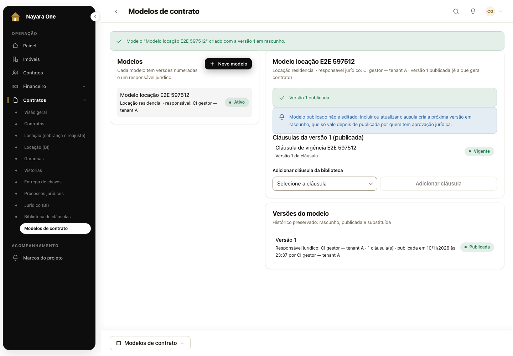
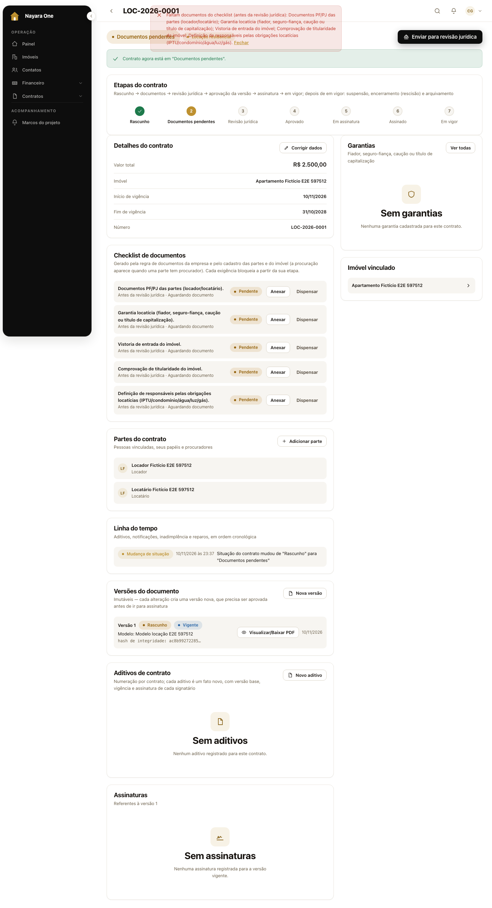
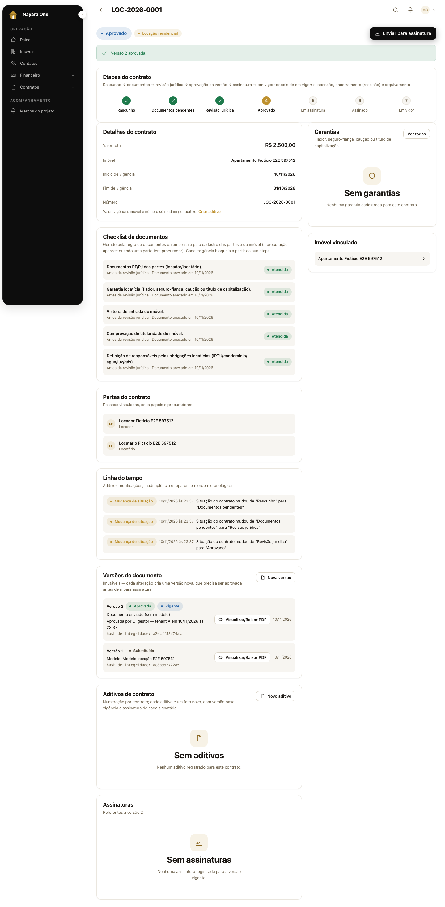
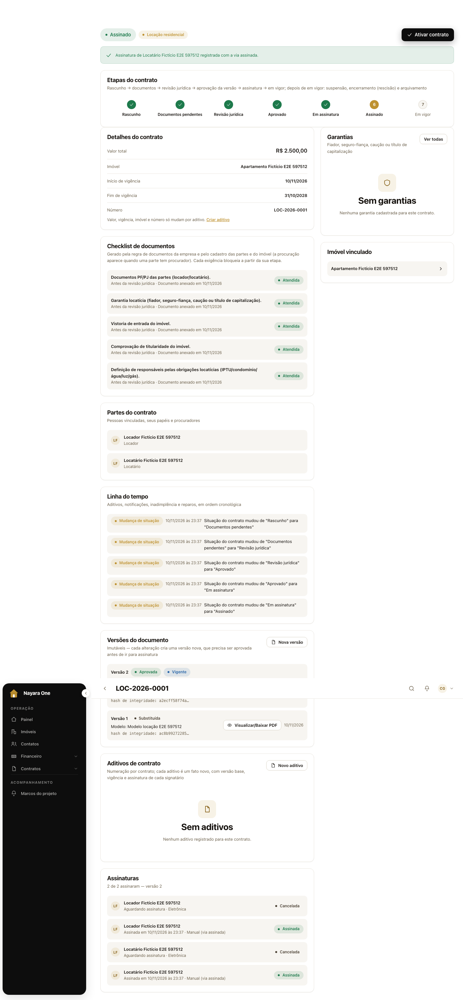
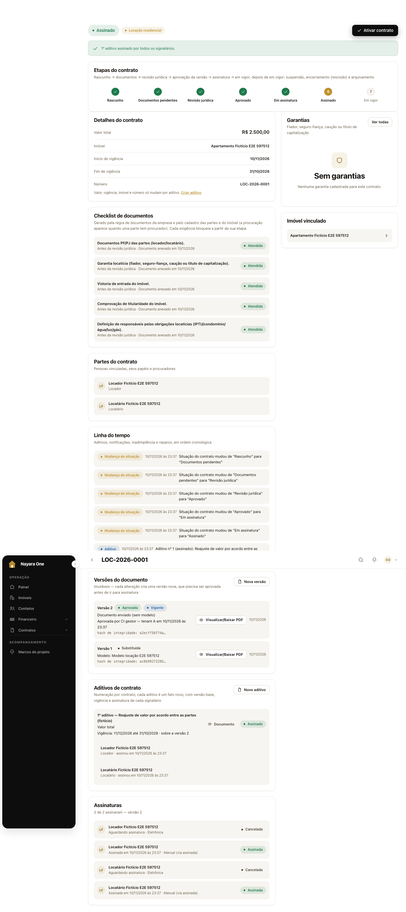
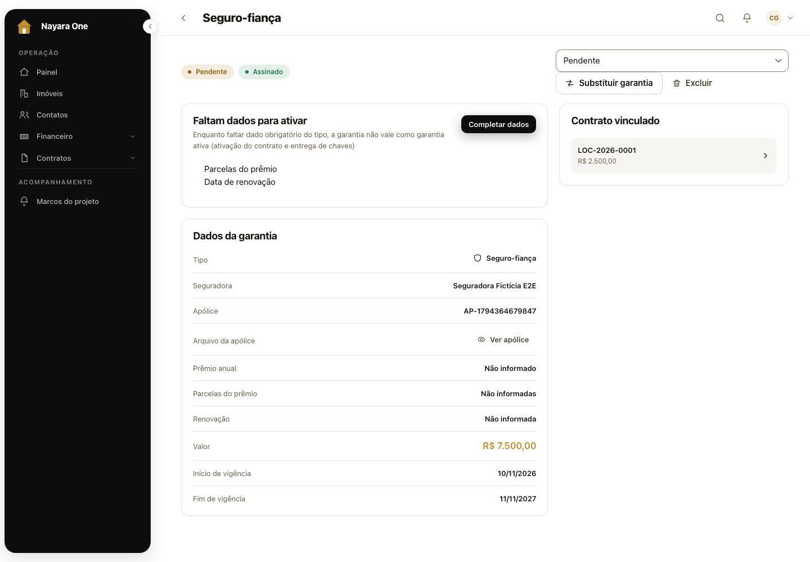
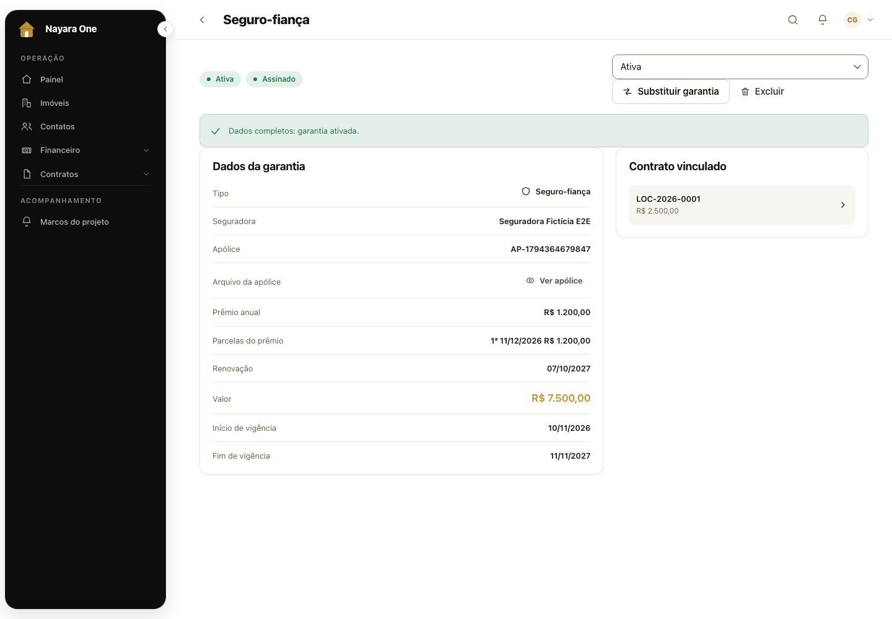
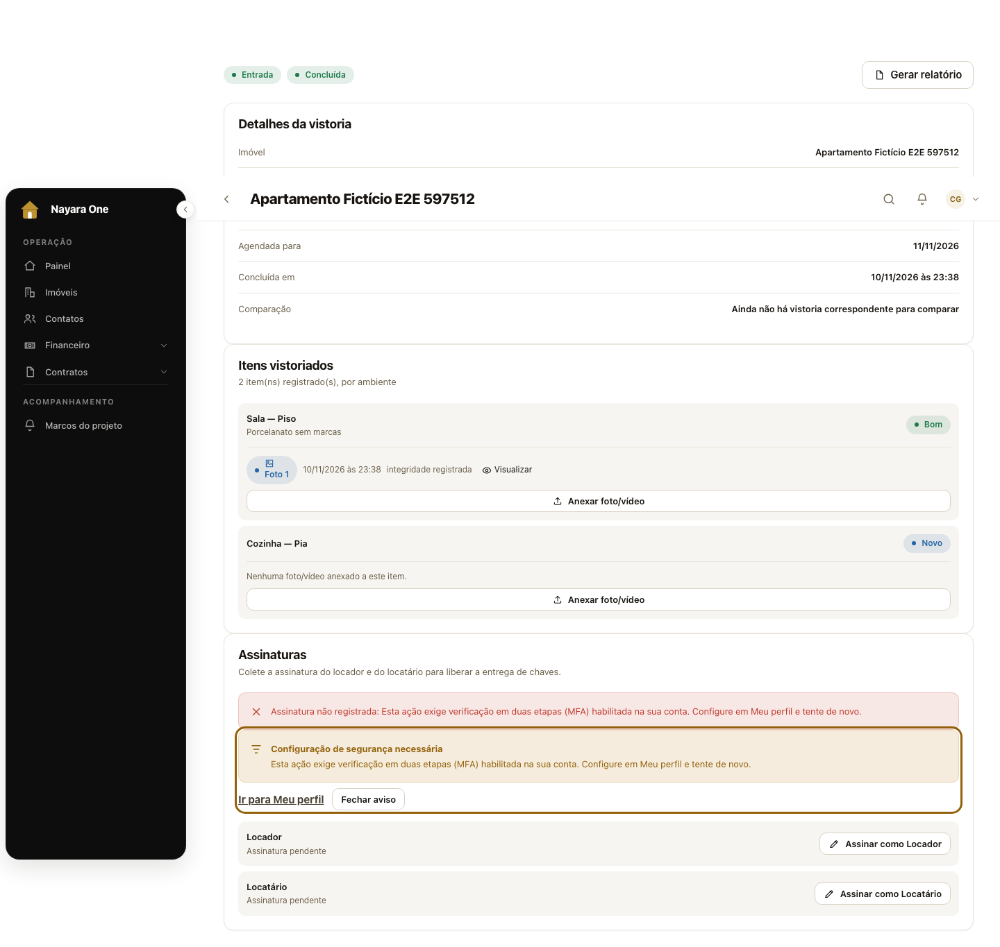
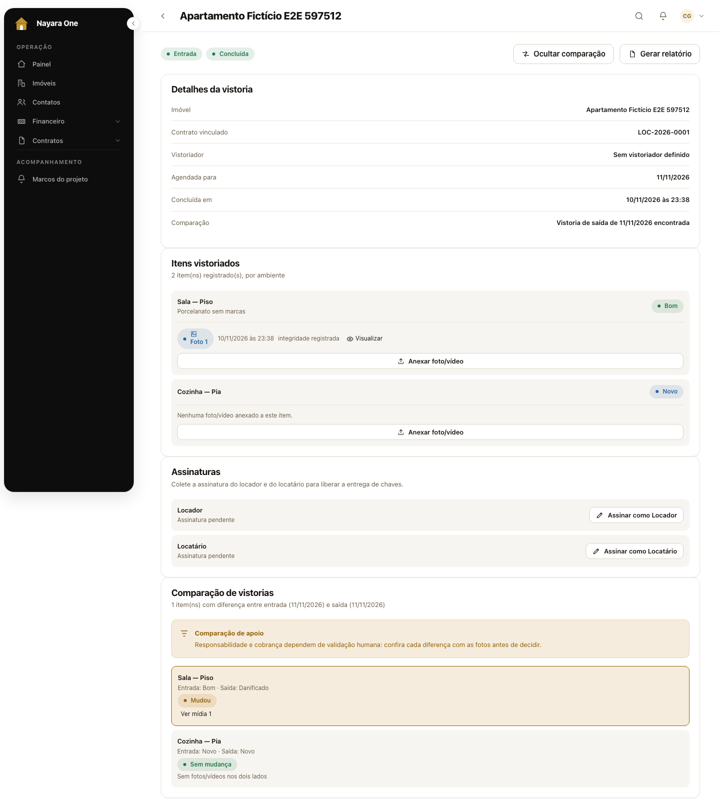
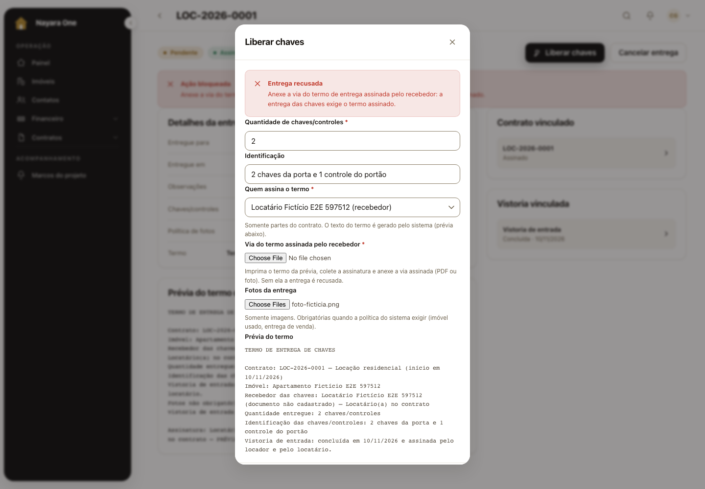
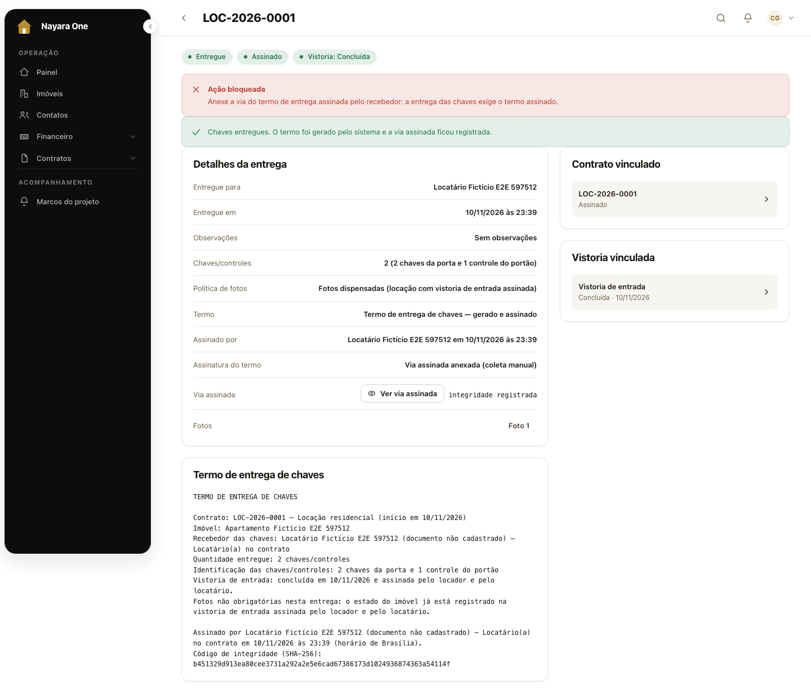
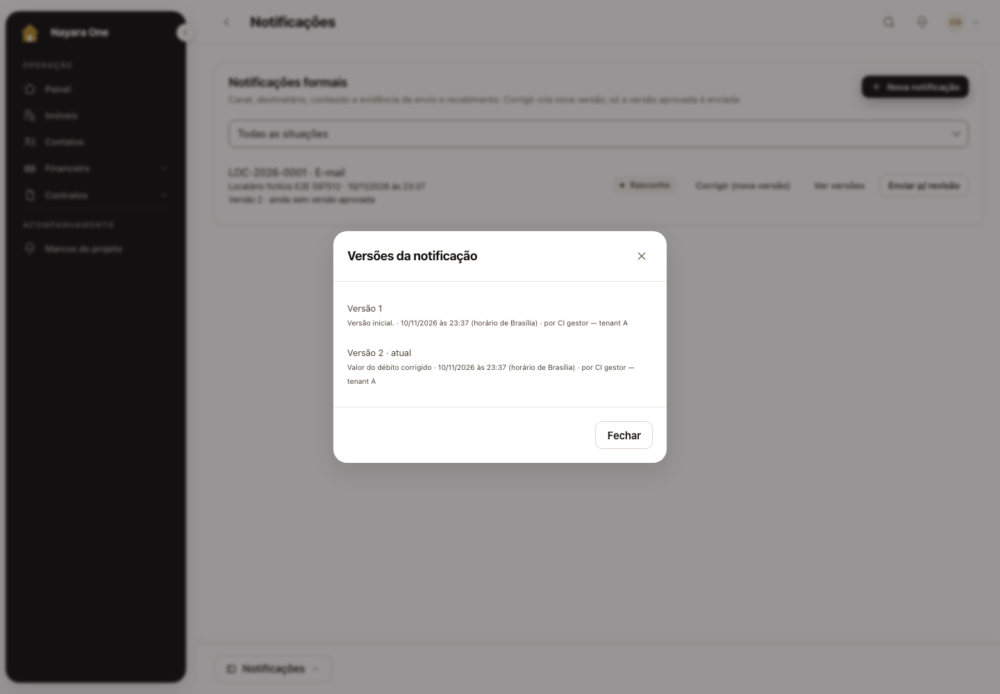
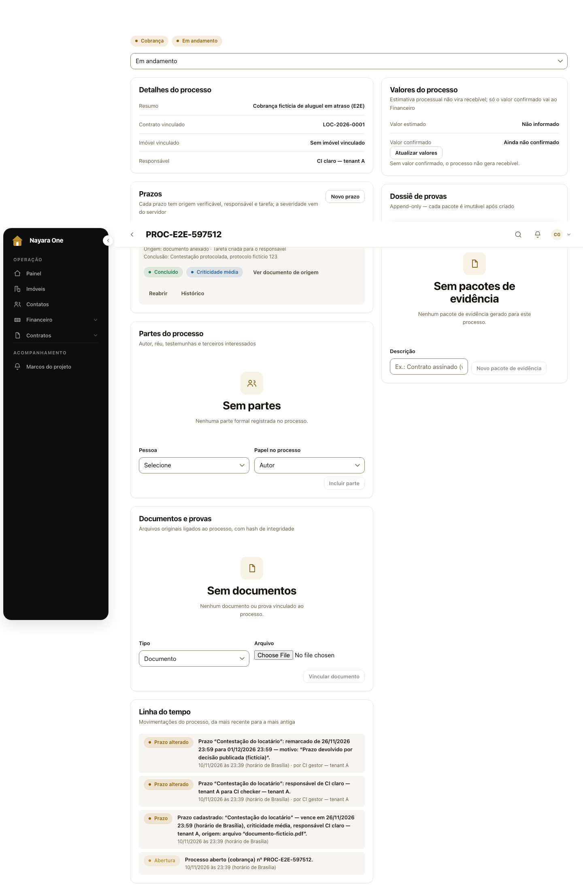
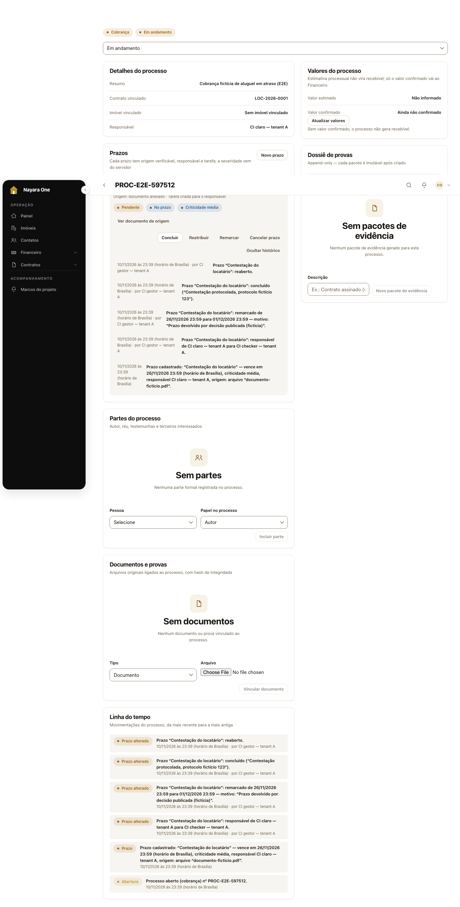
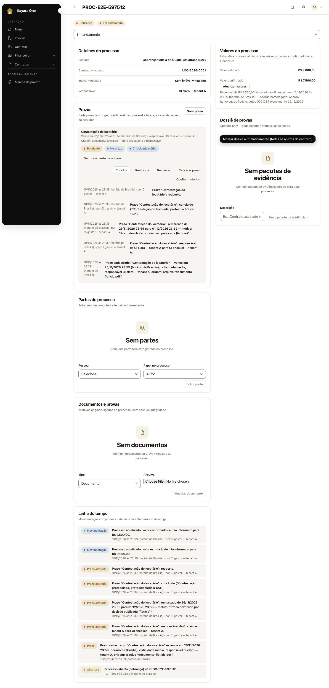
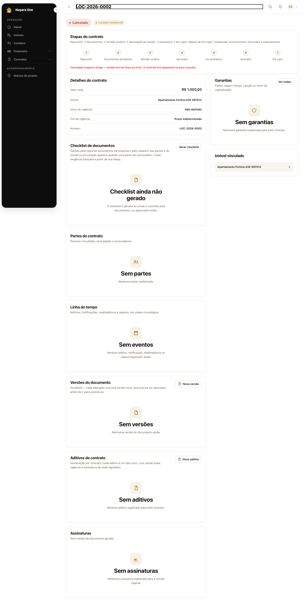
Primeira execução, no commit 52740c89 (antes das correções): 2752 ataques em 156 rotas, achados 2 crítico(s), 19 alto(s), 5 médio(s), 18 baixo(s). Os achados críticos e altos viraram as correções listadas acima (commit fd18a57a e f277c6de).
Na execução final da esteira (etapa 17, pentest) o resultado foi VERDE, sem achado crítico ou alto.
RELATORIO_PENTEST_M5.md, SHA-256 6141fb0d7da56003…)Uma linha é gravada em cada tabela, as migrations do Marco 5 são desfeitas e refeitas, e confere-se o mesmo identificador interno da tabela, as mesmas linhas, a segurança por empresa (RLS), as políticas, as permissões, os índices e as chaves que apontam para ela.
renomes-livro-prova.json, SHA-256 3a2757217a42e106…)Cada linha tem as três provas: teste nomeado com resultado, resposta HTTP real (ou execução real) com data e hora, e o JSON da linha. "Prova nova" quer dizer: a matriz do Marco 5 classificou a linha como ATENDIDO_PROVA_NOVA (implementada ou provada nesta rodada).
| ID e situação | Requisito (caderno) | Implementação e commit | Testes e resultado | Resposta HTTP ao vivo | Dados (JSON) | Como reproduzir | Tela para reteste |
|---|---|---|---|---|---|---|---|
| M5-A0002-dc355e Atendido prova nova | Este bloco deve garantir que nenhum contrato avance sem documentação e aprovações obrigatórias, que a locação mantenha histórico completo de garantias e obrigações, que vistorias sejam comparáveis e assinadas, e que processos/prazos jurídicos possuam rastreabilidade, evidência e alertas. P1 > 1. Objetivo (linha 15 do caderno) Implementado na segunda onda (o livro manda) e provado por teste novo: test/m5fech.contratos.versoesAprovacao.test.js "Guia §6: aprovação é da versão — versão nova depois da aprovação nasce DRAFT, não vai para assinatura e exige nova aprovação"; test/m5fech.contratos.checklist.test.js "JUR-003/JUR-TS-003: com exigência obrigatória pendente o contrato não avança por HTTP; com a exigência satisfeita por arquivo real, avança"; test/marco5.batch2.test.js "M5-10: SIGNED forjado (sem documento nem assinatura) NÃO vira ACTIVE — o gate de ativação reconfere do zero". Documentação obrigatória bloqueia por etapa e a aprovação obrigatória é da versão: versão nova exige nova aprovação antes de ir para assinatura. Garantias, vistorias e prazos deste objetivo são provados pelas áreas Locação e Jurídico. Correção M5VP (11-12/11/2026, verificação K=3/K=4 e UAT): as quatro garantias do objetivo provadas por teste próprio (test/m5vp.objetivo.test.js): checklist e versão aprovada (contract.service transitionContractStatus), histórico de garantias (guaranteeStateGuards.js, gatilho 20260101015600) e de obrigações (legal.lease_obligation_cycles), vistorias assinadas e comparáveis (inspection.service compareInspections), prazos com origem, alerta e ocorrência (legalDeadlineAlertJob.js). Decisões em Maturacao/demandas/decisoes-de-implementacao.md (DI-M5VP). | src/modules/legal/contracts/application/contract.service.js transitionContractStatus (gates por etapa); src/modules/legal/contracts/application/contractVersionApproval.js markVersionApproved/approveLatestVersion/assertApprovedCurrentVersion; src/modules/legal/contracts/application/contractVersionActions.service.js approveContractVersion/sendContractVersionForSignature; migration 20260101009981 (contract_versions.status/approved_by/approved_at, contracts.approved_version_id, gatilho); correção M5VP: as quatro garantias do objetivo provadas por teste próprio (test/m5vp.objetivo.test.js): checklist e versão aprovada (contract.service transitionContractStatus), histórico de garantias (guaranteeStateGuards.js, gatilho 20260101015600) e de obrigações (legal.lease_obligation_cycles), vistorias assinadas e comparáveis (inspection.service compareInspections), prazos com origem, alerta e ocorrência (legalDeadlineAlertJob.js) Commit: API m5fix/vistorias-prazos@73218e6f; Front m5fix/vistorias-prazos@fc0343c; commits dos testes: 90202613, 52740c89, 28c894ea |
7 de 7 teste(s) citado(s) passaram na suíte de 11/11/2026 00:19:13 a 11/11/2026 00:55:00 |
6 passo(s) HTTP real(is) nesta linha, captura de 11/11/2026 00:42:40 | M5-A0002-dc355e-provas.json SHA-256 f3e6fc961f2766f4…; cópia idêntica ao original | Ver comandosTestes: cd NayaraOne--API && npm run test:m5:arquivos -- test/m5fech.contratos.versoesAprovacao.test.js test/m5fech.contratos.checklist.test.js test/marco5.batch2.test.js; correção M5VP: cd NayaraOne--API && npm run test:m5:arquivos -- test/m5vp.objetivo.test.js. Ao vivo: cd NayaraOne--API && npm run captura:m5 (passos CT-111, CT-111c, CT-127, CT-316, CT-316b, CT-316c, CT-317) | Contratos > Detalhe do contrato (/painel/contratos/lista/[id]) |
| M5-A0299-827218 Atendido prova nova | JUR-001 | Versão imutável | Contrato aprovado/assinado nunca é sobrescrito. P1 > 2. Princípios constitucionais [tabela: Código | Princípio | Regra] (linha 23 do caderno) Implementado na segunda onda (o livro manda) e provado por teste novo: test/m5fech.contratos.versoesAprovacao.test.js "JUR-001: a partir de APPROVED valor, vigência, imóvel e número não são reescritos — a correção é por aditivo"; test/m5fech.contratos.versoesAprovacao.test.js "Guia §4 assertEditableState: contrato assinado não recebe versão e o banco recusa reverter/forjar a aprovação da versão"; test/adversarial.legal.test.js "ADV-L07: adulterar o content_hash de uma ContractVersion direto no banco é REJEITADO pelo trigger append-only"; test/m5fech.contratos.adversariais.test.js "JUR-TS-014: aditivo não sobrescreve o contrato — cabeçalho, versões e hash intactos; versão não tem rota de edição e o banco recusa UPDATE". | trigger legal.contract_versions_block_update (append-only, migration 9981); src/modules/legal/contracts/application/contract.service.js correctContractData recusa valor/vigência/imóvel/número a partir de APPROVED (LEGAL_CONTRACT_TERMS_LOCKED_USE_ADDENDUM); createContractVersion recusa contrato assinado (LEGAL_CONTRACT_VERSION_NOT_EDITABLE) Commit: API m5fix/matriz@980a1eec; Front d048d7a; commits dos testes: 90202613, 52740c89 |
4 de 4 teste(s) citado(s) passaram na suíte de 11/11/2026 00:19:13 a 11/11/2026 00:55:00 |
2 passo(s) HTTP real(is) nesta linha, captura de 11/11/2026 00:42:40 | M5-A0299-827218.json SHA-256 c59ee179d6114d26…; cópia idêntica ao original | Ver comandosTestes: cd NayaraOne--API && npm run test:m5:arquivos -- test/m5fech.contratos.versoesAprovacao.test.js test/adversarial.legal.test.js test/m5fech.contratos.adversariais.test.js. Ao vivo: cd NayaraOne--API && npm run captura:m5 (passos CT-214, CT-215, CT-312, CT-321, CT-329b, CT-523) | Contratos > Detalhe do contrato (/painel/contratos/lista/[id]) |
| M5-A0300-7f0f4a Atendido prova nova | JUR-002 | Modelo versionado | Cláusulas/modelos possuem versão e responsável jurídico. P1 > 2. Princípios constitucionais [tabela: Código | Princípio | Regra] (linha 24 do caderno) Implementado na segunda onda (o livro manda) e provado por teste novo: test/m5fech.contratos.modelosAditivos.test.js "§6/JUR-002: só modelo PUBLICADO gera contrato, publicado não é editado — nova versão é criada; a versão do contrato guarda template_version_id; responsável jurídico no modelo e na cláusula"; test/legal.clauseLibrary.test.js "JUR-002: biblioteca de cláusulas — criar v1, criar v2 (append-only), v1 preservada e desativada". Responsável jurídico (exposto no GET do modelo e na lista de cláusulas): o informado em "legalResponsibleUserId" ou, sem ele, quem cria (o livro não define quem é). | src/modules/legal/contracts/application/templateVersions.service.js (legal.template_versions, migration 9982) + legal.clause_library/legal.clause_versions (migration 9983); responsável jurídico em contract_templates.legal_responsible_user_id e clause_library.legal_responsible_user_id Commit: API m5fix/matriz@980a1eec; Front d048d7a; commits dos testes: 90202613 |
2 de 2 teste(s) citado(s) passaram na suíte de 11/11/2026 00:19:13 a 11/11/2026 00:55:00 |
4 passo(s) HTTP real(is) nesta linha, captura de 11/11/2026 00:42:40 | M5-A0300-7f0f4a.json SHA-256 dabf71049a8600cc…; cópia idêntica ao original | Ver comandosTestes: cd NayaraOne--API && npm run test:m5:arquivos -- test/m5fech.contratos.modelosAditivos.test.js test/legal.clauseLibrary.test.js. Ao vivo: cd NayaraOne--API && npm run captura:m5 (passos CT-410, CT-414, CT-417d, CT-417f, CT-417g, CT-417h, CT-418) | Contratos > Cláusulas (/painel/contratos/clausulas) |
| M5-A0301-5baec1 Atendido prova nova | JUR-003 | Checklist obrigatório | Etapa não avança com documento obrigatório faltante. P1 > 2. Princípios constitucionais [tabela: Código | Princípio | Regra] (linha 27 do caderno) Implementado na segunda onda (o livro manda) e provado por teste novo: test/m5fech.contratos.checklist.test.js "JUR-003/JUR-TS-003: com exigência obrigatória pendente o contrato não avança por HTTP; com a exigência satisfeita por arquivo real, avança"; test/m5fech.contratos.maquinaTipos.test.js "Guia §3/§5: DRAFT -> LEGAL_REVIEW direto com checklist completo; LEGAL_REVIEW -> DRAFT mesmo com pendência; atalhos fora do livro recusados"; test/legal.requirements.test.js "AUD-009: transitionContractStatus BLOQUEIA avanço de status com requirement PENDING (gate estava desligado)"; test/m5fech.contratos.rodada3.test.js "Mensagens: recusa por documento faltante traz o rótulo das exigências; os códigos ficam em campo estruturado; a linha do tempo usa rótulos". | src/modules/legal/contracts/application/contract.service.js gate por etapa (assertRequirementsSatisfied(contractId, targetStage)); requirements.service.js satisfyRequirement exige arquivo da empresa Commit: API m5fix/matriz@980a1eec; Front d048d7a; commits dos testes: 52740c89, 90202613, cbd80b79 |
4 de 4 teste(s) citado(s) passaram na suíte de 11/11/2026 00:19:13 a 11/11/2026 00:55:00 |
6 passo(s) HTTP real(is) nesta linha, captura de 11/11/2026 00:42:40 | M5-A0301-5baec1.json SHA-256 6bc3447901a9a507…; cópia idêntica ao original | Ver comandosTestes: cd NayaraOne--API && npm run test:m5:arquivos -- test/m5fech.contratos.checklist.test.js test/m5fech.contratos.maquinaTipos.test.js test/legal.requirements.test.js test/m5fech.contratos.rodada3.test.js. Ao vivo: cd NayaraOne--API && npm run captura:m5 (passos CT-111, CT-111c, CT-113, CT-114, CT-516, CT-134c, CT-134d) | Contratos > Detalhe do contrato (/painel/contratos/lista/[id]) |
| M5-A0302-11ebaa Atendido prova anterior reexecutada | JUR-004 | Assinatura da versão exata | Assinatura aponta para contract_version_id/hash. P1 > 2. Princípios constitucionais [tabela: Código | Princípio | Regra] (linha 30 do caderno) sem observação | src/modules/legal/signatures/framework/signature.request.js:50 requestEnvelope (Signature com contract_version_id + content_hash); src/modules/legal/signatures/signature.service.js:124 hash divergente recusado; tabela legal.signatures Commit: API m5fix/matriz@980a1eec; Front d048d7a; commits dos testes: 52740c89, 90202613 |
3 de 3 teste(s) citado(s) passaram na suíte de 11/11/2026 00:19:13 a 11/11/2026 00:55:00 |
1 passo(s) HTTP real(is) nesta linha, captura de 11/11/2026 00:42:40 | M5-A0302-11ebaa.json SHA-256 c8c8d4a7f394027a…; cópia idêntica ao original | Ver comandosTestes: cd NayaraOne--API && npm run test:m5:arquivos -- test/m5fech.contratos.rotasLivro.test.js test/m5fech.contratos.adversariais.test.js test/m45.cadernoM5Gaps.test.js. Ao vivo: cd NayaraOne--API && npm run captura:m5 (passos CT-132, CT-201, CT-328) | Contratos > Detalhe do contrato (/painel/contratos/lista/[id]) |
| M5-A0303-33ee80 Atendido prova nova | JUR-005 | Entrega de chaves bloqueável | Somente após condições, vistoria, assinatura e documentos previstos. P1 > 2. Princípios constitucionais [tabela: Código | Princípio | Regra] (linha 31 do caderno) Implementado (2ª onda): somente após condições (contrato SIGNED/ACTIVE, garantia), vistoria assinada, assinatura (termo com via assinada) e documentos previstos (checklist KEY_DELIVERY). Testes novos m5fech.locacao.chavesLivro. | src/modules/legal/leasing/key-delivery.service.js:319 releaseKeyDelivery (contrato SIGNED/ACTIVE, vistoria de entrada do contrato assinada por LANDLORD e TENANT, garantia ACTIVE e vigente, keysCount, termSignedByPersonId parte do contrato, fotos pela política do servidor); rota POST /api/v1/legal/key-deliveries/:id/release (legal:deliverKeys); src/modules/legal/leasing/keyDeliveryGates.js assertKeyDeliveryRequirements (requirements.service assertRequirementsSatisfied(contractId, 'KEY_DELIVERY'): checklist da etapa pelo Motor de Regras REG-JUR-001, fail closed); via assinada do termo (keyDeliveryGates.resolveTermEvidence) Commit: API m5fix/matriz@980a1eec; Front d048d7a; commits dos testes: 90202613 |
6 de 6 teste(s) citado(s) passaram na suíte de 11/11/2026 00:19:13 a 11/11/2026 00:55:00 |
13 passo(s) HTTP real(is) nesta linha, captura de 11/11/2026 00:42:40 | M5-A0303-33ee80.json SHA-256 c14e9b4dba3fe8b9…; cópia idêntica ao original | Ver comandosTestes: cd NayaraOne--API && npm run test:m5:arquivos -- test/m5fech.locacao.chavesLivro.test.js test/m5fech.locacao.chaves.test.js test/marco5.acceptance.test.js test/legal.keyDeliveries.test.js. Ao vivo: cd NayaraOne--API && npm run captura:m5 (passos LC-CH-02, LC-CH-03, LC-CH-07, LC-CH-10, LC-CH-13, LC-CH-39, LC-CH-41, LC-CH-23, LC-EN-02, LC-CH-15, LC-CH-16, LC-CH-38, LC-CH-28, LC-CH-33) | Contratos > Entrega de chaves (/painel/contratos/entrega-chaves, /painel/contratos/entrega-chaves/[id]) |
| M5-A0304-d26817 Atendido prova nova | JUR-006 | Garantia rastreável | Fiador, seguro, caução e demais garantias têm vigência/status próprios. P1 > 2. Princípios constitucionais [tabela: Código | Princípio | Regra] (linha 34 do caderno) Teste novo m5fech.locacao.garantias "cada garantia tem vigência e status próprios": liberar uma garantia não muda as outras; fim de vigência anterior ao início e status fora da lista são recusados. Os dados POR TIPO do §9 estão divergentes nas linhas de cada tipo. Correção M5VP (11-12/11/2026, verificação K=3/K=4 e UAT): src/modules/legal/leasing/guaranteeStateGuards.js assertFinalGuaranteeState (vigência nunca apagada para fiador/seguro/título; ACTIVE não perde dado exigido) chamada em guarantee.service.js updateGuarantee. Decisões em Maturacao/demandas/decisoes-de-implementacao.md (DI-M5VP). | src/modules/legal/leasing/guarantee.service.js:46 createGuarantee (status ACTIVE/RELEASED/CANCELLED validado, startsAt/endsAt por garantia, vigência obrigatória para GUARANTOR/INSURANCE/CAPITALIZATION_TITLE); src/modules/legal/leasing/guarantee.service.js:134 updateGuarantee; rota POST /api/v1/legal/contracts/:contractId/guarantees; tabela legal.guarantees; correção M5VP: src/modules/legal/leasing/guaranteeStateGuards.js assertFinalGuaranteeState (vigência nunca apagada para fiador/seguro/título; ACTIVE não perde dado exigido) chamada em guarantee.service.js updateGuarantee Commit: API m5fix/vistorias-prazos@73218e6f; Front m5fix/vistorias-prazos@fc0343c; commits dos testes: 90202613, 7806a21e |
4 de 4 teste(s) citado(s) passaram na suíte de 11/11/2026 00:19:13 a 11/11/2026 00:55:00 |
19 passo(s) HTTP real(is) nesta linha, captura de 11/11/2026 00:42:40 | M5-A0304-d26817-provas.json SHA-256 27fa790f22f80090…; cópia idêntica ao original | Ver comandosTestes: cd NayaraOne--API && npm run test:m5:arquivos -- test/m5fech.locacao.garantias.test.js test/marco5.acceptance.test.js test/legal.guaranteeExpiry.test.js; correção M5VP: cd NayaraOne--API && npm run test:m5:arquivos -- test/m5vp.garantias.test.js. Ao vivo: cd NayaraOne--API && npm run captura:m5 (passos LC-GA-02, LC-GA-03, LC-GA-04, LC-GA-05, LC-GA-12, LC-GA-13, LC-GA-15, LC-GA-18, LC-GA-19, LC-GA-21, LC-GA-32, LC-GA-P2, LC-GA-P3, LC-GA-P4, LC-GA-07, LC-GA-P6, LC-GA-08, LC-GA-39, LC-GA-14, LC-GA-P7) | Contratos > Garantias (/painel/contratos/garantias, /painel/contratos/garantias/novo) |
| M5-A0009-e79a24 Atendido prova anterior reexecutada | JUR-007 | Vistoria versionada | Entrada/saída e revisões são preservadas. P1 > 2. Princípios constitucionais [tabela: Código | Princípio | Regra] (linha 37 do caderno) sem observação | src/modules/legal/inspections/inspection.service.js:626 createInspectionRevision (nova vistoria com revision_of_inspection_id e motivo, itens copiados); src/modules/legal/inspections/inspection.service.js:34 assertInspectionNotSigned (original imutável) Commit: API m5fix/matriz@980a1eec; Front d048d7a; commits dos testes: 90202613 |
3 de 3 teste(s) citado(s) passaram na suíte de 11/11/2026 00:19:13 a 11/11/2026 00:55:00 |
9 passo(s) HTTP real(is) nesta linha, captura de 11/11/2026 00:42:40 | M5-A0009-e79a24.json SHA-256 e3b3976de38fcc49…; cópia idêntica ao original | Ver comandosTestes: cd NayaraOne--API && npm run test:m5:arquivos -- test/m45.cadernoM5Gaps.test.js test/legal.inspections.test.js test/marco5.auditGapClosureR1.test.js. Ao vivo: cd NayaraOne--API && npm run captura:m5 (passos LC-VI-01, LC-VI-02, LC-VI-26, LC-VI-34, LC-VI-35, LC-VI-43, LC-VI-45, LC-VI-27, LC-VI-28, LC-VI-29) | Contratos > Vistorias (/painel/contratos/vistorias, /painel/contratos/vistorias/[id]) |
| M5-A0305-1ecad7 Atendido prova anterior reexecutada | JUR-008 | IA não decide direito | NAY resume/sugere; decisão jurídica é humana. P1 > 2. Princípios constitucionais [tabela: Código | Princípio | Regra] (linha 38 do caderno) sem observação | src/modules/legal/cases/legalNay.service.js (NAY só resume/sugere; AVISO em toda saída; única escrita = ai.ai_runs); src/modules/legal/contracts/application/notices.service.js approveNotice (rascunho da IA só sai após revisão humana) Commit: API m5fix/matriz@980a1eec; Front d048d7a; commits dos testes: 90202613, 1d4a4ed0 |
4 de 4 teste(s) citado(s) passaram na suíte de 11/11/2026 00:19:13 a 11/11/2026 00:55:00 |
5 passo(s) HTTP real(is) nesta linha, captura de 11/11/2026 00:42:40 | M5-A0305-1ecad7.json SHA-256 93bea4483a680e0f…; cópia idêntica ao original | Ver comandosTestes: cd NayaraOne--API && npm run test:m5:arquivos -- test/legal.nay.test.js test/auditoriaNayara.marco5.coverage.test.js test/m5fech.juridico.nay.test.js test/marco5.auditGapClosureR1.test.js. Ao vivo: cd NayaraOne--API && npm run captura:m5 (passos JR-Y14, JR-Y18, JR-N06, JR-N11, JR-N18, JR-N04, JR-N08, JR-Y08) | sem tela própria (prova pela API) |
| M5-A0306-a4b4b7 Atendido prova anterior reexecutada | JUR-009 | Prazo tem responsável | Todo prazo jurídico crítico tem origem, responsável e escalonamento. P1 > 2. Princípios constitucionais [tabela: Código | Princípio | Regra] (linha 39 do caderno) sem observação | src/modules/legal/cases/deadline.service.js createLegalDeadline (origem obrigatória; CRITICAL exige responsável efetivo e escalonamento via src/modules/legal/cases/legalDeadlineAccountability.js); src/modules/legal/cases/legalDeadlineInvariants.js assertFinalDeadlineState (reabertura/edição) Commit: API m5fix/matriz@980a1eec; Front d048d7a; commits dos testes: 90202613, 52740c89 |
4 de 4 teste(s) citado(s) passaram na suíte de 11/11/2026 00:19:13 a 11/11/2026 00:55:00 |
15 passo(s) HTTP real(is) nesta linha, captura de 11/11/2026 00:42:40 | M5-A0306-a4b4b7.json SHA-256 81156befac74b6ba…; cópia idêntica ao original | Ver comandosTestes: cd NayaraOne--API && npm run test:m5:arquivos -- test/m5fech.juridico.prazos.test.js test/m5fech.juridico.adversariais.test.js test/legal.deadlineReopenCritical.test.js test/legal.deadlineFinalState.http.test.js. Ao vivo: cd NayaraOne--API && npm run captura:m5 (passos JR-D02, JR-D04, JR-D10, JR-D30, JR-D31d, JR-D31e, JR-D35, JR-D01, JR-D08, JR-D09, JR-D09b, JR-D12, JR-D29, JR-D31a, JR-D31b, JR-D31c, JR-D11) | sem tela própria (prova pela API) |
| M5-A0307-653b7c Atendido prova nova | JUR-010 | Prova com cadeia de custódia | Arquivo, áudio, foto e documento mantêm hash/origem/acessos. P1 > 2. Princípios constitucionais [tabela: Código | Princípio | Regra] (linha 42 do caderno) sem observação Correção M5VP (11-12/11/2026, verificação K=3/K=4 e UAT): src/modules/legal/cases/evidenceFileAccess.js recordEvidenceFileAccess (toda classe; hash, classe, origem) chamado em files.controller.js (GET /files/:id e /content) e dlp/downloads/download.controller.js (/download); origem = fileAccess.service resolveFileOwnership().origins. Decisões em Maturacao/demandas/decisoes-de-implementacao.md (DI-M5VP). | src/features/files/files.service.js uploadFile (SHA-256 no upload, cifrado) e getFileContent (confere o hash a cada leitura, FILE_INTEGRITY_VIOLATION); origem no manifesto (source/fileId/originalName/createdAt); acessos: legal.evidence_package_access_log + audit legal.evidence_package.access; correção M5VP: src/modules/legal/cases/evidenceFileAccess.js recordEvidenceFileAccess (toda classe; hash, classe, origem) chamado em files.controller.js (GET /files/:id e /content) e dlp/downloads/download.controller.js (/download); origem = fileAccess.service resolveFileOwnership().origins Commit: API m5fix/vistorias-prazos@73218e6f; Front m5fix/vistorias-prazos@fc0343c; commits dos testes: 90202613, 70bb844a |
6 de 6 teste(s) citado(s) passaram na suíte de 11/11/2026 00:19:13 a 11/11/2026 00:55:00 |
5 passo(s) HTTP real(is) nesta linha, captura de 11/11/2026 00:42:40 | M5-A0307-653b7c-provas.json SHA-256 782b35c8a5b9bd08…; cópia idêntica ao original | Ver comandosTestes: cd NayaraOne--API && npm run test:m5:arquivos -- test/m5fech.juridico.custodia.test.js test/marco5.legal.test.js test/files.accessControl.test.js; correção M5VP: cd NayaraOne--API && npm run test:m5:arquivos -- test/m5vp.evidencias.test.js. Ao vivo: cd NayaraOne--API && npm run captura:m5 (passos JR-E02, JR-E05, JR-E06, JR-E12, JR-E24, JR-E25, JR-E26, JR-E04, JR-E38) | sem tela própria (prova pela API) |
| M5-A0308-e51f55 Atendido prova nova | JUR-011 | Sem exclusão destrutiva | Processos, contratos, assinaturas, vistorias e provas críticas não são apagados. P1 > 2. Princípios constitucionais [tabela: Código | Princípio | Regra] (linha 45 do caderno) Prova nova: m5fech.juridico.custodia.test.js "JR sem exclusão destrutiva" varre as rotas e os serviços do Jurídico. | src/modules/legal/shared/legal.routes.js (nenhuma rota DELETE de processo, prazo, contrato, assinatura, vistoria ou dossiê; só DELETE /legal/guarantees/:id, fora da lista e guardada pela retenção legal); contract_versions append-only (trigger); legal hold bloqueia descarte (src/features/core-governance/data-quality/legalHold.guard.js) Commit: API m5fix/matriz@980a1eec; Front d048d7a; commits dos testes: 90202613, 3c0286bd, 629a7d74 |
4 de 4 teste(s) citado(s) passaram na suíte de 11/11/2026 00:19:13 a 11/11/2026 00:55:00 |
3 passo(s) HTTP real(is) nesta linha, captura de 11/11/2026 00:42:40 | M5-A0308-e51f55.json SHA-256 9711c1ffbec5b909…; cópia idêntica ao original | Ver comandosTestes: cd NayaraOne--API && npm run test:m5:arquivos -- test/m5fech.juridico.custodia.test.js test/adversarial.legal.test.js test/marco9/governanca/m9d912.inventario.test.js test/marco9/governanca/m9d912.retencao.test.js. Ao vivo: cd NayaraOne--API && npm run captura:m5 (passos JR-E05, JR-E28, JR-E30, JR-E39, JR-E40) | sem tela própria (prova pela API) |
| M5-A0309-69b0d3 Atendido prova nova | JUR-012 | Ocorrência contratual permanente | Aditivos, notificações, inadimplência e reparos entram na linha do tempo. P1 > 2. Princípios constitucionais [tabela: Código | Princípio | Regra] (linha 48 do caderno) sem observação Correção M5VP (11-12/11/2026, verificação K=3/K=4 e UAT): src/modules/legal/contracts/application/contractTimeline.service.js: reparos = item DAMAGED de vistoria + construction.maintenance_cases do imóvel durante a vigência. Decisões em Maturacao/demandas/decisoes-de-implementacao.md (DI-M5VP). | src/modules/legal/contracts/application/contractTimeline.service.js getContractTimeline (aditivos, notificações, inadimplência, reparos e status); rota GET /legal/contracts/:id/timeline; correção M5VP: src/modules/legal/contracts/application/contractTimeline.service.js: reparos = item DAMAGED de vistoria + construction.maintenance_cases do imóvel durante a vigência Commit: API m5fix/vistorias-prazos@73218e6f; Front m5fix/vistorias-prazos@fc0343c; commits dos testes: 90202613, 28c894ea |
2 de 2 teste(s) citado(s) passaram na suíte de 11/11/2026 00:19:13 a 11/11/2026 00:55:00 |
3 passo(s) HTTP real(is) nesta linha, captura de 11/11/2026 00:42:40 | M5-A0309-69b0d3-provas.json SHA-256 f16589aa1973c4d4…; cópia idêntica ao original | Ver comandosTestes: cd NayaraOne--API && npm run test:m5:arquivos -- test/legal.contractTimelineAndSubtypes.test.js; correção M5VP: cd NayaraOne--API && npm run test:m5:arquivos -- test/m5vp.objetivo.test.js. Ao vivo: cd NayaraOne--API && npm run captura:m5 (passos JR-N19, JR-N20, JR-P16, JR-N01) | Contratos > Contrato (/painel/contratos/lista/[id]) — linha do tempo |
| M5-A0310-1efdf0 Atendido prova nova | JUR-013 | Multiempresa | Contrato pertence à empresa correta e não mistura documentos/financeiro. P1 > 2. Princípios constitucionais [tabela: Código | Princípio | Regra] (linha 51 do caderno) Correção da verificação independente de 11/11/2026 (M5CT, branch m5fix/contratos-verificacao); aguarda o verificador. Parte financeira do JUR-013: o lançamento da empresa B não aponta contrato da A (antes gravava, a FK não passa pela RLS). DI-M5CT-7. | RLS FORCE em legal.* (contracts, contract_versions, signatures, contract_requirements, contract_amendments); src/modules/legal/contracts/application/contractVersions.service.js:165 e src/modules/legal/contracts/application/requirement.service.js:256 arquivo só da própria empresa; Financeiro: src/modules/finance/application/services/third-party-funds.service.js assertContractOfCompany + repositório findContractOfCompany (contractId do lançamento só da mesma empresa; 400 FINANCE_ENTRY_CONTRACT_NOT_IN_COMPANY) Commit: API m5fix/contratos-verificacao@da488a3c; Front m5fix/contratos-verificacao@5fc1a9c; commits dos testes: 52740c89, 90202613, 9ef507fb, 390abf4e |
5 de 5 teste(s) citado(s) passaram na suíte de 11/11/2026 00:19:13 a 11/11/2026 00:55:00 |
2 passo(s) HTTP real(is) nesta linha, captura de 11/11/2026 00:42:40 | M5-A0310-1efdf0.json SHA-256 1caf10d1baf04cf5…; cópia idêntica ao original | Ver comandosTestes: cd NayaraOne--API && npm run test:m5:arquivos -- test/m5fech.contratos.adversariais.test.js test/legal.crossCompanyIsolation.test.js test/adversarial.legal.test.js test/ciTwoTenantsFinanceLegal.test.js test/m5ct.contratos.multiempresa.test.js. Ao vivo: captura M5CT: Maturacao/fechamento-m3-m6/captura/marco-5/m5ct/captura-m5ct.js (banco descartável, ver cabeçalho) | Contratos > Contratos (/painel/contratos/lista) |
| M5-A0311-23bfba Atendido prova nova | JUR-014 | Evento como integração | Contrato, assinatura, chave e prazo geram eventos. P1 > 2. Princípios constitucionais [tabela: Código | Princípio | Regra] (linha 54 do caderno) Correção da verificação independente de 11/11/2026 (M5CT, branch m5fix/contratos-verificacao); aguarda o verificador. Os quatro itens do JUR-014 com teste citado: contrato (M45-M5-07 e m5ct eventos), assinatura (JUR-TS-007), chave (keys.delivered, m5fech.locacao.chaves) e prazo (legal.deadline.created). | src/modules/legal/shared/legalEvents.service.js:320 publishCadernoEvent / publishSignatureRequested / publishSignatureSigned / publishKeysDelivered / publishLegalDeadlineCreated; outbox integration.outbox_events na mesma transação; src/modules/legal/contracts/application/contractStatusEvents.js publishStatusEvents (eventos do contrato por qualquer caminho); chave: src/modules/legal/leasing/key-delivery.service.js releaseKeyDelivery -> publishKeysDelivered Commit: API m5fix/contratos-verificacao@da488a3c; Front m5fix/contratos-verificacao@5fc1a9c; commits dos testes: 90202613, 52740c89, babf60bd |
7 de 7 teste(s) citado(s) passaram na suíte de 11/11/2026 00:19:13 a 11/11/2026 00:55:00 |
8 passo(s) HTTP real(is) nesta linha, captura de 11/11/2026 00:42:40 | M5-A0311-23bfba.json SHA-256 3825c8c300c77e93…; cópia idêntica ao original | Ver comandosTestes: cd NayaraOne--API && npm run test:m5:arquivos -- test/m45.cadernoM5Gaps.test.js test/legal.contracts.test.js test/m5fech.contratos.adversariais.test.js test/marco5.legal.test.js test/m5fech.locacao.chaves.test.js test/m5ct.contratos.eventos.test.js. Ao vivo: captura M5CT: Maturacao/fechamento-m3-m6/captura/marco-5/m5ct/captura-m5ct.js (banco descartável, ver cabeçalho) | sem tela própria (prova pela API) |
| M5-A0312-5a734e Atendido prova nova | JUR-015 | Fail closed | Na dúvida crítica/documento ausente, bloquear etapa em vez de presumir conformidade. P1 > 2. Princípios constitucionais [tabela: Código | Princípio | Regra] (linha 55 do caderno) Implementado na segunda onda (o livro manda) e provado por teste novo: test/m5fech.contratos.checklist.test.js "JUR-003/JUR-TS-003: com exigência obrigatória pendente o contrato não avança por HTTP; com a exigência satisfeita por arquivo real, avança"; test/legal.frente5.rules.test.js "checklist documental: tipo SEM modelo bloqueia (falha fechado)"; test/marco5.legal.test.js "M5-07: com o padrão do tenant (true), criar versão SEM documentFileId é rejeitado na hora da criação"; test/m5fech.contratos.rodada3.test.js "Pentest (alto): id que não é uuid no corpo devolve 400 LEGAL_INVALID_ID, nunca 500, nas rotas de versão, checklist e modelo". | src/modules/legal/contracts/application/contract.service.js gate de partes ao entrar em DOCUMENTS_PENDING; requirements.service.js (sem checklist gera e cobra; tipo sem modelo bloqueia; documento inexistente não satisfaz); src/modules/legal/contracts/application/requirementRules.service.js regra indisponível = LEGAL_REQUIREMENT_RULE_UNAVAILABLE Commit: API m5fix/matriz@980a1eec; Front d048d7a; commits dos testes: 52740c89, 90202613, cbd80b79 |
4 de 4 teste(s) citado(s) passaram na suíte de 11/11/2026 00:19:13 a 11/11/2026 00:55:00 |
4 passo(s) HTTP real(is) nesta linha, captura de 11/11/2026 00:42:40 | M5-A0312-5a734e.json SHA-256 d0d548878b81e2c3…; cópia idêntica ao original | Ver comandosTestes: cd NayaraOne--API && npm run test:m5:arquivos -- test/m5fech.contratos.checklist.test.js test/legal.frente5.rules.test.js test/marco5.legal.test.js test/m5fech.contratos.rodada3.test.js. Ao vivo: cd NayaraOne--API && npm run captura:m5 (passos CT-105, CT-122, CT-122b, CT-516) | Contratos > Detalhe do contrato (/painel/contratos/lista/[id]) |
| M5-A0018-77e34f Atendido prova anterior reexecutada | SALE_CASH | Venda à vista. P1 > 3. Tipos de contrato [tabela: Código | Uso] (linha 64 do caderno) sem observação | src/modules/legal/contracts/domain/contractTypes.js:15 BOOK_CONTRACT_TYPES (Caderno §3) / CONTRACT_TYPES (SALE_CASH); src/modules/legal/contracts/application/contract.service.js:322 createContract; rotas POST /api/v1/legal/contracts e POST /api/v1/contracts (literal do Guia §14); tabela legal.contracts (contract_type, contract_number por prefixo) Commit: API m5fix/matriz@980a1eec; Front d048d7a; commits dos testes: 90202613, 52740c89 |
3 de 3 teste(s) citado(s) passaram na suíte de 11/11/2026 00:19:13 a 11/11/2026 00:55:00 |
1 passo(s) HTTP real(is) nesta linha, captura de 11/11/2026 00:42:40 | M5-A0018-77e34f.json SHA-256 74ec3756e45061f5…; cópia idêntica ao original | Ver comandosTestes: cd NayaraOne--API && npm run test:m5:arquivos -- test/legal.contractTimelineAndSubtypes.test.js test/marco5.auditGapClosureR1.test.js test/m5fech.contratos.rotasLivro.test.js. Ao vivo: cd NayaraOne--API && npm run captura:m5 (passos CT-002, CT-013, CT-023) | Contratos > Novo contrato (/painel/contratos/lista/novo) |
| M5-A0019-64e8b2 Atendido prova anterior reexecutada | SALE_FINANCED | Venda financiada. P1 > 3. Tipos de contrato [tabela: Código | Uso] (linha 65 do caderno) sem observação | src/modules/legal/contracts/domain/contractTypes.js:15 BOOK_CONTRACT_TYPES (Caderno §3) / CONTRACT_TYPES (SALE_FINANCED); src/modules/legal/contracts/application/contract.service.js:322 createContract; rotas POST /api/v1/legal/contracts e POST /api/v1/contracts (literal do Guia §14); tabela legal.contracts (contract_type, contract_number por prefixo) Commit: API m5fix/matriz@980a1eec; Front d048d7a; commits dos testes: 90202613 |
2 de 2 teste(s) citado(s) passaram na suíte de 11/11/2026 00:19:13 a 11/11/2026 00:55:00 |
1 passo(s) HTTP real(is) nesta linha, captura de 11/11/2026 00:42:40 | M5-A0019-64e8b2.json SHA-256 8f0935bb6e6b444c…; cópia idêntica ao original | Ver comandosTestes: cd NayaraOne--API && npm run test:m5:arquivos -- test/legal.contractTimelineAndSubtypes.test.js test/marco5.auditGapClosureR1.test.js. Ao vivo: cd NayaraOne--API && npm run captura:m5 (passos CT-003, CT-013) | Contratos > Novo contrato (/painel/contratos/lista/novo) |
| M5-A0020-87a024 Atendido prova anterior reexecutada | SALE_TRADE | Venda com permuta. P1 > 3. Tipos de contrato [tabela: Código | Uso] (linha 66 do caderno) sem observação | src/modules/legal/contracts/domain/contractTypes.js:15 BOOK_CONTRACT_TYPES (Caderno §3) / CONTRACT_TYPES (SALE_TRADE); src/modules/legal/contracts/application/contract.service.js:322 createContract; rotas POST /api/v1/legal/contracts e POST /api/v1/contracts (literal do Guia §14); tabela legal.contracts (contract_type, contract_number por prefixo) Commit: API m5fix/matriz@980a1eec; Front d048d7a; commits dos testes: 90202613 |
2 de 2 teste(s) citado(s) passaram na suíte de 11/11/2026 00:19:13 a 11/11/2026 00:55:00 |
1 passo(s) HTTP real(is) nesta linha, captura de 11/11/2026 00:42:40 | M5-A0020-87a024.json SHA-256 d570bb4385a3eecb…; cópia idêntica ao original | Ver comandosTestes: cd NayaraOne--API && npm run test:m5:arquivos -- test/legal.contractTimelineAndSubtypes.test.js test/marco5.auditGapClosureR1.test.js. Ao vivo: cd NayaraOne--API && npm run captura:m5 (passos CT-004, CT-013) | Contratos > Novo contrato (/painel/contratos/lista/novo) |
| M5-A0021-e335f3 Atendido prova anterior reexecutada | SALE_INSTALLMENTS | Venda parcelada. P1 > 3. Tipos de contrato [tabela: Código | Uso] (linha 67 do caderno) sem observação | src/modules/legal/contracts/domain/contractTypes.js:15 BOOK_CONTRACT_TYPES (Caderno §3) / CONTRACT_TYPES (SALE_INSTALLMENTS); src/modules/legal/contracts/application/contract.service.js:322 createContract; rotas POST /api/v1/legal/contracts e POST /api/v1/contracts (literal do Guia §14); tabela legal.contracts (contract_type, contract_number por prefixo) Commit: API m5fix/matriz@980a1eec; Front d048d7a; commits dos testes: 90202613 |
2 de 2 teste(s) citado(s) passaram na suíte de 11/11/2026 00:19:13 a 11/11/2026 00:55:00 |
1 passo(s) HTTP real(is) nesta linha, captura de 11/11/2026 00:42:40 | M5-A0021-e335f3.json SHA-256 a48adc5dd1bd4104…; cópia idêntica ao original | Ver comandosTestes: cd NayaraOne--API && npm run test:m5:arquivos -- test/legal.contractTimelineAndSubtypes.test.js test/marco5.auditGapClosureR1.test.js. Ao vivo: cd NayaraOne--API && npm run captura:m5 (passos CT-005, CT-013) | Contratos > Novo contrato (/painel/contratos/lista/novo) |
| M5-A0022-0656df Atendido prova anterior reexecutada | LEASE_RESIDENTIAL | Locação residencial. P1 > 3. Tipos de contrato [tabela: Código | Uso] (linha 68 do caderno) sem observação | src/modules/legal/contracts/domain/contractTypes.js:15 BOOK_CONTRACT_TYPES (Caderno §3) / CONTRACT_TYPES (LEASE_RESIDENTIAL); src/modules/legal/contracts/application/contract.service.js:322 createContract; rotas POST /api/v1/legal/contracts e POST /api/v1/contracts (literal do Guia §14); tabela legal.contracts (contract_type, contract_number por prefixo) Commit: API m5fix/matriz@980a1eec; Front d048d7a; commits dos testes: 90202613 |
2 de 2 teste(s) citado(s) passaram na suíte de 11/11/2026 00:19:13 a 11/11/2026 00:55:00 |
32 passo(s) HTTP real(is) nesta linha, captura de 11/11/2026 00:42:40 | M5-A0022-0656df.json SHA-256 cc63e435fc279849…; cópia idêntica ao original | Ver comandosTestes: cd NayaraOne--API && npm run test:m5:arquivos -- test/legal.contractTimelineAndSubtypes.test.js test/marco5.auditGapClosureR1.test.js. Ao vivo: cd NayaraOne--API && npm run captura:m5 (passos CT-006, CT-013, CT-001, CT-101, CT-102, CT-106, CT-107, CT-301-a, CT-301-b, CT-301-c, CT-301-d, CT-301-e0, CT-301-e1, CT-301-e2, CT-301-e3, CT-301-e4, CT-301-f, CT-301-g, CT-301-h, CT-301-i, CT-330-a, CT-330-b, CT-330-c, CT-330-d, CT-330-e0, CT-330-e1, CT-330-e2, CT-330-e3, CT-330-e4, CT-330-f, CT-330-g, CT-330-h, CT-330-i) | Contratos > Novo contrato (/painel/contratos/lista/novo) |
| M5-A0023-6eecaf Atendido prova anterior reexecutada | LEASE_COMMERCIAL | Locação comercial. P1 > 3. Tipos de contrato [tabela: Código | Uso] (linha 69 do caderno) sem observação | src/modules/legal/contracts/domain/contractTypes.js:15 BOOK_CONTRACT_TYPES (Caderno §3) / CONTRACT_TYPES (LEASE_COMMERCIAL); src/modules/legal/contracts/application/contract.service.js:322 createContract; rotas POST /api/v1/legal/contracts e POST /api/v1/contracts (literal do Guia §14); tabela legal.contracts (contract_type, contract_number por prefixo) Commit: API m5fix/matriz@980a1eec; Front d048d7a; commits dos testes: 90202613 |
2 de 2 teste(s) citado(s) passaram na suíte de 11/11/2026 00:19:13 a 11/11/2026 00:55:00 |
1 passo(s) HTTP real(is) nesta linha, captura de 11/11/2026 00:42:40 | M5-A0023-6eecaf.json SHA-256 f22eabac9da32234…; cópia idêntica ao original | Ver comandosTestes: cd NayaraOne--API && npm run test:m5:arquivos -- test/legal.contractTimelineAndSubtypes.test.js test/marco5.auditGapClosureR1.test.js. Ao vivo: cd NayaraOne--API && npm run captura:m5 (passos CT-007, CT-013) | Contratos > Novo contrato (/painel/contratos/lista/novo) |
| M5-A0024-a3b990 Atendido prova anterior reexecutada | LEASE_SEASONAL | Temporada. P1 > 3. Tipos de contrato [tabela: Código | Uso] (linha 70 do caderno) sem observação | src/modules/legal/contracts/domain/contractTypes.js:15 BOOK_CONTRACT_TYPES (Caderno §3) / CONTRACT_TYPES (LEASE_SEASONAL); src/modules/legal/contracts/application/contract.service.js:322 createContract; rotas POST /api/v1/legal/contracts e POST /api/v1/contracts (literal do Guia §14); tabela legal.contracts (contract_type, contract_number por prefixo) Commit: API m5fix/matriz@980a1eec; Front d048d7a; commits dos testes: 90202613 |
2 de 2 teste(s) citado(s) passaram na suíte de 11/11/2026 00:19:13 a 11/11/2026 00:55:00 |
1 passo(s) HTTP real(is) nesta linha, captura de 11/11/2026 00:42:40 | M5-A0024-a3b990.json SHA-256 f54883b209f0c376…; cópia idêntica ao original | Ver comandosTestes: cd NayaraOne--API && npm run test:m5:arquivos -- test/legal.contractTimelineAndSubtypes.test.js test/marco5.auditGapClosureR1.test.js. Ao vivo: cd NayaraOne--API && npm run captura:m5 (passos CT-008, CT-013) | Contratos > Novo contrato (/painel/contratos/lista/novo) |
| M5-A0025-7cf0c1 Atendido prova anterior reexecutada | PROPERTY_ADMIN | Administração de imóvel. P1 > 3. Tipos de contrato [tabela: Código | Uso] (linha 71 do caderno) sem observação | src/modules/legal/contracts/domain/contractTypes.js:15 BOOK_CONTRACT_TYPES (Caderno §3) / CONTRACT_TYPES (PROPERTY_ADMIN); src/modules/legal/contracts/application/contract.service.js:322 createContract; rotas POST /api/v1/legal/contracts e POST /api/v1/contracts (literal do Guia §14); tabela legal.contracts (contract_type, contract_number por prefixo) Commit: API m5fix/matriz@980a1eec; Front d048d7a; commits dos testes: 90202613 |
2 de 2 teste(s) citado(s) passaram na suíte de 11/11/2026 00:19:13 a 11/11/2026 00:55:00 |
1 passo(s) HTTP real(is) nesta linha, captura de 11/11/2026 00:42:40 | M5-A0025-7cf0c1.json SHA-256 a6b0e8e05e2d698f…; cópia idêntica ao original | Ver comandosTestes: cd NayaraOne--API && npm run test:m5:arquivos -- test/legal.contractTimelineAndSubtypes.test.js test/marco5.auditGapClosureR1.test.js. Ao vivo: cd NayaraOne--API && npm run captura:m5 (passos CT-009, CT-013) | Contratos > Novo contrato (/painel/contratos/lista/novo) |
| M5-A0026-efe161 Atendido prova anterior reexecutada | CONSTRUCTION | Construção/empreitada. P1 > 3. Tipos de contrato [tabela: Código | Uso] (linha 72 do caderno) sem observação | src/modules/legal/contracts/domain/contractTypes.js:15 BOOK_CONTRACT_TYPES (Caderno §3) / CONTRACT_TYPES (CONSTRUCTION, exige construction_project_id); src/modules/legal/contracts/application/contract.service.js:322 createContract; rotas POST /api/v1/legal/contracts e POST /api/v1/contracts (literal do Guia §14); tabela legal.contracts (contract_type, contract_number por prefixo) Commit: API m5fix/matriz@980a1eec; Front d048d7a; commits dos testes: 90202613 |
3 de 3 teste(s) citado(s) passaram na suíte de 11/11/2026 00:19:13 a 11/11/2026 00:55:00 |
2 passo(s) HTTP real(is) nesta linha, captura de 11/11/2026 00:42:40 | M5-A0026-efe161.json SHA-256 2a5b8b6c0c76f2e5…; cópia idêntica ao original | Ver comandosTestes: cd NayaraOne--API && npm run test:m5:arquivos -- test/legal.constructionContractType.test.js test/marco5.auditGapClosureR1.test.js. Ao vivo: cd NayaraOne--API && npm run captura:m5 (passos CT-010, CT-011, CT-012, CT-013) | Contratos > Novo contrato (/painel/contratos/lista/novo) |
| M5-A0027-72d604 Atendido prova nova | ADDENDUM | Aditivo vinculado ao contrato principal. P1 > 3. Tipos de contrato [tabela: Código | Uso] (linha 73 do caderno) Implementado na segunda onda (o livro manda) e provado por teste novo: test/m5fech.contratos.maquinaTipos.test.js "Caderno §3: ADDENDUM, KEY_DELIVERY e USED_PROPERTY_DELIVERY são tipos de contrato vinculados ao contrato principal"; test/m5fech.contratos.modelosAditivos.test.js "§13: aditivo referencia contrato e versão base, registra motivo, vigência, cláusulas alteradas e a assinatura de cada signatário". | src/modules/legal/contracts/domain/contractTypes.js:15 BOOK_CONTRACT_TYPES (Caderno §3) / CONTRACT_TYPES + LINKED_CONTRACT_TYPES (ADDENDUM exige parentContractId da mesma empresa, tipo principal; herda o imóvel; numeração ADT); legal.contracts.parent_contract_id (migration 9981); aditivo em legal.addenda Commit: API m5fix/matriz@980a1eec; Front d048d7a; commits dos testes: 90202613 |
2 de 2 teste(s) citado(s) passaram na suíte de 11/11/2026 00:19:13 a 11/11/2026 00:55:00 |
6 passo(s) HTTP real(is) nesta linha, captura de 11/11/2026 00:42:40 | M5-A0027-72d604.json SHA-256 d7f99f79cd864aef…; cópia idêntica ao original | Ver comandosTestes: cd NayaraOne--API && npm run test:m5:arquivos -- test/m5fech.contratos.maquinaTipos.test.js test/m5fech.contratos.modelosAditivos.test.js. Ao vivo: cd NayaraOne--API && npm run captura:m5 (passos CT-014, CT-014b, CT-016c, CT-016d, CT-016e, CT-017, CT-522) | Contratos > Novo contrato (/painel/contratos/lista/novo) |
| M5-A0028-81a9e0 Atendido prova nova | KEY_DELIVERY | Termo de entrega de chaves. P1 > 3. Tipos de contrato [tabela: Código | Uso] (linha 74 do caderno) Implementado na segunda onda (o livro manda) e provado por teste novo: test/m5fech.contratos.maquinaTipos.test.js "Caderno §3: ADDENDUM, KEY_DELIVERY e USED_PROPERTY_DELIVERY são tipos de contrato vinculados ao contrato principal"; test/legal.frente5.rules.test.js "entrega de chaves: termo gerado pelo servidor com versão e hash; signatário precisa ser parte/recebedor". | src/modules/legal/contracts/application/contract.service.js LINKED_CONTRACT_TYPES (KEY_DELIVERY vinculado; numeração CHV; checklist do fluxo de entrega pela regra REG-JUR-001); termo KEY_DELIVERY da entrega de chaves Commit: API m5fix/matriz@980a1eec; Front d048d7a; commits dos testes: 90202613 |
2 de 2 teste(s) citado(s) passaram na suíte de 11/11/2026 00:19:13 a 11/11/2026 00:55:00 |
3 passo(s) HTTP real(is) nesta linha, captura de 11/11/2026 00:42:40 | M5-A0028-81a9e0.json SHA-256 7e07ccb1b587eb9c…; cópia idêntica ao original | Ver comandosTestes: cd NayaraOne--API && npm run test:m5:arquivos -- test/m5fech.contratos.maquinaTipos.test.js test/legal.frente5.rules.test.js. Ao vivo: cd NayaraOne--API && npm run captura:m5 (passos CT-015, CT-015b, CT-016e, CT-513b) | Contratos > Novo contrato (/painel/contratos/lista/novo) |
| M5-A0029-b27d16 Atendido prova nova | USED_PROPERTY_DELIVERY | Termo de entrega de imóvel usado. P1 > 3. Tipos de contrato [tabela: Código | Uso] (linha 75 do caderno) Implementado na segunda onda (o livro manda) e provado por teste novo: test/m5fech.contratos.maquinaTipos.test.js "Caderno §3: ADDENDUM, KEY_DELIVERY e USED_PROPERTY_DELIVERY são tipos de contrato vinculados ao contrato principal"; test/legal.requirements.test.js "generateRequirementsForContract: template USED_PROPERTY_DELIVERY gera termo específico". | src/modules/legal/contracts/application/contract.service.js LINKED_CONTRACT_TYPES (USED_PROPERTY_DELIVERY vinculado; numeração IMU; checklist USED_PROPERTY_TERM); termo USED_PROPERTY_DELIVERY da entrega de chaves Commit: API m5fix/matriz@980a1eec; Front d048d7a; commits dos testes: 90202613 |
2 de 2 teste(s) citado(s) passaram na suíte de 11/11/2026 00:19:13 a 11/11/2026 00:55:00 |
3 passo(s) HTTP real(is) nesta linha, captura de 11/11/2026 00:42:40 | M5-A0029-b27d16.json SHA-256 208613dfccebe111…; cópia idêntica ao original | Ver comandosTestes: cd NayaraOne--API && npm run test:m5:arquivos -- test/m5fech.contratos.maquinaTipos.test.js test/legal.requirements.test.js. Ao vivo: cd NayaraOne--API && npm run captura:m5 (passos CT-016, CT-016b, CT-016e, CT-513) | Contratos > Novo contrato (/painel/contratos/lista/novo) |
| M5-A0030-d468ae Atendido prova nova | legal.contracts | Cabeçalho lógico. P1 > 4. Entidades/tabelas obrigatórias [tabela: Tabela | Finalidade] (linha 84 do caderno) Teste de inventário escrito nesta rodada (m5fech.meta.tabelasDoLivro). | tabela legal.contracts (migrations/, model em src/models/), RLS ENABLE+FORCE por company_id Commit: API m5fix/matriz@980a1eec; Front d048d7a; commits dos testes: 52740c89 |
1 de 1 teste(s) citado(s) passaram na suíte de 11/11/2026 00:19:13 a 11/11/2026 00:55:00 |
4 passo(s) HTTP real(is) nesta linha, captura de 11/11/2026 00:42:40 | M5-A0030-d468ae.json SHA-256 f92a5f1527b6cb1e…; cópia idêntica ao original | Ver comandosTestes: cd NayaraOne--API && npm run test:m5:arquivos -- test/m5fech.meta.tabelasDoLivro.test.js. Ao vivo: cd NayaraOne--API && npm run captura:m5 (passos MT-T01-SQL, MT-T01-GET, MT-T-ANON, MT-T-RLSB, MT-T-INV, MT-PREP-1, MT-T-B404) | sem tela própria (prova pela API) |
| M5-A0031-69a4ea Atendido prova nova | legal.contract_versions | Versões imutáveis. P1 > 4. Entidades/tabelas obrigatórias [tabela: Tabela | Finalidade] (linha 85 do caderno) Teste de inventário escrito nesta rodada (m5fech.meta.tabelasDoLivro). | tabela legal.contract_versions (migrations/, model em src/models/), RLS ENABLE+FORCE por company_id Commit: API m5fix/matriz@980a1eec; Front d048d7a; commits dos testes: 52740c89 |
1 de 1 teste(s) citado(s) passaram na suíte de 11/11/2026 00:19:13 a 11/11/2026 00:55:00 |
2 passo(s) HTTP real(is) nesta linha, captura de 11/11/2026 00:42:40 | M5-A0031-69a4ea.json SHA-256 d0adc10e6642d050…; cópia idêntica ao original | Ver comandosTestes: cd NayaraOne--API && npm run test:m5:arquivos -- test/m5fech.meta.tabelasDoLivro.test.js. Ao vivo: cd NayaraOne--API && npm run captura:m5 (passos MT-T02-SQL, MT-T02-GET, MT-T-ANON, MT-T-RLSB, MT-T-INV) | sem tela própria (prova pela API) |
| M5-A0032-0045b7 Atendido prova nova | legal.contract_parties | Partes/papéis. P1 > 4. Entidades/tabelas obrigatórias [tabela: Tabela | Finalidade] (linha 86 do caderno) Teste de inventário escrito nesta rodada (m5fech.meta.tabelasDoLivro). | tabela legal.contract_parties (migrations/, model em src/models/), RLS ENABLE+FORCE por company_id Commit: API m5fix/matriz@980a1eec; Front d048d7a; commits dos testes: 52740c89 |
1 de 1 teste(s) citado(s) passaram na suíte de 11/11/2026 00:19:13 a 11/11/2026 00:55:00 |
2 passo(s) HTTP real(is) nesta linha, captura de 11/11/2026 00:42:40 | M5-A0032-0045b7.json SHA-256 74aea62e15c07f85…; cópia idêntica ao original | Ver comandosTestes: cd NayaraOne--API && npm run test:m5:arquivos -- test/m5fech.meta.tabelasDoLivro.test.js. Ao vivo: cd NayaraOne--API && npm run captura:m5 (passos MT-T03-SQL, MT-T03-GET, MT-T-ANON, MT-T-RLSB, MT-T-INV) | sem tela própria (prova pela API) |
| M5-A0033-0233b3 Atendido prova nova | legal.contract_templates | Modelos. P1 > 4. Entidades/tabelas obrigatórias [tabela: Tabela | Finalidade] (linha 87 do caderno) Teste de inventário escrito nesta rodada (m5fech.meta.tabelasDoLivro). | tabela legal.contract_templates (migrations/, model em src/models/), RLS ENABLE+FORCE por company_id Commit: API m5fix/matriz@980a1eec; Front d048d7a; commits dos testes: 52740c89 |
1 de 1 teste(s) citado(s) passaram na suíte de 11/11/2026 00:19:13 a 11/11/2026 00:55:00 |
2 passo(s) HTTP real(is) nesta linha, captura de 11/11/2026 00:42:40 | M5-A0033-0233b3.json SHA-256 bb39c08ebe3c5553…; cópia idêntica ao original | Ver comandosTestes: cd NayaraOne--API && npm run test:m5:arquivos -- test/m5fech.meta.tabelasDoLivro.test.js. Ao vivo: cd NayaraOne--API && npm run captura:m5 (passos MT-T04-SQL, MT-T04-GET, MT-T-ANON, MT-T-RLSB, MT-T-INV) | sem tela própria (prova pela API) |
| M5-A0034-a144b2 Atendido prova nova | legal.template_versions | Versões do modelo. P1 > 4. Entidades/tabelas obrigatórias [tabela: Tabela | Finalidade] (linha 88 do caderno) Teste de inventário escrito nesta rodada (m5fech.meta.tabelasDoLivro). | tabela legal.template_versions (migrations/, model em src/models/), RLS ENABLE+FORCE por company_id Commit: API m5fix/matriz@980a1eec; Front d048d7a; commits dos testes: 52740c89 |
1 de 1 teste(s) citado(s) passaram na suíte de 11/11/2026 00:19:13 a 11/11/2026 00:55:00 |
2 passo(s) HTTP real(is) nesta linha, captura de 11/11/2026 00:42:40 | M5-A0034-a144b2.json SHA-256 db0f981246d0f9bf…; cópia idêntica ao original | Ver comandosTestes: cd NayaraOne--API && npm run test:m5:arquivos -- test/m5fech.meta.tabelasDoLivro.test.js. Ao vivo: cd NayaraOne--API && npm run captura:m5 (passos MT-T05-SQL, MT-T05-GET, MT-T-ANON, MT-T-RLSB, MT-T-INV) | sem tela própria (prova pela API) |
| M5-A0035-4c42f0 Atendido prova nova | legal.clause_library | Biblioteca de cláusulas. P1 > 4. Entidades/tabelas obrigatórias [tabela: Tabela | Finalidade] (linha 89 do caderno) Teste de inventário escrito nesta rodada (m5fech.meta.tabelasDoLivro). | tabela legal.clause_library (migrations/, model em src/models/), RLS ENABLE+FORCE por company_id Commit: API m5fix/matriz@980a1eec; Front d048d7a; commits dos testes: 52740c89 |
1 de 1 teste(s) citado(s) passaram na suíte de 11/11/2026 00:19:13 a 11/11/2026 00:55:00 |
3 passo(s) HTTP real(is) nesta linha, captura de 11/11/2026 00:42:40 | M5-A0035-4c42f0.json SHA-256 b27dff4dcc51740e…; cópia idêntica ao original | Ver comandosTestes: cd NayaraOne--API && npm run test:m5:arquivos -- test/m5fech.meta.tabelasDoLivro.test.js. Ao vivo: cd NayaraOne--API && npm run captura:m5 (passos MT-T06-SQL, MT-T06-GET, MT-T-ANON, MT-T-RLSB, MT-T-INV, MT-PREP-2) | sem tela própria (prova pela API) |
| M5-A0036-7f8c9b Atendido prova nova | legal.clause_versions | Versões homologadas. P1 > 4. Entidades/tabelas obrigatórias [tabela: Tabela | Finalidade] (linha 90 do caderno) Teste de inventário escrito nesta rodada (m5fech.meta.tabelasDoLivro). | tabela legal.clause_versions (migrations/, model em src/models/), RLS ENABLE+FORCE por company_id Commit: API m5fix/matriz@980a1eec; Front d048d7a; commits dos testes: 52740c89 |
1 de 1 teste(s) citado(s) passaram na suíte de 11/11/2026 00:19:13 a 11/11/2026 00:55:00 |
2 passo(s) HTTP real(is) nesta linha, captura de 11/11/2026 00:42:40 | M5-A0036-7f8c9b.json SHA-256 b22742cfa6e2cce3…; cópia idêntica ao original | Ver comandosTestes: cd NayaraOne--API && npm run test:m5:arquivos -- test/m5fech.meta.tabelasDoLivro.test.js. Ao vivo: cd NayaraOne--API && npm run captura:m5 (passos MT-T07-SQL, MT-T07-GET, MT-T-ANON, MT-T-RLSB, MT-T-INV) | sem tela própria (prova pela API) |
| M5-A0037-f9f799 Atendido prova nova | legal.contract_requirements | Checklist/documentos exigidos. P1 > 4. Entidades/tabelas obrigatórias [tabela: Tabela | Finalidade] (linha 91 do caderno) Teste de inventário escrito nesta rodada (m5fech.meta.tabelasDoLivro). | tabela legal.contract_requirements (migrations/, model em src/models/), RLS ENABLE+FORCE por company_id Commit: API m5fix/matriz@980a1eec; Front d048d7a; commits dos testes: 52740c89 |
1 de 1 teste(s) citado(s) passaram na suíte de 11/11/2026 00:19:13 a 11/11/2026 00:55:00 |
2 passo(s) HTTP real(is) nesta linha, captura de 11/11/2026 00:42:40 | M5-A0037-f9f799.json SHA-256 7981f662a5fb118b…; cópia idêntica ao original | Ver comandosTestes: cd NayaraOne--API && npm run test:m5:arquivos -- test/m5fech.meta.tabelasDoLivro.test.js. Ao vivo: cd NayaraOne--API && npm run captura:m5 (passos MT-T08-SQL, MT-T08-GET, MT-T-ANON, MT-T-RLSB, MT-T-INV) | sem tela própria (prova pela API) |
| M5-A0038-6f5422 Atendido prova nova | legal.signatures | Assinaturas/evidências. P1 > 4. Entidades/tabelas obrigatórias [tabela: Tabela | Finalidade] (linha 92 do caderno) Teste de inventário escrito nesta rodada (m5fech.meta.tabelasDoLivro). | tabela legal.signatures (migrations/, model em src/models/), RLS ENABLE+FORCE por company_id Commit: API m5fix/matriz@980a1eec; Front d048d7a; commits dos testes: 52740c89 |
1 de 1 teste(s) citado(s) passaram na suíte de 11/11/2026 00:19:13 a 11/11/2026 00:55:00 |
2 passo(s) HTTP real(is) nesta linha, captura de 11/11/2026 00:42:40 | M5-A0038-6f5422.json SHA-256 1edc4e510b12d9c3…; cópia idêntica ao original | Ver comandosTestes: cd NayaraOne--API && npm run test:m5:arquivos -- test/m5fech.meta.tabelasDoLivro.test.js. Ao vivo: cd NayaraOne--API && npm run captura:m5 (passos MT-T09-SQL, MT-T09-GET, MT-T-ANON, MT-T-RLSB, MT-T-INV) | sem tela própria (prova pela API) |
| M5-A0039-6ce543 Atendido prova nova | legal.addenda | Aditivos. P1 > 4. Entidades/tabelas obrigatórias [tabela: Tabela | Finalidade] (linha 93 do caderno) Teste de inventário escrito nesta rodada (m5fech.meta.tabelasDoLivro). | tabela legal.addenda (migrations/, model em src/models/), RLS ENABLE+FORCE por company_id Commit: API m5fix/matriz@980a1eec; Front d048d7a; commits dos testes: 52740c89 |
1 de 1 teste(s) citado(s) passaram na suíte de 11/11/2026 00:19:13 a 11/11/2026 00:55:00 |
2 passo(s) HTTP real(is) nesta linha, captura de 11/11/2026 00:42:40 | M5-A0039-6ce543.json SHA-256 f89ff12ff2da1cb9…; cópia idêntica ao original | Ver comandosTestes: cd NayaraOne--API && npm run test:m5:arquivos -- test/m5fech.meta.tabelasDoLivro.test.js. Ao vivo: cd NayaraOne--API && npm run captura:m5 (passos MT-T10-SQL, MT-T10-GET, MT-T-ANON, MT-T-RLSB, MT-T-INV) | sem tela própria (prova pela API) |
| M5-A0040-7ac2ac Atendido prova nova | legal.guarantees | Garantias. P1 > 4. Entidades/tabelas obrigatórias [tabela: Tabela | Finalidade] (linha 94 do caderno) Teste de inventário escrito nesta rodada (m5fech.meta.tabelasDoLivro). | tabela legal.guarantees (migrations/, model em src/models/), RLS ENABLE+FORCE por company_id Commit: API m5fix/matriz@980a1eec; Front d048d7a; commits dos testes: 52740c89 |
1 de 1 teste(s) citado(s) passaram na suíte de 11/11/2026 00:19:13 a 11/11/2026 00:55:00 |
2 passo(s) HTTP real(is) nesta linha, captura de 11/11/2026 00:42:40 | M5-A0040-7ac2ac.json SHA-256 898c1fb4c0a1613a…; cópia idêntica ao original | Ver comandosTestes: cd NayaraOne--API && npm run test:m5:arquivos -- test/m5fech.meta.tabelasDoLivro.test.js. Ao vivo: cd NayaraOne--API && npm run captura:m5 (passos MT-T11-SQL, MT-T11-GET, MT-T-ANON, MT-T-RLSB, MT-T-INV) | sem tela própria (prova pela API) |
| M5-A0041-a18689 Atendido prova nova | legal.key_deliveries | Entrega de chaves. P1 > 4. Entidades/tabelas obrigatórias [tabela: Tabela | Finalidade] (linha 95 do caderno) Teste de inventário escrito nesta rodada (m5fech.meta.tabelasDoLivro). | tabela legal.key_deliveries (migrations/, model em src/models/), RLS ENABLE+FORCE por company_id Commit: API m5fix/matriz@980a1eec; Front d048d7a; commits dos testes: 52740c89 |
1 de 1 teste(s) citado(s) passaram na suíte de 11/11/2026 00:19:13 a 11/11/2026 00:55:00 |
2 passo(s) HTTP real(is) nesta linha, captura de 11/11/2026 00:42:40 | M5-A0041-a18689.json SHA-256 27b4a01c931c2a62…; cópia idêntica ao original | Ver comandosTestes: cd NayaraOne--API && npm run test:m5:arquivos -- test/m5fech.meta.tabelasDoLivro.test.js. Ao vivo: cd NayaraOne--API && npm run captura:m5 (passos MT-T12-SQL, MT-T12-GET, MT-T-ANON, MT-T-RLSB, MT-T-INV) | sem tela própria (prova pela API) |
| M5-A0042-bd96c7 Atendido prova nova | legal.inspections | Vistorias. P1 > 4. Entidades/tabelas obrigatórias [tabela: Tabela | Finalidade] (linha 96 do caderno) Teste de inventário escrito nesta rodada (m5fech.meta.tabelasDoLivro). | tabela legal.inspections (migrations/, model em src/models/), RLS ENABLE+FORCE por company_id Commit: API m5fix/matriz@980a1eec; Front d048d7a; commits dos testes: 52740c89 |
1 de 1 teste(s) citado(s) passaram na suíte de 11/11/2026 00:19:13 a 11/11/2026 00:55:00 |
2 passo(s) HTTP real(is) nesta linha, captura de 11/11/2026 00:42:40 | M5-A0042-bd96c7.json SHA-256 94f4c15911551ea2…; cópia idêntica ao original | Ver comandosTestes: cd NayaraOne--API && npm run test:m5:arquivos -- test/m5fech.meta.tabelasDoLivro.test.js. Ao vivo: cd NayaraOne--API && npm run captura:m5 (passos MT-T13-SQL, MT-T13-GET, MT-T-ANON, MT-T-RLSB, MT-T-INV) | sem tela própria (prova pela API) |
| M5-A0043-d8731f Atendido prova nova | legal.inspection_items | Ambientes/itens. P1 > 4. Entidades/tabelas obrigatórias [tabela: Tabela | Finalidade] (linha 97 do caderno) Teste de inventário escrito nesta rodada (m5fech.meta.tabelasDoLivro). | tabela legal.inspection_items (migrations/, model em src/models/), RLS ENABLE+FORCE por company_id Commit: API m5fix/matriz@980a1eec; Front d048d7a; commits dos testes: 52740c89 |
1 de 1 teste(s) citado(s) passaram na suíte de 11/11/2026 00:19:13 a 11/11/2026 00:55:00 |
2 passo(s) HTTP real(is) nesta linha, captura de 11/11/2026 00:42:40 | M5-A0043-d8731f.json SHA-256 ea4b34a2793a241a…; cópia idêntica ao original | Ver comandosTestes: cd NayaraOne--API && npm run test:m5:arquivos -- test/m5fech.meta.tabelasDoLivro.test.js. Ao vivo: cd NayaraOne--API && npm run captura:m5 (passos MT-T14-SQL, MT-T14-GET, MT-T-ANON, MT-T-RLSB, MT-T-INV) | sem tela própria (prova pela API) |
| M5-A0044-2df892 Atendido prova nova | legal.inspection_media | Fotos/vídeos. P1 > 4. Entidades/tabelas obrigatórias [tabela: Tabela | Finalidade] (linha 98 do caderno) Teste de inventário escrito nesta rodada (m5fech.meta.tabelasDoLivro). | tabela legal.inspection_media (migrations/, model em src/models/), RLS ENABLE+FORCE por company_id Commit: API m5fix/matriz@980a1eec; Front d048d7a; commits dos testes: 52740c89 |
1 de 1 teste(s) citado(s) passaram na suíte de 11/11/2026 00:19:13 a 11/11/2026 00:55:00 |
2 passo(s) HTTP real(is) nesta linha, captura de 11/11/2026 00:42:40 | M5-A0044-2df892.json SHA-256 5c4630dc0e1afe1d…; cópia idêntica ao original | Ver comandosTestes: cd NayaraOne--API && npm run test:m5:arquivos -- test/m5fech.meta.tabelasDoLivro.test.js. Ao vivo: cd NayaraOne--API && npm run captura:m5 (passos MT-T15-SQL, MT-T15-GET, MT-T-ANON, MT-T-RLSB, MT-T-INV) | sem tela própria (prova pela API) |
| M5-A0045-eb7284 Atendido prova nova | legal.lease_obligations | IPTU/condomínio/água/luz/gás/SPU etc. P1 > 4. Entidades/tabelas obrigatórias [tabela: Tabela | Finalidade] (linha 99 do caderno) Teste de inventário escrito nesta rodada (m5fech.meta.tabelasDoLivro). | tabela legal.lease_obligations (migrations/, model em src/models/), RLS ENABLE+FORCE por company_id Commit: API m5fix/matriz@980a1eec; Front d048d7a; commits dos testes: 52740c89 |
1 de 1 teste(s) citado(s) passaram na suíte de 11/11/2026 00:19:13 a 11/11/2026 00:55:00 |
2 passo(s) HTTP real(is) nesta linha, captura de 11/11/2026 00:42:40 | M5-A0045-eb7284.json SHA-256 3672ec855cafa5ac…; cópia idêntica ao original | Ver comandosTestes: cd NayaraOne--API && npm run test:m5:arquivos -- test/m5fech.meta.tabelasDoLivro.test.js. Ao vivo: cd NayaraOne--API && npm run captura:m5 (passos MT-T16-SQL, MT-T16-GET, MT-T-ANON, MT-T-RLSB, MT-T-INV) | sem tela própria (prova pela API) |
| M5-A0046-1138c0 Atendido prova nova | legal.notices | Notificações. P1 > 4. Entidades/tabelas obrigatórias [tabela: Tabela | Finalidade] (linha 100 do caderno) Teste de inventário escrito nesta rodada (m5fech.meta.tabelasDoLivro). | tabela legal.notices (migrations/, model em src/models/), RLS ENABLE+FORCE por company_id Commit: API m5fix/matriz@980a1eec; Front d048d7a; commits dos testes: 52740c89 |
1 de 1 teste(s) citado(s) passaram na suíte de 11/11/2026 00:19:13 a 11/11/2026 00:55:00 |
2 passo(s) HTTP real(is) nesta linha, captura de 11/11/2026 00:42:40 | M5-A0046-1138c0.json SHA-256 04dda00b5ab29ee7…; cópia idêntica ao original | Ver comandosTestes: cd NayaraOne--API && npm run test:m5:arquivos -- test/m5fech.meta.tabelasDoLivro.test.js. Ao vivo: cd NayaraOne--API && npm run captura:m5 (passos MT-T17-SQL, MT-T17-GET, MT-T-ANON, MT-T-RLSB, MT-T-INV) | sem tela própria (prova pela API) |
| M5-A0047-64780b Atendido prova nova | legal.legal_cases | Processos. P1 > 4. Entidades/tabelas obrigatórias [tabela: Tabela | Finalidade] (linha 101 do caderno) Teste de inventário escrito nesta rodada (m5fech.meta.tabelasDoLivro). | tabela legal.legal_cases (migrations/, model em src/models/), RLS ENABLE+FORCE por company_id Commit: API m5fix/matriz@980a1eec; Front d048d7a; commits dos testes: 52740c89 |
1 de 1 teste(s) citado(s) passaram na suíte de 11/11/2026 00:19:13 a 11/11/2026 00:55:00 |
4 passo(s) HTTP real(is) nesta linha, captura de 11/11/2026 00:42:40 | M5-A0047-64780b.json SHA-256 39ff452a61de1251…; cópia idêntica ao original | Ver comandosTestes: cd NayaraOne--API && npm run test:m5:arquivos -- test/m5fech.meta.tabelasDoLivro.test.js. Ao vivo: cd NayaraOne--API && npm run captura:m5 (passos MT-T18-SQL, MT-T18-GET, MT-T-ANON, MT-T-RLSB, MT-T-INV, MT-PREP-3, MT-T-B404) | sem tela própria (prova pela API) |
| M5-A0048-193c7d Atendido prova nova | legal.case_parties | Partes. P1 > 4. Entidades/tabelas obrigatórias [tabela: Tabela | Finalidade] (linha 102 do caderno) Teste de inventário escrito nesta rodada (m5fech.meta.tabelasDoLivro). | tabela legal.case_parties (migrations/, model em src/models/), RLS ENABLE+FORCE por company_id Commit: API m5fix/matriz@980a1eec; Front d048d7a; commits dos testes: 52740c89 |
1 de 1 teste(s) citado(s) passaram na suíte de 11/11/2026 00:19:13 a 11/11/2026 00:55:00 |
2 passo(s) HTTP real(is) nesta linha, captura de 11/11/2026 00:42:40 | M5-A0048-193c7d.json SHA-256 7598c195a43866b2…; cópia idêntica ao original | Ver comandosTestes: cd NayaraOne--API && npm run test:m5:arquivos -- test/m5fech.meta.tabelasDoLivro.test.js. Ao vivo: cd NayaraOne--API && npm run captura:m5 (passos MT-T19-SQL, MT-T19-GET, MT-T-ANON, MT-T-RLSB, MT-T-INV) | sem tela própria (prova pela API) |
| M5-A0049-9aa2d7 Atendido prova nova | legal.legal_deadlines | Prazos. P1 > 4. Entidades/tabelas obrigatórias [tabela: Tabela | Finalidade] (linha 103 do caderno) Teste de inventário escrito nesta rodada (m5fech.meta.tabelasDoLivro). | tabela legal.legal_deadlines (migrations/, model em src/models/), RLS ENABLE+FORCE por company_id Commit: API m5fix/matriz@980a1eec; Front d048d7a; commits dos testes: 52740c89 |
1 de 1 teste(s) citado(s) passaram na suíte de 11/11/2026 00:19:13 a 11/11/2026 00:55:00 |
2 passo(s) HTTP real(is) nesta linha, captura de 11/11/2026 00:42:40 | M5-A0049-9aa2d7.json SHA-256 90c190ad5e0c4c1f…; cópia idêntica ao original | Ver comandosTestes: cd NayaraOne--API && npm run test:m5:arquivos -- test/m5fech.meta.tabelasDoLivro.test.js. Ao vivo: cd NayaraOne--API && npm run captura:m5 (passos MT-T20-SQL, MT-T20-GET, MT-T-ANON, MT-T-RLSB, MT-T-INV) | sem tela própria (prova pela API) |
| M5-A0050-1f193f Atendido prova nova | legal.evidence_packages | Dossiês/exportações de prova. P1 > 4. Entidades/tabelas obrigatórias [tabela: Tabela | Finalidade] (linha 104 do caderno) Teste de inventário escrito nesta rodada (m5fech.meta.tabelasDoLivro). | tabela legal.evidence_packages (migrations/, model em src/models/), RLS ENABLE+FORCE por company_id Commit: API m5fix/matriz@980a1eec; Front d048d7a; commits dos testes: 52740c89 |
1 de 1 teste(s) citado(s) passaram na suíte de 11/11/2026 00:19:13 a 11/11/2026 00:55:00 |
2 passo(s) HTTP real(is) nesta linha, captura de 11/11/2026 00:42:40 | M5-A0050-1f193f.json SHA-256 7b3e70c20a508f27…; cópia idêntica ao original | Ver comandosTestes: cd NayaraOne--API && npm run test:m5:arquivos -- test/m5fech.meta.tabelasDoLivro.test.js. Ao vivo: cd NayaraOne--API && npm run captura:m5 (passos MT-T21-SQL, MT-T21-GET, MT-T-ANON, MT-T-RLSB, MT-T-INV) | sem tela própria (prova pela API) |
| M5-A0051-1355bb Atendido prova anterior reexecutada | DRAFT | Montagem. P1 > 5. Estado do contrato [tabela: Status | Definição] (linha 111 do caderno) sem observação | src/modules/legal/contracts/domain/contract-state-machine.js:10 VALID_TRANSITIONS (DRAFT); src/modules/legal/contracts/application/contract.service.js:322 createContract nasce em DRAFT; tabela legal.contracts.status; auditoria legal.contract.status_change Commit: API m5fix/matriz@980a1eec; Front d048d7a; commits dos testes: 90202613, 52740c89 |
2 de 2 teste(s) citado(s) passaram na suíte de 11/11/2026 00:19:13 a 11/11/2026 00:55:00 |
1 passo(s) HTTP real(is) nesta linha, captura de 11/11/2026 00:42:40 | M5-A0051-1355bb.json SHA-256 e4ba8e1db0fc46b8…; cópia idêntica ao original | Ver comandosTestes: cd NayaraOne--API && npm run test:m5:arquivos -- test/marco5.auditGapClosureR1.test.js test/m5fech.contratos.rotasLivro.test.js. Ao vivo: cd NayaraOne--API && npm run captura:m5 (passos CT-103, CT-104, CT-224) | Contratos > Detalhe do contrato (/painel/contratos/lista/[id]) |
| M5-A0052-d0edf7 Atendido prova nova | DOCUMENTS_PENDING | Faltam documentos. P1 > 5. Estado do contrato [tabela: Status | Definição] (linha 112 do caderno) Implementado na segunda onda (o livro manda) e provado por teste novo: test/m5fech.contratos.checklist.test.js "JUR-003/JUR-TS-003: com exigência obrigatória pendente o contrato não avança por HTTP; com a exigência satisfeita por arquivo real, avança"; test/m5fech.contratos.maquinaTipos.test.js "Guia §3/§5: DRAFT -> LEGAL_REVIEW direto com checklist completo; LEGAL_REVIEW -> DRAFT mesmo com pendência; atalhos fora do livro recusados". | src/modules/legal/contracts/application/contract.service.js transitionContractStatus: entrar em DOCUMENTS_PENDING só exige as partes e gera o checklist (sem bloquear por documento) Commit: API m5fix/matriz@980a1eec; Front d048d7a; commits dos testes: 52740c89, 90202613 |
2 de 2 teste(s) citado(s) passaram na suíte de 11/11/2026 00:19:13 a 11/11/2026 00:55:00 |
2 passo(s) HTTP real(is) nesta linha, captura de 11/11/2026 00:42:40 | M5-A0052-d0edf7.json SHA-256 25ccaba03e42e030…; cópia idêntica ao original | Ver comandosTestes: cd NayaraOne--API && npm run test:m5:arquivos -- test/m5fech.contratos.checklist.test.js test/m5fech.contratos.maquinaTipos.test.js. Ao vivo: cd NayaraOne--API && npm run captura:m5 (passos CT-111b, CT-111c, CT-224) | Contratos > Detalhe do contrato (/painel/contratos/lista/[id]) |
| M5-A0053-93822f Atendido prova anterior reexecutada | LEGAL_REVIEW | Revisão jurídica. P1 > 5. Estado do contrato [tabela: Status | Definição] (linha 113 do caderno) sem observação | src/modules/legal/contracts/domain/contract-state-machine.js:10 VALID_TRANSITIONS (LEGAL_REVIEW); gate da etapa LEGAL_REVIEW Commit: API m5fix/matriz@980a1eec; Front d048d7a; commits dos testes: 90202613 |
2 de 2 teste(s) citado(s) passaram na suíte de 11/11/2026 00:19:13 a 11/11/2026 00:55:00 |
2 passo(s) HTTP real(is) nesta linha, captura de 11/11/2026 00:42:40 | M5-A0053-93822f.json SHA-256 7edbc216f30150d4…; cópia idêntica ao original | Ver comandosTestes: cd NayaraOne--API && npm run test:m5:arquivos -- test/marco5.auditGapClosureR1.test.js test/m5fech.contratos.maquinaTipos.test.js. Ao vivo: cd NayaraOne--API && npm run captura:m5 (passos CT-119, CT-120c, CT-224) | Contratos > Detalhe do contrato (/painel/contratos/lista/[id]) |
| M5-A0054-f96f34 Atendido prova nova | APPROVED | Versão homologada. P1 > 5. Estado do contrato [tabela: Status | Definição] (linha 114 do caderno) Implementado na segunda onda (o livro manda) e provado por teste novo: test/m5fech.contratos.versoesAprovacao.test.js "Guia §6: aprovação é da versão — versão nova depois da aprovação nasce DRAFT, não vai para assinatura e exige nova aprovação"; test/m5fech.contratos.rotasLivro.test.js "Guia §14: POST /contract-versions/:id/approve aprova só a versão vigente, com legal:approve, auditoria e contract.version.approved". | src/modules/legal/contracts/application/contract.service.js VALID_TRANSITIONS (APPROVED); src/modules/legal/contracts/application/contractVersionApproval.js markVersionApproved/approveLatestVersion/assertApprovedCurrentVersion; src/modules/legal/contracts/application/contractVersionActions.service.js approveContractVersion/sendContractVersionForSignature; migration 20260101009981 (contract_versions.status/approved_by/approved_at, contracts.approved_version_id, gatilho) Commit: API m5fix/matriz@980a1eec; Front d048d7a; commits dos testes: 90202613, 52740c89 |
2 de 2 teste(s) citado(s) passaram na suíte de 11/11/2026 00:19:13 a 11/11/2026 00:55:00 |
4 passo(s) HTTP real(is) nesta linha, captura de 11/11/2026 00:42:40 | M5-A0054-f96f34.json SHA-256 95dc2915d3b34b2c…; cópia idêntica ao original | Ver comandosTestes: cd NayaraOne--API && npm run test:m5:arquivos -- test/m5fech.contratos.versoesAprovacao.test.js test/m5fech.contratos.rotasLivro.test.js. Ao vivo: cd NayaraOne--API && npm run captura:m5 (passos CT-127, CT-128, CT-316c, CT-317, CT-314, CT-316, CT-224) | Contratos > Detalhe do contrato (/painel/contratos/lista/[id]) |
| M5-A0055-965151 Atendido prova anterior reexecutada | SIGNING | Em assinatura. P1 > 5. Estado do contrato [tabela: Status | Definição] (linha 115 do caderno) sem observação | src/modules/legal/contracts/domain/contract-state-machine.js:10 VALID_TRANSITIONS (SIGNING); src/modules/legal/contracts/application/contractVersionActions.service.js sendContractVersionForSignature; src/modules/legal/contracts/application/contract.service.js:194 assertDocumentGate; tabela legal.contracts.status; auditoria legal.contract.status_change Commit: API m5fix/matriz@980a1eec; Front d048d7a; commits dos testes: 52740c89, 90202613 |
2 de 2 teste(s) citado(s) passaram na suíte de 11/11/2026 00:19:13 a 11/11/2026 00:55:00 |
2 passo(s) HTTP real(is) nesta linha, captura de 11/11/2026 00:42:40 | M5-A0055-965151.json SHA-256 1da3fb5f5cdf1ddc…; cópia idêntica ao original | Ver comandosTestes: cd NayaraOne--API && npm run test:m5:arquivos -- test/m5fech.contratos.rotasLivro.test.js test/legal.contracts.test.js. Ao vivo: cd NayaraOne--API && npm run captura:m5 (passos CT-131, CT-134, CT-224) | Contratos > Detalhe do contrato (/painel/contratos/lista/[id]) |
| M5-A0056-103e8b Atendido prova anterior reexecutada | SIGNED | Assinaturas exigidas concluídas. P1 > 5. Estado do contrato [tabela: Status | Definição] (linha 116 do caderno) sem observação | src/modules/legal/contracts/domain/contract-state-machine.js:10 VALID_TRANSITIONS (SIGNED); src/modules/legal/signatures/framework/signature.complete.js:31 tryCompleteContract; src/modules/legal/contracts/application/contract.service.js:214 assertSignatureGate; tabela legal.contracts.status; auditoria legal.contract.status_change Commit: API m5fix/matriz@980a1eec; Front d048d7a; commits dos testes: 52740c89, 90202613 |
3 de 3 teste(s) citado(s) passaram na suíte de 11/11/2026 00:19:13 a 11/11/2026 00:55:00 |
3 passo(s) HTTP real(is) nesta linha, captura de 11/11/2026 00:42:40 | M5-A0056-103e8b.json SHA-256 712069c83c64f85b…; cópia idêntica ao original | Ver comandosTestes: cd NayaraOne--API && npm run test:m5:arquivos -- test/m5fech.contratos.adversariais.test.js test/legal.contracts.test.js test/m45.cadernoM5Gaps.test.js. Ao vivo: cd NayaraOne--API && npm run captura:m5 (passos CT-209, CT-210, CT-211, CT-327, CT-224) | Contratos > Detalhe do contrato (/painel/contratos/lista/[id]) |
| M5-A0057-c754d9 Atendido prova anterior reexecutada | ACTIVE | Em vigor. P1 > 5. Estado do contrato [tabela: Status | Definição] (linha 117 do caderno) sem observação | src/modules/legal/contracts/domain/contract-state-machine.js:10 VALID_TRANSITIONS (ACTIVE); src/modules/legal/contracts/application/contract.service.js:274 assertActivationGate; tabela legal.contracts.status; auditoria legal.contract.status_change Commit: API m5fix/matriz@980a1eec; Front d048d7a; commits dos testes: 90202613 |
2 de 2 teste(s) citado(s) passaram na suíte de 11/11/2026 00:19:13 a 11/11/2026 00:55:00 |
1 passo(s) HTTP real(is) nesta linha, captura de 11/11/2026 00:42:40 | M5-A0057-c754d9.json SHA-256 715fdde1d41a890b…; cópia idêntica ao original | Ver comandosTestes: cd NayaraOne--API && npm run test:m5:arquivos -- test/legal.contracts.test.js test/marco5.batch2.test.js. Ao vivo: cd NayaraOne--API && npm run captura:m5 (passos CT-212, CT-224) | Contratos > Detalhe do contrato (/painel/contratos/lista/[id]) |
| M5-A0058-6ae767 Atendido prova anterior reexecutada | SUSPENDED | Suspenso. P1 > 5. Estado do contrato [tabela: Status | Definição] (linha 118 do caderno) sem observação | src/modules/legal/contracts/domain/contract-state-machine.js:10 VALID_TRANSITIONS (SUSPENDED); src/modules/legal/contracts/application/contract.service.js:585 suspendContract / reactivateContract (motivo obrigatório); tabela legal.contracts.status; auditoria legal.contract.status_change Commit: API m5fix/matriz@980a1eec; Front d048d7a; commits dos testes: 90202613 |
2 de 2 teste(s) citado(s) passaram na suíte de 11/11/2026 00:19:13 a 11/11/2026 00:55:00 |
3 passo(s) HTTP real(is) nesta linha, captura de 11/11/2026 00:42:40 | M5-A0058-6ae767.json SHA-256 8615095b8c92b7a2…; cópia idêntica ao original | Ver comandosTestes: cd NayaraOne--API && npm run test:m5:arquivos -- test/legal.contracts.test.js. Ao vivo: cd NayaraOne--API && npm run captura:m5 (passos CT-216, CT-217, CT-218, CT-224) | Contratos > Detalhe do contrato (/painel/contratos/lista/[id]) |
| M5-A0059-0f891e Atendido prova anterior reexecutada | TERMINATED | Encerrado/rescindido. P1 > 5. Estado do contrato [tabela: Status | Definição] (linha 119 do caderno) sem observação | src/modules/legal/contracts/domain/contract-state-machine.js:10 VALID_TRANSITIONS (TERMINATED); src/modules/legal/contracts/application/contract.service.js:613 terminateContract + gate único de encerramento (contractClosureGate.js) + confirmação crítica (impact token); tabela legal.contracts.status; auditoria legal.contract.status_change Commit: API m5fix/matriz@980a1eec; Front d048d7a; commits dos testes: 90202613 |
2 de 2 teste(s) citado(s) passaram na suíte de 11/11/2026 00:19:13 a 11/11/2026 00:55:00 |
2 passo(s) HTTP real(is) nesta linha, captura de 11/11/2026 00:42:40 | M5-A0059-0f891e.json SHA-256 956f8db796b5eea0…; cópia idêntica ao original | Ver comandosTestes: cd NayaraOne--API && npm run test:m5:arquivos -- test/legal.contracts.test.js. Ao vivo: cd NayaraOne--API && npm run captura:m5 (passos CT-219, CT-220, CT-224) | Contratos > Detalhe do contrato (/painel/contratos/lista/[id]) |
| M5-A0060-eea580 Atendido prova anterior reexecutada | CLOSED | Arquivado operacionalmente. P1 > 5. Estado do contrato [tabela: Status | Definição] (linha 120 do caderno) sem observação | src/modules/legal/contracts/domain/contract-state-machine.js:10 VALID_TRANSITIONS (CLOSED); src/modules/legal/contracts/application/contract.service.js:625 closeContract (terminal: CLOSED: []); tabela legal.contracts.status; auditoria legal.contract.status_change Commit: API m5fix/matriz@980a1eec; Front d048d7a; commits dos testes: 90202613 |
2 de 2 teste(s) citado(s) passaram na suíte de 11/11/2026 00:19:13 a 11/11/2026 00:55:00 |
2 passo(s) HTTP real(is) nesta linha, captura de 11/11/2026 00:42:40 | M5-A0060-eea580.json SHA-256 d65645009276fc9e…; cópia idêntica ao original | Ver comandosTestes: cd NayaraOne--API && npm run test:m5:arquivos -- test/legal.contracts.test.js test/marco5.auditGapClosureR1.test.js. Ao vivo: cd NayaraOne--API && npm run captura:m5 (passos CT-222, CT-223, CT-224) | Contratos > Detalhe do contrato (/painel/contratos/lista/[id]) |
| M5-A0061-dc1f5a Atendido prova anterior reexecutada | • Template é estrutura; cláusula é componente versionado. P1 > 6. Modelos e cláusulas (linha 126 do caderno) sem observação | src/modules/legal/contracts/application/template.service.js:139 addClauseToTemplate (modelo = estrutura que aponta para VERSÃO da cláusula, tabela legal.contract_template_clauses); src/modules/legal/contracts/application/contractClauses.service.js:106 createClauseVersion (cláusula append-only por versão) Commit: API m5fix/matriz@980a1eec; Front d048d7a; commits dos testes: 90202613, 52740c89 |
4 de 4 teste(s) citado(s) passaram na suíte de 11/11/2026 00:19:13 a 11/11/2026 00:55:00 |
7 passo(s) HTTP real(is) nesta linha, captura de 11/11/2026 00:42:40 | M5-A0061-dc1f5a.json SHA-256 ba5655cbfec1ad3d…; cópia idêntica ao original | Ver comandosTestes: cd NayaraOne--API && npm run test:m5:arquivos -- test/legal.clauseLibrary.test.js test/marco5.httpRoutes.test.js. Ao vivo: cd NayaraOne--API && npm run captura:m5 (passos CT-401, CT-402, CT-404, CT-405, CT-411, CT-412, CT-413, CT-417f) | Contratos > Cláusulas (/painel/contratos/clausulas) |
| M5-A0062-45c618 Atendido prova nova | • Modelo publicado não é editado; nova versão é criada. P1 > 6. Modelos e cláusulas (linha 128 do caderno) Correção da verificação independente de 11/11/2026 (M5CT, branch m5fix/contratos-verificacao); aguarda o verificador. Citação corrigida: freezeOnUse não existe mais; o mecanismo é o de templateVersions.service.js e dos gatilhos da migration 9982. | src/modules/legal/contracts/application/templateVersions.service.js:26 getEditableVersion (mexer em modelo com versão publicada cria a versão N+1 em rascunho, copiando os vínculos), :53 publishVersion / :75 publishTemplate (DRAFT -> PUBLISHED com publicador, a anterior vira SUPERSEDED), :82 getPublishedVersion (só a publicada gera contrato); gatilhos template_versions_guard e template_clauses_version_guard (migrations/20260101009982-legal-template-versions.js; ajuste da origem CODE_SEED em 20260101015103); rota POST /legal/contract-templates/:id/publish (legal:approve) Commit: API m5fix/contratos-verificacao@da488a3c; Front m5fix/contratos-verificacao@5fc1a9c; commits dos testes: 90202613, e9c8709b |
3 de 3 teste(s) citado(s) passaram na suíte de 11/11/2026 00:19:13 a 11/11/2026 00:55:00 |
1 passo(s) HTTP real(is) nesta linha, captura de 11/11/2026 00:42:40 | M5-A0062-45c618.json SHA-256 1001a01928d5c63a…; cópia idêntica ao original | Ver comandosTestes: cd NayaraOne--API && npm run test:m5:arquivos -- test/m5fech.contratos.modelosAditivos.test.js test/legal.clauseConditionsGeneration.test.js test/m5ct.contratos.termoUsado.test.js. Ao vivo: captura M5CT: Maturacao/fechamento-m3-m6/captura/marco-5/m5ct/captura-m5ct.js (banco descartável, ver cabeçalho) | Contratos > Cláusulas (/painel/contratos/clausulas) |
| M5-A0063-6cb96a Atendido prova anterior reexecutada | • Cláusula condicional usa regras declarativas, não texto livre executável. P1 > 6. Modelos e cláusulas (linha 130 do caderno) sem observação | src/modules/legal/contracts/application/clauseConditions.js:80 validateCondition (regras declarativas sobre CONDITION_VARIABLES, sem eval); src/modules/legal/contracts/application/contractClauses.service.js:222 approveClauseCondition Commit: API m5fix/matriz@980a1eec; Front d048d7a; commits dos testes: 90202613, 9ef507fb |
4 de 4 teste(s) citado(s) passaram na suíte de 11/11/2026 00:19:13 a 11/11/2026 00:55:00 |
4 passo(s) HTTP real(is) nesta linha, captura de 11/11/2026 00:42:40 | M5-A0063-6cb96a.json SHA-256 111803704fd008e9…; cópia idêntica ao original | Ver comandosTestes: cd NayaraOne--API && npm run test:m5:arquivos -- test/legal.clauseConditions.test.js test/marco5.auditGapClosureR1.test.js test/ciTwoTenantsFinanceLegal.test.js. Ao vivo: cd NayaraOne--API && npm run captura:m5 (passos CT-419, CT-420, CT-421, CT-423, CT-424) | Contratos > Cláusulas (/painel/contratos/clausulas) |
| M5-A0064-2c0af0 Atendido prova nova | • Versão gerada do contrato guarda template_version_id, clause_version_ids e conteúdo/hash final. P1 > 6. Modelos e cláusulas (linha 132 do caderno) Correção da verificação independente de 11/11/2026 (M5CT, branch m5fix/contratos-verificacao); aguarda o verificador. Teste novo confere template_version_id (versão publicada), clause_version_ids (versão exata de cada cláusula, na ordem do modelo) e o hash final = SHA-256 do conteúdo = checksum do arquivo armazenado, e que o banco recusa reescrevê-los. | src/modules/legal/contracts/application/contractVersions.service.js createContractVersion grava template_version_id (FK legal.template_versions), clause_version_ids, content e content_hash Commit: API m5fix/contratos-verificacao@da488a3c; Front m5fix/contratos-verificacao@5fc1a9c; commits dos testes: 90202613, cad618e8 |
3 de 3 teste(s) citado(s) passaram na suíte de 11/11/2026 00:19:13 a 11/11/2026 00:55:00 |
1 passo(s) HTTP real(is) nesta linha, captura de 11/11/2026 00:42:40 | M5-A0064-2c0af0.json SHA-256 401f50e464b01df8…; cópia idêntica ao original | Ver comandosTestes: cd NayaraOne--API && npm run test:m5:arquivos -- test/m5fech.contratos.modelosAditivos.test.js test/legal.clauseConditionsGeneration.test.js test/m5ct.contratos.versaoModelo.test.js. Ao vivo: captura M5CT: Maturacao/fechamento-m3-m6/captura/marco-5/m5ct/captura-m5ct.js (banco descartável, ver cabeçalho) | Contratos > Detalhe do contrato (/painel/contratos/lista/[id]) |
| M5-A0065-6f0a95 Atendido prova anterior reexecutada | • Alteração jurídica posterior não muda contratos já assinados. P1 > 6. Modelos e cláusulas (linha 134 do caderno) sem observação | src/modules/legal/contracts/application/contractClauses.service.js:106 createClauseVersion não toca versões de contrato; trigger append-only em legal.contract_versions Commit: API m5fix/matriz@980a1eec; Front d048d7a; commits dos testes: 90202613 |
3 de 3 teste(s) citado(s) passaram na suíte de 11/11/2026 00:19:13 a 11/11/2026 00:55:00 |
2 passo(s) HTTP real(is) nesta linha, captura de 11/11/2026 00:42:40 | M5-A0065-6f0a95.json SHA-256 ae2503f44d0c38b4…; cópia idêntica ao original | Ver comandosTestes: cd NayaraOne--API && npm run test:m5:arquivos -- test/marco5.auditGapClosureR1.test.js test/legal.clauseConditions.test.js test/legal.clauseConditionsGeneration.test.js. Ao vivo: cd NayaraOne--API && npm run captura:m5 (passos CT-411, CT-412, CT-417, CT-319, CT-321) | Contratos > Cláusulas (/painel/contratos/clausulas) |
| M5-A0066-b6c17a Atendido prova nova | Requirements são gerados por tipo de contrato + regras + características das partes/imóvel. P1 > 7. Checklist documental (linha 139 do caderno) Correção da verificação independente de 11/11/2026 (M5CT, branch m5fix/contratos-verificacao); aguarda o verificador. Modelo do checklist não vem mais do corpo; regra publicável pela empresa; característica do imóvel muda o checklist. DI-M5CT-3. | src/modules/legal/contracts/application/requirementRules.service.js resolveRequirementItems (o modelo vem só da regra REG-JUR-001 pelo tipo do contrato; templateKey no corpo = 400 LEGAL_REQUIREMENT_TEMPLATE_KEY_NOT_ACCEPTED em requirement.service.js) + validateAction (fatos só do catálogo, modelos referenciados existem); requirementRules.facts.js buildFacts (partes PF/PJ/representada/papéis e imóvel: linked, propertyType, hasRegistry, isNew = imóvel com obra); requirementRules.defaults.js (semente = Caderno §7; KEY_DELIVERY casa nova x usado); requirementRulesAdmin.service.js + rotas GET/POST /legal/requirement-rules e /versions (publicar: legal:approve, motivo, auditoria legal.requirement_rules.publish); tela Contratos > Política do checklist Commit: API m5fix/contratos-verificacao@da488a3c; Front m5fix/contratos-verificacao@5fc1a9c; commits dos testes: 5a2cff03, 52740c89 |
5 de 5 teste(s) citado(s) passaram na suíte de 11/11/2026 00:19:13 a 11/11/2026 00:55:00 |
13 passo(s) HTTP real(is) nesta linha, captura de 11/11/2026 00:42:40 | M5-A0066-b6c17a.json SHA-256 751cc54b12357faf…; cópia idêntica ao original | Ver comandosTestes: cd NayaraOne--API && npm run test:m5:arquivos -- test/m5ct.contratos.checklistRegra.test.js test/m5fech.contratos.checklist.test.js. Ao vivo: captura M5CT: Maturacao/fechamento-m3-m6/captura/marco-5/m5ct/captura-m5ct.js (banco descartável, ver cabeçalho) | Contratos > Política do checklist (/painel/contratos/checklist) |
| M5-A0313-498938 Atendido prova nova | Locação | Documentos PF/PJ, garantia, procuração se aplicável, vistoria, titularidade/obrigações. P1 > 7. Checklist documental [tabela: Fluxo | Exemplos de requirements] (linha 142 do caderno) Implementado na segunda onda (o livro manda) e provado por teste novo: test/m5fech.contratos.checklist.test.js "§7 Locação: documentos PF/PJ, garantia, procuração só se aplicável, vistoria, titularidade e obrigações". Procuração entra quando a parte cadastrada é representada (representedByPersonId); PJ acrescenta os documentos da PJ. | requirementRules.defaults.js TEMPLATES.LEASE (via REG-JUR-001); modelo escolhido só pela regra (templateKey recusado) Commit: API m5fix/matriz@980a1eec; Front d048d7a; commits dos testes: 52740c89, 90202613 |
2 de 2 teste(s) citado(s) passaram na suíte de 11/11/2026 00:19:13 a 11/11/2026 00:55:00 |
6 passo(s) HTTP real(is) nesta linha, captura de 11/11/2026 00:42:40 | M5-A0313-498938.json SHA-256 aadb98ff93b3a562…; cópia idêntica ao original | Ver comandosTestes: cd NayaraOne--API && npm run test:m5:arquivos -- test/m5fech.contratos.checklist.test.js test/m5fech.contratos.modelosAditivos.test.js. Ao vivo: cd NayaraOne--API && npm run captura:m5 (passos CT-108, CT-501, CT-502, CT-503, CT-502a, CT-502b, CT-502c) | Contratos > Detalhe do contrato (/painel/contratos/lista/[id]) |
| M5-A0314-222d75 Atendido prova nova | Venda financiada | Documentos comprador/vendedor, matrícula, certidões, financiamento, dados de pagamento. P1 > 7. Checklist documental [tabela: Fluxo | Exemplos de requirements] (linha 145 do caderno) Teste novo: test/m5fech.contratos.checklist.test.js "§7 Venda financiada: documentos de comprador e vendedor, matrícula, certidões, financiamento e dados de pagamento". | src/modules/legal/contracts/application/requirementRules.defaults.js TEMPLATES.SALE_FINANCED (via REG-JUR-001, requirementRules.service.js resolveRequirementItems) Commit: API m5fix/matriz@980a1eec; Front d048d7a; commits dos testes: 52740c89 |
1 de 1 teste(s) citado(s) passaram na suíte de 11/11/2026 00:19:13 a 11/11/2026 00:55:00 |
2 passo(s) HTTP real(is) nesta linha, captura de 11/11/2026 00:42:40 | M5-A0314-222d75.json SHA-256 001e647b1a2c99f0…; cópia idêntica ao original | Ver comandosTestes: cd NayaraOne--API && npm run test:m5:arquivos -- test/m5fech.contratos.checklist.test.js. Ao vivo: cd NayaraOne--API && npm run captura:m5 (passos CT-504, CT-505, CT-506) | Contratos > Detalhe do contrato (/painel/contratos/lista/[id]) |
| M5-A0315-c0cefe Atendido prova nova | Entrega de casa nova | Termo, vistoria final, manual do proprietário, fotos, chaves. P1 > 7. Checklist documental [tabela: Fluxo | Exemplos de requirements] (linha 148 do caderno) Teste novo: test/m5fech.contratos.checklist.test.js "§7 Entrega de casa nova e imóvel usado: termo, vistoria final, manual do proprietário, fotos, chaves; termo específico do usado". | src/modules/legal/contracts/application/requirementRules.defaults.js TEMPLATES.KEY_DELIVERY (itens do fluxo "Entrega de casa nova" quando property.isNew = imóvel nascido de obra da empresa) e NEW_PROPERTY_DELIVERY; requirementRules.facts.js property.isNew; o modelo vem da regra pelo tipo do contrato (sem templateKey) Commit: API m5fix/matriz@980a1eec; Front d048d7a; commits dos testes: 52740c89 |
1 de 1 teste(s) citado(s) passaram na suíte de 11/11/2026 00:19:13 a 11/11/2026 00:55:00 |
2 passo(s) HTTP real(is) nesta linha, captura de 11/11/2026 00:42:40 | M5-A0315-c0cefe.json SHA-256 ad0290256959c970…; cópia idêntica ao original | Ver comandosTestes: cd NayaraOne--API && npm run test:m5:arquivos -- test/m5fech.contratos.checklist.test.js. Ao vivo: cd NayaraOne--API && npm run captura:m5 (passos CT-507, CT-508, CT-509) | Contratos > Detalhe do contrato (/painel/contratos/lista/[id]) |
| M5-A0316-86b11c Atendido prova nova | Imóvel usado | Termo específico deixando clara natureza/estado conforme modelo jurídico aprovado. P1 > 7. Checklist documental [tabela: Fluxo | Exemplos de requirements] (linha 149 do caderno) Correção da verificação independente de 11/11/2026 (M5CT, branch m5fix/contratos-verificacao); aguarda o verificador. O termo do imóvel usado deixou de ser texto fixo: é modelo jurídico aprovado (modelos e versões). DI-M5CT-4. | src/modules/legal/leasing/usedPropertyTermModel.js resolveUsedPropertyTermModel (declaração do termo = cláusulas da versão PUBLICADA do modelo de contrato USED_PROPERTY_DELIVERY; publicar exige legal:approve; versão inicial CODE_SEED com o texto anterior); src/modules/legal/leasing/key-delivery.service.js buildKeyDeliveryTermV2 (KD-TERM-v4 com nome e versão do modelo no texto) e key_deliveries.term_template_version_id; migrations/20260101015103-legal-modelo-termo-imovel-usado.js; checklist USED_PROPERTY_TERM (requirementRules.defaults.js) Commit: API m5fix/contratos-verificacao@da488a3c; Front m5fix/contratos-verificacao@5fc1a9c; commits dos testes: e9c8709b, 52740c89 |
5 de 5 teste(s) citado(s) passaram na suíte de 11/11/2026 00:19:13 a 11/11/2026 00:55:00 |
1 passo(s) HTTP real(is) nesta linha, captura de 11/11/2026 00:42:40 | M5-A0316-86b11c.json SHA-256 291f15c7a5c14886…; cópia idêntica ao original | Ver comandosTestes: cd NayaraOne--API && npm run test:m5:arquivos -- test/m5ct.contratos.termoUsado.test.js test/m5fech.contratos.checklist.test.js. Ao vivo: captura M5CT: Maturacao/fechamento-m3-m6/captura/marco-5/m5ct/captura-m5ct.js (banco descartável, ver cabeçalho) | Contratos > Modelos de contrato (/painel/contratos/modelos) e Entrega de chaves (/painel/contratos/entrega-chaves/[id]) |
| M5-A0068-ee300a Atendido prova anterior reexecutada | • Provider de assinatura atrás de adapter. P1 > 8. Assinatura digital/manual (linha 157 do caderno) sem observação | src/features/integrations/providers/signature/signature.port.js (port SignatureAdapter: createEnvelope/getEnvelope/cancelEnvelope/verifyWebhook); adapters signature-sandbox, signature-alt-sandbox, signature-clicksign, signature-zapsign no AdapterRegistry; src/modules/legal/signatures/framework/signature.adapter.js Commit: API m5fix/matriz@980a1eec; Front d048d7a; commits dos testes: 64c66f32, 90202613 |
4 de 4 teste(s) citado(s) passaram na suíte de 11/11/2026 00:19:13 a 11/11/2026 00:55:00 |
2 passo(s) HTTP real(is) nesta linha, captura de 11/11/2026 00:42:40 | M5-A0068-ee300a.json SHA-256 a9f55abfaed6a9af…; cópia idêntica ao original | Ver comandosTestes: cd NayaraOne--API && npm run test:m5:arquivos -- test/marco9/integracoes/m9d236.arquitetura.test.js test/legal.signatureProviders.test.js test/marco5.batch2.test.js. Ao vivo: cd NayaraOne--API && npm run captura:m5 (passos CT-536, CT-131, CT-133c) | sem tela própria (prova pela API) |
| M5-A0069-ea344f Atendido prova anterior reexecutada | • Assinatura vincula signatário + contract_version_id + content_hash. P1 > 8. Assinatura digital/manual (linha 159 do caderno) sem observação | src/modules/legal/signatures/framework/signature.request.js:50 requestEnvelope (person_id + contract_version_id + content_hash por signatário); src/modules/legal/signatures/signature.service.js:380 recordManualSignature Commit: API m5fix/matriz@980a1eec; Front d048d7a; commits dos testes: 52740c89, 90202613 |
2 de 2 teste(s) citado(s) passaram na suíte de 11/11/2026 00:19:13 a 11/11/2026 00:55:00 |
2 passo(s) HTTP real(is) nesta linha, captura de 11/11/2026 00:42:40 | M5-A0069-ea344f.json SHA-256 8c06cb58184259f0…; cópia idêntica ao original | Ver comandosTestes: cd NayaraOne--API && npm run test:m5:arquivos -- test/m5fech.contratos.rotasLivro.test.js test/m45.cadernoM5Gaps.test.js. Ao vivo: cd NayaraOne--API && npm run captura:m5 (passos CT-132, CT-205, CT-326, CT-328) | Contratos > Detalhe do contrato (/painel/contratos/lista/[id]) |
| M5-A0070-aa260b Atendido prova anterior reexecutada | • Webhook do provider é idempotente e validado. P1 > 8. Assinatura digital/manual (linha 161 do caderno) sem observação | src/modules/legal/shared/legal.controller.js verifyProviderWebhookSignature (HMAC do corpo bruto, timing-safe) e clicksignPublicWebhook; rota única de webhooks (src/features/integrations/webhooks) com caixa de entrada; src/modules/legal/signatures/signature.service.js:97 handleSignatureWebhook idempotente (SIGNED não reaplica) Commit: API m5fix/matriz@980a1eec; Front d048d7a; commits dos testes: 90202613, 52740c89 |
7 de 7 teste(s) citado(s) passaram na suíte de 11/11/2026 00:19:13 a 11/11/2026 00:55:00 |
7 passo(s) HTTP real(is) nesta linha, captura de 11/11/2026 00:42:40 | M5-A0070-aa260b.json SHA-256 359bf30a953c27cb…; cópia idêntica ao original | Ver comandosTestes: cd NayaraOne--API && npm run test:m5:arquivos -- test/legal.signatureProviders.test.js test/marco9/integracoes/m9d236.fluxo.test.js test/m5fech.contratos.adversariais.test.js test/marco5.auditGapClosureR1.test.js test/m5fech.contratos.modelosAditivos.test.js. Ao vivo: cd NayaraOne--API && npm run captura:m5 (passos CT-202, CT-203, CT-204, CT-204b, CT-205, CT-207, CT-537, CT-538) | sem tela própria (prova pela API) |
| M5-A0071-4e2ad6 Atendido prova anterior reexecutada | • Manual exige evidence_file_id e identificação do responsável pela coleta. P1 > 8. Assinatura digital/manual (linha 163 do caderno) sem observação | src/modules/legal/signatures/signature.service.js:380 recordManualSignature (evidenceFileId obrigatório, coletor = usuário autenticado; CHECK signatures_manual_evidence_chk) Commit: API m5fix/matriz@980a1eec; Front d048d7a; commits dos testes: 90202613, cbd80b79 |
2 de 2 teste(s) citado(s) passaram na suíte de 11/11/2026 00:19:13 a 11/11/2026 00:55:00 |
4 passo(s) HTTP real(is) nesta linha, captura de 11/11/2026 00:42:40 | M5-A0071-4e2ad6.json SHA-256 f09fdcfd0cd921c0…; cópia idêntica ao original | Ver comandosTestes: cd NayaraOne--API && npm run test:m5:arquivos -- test/m45.cadernoM5Gaps.test.js test/m5fech.contratos.rodada3.test.js. Ao vivo: cd NayaraOne--API && npm run captura:m5 (passos CT-322, CT-322b, CT-326, CT-327, CT-328) | Contratos > Detalhe do contrato (/painel/contratos/lista/[id]) |
| M5-A0072-5023f6 Atendido prova anterior reexecutada | • Se o conteúdo muda depois de enviado para assinatura, envelope é cancelado e nova versão criada. P1 > 8. Assinatura digital/manual (linha 165 do caderno) sem observação | src/modules/legal/contracts/application/contractVersions.service.js: nova versão cancela as assinaturas PENDING anteriores (envelope cancelado), leva SIGNING -> APPROVED e nasce DRAFT (nova aprovação) Commit: API m5fix/matriz@980a1eec; Front d048d7a; commits dos testes: 90202613 |
2 de 2 teste(s) citado(s) passaram na suíte de 11/11/2026 00:19:13 a 11/11/2026 00:55:00 |
2 passo(s) HTTP real(is) nesta linha, captura de 11/11/2026 00:42:40 | M5-A0072-5023f6.json SHA-256 a1665baea558bac0…; cópia idêntica ao original | Ver comandosTestes: cd NayaraOne--API && npm run test:m5:arquivos -- test/m45.cadernoM5Gaps.test.js test/m5fech.contratos.versoesAprovacao.test.js. Ao vivo: cd NayaraOne--API && npm run captura:m5 (passos CT-315, CT-319, CT-320, CT-320b) | Contratos > Detalhe do contrato (/painel/contratos/lista/[id]) |
| M5-A0073-185af0 Atendido prova anterior reexecutada | • Contrato só vira SIGNED quando todas as assinaturas obrigatórias daquela versão estiverem concluídas. P1 > 8. Assinatura digital/manual (linha 167 do caderno) sem observação | src/modules/legal/signatures/framework/signature.complete.js:31 tryCompleteContract (todas as assinaturas da versão + papéis obrigatórios + evidência); src/modules/legal/contracts/application/contract.service.js:214 assertSignatureGate Commit: API m5fix/matriz@980a1eec; Front d048d7a; commits dos testes: 52740c89, 90202613 |
3 de 3 teste(s) citado(s) passaram na suíte de 11/11/2026 00:19:13 a 11/11/2026 00:55:00 |
3 passo(s) HTTP real(is) nesta linha, captura de 11/11/2026 00:42:40 | M5-A0073-185af0.json SHA-256 639d8b31cd895cf6…; cópia idêntica ao original | Ver comandosTestes: cd NayaraOne--API && npm run test:m5:arquivos -- test/m5fech.contratos.adversariais.test.js test/legal.contracts.test.js test/m45.cadernoM5Gaps.test.js. Ao vivo: cd NayaraOne--API && npm run captura:m5 (passos CT-206, CT-209, CT-210, CT-327) | Contratos > Detalhe do contrato (/painel/contratos/lista/[id]) |
| M5-A0074-471be7 Atendido prova nova | GUARANTOR | Fiador | Pessoas, documentos, vigência, aceite. P1 > 9. Garantias locatícias [tabela: Código | Tipo | Dados] (linha 173 do caderno) Implementado (2ª onda): o fiador tem pessoas (principal + adicionais, nunca locador/locatário), documentos, vigência e termo de aceite com data; sem documentos ou aceite fica PENDING e não conta como garantia ativa (LC-GA-32), completo fica ACTIVE (LC-GA-03); arquivo reaproveitado de outra garantia é recusado. Teste novo m5fech.locacao.garantias "GUARANTOR". 3ª rodada: o PATCH grava a troca da pessoa fiadora (antes só conferia, LC-GA-46/47) e os arquivos do fiador têm dono na consulta de arquivos (legal:read lê; outra empresa 404, LC-GA-43). | src/modules/legal/leasing/guaranteeTypeData.js resolveTypeData/REQUIRED.GUARANTOR (pessoa + additionalGuarantorPersonIds, documentFileIds, acceptanceFileId, acceptedAt, endsAt; fiador ≠ locador/locatário); src/modules/legal/leasing/guarantee.service.js:46 createGuarantee (incompleto = PENDING, ACTIVE explícito incompleto = 400); migration 20260101009990 (códigos do livro + gatilho de tradução do legado + CHECK; colunas por tipo) Commit: API m5fix/matriz@980a1eec; Front d048d7a; commits dos testes: 90202613 |
5 de 5 teste(s) citado(s) passaram na suíte de 11/11/2026 00:19:13 a 11/11/2026 00:55:00 |
10 passo(s) HTTP real(is) nesta linha, captura de 11/11/2026 00:42:40 | M5-A0074-471be7.json SHA-256 fdf866f9c7310117…; cópia idêntica ao original | Ver comandosTestes: cd NayaraOne--API && npm run test:m5:arquivos -- test/m5fech.locacao.garantias.test.js test/marco5.acceptance.test.js test/m5fech.locacao.rodada3.test.js. Ao vivo: cd NayaraOne--API && npm run captura:m5 (passos LC-GA-01, LC-GA-02, LC-GA-31, LC-GA-32, LC-GA-03, LC-GA-46, LC-GA-47, LC-GA-43, LC-GA-42, LC-GA-P8) | Contratos > Garantias (/painel/contratos/garantias, /painel/contratos/garantias/novo) |
| M5-A0317-07bf3b Atendido prova nova | INSURANCE | Seguro-fiança | Provider/apólice, vigência, parcelas, renovação. P1 > 9. Garantias locatícias [tabela: Código | Tipo | Dados] (linha 174 do caderno) Implementado (2ª onda): seguradora, apólice (número único por seguradora + arquivo), vigência, parcelas do prêmio (soma conferida com o prêmio anual) e renovação são gravados (LC-GA-05); ACTIVE sem esses dados é recusado (LC-GA-33); apólice repetida 409 (LC-GA-34). Teste novo "INSURANCE". 3ª rodada: o arquivo da apólice tem dono (FILE_REFERENCES): legal:read lê (LC-GA-42). | src/modules/legal/leasing/guaranteeTypeData.js REQUIRED.INSURANCE (providerName, policyNumber único por seguradora, policyFileId, value, endsAt, premiumInstallments conferidas com annualPremium, renewalDueAt, autoRenew); migration 20260101009990 (códigos do livro + gatilho de tradução do legado + CHECK; colunas por tipo) Commit: API m5fix/matriz@980a1eec; Front d048d7a; commits dos testes: 90202613 |
3 de 3 teste(s) citado(s) passaram na suíte de 11/11/2026 00:19:13 a 11/11/2026 00:55:00 |
7 passo(s) HTTP real(is) nesta linha, captura de 11/11/2026 00:42:40 | M5-A0317-07bf3b.json SHA-256 0dccba3f55d8d78f…; cópia idêntica ao original | Ver comandosTestes: cd NayaraOne--API && npm run test:m5:arquivos -- test/m5fech.locacao.garantias.test.js test/m5fech.locacao.rodada3.test.js. Ao vivo: cd NayaraOne--API && npm run captura:m5 (passos LC-GA-04, LC-GA-33, LC-GA-05, LC-GA-34, LC-GA-42, LC-GA-43, LC-GA-20) | Contratos > Garantias (/painel/contratos/garantias, /painel/contratos/garantias/novo) |
| M5-A0318-3e6287 Atendido prova nova | SECURITY_DEPOSIT | Caução | Valor de terceiro, vínculo financeiro, devolução/compensação. P1 > 9. Garantias locatícias [tabela: Código | Tipo | Dados] (linha 175 do caderno) Implementado (2ª onda): o código do livro SECURITY_DEPOSIT é o gravado (DEPOSIT só apelido de entrada; dados antigos migrados; gatilho traduz gravador legado); a caução aponta para o recebimento no Financeiro (vínculo conferido, LC-GA-07), sem o vínculo fica PENDING (LC-GA-06); a leitura mostra a trilha devolução/compensação e o saldo do Financeiro (LC-GA-30); saldo enviado ao jurídico é recusado (LC-GA-36). | src/modules/legal/leasing/guaranteeTypeData.js (SECURITY_DEPOSIT exige value + financeEntryId: recebimento de terceiros do MESMO contrato, origem, não estornado, valor ≥ caução; titular = titular do lançamento; saldo nunca no jurídico); src/modules/legal/leasing/guaranteeDetail.service.js depositTrail (recebido, devoluções/compensações e saldo calculados pelo Financeiro); migration 20260101009990 (códigos do livro + gatilho de tradução do legado + CHECK; colunas por tipo) (finance_entry_id único) Commit: API m5fix/matriz@980a1eec; Front d048d7a; commits dos testes: 90202613 |
4 de 4 teste(s) citado(s) passaram na suíte de 11/11/2026 00:19:13 a 11/11/2026 00:55:00 |
5 passo(s) HTTP real(is) nesta linha, captura de 11/11/2026 00:42:40 | M5-A0318-3e6287.json SHA-256 919c74c12d6945cd…; cópia idêntica ao original | Ver comandosTestes: cd NayaraOne--API && npm run test:m5:arquivos -- test/m5fech.locacao.garantias.test.js test/legal.frente5.rules.test.js. Ao vivo: cd NayaraOne--API && npm run captura:m5 (passos LC-GA-P5, LC-GA-06, LC-GA-35, LC-GA-36, LC-GA-07, LC-GA-30) | Contratos > Garantias (/painel/contratos/garantias, /painel/contratos/garantias/novo) |
| M5-A0077-365a20 Atendido prova nova | CAPITALIZATION | Título de capitalização | Documento/provider/vigência. P1 > 9. Garantias locatícias [tabela: Código | Tipo | Dados] (linha 178 do caderno) Implementado (2ª onda): o código do livro CAPITALIZATION é aceito e gravado (LC-GA-08), o apelido antigo vira CAPITALIZATION (LC-GA-09); documento (certificado), provider e vigência são exigidos para ACTIVE — sem eles fica PENDING. Testes novos "SECURITY_DEPOSIT e CAPITALIZATION" e "cinco códigos do livro". 3ª rodada: o certificado tem dono na consulta de arquivos. | src/modules/legal/leasing/guaranteeTypeData.js REQUIRED.CAPITALIZATION (providerName, certificateNumber, certificateFileId, value, endsAt); código CAPITALIZATION gravado (CAPITALIZATION_TITLE só apelido); migration 20260101009990 (códigos do livro + gatilho de tradução do legado + CHECK; colunas por tipo) Commit: API m5fix/matriz@980a1eec; Front d048d7a; commits dos testes: 90202613 |
3 de 3 teste(s) citado(s) passaram na suíte de 11/11/2026 00:19:13 a 11/11/2026 00:55:00 |
3 passo(s) HTTP real(is) nesta linha, captura de 11/11/2026 00:42:40 | M5-A0077-365a20.json SHA-256 fbf2dadd5476435d…; cópia idêntica ao original | Ver comandosTestes: cd NayaraOne--API && npm run test:m5:arquivos -- test/m5fech.locacao.garantias.test.js test/m5fech.locacao.rodada3.test.js. Ao vivo: cd NayaraOne--API && npm run captura:m5 (passos LC-GA-08, LC-GA-09, LC-GA-10) | Contratos > Garantias (/painel/contratos/garantias, /painel/contratos/garantias/novo) |
| M5-A0319-4269fc Atendido prova nova | OTHER | Outra homologada | Fluxo configurado. P1 > 9. Garantias locatícias [tabela: Código | Tipo | Dados] (linha 179 do caderno) Implementado (2ª onda): "fluxo configurado" é o parâmetro legal.guarantee_other_flows da empresa ([{code, label, requiredFields}], padrão vazio = nenhuma outra homologada). Fluxo não homologado 400 LEGAL_GUARANTEE_FLOW_NOT_CONFIGURED (LC-GA-11); faltando campo do fluxo 400 (LC-GA-38); homologado e completo ACTIVE (LC-GA-39). Teste novo "OTHER". 3ª rodada: GET /legal/guarantee-flows mostra os fluxos homologados a quem cadastra garantia (legal:create), sem settings:read (LC-GA-44); leitura sem legal:create 403 (LC-GA-45). | src/modules/legal/leasing/guaranteeTypeData.js readOtherFlows/resolveTypeData (OTHER exige homologatedFlowCode existente em legal.guarantee_other_flows da empresa e os requiredFields do fluxo em flowData); parâmetro no SETTINGS_SCHEMA (src/features/settings/settings.service.js) Commit: API m5fix/matriz@980a1eec; Front d048d7a; commits dos testes: 90202613, fd18a57a |
2 de 2 teste(s) citado(s) passaram na suíte de 11/11/2026 00:19:13 a 11/11/2026 00:55:00 |
5 passo(s) HTTP real(is) nesta linha, captura de 11/11/2026 00:42:40 | M5-A0319-4269fc.json SHA-256 87c6de77590544e4…; cópia idêntica ao original | Ver comandosTestes: cd NayaraOne--API && npm run test:m5:arquivos -- test/m5fech.locacao.garantias.test.js test/m5fech.locacao.http.test.js. Ao vivo: cd NayaraOne--API && npm run captura:m5 (passos LC-GA-11, LC-GA-37, LC-GA-38, LC-GA-39, LC-GA-44, LC-GA-45) | Contratos > Garantias (/painel/contratos/garantias, /painel/contratos/garantias/novo) |
| M5-A0320-0f6afb Atendido prova nova | Garantia vencendo gera tarefas/eventos; contrato não perde histórico quando a garantia é substituída. P1 > 9. Garantias locatícias (linha 180 do caderno) Implementado (2ª onda): garantia vencendo gera tarefa (core.tasks, prioridade alta; vencida, urgente) além do evento (LC-GA-29; não duplica, LC-GA-41); a substituição existe pela API e preserva a garantia antiga com tipo, valor e apólice (LC-GA-20/21; substituir de novo 409, LC-GA-40). Testes novos "garantia vencendo gera TAREFA" e "POST /legal/guarantees/:id/replace". Correção M5VP (11-12/11/2026, verificação K=3/K=4 e UAT): src/modules/legal/leasing/guaranteeStateGuards.js assertNotReplaced (update/delete); gatilho legal.guarantee_substituida_imutavel (migrations/20260101015600). Decisões em Maturacao/demandas/decisoes-de-implementacao.md (DI-M5VP). | src/engines/jobs/legalGuaranteeExpiryAlertJob.js:30 (evento lease.guarantee.expiring + TAREFA core.tasks aberta por garantia, para o responsável do processo ou quem cadastrou o contrato, sem duplicar enquanto aberta); rota POST /api/v1/legal/guarantees/:id/replace (src/modules/legal/leasing/guaranteeActions.controller.js) -> src/modules/legal/leasing/guarantee.service.js replaceGuarantee; correção M5VP: src/modules/legal/leasing/guaranteeStateGuards.js assertNotReplaced (update/delete); gatilho legal.guarantee_substituida_imutavel (migrations/20260101015600) Commit: API m5fix/vistorias-prazos@73218e6f; Front m5fix/vistorias-prazos@fc0343c; commits dos testes: 90202613, fd18a57a, 7806a21e, 28c894ea |
7 de 7 teste(s) citado(s) passaram na suíte de 11/11/2026 00:19:13 a 11/11/2026 00:55:00 |
4 passo(s) HTTP real(is) nesta linha, captura de 11/11/2026 00:42:40 | M5-A0320-0f6afb-provas.json SHA-256 a4608dd87b90272e…; cópia idêntica ao original | Ver comandosTestes: cd NayaraOne--API && npm run test:m5:arquivos -- test/m5fech.locacao.obrigacoesLivro.test.js test/m5fech.locacao.http.test.js test/legal.guaranteeExpiry.test.js; correção M5VP: cd NayaraOne--API && npm run test:m5:arquivos -- test/m5vp.garantias.test.js test/m5vp.objetivo.test.js. Ao vivo: cd NayaraOne--API && npm run captura:m5 (passos LC-GA-20, LC-GA-40, LC-GA-21, LC-GA-22, LC-GA-24, LC-GA-41, LC-GA-25, LC-GA-29, LC-GA-48, LC-GA-26) | Contratos > Garantias (/painel/contratos/garantias, /painel/contratos/garantias/novo) |
| M5-A0079-456494 Atendido prova nova | • Checklist calculado por Motor de Regras. P1 > 10. Entrega de chaves (linha 185 do caderno) Implementado (2ª onda): a liberação reconfere o checklist da etapa KEY_DELIVERY calculado pelo Motor de Regras (REG-JUR-001); exigência pendente bloqueia com 409 LEGAL_KEY_DELIVERY_REQUIREMENTS_PENDING e a lista (LC-CH-39); satisfeita, libera (LC-CH-40/23). Sem checklist gerado, ele é gerado na hora (fail closed). Teste novo m5fech.locacao.chavesLivro "checklist da etapa KEY_DELIVERY". Correção M5VP (11-12/11/2026, verificação K=3/K=4 e UAT): requirementRules.defaults.js LEASE_KEYS_LIST (etapa KEY_DELIVERY) + PREVIOUS_DEFAULT_HASHES; requirementRules.service.js resolveRequirementPolicy (padrão antigo -> novo); keyDeliveryGates.js syncKeyDeliveryStageItems e checklist do termo vinculado. Decisões em Maturacao/demandas/decisoes-de-implementacao.md (DI-M5VP). | src/modules/legal/leasing/keyDeliveryGates.js assertKeyDeliveryRequirements (requirements.service assertRequirementsSatisfied(contractId, 'KEY_DELIVERY'): checklist da etapa pelo Motor de Regras REG-JUR-001, fail closed) chamado em src/modules/legal/leasing/key-delivery.service.js:319 releaseKeyDelivery; checklist gerado/avaliado pela regra REG-JUR-001 (src/modules/legal/contracts/application/requirementRules.service.js, área de Contratos); correção M5VP: requirementRules.defaults.js LEASE_KEYS_LIST (etapa KEY_DELIVERY) + PREVIOUS_DEFAULT_HASHES; requirementRules.service.js resolveRequirementPolicy (padrão antigo -> novo); keyDeliveryGates.js syncKeyDeliveryStageItems e checklist do termo vinculado Commit: API m5fix/vistorias-prazos@73218e6f; Front m5fix/vistorias-prazos@fc0343c; commits dos testes: 90202613, 633cc5e5 |
6 de 6 teste(s) citado(s) passaram na suíte de 11/11/2026 00:19:13 a 11/11/2026 00:55:00 |
7 passo(s) HTTP real(is) nesta linha, captura de 11/11/2026 00:42:40 | M5-A0079-456494-provas.json SHA-256 2c3f7ec0fda913bc…; cópia idêntica ao original | Ver comandosTestes: cd NayaraOne--API && npm run test:m5:arquivos -- test/m5fech.locacao.chavesLivro.test.js test/marco5.acceptance.test.js test/legal.keyDeliveries.test.js; correção M5VP: cd NayaraOne--API && npm run test:m5:arquivos -- test/m5vp.chaves.test.js. Ao vivo: cd NayaraOne--API && npm run captura:m5 (passos LC-CH-38, LC-CH-39, LC-CH-40, LC-CH-23, LC-CH-13, LC-CH-02, LC-CH-03, LC-CH-07) | Contratos > Entrega de chaves (/painel/contratos/entrega-chaves, /painel/contratos/entrega-chaves/[id]) |
| M5-A0080-157e61 Atendido prova nova | • Exigir contrato SIGNED/ACTIVE conforme fluxo. P1 > 10. Entrega de chaves (linha 187 do caderno) Teste novo m5fech.locacao.chaves: DRAFT, APPROVED, SIGNING, SUSPENDED e TERMINATED bloqueiam mesmo com vistoria assinada e garantia válida; SIGNED libera. Ao vivo: DRAFT bloqueia (LC-CH-02) e o mesmo contrato, depois de assinado por HTTP, libera (LC-CH-23). | src/modules/legal/leasing/key-delivery.service.js:319 releaseKeyDelivery — contrato fora de SIGNED/ACTIVE: 409 LEGAL_KEY_DELIVERY_BLOCKED Commit: API m5fix/matriz@980a1eec; Front d048d7a; commits dos testes: 90202613 |
2 de 2 teste(s) citado(s) passaram na suíte de 11/11/2026 00:19:13 a 11/11/2026 00:55:00 |
69 passo(s) HTTP real(is) nesta linha, captura de 11/11/2026 00:42:40 | M5-A0080-157e61.json SHA-256 307fc256a786f517…; cópia idêntica ao original | Ver comandosTestes: cd NayaraOne--API && npm run test:m5:arquivos -- test/m5fech.locacao.chaves.test.js test/marco5.acceptance.test.js. Ao vivo: cd NayaraOne--API && npm run captura:m5 (passos LC-CH-02, LC-CH-P3, LC-CH-23, LC-CH-33, LC-CH-36, LC-PREP-01, LC-PREP-02, LC-PREP-03, LC-PREP-04, LC-GA-P1-1, LC-GA-P1-2, LC-GA-P1-3, LC-VI-P1-1, LC-VI-P1-2, LC-VI-P1-3, LC-CH-P1-1, LC-CH-P1-2, LC-CH-P1-3, LC-CH-P2-a, LC-CH-P2-b1, LC-CH-P2-b2, LC-CH-P2-b3, LC-CH-P2-b4, LC-CH-P2-b5, LC-CH-P2-f1, LC-CH-P2-v, LC-CH-P2-tDOCUMENTS_PENDING, LC-CH-P2-tLEGAL_REVIEW, LC-CH-P2-tAPPROVED, LC-CH-P2-tSIGNING, LC-CH-P2-f2, LC-CH-P2-s1, LC-CH-P2-f3, LC-CH-P2-s2, LC-CH-P4-1, LC-CH-P4-2, LC-CH-P4-3, LC-OB-P1-1, LC-OB-P1-2, LC-OB-P1-3, LC-CO-P1-1, LC-CO-P1-2, LC-CO-P1-3, LC-RJ-P1-1, LC-RJ-P1-2, LC-RJ-P1-3, LC-GR-P1-1, LC-GR-P1-2, LC-GR-P1-3, LC-GR-P2-a, LC-GR-P2-b1, LC-GR-P2-b2, LC-GR-P2-b3, LC-GR-P2-b4, LC-GR-P2-b5, LC-GR-P2-f1, LC-GR-P2-v, LC-GR-P2-tDOCUMENTS_PENDING, LC-GR-P2-tLEGAL_REVIEW, LC-GR-P2-tAPPROVED, LC-GR-P2-tSIGNING, LC-GR-P2-f2, LC-GR-P2-s1, LC-GR-P2-f3, LC-GR-P2-s2, LC-GR-P3, LC-GR-P4-1, LC-GR-P4-2, LC-GR-P4-3) | Contratos > Entrega de chaves (/painel/contratos/entrega-chaves, /painel/contratos/entrega-chaves/[id]) |
| M5-A0081-9fbe36 Atendido prova nova | • Exigir vistoria final/entrada assinada quando aplicável. P1 > 10. Entrega de chaves (linha 189 do caderno) Defeitos corrigidos: (1) a vistoria de entrada de OUTRO contrato do mesmo imóvel (ex.: do locatário anterior) liberava as chaves pelo fallback por imóvel — agora só vale a vistoria do imóvel sem contrato (LC-EN-02 bloqueia; teste novo "OUTRO contrato do mesmo imóvel"); (2) a vistoria FINAL nunca era aceita — venda aceita FINAL assinada, locação continua exigindo a de entrada (teste novo "venda (casa nova) aceita a vistoria FINAL"). | src/modules/legal/leasing/key-delivery.service.js:34 deliveryInspectionTypes (locação: entrada; venda: FINAL ou entrada) + src/modules/legal/leasing/key-delivery.service.js:319 releaseKeyDelivery (assinaturas LANDLORD e TENANT; vistoria do imóvel só vale se não for de outro contrato) Commit: API m5fix/matriz@980a1eec; Front d048d7a; commits dos testes: 90202613 |
4 de 4 teste(s) citado(s) passaram na suíte de 11/11/2026 00:19:13 a 11/11/2026 00:55:00 |
16 passo(s) HTTP real(is) nesta linha, captura de 11/11/2026 00:42:40 | M5-A0081-9fbe36.json SHA-256 f6bbda9e287bfa1c…; cópia idêntica ao original | Ver comandosTestes: cd NayaraOne--API && npm run test:m5:arquivos -- test/m5fech.locacao.chaves.test.js test/marco5.acceptance.test.js. Ao vivo: cd NayaraOne--API && npm run captura:m5 (passos LC-CH-03, LC-CH-07, LC-CH-08, LC-CH-09, LC-CH-10, LC-CH-11, LC-CH-23, LC-EN-01, LC-EN-02, LC-EN-03, LC-CH-04, LC-CH-05, LC-CH-06, LC-CH-44, LC-CH-36, LC-EN-31, LC-EN-23, LC-EN-24, LC-EN-25, LC-EN-26, LC-EN-28) | Contratos > Entrega de chaves (/painel/contratos/entrega-chaves, /painel/contratos/entrega-chaves/[id]) |
| M5-A0082-0bfb1f Atendido prova nova | • Exigir documentos e garantias válidos. P1 > 10. Entrega de chaves (linha 191 do caderno) Implementado (2ª onda): além das garantias (vencida/futura/não ACTIVE bloqueia, LC-CH-13), os documentos e exigências do checklist são reconferidos na entrega (LC-CH-39). Teste novo "checklist da etapa KEY_DELIVERY". Correção M5VP (11-12/11/2026, verificação K=3/K=4 e UAT): src/modules/legal/leasing/keyDeliveryGuarantees.js assertDeliveryGuarantees (exigência GUARANTEE não dispensada exige garantia ACTIVE vigente). Decisões em Maturacao/demandas/decisoes-de-implementacao.md (DI-M5VP). | src/modules/legal/leasing/keyDeliveryGates.js assertKeyDeliveryRequirements (requirements.service assertRequirementsSatisfied(contractId, 'KEY_DELIVERY'): checklist da etapa pelo Motor de Regras REG-JUR-001, fail closed) (documentos) + src/modules/legal/leasing/key-delivery.service.js:319 (garantia ACTIVE e vigente); correção M5VP: src/modules/legal/leasing/keyDeliveryGuarantees.js assertDeliveryGuarantees (exigência GUARANTEE não dispensada exige garantia ACTIVE vigente) Commit: API m5fix/vistorias-prazos@73218e6f; Front m5fix/vistorias-prazos@fc0343c; commits dos testes: 90202613, 633cc5e5 |
6 de 6 teste(s) citado(s) passaram na suíte de 11/11/2026 00:19:13 a 11/11/2026 00:55:00 |
10 passo(s) HTTP real(is) nesta linha, captura de 11/11/2026 00:42:40 | M5-A0082-0bfb1f-provas.json SHA-256 3cfb0bbf88b21fd5…; cópia idêntica ao original | Ver comandosTestes: cd NayaraOne--API && npm run test:m5:arquivos -- test/m5fech.locacao.chavesLivro.test.js test/legal.keyDeliveries.test.js test/nayaraExternalAuditR3.test.js; correção M5VP: cd NayaraOne--API && npm run test:m5:arquivos -- test/m5vp.chaves.test.js. Ao vivo: cd NayaraOne--API && npm run captura:m5 (passos LC-CH-12, LC-CH-13, LC-CH-14, LC-CH-38, LC-CH-39, LC-CH-40, LC-CH-23, LC-CH-P6A, LC-CH-P6B, LC-CH-P7, LC-CH-36) | Contratos > Entrega de chaves (/painel/contratos/entrega-chaves, /painel/contratos/entrega-chaves/[id]) |
| M5-A0083-ed53e0 Atendido prova nova | • Registrar quantidade/identificação de chaves/controles. P1 > 10. Entrega de chaves (linha 193 do caderno) sem observação Correção M5VP (11-12/11/2026, verificação K=3/K=4 e UAT): src/modules/legal/leasing/key-delivery.service.js releaseKeyDelivery (LEGAL_KEY_DELIVERY_IDENTIFICATION_REQUIRED). Decisões em Maturacao/demandas/decisoes-de-implementacao.md (DI-M5VP). | src/modules/legal/leasing/key-delivery.service.js:319 releaseKeyDelivery — keysCount obrigatório (> 0) e keysIdentification gravados em legal.key_deliveries e no termo; correção M5VP: src/modules/legal/leasing/key-delivery.service.js releaseKeyDelivery (LEGAL_KEY_DELIVERY_IDENTIFICATION_REQUIRED) Commit: API m5fix/vistorias-prazos@73218e6f; Front m5fix/vistorias-prazos@fc0343c; commits dos testes: 90202613, 633cc5e5 |
3 de 3 teste(s) citado(s) passaram na suíte de 11/11/2026 00:19:13 a 11/11/2026 00:55:00 |
5 passo(s) HTTP real(is) nesta linha, captura de 11/11/2026 00:42:40 | M5-A0083-ed53e0-provas.json SHA-256 5f4c4edc0fdb7644…; cópia idêntica ao original | Ver comandosTestes: cd NayaraOne--API && npm run test:m5:arquivos -- test/legal.keyDeliveries.test.js; correção M5VP: cd NayaraOne--API && npm run test:m5:arquivos -- test/m5vp.chaves.test.js. Ao vivo: cd NayaraOne--API && npm run captura:m5 (passos LC-CH-15, LC-CH-22, LC-CH-23, LC-CH-25, LC-CH-01, LC-CH-36) | Contratos > Entrega de chaves (/painel/contratos/entrega-chaves, /painel/contratos/entrega-chaves/[id]) |
| M5-A0084-c60910 Atendido prova nova | • Fotos obrigatórias quando política exigir. P1 > 10. Entrega de chaves (linha 195 do caderno) Defeito corrigido: com a política exigindo fotos, qualquer id inventado em photosFileIds liberava as chaves. Agora cada id precisa ser um arquivo de imagem enviado pela empresa (400 LEGAL_KEY_DELIVERY_PHOTO_INVALID — LC-CH-29); teste novo m5fech.locacao.chaves "foto inventada ou arquivo que não é imagem". Correção M5VP (11-12/11/2026, verificação K=3/K=4 e UAT): src/modules/legal/leasing/keyDeliveryPhotos.js resolveKeyDeliveryPhotoPolicy/assertPhotoPolicy; parâmetros legal.chaves.fotos_minimas.<TIPO> (legalRules.settings.js). Decisões em Maturacao/demandas/decisoes-de-implementacao.md (DI-M5VP). | src/modules/legal/leasing/key-delivery.service.js:32 resolveKeyDeliveryPhotoPolicy (política do servidor) + src/modules/legal/leasing/keyDeliveryPhotos.js assertPhotosAreRealImages (cada foto é imagem enviada pela empresa); correção M5VP: src/modules/legal/leasing/keyDeliveryPhotos.js resolveKeyDeliveryPhotoPolicy/assertPhotoPolicy; parâmetros legal.chaves.fotos_minimas.<TIPO> (legalRules.settings.js) Commit: API m5fix/vistorias-prazos@73218e6f; Front m5fix/vistorias-prazos@fc0343c; commits dos testes: 90202613, 633cc5e5 |
5 de 5 teste(s) citado(s) passaram na suíte de 11/11/2026 00:19:13 a 11/11/2026 00:55:00 |
7 passo(s) HTTP real(is) nesta linha, captura de 11/11/2026 00:42:40 | M5-A0084-c60910-provas.json SHA-256 314d545734667043…; cópia idêntica ao original | Ver comandosTestes: cd NayaraOne--API && npm run test:m5:arquivos -- test/m5fech.locacao.chaves.test.js test/legal.keyDeliveries.test.js test/legal.frente5.rules.test.js; correção M5VP: cd NayaraOne--API && npm run test:m5:arquivos -- test/m5vp.chaves.test.js. Ao vivo: cd NayaraOne--API && npm run captura:m5 (passos LC-CH-18, LC-CH-27, LC-CH-28, LC-CH-29, LC-CH-30, LC-CH-31, LC-CH-25, LC-CH-23) | Contratos > Entrega de chaves (/painel/contratos/entrega-chaves, /painel/contratos/entrega-chaves/[id]) |
| M5-A0085-d2ec3a Atendido prova nova | • Assinatura do termo de entrega. P1 > 10. Entrega de chaves (linha 197 do caderno) Implementado (2ª onda): a assinatura do termo é coletada com evidência — a via do termo assinada pelo recebedor (arquivo da empresa) é obrigatória e o SHA-256 dela fica gravado com o método MANUAL_EVIDENCE (LC-CH-41 recusa sem via; LC-CH-25 mostra as colunas). Teste novo "assinatura do termo de entrega exige a via assinada". 3ª rodada: a via assinada e os dados do pedido são conferidos antes da assinatura da vistoria (LC-CH-44); a via tem dono na consulta de arquivos (legal:read 200, tenant B 404). | src/modules/legal/leasing/keyDeliveryGates.js resolveTermEvidence (termEvidenceFileId obrigatório, arquivo da empresa, SHA-256 guardado, método MANUAL_EVIDENCE) + termo gerado pelo servidor com hash; colunas legal.key_deliveries.term_evidence_* (migration 20260101009993); importação BCP passa a via em papel (src/features/core-governance/bcp/import/adapters/keyDelivery.js) Commit: API m5fix/matriz@980a1eec; Front d048d7a; commits dos testes: 90202613 |
7 de 7 teste(s) citado(s) passaram na suíte de 11/11/2026 00:19:13 a 11/11/2026 00:55:00 |
11 passo(s) HTTP real(is) nesta linha, captura de 11/11/2026 00:42:40 | M5-A0085-d2ec3a.json SHA-256 0d4e9647cce5ff0a…; cópia idêntica ao original | Ver comandosTestes: cd NayaraOne--API && npm run test:m5:arquivos -- test/m5fech.locacao.chavesLivro.test.js test/legal.keyDeliveries.test.js test/legal.frente5.rules.test.js test/m5fech.locacao.rodada3.test.js. Ao vivo: cd NayaraOne--API && npm run captura:m5 (passos LC-CH-P5, LC-CH-16, LC-CH-17, LC-CH-41, LC-CH-23, LC-CH-25, LC-CH-44, LC-CH-42, LC-CH-43, LC-CH-22, LC-CH-32, LC-CH-36) | Contratos > Entrega de chaves (/painel/contratos/entrega-chaves, /painel/contratos/entrega-chaves/[id]) |
| M5-A0086-fda035 Atendido prova nova | • Evento keys.delivered inicia pós-chaves/cadências e obrigações. P1 > 10. Entrega de chaves (linha 199 do caderno) Implementado (2ª onda): keys.delivered inicia as obrigações da locação (LC-EN-29/30: início, próximo vencimento e prazo de 30 dias da troca de titularidade de água e luz), além do pós-chaves/cadências do Marketing. O livro não fixa o prazo: parâmetro locacao.titularidade.prazo_dias (1 a 90), padrão 30 = o prazo que o job de vencidas já usava. Teste novo "keys.delivered inicia as obrigações". Correção M5VP (11-12/11/2026, verificação K=3/K=4 e UAT): keys.delivered da liberação real -> consumidores do motor de eventos: marketing/automations/runner (POS-CHAVES) e billing/keysDeliveredObligations.consumer.js; ciclo pelo job (obligations/leaseObligationOverdue.js). Decisões em Maturacao/demandas/decisoes-de-implementacao.md (DI-M5VP). | src/features/billing/keysDeliveredObligations.consumer.js (consumidor "locacao.obrigacoes" de keys.delivered no motor de eventos: início = data da entrega em São Paulo, próximo vencimento pela periodicidade, prazo da troca de titularidade = entrega + locacao.titularidade.prazo_dias, padrão 30; idempotente) + pós-chaves/cadência do Marketing (seeds/posChaves.js); correção M5VP: keys.delivered da liberação real -> consumidores do motor de eventos: marketing/automations/runner (POS-CHAVES) e billing/keysDeliveredObligations.consumer.js; ciclo pelo job (obligations/leaseObligationOverdue.js) Commit: API m5fix/vistorias-prazos@73218e6f; Front m5fix/vistorias-prazos@fc0343c; commits dos testes: 90202613, 28c894ea |
3 de 3 teste(s) citado(s) passaram na suíte de 11/11/2026 00:19:13 a 11/11/2026 00:55:00 |
4 passo(s) HTTP real(is) nesta linha, captura de 11/11/2026 00:42:40 | M5-A0086-fda035-provas.json SHA-256 e4d69c0d6efdf7ca…; cópia idêntica ao original | Ver comandosTestes: cd NayaraOne--API && npm run test:m5:arquivos -- test/m5fech.locacao.chavesLivro.test.js test/m5fech.locacao.chaves.test.js; correção M5VP: cd NayaraOne--API && npm run test:m5:arquivos -- test/m5vp.posChaves.test.js. Ao vivo: cd NayaraOne--API && npm run captura:m5 (passos LC-CH-23, LC-CH-26, LC-EN-28, LC-EN-29, LC-EN-30, LC-CH-36, LC-EN-27) | Contratos > Entrega de chaves (/painel/contratos/entrega-chaves, /painel/contratos/entrega-chaves/[id]) |
| M5-A0087-6b7f4a Atendido prova nova | • Inspection possui type ENTRY/EXIT/INTERMEDIATE/FINAL. P1 > 11. Vistoria (linha 204 do caderno) Implementado (2ª onda): o banco e a API guardam e devolvem ENTRY/EXIT/INTERMEDIATE/FINAL (LC-VI-07); os códigos antigos entram como apelido (LC-VI-51 CHECK_OUT -> EXIT) e um gatilho traduz gravadores legados. Atenção para a tela (somente leitura para esta área): NayaraOne--FRONT/app/painel/contratos/vistorias/[id]/page.js compara inspectionType com "CHECK_IN"/"CHECK_OUT" (linhas 133, 159, 310, 311) e precisa passar a usar ENTRY/EXIT. | src/modules/legal/inspections/inspection.service.js:15 INSPECTION_TYPES = ENTRY/EXIT/INTERMEDIATE/FINAL (CHECK_IN/CHECK_OUT/PERIODIC só apelido de entrada); migration 20260101009991 (códigos do livro + gatilho de tradução do legado + CHECK; room_code/item_code/description; condição NEW; snapshot_hash; legal.inspection_media); consumidores atualizados (gate de chaves, comparação) Commit: API m5fix/matriz@980a1eec; Front d048d7a; commits dos testes: 90202613 |
2 de 2 teste(s) citado(s) passaram na suíte de 11/11/2026 00:19:13 a 11/11/2026 00:55:00 |
7 passo(s) HTTP real(is) nesta linha, captura de 11/11/2026 00:42:40 | M5-A0087-6b7f4a.json SHA-256 af98d2b000604661…; cópia idêntica ao original | Ver comandosTestes: cd NayaraOne--API && npm run test:m5:arquivos -- test/m5fech.locacao.vistoriasLivro.test.js test/m45.cadernoM5Gaps.test.js. Ao vivo: cd NayaraOne--API && npm run captura:m5 (passos LC-VI-01, LC-VI-02, LC-VI-03, LC-VI-04, LC-VI-05, LC-VI-07, LC-VI-51, LC-VI-46) | Contratos > Vistorias (/painel/contratos/vistorias, /painel/contratos/vistorias/[id]) |
| M5-A0088-cf4120 Atendido prova nova | • Cada ambiente contém itens estruturados: estado, descrição, observação, responsabilidade. P1 > 11. Vistoria (linha 206 do caderno) Implementado (2ª onda): cada item pertence a um ambiente (room_code) e tem código (item_code), estado, descrição, observação e responsabilidade (LC-VI-49). Sem código informado, o servidor deriva de "Ambiente — item"; sem ambiente, usa o parâmetro legal.inspection_default_room_code (padrão GERAL). Teste novo "item tem ambiente (roomCode)". | src/modules/legal/inspections/inspection.service.js:175 addInspectionItem + src/modules/legal/inspections/inspectionItemCodes.js (roomCode/itemCode; derivados de "Ambiente — item" ou ambiente padrão legal.inspection_default_room_code=GERAL); description em todo item; condição NEW|GOOD|REGULAR|DAMAGED; migration 20260101009991 (códigos do livro + gatilho de tradução do legado + CHECK; room_code/item_code/description; condição NEW; snapshot_hash; legal.inspection_media) Commit: API m5fix/matriz@980a1eec; Front d048d7a; commits dos testes: 90202613 |
4 de 4 teste(s) citado(s) passaram na suíte de 11/11/2026 00:19:13 a 11/11/2026 00:55:00 |
8 passo(s) HTTP real(is) nesta linha, captura de 11/11/2026 00:42:40 | M5-A0088-cf4120.json SHA-256 9779c188553c3d19…; cópia idêntica ao original | Ver comandosTestes: cd NayaraOne--API && npm run test:m5:arquivos -- test/m5fech.locacao.vistoriasLivro.test.js test/legal.inspections.test.js test/marco5.legal.test.js test/adversarial.legal.test.js. Ao vivo: cd NayaraOne--API && npm run captura:m5 (passos LC-VI-08, LC-VI-09, LC-VI-10, LC-VI-11, LC-VI-12, LC-VI-13, LC-VI-14, LC-VI-48, LC-VI-49) | Contratos > Vistorias (/painel/contratos/vistorias, /painel/contratos/vistorias/[id]) |
| M5-A0089-3a7a69 Atendido prova nova | • Fotos/vídeos têm hash, timestamp e vínculo ao item. P1 > 11. Vistoria (linha 208 do caderno) Teste novo m5fech.locacao.vistoriasLivro (mídia em legal.inspection_media, a tabela do livro, com o SHA-256 conferido com o arquivo; a revisão leva as mesmas mídias) e m5fech.locacao.vistorias (hash, data/hora e vínculo). 3ª rodada: GET /legal/inspections/items/:id/media devolve a linha de legal.inspection_media (sha256, capturedAt, tipo, item), também para as mídias copiadas na revisão; o arquivo da mídia tem dono na consulta de arquivos. | src/modules/legal/inspections/inspection.service.js:338 attachInspectionItemMedia grava legal.inspection_media (inspection_id, item_id, file_id, sha256, captured_at, media_type) + vínculo people.file_links; arquivo sem SHA-256 recusado; migration 20260101009991 (códigos do livro + gatilho de tradução do legado + CHECK; room_code/item_code/description; condição NEW; snapshot_hash; legal.inspection_media) Commit: API m5fix/matriz@980a1eec; Front d048d7a; commits dos testes: 90202613 |
6 de 6 teste(s) citado(s) passaram na suíte de 11/11/2026 00:19:13 a 11/11/2026 00:55:00 |
4 passo(s) HTTP real(is) nesta linha, captura de 11/11/2026 00:42:40 | M5-A0089-3a7a69.json SHA-256 22e2bc5ae4b72969…; cópia idêntica ao original | Ver comandosTestes: cd NayaraOne--API && npm run test:m5:arquivos -- test/m5fech.locacao.vistoriasLivro.test.js test/m5fech.locacao.vistorias.test.js test/legal.inspections.test.js test/adversarial.legal.test.js test/m5fech.locacao.rodada3.test.js. Ao vivo: cd NayaraOne--API && npm run captura:m5 (passos LC-VI-15, LC-VI-16, LC-VI-17, LC-VI-18, LC-VI-19) | Contratos > Vistorias (/painel/contratos/vistorias, /painel/contratos/vistorias/[id]) |
| M5-A0090-d03b23 Atendido prova anterior reexecutada | • Assinatura congela a versão. P1 > 11. Vistoria (linha 210 do caderno) sem observação | src/modules/legal/inspections/inspection.service.js:34 assertInspectionNotSigned (qualquer assinatura trava itens e mídias); src/modules/legal/inspections/inspection.service.js:143 completeInspection irreversível; sem rota de edição Commit: API m5fix/matriz@980a1eec; Front d048d7a; commits dos testes: 90202613 |
3 de 3 teste(s) citado(s) passaram na suíte de 11/11/2026 00:19:13 a 11/11/2026 00:55:00 |
4 passo(s) HTTP real(is) nesta linha, captura de 11/11/2026 00:42:40 | M5-A0090-d03b23.json SHA-256 0e330f3107e56c02…; cópia idêntica ao original | Ver comandosTestes: cd NayaraOne--API && npm run test:m5:arquivos -- test/legal.inspections.test.js test/marco5.auditGapClosureR1.test.js. Ao vivo: cd NayaraOne--API && npm run captura:m5 (passos LC-VI-23, LC-VI-26, LC-VI-27, LC-VI-28, LC-VI-29, LC-VI-35, LC-VI-50) | Contratos > Vistorias (/painel/contratos/vistorias, /painel/contratos/vistorias/[id]) |
| M5-A0091-ff8232 Atendido prova nova | • Correção após assinatura cria addendum/revision, não altera laudo original. P1 > 11. Vistoria (linha 212 do caderno) sem observação Correção M5VP (11-12/11/2026, verificação K=3/K=4 e UAT): src/modules/legal/inspections/inspectionReportFreeze.js assertReportNotFrozen em inspection.service.js generateInspectionReport; gatilho legal.inspection_laudo_assinado_imutavel (migrations/20260101015600). Decisões em Maturacao/demandas/decisoes-de-implementacao.md (DI-M5VP). | src/modules/legal/inspections/inspection.service.js:626 createInspectionRevision; rota POST /api/v1/legal/inspections/:id/revisions; correção M5VP: src/modules/legal/inspections/inspectionReportFreeze.js assertReportNotFrozen em inspection.service.js generateInspectionReport; gatilho legal.inspection_laudo_assinado_imutavel (migrations/20260101015600) Commit: API m5fix/vistorias-prazos@73218e6f; Front m5fix/vistorias-prazos@fc0343c; commits dos testes: 90202613, 7806a21e |
3 de 3 teste(s) citado(s) passaram na suíte de 11/11/2026 00:19:13 a 11/11/2026 00:55:00 |
3 passo(s) HTTP real(is) nesta linha, captura de 11/11/2026 00:42:40 | M5-A0091-ff8232-provas.json SHA-256 4800f4dac8a0deef…; cópia idêntica ao original | Ver comandosTestes: cd NayaraOne--API && npm run test:m5:arquivos -- test/m45.cadernoM5Gaps.test.js; correção M5VP: cd NayaraOne--API && npm run test:m5:arquivos -- test/m5vp.laudo.test.js. Ao vivo: cd NayaraOne--API && npm run captura:m5 (passos LC-VI-32, LC-VI-33, LC-VI-34, LC-VI-35) | Contratos > Vistorias (/painel/contratos/vistorias, /painel/contratos/vistorias/[id]) |
| M5-A0092-c94934 Atendido prova nova | • NAY pode comparar entrada x saída e sugerir diferenças; humano valida responsabilidade/cobrança. P1 > 11. Vistoria (linha 214 do caderno) Teste novo m5fech.locacao.vistorias: a comparação sugere as diferenças item a item, marca requiresHumanValidation e não cria lançamento financeiro (a responsabilidade/cobrança fica para o humano). A comparação é feita pelo servidor (determinística), consumível pela NAY/tela. Correção M5VP (11-12/11/2026, verificação K=3/K=4 e UAT): src/modules/legal/inspections/inspectionNay.service.js (POST /legal/nay/inspections/compare); tool legal.compareInspections (features/ai/agents/nay_juridica/tools/compareInspections.js, juridica.inspections.js, juridica.hooks.js, juridica.inspectionSuggestions.js); migration 20260101015603. Decisões em Maturacao/demandas/decisoes-de-implementacao.md (DI-M5VP). | src/modules/legal/inspections/inspection.service.js:274 compareInspections + src/modules/legal/inspections/comparison.service.js buildComparedItems (requiresHumanValidation); src/modules/legal/inspections/inspection.service.js:404 signInspection publica inspection.difference.detected; nenhuma cobrança automática; correção M5VP: src/modules/legal/inspections/inspectionNay.service.js (POST /legal/nay/inspections/compare); tool legal.compareInspections (features/ai/agents/nay_juridica/tools/compareInspections.js, juridica.inspections.js, juridica.hooks.js, juridica.inspectionSuggestions.js); migration 20260101015603 Commit: API m5fix/vistorias-prazos@73218e6f; Front m5fix/vistorias-prazos@fc0343c; commits dos testes: 90202613, 73218e6f |
6 de 6 teste(s) citado(s) passaram na suíte de 11/11/2026 00:19:13 a 11/11/2026 00:55:00 |
5 passo(s) HTTP real(is) nesta linha, captura de 11/11/2026 00:42:40 | M5-A0092-c94934-provas.json SHA-256 c97a13e33d245aa5…; cópia idêntica ao original | Ver comandosTestes: cd NayaraOne--API && npm run test:m5:arquivos -- test/m5fech.locacao.vistorias.test.js test/legal.inspections.test.js test/marco5.auditGapClosureR1.test.js; correção M5VP: cd NayaraOne--API && npm run test:m5:arquivos -- test/m5vp.nayVistorias.test.js. Ao vivo: cd NayaraOne--API && npm run captura:m5 (passos LC-VI-36, LC-VI-37, LC-VI-38, LC-VI-39, LC-VI-40, LC-VI-41, LC-VI-42, LC-VI-56) | Contratos > Vistorias (/painel/contratos/vistorias, /painel/contratos/vistorias/[id]) |
| M5-A0093-f1f8ea Atendido prova nova | • IPTU, condomínio, água, luz, gás, SPU e outras obrigações ficam vinculadas ao contrato. P1 > 12. Obrigações da locação (linha 219 do caderno) Teste novo m5fech.locacao.cobranca "água, luz, gás, condomínio, IPTU, SPU e outra ficam vinculadas ao contrato". A tabela agora é legal.lease_obligations (nome do livro, migration 20260101009992); finance.utility_obligations continua como visão. Pentest (ALTO, corrigido): comprovante de arquivo de outra empresa, pessoas de outra empresa e textos acima da coluna são recusados (LC-OB-42). | src/features/billing/utilities.service.js:26 UTILITY_TYPES (WATER, ELECTRICITY, GAS, CONDO, IPTU, SPU, OTHER); src/features/billing/utilities.service.js:32 createUtilityObligation exige contrato existente; tabela finance.utility_obligations.contract_id NOT NULL Commit: API m5fix/matriz@980a1eec; Front d048d7a; commits dos testes: 90202613 |
4 de 4 teste(s) citado(s) passaram na suíte de 11/11/2026 00:19:13 a 11/11/2026 00:55:00 |
10 passo(s) HTTP real(is) nesta linha, captura de 11/11/2026 00:42:40 | M5-A0093-f1f8ea.json SHA-256 266be89b96ff844e…; cópia idêntica ao original | Ver comandosTestes: cd NayaraOne--API && npm run test:m5:arquivos -- test/m5fech.locacao.cobranca.test.js test/m5fech.locacao.pentest.test.js. Ao vivo: cd NayaraOne--API && npm run captura:m5 (passos LC-OB-01, LC-OB-02, LC-OB-03, LC-OB-04, LC-OB-05, LC-OB-06, LC-OB-07, LC-OB-10, LC-OB-12, LC-OB-42) | Contratos > Locação (/painel/contratos/locacao) |
| M5-A0094-c81c5a Atendido prova nova | • Cada obrigação possui responsável, periodicidade, comprovante e status. P1 > 12. Obrigações da locação (linha 222 do caderno) Implementado (2ª onda): toda obrigação tem responsável, periodicidade (com dia de vencimento), comprovante e status (LC-OB-13); periodicidade inválida 400 (LC-OB-40); sem informar vale o padrão configurado do tipo (LC-OB-41). Teste novo "obrigação em legal.lease_obligations". | src/features/billing/utilities.service.js:32 createUtilityObligation + src/features/billing/leaseObligationSchedule.js (periodicity MONTHLY|BIMONTHLY|QUARTERLY|SEMIANNUAL|ANNUAL|ONE_TIME e due_day; padrão por tipo locacao.obrigacoes.periodicidade.<TIPO>, IPTU/SPU anuais); tabela do livro legal.lease_obligations (migration 20260101009992; finance.utility_obligations vira visão) Commit: API m5fix/matriz@980a1eec; Front d048d7a; commits dos testes: 90202613 |
3 de 3 teste(s) citado(s) passaram na suíte de 11/11/2026 00:19:13 a 11/11/2026 00:55:00 |
13 passo(s) HTTP real(is) nesta linha, captura de 11/11/2026 00:42:40 | M5-A0094-c81c5a.json SHA-256 de587434bed11bda…; cópia idêntica ao original | Ver comandosTestes: cd NayaraOne--API && npm run test:m5:arquivos -- test/m5fech.locacao.obrigacoesLivro.test.js test/m5fech.locacao.cobranca.test.js test/billing.test.js. Ao vivo: cd NayaraOne--API && npm run captura:m5 (passos LC-OB-01, LC-OB-13, LC-OB-40, LC-OB-41, LC-OB-12, LC-EN-30, LC-OB-P2, LC-OB-02, LC-OB-03, LC-OB-04, LC-OB-05, LC-OB-06, LC-OB-07, LC-OB-09, LC-OB-42, LC-EN-29) | Contratos > Locação (/painel/contratos/locacao) |
| M5-A0095-1df93e Atendido prova anterior reexecutada | • Troca de titularidade é requirement/tarefa com evidência. P1 > 12. Obrigações da locação (linha 224 do caderno) Titularidade de água e luz: a troca vira tarefa (ownership_transfer_tasks) que só conclui com comprovante (arquivo da empresa) e novo titular; pendente bloqueia o encerramento e vira obrigação vencida em 30 dias. | src/features/billing/utilities.service.js:32 createUtilityObligation (transferRequired abre OwnershipTransferTask PENDING), src/features/billing/utilities.service.js:132 requestOwnershipTransfer, src/features/billing/utilities.service.js:229 completeOwnershipTransfer (exige comprovante da empresa e novo titular; obrigação vira TRANSFERRED); rotas POST /api/v1/billing/utility-obligations/:id/ownership-transfer e /billing/ownership-transfer-tasks/:id/complete Commit: API m5fix/matriz@980a1eec; Front d048d7a; commits dos testes: 90202613 |
5 de 5 teste(s) citado(s) passaram na suíte de 11/11/2026 00:19:13 a 11/11/2026 00:55:00 |
18 passo(s) HTTP real(is) nesta linha, captura de 11/11/2026 00:42:40 | M5-A0095-1df93e.json SHA-256 2e99e42ab42b2408…; cópia idêntica ao original | Ver comandosTestes: cd NayaraOne--API && npm run test:m5:arquivos -- test/billing.test.js test/m5fech.locacao.cobranca.test.js test/m45.cadernoM5Gaps.test.js. Ao vivo: cd NayaraOne--API && npm run captura:m5 (passos LC-OB-01, LC-OB-02, LC-OB-15, LC-OB-16, LC-OB-17, LC-OB-18, LC-OB-19, LC-OB-20, LC-OB-21, LC-OB-22, LC-OB-23, LC-OB-24, LC-OB-25, LC-EN-05, LC-EN-06, LC-EN-16, LC-EN-17, LC-EN-29, LC-EN-14, LC-EN-15, LC-OB-26, LC-EN-30) | Contratos > Locação (/painel/contratos/locacao) |
| M5-A0096-30165c Atendido prova nova | • Pendência gera alerta/cobrança; não some quando contrato encerra. P1 > 12. Obrigações da locação (linha 226 do caderno) Teste novo m5fech.locacao.cobranca "pendência não some quando o contrato tenta encerrar": obrigação, tarefa pendente e reembolso com o lançamento continuam depois do bloqueio; depois do encerramento concluído, obrigações e créditos seguem no banco (LC-EN-20). Correção M5VP (11-12/11/2026, verificação K=3/K=4 e UAT): src/features/billing/obligations/leaseObligationOverdue.js processLeaseObligations (ciclo vencido: alerta, cobrança, evento); limite da troca = locacao.titularidade.prazo_dias. Decisões em Maturacao/demandas/decisoes-de-implementacao.md (DI-M5VP). | src/features/billing/utilities.service.js:420 flagOverdueLeaseObligations (lease.obligation.overdue, idempotente); src/modules/legal/contracts/domain/contractClosureGate.js:29 PENDING_UTILITY_TRANSFER; src/features/billing/utilities.service.js:319 recordUtilityPayment (recebível); nada é apagado no encerramento; correção M5VP: src/features/billing/obligations/leaseObligationOverdue.js processLeaseObligations (ciclo vencido: alerta, cobrança, evento); limite da troca = locacao.titularidade.prazo_dias Commit: API m5fix/vistorias-prazos@73218e6f; Front m5fix/vistorias-prazos@fc0343c; commits dos testes: 90202613, fd18a57a, 38897d8d |
6 de 6 teste(s) citado(s) passaram na suíte de 11/11/2026 00:19:13 a 11/11/2026 00:55:00 |
5 passo(s) HTTP real(is) nesta linha, captura de 11/11/2026 00:42:40 | M5-A0096-30165c-provas.json SHA-256 62a4b2230b00bb6c…; cópia idêntica ao original | Ver comandosTestes: cd NayaraOne--API && npm run test:m5:arquivos -- test/m45.cadernoM5Gaps.test.js test/m5fech.locacao.cobranca.test.js test/billing.test.js test/m5fech.locacao.http.test.js; correção M5VP: cd NayaraOne--API && npm run test:m5:arquivos -- test/m5vp.obrigacoes.test.js. Ao vivo: cd NayaraOne--API && npm run captura:m5 (passos LC-OB-27, LC-OB-28, LC-OB-29, LC-OB-35, LC-OB-36, LC-OB-37, LC-EN-07, LC-EN-08, LC-EN-20, LC-OB-44) | Contratos > Locação (/painel/contratos/locacao) |
| M5-A0097-9ce515 Atendido prova nova | • Valores pagos pela imobiliária para reembolso viram lançamento financeiro vinculado. P1 > 12. Obrigações da locação (linha 228 do caderno) sem observação Correção M5VP (11-12/11/2026, verificação K=3/K=4 e UAT): pagamento pela imobiliária (COMPANY) no "Quem pagou" (Front UtilityPaymentModal/PAID_BY_LABELS) gera o reembolso; texto "pago pelo locador / pelo locatário / pela imobiliária, a cobrar do ..." (API obligations/utilityPayment.service.js reimbursementDescription; Front paidByPhrase). Decisões em Maturacao/demandas/decisoes-de-implementacao.md (DI-M5VP). | src/features/billing/utilities.service.js:319 recordUtilityPayment — pago por parte diferente da responsável: finance.financial_entries RECEIVABLE com contract_id + finance.utility_reimbursements.financial_entry_id; correção M5VP: pagamento pela imobiliária (COMPANY) no "Quem pagou" (Front UtilityPaymentModal/PAID_BY_LABELS) gera o reembolso; texto "pago pelo locador / pelo locatário / pela imobiliária, a cobrar do ..." (API obligations/utilityPayment.service.js reimbursementDescription; Front paidByPhrase) Commit: API m5fix/vistorias-prazos@73218e6f; Front m5fix/vistorias-prazos@fc0343c; commits dos testes: 90202613, 38897d8d, d401fa9 |
5 de 5 teste(s) citado(s) passaram na suíte de 11/11/2026 00:19:13 a 11/11/2026 00:55:00 |
4 passo(s) HTTP real(is) nesta linha, captura de 11/11/2026 00:42:40 | M5-A0097-9ce515-provas.json SHA-256 290a03dfa20a7cda…; cópia idêntica ao original | Ver comandosTestes: cd NayaraOne--API && npm run test:m5:arquivos -- test/billing.test.js test/m5fech.locacao.cobranca.test.js; correção M5VP: cd NayaraOne--API && npm run test:m5:arquivos -- test/m5vp.obrigacoes.test.js; cd NayaraOne--FRONT && node --import ./test/_loader/register.mjs --test test/m5vp.uatLocacao.test.mjs; UAT: cd NayaraOne--FRONT && node e2e/marco5-fechamento.spec.js && node e2e/marco5-uat-cobranca.spec.js (pilha descartável). Ao vivo: cd NayaraOne--API && npm run captura:m5 (passos LC-OB-30, LC-OB-31, LC-OB-32, LC-OB-33, LC-OB-38, LC-OB-43, LC-OB-39) | Contratos > Locação (/painel/contratos/locacao) |
| M5-A0098-ef5e55 Atendido prova nova | • Aditivo referencia contrato e versão base. P1 > 13. Aditivos e notificações (linha 233 do caderno) Implementado na segunda onda (o livro manda) e provado por teste novo: test/m5fech.contratos.modelosAditivos.test.js "§13: aditivo referencia contrato e versão base, registra motivo, vigência, cláusulas alteradas e a assinatura de cada signatário"; test/marco5.legal.test.js "M5-25: aditivos têm numeração sequencial por contrato e histórico nunca é editado". | src/modules/legal/contracts/application/contractAmendments.service.js createAmendment grava base_contract_version_id (informada, homologada ou vigente; sem versão = LEGAL_CONTRACT_AMENDMENT_BASE_VERSION_REQUIRED); tabela legal.addenda (rename, migrations/20260101009986-legal-addenda.js) Commit: API m5fix/matriz@980a1eec; Front d048d7a; commits dos testes: 90202613 |
2 de 2 teste(s) citado(s) passaram na suíte de 11/11/2026 00:19:13 a 11/11/2026 00:55:00 |
2 passo(s) HTTP real(is) nesta linha, captura de 11/11/2026 00:42:40 | M5-A0098-ef5e55.json SHA-256 051d82682f0dc794…; cópia idêntica ao original | Ver comandosTestes: cd NayaraOne--API && npm run test:m5:arquivos -- test/m5fech.contratos.modelosAditivos.test.js test/marco5.legal.test.js. Ao vivo: cd NayaraOne--API && npm run captura:m5 (passos CT-017, CT-522, CT-524) | Contratos > Detalhe do contrato (/painel/contratos/lista/[id]) |
| M5-A0099-ae310b Atendido prova nova | • Motivo, vigência, cláusulas alteradas e assinaturas ficam registrados. P1 > 13. Aditivos e notificações (linha 235 do caderno) Implementado na segunda onda (o livro manda) e provado por teste novo: test/m5fech.contratos.modelosAditivos.test.js "§13: aditivo referencia contrato e versão base, registra motivo, vigência, cláusulas alteradas e a assinatura de cada signatário"; test/marco5.legal.test.js "M5-25: aditivo SIGNED sem documento assinado é rejeitado, e aditivo sem "changes" também". Vigência sem data informada = data do registro; signatários exigidos = papéis obrigatórios do tipo do contrato (sem papel fixo, todas as partes) — o livro não detalha. | src/modules/legal/contracts/application/contractAmendments.service.js createAmendment (motivo, changes, changedClauses, effectiveFrom/effectiveUntil) e signAmendment (uma assinatura por signatário em legal.addendum_signatures, imutável; SIGNED quando os signatários exigidos assinam) Commit: API m5fix/matriz@980a1eec; Front d048d7a; commits dos testes: 90202613 |
2 de 2 teste(s) citado(s) passaram na suíte de 11/11/2026 00:19:13 a 11/11/2026 00:55:00 |
8 passo(s) HTTP real(is) nesta linha, captura de 11/11/2026 00:42:40 | M5-A0099-ae310b.json SHA-256 1bdf1611070bd1a8…; cópia idêntica ao original | Ver comandosTestes: cd NayaraOne--API && npm run test:m5:arquivos -- test/m5fech.contratos.modelosAditivos.test.js test/marco5.legal.test.js. Ao vivo: cd NayaraOne--API && npm run captura:m5 (passos CT-520, CT-521, CT-522, CT-524, CT-525, CT-526, CT-528, CT-528b, CT-528c, CT-527) | Contratos > Detalhe do contrato (/painel/contratos/lista/[id]) |
| M5-A0100-a24518 Atendido prova nova | • Notificação possui canal, destinatário, conteúdo/arquivo, data e evidência de envio/recebimento quando disponível. P1 > 13. Aditivos e notificações (linha 237 do caderno) sem observação Correção M5VP (11-12/11/2026, verificação K=3/K=4 e UAT): src/modules/legal/contracts/application/noticeRecipient.js assertNoticeRecipient em notices.service.js (create, send) e noticeVersions.service.js. Decisões em Maturacao/demandas/decisoes-de-implementacao.md (DI-M5VP). | src/modules/legal/contracts/application/notices.service.js createNotice (canal fechado, destinatário, conteúdo/arquivo), :211 sendNotice (sent_at/sent_by), :252 registerDeliveryEvidence (arquivo + delivered_at); tabela legal.notices; correção M5VP: src/modules/legal/contracts/application/noticeRecipient.js assertNoticeRecipient em notices.service.js (create, send) e noticeVersions.service.js Commit: API m5fix/vistorias-prazos@73218e6f; Front m5fix/vistorias-prazos@fc0343c; commits dos testes: 90202613, cb963a0c |
5 de 5 teste(s) citado(s) passaram na suíte de 11/11/2026 00:19:13 a 11/11/2026 00:55:00 |
9 passo(s) HTTP real(is) nesta linha, captura de 11/11/2026 00:42:40 | M5-A0100-a24518-provas.json SHA-256 453fa199de3eb973…; cópia idêntica ao original | Ver comandosTestes: cd NayaraOne--API && npm run test:m5:arquivos -- test/legal.notices.test.js test/marco5.auditGapClosureR1.test.js test/m5fech.juridico.pentest.test.js; correção M5VP: cd NayaraOne--API && npm run test:m5:arquivos -- test/m5vp.notificacoes.test.js. Ao vivo: cd NayaraOne--API && npm run captura:m5 (passos JR-N14c, JR-R20, JR-N02, JR-N03, JR-N04, JR-N13, JR-N14, JR-N16, JR-N18, JR-N08c, JR-N15) | Contratos > Notificações (/painel/contratos/notificacoes) |
| M5-A0101-c67620 Atendido prova anterior reexecutada | • IA pode rascunhar; envio jurídico sensível requer revisão humana. P1 > 13. Aditivos e notificações (linha 239 do caderno) sem observação | src/modules/legal/contracts/application/notices.service.js isSensitive (draftedByAi ou sensível) + :156 approveNotice (sensível só sai de PENDING_REVIEW) + :211 sendNotice (só APPROVED); envio exige MFA (legal.routes.js POST /legal/notices/:id/send) Commit: API m5fix/matriz@980a1eec; Front d048d7a; commits dos testes: 90202613 |
2 de 2 teste(s) citado(s) passaram na suíte de 11/11/2026 00:19:13 a 11/11/2026 00:55:00 |
6 passo(s) HTTP real(is) nesta linha, captura de 11/11/2026 00:42:40 | M5-A0101-c67620.json SHA-256 11b116554a185406…; cópia idêntica ao original | Ver comandosTestes: cd NayaraOne--API && npm run test:m5:arquivos -- test/legal.notices.test.js test/marco5.auditGapClosureR1.test.js. Ao vivo: cd NayaraOne--API && npm run captura:m5 (passos JR-N04, JR-N06, JR-N07, JR-N08, JR-N09, JR-N11, JR-N12, JR-N13, JR-N18, JR-N22) | Contratos > Notificações (/painel/contratos/notificacoes) |
| M5-A0102-1a6313 Atendido prova nova | • Processo tem número, órgão, classe, status, partes, valor, risco e responsável. P1 > 14. Processos jurídicos (linha 244 do caderno) Prova nova: as partes do processo só existiam no serviço; criada a rota POST/GET /legal/cases/:id/parties (legal:create/legal:read) e os testes de m5fech.juridico.processos/rotas. | src/modules/legal/cases/legal-case.service.js createLegalCase (case_number, court, case_class, status, estimated/confirmed_amount, risk_level, responsible_user_id) e addLegalCaseParty; rotas POST/GET /legal/cases/:id/parties (src/modules/legal/cases/legalCases.controller.js); tabela legal.case_parties (nome do livro, migration 20260101009996) Commit: API m5fix/matriz@980a1eec; Front d048d7a; commits dos testes: 90202613 |
4 de 4 teste(s) citado(s) passaram na suíte de 11/11/2026 00:19:13 a 11/11/2026 00:55:00 |
7 passo(s) HTTP real(is) nesta linha, captura de 11/11/2026 00:42:40 | M5-A0102-1a6313.json SHA-256 1385071d4962f269…; cópia idêntica ao original | Ver comandosTestes: cd NayaraOne--API && npm run test:m5:arquivos -- test/m5fech.juridico.processos.test.js test/m5fech.juridico.rotas.test.js test/m45.cadernoM5Gaps.test.js test/marco5.legal.test.js. Ao vivo: cd NayaraOne--API && npm run captura:m5 (passos JR-P02, JR-P04, JR-P05, JR-P06, JR-P07, JR-P15, JR-P18, JR-P01) | Contratos > Processos > detalhe do processo (/painel/contratos/processos/[id]) — prazos, dossiês e exportação |
| M5-A0103-9d1f1e Atendido prova nova | • Documentos e provas ligados por file_links/evidence. P1 > 14. Processos jurídicos (linha 246 do caderno) Prova nova: antes o processo não tinha vínculo de documento por file_links (só pelo contrato). Criados o vínculo, as rotas e a inclusão no dossiê automático; testes em m5fech.juridico.processos/rotas. | src/modules/legal/cases/legalCaseDocuments.service.js linkCaseDocument (people.file_links, related_entity_type LegalCase) + rotas POST/GET /legal/cases/:id/documents; src/modules/legal/cases/evidence-package.service.js assembleManifestFromContractAttachments inclui os documentos do processo; src/features/files/fileAccess.service.js LegalCase -> legal:read Commit: API m5fix/matriz@980a1eec; Front d048d7a; commits dos testes: 90202613 |
4 de 4 teste(s) citado(s) passaram na suíte de 11/11/2026 00:19:13 a 11/11/2026 00:55:00 |
8 passo(s) HTTP real(is) nesta linha, captura de 11/11/2026 00:42:40 | M5-A0103-9d1f1e.json SHA-256 66682fb4804debc7…; cópia idêntica ao original | Ver comandosTestes: cd NayaraOne--API && npm run test:m5:arquivos -- test/m5fech.juridico.processos.test.js test/m5fech.juridico.rotas.test.js test/files.accessControl.test.js test/marco5.legal.test.js. Ao vivo: cd NayaraOne--API && npm run captura:m5 (passos JR-P08, JR-P09, JR-P10, JR-P11, JR-P12, JR-P18, JR-E04, JR-E10, JR-E01) | sem tela própria (prova pela API) |
| M5-A0104-c10a98 Atendido prova nova | • Movimentação relevante gera timeline. P1 > 14. Processos jurídicos (linha 248 do caderno) Prova nova: não havia linha do tempo do processo; criada (abertura, fase, hold, parte, documento, prazo e cada alteração auditada, dossiê, notificação). | src/modules/legal/cases/legalCaseTimeline.service.js getLegalCaseTimeline (derivada das entidades e da trilha append-only audit.audit_log) + rota GET /legal/cases/:id/timeline; resumo em português (rótulos, nomes, data dd/mm/aaaa hh:mm de Brasília, origem do prazo pelo arquivo/evento) em src/modules/legal/shared/legalTimelineText.js e src/modules/legal/shared/legalTimelineAudit.js, dados crus em details Commit: API m5fix/matriz@980a1eec; Front d048d7a; commits dos testes: 90202613 |
3 de 3 teste(s) citado(s) passaram na suíte de 11/11/2026 00:19:13 a 11/11/2026 00:55:00 |
3 passo(s) HTTP real(is) nesta linha, captura de 11/11/2026 00:42:40 | M5-A0104-c10a98.json SHA-256 3e7c4cbfc0ecbf05…; cópia idêntica ao original | Ver comandosTestes: cd NayaraOne--API && npm run test:m5:arquivos -- test/m5fech.juridico.processos.test.js test/m5fech.juridico.rotas.test.js. Ao vivo: cd NayaraOne--API && npm run captura:m5 (passos JR-P13, JR-P16, JR-P16b, JR-P17, JR-P21) | sem tela própria (prova pela API) |
| M5-A0105-1c9cc6 Atendido prova nova | • Valores a receber ficam estimados e vinculados ao Financeiro somente quando juridicamente cabível. P1 > 14. Processos jurídicos (linha 250 do caderno) Prova nova: vínculo processo -> Financeiro criado (antes não existia). DECISÃO registrada (o livro não lista o que é "juridicamente cabível"): o mais conservador — acordo homologado ou sentença transitada em julgado, referência obrigatória, um recebível por processo, valor confirmado travado depois do vínculo. Correção M5VP (11-12/11/2026, verificação K=3/K=4 e UAT): src/modules/legal/cases/legalCaseReceivables.service.js + legalRules.params.js enabledReceivableBases (legal.processo.recebivel.base.<BASE>); migration 20260101015601; GET /legal/receivable-bases. Decisões em Maturacao/demandas/decisoes-de-implementacao.md (DI-M5VP). | src/modules/legal/cases/legalCaseReceivables.service.js linkCaseReceivable (só o valor CONFIRMADO, com base jurídica SETTLEMENT/FINAL_JUDGMENT e referência, vira lançamento RECEIVABLE pelo serviço do Financeiro na mesma transação; vínculo em legal.case_receivables, append-only, um por processo; migration 20260101009998); rotas POST/GET /legal/cases/:id/receivables (legal:approve + finance:create); src/modules/legal/cases/legal-case.service.js updateLegalCase trava o confirmado depois do vínculo; correção M5VP: src/modules/legal/cases/legalCaseReceivables.service.js + legalRules.params.js enabledReceivableBases (legal.processo.recebivel.base.<BASE>); migration 20260101015601; GET /legal/receivable-bases Commit: API m5fix/vistorias-prazos@73218e6f; Front m5fix/vistorias-prazos@fc0343c; commits dos testes: 90202613, 33b32586 |
5 de 5 teste(s) citado(s) passaram na suíte de 11/11/2026 00:19:13 a 11/11/2026 00:55:00 |
9 passo(s) HTTP real(is) nesta linha, captura de 11/11/2026 00:42:40 | M5-A0105-1c9cc6-provas.json SHA-256 dadd6dc4495e4e0a…; cópia idêntica ao original | Ver comandosTestes: cd NayaraOne--API && npm run test:m5:arquivos -- test/m5fech.juridico.versoesRecebivel.test.js test/m5fech.juridico.rotas.test.js test/m5fech.juridico.failureDrills.test.js test/m5fech.juridico.processos.test.js; correção M5VP: cd NayaraOne--API && npm run test:m5:arquivos -- test/m5vp.recebivelBases.test.js. Ao vivo: cd NayaraOne--API && npm run captura:m5 (passos JR-P13b, JR-P14, JR-P14b, JR-P14c, JR-P14d, JR-P14e, JR-P14f, JR-P14g, JR-P14h, JR-P19) | sem tela própria (prova pela API) |
| M5-A0106-ace96c Atendido prova anterior reexecutada | • Não confundir estimativa processual com recebível confirmado. P1 > 14. Processos jurídicos (linha 252 do caderno) sem observação | src/modules/legal/cases/legal-case.service.js readCaseDetails (estimated_amount separado de confirmed_amount; nenhum lançamento nasce do processo) Commit: API m5fix/matriz@980a1eec; Front d048d7a; commits dos testes: 90202613 |
2 de 2 teste(s) citado(s) passaram na suíte de 11/11/2026 00:19:13 a 11/11/2026 00:55:00 |
4 passo(s) HTTP real(is) nesta linha, captura de 11/11/2026 00:42:40 | M5-A0106-ace96c.json SHA-256 bdebbb35f87ebd35…; cópia idêntica ao original | Ver comandosTestes: cd NayaraOne--API && npm run test:m5:arquivos -- test/m5fech.juridico.processos.test.js test/m45.cadernoM5Gaps.test.js. Ao vivo: cd NayaraOne--API && npm run captura:m5 (passos JR-P02, JR-P14, JR-P18, JR-P19, JR-P13b, JR-P14e) | sem tela própria (prova pela API) |
| M5-A0107-dce0a2 Atendido prova anterior reexecutada | • Prazo sempre tem source_document/source_event. P1 > 15. Prazos jurídicos (linha 257 do caderno) sem observação | src/modules/legal/cases/legalDeadlineSource.js resolveDeadlineSource (origem por arquivo íntegro ou evento real; o texto source_document/source_event acompanha e o legado só com texto continua válido); colunas legal.legal_deadlines.source_file_id/source_event_id/source_document/source_event Commit: API m5fix/matriz@980a1eec; Front d048d7a; commits dos testes: 90202613 |
3 de 3 teste(s) citado(s) passaram na suíte de 11/11/2026 00:19:13 a 11/11/2026 00:55:00 |
6 passo(s) HTTP real(is) nesta linha, captura de 11/11/2026 00:42:40 | M5-A0107-dce0a2.json SHA-256 f356b20960ac4670…; cópia idêntica ao original | Ver comandosTestes: cd NayaraOne--API && npm run test:m5:arquivos -- test/m5fech.juridico.adversariais.test.js test/m5fech.juridico.prazosLivro.test.js test/m45.cadernoM5Gaps.test.js. Ao vivo: cd NayaraOne--API && npm run captura:m5 (passos JR-D02, JR-D03, JR-D03b, JR-D04, JR-D06, JR-D11, JR-D01b) | sem tela própria (prova pela API) |
| M5-A0108-eed49f Atendido prova nova | • due_at em timezone correto + responsável + severidade. P1 > 15. Prazos jurídicos (linha 259 do caderno) Prova nova: o vencimento passou a ser interpretado no fuso de São Paulo e todo prazo passou a exigir responsável (DECISÃO: o livro diz "responsável" em todo prazo; vale o do processo quando o prazo não tem o próprio). America/Sao_Paulo = UTC-3 fixo desde 2019 (registrado em legalDeadlineDates.js). Correção M5VP (11-12/11/2026, verificação K=3/K=4 e UAT): src/modules/legal/cases/legalDeadlineDates.js parseDueAt(valor, campo, fuso) com base IANA; fuso = legal.prazos.fuso_horario (legalRules.params.js legalDeadlineZone). Decisões em Maturacao/demandas/decisoes-de-implementacao.md (DI-M5VP). | src/modules/legal/cases/legalDeadlineDates.js parseDueAt (só a data = 23:59 de Brasília; data e hora sem fuso = hora de Brasília; ISO com fuso respeitado; data inexistente 400) usado na criação e na remarcação; src/modules/legal/cases/legalDeadlineAccountability.js assertHasResponsible (todo prazo com responsável: o próprio ou o do processo; o processo não perde o responsável de que um prazo pendente depende) + src/modules/legal/cases/legalDeadlineInvariants.js; severidade calculada em src/modules/legal/cases/deadline.service.js computeSeverity; correção M5VP: src/modules/legal/cases/legalDeadlineDates.js parseDueAt(valor, campo, fuso) com base IANA; fuso = legal.prazos.fuso_horario (legalRules.params.js legalDeadlineZone) Commit: API m5fix/vistorias-prazos@73218e6f; Front m5fix/vistorias-prazos@fc0343c; commits dos testes: 90202613, 33b32586 |
5 de 5 teste(s) citado(s) passaram na suíte de 11/11/2026 00:19:13 a 11/11/2026 00:55:00 |
7 passo(s) HTTP real(is) nesta linha, captura de 11/11/2026 00:42:40 | M5-A0108-eed49f-provas.json SHA-256 95dc95264aee6b8f…; cópia idêntica ao original | Ver comandosTestes: cd NayaraOne--API && npm run test:m5:arquivos -- test/m5fech.juridico.prazosLivro.test.js test/m5fech.juridico.prazos.test.js; correção M5VP: cd NayaraOne--API && npm run test:m5:arquivos -- test/m5vp.prazos.test.js. Ao vivo: cd NayaraOne--API && npm run captura:m5 (passos JR-D06, JR-D09, JR-D09b, JR-D11, JR-D12, JR-D14, JR-D32, JR-D04) | Contratos > Processos > detalhe do processo (/painel/contratos/processos/[id]) — prazos, dossiês e exportação |
| M5-A0109-d70c4e Atendido prova nova | • Alertas escalonados por regra. P1 > 15. Prazos jurídicos (linha 261 do caderno) A regra de escalonamento é a do código (48 h/OVERDUE/+24 h); o livro só pede "escalonados por regra". Correção M5VP (11-12/11/2026, verificação K=3/K=4 e UAT): deadline.service.js computeSeverity(.., windows) e legalDeadlineAlertJob.js processEscalations com legal.prazos.alerta_antecedencia_horas.<C> / legal.prazos.escalonamento_horas.<C>. Decisões em Maturacao/demandas/decisoes-de-implementacao.md (DI-M5VP). | src/engines/jobs/legalDeadlineAlertJob.js processDeadlinesInTransaction (regra: alerta DUE_SOON até 48 h e OVERDUE só quando a severidade piora; notifica o responsável do prazo ou do processo) e :37 processEscalations (sem ação 24 h após o 1º OVERDUE, notifica o escalation_user_id do processo); correção M5VP: deadline.service.js computeSeverity(.., windows) e legalDeadlineAlertJob.js processEscalations com legal.prazos.alerta_antecedencia_horas.<C> / legal.prazos.escalonamento_horas.<C> Commit: API m5fix/vistorias-prazos@73218e6f; Front m5fix/vistorias-prazos@fc0343c; commits dos testes: 90202613, 33b32586 |
4 de 4 teste(s) citado(s) passaram na suíte de 11/11/2026 00:19:13 a 11/11/2026 00:55:00 |
2 passo(s) HTTP real(is) nesta linha, captura de 11/11/2026 00:42:40 | M5-A0109-d70c4e-provas.json SHA-256 406826b85af5b90a…; cópia idêntica ao original | Ver comandosTestes: cd NayaraOne--API && npm run test:m5:arquivos -- test/m5fech.juridico.adversariais.test.js test/marco5.legal.test.js test/marco5.batch2.test.js; correção M5VP: cd NayaraOne--API && npm run test:m5:arquivos -- test/m5vp.prazos.test.js. Ao vivo: cd NayaraOne--API && npm run captura:m5 (passos JR-D33, JR-D34, JR-D35, JR-D36, JR-D35b) | sem tela própria (prova pela API) |
| M5-A0110-29f58b Atendido prova nova | • Prazo crítico vencido abre ocorrência HIGH/CRITICAL. P1 > 15. Prazos jurídicos (linha 263 do caderno) sem observação Correção M5VP (11-12/11/2026, verificação K=3/K=4 e UAT): src/modules/legal/cases/legalDeadlineOccurrence.js needsOccurrence/openDeadlineOccurrence, conferido a cada rodada em legalDeadlineAlertJob.js. Decisões em Maturacao/demandas/decisoes-de-implementacao.md (DI-M5VP). | src/engines/jobs/legalDeadlineAlertJob.js (HIGH/CRITICAL vencido abre UMA tarefa de ocorrência com prioridade = criticidade; occurrence_task_id impede duplicar); correção M5VP: src/modules/legal/cases/legalDeadlineOccurrence.js needsOccurrence/openDeadlineOccurrence, conferido a cada rodada em legalDeadlineAlertJob.js Commit: API m5fix/vistorias-prazos@73218e6f; Front m5fix/vistorias-prazos@fc0343c; commits dos testes: 90202613, 33b32586 |
3 de 3 teste(s) citado(s) passaram na suíte de 11/11/2026 00:19:13 a 11/11/2026 00:55:00 |
2 passo(s) HTTP real(is) nesta linha, captura de 11/11/2026 00:42:40 | M5-A0110-29f58b-provas.json SHA-256 2bee6685e3e558fe…; cópia idêntica ao original | Ver comandosTestes: cd NayaraOne--API && npm run test:m5:arquivos -- test/m5fech.juridico.adversariais.test.js test/m45.cadernoM5Gaps.test.js; correção M5VP: cd NayaraOne--API && npm run test:m5:arquivos -- test/m5vp.prazos.test.js. Ao vivo: cd NayaraOne--API && npm run captura:m5 (passos JR-D33, JR-D34, JR-D36, JR-D35b) | sem tela própria (prova pela API) |
| M5-A0111-b4013c Atendido prova anterior reexecutada | • Conclusão exige evidência/nota. P1 > 15. Prazos jurídicos (linha 265 do caderno) sem observação | src/modules/legal/cases/deadline.service.js updateLegalDeadline (DONE exige conclusionEvidenceFileId da empresa ou nota com texto; LEGAL_DEADLINE_CONCLUSION_PROOF_REQUIRED / LEGAL_DEADLINE_EVIDENCE_FILE_NOT_FOUND) Commit: API m5fix/matriz@980a1eec; Front d048d7a; commits dos testes: 90202613 |
2 de 2 teste(s) citado(s) passaram na suíte de 11/11/2026 00:19:13 a 11/11/2026 00:55:00 |
6 passo(s) HTTP real(is) nesta linha, captura de 11/11/2026 00:42:40 | M5-A0111-b4013c.json SHA-256 70b763fef4678b40…; cópia idêntica ao original | Ver comandosTestes: cd NayaraOne--API && npm run test:m5:arquivos -- test/m5fech.juridico.prazos.test.js test/m5fech.juridico.rotas.test.js. Ao vivo: cd NayaraOne--API && npm run captura:m5 (passos JR-D19, JR-D20, JR-D24, JR-D25, JR-D26, JR-D31c) | Contratos > Processos > detalhe do processo (/painel/contratos/processos/[id]) — prazos, dossiês e exportação |
| M5-A0112-210dba Atendido prova anterior reexecutada | • Alteração de prazo preserva anterior e justificativa. P1 > 15. Prazos jurídicos (linha 267 do caderno) O valor anterior é preservado na trilha de auditoria append-only (before_json) com a justificativa como motivo; não há tabela de histórico própria do prazo. | src/modules/legal/cases/deadline.service.js updateLegalDeadline (mudar due_at exige changeReason; audit.audit_log append-only guarda before_json/after_json e o motivo) Commit: API m5fix/matriz@980a1eec; Front d048d7a; commits dos testes: 90202613 |
1 de 1 teste(s) citado(s) passaram na suíte de 11/11/2026 00:19:13 a 11/11/2026 00:55:00 |
3 passo(s) HTTP real(is) nesta linha, captura de 11/11/2026 00:42:40 | M5-A0112-210dba.json SHA-256 1960bd5e4dddf1af…; cópia idêntica ao original | Ver comandosTestes: cd NayaraOne--API && npm run test:m5:arquivos -- test/m5fech.juridico.prazos.test.js. Ao vivo: cd NayaraOne--API && npm run captura:m5 (passos JR-D15, JR-D16, JR-D17, JR-D18) | sem tela própria (prova pela API) |
| M5-A0113-48df89 Atendido prova anterior reexecutada | • Arquivo original preservado + SHA-256. P1 > 16. Cadeia de custódia / dossiê de provas (linha 272 do caderno) sem observação | src/features/files/files.service.js uploadFile (checksum_sha256 sobre o buffer, arquivo cifrado em repouso, nenhuma rota regrava bytes) e getFileContent (recusa conteúdo que não bate com o SHA-256) Commit: API m5fix/matriz@980a1eec; Front d048d7a; commits dos testes: 90202613 |
2 de 2 teste(s) citado(s) passaram na suíte de 11/11/2026 00:19:13 a 11/11/2026 00:55:00 |
8 passo(s) HTTP real(is) nesta linha, captura de 11/11/2026 00:42:40 | M5-A0113-48df89.json SHA-256 2c23e1b137f89081…; cópia idêntica ao original | Ver comandosTestes: cd NayaraOne--API && npm run test:m5:arquivos -- test/m5fech.juridico.custodia.test.js test/files.accessControl.test.js. Ao vivo: cd NayaraOne--API && npm run captura:m5 (passos JR-E02, JR-E05, JR-E06, JR-E09, JR-P08, JR-D24, JR-E35, JR-E36, JR-E41) | sem tela própria (prova pela API) |
| M5-A0114-596454 Atendido prova nova | • Manifesto do dossiê lista arquivos, hashes, origem, datas, relações e versão. P1 > 16. Cadeia de custódia / dossiê de provas (linha 274 do caderno) Prova nova: o manifesto só tinha tipo, descrição, referência e hash; passou a levar arquivo, nome original, data, origem e versão (do servidor, nunca do cliente), mantendo o hash dos pacotes antigos. | src/modules/legal/cases/evidence-package.service.js normalizeManifest + :56 fileMetadata + :61 resolveFileItem + :146 assembleManifestFromContractAttachments (item: type, description, referenceId = relação, hash, fileId, originalName, createdAt, source = origem, version = versão do documento) Commit: API m5fix/matriz@980a1eec; Front d048d7a; commits dos testes: 90202613 |
3 de 3 teste(s) citado(s) passaram na suíte de 11/11/2026 00:19:13 a 11/11/2026 00:55:00 |
2 passo(s) HTTP real(is) nesta linha, captura de 11/11/2026 00:42:40 | M5-A0114-596454.json SHA-256 898087ad1812ee63…; cópia idêntica ao original | Ver comandosTestes: cd NayaraOne--API && npm run test:m5:arquivos -- test/m5fech.juridico.custodia.test.js test/m5fech.juridico.processos.test.js test/marco5.legal.test.js. Ao vivo: cd NayaraOne--API && npm run captura:m5 (passos JR-E09, JR-E10, JR-E12) | sem tela própria (prova pela API) |
| M5-A0115-37e523 Atendido prova anterior reexecutada | • Exportação gera novo package_id e hash do manifesto. P1 > 16. Cadeia de custódia / dossiê de provas (linha 276 do caderno) sem observação | src/modules/legal/cases/evidence-package.service.js exportEvidencePackage (exportPackageId novo = linha EXPORTED da custódia; exportManifestHash SHA-256) Commit: API m5fix/matriz@980a1eec; Front d048d7a; commits dos testes: 90202613 |
2 de 2 teste(s) citado(s) passaram na suíte de 11/11/2026 00:19:13 a 11/11/2026 00:55:00 |
1 passo(s) HTTP real(is) nesta linha, captura de 11/11/2026 00:42:40 | M5-A0115-37e523.json SHA-256 b8c0f0ce5cc47d4b…; cópia idêntica ao original | Ver comandosTestes: cd NayaraOne--API && npm run test:m5:arquivos -- test/m5fech.juridico.custodia.test.js test/m45.cadernoM5Gaps.test.js. Ao vivo: cd NayaraOne--API && npm run captura:m5 (passos JR-E21, JR-E23, JR-E19) | sem tela própria (prova pela API) |
| M5-A0116-245bce Atendido prova nova | • Áudio/foto/vídeo não são regravados para 'melhorar prova'; versões derivadas ficam separadas. P1 > 16. Cadeia de custódia / dossiê de provas (linha 278 do caderno) Prova nova: m5fech.juridico.custodia.test.js prova que a derivada é outro arquivo e o original segue byte a byte. | src/features/files/files.service.js uploadFile (sem processamento de mídia; cada envio é uma linha nova com seu SHA-256; nenhuma rota de edição/regravação de bytes) Commit: API m5fix/matriz@980a1eec; Front d048d7a; commits dos testes: 90202613 |
1 de 1 teste(s) citado(s) passaram na suíte de 11/11/2026 00:19:13 a 11/11/2026 00:55:00 |
2 passo(s) HTTP real(is) nesta linha, captura de 11/11/2026 00:42:40 | M5-A0116-245bce.json SHA-256 d4d9158e78d3c26c…; cópia idêntica ao original | Ver comandosTestes: cd NayaraOne--API && npm run test:m5:arquivos -- test/m5fech.juridico.custodia.test.js. Ao vivo: cd NayaraOne--API && npm run captura:m5 (passos JR-E02, JR-E03, JR-E05) | sem tela própria (prova pela API) |
| M5-A0117-3055e0 Atendido prova nova | • Acesso/exportação são auditados. P1 > 16. Cadeia de custódia / dossiê de provas (linha 280 do caderno) sem observação Correção M5VP (11-12/11/2026, verificação K=3/K=4 e UAT): evidence-package.service.js listEvidencePackagesAudited/logCaseEvidenceAccess (GET /legal/cases/:id/evidence-packages e dossiê da NAY). Decisões em Maturacao/demandas/decisoes-de-implementacao.md (DI-M5VP). | src/modules/legal/cases/evidence-package.service.js logEvidenceAccess (VIEWED/EXPORTED append-only + audit legal.evidence_package.access); export passa pelo guard da DLP (src/features/core-governance/dlp/downloads/dossier.guard.js) que registra o pedido; correção M5VP: evidence-package.service.js listEvidencePackagesAudited/logCaseEvidenceAccess (GET /legal/cases/:id/evidence-packages e dossiê da NAY) Commit: API m5fix/vistorias-prazos@73218e6f; Front m5fix/vistorias-prazos@fc0343c; commits dos testes: 90202613, 1d4a4ed0, 70bb844a |
4 de 4 teste(s) citado(s) passaram na suíte de 11/11/2026 00:19:13 a 11/11/2026 00:55:00 |
2 passo(s) HTTP real(is) nesta linha, captura de 11/11/2026 00:42:40 | M5-A0117-3055e0-provas.json SHA-256 79efc2cf9906a71b…; cópia idêntica ao original | Ver comandosTestes: cd NayaraOne--API && npm run test:m5:arquivos -- test/m5fech.juridico.custodia.test.js test/marco5.legal.test.js test/auditoriaNayara.marco5.coverage.test.js; correção M5VP: cd NayaraOne--API && npm run test:m5:arquivos -- test/m5vp.evidencias.test.js. Ao vivo: cd NayaraOne--API && npm run captura:m5 (passos JR-E13, JR-E21, JR-E24, JR-E25) | sem tela própria (prova pela API) |
| M5-A0118-0dd094 Atendido prova anterior reexecutada | • Legal hold bloqueia descarte. P1 > 16. Cadeia de custódia / dossiê de provas (linha 282 do caderno) sem observação | src/modules/legal/cases/legal-case.service.js setLegalHold (motivo obrigatório) + :150 assertNotOnLegalHold; src/features/core-governance/data-quality/legalHold.guard.js heldIds/assertNotOnHold (processo com legal_hold conta como retido; descarte 409 GOV_HOLD_BLOCKS_DISPOSAL) Commit: API m5fix/matriz@980a1eec; Front d048d7a; commits dos testes: 90202613, 1d4a4ed0 |
3 de 3 teste(s) citado(s) passaram na suíte de 11/11/2026 00:19:13 a 11/11/2026 00:55:00 |
3 passo(s) HTTP real(is) nesta linha, captura de 11/11/2026 00:42:40 | M5-A0118-0dd094.json SHA-256 ee38aa8b4de3404c…; cópia idêntica ao original | Ver comandosTestes: cd NayaraOne--API && npm run test:m5:arquivos -- test/m5fech.juridico.custodia.test.js test/auditoriaNayara.marco5.coverage.test.js test/marco9/governanca/m9d912.disposicao.test.js. Ao vivo: cd NayaraOne--API && npm run captura:m5 (passos JR-E27, JR-E28, JR-E29, JR-E30) | Contratos > Processos > detalhe do processo (/painel/contratos/processos/[id]) — prazos, dossiês e exportação |
| M5-A0119-720fd1 Atendido prova nova | • Resume contrato/processo e aponta documentos faltantes. P1 > 17. NAY Jurídica (linha 287 do caderno) Prova nova: o resumo do PROCESSO não apontava documentos faltantes; passou a apontar o checklist pendente do contrato do processo, processo sem documento e prazo concluído sem evidência. | src/modules/legal/cases/legalNay.service.js summarizeContract (documentosFaltantes do checklist) e :149 summarizeCase (agora com documentosFaltantes, documentosVinculados e pontosDeAtencao) Commit: API m5fix/matriz@980a1eec; Front d048d7a; commits dos testes: 90202613 |
2 de 2 teste(s) citado(s) passaram na suíte de 11/11/2026 00:19:13 a 11/11/2026 00:55:00 |
6 passo(s) HTTP real(is) nesta linha, captura de 11/11/2026 00:42:40 | M5-A0119-720fd1.json SHA-256 dec8cb7547b4ccf4…; cópia idêntica ao original | Ver comandosTestes: cd NayaraOne--API && npm run test:m5:arquivos -- test/m5fech.juridico.nay.test.js test/legal.nay.test.js. Ao vivo: cd NayaraOne--API && npm run captura:m5 (passos JR-Y08, JR-Y09, JR-Y10, JR-Y16, JR-Y01, JR-Y02, JR-Y06) | sem tela própria (prova pela API) |
| M5-A0120-db30b1 Atendido prova nova | • Compara versões/cláusulas. P1 > 17. NAY Jurídica (linha 289 do caderno) Correção da verificação independente de 11/11/2026 (M5CT, branch m5fix/contratos-verificacao); aguarda o verificador. O teste novo achou defeito real: a comparação tratava clause_version_ids como ids soltos (em 41addaa2 a consulta quebra com "Invalid value"). DI-M5CT-8. | src/modules/legal/cases/legalNay.service.js compareContractVersions (cláusulas incluídas/excluídas lendo clause_version_ids gravado como objetos { contractClauseId, code, versionNumber }, linhas removidas/incluídas e hashes); a tool da NAY do Marco 9 (src/features/ai/agents/nay_juridica/juridica.data.js compareVersions) usa a mesma leitura Commit: API m5fix/contratos-verificacao@da488a3c; Front m5fix/contratos-verificacao@5fc1a9c; commits dos testes: 90202613, cad618e8 |
2 de 2 teste(s) citado(s) passaram na suíte de 11/11/2026 00:19:13 a 11/11/2026 00:55:00 |
2 passo(s) HTTP real(is) nesta linha, captura de 11/11/2026 00:42:40 | M5-A0120-db30b1.json SHA-256 ac617d870e748a09…; cópia idêntica ao original | Ver comandosTestes: cd NayaraOne--API && npm run test:m5:arquivos -- test/legal.nay.test.js test/m5ct.contratos.versaoModelo.test.js. Ao vivo: captura M5CT: Maturacao/fechamento-m3-m6/captura/marco-5/m5ct/captura-m5ct.js (banco descartável, ver cabeçalho) | sem tela própria (prova pela API) |
| M5-A0121-9d9c26 Atendido prova nova | • Sugere minuta usando biblioteca homologada. P1 > 17. NAY Jurídica (linha 291 do caderno) Correção da verificação independente de 11/11/2026 (M5CT, branch m5fix/contratos-verificacao); aguarda o verificador. A NAY sugere a minuta (texto), não só a lista; homologada = aprovada por outra pessoa; IA com aterramento e aceite humano. DI-M5CT-5. | src/modules/legal/cases/nayDraft/nayDraft.service.js suggestDraft (minuta = TEXTO montado com o texto literal das versões de cláusula homologadas, nayDraft.material.js) e nayDraft.ai.js (com IA ligada: provedor padrão do ProviderRegistry, orçamento da IA e run em ai.ai_runs; o modelo só escolhe/ordena e o aterramento recusa id fora da lista); legal.nay_draft_suggestions (PENDING_REVIEW; aceite humano vira versão DRAFT, descarte com motivo); homologação = contracts/application/clauseHomologation.service.js (POST /legal/clauses/:id/homologate, legal:approve, autor não homologa, gatilho clause_versions_homologation_guard); migrations/20260101015104-legal-clausula-homologada-e-minuta-nay.js; telas Contrato > Minuta sugerida pela NAY e Biblioteca de cláusulas Commit: API m5fix/contratos-verificacao@da488a3c; Front m5fix/contratos-verificacao@5fc1a9c; commits dos testes: cad618e8, 90202613 |
5 de 5 teste(s) citado(s) passaram na suíte de 11/11/2026 00:19:13 a 11/11/2026 00:55:00 |
9 passo(s) HTTP real(is) nesta linha, captura de 11/11/2026 00:42:40 | M5-A0121-9d9c26.json SHA-256 88f21b18528c3d74…; cópia idêntica ao original | Ver comandosTestes: cd NayaraOne--API && npm run test:m5:arquivos -- test/m5ct.nay.minuta.test.js test/legal.nay.test.js. Ao vivo: captura M5CT: Maturacao/fechamento-m3-m6/captura/marco-5/m5ct/captura-m5ct.js (banco descartável, ver cabeçalho) | Contratos > Detalhe do contrato (/painel/contratos/lista/[id]) e Biblioteca de cláusulas (/painel/contratos/clausulas) |
| M5-A0122-0f8a78 Atendido prova anterior reexecutada | • Extrai prazos como sugestão; usuário confirma prazo crítico. P1 > 17. NAY Jurídica (linha 293 do caderno) sem observação | src/modules/legal/cases/legalNay.service.js suggestDeadlines (PENDING_CONFIRMATION, critico:false, 0 prazo criado); o prazo só nasce por POST /legal/cases/:id/deadlines feito por uma pessoa Commit: API m5fix/matriz@980a1eec; Front d048d7a; commits dos testes: 90202613 |
2 de 2 teste(s) citado(s) passaram na suíte de 11/11/2026 00:19:13 a 11/11/2026 00:55:00 |
1 passo(s) HTTP real(is) nesta linha, captura de 11/11/2026 00:42:40 | M5-A0122-0f8a78.json SHA-256 36168a5dbade0c95…; cópia idêntica ao original | Ver comandosTestes: cd NayaraOne--API && npm run test:m5:arquivos -- test/m5fech.juridico.nay.test.js test/legal.nay.test.js. Ao vivo: cd NayaraOne--API && npm run captura:m5 (passos JR-Y07, JR-Y14, JR-Y18) | sem tela própria (prova pela API) |
| M5-A0123-69456d Atendido prova anterior reexecutada | • Organiza dossiê por fatos e fontes. P1 > 17. NAY Jurídica (linha 295 do caderno) sem observação | src/modules/legal/cases/legalNay.service.js organizeDossier (fatos em ordem cronológica com fonte e sha256) Commit: API m5fix/matriz@980a1eec; Front d048d7a; commits dos testes: 90202613 |
1 de 1 teste(s) citado(s) passaram na suíte de 11/11/2026 00:19:13 a 11/11/2026 00:55:00 |
2 passo(s) HTTP real(is) nesta linha, captura de 11/11/2026 00:42:40 | M5-A0123-69456d.json SHA-256 2516143351d30803…; cópia idêntica ao original | Ver comandosTestes: cd NayaraOne--API && npm run test:m5:arquivos -- test/legal.nay.test.js. Ao vivo: cd NayaraOne--API && npm run captura:m5 (passos JR-Y15, JR-Y06) | sem tela própria (prova pela API) |
| M5-A0124-645aeb Atendido prova anterior reexecutada | • Não afirma conclusão jurídica como definitiva sem validação profissional. P1 > 17. NAY Jurídica (linha 297 do caderno) sem observação | src/modules/legal/cases/legalNay.service.js AVISO ("Não é conclusão jurídica definitiva; requer validação profissional") em toda saída Commit: API m5fix/matriz@980a1eec; Front d048d7a; commits dos testes: 90202613 |
2 de 2 teste(s) citado(s) passaram na suíte de 11/11/2026 00:19:13 a 11/11/2026 00:55:00 |
3 passo(s) HTTP real(is) nesta linha, captura de 11/11/2026 00:42:40 | M5-A0124-645aeb.json SHA-256 ddaf389752285119…; cópia idêntica ao original | Ver comandosTestes: cd NayaraOne--API && npm run test:m5:arquivos -- test/legal.nay.test.js test/m5fech.juridico.nay.test.js. Ao vivo: cd NayaraOne--API && npm run captura:m5 (passos JR-Y08, JR-Y09, JR-Y14) | sem tela própria (prova pela API) |
| M5-A0125-3ef77f Atendido prova anterior reexecutada | • Não altera contrato assinado nem exclui prova. P1 > 17. NAY Jurídica (linha 299 do caderno) sem observação | src/modules/legal/cases/legalNay.service.js (somente leitura; nenhuma função de escrita exportada) Commit: API m5fix/matriz@980a1eec; Front d048d7a; commits dos testes: 90202613 |
2 de 2 teste(s) citado(s) passaram na suíte de 11/11/2026 00:19:13 a 11/11/2026 00:55:00 |
4 passo(s) HTTP real(is) nesta linha, captura de 11/11/2026 00:42:40 | M5-A0125-3ef77f.json SHA-256 acfd4b127de07152…; cópia idêntica ao original | Ver comandosTestes: cd NayaraOne--API && npm run test:m5:arquivos -- test/legal.nay.test.js test/m5fech.juridico.nay.test.js. Ao vivo: cd NayaraOne--API && npm run captura:m5 (passos JR-Y08, JR-Y11, JR-Y15, JR-E39, JR-Y07, JR-Y18) | sem tela própria (prova pela API) |
| M5-A0126-035294 Atendido prova anterior reexecutada | • contract.created P1 > 18. Eventos mínimos (linha 304 do caderno) sem observação | src/modules/legal/contracts/application/contract.service.js:322 createContract -> publishCadernoEvent('contract.created') no outbox, mesma transação Commit: API m5fix/matriz@980a1eec; Front d048d7a; commits dos testes: 90202613, 52740c89 |
2 de 2 teste(s) citado(s) passaram na suíte de 11/11/2026 00:19:13 a 11/11/2026 00:55:00 |
1 passo(s) HTTP real(is) nesta linha, captura de 11/11/2026 00:42:40 | M5-A0126-035294.json SHA-256 e37062a40ecb97f4…; cópia idêntica ao original | Ver comandosTestes: cd NayaraOne--API && npm run test:m5:arquivos -- test/m45.cadernoM5Gaps.test.js test/m5fech.contratos.rotasLivro.test.js. Ao vivo: cd NayaraOne--API && npm run captura:m5 (passos CT-103, CT-103b, CT-022) | sem tela própria (prova pela API) |
| M5-A0127-6b0566 Atendido prova anterior reexecutada | • contract.requirement.missing P1 > 18. Eventos mínimos (linha 306 do caderno) sem observação | src/modules/legal/contracts/application/requirement.service.js:212 contract.requirement.missing ao gerar checklist com pendência Commit: API m5fix/matriz@980a1eec; Front d048d7a; commits dos testes: 90202613, 52740c89 |
2 de 2 teste(s) citado(s) passaram na suíte de 11/11/2026 00:19:13 a 11/11/2026 00:55:00 |
1 passo(s) HTTP real(is) nesta linha, captura de 11/11/2026 00:42:40 | M5-A0127-6b0566.json SHA-256 d95ecb3abc8866c0…; cópia idêntica ao original | Ver comandosTestes: cd NayaraOne--API && npm run test:m5:arquivos -- test/m45.cadernoM5Gaps.test.js test/m5fech.contratos.checklist.test.js. Ao vivo: cd NayaraOne--API && npm run captura:m5 (passos CT-108, CT-109) | sem tela própria (prova pela API) |
| M5-A0128-8a8ccd Atendido prova nova | • contract.version.approved P1 > 18. Eventos mínimos (linha 308 do caderno) Correção da verificação independente de 11/11/2026 (M5CT, branch m5fix/contratos-verificacao); aguarda o verificador. Evento falso corrigido: voltar de SIGNING para APPROVED (versão nova em rascunho ou /transition) não publica mais contract.version.approved. DI-M5CT-1. | src/modules/legal/contracts/application/contractStatusEvents.js publishStatusEvents/publishVersionApproved (contract.version.approved só com a versão aprovada nesta transição, uma vez por versão; SIGNING -> APPROVED não publica); contract.service.js transitionContractStatus (approvedVersion de LEGAL_REVIEW -> APPROVED); contractVersionActions.service.js approveContractVersion Commit: API m5fix/contratos-verificacao@da488a3c; Front m5fix/contratos-verificacao@5fc1a9c; commits dos testes: babf60bd |
2 de 2 teste(s) citado(s) passaram na suíte de 11/11/2026 00:19:13 a 11/11/2026 00:55:00 |
7 passo(s) HTTP real(is) nesta linha, captura de 11/11/2026 00:42:40 | M5-A0128-8a8ccd.json SHA-256 2cfee3a9807f11a0…; cópia idêntica ao original | Ver comandosTestes: cd NayaraOne--API && npm run test:m5:arquivos -- test/m5ct.contratos.eventos.test.js. Ao vivo: captura M5CT: Maturacao/fechamento-m3-m6/captura/marco-5/m5ct/captura-m5ct.js (banco descartável, ver cabeçalho) | sem tela própria (prova pela API) |
| M5-A0129-794350 Atendido prova anterior reexecutada | • contract.sent_for_signature P1 > 18. Eventos mínimos (linha 310 do caderno) sem observação | src/modules/legal/contracts/application/contract.service.js:474 cadernoEventByTarget SIGNING -> contract.sent_for_signature Commit: API m5fix/matriz@980a1eec; Front d048d7a; commits dos testes: 90202613, 52740c89 |
2 de 2 teste(s) citado(s) passaram na suíte de 11/11/2026 00:19:13 a 11/11/2026 00:55:00 |
1 passo(s) HTTP real(is) nesta linha, captura de 11/11/2026 00:42:40 | M5-A0129-794350.json SHA-256 6c34e534e728bfa6…; cópia idêntica ao original | Ver comandosTestes: cd NayaraOne--API && npm run test:m5:arquivos -- test/m45.cadernoM5Gaps.test.js test/m5fech.contratos.rotasLivro.test.js. Ao vivo: cd NayaraOne--API && npm run captura:m5 (passos CT-131, CT-133) | sem tela própria (prova pela API) |
| M5-A0130-37a2d4 Atendido prova anterior reexecutada | • contract.signed P1 > 18. Eventos mínimos (linha 312 do caderno) sem observação | src/modules/legal/contracts/application/contract.service.js:474 cadernoEventByTarget SIGNED -> contract.signed Commit: API m5fix/matriz@980a1eec; Front d048d7a; commits dos testes: 90202613, 52740c89 |
2 de 2 teste(s) citado(s) passaram na suíte de 11/11/2026 00:19:13 a 11/11/2026 00:55:00 |
1 passo(s) HTTP real(is) nesta linha, captura de 11/11/2026 00:42:40 | M5-A0130-37a2d4.json SHA-256 5e25bae9a98d3665…; cópia idêntica ao original | Ver comandosTestes: cd NayaraOne--API && npm run test:m5:arquivos -- test/m45.cadernoM5Gaps.test.js test/m5fech.contratos.adversariais.test.js. Ao vivo: cd NayaraOne--API && npm run captura:m5 (passos CT-210, CT-211) | sem tela própria (prova pela API) |
| M5-A0131-5fe3f9 Atendido prova nova | • contract.activated P1 > 18. Eventos mínimos (linha 314 do caderno) Correção da verificação independente de 11/11/2026 (M5CT, branch m5fix/contratos-verificacao); aguarda o verificador. A reativação dedicada publica contract.activated. DI-M5CT-1. | src/modules/legal/contracts/application/contractStatusEvents.js publishStatusEvents (ACTIVE -> contract.activated por qualquer caminho: SIGNED -> ACTIVE, /transition e a reativação dedicada POST /legal/contracts/:id/reactivate); legalEvents.service.js publishContractActivated Commit: API m5fix/contratos-verificacao@da488a3c; Front m5fix/contratos-verificacao@5fc1a9c; commits dos testes: babf60bd |
2 de 2 teste(s) citado(s) passaram na suíte de 11/11/2026 00:19:13 a 11/11/2026 00:55:00 |
7 passo(s) HTTP real(is) nesta linha, captura de 11/11/2026 00:42:40 | M5-A0131-5fe3f9.json SHA-256 a39d6ce36630824a…; cópia idêntica ao original | Ver comandosTestes: cd NayaraOne--API && npm run test:m5:arquivos -- test/m5ct.contratos.eventos.test.js. Ao vivo: captura M5CT: Maturacao/fechamento-m3-m6/captura/marco-5/m5ct/captura-m5ct.js (banco descartável, ver cabeçalho) | sem tela própria (prova pela API) |
| M5-A0132-460251 Atendido prova nova | • contract.terminated P1 > 18. Eventos mínimos (linha 316 do caderno) Correção da verificação independente de 11/11/2026 (M5CT, branch m5fix/contratos-verificacao); aguarda o verificador. O /transition para TERMINATED publica contract.terminated. DI-M5CT-1. | src/modules/legal/contracts/application/contractStatusEvents.js publishStatusEvents (TERMINATED -> contract.terminated pelo /terminate e pela transição genérica /transition, de ACTIVE e de SUSPENDED); legalEvents.service.js publishContractTerminated Commit: API m5fix/contratos-verificacao@da488a3c; Front m5fix/contratos-verificacao@5fc1a9c; commits dos testes: babf60bd |
2 de 2 teste(s) citado(s) passaram na suíte de 11/11/2026 00:19:13 a 11/11/2026 00:55:00 |
7 passo(s) HTTP real(is) nesta linha, captura de 11/11/2026 00:42:40 | M5-A0132-460251.json SHA-256 d047f663f6c14257…; cópia idêntica ao original | Ver comandosTestes: cd NayaraOne--API && npm run test:m5:arquivos -- test/m5ct.contratos.eventos.test.js. Ao vivo: captura M5CT: Maturacao/fechamento-m3-m6/captura/marco-5/m5ct/captura-m5ct.js (banco descartável, ver cabeçalho) | sem tela própria (prova pela API) |
| M5-A0133-78c3ee Atendido prova anterior reexecutada | • lease.guarantee.expiring P1 > 18. Eventos mínimos (linha 318 do caderno) sem observação | src/modules/legal/shared/legalEvents.service.js:132 publishGuaranteeExpiring (lease.guarantee.expiring, idempotência por garantia+dia) chamado por src/engines/jobs/legalGuaranteeExpiryAlertJob.js:30 Commit: API m5fix/matriz@980a1eec; Front d048d7a; commits dos testes: 90202613 |
3 de 3 teste(s) citado(s) passaram na suíte de 11/11/2026 00:19:13 a 11/11/2026 00:55:00 |
3 passo(s) HTTP real(is) nesta linha, captura de 11/11/2026 00:42:40 | M5-A0133-78c3ee.json SHA-256 bfea9c985643732e…; cópia idêntica ao original | Ver comandosTestes: cd NayaraOne--API && npm run test:m5:arquivos -- test/legal.guaranteeExpiry.test.js. Ao vivo: cd NayaraOne--API && npm run captura:m5 (passos LC-GA-24, LC-GA-25, LC-GA-48, LC-GA-49, LC-GA-50) | sem tela própria (prova pela API) |
| M5-A0134-26015d Atendido prova nova | • inspection.signed P1 > 18. Eventos mínimos (linha 320 do caderno) Teste novo m5fech.locacao.vistorias: um inspection.signed por parte, com o hash da assinatura. Por HTTP a assinatura exige MFA recente (LC-VI-20 recusada); a regra foi provada pela camada de serviço. | src/modules/legal/inspections/inspection.service.js:404 signInspection -> publishCadernoEvent('inspection.signed') uma ocorrência por parte Commit: API m5fix/matriz@980a1eec; Front d048d7a; commits dos testes: 90202613 |
1 de 1 teste(s) citado(s) passaram na suíte de 11/11/2026 00:19:13 a 11/11/2026 00:55:00 |
2 passo(s) HTTP real(is) nesta linha, captura de 11/11/2026 00:42:40 | M5-A0134-26015d.json SHA-256 74c75c3bb806b58f…; cópia idêntica ao original | Ver comandosTestes: cd NayaraOne--API && npm run test:m5:arquivos -- test/m5fech.locacao.vistorias.test.js. Ao vivo: cd NayaraOne--API && npm run captura:m5 (passos LC-VI-23, LC-VI-24, LC-VI-31, LC-VI-54, LC-VI-55) | sem tela própria (prova pela API) |
| M5-A0135-ebb9f7 Atendido prova anterior reexecutada | • inspection.difference.detected P1 > 18. Eventos mínimos (linha 322 do caderno) sem observação | src/modules/legal/shared/legalEvents.service.js:192 publishInspectionDifferenceDetected chamado em src/modules/legal/inspections/inspection.service.js:404 signInspection (saída com entrada do mesmo contrato e divergência) Commit: API m5fix/matriz@980a1eec; Front d048d7a; commits dos testes: 90202613 |
2 de 2 teste(s) citado(s) passaram na suíte de 11/11/2026 00:19:13 a 11/11/2026 00:55:00 |
2 passo(s) HTTP real(is) nesta linha, captura de 11/11/2026 00:42:40 | M5-A0135-ebb9f7.json SHA-256 4063f1911bbc4fc5…; cópia idêntica ao original | Ver comandosTestes: cd NayaraOne--API && npm run test:m5:arquivos -- test/legal.inspections.test.js. Ao vivo: cd NayaraOne--API && npm run captura:m5 (passos LC-VI-40, LC-VI-41, LC-VI-56, LC-VI-57) | sem tela própria (prova pela API) |
| M5-A0136-e672e2 Atendido prova nova | • keys.delivered P1 > 18. Eventos mínimos (linha 324 do caderno) Teste novo m5fech.locacao.chaves: keys.delivered uma única vez por entrega, nada publicado quando o gate bloqueia. | src/modules/legal/shared/legalEvents.service.js:233 publishKeysDelivered (idempotency keys.delivered:<id>) Commit: API m5fix/matriz@980a1eec; Front d048d7a; commits dos testes: 90202613 |
1 de 1 teste(s) citado(s) passaram na suíte de 11/11/2026 00:19:13 a 11/11/2026 00:55:00 |
1 passo(s) HTTP real(is) nesta linha, captura de 11/11/2026 00:42:40 | M5-A0136-e672e2.json SHA-256 d34170b21f191218…; cópia idêntica ao original | Ver comandosTestes: cd NayaraOne--API && npm run test:m5:arquivos -- test/m5fech.locacao.chaves.test.js. Ao vivo: cd NayaraOne--API && npm run captura:m5 (passos LC-CH-23, LC-CH-26) | sem tela própria (prova pela API) |
| M5-A0137-ec7d5c Atendido prova anterior reexecutada | • lease.obligation.overdue P1 > 18. Eventos mínimos (linha 326 do caderno) Vencida = troca de titularidade com prazo (contado da entrega das chaves) passado, ou pendente há mais de 30 dias sem prazo; um evento por tarefa. | src/features/billing/utilities.service.js:420 flagOverdueLeaseObligations (troca de titularidade pendente há mais de 30 dias -> lease.obligation.overdue, uma vez por tarefa) Commit: API m5fix/matriz@980a1eec; Front d048d7a; commits dos testes: 90202613 |
1 de 1 teste(s) citado(s) passaram na suíte de 11/11/2026 00:19:13 a 11/11/2026 00:55:00 |
2 passo(s) HTTP real(is) nesta linha, captura de 11/11/2026 00:42:40 | M5-A0137-ec7d5c.json SHA-256 26d9d963b59493de…; cópia idêntica ao original | Ver comandosTestes: cd NayaraOne--API && npm run test:m5:arquivos -- test/m45.cadernoM5Gaps.test.js. Ao vivo: cd NayaraOne--API && npm run captura:m5 (passos LC-OB-27, LC-OB-28, LC-OB-29, LC-OB-44, LC-OB-45) | sem tela própria (prova pela API) |
| M5-A0138-650e64 Atendido prova anterior reexecutada | • legal.case.created P1 > 18. Eventos mínimos (linha 328 do caderno) sem observação | src/modules/legal/shared/legalEvents.service.js publishLegalCaseCreated (outbox integration.outbox_events, mesma transação) Commit: API m5fix/matriz@980a1eec; Front d048d7a; commits dos testes: 90202613 |
1 de 1 teste(s) citado(s) passaram na suíte de 11/11/2026 00:19:13 a 11/11/2026 00:55:00 |
1 passo(s) HTTP real(is) nesta linha, captura de 11/11/2026 00:42:40 | M5-A0138-650e64.json SHA-256 6ef86bdedc09b460…; cópia idêntica ao original | Ver comandosTestes: cd NayaraOne--API && npm run test:m5:arquivos -- test/m5fech.juridico.adversariais.test.js. Ao vivo: cd NayaraOne--API && npm run captura:m5 (passos JR-P02, JR-P20) | sem tela própria (prova pela API) |
| M5-A0139-b9fb17 Atendido prova anterior reexecutada | • legal.deadline.created P1 > 18. Eventos mínimos (linha 330 do caderno) sem observação | src/modules/legal/shared/legalEvents.service.js publishLegalDeadlineCreated Commit: API m5fix/matriz@980a1eec; Front d048d7a; commits dos testes: 90202613 |
2 de 2 teste(s) citado(s) passaram na suíte de 11/11/2026 00:19:13 a 11/11/2026 00:55:00 |
2 passo(s) HTTP real(is) nesta linha, captura de 11/11/2026 00:42:40 | M5-A0139-b9fb17.json SHA-256 6930ad215ffeef0c…; cópia idêntica ao original | Ver comandosTestes: cd NayaraOne--API && npm run test:m5:arquivos -- test/m5fech.juridico.adversariais.test.js test/marco5.legal.test.js. Ao vivo: cd NayaraOne--API && npm run captura:m5 (passos JR-D33, JR-D36, JR-D04) | sem tela própria (prova pela API) |
| M5-A0140-1d5cc9 Atendido prova anterior reexecutada | • legal.deadline.overdue P1 > 18. Eventos mínimos (linha 332 do caderno) sem observação | src/engines/jobs/legalDeadlineAlertJob.js publishCadernoEvent('legal.deadline.overdue') uma vez por prazo Commit: API m5fix/matriz@980a1eec; Front d048d7a; commits dos testes: 90202613 |
3 de 3 teste(s) citado(s) passaram na suíte de 11/11/2026 00:19:13 a 11/11/2026 00:55:00 |
1 passo(s) HTTP real(is) nesta linha, captura de 11/11/2026 00:42:40 | M5-A0140-1d5cc9.json SHA-256 e746fafbbf986b89…; cópia idêntica ao original | Ver comandosTestes: cd NayaraOne--API && npm run test:m5:arquivos -- test/m5fech.juridico.adversariais.test.js test/m45.cadernoM5Gaps.test.js. Ao vivo: cd NayaraOne--API && npm run captura:m5 (passos JR-D35b, JR-D35c, JR-D34, JR-D36) | sem tela própria (prova pela API) |
| M5-A0141-07d730 Atendido prova anterior reexecutada | • evidence.package.created P1 > 18. Eventos mínimos (linha 334 do caderno) sem observação | src/modules/legal/cases/evidence-package.service.js createEvidencePackage (publishCadernoEvent('evidence.package.created')) Commit: API m5fix/matriz@980a1eec; Front d048d7a; commits dos testes: 90202613 |
2 de 2 teste(s) citado(s) passaram na suíte de 11/11/2026 00:19:13 a 11/11/2026 00:55:00 |
1 passo(s) HTTP real(is) nesta linha, captura de 11/11/2026 00:42:40 | M5-A0141-07d730.json SHA-256 cd4537a6d3555c29…; cópia idêntica ao original | Ver comandosTestes: cd NayaraOne--API && npm run test:m5:arquivos -- test/m5fech.juridico.adversariais.test.js test/m45.cadernoM5Gaps.test.js. Ao vivo: cd NayaraOne--API && npm run captura:m5 (passos JR-E09, JR-E12) | sem tela própria (prova pela API) |
| M5-A0142-187a38 Atendido prova nova | Aprovar versão contratual | Permissão jurídica + audit. P1 > 19. Segurança e permissões [tabela: Ação | Controle] (linha 340 do caderno) Teste novo: test/m5fech.contratos.rotasLivro.test.js "Guia §14: POST /contract-versions/:id/approve aprova só a versão vigente, com legal:approve, auditoria e contract.version.approved" (permissão jurídica e auditoria com o aprovador). A aprovação é gravada na versão (APPROVED, aprovador e data) e no contrato (approved_version_id). | POST /api/v1/contract-versions/:id/approve e POST /legal/contracts/:id/transition com requirePermission('legal:approve'); src/modules/legal/contracts/application/contract.service.js:487 auditoria legal.contract.status_change Commit: API m5fix/matriz@980a1eec; Front d048d7a; commits dos testes: 52740c89, 9ef507fb, cbd80b79 |
3 de 3 teste(s) citado(s) passaram na suíte de 11/11/2026 00:19:13 a 11/11/2026 00:55:00 |
4 passo(s) HTTP real(is) nesta linha, captura de 11/11/2026 00:42:40 | M5-A0142-187a38.json SHA-256 bd51522af1965722…; cópia idêntica ao original | Ver comandosTestes: cd NayaraOne--API && npm run test:m5:arquivos -- test/m5fech.contratos.rotasLivro.test.js test/ciTwoTenantsFinanceLegal.test.js test/m5fech.contratos.rodada3.test.js. Ao vivo: cd NayaraOne--API && npm run captura:m5 (passos CT-110, CT-125, CT-127, CT-128, CT-322b) | Contratos > Detalhe do contrato (/painel/contratos/lista/[id]) |
| M5-A0143-9820a9 Atendido prova nova | Enviar para assinatura | Permissão + versão APPROVED. P1 > 19. Segurança e permissões [tabela: Ação | Controle] (linha 343 do caderno) Implementado na segunda onda (o livro manda) e provado por teste novo: test/m5fech.contratos.versoesAprovacao.test.js "Guia §6: aprovação é da versão — versão nova depois da aprovação nasce DRAFT, não vai para assinatura e exige nova aprovação"; test/m5fech.contratos.rotasLivro.test.js "Guia §14: POST /contract-versions/:id/send-signature exige versão vigente de contrato APPROVED e cria as assinaturas presas à versão e ao hash". | src/modules/legal/contracts/application/contractVersionActions.service.js sendContractVersionForSignature (legal:sign + contrato APPROVED + versão vigente APPROVED e homologada); transição SIGNING e envelope também exigem (assertApprovedCurrentVersion) Commit: API m5fix/matriz@980a1eec; Front d048d7a; commits dos testes: 90202613, 52740c89 |
2 de 2 teste(s) citado(s) passaram na suíte de 11/11/2026 00:19:13 a 11/11/2026 00:55:00 |
8 passo(s) HTTP real(is) nesta linha, captura de 11/11/2026 00:42:40 | M5-A0143-9820a9.json SHA-256 6893eb03e031f624…; cópia idêntica ao original | Ver comandosTestes: cd NayaraOne--API && npm run test:m5:arquivos -- test/m5fech.contratos.versoesAprovacao.test.js test/m5fech.contratos.rotasLivro.test.js. Ao vivo: cd NayaraOne--API && npm run captura:m5 (passos CT-130, CT-131, CT-316, CT-316b, CT-316d, CT-323, CT-323c, CT-314, CT-317) | Contratos > Detalhe do contrato (/painel/contratos/lista/[id]) |
| M5-A0144-8b5890 Atendido prova nova | Alterar modelo/cláusula | Governança/versionamento. P1 > 19. Segurança e permissões [tabela: Ação | Controle] (linha 344 do caderno) Implementado na segunda onda (o livro manda) e provado por teste novo: test/m5fech.contratos.modelosAditivos.test.js "§6/JUR-002: só modelo PUBLICADO gera contrato, publicado não é editado — nova versão é criada; a versão do contrato guarda template_version_id; responsável jurídico no modelo e na cláusula"; test/legal.clauseLibrary.test.js "JUR-002: não é possível criar cláusula com código duplicado — tem que versionar"; test/ciTwoTenantsFinanceLegal.test.js "CI dois tenants (Jurídico): condição de cláusula — maker não aprova, checker não aprova a própria, checker aprova a do maker, tenant B não aprova a de A". | clauses (nova versão, aprovação da regra por outro usuário) + src/modules/legal/contracts/application/templateVersions.service.js (modelo: versão nova, publicação com legal:approve) Commit: API m5fix/matriz@980a1eec; Front d048d7a; commits dos testes: 90202613, 9ef507fb |
3 de 3 teste(s) citado(s) passaram na suíte de 11/11/2026 00:19:13 a 11/11/2026 00:55:00 |
13 passo(s) HTTP real(is) nesta linha, captura de 11/11/2026 00:42:40 | M5-A0144-8b5890.json SHA-256 be4b7489d32cb7f8…; cópia idêntica ao original | Ver comandosTestes: cd NayaraOne--API && npm run test:m5:arquivos -- test/m5fech.contratos.modelosAditivos.test.js test/legal.clauseLibrary.test.js test/ciTwoTenantsFinanceLegal.test.js. Ao vivo: cd NayaraOne--API && npm run captura:m5 (passos CT-401, CT-402, CT-403, CT-407a, CT-407b, CT-411, CT-414, CT-417c, CT-417d, CT-422, CT-423, CT-417g, CT-421, CT-418) | Contratos > Cláusulas (/painel/contratos/clausulas) |
| M5-A0145-146a2f Atendido prova anterior reexecutada | Entrega de chaves | Checklist + permissão. P1 > 19. Segurança e permissões [tabela: Ação | Controle] (linha 345 do caderno) Permissão do livro lease.keys.deliver (leitura e maker recebem 403 PERMISSION_DENIED; tenant B 404) e checklist de gates na liberação, incluindo o checklist da etapa KEY_DELIVERY pelo Motor de Regras. | src/modules/legal/leasing/key-delivery.service.js:319 releaseKeyDelivery (contrato SIGNED/ACTIVE, vistoria de entrada do contrato assinada por LANDLORD e TENANT, garantia ACTIVE e vigente, keysCount, termSignedByPersonId parte do contrato, fotos pela política do servidor); rota POST /api/v1/legal/key-deliveries/:id/release (lease.keys.deliver); rota alternativa POST /api/v1/legal/contracts/:id/key-delivery (legal:create + lease.keys.deliver) Commit: API m5fix/matriz@980a1eec; Front d048d7a; commits dos testes: 90202613 |
3 de 3 teste(s) citado(s) passaram na suíte de 11/11/2026 00:19:13 a 11/11/2026 00:55:00 |
6 passo(s) HTTP real(is) nesta linha, captura de 11/11/2026 00:42:40 | M5-A0145-146a2f.json SHA-256 77c7090732e2b19d…; cópia idêntica ao original | Ver comandosTestes: cd NayaraOne--API && npm run test:m5:arquivos -- test/legal.keyDeliveries.test.js test/marco5.acceptance.test.js test/adversarial.legal.test.js. Ao vivo: cd NayaraOne--API && npm run captura:m5 (passos LC-CH-19, LC-CH-20, LC-CH-21, LC-CH-35, LC-CH-02, LC-CH-23) | Contratos > Entrega de chaves (/painel/contratos/entrega-chaves, /painel/contratos/entrega-chaves/[id]) |
| M5-A0146-95ccfc Atendido prova nova | Marcar prazo concluído | Responsável/permissão + evidência. P1 > 19. Segurança e permissões [tabela: Ação | Controle] (linha 346 do caderno) Prova nova: qualquer portador de legal:update concluía prazo de outro; agora só o responsável efetivo ou quem tem legal:approve. Pela HTTP nenhum perfil do seed tem legal:update sem legal:approve, por isso a recusa de "não responsável" está em JR-D23 (serviço) e no teste HTTP com token próprio. | src/modules/legal/cases/legalDeadlineResponsible.js assertMayConclude (responsável efetivo do prazo/processo OU legal:approve; 403 LEGAL_DEADLINE_NOT_RESPONSIBLE) chamado em src/modules/legal/cases/deadline.service.js com as permissões do token (src/modules/legal/shared/legal.controller.js updateLegalDeadline); rota PATCH /legal/deadlines/:id exige legal:update; prova cobrada à parte Commit: API m5fix/matriz@980a1eec; Front d048d7a; commits dos testes: 90202613 |
3 de 3 teste(s) citado(s) passaram na suíte de 11/11/2026 00:19:13 a 11/11/2026 00:55:00 |
5 passo(s) HTTP real(is) nesta linha, captura de 11/11/2026 00:42:40 | M5-A0146-95ccfc.json SHA-256 d1aaf7cf28e4f7e5…; cópia idêntica ao original | Ver comandosTestes: cd NayaraOne--API && npm run test:m5:arquivos -- test/m5fech.juridico.prazos.test.js test/m5fech.juridico.rotas.test.js. Ao vivo: cd NayaraOne--API && npm run captura:m5 (passos JR-D19, JR-D21, JR-D22, JR-D23, JR-D26, JR-D27, JR-D20) | Contratos > Processos > detalhe do processo (/painel/contratos/processos/[id]) — prazos, dossiês e exportação |
| M5-A0147-3b57ed Atendido prova nova | Exportar dossiê | Permissão específica + audit/MFA conforme risco. P1 > 19. Segurança e permissões [tabela: Ação | Controle] (linha 347 do caderno) Prova nova: a exportação exigia só legal:read; passou a exigir a permissão específica legal:evidence:export (403 PERMISSION_DENIED só com legal:read), mantendo a DLP/MFA por cima. | src/modules/legal/shared/legal.routes.js GET /legal/evidence-packages/:id/export com requirePermission('legal:evidence:export') (permissão própria no catálogo, migration 20260101009999, concedida ao ADMIN; seed-dev e perfil CI GESTOR) -> src/modules/legal/shared/legal.controller.js exportEvidencePackage -> src/features/core-governance/dlp/downloads/dossier.guard.js (classe herdada; HIGH/RESTRICTED: finalidade, justificativa, MFA e auditoria); docs/API_PERMISSOES.md regerado Commit: API m5fix/matriz@980a1eec; Front d048d7a; commits dos testes: 90202613 |
2 de 2 teste(s) citado(s) passaram na suíte de 11/11/2026 00:19:13 a 11/11/2026 00:55:00 |
7 passo(s) HTTP real(is) nesta linha, captura de 11/11/2026 00:42:40 | M5-A0147-3b57ed.json SHA-256 d1c4b8fca9007892…; cópia idêntica ao original | Ver comandosTestes: cd NayaraOne--API && npm run test:m5:arquivos -- test/m5fech.juridico.rotas.test.js test/adversarial.legal.test.js. Ao vivo: cd NayaraOne--API && npm run captura:m5 (passos JR-E14, JR-E15, JR-E16, JR-E17, JR-E18, JR-E20, JR-E20b, JR-E23) | sem tela própria (prova pela API) |
| M5-A0148-c670b7 Atendido prova anterior reexecutada | Ler documentos restritos | RLS/RBAC/ABAC. P1 > 19. Segurança e permissões [tabela: Ação | Controle] (linha 348 do caderno) sem observação | RLS FORCE nas tabelas do Jurídico e people.file_links; RBAC legal:read nas rotas; ABAC por classificação do arquivo: src/features/files/restrictedDocument.guard.js rejectRestrictedUnlessAllowed (RESTRICTED só com governance:dlp:view-restricted; FILE_RESTRICTED_DOCUMENT) e fileAccess.service.js (dono por vínculo) Commit: API m5fix/matriz@980a1eec; Front d048d7a; commits dos testes: 1d4a4ed0, 90202613 |
6 de 6 teste(s) citado(s) passaram na suíte de 11/11/2026 00:19:13 a 11/11/2026 00:55:00 |
11 passo(s) HTTP real(is) nesta linha, captura de 11/11/2026 00:42:40 | M5-A0148-c670b7.json SHA-256 ab23bd186285b605…; cópia idêntica ao original | Ver comandosTestes: cd NayaraOne--API && npm run test:m5:arquivos -- test/auditoriaNayara.marco5.coverage.test.js test/adversarial.legal.test.js test/files.accessControl.test.js test/m5fech.juridico.rotas.test.js test/m5fech.juridico.pentest.test.js. Ao vivo: cd NayaraOne--API && npm run captura:m5 (passos JR-R19, JR-R20, JR-N14c, JR-E31, JR-E31b, JR-E32, JR-E33, JR-E34, JR-R04, JR-R07, JR-R14, JR-R16, JR-D05p, JR-D05a, JR-N14b) | sem tela própria (prova pela API) |
| M5-A0149-775b31 Atendido prova anterior reexecutada | JUR-TS-001 | Editar aprovado | Alterar version APPROVED | Bloqueado/nova versão. P1 > 20. Testes adversariais [tabela: Teste | Tema | Cenário | Resultado] (linha 355 do caderno) sem observação | trigger legal.contract_versions_block_update (migrations/20260101000171); sem rota de edição de versão Commit: API m5fix/matriz@980a1eec; Front d048d7a; commits dos testes: 90202613, 52740c89 |
3 de 3 teste(s) citado(s) passaram na suíte de 11/11/2026 00:19:13 a 11/11/2026 00:55:00 |
1 passo(s) HTTP real(is) nesta linha, captura de 11/11/2026 00:42:40 | M5-A0149-775b31.json SHA-256 401f88b5158332d7…; cópia idêntica ao original | Ver comandosTestes: cd NayaraOne--API && npm run test:m5:arquivos -- test/adversarial.legal.test.js test/m5fech.contratos.adversariais.test.js. Ao vivo: cd NayaraOne--API && npm run captura:m5 (passos CT-310, CT-312, CT-321) | Contratos > Detalhe do contrato (/painel/contratos/lista/[id]) |
| M5-A0150-1427b1 Atendido prova anterior reexecutada | JUR-TS-002 | Assinar errado | Signature aponta hash diferente | Rejeitado. P1 > 20. Testes adversariais [tabela: Teste | Tema | Cenário | Resultado] (linha 356 do caderno) sem observação | src/modules/legal/signatures/signature.service.js:124 LEGAL_SIGNATURE_HASH_MISMATCH; src/modules/legal/signatures/framework/signature.events.js markHashMismatch (envelope HASH_MISMATCH, contrato não vai a SIGNED) Commit: API m5fix/matriz@980a1eec; Front d048d7a; commits dos testes: 52740c89, 90202613 |
3 de 3 teste(s) citado(s) passaram na suíte de 11/11/2026 00:19:13 a 11/11/2026 00:55:00 |
1 passo(s) HTTP real(is) nesta linha, captura de 11/11/2026 00:42:40 | M5-A0150-1427b1.json SHA-256 b69008a3f192fc13…; cópia idêntica ao original | Ver comandosTestes: cd NayaraOne--API && npm run test:m5:arquivos -- test/m5fech.contratos.adversariais.test.js test/m45.cadernoM5Gaps.test.js test/marco9/integracoes/m9d236.fluxo.test.js. Ao vivo: cd NayaraOne--API && npm run captura:m5 (passos CT-201) | Contratos > Detalhe do contrato (/painel/contratos/lista/[id]) |
| M5-A0151-ce90f9 Atendido prova nova | JUR-TS-003 | Documento faltante | Avançar contrato | Bloqueado. P1 > 20. Testes adversariais [tabela: Teste | Tema | Cenário | Resultado] (linha 357 do caderno) Implementado na segunda onda (o livro manda) e provado por teste novo: test/m5fech.contratos.checklist.test.js "JUR-003/JUR-TS-003: com exigência obrigatória pendente o contrato não avança por HTTP; com a exigência satisfeita por arquivo real, avança"; test/m5fech.contratos.maquinaTipos.test.js "Guia §3/§5: DRAFT -> LEGAL_REVIEW direto com checklist completo; LEGAL_REVIEW -> DRAFT mesmo com pendência; atalhos fora do livro recusados". | src/modules/legal/contracts/application/contract.service.js gate da etapa LEGAL_REVIEW Commit: API m5fix/matriz@980a1eec; Front d048d7a; commits dos testes: 52740c89, 90202613 |
2 de 2 teste(s) citado(s) passaram na suíte de 11/11/2026 00:19:13 a 11/11/2026 00:55:00 |
2 passo(s) HTTP real(is) nesta linha, captura de 11/11/2026 00:42:40 | M5-A0151-ce90f9.json SHA-256 e8eed56f6137c6c5…; cópia idêntica ao original | Ver comandosTestes: cd NayaraOne--API && npm run test:m5:arquivos -- test/m5fech.contratos.checklist.test.js test/m5fech.contratos.maquinaTipos.test.js. Ao vivo: cd NayaraOne--API && npm run captura:m5 (passos CT-111, CT-111c) | Contratos > Detalhe do contrato (/painel/contratos/lista/[id]) |
| M5-A0152-13d5a7 Atendido prova anterior reexecutada | JUR-TS-004 | Chave cedo | Entrega sem assinatura/vistoria | Bloqueado. P1 > 20. Testes adversariais [tabela: Teste | Tema | Cenário | Resultado] (linha 358 do caderno) sem observação | src/modules/legal/leasing/key-delivery.service.js:319 releaseKeyDelivery (contrato SIGNED/ACTIVE, vistoria de entrada do contrato assinada por LANDLORD e TENANT, garantia ACTIVE e vigente, keysCount, termSignedByPersonId parte do contrato, fotos pela política do servidor); rota POST /api/v1/legal/key-deliveries/:id/release (legal:deliverKeys) Commit: API m5fix/matriz@980a1eec; Front d048d7a; commits dos testes: 90202613 |
3 de 3 teste(s) citado(s) passaram na suíte de 11/11/2026 00:19:13 a 11/11/2026 00:55:00 |
12 passo(s) HTTP real(is) nesta linha, captura de 11/11/2026 00:42:40 | M5-A0152-13d5a7.json SHA-256 089ea76337d25522…; cópia idêntica ao original | Ver comandosTestes: cd NayaraOne--API && npm run test:m5:arquivos -- test/legal.keyDeliveries.test.js test/m5fech.locacao.chaves.test.js test/marco5.acceptance.test.js. Ao vivo: cd NayaraOne--API && npm run captura:m5 (passos LC-CH-02, LC-CH-03, LC-CH-07, LC-CH-10, LC-CH-16, LC-CH-24, LC-CH-13, LC-CH-15, LC-CH-39, LC-CH-23, LC-CH-28, LC-CH-33) | Contratos > Entrega de chaves (/painel/contratos/entrega-chaves, /painel/contratos/entrega-chaves/[id]) |
| M5-A0153-4c96b0 Atendido prova anterior reexecutada | JUR-TS-005 | Garantia vencida | Ativar/renovar fluxo | Bloqueio/alerta conforme regra. P1 > 20. Testes adversariais [tabela: Teste | Tema | Cenário | Resultado] (linha 359 do caderno) sem observação | src/engines/jobs/legalGuaranteeExpiryAlertJob.js:30 (alerta da garantia vencida e da que vence na janela); src/modules/legal/leasing/key-delivery.service.js:319 releaseKeyDelivery (garantia vencida/fora da vigência bloqueia LEGAL_KEY_DELIVERY_GUARANTEE_INVALID); src/modules/legal/contracts/application/contract.service.js assertActivationGate (garantia não ACTIVE bloqueia a ativação) Commit: API m5fix/matriz@980a1eec; Front d048d7a; commits dos testes: 90202613 |
4 de 4 teste(s) citado(s) passaram na suíte de 11/11/2026 00:19:13 a 11/11/2026 00:55:00 |
5 passo(s) HTTP real(is) nesta linha, captura de 11/11/2026 00:42:40 | M5-A0153-4c96b0.json SHA-256 3346b968b6ea173e…; cópia idêntica ao original | Ver comandosTestes: cd NayaraOne--API && npm run test:m5:arquivos -- test/legal.guaranteeExpiry.test.js test/legal.keyDeliveries.test.js test/nayaraExternalAuditR3.test.js test/marco5.batch2.test.js. Ao vivo: cd NayaraOne--API && npm run captura:m5 (passos LC-GA-22, LC-GA-23, LC-GA-24, LC-GA-25, LC-CH-12, LC-CH-13, LC-GA-49, LC-GA-29, LC-GA-26) | Contratos > Garantias (/painel/contratos/garantias, /painel/contratos/garantias/novo) |
| M5-A0154-31578b Atendido prova anterior reexecutada | JUR-TS-006 | Vistoria editada | Após assinatura | Nova revisão, original intacto. P1 > 20. Testes adversariais [tabela: Teste | Tema | Cenário | Resultado] (linha 360 do caderno) sem observação | src/modules/legal/inspections/inspection.service.js:626 createInspectionRevision + src/modules/legal/inspections/inspection.service.js:34 assertInspectionNotSigned Commit: API m5fix/matriz@980a1eec; Front d048d7a; commits dos testes: 90202613 |
2 de 2 teste(s) citado(s) passaram na suíte de 11/11/2026 00:19:13 a 11/11/2026 00:55:00 |
4 passo(s) HTTP real(is) nesta linha, captura de 11/11/2026 00:42:40 | M5-A0154-31578b.json SHA-256 b03ec84db9359074…; cópia idêntica ao original | Ver comandosTestes: cd NayaraOne--API && npm run test:m5:arquivos -- test/m45.cadernoM5Gaps.test.js test/legal.inspections.test.js. Ao vivo: cd NayaraOne--API && npm run captura:m5 (passos LC-VI-26, LC-VI-32, LC-VI-33, LC-VI-34, LC-VI-35) | Contratos > Vistorias (/painel/contratos/vistorias, /painel/contratos/vistorias/[id]) |
| M5-A0155-f65cd8 Atendido prova nova | JUR-TS-007 | Webhook assinatura duplicado | Mesmo external id | Uma atualização. P1 > 20. Testes adversariais [tabela: Teste | Tema | Cenário | Resultado] (linha 361 do caderno) Teste novo: test/m5fech.contratos.adversariais.test.js "JUR-TS-007: webhook de assinatura duplicado (mesmo id externo) gera uma única atualização, e SIGNED só com todas as assinaturas da versão" (por HTTP: 1 auditoria e 1 evento para o webhook repetido). | src/modules/legal/signatures/signature.service.js:95 handleSignatureWebhook (lock FOR UPDATE; SIGNED -> alreadyProcessed sem efeito); caixa de entrada integration.webhook_inbox UNIQUE (company_id, provider_code, external_event_id) Commit: API m5fix/matriz@980a1eec; Front d048d7a; commits dos testes: 52740c89, 90202613 |
2 de 2 teste(s) citado(s) passaram na suíte de 11/11/2026 00:19:13 a 11/11/2026 00:55:00 |
2 passo(s) HTTP real(is) nesta linha, captura de 11/11/2026 00:42:40 | M5-A0155-f65cd8.json SHA-256 c8c27b3ec88e5608…; cópia idêntica ao original | Ver comandosTestes: cd NayaraOne--API && npm run test:m5:arquivos -- test/m5fech.contratos.adversariais.test.js test/marco5.auditGapClosureR1.test.js. Ao vivo: cd NayaraOne--API && npm run captura:m5 (passos CT-205, CT-207, CT-208, CT-537) | sem tela própria (prova pela API) |
| M5-A0156-d0fcff Atendido prova anterior reexecutada | JUR-TS-008 | Prazo sem origem | Criar crítico | Bloqueado. P1 > 20. Testes adversariais [tabela: Teste | Tema | Cenário | Resultado] (linha 362 do caderno) sem observação | src/modules/legal/cases/deadline.service.js createLegalDeadline Commit: API m5fix/matriz@980a1eec; Front d048d7a; commits dos testes: 90202613 |
2 de 2 teste(s) citado(s) passaram na suíte de 11/11/2026 00:19:13 a 11/11/2026 00:55:00 |
2 passo(s) HTTP real(is) nesta linha, captura de 11/11/2026 00:42:40 | M5-A0156-d0fcff.json SHA-256 4e142d172f0b2668…; cópia idêntica ao original | Ver comandosTestes: cd NayaraOne--API && npm run test:m5:arquivos -- test/m5fech.juridico.adversariais.test.js test/m45.cadernoM5Gaps.test.js. Ao vivo: cd NayaraOne--API && npm run captura:m5 (passos JR-D02, JR-D03) | sem tela própria (prova pela API) |
| M5-A0157-aeca75 Atendido prova nova | JUR-TS-009 | Prazo vencido | Sem conclusão | Escalonamento. P1 > 20. Testes adversariais [tabela: Teste | Tema | Cenário | Resultado] (linha 363 do caderno) sem observação Correção M5VP (11-12/11/2026, verificação K=3/K=4 e UAT): escalonamento por regra: legal.prazos.alerta_antecedencia_horas.<C> e legal.prazos.escalonamento_horas.<C> (legalRules.settings.js), usados por deadline.service e legalDeadlineAlertJob. Decisões em Maturacao/demandas/decisoes-de-implementacao.md (DI-M5VP). | src/engines/jobs/legalDeadlineAlertJob.js; correção M5VP: escalonamento por regra: legal.prazos.alerta_antecedencia_horas.<C> e legal.prazos.escalonamento_horas.<C> (legalRules.settings.js), usados por deadline.service e legalDeadlineAlertJob Commit: API m5fix/vistorias-prazos@73218e6f; Front m5fix/vistorias-prazos@fc0343c; commits dos testes: 90202613, 33b32586 |
3 de 3 teste(s) citado(s) passaram na suíte de 11/11/2026 00:19:13 a 11/11/2026 00:55:00 |
2 passo(s) HTTP real(is) nesta linha, captura de 11/11/2026 00:42:40 | M5-A0157-aeca75-provas.json SHA-256 403563bde93a8acd…; cópia idêntica ao original | Ver comandosTestes: cd NayaraOne--API && npm run test:m5:arquivos -- test/m5fech.juridico.adversariais.test.js test/marco5.legal.test.js; correção M5VP: cd NayaraOne--API && npm run test:m5:arquivos -- test/m5vp.prazos.test.js. Ao vivo: cd NayaraOne--API && npm run captura:m5 (passos JR-D33, JR-D34, JR-D35, JR-D36, JR-D35b) | sem tela própria (prova pela API) |
| M5-A0158-4d694b Atendido prova anterior reexecutada | JUR-TS-010 | Prova alterada | Hash diverge | Integridade falha. P1 > 20. Testes adversariais [tabela: Teste | Tema | Cenário | Resultado] (linha 364 do caderno) sem observação | src/modules/legal/cases/evidence-package.service.js verifyEvidencePackageIntegrity (confronta com o hash gravado) e files.service.js getFileContent (FILE_INTEGRITY_VIOLATION) Commit: API m5fix/matriz@980a1eec; Front d048d7a; commits dos testes: 90202613 |
4 de 4 teste(s) citado(s) passaram na suíte de 11/11/2026 00:19:13 a 11/11/2026 00:55:00 |
4 passo(s) HTTP real(is) nesta linha, captura de 11/11/2026 00:42:40 | M5-A0158-4d694b.json SHA-256 2a1e6ad763b95ee4…; cópia idêntica ao original | Ver comandosTestes: cd NayaraOne--API && npm run test:m5:arquivos -- test/m5fech.juridico.adversariais.test.js test/adversarial.legal.test.js test/marco5.legal.test.js test/m5fech.juridico.custodia.test.js. Ao vivo: cd NayaraOne--API && npm run captura:m5 (passos JR-E35, JR-E36, JR-E37, JR-E38, JR-E42, JR-E26) | sem tela própria (prova pela API) |
| M5-A0159-a8f148 Atendido prova anterior reexecutada | JUR-TS-011 | Export sem permissão | Dossiê | Negado. P1 > 20. Testes adversariais [tabela: Teste | Tema | Cenário | Resultado] (linha 365 do caderno) Sem a permissão (inclusive só com legal:read) = 403 e nada sai nem entra como EXPORTED. | src/modules/legal/shared/legal.routes.js export com requirePermission('legal:evidence:export') + RLS + DLP Commit: API m5fix/matriz@980a1eec; Front d048d7a; commits dos testes: 90202613 |
2 de 2 teste(s) citado(s) passaram na suíte de 11/11/2026 00:19:13 a 11/11/2026 00:55:00 |
5 passo(s) HTTP real(is) nesta linha, captura de 11/11/2026 00:42:40 | M5-A0159-a8f148.json SHA-256 02e638f0fcba1b3a…; cópia idêntica ao original | Ver comandosTestes: cd NayaraOne--API && npm run test:m5:arquivos -- test/m5fech.juridico.rotas.test.js test/adversarial.legal.test.js. Ao vivo: cd NayaraOne--API && npm run captura:m5 (passos JR-E14, JR-E15, JR-E16, JR-E20b, JR-E25, JR-E20) | sem tela própria (prova pela API) |
| M5-A0160-df7d81 Atendido prova anterior reexecutada | JUR-TS-012 | AI prazo | IA extrai data errada | Não vira crítico sem confirmação. P1 > 20. Testes adversariais [tabela: Teste | Tema | Cenário | Resultado] (linha 366 do caderno) sem observação | src/modules/legal/cases/legalNay.service.js suggestDeadlines Commit: API m5fix/matriz@980a1eec; Front d048d7a; commits dos testes: 90202613 |
2 de 2 teste(s) citado(s) passaram na suíte de 11/11/2026 00:19:13 a 11/11/2026 00:55:00 |
1 passo(s) HTTP real(is) nesta linha, captura de 11/11/2026 00:42:40 | M5-A0160-df7d81.json SHA-256 61864ebaf722d833…; cópia idêntica ao original | Ver comandosTestes: cd NayaraOne--API && npm run test:m5:arquivos -- test/m5fech.juridico.nay.test.js test/legal.nay.test.js. Ao vivo: cd NayaraOne--API && npm run captura:m5 (passos JR-Y14, JR-Y18) | sem tela própria (prova pela API) |
| M5-A0161-7c8ef5 Atendido prova nova | JUR-TS-013 | Cross company | Documento empresa B | Bloqueado. P1 > 20. Testes adversariais [tabela: Teste | Tema | Cenário | Resultado] (linha 367 do caderno) Teste novo e correção: test/m5fech.contratos.adversariais.test.js (JUR-TS-013) e test/m5fech.contratos.checklist.test.js; correção em contractVersions.service.js e requirements.service.js (o id de arquivo de outra empresa ou inexistente era gravado — o guard de vínculo ignora id que o RLS não mostra e o serviço não conferia). | RLS FORCE em legal.*; src/modules/legal/contracts/application/contractVersions.service.js:165 LEGAL_CONTRACT_VERSION_FILE_NOT_FOUND; src/modules/legal/contracts/application/requirement.service.js:256 LEGAL_REQUIREMENT_FILE_NOT_FOUND; src/modules/legal/contracts/application/contractAmendments.service.js:72 arquivo do aditivo sob RLS Commit: API m5fix/matriz@980a1eec; Front d048d7a; commits dos testes: 52740c89, 90202613, cbd80b79 |
4 de 4 teste(s) citado(s) passaram na suíte de 11/11/2026 00:19:13 a 11/11/2026 00:55:00 |
10 passo(s) HTTP real(is) nesta linha, captura de 11/11/2026 00:42:40 | M5-A0161-7c8ef5.json SHA-256 ade6cea606e63882…; cópia idêntica ao original | Ver comandosTestes: cd NayaraOne--API && npm run test:m5:arquivos -- test/m5fech.contratos.adversariais.test.js test/adversarial.legal.test.js test/m5fech.contratos.rodada3.test.js. Ao vivo: cd NayaraOne--API && npm run captura:m5 (passos CT-134b, CT-126, CT-341, CT-342, CT-343, CT-529, CT-530, CT-531, CT-532, CT-533, CT-344) | Contratos > Detalhe do contrato (/painel/contratos/lista/[id]) |
| M5-A0162-0d870b Atendido prova nova | JUR-TS-014 | Aditivo | Tenta sobrescrever contrato | Bloqueado. P1 > 20. Testes adversariais [tabela: Teste | Tema | Cenário | Resultado] (linha 368 do caderno) Teste novo: test/m5fech.contratos.adversariais.test.js "JUR-TS-014: aditivo não sobrescreve o contrato — cabeçalho, versões e hash intactos; versão não tem rota de edição e o banco recusa UPDATE". | src/modules/legal/contracts/application/contractAmendments.service.js:55 createAmendment só grava legal.contract_amendments (não toca contrato nem versão); trigger append-only das versões Commit: API m5fix/matriz@980a1eec; Front d048d7a; commits dos testes: 52740c89, 90202613 |
3 de 3 teste(s) citado(s) passaram na suíte de 11/11/2026 00:19:13 a 11/11/2026 00:55:00 |
2 passo(s) HTTP real(is) nesta linha, captura de 11/11/2026 00:42:40 | M5-A0162-0d870b.json SHA-256 7b4a4c7c19b43959…; cópia idêntica ao original | Ver comandosTestes: cd NayaraOne--API && npm run test:m5:arquivos -- test/m5fech.contratos.adversariais.test.js test/marco5.legal.test.js test/adversarial.legal.test.js. Ao vivo: cd NayaraOne--API && npm run captura:m5 (passos CT-522, CT-523, CT-529) | Contratos > Detalhe do contrato (/painel/contratos/lista/[id]) |
| M5-A0163-9b1694 Atendido prova nova | JUR-TS-015 | Caução | Garantia encerrada | Financeiro preserva saldo/trilha. P1 > 20. Testes adversariais [tabela: Teste | Tema | Cenário | Resultado] (linha 369 do caderno) Teste novo m5fech.locacao.garantias "encerrar a caução no jurídico não mexe no Financeiro": recebimento de terceiros R$ 6.000 com devolução parcial; a garantia DEPOSIT é liberada e os lançamentos, o saldo (R$ 2.000) e o bloqueio DEPOSIT_BALANCE do gate continuam iguais. Ressalva registrada em M5-A0318: a garantia não aponta para o lançamento. | src/modules/legal/leasing/guarantee.service.js:134 updateGuarantee (liberar a garantia não toca no Financeiro); src/modules/legal/contracts/domain/contractClosureGate.js:29 DEPOSIT_BALANCE via computeThirdPartyOriginBalance (finance) Commit: API m5fix/matriz@980a1eec; Front d048d7a; commits dos testes: 90202613 |
2 de 2 teste(s) citado(s) passaram na suíte de 11/11/2026 00:19:13 a 11/11/2026 00:55:00 |
3 passo(s) HTTP real(is) nesta linha, captura de 11/11/2026 00:42:40 | M5-A0163-9b1694.json SHA-256 7e06ec19fcf52a47…; cópia idêntica ao original | Ver comandosTestes: cd NayaraOne--API && npm run test:m5:arquivos -- test/m5fech.locacao.garantias.test.js test/legal.frente5.rules.test.js. Ao vivo: cd NayaraOne--API && npm run captura:m5 (passos LC-GA-07, LC-GA-19, LC-GA-P5, LC-GA-30) | sem tela própria (prova pela API) |
| M5-A0164-25ae89 Atendido prova nova | ☐ Templates/cláusulas versionados. P1 > 21. Definition of Done (linha 375 do caderno) Implementado na segunda onda (o livro manda) e provado por teste novo: test/m5fech.contratos.modelosAditivos.test.js "§6/JUR-002: só modelo PUBLICADO gera contrato, publicado não é editado — nova versão é criada; a versão do contrato guarda template_version_id; responsável jurídico no modelo e na cláusula"; test/legal.clauseLibrary.test.js "JUR-002: biblioteca de cláusulas — criar v1, criar v2 (append-only), v1 preservada e desativada". | cláusulas (legal.clause_library + legal.clause_versions) e modelos (legal.template_versions) versionados Commit: API m5fix/matriz@980a1eec; Front d048d7a; commits dos testes: 90202613 |
2 de 2 teste(s) citado(s) passaram na suíte de 11/11/2026 00:19:13 a 11/11/2026 00:55:00 |
4 passo(s) HTTP real(is) nesta linha, captura de 11/11/2026 00:42:40 | M5-A0164-25ae89.json SHA-256 24d401a74deeeaed…; cópia idêntica ao original | Ver comandosTestes: cd NayaraOne--API && npm run test:m5:arquivos -- test/m5fech.contratos.modelosAditivos.test.js test/legal.clauseLibrary.test.js. Ao vivo: cd NayaraOne--API && npm run captura:m5 (passos CT-410, CT-414, CT-417b, CT-417d, CT-417f, CT-417h, CT-418, CT-417e) | Contratos > Cláusulas (/painel/contratos/clausulas) |
| M5-A0165-e8bc3f Atendido prova anterior reexecutada | ☐ Contract versions imutáveis. P1 > 21. Definition of Done (linha 377 do caderno) sem observação | trigger legal.contract_versions_block_update; ContractVersion sem update no serviço; número único (contract_id, version_number) Commit: API m5fix/matriz@980a1eec; Front d048d7a; commits dos testes: 90202613, 52740c89 |
3 de 3 teste(s) citado(s) passaram na suíte de 11/11/2026 00:19:13 a 11/11/2026 00:55:00 |
1 passo(s) HTTP real(is) nesta linha, captura de 11/11/2026 00:42:40 | M5-A0165-e8bc3f.json SHA-256 e1632de06b9e176a…; cópia idêntica ao original | Ver comandosTestes: cd NayaraOne--API && npm run test:m5:arquivos -- test/adversarial.legal.test.js test/m5fech.contratos.adversariais.test.js. Ao vivo: cd NayaraOne--API && npm run captura:m5 (passos CT-124, CT-310, CT-312, CT-321) | sem tela própria (prova pela API) |
| M5-A0166-103bce Atendido prova nova | ☐ Requirements/gates implementados. P1 > 21. Definition of Done (linha 379 do caderno) Implementado na segunda onda (o livro manda) e provado por teste novo: test/m5fech.contratos.checklist.test.js "JUR-003/JUR-TS-003: com exigência obrigatória pendente o contrato não avança por HTTP; com a exigência satisfeita por arquivo real, avança"; test/m5fech.contratos.maquinaTipos.test.js "Guia §5: exigência com etapa SIGNING não bloqueia a revisão jurídica, só o envio para assinatura"; test/m5fech.contratos.modelosAditivos.test.js "§7/Guia §20: checklist pelo Motor de Regras (REG-JUR-001) com as características das partes — PJ e parte representada mudam a lista; nova versão da regra muda a lista"; test/legal.frente5.waiveHttp.test.js "dispensa sem legal:waive -> 403 (PATCH e rota dedicada); com legal:waive -> 200". | requirements.service.js generate/satisfy/waive + gate por etapa; checklist pela regra REG-JUR-001 do Motor de Regras Commit: API m5fix/matriz@980a1eec; Front d048d7a; commits dos testes: 52740c89, 90202613, bd5456cd |
4 de 4 teste(s) citado(s) passaram na suíte de 11/11/2026 00:19:13 a 11/11/2026 00:55:00 |
7 passo(s) HTTP real(is) nesta linha, captura de 11/11/2026 00:42:40 | M5-A0166-103bce.json SHA-256 a3651d5c9cf532b8…; cópia idêntica ao original | Ver comandosTestes: cd NayaraOne--API && npm run test:m5:arquivos -- test/m5fech.contratos.checklist.test.js test/m5fech.contratos.maquinaTipos.test.js test/m5fech.contratos.modelosAditivos.test.js test/legal.frente5.waiveHttp.test.js. Ao vivo: cd NayaraOne--API && npm run captura:m5 (passos CT-108, CT-114, CT-116-1, CT-111c, CT-515, CT-116-2, CT-116-3, CT-116-4) | Contratos > Detalhe do contrato (/painel/contratos/lista/[id]) |
| M5-A0167-e05f18 Atendido prova anterior reexecutada | ☐ Signature adapter idempotente. P1 > 21. Definition of Done (linha 381 do caderno) sem observação | port SignatureAdapter (signature.port.js) + src/modules/legal/signatures/signature.service.js:95 handleSignatureWebhook idempotente + caixa de entrada com UNIQUE Commit: API m5fix/matriz@980a1eec; Front d048d7a; commits dos testes: 64c66f32, 52740c89, 90202613 |
3 de 3 teste(s) citado(s) passaram na suíte de 11/11/2026 00:19:13 a 11/11/2026 00:55:00 |
1 passo(s) HTTP real(is) nesta linha, captura de 11/11/2026 00:42:40 | M5-A0167-e05f18.json SHA-256 98240195bf171e33…; cópia idêntica ao original | Ver comandosTestes: cd NayaraOne--API && npm run test:m5:arquivos -- test/marco9/integracoes/m9d236.arquitetura.test.js test/m5fech.contratos.adversariais.test.js test/marco5.auditGapClosureR1.test.js. Ao vivo: cd NayaraOne--API && npm run captura:m5 (passos CT-207, CT-536, CT-537) | sem tela própria (prova pela API) |
| M5-A0168-e76ea6 Atendido prova anterior reexecutada | ☐ Guarantees com vigência/alerta. P1 > 21. Definition of Done (linha 383 do caderno) sem observação | legal.guarantees (starts_at/ends_at/status) + src/engines/jobs/legalGuaranteeExpiryAlertJob.js:30 (alerta lease.guarantee.expiring) Commit: API m5fix/matriz@980a1eec; Front d048d7a; commits dos testes: 90202613 |
3 de 3 teste(s) citado(s) passaram na suíte de 11/11/2026 00:19:13 a 11/11/2026 00:55:00 |
4 passo(s) HTTP real(is) nesta linha, captura de 11/11/2026 00:42:40 | M5-A0168-e76ea6.json SHA-256 b70bdaa021c64319…; cópia idêntica ao original | Ver comandosTestes: cd NayaraOne--API && npm run test:m5:arquivos -- test/m5fech.locacao.garantias.test.js test/legal.guaranteeExpiry.test.js. Ao vivo: cd NayaraOne--API && npm run captura:m5 (passos LC-GA-03, LC-GA-13, LC-GA-18, LC-GA-24, LC-GA-25, LC-GA-20, LC-GA-29) | Contratos > Garantias (/painel/contratos/garantias, /painel/contratos/garantias/novo) |
| M5-A0169-3c5062 Atendido prova anterior reexecutada | ☐ Key delivery bloqueada por checklist. P1 > 21. Definition of Done (linha 385 do caderno) Bloqueio pelos gates de releaseKeyDelivery, inclusive o checklist da etapa KEY_DELIVERY pelo Motor de Regras (LC-CH-39). | src/modules/legal/leasing/key-delivery.service.js:319 releaseKeyDelivery (contrato SIGNED/ACTIVE, vistoria de entrada do contrato assinada por LANDLORD e TENANT, garantia ACTIVE e vigente, keysCount, termSignedByPersonId parte do contrato, fotos pela política do servidor); rota POST /api/v1/legal/key-deliveries/:id/release (legal:deliverKeys) Commit: API m5fix/matriz@980a1eec; Front d048d7a; commits dos testes: 90202613 |
4 de 4 teste(s) citado(s) passaram na suíte de 11/11/2026 00:19:13 a 11/11/2026 00:55:00 |
11 passo(s) HTTP real(is) nesta linha, captura de 11/11/2026 00:42:40 | M5-A0169-3c5062.json SHA-256 06ad96f7900cd517…; cópia idêntica ao original | Ver comandosTestes: cd NayaraOne--API && npm run test:m5:arquivos -- test/marco5.acceptance.test.js test/legal.keyDeliveries.test.js test/m5fech.locacao.chaves.test.js. Ao vivo: cd NayaraOne--API && npm run captura:m5 (passos LC-CH-02, LC-CH-03, LC-CH-07, LC-CH-13, LC-CH-28, LC-CH-23, LC-CH-10, LC-CH-15, LC-CH-16, LC-CH-39, LC-CH-33) | Contratos > Entrega de chaves (/painel/contratos/entrega-chaves, /painel/contratos/entrega-chaves/[id]) |
| M5-A0170-eac51d Atendido prova anterior reexecutada | ☐ Inspection entrada/saída assinável e comparável. P1 > 21. Definition of Done (linha 387 do caderno) sem observação | src/modules/legal/inspections/inspection.service.js:404 signInspection (só COMPLETED, uma vez por parte, MFA na rota) e src/modules/legal/inspections/inspection.service.js:274 compareInspections Commit: API m5fix/matriz@980a1eec; Front d048d7a; commits dos testes: 90202613 |
3 de 3 teste(s) citado(s) passaram na suíte de 11/11/2026 00:19:13 a 11/11/2026 00:55:00 |
4 passo(s) HTTP real(is) nesta linha, captura de 11/11/2026 00:42:40 | M5-A0170-eac51d.json SHA-256 978fecf34b23be42…; cópia idêntica ao original | Ver comandosTestes: cd NayaraOne--API && npm run test:m5:arquivos -- test/legal.inspections.test.js test/marco5.auditGapClosureR1.test.js test/m5fech.locacao.vistorias.test.js. Ao vivo: cd NayaraOne--API && npm run captura:m5 (passos LC-VI-01, LC-VI-02, LC-VI-22, LC-VI-23, LC-VI-24, LC-VI-39) | Contratos > Vistorias (/painel/contratos/vistorias, /painel/contratos/vistorias/[id]) |
| M5-A0171-80da7b Atendido prova nova | ☐ Obrigações locatícias rastreadas. P1 > 21. Definition of Done (linha 389 do caderno) Obrigações rastreadas em legal.lease_obligations (periodicidade, próximo vencimento, tarefas de titularidade, auditoria, eventos, pendência no encerramento). Correção M5VP (11-12/11/2026, verificação K=3/K=4 e UAT): legal.lease_obligation_cycles (migration 20260101015602); obligations/obligationCycles.service.js advanceObligation; obligations/leaseObligationOverdue.js; obligations/obligationClosure.js (locacao.encerramento.bloqueia.*). Decisões em Maturacao/demandas/decisoes-de-implementacao.md (DI-M5VP). | src/features/billing/utilities.service.js (obrigações, contas, tarefas de titularidade, reembolsos) + src/modules/legal/contracts/domain/contractClosureGate.js:29; correção M5VP: legal.lease_obligation_cycles (migration 20260101015602); obligations/obligationCycles.service.js advanceObligation; obligations/leaseObligationOverdue.js; obligations/obligationClosure.js (locacao.encerramento.bloqueia.*) Commit: API m5fix/vistorias-prazos@73218e6f; Front m5fix/vistorias-prazos@fc0343c; commits dos testes: 90202613, 38897d8d, d1147ec5, 28c894ea |
9 de 9 teste(s) citado(s) passaram na suíte de 11/11/2026 00:19:13 a 11/11/2026 00:55:00 |
8 passo(s) HTTP real(is) nesta linha, captura de 11/11/2026 00:42:40 | M5-A0171-80da7b-provas.json SHA-256 6f6e6eaea9e9e5c4…; cópia idêntica ao original | Ver comandosTestes: cd NayaraOne--API && npm run test:m5:arquivos -- test/m5fech.locacao.cobranca.test.js test/billing.test.js test/m45.cadernoM5Gaps.test.js; correção M5VP: cd NayaraOne--API && npm run test:m5:arquivos -- test/m5vp.obrigacoes.test.js test/m5vp.obrigacoes.http.test.js test/m5vp.objetivo.test.js. Ao vivo: cd NayaraOne--API && npm run captura:m5 (passos LC-OB-12, LC-OB-25, LC-OB-29, LC-OB-37, LC-EN-20, LC-OB-01, LC-OB-02, LC-OB-03, LC-OB-04, LC-OB-05, LC-OB-06, LC-OB-07) | Contratos > Locação (/painel/contratos/locacao) |
| M5-A0172-5ed491 Atendido prova nova | ☐ Aditivos/notificações versionados. P1 > 21. Definition of Done (linha 391 do caderno) Prova nova: as notificações não tinham versão; criadas legal.notice_versions (append-only), current/approved_version e as rotas de versão. | Aditivos: src/modules/legal/contracts/application/contractAmendments.service.js (numerados por contrato em legal.addenda, com versão base, append-only). Notificações: src/modules/legal/contracts/application/noticeVersions.service.js (legal.notice_versions append-only com SHA-256 do conteúdo; nova versão em vez de sobrescrever, volta a DRAFT e exige nova revisão; após aprovada/enviada não muda) + src/modules/legal/contracts/application/notices.service.js (versão 1 na criação; só a versão aprovada é enviada); rotas POST/GET /legal/notices/:id/versions; migration 20260101009998 Commit: API m5fix/matriz@980a1eec; Front d048d7a; commits dos testes: 90202613 |
4 de 4 teste(s) citado(s) passaram na suíte de 11/11/2026 00:19:13 a 11/11/2026 00:55:00 |
6 passo(s) HTTP real(is) nesta linha, captura de 11/11/2026 00:42:40 | M5-A0172-5ed491.json SHA-256 4f5a643474fcadcb…; cópia idêntica ao original | Ver comandosTestes: cd NayaraOne--API && npm run test:m5:arquivos -- test/m5fech.juridico.versoesRecebivel.test.js test/m5fech.juridico.rotas.test.js test/marco5.legal.test.js. Ao vivo: cd NayaraOne--API && npm run captura:m5 (passos JR-N04, JR-N08b, JR-N08c, JR-N08d, JR-N08e, JR-N21, JR-N22, JR-N23) | Contratos > Notificações (/painel/contratos/notificacoes) |
| M5-A0173-2531a4 Atendido prova nova | ☐ Legal cases/deadlines implementados. P1 > 21. Definition of Done (linha 393 do caderno) Prova nova: fechou com A0108 (fuso e responsável), A0206 (origem verificável e tarefa) e A0105 (recebível quando cabível). Correção M5VP (11-12/11/2026, verificação K=3/K=4 e UAT): escalonamento por regra: legal.prazos.alerta_antecedencia_horas.<C> e legal.prazos.escalonamento_horas.<C> (legalRules.settings.js), usados por deadline.service e legalDeadlineAlertJob. Decisões em Maturacao/demandas/decisoes-de-implementacao.md (DI-M5VP). | src/modules/legal/cases/legal-case.service.js, src/modules/legal/cases/deadline.service.js (+ legalDeadlineSource/Dates/Task/Transitions), src/modules/legal/cases/legalCaseReceivables.service.js; rotas /legal/cases e /legal/cases/:id/deadlines; correção M5VP: escalonamento por regra: legal.prazos.alerta_antecedencia_horas.<C> e legal.prazos.escalonamento_horas.<C> (legalRules.settings.js), usados por deadline.service e legalDeadlineAlertJob Commit: API m5fix/vistorias-prazos@73218e6f; Front m5fix/vistorias-prazos@fc0343c; commits dos testes: 90202613, 33b32586 |
8 de 8 teste(s) citado(s) passaram na suíte de 11/11/2026 00:19:13 a 11/11/2026 00:55:00 |
6 passo(s) HTTP real(is) nesta linha, captura de 11/11/2026 00:42:40 | M5-A0173-2531a4-provas.json SHA-256 289567a50102e6cb…; cópia idêntica ao original | Ver comandosTestes: cd NayaraOne--API && npm run test:m5:arquivos -- test/m5fech.juridico.processos.test.js test/m5fech.juridico.prazosLivro.test.js test/m5fech.juridico.versoesRecebivel.test.js test/m5fech.juridico.carga.test.js test/marco5.batch2.test.js; correção M5VP: cd NayaraOne--API && npm run test:m5:arquivos -- test/m5vp.prazos.test.js. Ao vivo: cd NayaraOne--API && npm run captura:m5 (passos JR-P02, JR-D04, JR-D06, JR-D11, JR-D26, JR-D32h, JR-P14e, JR-D32) | sem tela própria (prova pela API) |
| M5-A0174-4f13e8 Atendido prova anterior reexecutada | ☐ Evidence package com manifesto/hash. P1 > 21. Definition of Done (linha 395 do caderno) sem observação | src/modules/legal/cases/evidence-package.service.js createEvidencePackage (manifesto + package_hash SHA-256) e :207 createEvidencePackageFromContractAttachments Commit: API m5fix/matriz@980a1eec; Front d048d7a; commits dos testes: 90202613 |
3 de 3 teste(s) citado(s) passaram na suíte de 11/11/2026 00:19:13 a 11/11/2026 00:55:00 |
3 passo(s) HTTP real(is) nesta linha, captura de 11/11/2026 00:42:40 | M5-A0174-4f13e8.json SHA-256 84c70c643d9f5b49…; cópia idêntica ao original | Ver comandosTestes: cd NayaraOne--API && npm run test:m5:arquivos -- test/m5fech.juridico.custodia.test.js test/marco5.legal.test.js. Ao vivo: cd NayaraOne--API && npm run captura:m5 (passos JR-E09, JR-E10, JR-E12, JR-E07) | sem tela própria (prova pela API) |
| M5-A0175-e0569a Atendido prova anterior reexecutada | ☐ NAY jurídica com confirmação humana em ações críticas. P1 > 21. Definition of Done (linha 397 do caderno) sem observação | src/modules/legal/cases/legalNay.service.js (só sugere) + src/modules/legal/contracts/application/notices.service.js (rascunho da IA exige revisão humana) + criação de prazo só por pessoa Commit: API m5fix/matriz@980a1eec; Front d048d7a; commits dos testes: 90202613 |
4 de 4 teste(s) citado(s) passaram na suíte de 11/11/2026 00:19:13 a 11/11/2026 00:55:00 |
3 passo(s) HTTP real(is) nesta linha, captura de 11/11/2026 00:42:40 | M5-A0175-e0569a.json SHA-256 dbd438d958aaffdc…; cópia idêntica ao original | Ver comandosTestes: cd NayaraOne--API && npm run test:m5:arquivos -- test/legal.nay.test.js test/m5fech.juridico.nay.test.js test/marco5.auditGapClosureR1.test.js. Ao vivo: cd NayaraOne--API && npm run captura:m5 (passos JR-N06, JR-N11, JR-Y14) | sem tela própria (prova pela API) |
| M5-A0176-ee3342 Atendido prova anterior reexecutada | ☐ 15 testes adversariais verdes. P1 > 21. Definition of Done (linha 399 do caderno) sem observação | Os 15 JUR-TS do §20 têm teste nomeado e verde nesta rodada (001..007 e 013..015 das áreas Contratos/Locação; 008..012 desta área) Commit: API m5fix/matriz@980a1eec; Front d048d7a; commits dos testes: 90202613, 52740c89 |
18 de 18 teste(s) citado(s) passaram na suíte de 11/11/2026 00:19:13 a 11/11/2026 00:55:00 |
3 passo(s) HTTP real(is) nesta linha, captura de 11/11/2026 00:42:40 | M5-A0176-ee3342.json SHA-256 d48446afe5acadd9…; cópia idêntica ao original | Ver comandosTestes: cd NayaraOne--API && npm run test:m5:arquivos -- test/adversarial.legal.test.js test/m45.cadernoM5Gaps.test.js test/legal.requirements.test.js test/legal.keyDeliveries.test.js test/legal.guaranteeExpiry.test.js test/m5fech.contratos.adversariais.test.js test/m5fech.juridico.adversariais.test.js test/m5fech.juridico.rotas.test.js test/m5fech.juridico.nay.test.js test/legal.frente5.rules.test.js test/marco5.auditGapClosureR1.test.js test/marco5.legal.test.js. Ao vivo: cd NayaraOne--API && npm run captura:m5 (passos JR-D02, JR-D36, JR-E26, JR-E14, JR-Y14) | sem tela própria (prova pela API) |
| M5-A0177-7266b1 Atendido prova anterior reexecutada | ☐ RLS/permissões verdes. P1 > 21. Definition of Done (linha 401 do caderno) sem observação | RLS FORCE (legal.legal_cases, case_parties, legal_deadlines, evidence_packages, evidence_package_access_log, notices, notice_versions, case_receivables, people.file_links) + requirePermission nas rotas do Jurídico (inclusive legal:evidence:export e legal:approve+finance:create no recebível) Commit: API m5fix/matriz@980a1eec; Front d048d7a; commits dos testes: 1d4a4ed0, 90202613, 9ef507fb |
13 de 13 teste(s) citado(s) passaram na suíte de 11/11/2026 00:19:13 a 11/11/2026 00:55:00 |
42 passo(s) HTTP real(is) nesta linha, captura de 11/11/2026 00:42:40 | M5-A0177-7266b1.json SHA-256 d38b6732aec2cbc2…; cópia idêntica ao original | Ver comandosTestes: cd NayaraOne--API && npm run test:m5:arquivos -- test/auditoriaNayara.marco5.coverage.test.js test/adversarial.legal.test.js test/ciTwoTenantsFinanceLegal.test.js test/legal.crossCompanyIsolation.test.js test/m5fech.juridico.rotas.test.js test/m5fech.juridico.pentest.test.js. Ao vivo: cd NayaraOne--API && npm run captura:m5 (passos JR-R17, JR-R18, JR-R20, JR-R21, JR-R22, JR-N14c, JR-P03, JR-P10, JR-P14d, JR-P17, JR-D05, JR-D07, JR-D13, JR-D28, JR-N08e, JR-R04, JR-R05, JR-R06, JR-R07, JR-R08, JR-R10, JR-R12, JR-R13, JR-R14, JR-R15, JR-R16, JR-D17, JR-D21, JR-D29, JR-D32d, JR-E08, JR-E15, JR-E33, JR-N05, JR-N10, JR-N14b, JR-N17, JR-Y16, JR-Y17, JR-R01, JR-R01b, JR-R02, JR-R03, JR-R09, JR-R11, JR-R19) | sem tela própria (prova pela API) |
| M5-A0178-2ca3fa Atendido prova nova | ☐ Restore/exportação de prova testados. P1 > 21. Definition of Done (linha 403 do caderno) Restore: drill de restore completo em checkout LIMPO de 41addaa2: 141/141 checagens, "dirty": false, exitCode 0 (evidencias/marco-5/restore-drill/drill-legal-restore-11/11/2026-41addaa.{json,log}); e de novo na esteira completa em 6f1ddb34 (etapa 16): 141/141, "dirty": false (evidencias/marco-5/esteira/m5es/evidencias/restore/drill-legal-restore-11/11/2026-6f1ddb3.json). Os relatórios antigos de 05100be (árvore suja) ficam como histórico, sem edição. Exportação: testes M5-29, M45-M5-11 e da custódia (DI-M5ES-3). | scripts/restoreDrill/legalFullDrill.js (backup/restore reais, bytes x SHA-256 independente, documento assinado, relações, auditoria, exportação do dossiê e permissões pós-restore), no CI na etapa 16 da esteira (scripts/ci-juridico/etapas.js) com relatório conferido pelo portão; + export verificável Commit: API m5fix/esteira-restore@6f1ddb34; Front c8ccff0; commits dos testes: 90202613, 6f1ddb34 |
5 de 5 teste(s) citado(s) passaram na suíte de 11/11/2026 00:19:13 a 11/11/2026 00:55:00 |
5 passo(s) HTTP real(is) nesta linha, captura de 11/11/2026 00:42:40 | M5-A0178-2ca3fa.json SHA-256 14daf20eec3091a0…; cópia idêntica ao original | Ver comandosTestes: cd NayaraOne--API && npm run test:m5:arquivos -- test/marco5.legal.test.js test/m45.cadernoM5Gaps.test.js test/m5fech.juridico.custodia.test.js; cd NayaraOne--API && node --test test/m5fech.meta.esteiraJuridico.test.js test/m5es.esteiraJuridico.portao.test.js. Ao vivo: cd NayaraOne--API && bash scripts/ci-estagios-juridico.sh <relatorio.json fora do repositório> (18 etapas, banco descartável; portas JUR_CI_PORTA, JUR_CI_PORTA_DRILL, JUR_CI_PORTA_HTTP_DEV/LAB); drill avulso: node scripts/restoreDrill/legalFullDrill.js --port <P> --report-dir <pasta> (usa P e P+1) | sem tela própria (prova pela API) |
| M5-A0180-b1f661 Atendido prova anterior reexecutada | 1. contract_templates + clause_library + versionamento. P2 > 1. Ordem exata de implementação (linha 415 do caderno) Item de agregação do Guia: atendido porque todos os requisitos que o compõem estão atendidos, com as provas listadas. | agregação dos requisitos M5-A0061-dc1f5a (linha 126), M5-A0062-45c618 (linha 128), M5-A0063-6cb96a (linha 130), M5-A0064-2c0af0 (linha 132), M5-A0065-6f0a95 (linha 134), M5-A0033-0233b3 (linha 87), M5-A0034-a144b2 (linha 88), M5-A0035-4c42f0 (linha 89), M5-A0036-7f8c9b (linha 90) Commit: API m5fix/matriz@980a1eec; Front d048d7a; commits dos testes: 90202613, 52740c89 |
8 de 8 teste(s) citado(s) passaram na suíte de 11/11/2026 00:19:13 a 11/11/2026 00:55:00 |
5 passo(s) HTTP real(is) nesta linha, captura de 11/11/2026 00:42:40 | M5-A0180-b1f661.json SHA-256 f8c257eb261bc0c0…; cópia idêntica ao original | Ver comandosTestes: cd NayaraOne--API && npm run test:m5:arquivos -- test/legal.clauseLibrary.test.js test/m5fech.contratos.modelosAditivos.test.js test/legal.clauseConditions.test.js test/marco5.auditGapClosureR1.test.js test/m5fech.meta.tabelasDoLivro.test.js. Ao vivo: cd NayaraOne--API && npm run captura:m5 (passos CT-401, CT-407a, CT-419, CT-408, CT-411, MT-T04-SQL, MT-T05-SQL, MT-T06-SQL, MT-T07-SQL) | sem tela própria (agregação; ver as linhas que compõem o item) |
| M5-A0181-6aaf05 Atendido prova anterior reexecutada | 2. contracts + contract_parties + contract_versions. P2 > 1. Ordem exata de implementação (linha 417 do caderno) Item de agregação do Guia: atendido porque todos os requisitos que o compõem estão atendidos, com as provas listadas. | agregação dos requisitos M5-A0030-d468ae (linha 84), M5-A0031-69a4ea (linha 85), M5-A0032-0045b7 (linha 86), M5-A0299-827218 (linha 23) Commit: API m5fix/matriz@980a1eec; Front d048d7a; commits dos testes: 52740c89, 90202613 |
4 de 4 teste(s) citado(s) passaram na suíte de 11/11/2026 00:19:13 a 11/11/2026 00:55:00 |
1 passo(s) HTTP real(is) nesta linha, captura de 11/11/2026 00:42:40 | M5-A0181-6aaf05.json SHA-256 b9767c6d4ed47d5f…; cópia idêntica ao original | Ver comandosTestes: cd NayaraOne--API && npm run test:m5:arquivos -- test/m5fech.meta.tabelasDoLivro.test.js test/m5fech.contratos.versoesAprovacao.test.js. Ao vivo: cd NayaraOne--API && npm run captura:m5 (passos MT-T01-SQL, MT-T02-SQL, MT-T03-SQL, CT-214) | sem tela própria (agregação; ver as linhas que compõem o item) |
| M5-A0182-b763d2 Atendido prova anterior reexecutada | 3. contract_requirements e gate engine. P2 > 1. Ordem exata de implementação (linha 419 do caderno) Item de agregação do Guia: atendido porque todos os requisitos que o compõem estão atendidos, com as provas listadas. | agregação dos requisitos M5-A0037-f9f799 (linha 91), M5-A0066-b6c17a (linha 139), M5-A0301-5baec1 (linha 27), M5-A0322-89a1d9 (linha 521) Commit: API m5fix/matriz@980a1eec; Front d048d7a; commits dos testes: 52740c89, 90202613 |
4 de 4 teste(s) citado(s) passaram na suíte de 11/11/2026 00:19:13 a 11/11/2026 00:55:00 |
2 passo(s) HTTP real(is) nesta linha, captura de 11/11/2026 00:42:40 | M5-A0182-b763d2.json SHA-256 9f492cc781d2ea76…; cópia idêntica ao original | Ver comandosTestes: cd NayaraOne--API && npm run test:m5:arquivos -- test/m5fech.meta.tabelasDoLivro.test.js test/m5fech.contratos.modelosAditivos.test.js test/m5fech.contratos.checklist.test.js test/m5fech.contratos.maquinaTipos.test.js. Ao vivo: cd NayaraOne--API && npm run captura:m5 (passos MT-T08-SQL, CT-502c, CT-111) | sem tela própria (agregação; ver as linhas que compõem o item) |
| M5-A0183-bece06 Atendido prova anterior reexecutada | 4. signature adapter + webhook idempotente. P2 > 1. Ordem exata de implementação (linha 421 do caderno) Item de agregação do Guia: atendido porque todos os requisitos que o compõem estão atendidos, com as provas listadas. | agregação dos requisitos M5-A0068-ee300a (linha 157), M5-A0070-aa260b (linha 161), M5-A0200-0787a9 (linha 550), M5-A0201-67738d (linha 561) Commit: API m5fix/matriz@980a1eec; Front d048d7a; commits dos testes: 64c66f32, 90202613 |
3 de 3 teste(s) citado(s) passaram na suíte de 11/11/2026 00:19:13 a 11/11/2026 00:55:00 |
3 passo(s) HTTP real(is) nesta linha, captura de 11/11/2026 00:42:40 | M5-A0183-bece06.json SHA-256 73aae3607319fc6a…; cópia idêntica ao original | Ver comandosTestes: cd NayaraOne--API && npm run test:m5:arquivos -- test/marco9/integracoes/m9d236.arquitetura.test.js test/legal.signatureProviders.test.js test/marco9/integracoes/m9d236.fluxo.test.js. Ao vivo: cd NayaraOne--API && npm run captura:m5 (passos CT-536, CT-202, CT-131, CT-204) | sem tela própria (agregação; ver as linhas que compõem o item) |
| M5-A0184-e7556b Atendido prova anterior reexecutada | 5. guarantees. P2 > 1. Ordem exata de implementação (linha 423 do caderno) Item de agregação do Guia: atendido porque todos os requisitos que o compõem estão atendidos, com as provas listadas. | agregação dos requisitos M5-A0074-471be7 (linha 173), M5-A0317-07bf3b (linha 174), M5-A0318-3e6287 (linha 175), M5-A0077-365a20 (linha 178), M5-A0319-4269fc (linha 179), M5-A0320-0f6afb (linha 180), M5-A0040-7ac2ac (linha 94) Commit: API m5fix/matriz@980a1eec; Front d048d7a; commits dos testes: 90202613, 52740c89 |
7 de 7 teste(s) citado(s) passaram na suíte de 11/11/2026 00:19:13 a 11/11/2026 00:55:00 |
5 passo(s) HTTP real(is) nesta linha, captura de 11/11/2026 00:42:40 | M5-A0184-e7556b.json SHA-256 74e96a5d75aec012…; cópia idêntica ao original | Ver comandosTestes: cd NayaraOne--API && npm run test:m5:arquivos -- test/m5fech.locacao.garantias.test.js test/m5fech.locacao.obrigacoesLivro.test.js test/m5fech.meta.tabelasDoLivro.test.js. Ao vivo: cd NayaraOne--API && npm run captura:m5 (passos LC-GA-01, LC-GA-04, LC-GA-P5, LC-GA-08, LC-GA-11, LC-GA-20, MT-T11-SQL) | sem tela própria (agregação; ver as linhas que compõem o item) |
| M5-A0185-38605b Atendido prova anterior reexecutada | 6. inspections + items + media + signature. P2 > 1. Ordem exata de implementação (linha 425 do caderno) Item de agregação do Guia: atendido porque todos os requisitos que o compõem estão atendidos, com as provas listadas. | agregação dos requisitos M5-A0087-6b7f4a (linha 204), M5-A0088-cf4120 (linha 206), M5-A0089-3a7a69 (linha 208), M5-A0090-d03b23 (linha 210), M5-A0042-bd96c7 (linha 96), M5-A0043-d8731f (linha 97), M5-A0044-2df892 (linha 98) Commit: API m5fix/matriz@980a1eec; Front d048d7a; commits dos testes: 90202613, 52740c89 |
7 de 7 teste(s) citado(s) passaram na suíte de 11/11/2026 00:19:13 a 11/11/2026 00:55:00 |
3 passo(s) HTTP real(is) nesta linha, captura de 11/11/2026 00:42:40 | M5-A0185-38605b.json SHA-256 a77307063ccb4d8d…; cópia idêntica ao original | Ver comandosTestes: cd NayaraOne--API && npm run test:m5:arquivos -- test/m5fech.locacao.vistoriasLivro.test.js test/legal.inspections.test.js test/m5fech.meta.tabelasDoLivro.test.js. Ao vivo: cd NayaraOne--API && npm run captura:m5 (passos LC-VI-01, LC-VI-08, LC-VI-15, LC-VI-23, MT-T13-SQL, MT-T14-SQL, MT-T15-SQL) | sem tela própria (agregação; ver as linhas que compõem o item) |
| M5-A0186-9955a9 Atendido prova anterior reexecutada | 7. key_deliveries. P2 > 1. Ordem exata de implementação (linha 427 do caderno) Item de agregação do Guia: atendido porque todos os requisitos que o compõem estão atendidos, com as provas listadas. | agregação dos requisitos M5-A0079-456494 (linha 185), M5-A0080-157e61 (linha 187), M5-A0081-9fbe36 (linha 189), M5-A0082-0bfb1f (linha 191), M5-A0083-ed53e0 (linha 193), M5-A0084-c60910 (linha 195), M5-A0085-d2ec3a (linha 197), M5-A0086-fda035 (linha 199), M5-A0041-a18689 (linha 95) Commit: API m5fix/matriz@980a1eec; Front d048d7a; commits dos testes: 90202613, 52740c89 |
8 de 8 teste(s) citado(s) passaram na suíte de 11/11/2026 00:19:13 a 11/11/2026 00:55:00 |
7 passo(s) HTTP real(is) nesta linha, captura de 11/11/2026 00:42:40 | M5-A0186-9955a9.json SHA-256 afe72f65b3e4a690…; cópia idêntica ao original | Ver comandosTestes: cd NayaraOne--API && npm run test:m5:arquivos -- test/m5fech.locacao.chavesLivro.test.js test/m5fech.locacao.chaves.test.js test/legal.keyDeliveries.test.js test/m5fech.meta.tabelasDoLivro.test.js. Ao vivo: cd NayaraOne--API && npm run captura:m5 (passos LC-CH-38, LC-CH-02, LC-CH-03, LC-CH-12, LC-CH-15, LC-CH-18, LC-CH-P5, LC-CH-23, MT-T12-SQL) | sem tela própria (agregação; ver as linhas que compõem o item) |
| M5-A0187-6b14a3 Atendido prova nova | 8. lease_obligations. P2 > 1. Ordem exata de implementação (linha 429 do caderno) Item de agregação do Guia: atendido porque todos os requisitos que o compõem estão atendidos, com as provas listadas. Correção M5VP (11-12/11/2026, verificação K=3/K=4 e UAT): legal.lease_obligation_cycles (migration 20260101015602); obligations/obligationCycles.service.js advanceObligation; obligations/leaseObligationOverdue.js; obligations/obligationClosure.js (locacao.encerramento.bloqueia.*). Decisões em Maturacao/demandas/decisoes-de-implementacao.md (DI-M5VP). | agregação dos requisitos M5-A0093-f1f8ea (linha 219), M5-A0094-c81c5a (linha 222), M5-A0095-1df93e (linha 224), M5-A0096-30165c (linha 226), M5-A0097-9ce515 (linha 228), M5-A0045-eb7284 (linha 99); correção M5VP: legal.lease_obligation_cycles (migration 20260101015602); obligations/obligationCycles.service.js advanceObligation; obligations/leaseObligationOverdue.js; obligations/obligationClosure.js (locacao.encerramento.bloqueia.*) Commit: API m5fix/vistorias-prazos@73218e6f; Front m5fix/vistorias-prazos@fc0343c; commits dos testes: 90202613, 52740c89, 38897d8d, d1147ec5, 28c894ea |
11 de 11 teste(s) citado(s) passaram na suíte de 11/11/2026 00:19:13 a 11/11/2026 00:55:00 |
2 passo(s) HTTP real(is) nesta linha, captura de 11/11/2026 00:42:40 | M5-A0187-6b14a3-provas.json SHA-256 d149824dad3f11db…; cópia idêntica ao original | Ver comandosTestes: cd NayaraOne--API && npm run test:m5:arquivos -- test/m5fech.locacao.cobranca.test.js test/m5fech.locacao.obrigacoesLivro.test.js test/billing.test.js test/m45.cadernoM5Gaps.test.js test/m5fech.meta.tabelasDoLivro.test.js; correção M5VP: cd NayaraOne--API && npm run test:m5:arquivos -- test/m5vp.obrigacoes.test.js test/m5vp.obrigacoes.http.test.js test/m5vp.objetivo.test.js. Ao vivo: cd NayaraOne--API && npm run captura:m5 (passos LC-OB-01, LC-OB-27, LC-OB-30, MT-T16-SQL) | sem tela própria (agregação; ver as linhas que compõem o item) |
| M5-A0188-f17fbd Atendido prova anterior reexecutada | 9. addenda + notices. P2 > 1. Ordem exata de implementação (linha 431 do caderno) Item de agregação do Guia: atendido porque todos os requisitos que o compõem estão atendidos, com as provas listadas. | agregação dos requisitos M5-A0098-ef5e55 (linha 233), M5-A0099-ae310b (linha 235), M5-A0100-a24518 (linha 237), M5-A0101-c67620 (linha 239), M5-A0039-6ce543 (linha 93), M5-A0046-1138c0 (linha 100) Commit: API m5fix/matriz@980a1eec; Front d048d7a; commits dos testes: 90202613, 52740c89 |
5 de 5 teste(s) citado(s) passaram na suíte de 11/11/2026 00:19:13 a 11/11/2026 00:55:00 |
4 passo(s) HTTP real(is) nesta linha, captura de 11/11/2026 00:42:40 | M5-A0188-f17fbd.json SHA-256 7054eee844e2b570…; cópia idêntica ao original | Ver comandosTestes: cd NayaraOne--API && npm run test:m5:arquivos -- test/m5fech.contratos.modelosAditivos.test.js test/legal.notices.test.js test/m5fech.meta.tabelasDoLivro.test.js. Ao vivo: cd NayaraOne--API && npm run captura:m5 (passos CT-017, CT-520, JR-N14c, JR-N04, MT-T10-SQL, MT-T17-SQL) | sem tela própria (agregação; ver as linhas que compõem o item) |
| M5-A0189-177dc8 Atendido prova anterior reexecutada | 10. legal_cases + case_parties. P2 > 1. Ordem exata de implementação (linha 433 do caderno) Item de agregação do Guia: atendido porque todos os requisitos que o compõem estão atendidos, com as provas listadas. | agregação dos requisitos M5-A0102-1a6313 (linha 244), M5-A0103-9d1f1e (linha 246), M5-A0104-c10a98 (linha 248), M5-A0105-1c9cc6 (linha 250), M5-A0106-ace96c (linha 252), M5-A0047-64780b (linha 101), M5-A0048-193c7d (linha 102) Commit: API m5fix/matriz@980a1eec; Front d048d7a; commits dos testes: 90202613, 52740c89 |
7 de 7 teste(s) citado(s) passaram na suíte de 11/11/2026 00:19:13 a 11/11/2026 00:55:00 |
4 passo(s) HTTP real(is) nesta linha, captura de 11/11/2026 00:42:40 | M5-A0189-177dc8.json SHA-256 6068392a7eddf764…; cópia idêntica ao original | Ver comandosTestes: cd NayaraOne--API && npm run test:m5:arquivos -- test/m5fech.juridico.processos.test.js test/m5fech.juridico.versoesRecebivel.test.js test/m5fech.meta.tabelasDoLivro.test.js. Ao vivo: cd NayaraOne--API && npm run captura:m5 (passos JR-P02, JR-P08, JR-P13, JR-P13b, MT-T18-SQL, MT-T19-SQL) | sem tela própria (agregação; ver as linhas que compõem o item) |
| M5-A0190-f9fa66 Atendido prova nova | 11. legal_deadlines + escalonamento. P2 > 1. Ordem exata de implementação (linha 435 do caderno) Item de agregação do Guia: atendido porque todos os requisitos que o compõem estão atendidos, com as provas listadas. Correção M5VP (11-12/11/2026, verificação K=3/K=4 e UAT): escalonamento por regra: legal.prazos.alerta_antecedencia_horas.<C> e legal.prazos.escalonamento_horas.<C> (legalRules.settings.js), usados por deadline.service e legalDeadlineAlertJob. Decisões em Maturacao/demandas/decisoes-de-implementacao.md (DI-M5VP). | agregação dos requisitos M5-A0107-dce0a2 (linha 257), M5-A0108-eed49f (linha 259), M5-A0109-d70c4e (linha 261), M5-A0110-29f58b (linha 263), M5-A0111-b4013c (linha 265), M5-A0112-210dba (linha 267), M5-A0049-9aa2d7 (linha 103); correção M5VP: escalonamento por regra: legal.prazos.alerta_antecedencia_horas.<C> e legal.prazos.escalonamento_horas.<C> (legalRules.settings.js), usados por deadline.service e legalDeadlineAlertJob Commit: API m5fix/vistorias-prazos@73218e6f; Front m5fix/vistorias-prazos@fc0343c; commits dos testes: 90202613, 52740c89, 33b32586 |
7 de 7 teste(s) citado(s) passaram na suíte de 11/11/2026 00:19:13 a 11/11/2026 00:55:00 |
5 passo(s) HTTP real(is) nesta linha, captura de 11/11/2026 00:42:40 | M5-A0190-f9fa66-provas.json SHA-256 839a73aed7afde8e…; cópia idêntica ao original | Ver comandosTestes: cd NayaraOne--API && npm run test:m5:arquivos -- test/m5fech.juridico.adversariais.test.js test/m5fech.juridico.prazosLivro.test.js test/m5fech.juridico.prazos.test.js test/m5fech.meta.tabelasDoLivro.test.js; correção M5VP: cd NayaraOne--API && npm run test:m5:arquivos -- test/m5vp.prazos.test.js. Ao vivo: cd NayaraOne--API && npm run captura:m5 (passos JR-D02, JR-D06, JR-D33, JR-D19, JR-D15, MT-T20-SQL) | sem tela própria (agregação; ver as linhas que compõem o item) |
| M5-A0191-6312f6 Atendido prova anterior reexecutada | 12. evidence_packages. P2 > 1. Ordem exata de implementação (linha 437 do caderno) Item de agregação do Guia: atendido porque todos os requisitos que o compõem estão atendidos, com as provas listadas. | agregação dos requisitos M5-A0113-48df89 (linha 272), M5-A0114-596454 (linha 274), M5-A0115-37e523 (linha 276), M5-A0116-245bce (linha 278), M5-A0117-3055e0 (linha 280), M5-A0118-0dd094 (linha 282), M5-A0050-1f193f (linha 104) Commit: API m5fix/matriz@980a1eec; Front d048d7a; commits dos testes: 90202613, 52740c89 |
5 de 5 teste(s) citado(s) passaram na suíte de 11/11/2026 00:19:13 a 11/11/2026 00:55:00 |
4 passo(s) HTTP real(is) nesta linha, captura de 11/11/2026 00:42:40 | M5-A0191-6312f6.json SHA-256 1391f9066cc39e88…; cópia idêntica ao original | Ver comandosTestes: cd NayaraOne--API && npm run test:m5:arquivos -- test/m5fech.juridico.custodia.test.js test/m5fech.meta.tabelasDoLivro.test.js. Ao vivo: cd NayaraOne--API && npm run captura:m5 (passos JR-E02, JR-E09, JR-E21, JR-E13, JR-E27, MT-T21-SQL) | sem tela própria (agregação; ver as linhas que compõem o item) |
| M5-A0192-c2b916 Atendido prova nova | 13. eventos. P2 > 1. Ordem exata de implementação (linha 439 do caderno) Item de agregação do Guia: atendido porque todos os requisitos que o compõem estão atendidos, com as provas listadas. Correção M5VP (11-12/11/2026, verificação K=3/K=4 e UAT): obligations/leaseObligationOverdue.js: emissor único de lease.obligation.overdue, chave lease.obligation.overdue:<obrigação>:<CYCLE|TRANSFER|REIMBURSEMENT>:<id>. Decisões em Maturacao/demandas/decisoes-de-implementacao.md (DI-M5VP). | agregação dos requisitos M5-A0126-035294 (linha 304), M5-A0127-6b0566 (linha 306), M5-A0128-8a8ccd (linha 308), M5-A0129-794350 (linha 310), M5-A0130-37a2d4 (linha 312), M5-A0131-5fe3f9 (linha 314), M5-A0132-460251 (linha 316), M5-A0133-78c3ee (linha 318), M5-A0134-26015d (linha 320), M5-A0135-ebb9f7 (linha 322), M5-A0136-e672e2 (linha 324), M5-A0137-ec7d5c (linha 326), M5-A0138-650e64 (linha 328), M5-A0139-b9fb17 (linha 330), M5-A0140-1d5cc9 (linha 332), M5-A0141-07d730 (linha 334); correção M5VP: obligations/leaseObligationOverdue.js: emissor único de lease.obligation.overdue, chave lease.obligation.overdue:<obrigação>:<CYCLE|TRANSFER|REIMBURSEMENT>:<id> Commit: API m5fix/vistorias-prazos@73218e6f; Front m5fix/vistorias-prazos@fc0343c; commits dos testes: 90202613, 38897d8d |
11 de 11 teste(s) citado(s) passaram na suíte de 11/11/2026 00:19:13 a 11/11/2026 00:55:00 |
7 passo(s) HTTP real(is) nesta linha, captura de 11/11/2026 00:42:40 | M5-A0192-c2b916-provas.json SHA-256 f17235adf53ec676…; cópia idêntica ao original | Ver comandosTestes: cd NayaraOne--API && npm run test:m5:arquivos -- test/m45.cadernoM5Gaps.test.js test/legal.contracts.test.js test/legal.guaranteeExpiry.test.js test/m5fech.locacao.vistorias.test.js test/legal.inspections.test.js test/m5fech.locacao.chaves.test.js test/m5fech.juridico.adversariais.test.js; correção M5VP: cd NayaraOne--API && npm run test:m5:arquivos -- test/m5vp.obrigacoes.test.js. Ao vivo: cd NayaraOne--API && npm run captura:m5 (passos CT-103, CT-108, CT-127, CT-131, CT-210, CT-212, CT-220, LC-GA-24, LC-VI-23, LC-VI-40) | sem tela própria (agregação; ver as linhas que compõem o item) |
| M5-A0193-adea92 Atendido prova anterior reexecutada | 14. NAY jurídica read/suggest. P2 > 1. Ordem exata de implementação (linha 441 do caderno) Item de agregação do Guia: atendido porque todos os requisitos que o compõem estão atendidos, com as provas listadas. | agregação dos requisitos M5-A0119-720fd1 (linha 287), M5-A0120-db30b1 (linha 289), M5-A0121-9d9c26 (linha 291), M5-A0122-0f8a78 (linha 293), M5-A0123-69456d (linha 295), M5-A0124-645aeb (linha 297), M5-A0125-3ef77f (linha 299) Commit: API m5fix/matriz@980a1eec; Front d048d7a; commits dos testes: 90202613 |
7 de 7 teste(s) citado(s) passaram na suíte de 11/11/2026 00:19:13 a 11/11/2026 00:55:00 |
4 passo(s) HTTP real(is) nesta linha, captura de 11/11/2026 00:42:40 | M5-A0193-adea92.json SHA-256 f46c2b9010be999f…; cópia idêntica ao original | Ver comandosTestes: cd NayaraOne--API && npm run test:m5:arquivos -- test/m5fech.juridico.nay.test.js test/legal.nay.test.js. Ao vivo: cd NayaraOne--API && npm run captura:m5 (passos JR-Y08, JR-Y11, JR-Y13, JR-Y07, JR-Y15) | sem tela própria (agregação; ver as linhas que compõem o item) |
| M5-A0194-c344fb Atendido prova nova | 15. testes adversariais e restore/export. P2 > 1. Ordem exata de implementação (linha 443 do caderno) Item de agregação do Guia: os 15 testes adversariais com as provas listadas; o restore/export agora provado em commit limpo — drill de restore completo em checkout LIMPO de 41addaa2: 141/141 checagens, "dirty": false, exitCode 0 (evidencias/marco-5/restore-drill/drill-legal-restore-11/11/2026-41addaa.{json,log}); e de novo na esteira completa em 6f1ddb34 (etapa 16): 141/141, "dirty": false (evidencias/marco-5/esteira/m5es/evidencias/restore/drill-legal-restore-11/11/2026-6f1ddb3.json). | agregação dos requisitos M5-A0149-775b31 (linha 355), M5-A0150-1427b1 (linha 356), M5-A0151-ce90f9 (linha 357), M5-A0152-13d5a7 (linha 358), M5-A0153-4c96b0 (linha 359), M5-A0154-31578b (linha 360), M5-A0155-f65cd8 (linha 361), M5-A0156-d0fcff (linha 362), M5-A0157-aeca75 (linha 363), M5-A0158-4d694b (linha 364), M5-A0159-a8f148 (linha 365), M5-A0160-df7d81 (linha 366), M5-A0161-7c8ef5 (linha 367), M5-A0162-0d870b (linha 368), M5-A0163-9b1694 (linha 369), M5-A0178-2ca3fa (linha 403) Commit: API m5fix/esteira-restore@6f1ddb34; Front c8ccff0; commits dos testes: 90202613, 52740c89, 6f1ddb34 |
11 de 11 teste(s) citado(s) passaram na suíte de 11/11/2026 00:19:13 a 11/11/2026 00:55:00 |
10 passo(s) HTTP real(is) nesta linha, captura de 11/11/2026 00:42:40 | M5-A0194-c344fb.json SHA-256 b6f81dc1ff3626c5…; cópia idêntica ao original | Ver comandosTestes: cd NayaraOne--API && npm run test:m5:arquivos -- test/adversarial.legal.test.js test/m5fech.contratos.adversariais.test.js test/m5fech.contratos.checklist.test.js test/legal.keyDeliveries.test.js test/legal.guaranteeExpiry.test.js test/m45.cadernoM5Gaps.test.js test/m5fech.juridico.adversariais.test.js; cd NayaraOne--API && node --test test/m5fech.meta.esteiraJuridico.test.js test/m5es.esteiraJuridico.portao.test.js. Ao vivo: cd NayaraOne--API && bash scripts/ci-estagios-juridico.sh <relatorio.json fora do repositório> (18 etapas, banco descartável; portas JUR_CI_PORTA, JUR_CI_PORTA_DRILL, JUR_CI_PORTA_HTTP_DEV/LAB) | sem tela própria (agregação; ver as linhas que compõem o item) |
| M5-A0195-4e19fa Atendido prova nova | src/modules/legal/
contracts/
domain/
application/
contract.service.ts
requirement.service.ts
template.service.ts
signatures/
signature-adapter.port.ts
providers/
signature.service.ts
inspections/
inspection.service.ts
comparison.service.ts
leasing/
guarantee.service.ts
key-delivery.service.ts
lease-obligation.service.ts
cases/
legal-case.service.ts
deadline.service.ts
evidence-package.service.ts P2 > 2. Estrutura de pastas (linha 448 do caderno) Árvore do Guia §2 criada nesta rodada (DEC-031, M5-D222): src/features/legal deixou de existir; 85 arquivos movidos com git mv, sem arquivo-ponte nem alias. | src/modules/legal/{contracts/{domain/contract-state-machine.js,application/{contract,requirement,template}.service.js},signatures/{signature-adapter.port.js,providers/{sandbox,clicksign,zapsign}.provider.js,signature.service.js},inspections/{inspection,comparison}.service.js,leasing/{guarantee,key-delivery,lease-obligation}.service.js,cases/{legal-case,deadline,evidence-package}.service.js}; src/modules/legal/index.js na ordem do Guia §1 (commit 90202613, git mv com histórico) Commit: API m5fix/matriz@980a1eec; Front d048d7a; commits dos testes: 90202613 |
2 de 2 teste(s) citado(s) passaram na suíte de 11/11/2026 00:19:13 a 11/11/2026 00:55:00 |
2 passo(s) HTTP real(is) nesta linha, captura de 11/11/2026 00:42:40 | M5-A0195-4e19fa.json SHA-256 002077902990e3ba…; cópia idêntica ao original | Ver comandosTestes: cd NayaraOne--API && npm run test:m5:arquivos -- test/m5fech.meta.estruturaGuia.test.js. Ao vivo: cd NayaraOne--API && npm run captura:m5 (passos MT-T01-GET, MT-T18-GET) | sem tela própria (estrutura de código); a rota viva GET /api/v1/legal/contracts é servida por src/modules/legal/shared/legal.routes.js |
| M5-A0196-8a7471 Atendido prova nova | const transitions = { DRAFT: ['DOCUMENTS_PENDING','LEGAL_REVIEW'], DOCUMENTS_PENDING: ['LEGAL_REVIEW'], LEGAL_REVIEW: ['APPROVED','DRAFT'], APPROVED: ['SIGNING'], SIGNING: ['SIGNED','APPROVED'], SIGNED: ['ACTIVE'], ACTIVE: ['SUSPENDED','TERMINATED'], SUSPENDED: ['ACTIVE','TERMINATED'], TERMINATED: ['CLOSED'], }; P2 > 3. Contract state machine (linha 476 do caderno) Implementado na segunda onda (o livro manda) e provado por teste novo: test/m5fech.contratos.maquinaTipos.test.js "Guia §3: a tabela de transições é exatamente a do livro (CANCELLED não é alvo nem origem de transição)"; test/m5fech.contratos.maquinaTipos.test.js "Guia §3/§5: DRAFT -> LEGAL_REVIEW direto com checklist completo; LEGAL_REVIEW -> DRAFT mesmo com pendência; atalhos fora do livro recusados"; test/marco5.auditGapClosureR1.test.js "G5: ciclo completo DRAFT -> DOCUMENTS_PENDING -> LEGAL_REVIEW -> APPROVED -> SIGNING -> SIGNED -> ACTIVE -> SUSPENDED -> ACTIVE -> TERMINATED -> CLOSED é persistido e auditado passo a passo". Contratos antigos gravados como CANCELLED continuam legíveis e terminais (CANCELLED: [] e nenhuma transição leva a ele); não há migração de dados porque o estado só deixou de ser alcançável. | src/modules/legal/contracts/application/contract.service.js:118 VALID_TRANSITIONS = Guia §3 Commit: API m5fix/matriz@980a1eec; Front d048d7a; commits dos testes: 90202613 |
3 de 3 teste(s) citado(s) passaram na suíte de 11/11/2026 00:19:13 a 11/11/2026 00:55:00 |
14 passo(s) HTTP real(is) nesta linha, captura de 11/11/2026 00:42:40 | M5-A0196-8a7471.json SHA-256 86a45374f3352e89…; cópia idêntica ao original | Ver comandosTestes: cd NayaraOne--API && npm run test:m5:arquivos -- test/m5fech.contratos.maquinaTipos.test.js test/marco5.auditGapClosureR1.test.js. Ao vivo: cd NayaraOne--API && npm run captura:m5 (passos CT-111, CT-111b, CT-117, CT-118, CT-119, CT-120, CT-120b, CT-120c, CT-120d, CT-224, CT-105, CT-217, CT-218, CT-220, CT-222) | Contratos > Detalhe do contrato (/painel/contratos/lista/[id]) |
| M5-A0197-0e0edb Atendido prova anterior reexecutada | function assertTransition(from, to) { if (!transitions[from]?.includes(to)) throw new InvalidStateTransition(); } P2 > 3. Contract state machine (linha 489 do caderno) sem observação | src/modules/legal/contracts/application/contract.service.js:417 transitionContractStatus / src/modules/legal/contracts/application/contract.service.js:532 applyGatedTransition: par fora da tabela -> 409 LEGAL_CONTRACT_INVALID_TRANSITION Commit: API m5fix/matriz@980a1eec; Front d048d7a; commits dos testes: 90202613 |
3 de 3 teste(s) citado(s) passaram na suíte de 11/11/2026 00:19:13 a 11/11/2026 00:55:00 |
4 passo(s) HTTP real(is) nesta linha, captura de 11/11/2026 00:42:40 | M5-A0197-0e0edb.json SHA-256 04605b9948e56980…; cópia idêntica ao original | Ver comandosTestes: cd NayaraOne--API && npm run test:m5:arquivos -- test/legal.contracts.test.js test/adversarial.legal.test.js test/marco5.auditGapClosureR1.test.js. Ao vivo: cd NayaraOne--API && npm run captura:m5 (passos CT-112, CT-118, CT-223, CT-117) | Contratos > Detalhe do contrato (/painel/contratos/lista/[id]) |
| M5-A0198-b2f16a Atendido prova nova | async createContractVersion(contractId, draft, ctx) {
const contract = await contracts.get(contractId);
assertEditableState(contract.status);
const rendered = await renderer.render(draft.templateVersionId, draft.data);
const hash = sha256(rendered.bytes);
return versions.create({
contractId,
versionNo: await versions.nextNumber(contractId),
templateVersionId: draft.templateVersionId,
contentHash: hash,
fileId: await files.store(rendered.bytes),
status: 'DRAFT',
createdBy: ctx.userId,
});
} P2 > 4. Criar versão (linha 497 do caderno) Implementado na segunda onda (o livro manda) e provado por teste novo: test/m5fech.contratos.versoesAprovacao.test.js "Guia §4: hash do arquivo armazenado — a versão guarda os bytes; arquivo adulterado no armazenamento impede a aprovação"; test/m5fech.contratos.versoesAprovacao.test.js "Guia §4 assertEditableState: contrato assinado não recebe versão e o banco recusa reverter/forjar a aprovação da versão"; test/m5fech.contratos.versoesAprovacao.test.js "Guia §6: aprovação é da versão — versão nova depois da aprovação nasce DRAFT, não vai para assinatura e exige nova aprovação". | src/modules/legal/contracts/application/contractVersions.service.js createContractVersion (EDITABLE_STATES = assertEditableState; status DRAFT; template_version_id; bytes armazenados por src/modules/legal/contracts/application/contractVersionFile.js storeVersionBytes e content_hash = SHA-256 desses bytes) Commit: API m5fix/matriz@980a1eec; Front d048d7a; commits dos testes: 90202613 |
3 de 3 teste(s) citado(s) passaram na suíte de 11/11/2026 00:19:13 a 11/11/2026 00:55:00 |
4 passo(s) HTTP real(is) nesta linha, captura de 11/11/2026 00:42:40 | M5-A0198-b2f16a.json SHA-256 7ed158a74c485bc2…; cópia idêntica ao original | Ver comandosTestes: cd NayaraOne--API && npm run test:m5:arquivos -- test/m5fech.contratos.versoesAprovacao.test.js. Ao vivo: cd NayaraOne--API && npm run captura:m5 (passos CT-123, CT-124, CT-314, CT-329b, CT-408, CT-320b) | Contratos > Detalhe do contrato (/painel/contratos/lista/[id]) |
| M5-A0322-89a1d9 Atendido prova nova | async assertRequirementsSatisfied(contractId, targetStage, ctx) {
const requirements = await requirementService.resolve(contractId, targetStage);
const missing = requirements.filter(r => !r.satisfied);
if (missing.length) {
throw new ContractRequirementsMissingError(missing.map(x => x.code));
}
} P2 > 5. Gate de requirements (linha 521 do caderno) Implementado na segunda onda (o livro manda) e provado por teste novo: test/m5fech.contratos.maquinaTipos.test.js "Guia §5: exigência com etapa SIGNING não bloqueia a revisão jurídica, só o envio para assinatura"; test/m5fech.contratos.maquinaTipos.test.js "Guia §3/§5: DRAFT -> LEGAL_REVIEW direto com checklist completo; LEGAL_REVIEW -> DRAFT mesmo com pendência; atalhos fora do livro recusados"; test/m5fech.contratos.checklist.test.js "JUR-003/JUR-TS-003: com exigência obrigatória pendente o contrato não avança por HTTP; com a exigência satisfeita por arquivo real, avança"; test/m5fech.contratos.rodada3.test.js "Mensagens: recusa por documento faltante traz o rótulo das exigências; os códigos ficam em campo estruturado; a linha do tempo usa rótulos". | requirements.service.js assertRequirementsSatisfied(contractId, targetStage): exigências com required_stage até a etapa-alvo; recusa lista os códigos (LEGAL_REQUIREMENTS_PENDING com details.stage) Commit: API m5fix/matriz@980a1eec; Front d048d7a; commits dos testes: 90202613, 52740c89, cbd80b79 |
4 de 4 teste(s) citado(s) passaram na suíte de 11/11/2026 00:19:13 a 11/11/2026 00:55:00 |
4 passo(s) HTTP real(is) nesta linha, captura de 11/11/2026 00:42:40 | M5-A0322-89a1d9.json SHA-256 c18bfc9652c98dd4…; cópia idêntica ao original | Ver comandosTestes: cd NayaraOne--API && npm run test:m5:arquivos -- test/m5fech.contratos.maquinaTipos.test.js test/m5fech.contratos.checklist.test.js test/m5fech.contratos.rodada3.test.js. Ao vivo: cd NayaraOne--API && npm run captura:m5 (passos CT-111, CT-111b, CT-111c, CT-134c) | Contratos > Detalhe do contrato (/painel/contratos/lista/[id]) |
| M5-A0323-a65d6f Atendido prova nova | async approveVersion(versionId, ctx) {
await assertPermission(ctx, 'contracts.version.approve');
const v = await versions.get(versionId);
await assertRequirementsSatisfied(v.contractId, 'LEGAL_APPROVAL', ctx);
assertHashMatchesStoredFile(v);
await versions.markApproved(v.id, ctx.userId);
await outbox.append(...contractVersionApprovedEvent(v));
} P2 > 6. Aprovar contrato (linha 533 do caderno) Correção da verificação independente de 11/11/2026 (M5CT, branch m5fix/contratos-verificacao); aguarda o verificador. DEC-073 ("Livro"): a permissão literal contracts.version.approve existe e é a exigida. DI-M5CT-6. | src/modules/legal/shared/legalPermissions.js requireVersionApprove (POST /contract-versions/:id/approve exige contracts.version.approve, o nome do Guia §6) e requireVersionApproveWhenApproving (/transition para APPROVED); migrations/20260101015101-m5-permissao-aprovar-versao-do-contrato.js (catálogo HIGH, concedida a todo papel com legal:approve e ao ADMIN); seeds; docs/API_PERMISSOES.md regenerado; gate LEGAL_APPROVAL, assertHashMatchesStoredFile e markVersionApproved como antes Commit: API m5fix/contratos-verificacao@da488a3c; Front m5fix/contratos-verificacao@5fc1a9c; commits dos testes: 9bb4d1a3, 90202613, 52740c89 |
6 de 6 teste(s) citado(s) passaram na suíte de 11/11/2026 00:19:13 a 11/11/2026 00:55:00 |
3 passo(s) HTTP real(is) nesta linha, captura de 11/11/2026 00:42:40 | M5-A0323-a65d6f.json SHA-256 e0d8ef821a239433…; cópia idêntica ao original | Ver comandosTestes: cd NayaraOne--API && npm run test:m5:arquivos -- test/m5ct.contratos.permissaoAprovacao.test.js test/m5fech.contratos.versoesAprovacao.test.js test/m5fech.contratos.rotasLivro.test.js. Ao vivo: captura M5CT: Maturacao/fechamento-m3-m6/captura/marco-5/m5ct/captura-m5ct.js (banco descartável, ver cabeçalho) | Contratos > Detalhe do contrato (/painel/contratos/lista/[id]) |
| M5-A0200-0787a9 Atendido prova anterior reexecutada | export interface SignatureAdapter {
createEnvelope(req: SignatureEnvelopeRequest): Promise<{ externalId: string }>;
cancelEnvelope(externalId: string): Promise<void>;
getStatus(externalId: string): Promise<SignatureEnvelopeStatus>;
verifyWebhook(headers: Record<string,string>, rawBody: Buffer): boolean;
} P2 > 7. Signature Adapter (linha 550 do caderno) getStatus do Guia §7 é getEnvelope no port (mesma função: consultar o estado do envelope; usado por checkSignatureStatus/queryEnvelopeStatus). | src/features/integrations/providers/signature/signature.port.js:8 (createEnvelope, getEnvelope, cancelEnvelope, verifyWebhook) — implementado por signature-sandbox, signature-alt-sandbox, signature-clicksign e signature-zapsign Commit: API m5fix/matriz@980a1eec; Front d048d7a; commits dos testes: 64c66f32 |
1 de 1 teste(s) citado(s) passaram na suíte de 11/11/2026 00:19:13 a 11/11/2026 00:55:00 |
2 passo(s) HTTP real(is) nesta linha, captura de 11/11/2026 00:42:40 | M5-A0200-0787a9.json SHA-256 8f3e420fa800b494…; cópia idêntica ao original | Ver comandosTestes: cd NayaraOne--API && npm run test:m5:arquivos -- test/marco9/integracoes/m9d236.arquitetura.test.js. Ao vivo: cd NayaraOne--API && npm run captura:m5 (passos CT-131, CT-133b, CT-133c, CT-536) | sem tela própria (prova pela API) |
| M5-A0201-67738d Atendido prova anterior reexecutada | async handleSignatureWebhook(provider, rawBody, headers) {
adapter.verifyWebhook(headers, rawBody);
const event = parseProviderEvent(rawBody);
const inserted = await integrationInbox.tryInsert(provider, event.id, hash(rawBody));
if (!inserted) return;
await signatureService.applyProviderEvent(event);
} P2 > 8. Webhook de assinatura (linha 561 do caderno) sem observação | src/features/integrations/webhooks (rota única POST /v1/webhooks/:provider/:channel: verifica assinatura no corpo bruto, grava em integration.webhook_inbox com UNIQUE por empresa+provedor+id externo, duplicado não reprocessa) + src/modules/legal/signatures/framework/signature.events.js applySignatureEvent Commit: API m5fix/matriz@980a1eec; Front d048d7a; commits dos testes: 90202613, 52740c89 |
4 de 4 teste(s) citado(s) passaram na suíte de 11/11/2026 00:19:13 a 11/11/2026 00:55:00 |
3 passo(s) HTTP real(is) nesta linha, captura de 11/11/2026 00:42:40 | M5-A0201-67738d.json SHA-256 d7d5a3ea23a0b302…; cópia idêntica ao original | Ver comandosTestes: cd NayaraOne--API && npm run test:m5:arquivos -- test/marco9/integracoes/m9d236.fluxo.test.js test/marco9/integracoes/m9d236.provider.test.js test/m5fech.contratos.adversariais.test.js. Ao vivo: cd NayaraOne--API && npm run captura:m5 (passos CT-204, CT-537, CT-207, CT-538b) | sem tela própria (prova pela API) |
| M5-A0202-a24762 Atendido prova nova | interface InspectionItem {
roomCode: string;
itemCode: string;
conditionCode: 'NEW'|'GOOD'|'REGULAR'|'DAMAGED';
description?: string;
mediaFileIds: string[];
}
async function signInspection(inspectionId, signer, ctx) {
const inspection = await inspections.get(inspectionId);
assertComplete(inspection);
const snapshotHash = sha256(canonicalJson(inspection.snapshot));
await inspections.freezeAndSign(inspectionId, signer, snapshotHash);
} P2 > 9. Vistoria (linha 577 do caderno) Implementado (2ª onda): InspectionItem do Guia §9 (roomCode, itemCode, conditionCode incl. NEW, description, mídias) e signInspection com snapshotHash = sha256(canonicalJson(snapshot)) gravado em cada assinatura (LC-VI-50: as duas partes assinam o mesmo hash). Testes novos "hash do JSON canônico" e "item tem ambiente". | src/modules/legal/inspections/inspectionSnapshot.js (JSON canônico do conteúdo -> SHA-256) usado em src/modules/legal/inspections/inspection.service.js:404 signInspection (assertComplete = só COMPLETED; snapshot_hash gravado e entra no signature_hash; conteúdo diferente entre assinaturas = 409 LEGAL_INSPECTION_SNAPSHOT_CHANGED); item com roomCode/itemCode/conditionCode NEW|GOOD|REGULAR|DAMAGED/description/mídias; migration 20260101009991 (códigos do livro + gatilho de tradução do legado + CHECK; room_code/item_code/description; condição NEW; snapshot_hash; legal.inspection_media) Commit: API m5fix/matriz@980a1eec; Front d048d7a; commits dos testes: 90202613 |
4 de 4 teste(s) citado(s) passaram na suíte de 11/11/2026 00:19:13 a 11/11/2026 00:55:00 |
4 passo(s) HTTP real(is) nesta linha, captura de 11/11/2026 00:42:40 | M5-A0202-a24762.json SHA-256 36f0a4c08593247d…; cópia idêntica ao original | Ver comandosTestes: cd NayaraOne--API && npm run test:m5:arquivos -- test/m5fech.locacao.vistoriasLivro.test.js test/legal.inspections.test.js. Ao vivo: cd NayaraOne--API && npm run captura:m5 (passos LC-VI-13, LC-VI-14, LC-VI-21, LC-VI-23, LC-VI-24, LC-VI-50, LC-VI-49, LC-VI-08, LC-VI-48) | Contratos > Vistorias (/painel/contratos/vistorias, /painel/contratos/vistorias/[id]) |
| M5-A0203-c813f9 Atendido prova nova | function compareInspection(entry, exit) { return matchItems(entry.items, exit.items).map(pair => ({ roomCode: pair.room, itemCode: pair.item, P2 > 10. Comparação entrada x saída (linha 597 do caderno) Implementado (2ª onda): a comparação pareia por ambiente + código do item (mesmo com nomes digitados diferentes) e devolve roomCode/itemCode em cada item e divergência (LC-VI-39). Teste novo "pareia por ambiente + código do item". | src/modules/legal/inspections/inspection.service.js:274 compareInspections e src/modules/legal/inspections/comparison.service.js: pareamento por roomCode|itemCode (inspectionItemCodes.pairKey); resultado com roomCode/itemCode Commit: API m5fix/matriz@980a1eec; Front d048d7a; commits dos testes: 90202613 |
3 de 3 teste(s) citado(s) passaram na suíte de 11/11/2026 00:19:13 a 11/11/2026 00:55:00 |
1 passo(s) HTTP real(is) nesta linha, captura de 11/11/2026 00:42:40 | M5-A0203-c813f9.json SHA-256 e8ef1dd635f7b38a…; cópia idêntica ao original | Ver comandosTestes: cd NayaraOne--API && npm run test:m5:arquivos -- test/m5fech.locacao.vistoriasLivro.test.js test/m5fech.locacao.vistorias.test.js test/legal.inspections.test.js. Ao vivo: cd NayaraOne--API && npm run captura:m5 (passos LC-VI-39) | Contratos > Vistorias (/painel/contratos/vistorias, /painel/contratos/vistorias/[id]) |
| M5-A0204-fc6bab Atendido prova nova | before: pair.entry.conditionCode, after: pair.exit.conditionCode, changed: pair.entry.conditionCode !== pair.exit.conditionCode, mediaRefs: [...pair.entry.mediaFileIds, ...pair.exit.mediaFileIds], })); } // NAY pode resumir diferenças; responsabilidade/cobrança precisa de validação humana. P2 > 10. Comparação entrada x saída (linha 603 do caderno) Corrigido: a comparação não trazia antes/depois/mudou/mídias por item. Agora cada item tem before, after, changed e mediaRefs (fotos/vídeos da entrada e da saída) e requiresHumanValidation; nenhuma cobrança nasce da diferença (LC-VI-42). Teste novo m5fech.locacao.vistorias "comparação entrada x saída". | src/modules/legal/inspections/comparison.service.js buildComparedItems (before, after, changed, mediaRefs de entrada+saída, requiresHumanValidation) usado por src/modules/legal/inspections/inspection.service.js:274 compareInspections; rota GET /api/v1/legal/inspections/compare Commit: API m5fix/matriz@980a1eec; Front d048d7a; commits dos testes: 90202613 |
1 de 1 teste(s) citado(s) passaram na suíte de 11/11/2026 00:19:13 a 11/11/2026 00:55:00 |
1 passo(s) HTTP real(is) nesta linha, captura de 11/11/2026 00:42:40 | M5-A0204-fc6bab.json SHA-256 e2dc2bb2005404c6…; cópia idêntica ao original | Ver comandosTestes: cd NayaraOne--API && npm run test:m5:arquivos -- test/m5fech.locacao.vistorias.test.js. Ao vivo: cd NayaraOne--API && npm run captura:m5 (passos LC-VI-39, LC-VI-42) | Contratos > Vistorias (/painel/contratos/vistorias, /painel/contratos/vistorias/[id]) |
| M5-A0205-eaae4a Atendido prova nova | async deliverKeys(contractId, input, ctx) {
await assertPermission(ctx, 'lease.keys.deliver');
await assertRequirementsSatisfied(contractId, 'KEY_DELIVERY', ctx);
const contract = await contracts.get(contractId);
assertIn(['SIGNED','ACTIVE'], contract.status);
return db.transaction(async tx => {
const delivery = await keyDeliveries.create(tx, input);
await outbox.append(tx, keysDeliveredEvent(contract, delivery, ctx));
return delivery;
});
} P2 > 11. Entrega de chaves (linha 615 do caderno) Implementado (2ª onda): assertPermission(ctx, 'lease.keys.deliver') — a permissão do livro existe no catálogo e é a checada pelas rotas (só legal:deliverKeys dá 403 com details.required = lease.keys.deliver); assertRequirementsSatisfied(contractId, 'KEY_DELIVERY') chamado; SIGNED/ACTIVE; create + outbox keys.delivered na mesma transação. Testes novos "permissão do livro" e "checklist da etapa". | src/modules/legal/leasing/key-delivery.service.js:319 releaseKeyDelivery (contrato SIGNED/ACTIVE, vistoria de entrada do contrato assinada por LANDLORD e TENANT, garantia ACTIVE e vigente, keysCount, termSignedByPersonId parte do contrato, fotos pela política do servidor); rota POST /api/v1/legal/key-deliveries/:id/release (legal:deliverKeys); permissão do livro lease.keys.deliver nas rotas de liberação/cancelamento/key-delivery (src/modules/legal/shared/legal.routes.js; migration 20260101009993: catálogo + concessão a quem tinha legal:deliverKeys; seeds); src/modules/legal/leasing/keyDeliveryGates.js assertKeyDeliveryRequirements (requirements.service assertRequirementsSatisfied(contractId, 'KEY_DELIVERY'): checklist da etapa pelo Motor de Regras REG-JUR-001, fail closed); create + outbox na mesma transação (src/modules/legal/leasing/deliverKeys.controller.js) Commit: API m5fix/matriz@980a1eec; Front d048d7a; commits dos testes: 90202613, fd18a57a |
4 de 4 teste(s) citado(s) passaram na suíte de 11/11/2026 00:19:13 a 11/11/2026 00:55:00 |
15 passo(s) HTTP real(is) nesta linha, captura de 11/11/2026 00:42:40 | M5-A0205-eaae4a.json SHA-256 66421eae96944d05…; cópia idêntica ao original | Ver comandosTestes: cd NayaraOne--API && npm run test:m5:arquivos -- test/m5fech.locacao.chavesLivro.test.js test/m5fech.locacao.http.test.js test/m5fech.locacao.chaves.test.js. Ao vivo: cd NayaraOne--API && npm run captura:m5 (passos LC-CH-19, LC-CH-20, LC-CH-35, LC-CH-39, LC-CH-23, LC-CH-26, LC-CH-33, LC-CH-34, LC-CH-36, LC-CH-02, LC-CH-03, LC-CH-07, LC-CH-10, LC-CH-13, LC-CH-15, LC-CH-16, LC-CH-38, LC-CH-28) | Contratos > Entrega de chaves (/painel/contratos/entrega-chaves, /painel/contratos/entrega-chaves/[id]) |
| M5-A0206-d4f5e0 Atendido prova nova | async createDeadline(input, ctx) {
if (!input.sourceFileId && !input.sourceEventId) {
throw new ValidationError('DEADLINE_SOURCE_REQUIRED');
}
const d = await deadlines.create(input);
await tasks.create({
responsibleUserId: d.responsibleUserId,
dueAt: d.dueAt,
severity: d.severity,
sourceType: 'LEGAL_DEADLINE',
sourceId: d.id,
});
return d;
} P2 > 12. Deadline service (linha 635 do caderno) Prova nova: origem por id verificável e tarefa do responsável implementadas. DECISÕES registradas: o código passou a ser DEADLINE_SOURCE_REQUIRED (literal do Guia; o antigo LEGAL_DEADLINE_SOURCE_REQUIRED não tinha uso no Front e os testes foram atualizados, sem alias); "compatibilidade com o texto de origem" = prazos legados só com texto continuam válidos/editáveis e o texto acompanha o id; só a contingência do BCP cria com texto (formulário registrado na operação). core.tasks não tem source_type/source_id: o par do Guia fica em related_entity_type = LEGAL_DEADLINE / related_entity_id. Cancelamento (o livro não trata): motivo obrigatório, proibido em legal hold, pela API só com legal:approve, terminal. | src/modules/legal/cases/deadline.service.js createLegalDeadline + src/modules/legal/cases/legalDeadlineSource.js resolveDeadlineSource (sourceFileId = arquivo íntegro da empresa; sourceEventId = evento real em integration.outbox_events ou audit.audit_log; sem os dois: 400 DEADLINE_SOURCE_REQUIRED, o código do Guia) + src/modules/legal/cases/legalDeadlineTask.js (tarefa LEGAL_DEADLINE com responsável, due_at e prioridade criada na mesma transação; sincronizada em concluir/cancelar/reabrir/remarcar/reatribuir, inclusive troca do responsável do processo); migration 20260101009997 (source_file_id, source_event_id/type, task_id, cancelamento) Commit: API m5fix/matriz@980a1eec; Front d048d7a; commits dos testes: 90202613 |
8 de 8 teste(s) citado(s) passaram na suíte de 11/11/2026 00:19:13 a 11/11/2026 00:55:00 |
10 passo(s) HTTP real(is) nesta linha, captura de 11/11/2026 00:42:40 | M5-A0206-d4f5e0.json SHA-256 1edd500262dd768b…; cópia idêntica ao original | Ver comandosTestes: cd NayaraOne--API && npm run test:m5:arquivos -- test/m5fech.juridico.prazosLivro.test.js test/m5fech.juridico.adversariais.test.js test/m5fech.juridico.failureDrills.test.js test/m5fech.juridico.carga.test.js. Ao vivo: cd NayaraOne--API && npm run captura:m5 (passos JR-D02, JR-D03, JR-D03b, JR-D05a, JR-D05b, JR-D06, JR-D11, JR-D32b, JR-D32c, JR-D32e, JR-D32f, JR-D32g, JR-D32h, JR-D01b) | sem tela própria (prova pela API) |
| M5-A0207-e7daa6 Atendido prova nova | async createEvidencePackage(caseId, fileIds, ctx) {
const files = await fileRepo.getImmutableMetadata(fileIds);
const manifest = files.map(f => ({
fileId: f.id,
sha256: f.sha256,
originalName: f.originalName,
createdAt: f.createdAt,
source: f.source,
}));
const manifestHash = sha256(canonicalJson(manifest));
return evidencePackages.store({ caseId, manifest, manifestHash, createdBy: ctx.userId });
} P2 > 13. Evidence package (linha 656 do caderno) Prova nova: o item do manifesto passou a levar fileId, nome original, data e origem do servidor (Guia §13). Correção M5VP (11-12/11/2026, verificação K=3/K=4 e UAT): src/modules/legal/cases/evidenceManifest.js resolveFileItem (origem pelo servidor) e manualItem (hash calculado). Decisões em Maturacao/demandas/decisoes-de-implementacao.md (DI-M5VP). | src/modules/legal/cases/evidence-package.service.js resolveFileItem (metadado imutável do arquivo: fileId, sha256 = hash, originalName, createdAt, source) + :16 computePackageHash (SHA-256 do JSON canônico, ordem fixa) + createdBy; correção M5VP: src/modules/legal/cases/evidenceManifest.js resolveFileItem (origem pelo servidor) e manualItem (hash calculado) Commit: API m5fix/vistorias-prazos@73218e6f; Front m5fix/vistorias-prazos@fc0343c; commits dos testes: 90202613, 70bb844a |
3 de 3 teste(s) citado(s) passaram na suíte de 11/11/2026 00:19:13 a 11/11/2026 00:55:00 |
2 passo(s) HTTP real(is) nesta linha, captura de 11/11/2026 00:42:40 | M5-A0207-e7daa6-provas.json SHA-256 d10f41a945a611b5…; cópia idêntica ao original | Ver comandosTestes: cd NayaraOne--API && npm run test:m5:arquivos -- test/m5fech.juridico.custodia.test.js test/m5fech.juridico.processos.test.js; correção M5VP: cd NayaraOne--API && npm run test:m5:arquivos -- test/m5vp.evidencias.test.js. Ao vivo: cd NayaraOne--API && npm run captura:m5 (passos JR-E09, JR-E10, JR-E12) | sem tela própria (prova pela API) |
| M5-A0208-04872a Atendido prova nova | POST /contracts | Criar. P2 > 14. APIs mínimas [tabela: Endpoint | Função] (linha 680 do caderno) Rota literal do livro acrescentada (apelido de POST /legal/contracts, mesmo controller/permissão/serviço) e teste novo: test/m5fech.contratos.rotasLivro.test.js "Guia §14: POST /contracts e POST /contracts/:id/versions criam contrato e versão pelo mesmo serviço (permissão e hash do servidor)". | src/modules/legal/shared/legal.routes.js POST /contracts (literal do Guia §14) -> legalController.createContract, legal:create Commit: API m5fix/matriz@980a1eec; Front d048d7a; commits dos testes: 52740c89, 9ef507fb |
2 de 2 teste(s) citado(s) passaram na suíte de 11/11/2026 00:19:13 a 11/11/2026 00:55:00 |
16 passo(s) HTTP real(is) nesta linha, captura de 11/11/2026 00:42:40 | M5-A0208-04872a.json SHA-256 c715baa051be9f61…; cópia idêntica ao original | Ver comandosTestes: cd NayaraOne--API && npm run test:m5:arquivos -- test/m5fech.contratos.rotasLivro.test.js test/ciTwoTenantsFinanceLegal.test.js. Ao vivo: cd NayaraOne--API && npm run captura:m5 (passos CT-002, CT-019, CT-020, CT-021, CT-003, CT-004, CT-005, CT-006, CT-007, CT-008, CT-009, CT-012, CT-014b, CT-015b, CT-016b, CT-103) | Contratos > Novo contrato (/painel/contratos/lista/novo) |
| M5-A0209-33bcfa Atendido prova nova | POST /contracts/:id/versions | Nova versão. P2 > 14. APIs mínimas [tabela: Endpoint | Função] (linha 681 do caderno) Rota literal do livro acrescentada e teste novo: test/m5fech.contratos.rotasLivro.test.js "Guia §14: POST /contracts e POST /contracts/:id/versions criam contrato e versão pelo mesmo serviço (permissão e hash do servidor)". | src/modules/legal/shared/legal.routes.js POST /contracts/:id/versions (literal) -> legalController.createContractVersion -> src/modules/legal/contracts/application/contractVersions.service.js:101 Commit: API m5fix/matriz@980a1eec; Front d048d7a; commits dos testes: 52740c89 |
1 de 1 teste(s) citado(s) passaram na suíte de 11/11/2026 00:19:13 a 11/11/2026 00:55:00 |
10 passo(s) HTTP real(is) nesta linha, captura de 11/11/2026 00:42:40 | M5-A0209-33bcfa.json SHA-256 d9baaea647365d5b…; cópia idêntica ao original | Ver comandosTestes: cd NayaraOne--API && npm run test:m5:arquivos -- test/m5fech.contratos.rotasLivro.test.js. Ao vivo: cd NayaraOne--API && npm run captura:m5 (passos CT-122, CT-123, CT-121, CT-122b, CT-313, CT-318, CT-324, CT-325, CT-329, CT-340) | Contratos > Detalhe do contrato (/painel/contratos/lista/[id]) |
| M5-A0210-2d5273 Atendido prova nova | POST /contract-versions/:id/approve | Aprovar. P2 > 14. APIs mínimas [tabela: Endpoint | Função] (linha 682 do caderno) Rota literal nova (aprova o contrato a partir da versão vigente, com hash conferido; versão substituída 409) e teste novo: test/m5fech.contratos.rotasLivro.test.js "Guia §14: POST /contract-versions/:id/approve aprova só a versão vigente, com legal:approve, auditoria e contract.version.approved". Contrato já APPROVED com versão nova em rascunho: aprova a versão nova (CT-316c). | src/modules/legal/shared/legal.routes.js POST /contract-versions/:id/approve (contracts.version.approve) -> src/modules/legal/contracts/application/contractVersionActions.controller.js -> src/modules/legal/contracts/application/contractVersionActions.service.js approveContractVersion Commit: API m5fix/matriz@980a1eec; Front d048d7a; commits dos testes: 52740c89 |
1 de 1 teste(s) citado(s) passaram na suíte de 11/11/2026 00:19:13 a 11/11/2026 00:55:00 |
6 passo(s) HTTP real(is) nesta linha, captura de 11/11/2026 00:42:40 | M5-A0210-2d5273.json SHA-256 d1a1f4858bcb1677…; cópia idêntica ao original | Ver comandosTestes: cd NayaraOne--API && npm run test:m5:arquivos -- test/m5fech.contratos.rotasLivro.test.js. Ao vivo: cd NayaraOne--API && npm run captura:m5 (passos CT-125, CT-126, CT-127, CT-311, CT-316c, CT-323b) | Contratos > Detalhe do contrato (/painel/contratos/lista/[id]) |
| M5-A0211-e77ac7 Atendido prova nova | POST /contract-versions/:id/send-signature | Enviar. P2 > 14. APIs mínimas [tabela: Endpoint | Função] (linha 683 do caderno) Rota literal nova e teste novo: test/m5fech.contratos.rotasLivro.test.js "Guia §14: POST /contract-versions/:id/send-signature exige versão vigente de contrato APPROVED e cria as assinaturas presas à versão e ao hash". | src/modules/legal/shared/legal.routes.js POST /contract-versions/:id/send-signature (legal:sign) -> src/modules/legal/contracts/application/contractVersionActions.service.js sendContractVersionForSignature (APPROVED -> SIGNING + envelope) Commit: API m5fix/matriz@980a1eec; Front d048d7a; commits dos testes: 52740c89 |
1 de 1 teste(s) citado(s) passaram na suíte de 11/11/2026 00:19:13 a 11/11/2026 00:55:00 |
6 passo(s) HTTP real(is) nesta linha, captura de 11/11/2026 00:42:40 | M5-A0211-e77ac7.json SHA-256 758c971020421aca…; cópia idêntica ao original | Ver comandosTestes: cd NayaraOne--API && npm run test:m5:arquivos -- test/m5fech.contratos.rotasLivro.test.js. Ao vivo: cd NayaraOne--API && npm run captura:m5 (passos CT-130, CT-131, CT-315, CT-323, CT-316d, CT-323c) | Contratos > Detalhe do contrato (/painel/contratos/lista/[id]) |
| M5-A0212-b95d57 Atendido prova nova | POST /webhooks/signature/:provider | Webhook. P2 > 14. APIs mínimas [tabela: Endpoint | Função] (linha 684 do caderno) Implementado na segunda onda (o livro manda) e provado por teste novo: test/m5fech.contratos.webhookLiteral.test.js "Guia §14: POST /webhooks/signature/:provider valida a assinatura do corpo e é idempotente (mesmo id externo = uma atualização)"; test/m5fech.contratos.modelosAditivos.test.js "Guia §14: POST /webhooks/signature/:provider — Clicksign pelo webhook público validado; fornecedor com canal vai à rota única; desconhecido 404". Fornecedores que só falam pelo framework (sandbox, ZapSign) precisam do canal da empresa (?channel= ou x-webhook-channel); sem ele: 404 LEGAL_SIGNATURE_WEBHOOK_CHANNEL_REQUIRED. | src/modules/legal/signatures/signatureWebhook.route.js (POST /api/v1/webhooks/signature/:provider, registrada em src/routes/index.js antes da rota única): com ?channel= vai à rota única do framework (assinatura do corpo bruto + caixa de entrada idempotente); Clicksign sem canal vai ao webhook público com HMAC Commit: API m5fix/matriz@980a1eec; Front d048d7a; commits dos testes: 52740c89, 90202613 |
2 de 2 teste(s) citado(s) passaram na suíte de 11/11/2026 00:19:13 a 11/11/2026 00:55:00 |
3 passo(s) HTTP real(is) nesta linha, captura de 11/11/2026 00:42:40 | M5-A0212-b95d57.json SHA-256 9bde8004c99c427e…; cópia idêntica ao original | Ver comandosTestes: cd NayaraOne--API && npm run test:m5:arquivos -- test/m5fech.contratos.webhookLiteral.test.js test/m5fech.contratos.modelosAditivos.test.js. Ao vivo: cd NayaraOne--API && npm run captura:m5 (passos CT-538, CT-538b, CT-538c) | Contratos > Detalhe do contrato (/painel/contratos/lista/[id]) |
| M5-A0213-3cfd1e Atendido prova nova | POST /contracts/:id/guarantees | Garantia. P2 > 14. APIs mínimas [tabela: Endpoint | Função] (linha 685 do caderno) Rota literal do Guia §14 (POST /contracts/:id/guarantees) adicionada como apelido da rota /legal: mesmo controller, permissão e auditoria (LC-GA-27/28). Teste novo m5fech.locacao.http "rotas literais". | src/modules/legal/shared/legal.routes.js POST /api/v1/contracts/:contractId/guarantees (rota literal do Guia §14) e POST /api/v1/legal/contracts/:contractId/guarantees (legal:create) -> legal.controller createGuarantee -> src/modules/legal/leasing/guarantee.service.js:46 Commit: API m5fix/matriz@980a1eec; Front d048d7a; commits dos testes: fd18a57a, 90202613 |
4 de 4 teste(s) citado(s) passaram na suíte de 11/11/2026 00:19:13 a 11/11/2026 00:55:00 |
7 passo(s) HTTP real(is) nesta linha, captura de 11/11/2026 00:42:40 | M5-A0213-3cfd1e.json SHA-256 57e34eb3d7ca2dfa…; cópia idêntica ao original | Ver comandosTestes: cd NayaraOne--API && npm run test:m5:arquivos -- test/m5fech.locacao.http.test.js test/marco5.acceptance.test.js test/adversarial.legal.test.js test/m5fech.locacao.garantias.test.js. Ao vivo: cd NayaraOne--API && npm run captura:m5 (passos LC-GA-27, LC-GA-28, LC-GA-03, LC-GA-05, LC-GA-16, LC-GA-17, LC-GA-01) | Contratos > Garantias (/painel/contratos/garantias, /painel/contratos/garantias/novo) |
| M5-A0214-41f7b0 Atendido prova nova | POST /inspections | Criar vistoria. P2 > 14. APIs mínimas [tabela: Endpoint | Função] (linha 686 do caderno) Rota literal do Guia §14 (POST /inspections) adicionada como apelido da rota /legal (LC-VI-46). Teste novo m5fech.locacao.http "rotas literais". Pentest (CRÍTICO, corrigido): POST /inspections com imóvel/contrato de outra empresa gravava na empresa de quem chamava; agora 404 sem gravar (LC-VI-52); objeto no lugar do id 400 (LC-VI-53). | src/modules/legal/shared/legal.routes.js POST /api/v1/inspections (rota literal do Guia §14) e POST /api/v1/legal/inspections (legal:create) -> src/modules/legal/inspections/inspection.service.js:44 createInspection Commit: API m5fix/matriz@980a1eec; Front d048d7a; commits dos testes: fd18a57a, 90202613 |
5 de 5 teste(s) citado(s) passaram na suíte de 11/11/2026 00:19:13 a 11/11/2026 00:55:00 |
9 passo(s) HTTP real(is) nesta linha, captura de 11/11/2026 00:42:40 | M5-A0214-41f7b0.json SHA-256 e405db1c220a6057…; cópia idêntica ao original | Ver comandosTestes: cd NayaraOne--API && npm run test:m5:arquivos -- test/m5fech.locacao.http.test.js test/m45.cadernoM5Gaps.test.js test/legal.frente5.rules.test.js test/m5fech.locacao.pentest.test.js. Ao vivo: cd NayaraOne--API && npm run captura:m5 (passos LC-VI-46, LC-VI-01, LC-VI-02, LC-VI-03, LC-VI-04, LC-VI-06, LC-VI-44, LC-VI-52, LC-VI-53) | Contratos > Vistorias (/painel/contratos/vistorias, /painel/contratos/vistorias/[id]) |
| M5-A0215-5e9a8f Atendido prova nova | POST /inspections/:id/sign | Assinar. P2 > 14. APIs mínimas [tabela: Endpoint | Função] (linha 687 do caderno) Por HTTP as duas rotas exigem MFA recente: a recusa real (403 MFA_REQUIRED_NOT_ENABLED) foi capturada em LC-VI-20/LC-VI-47/LC-CH-08; a regra da assinatura foi provada pela camada de serviço (mesmo signInspection que a rota chama). Rota literal nova; teste novo m5fech.locacao.http "rotas literais". | src/modules/legal/shared/legal.routes.js POST /api/v1/inspections/:id/sign (rota literal do Guia §14) e POST /api/v1/legal/inspections/:id/sign (legal:update + requireRecentMfa) -> src/modules/legal/inspections/inspection.service.js:404 signInspection Commit: API m5fix/matriz@980a1eec; Front d048d7a; commits dos testes: fd18a57a, 90202613 |
3 de 3 teste(s) citado(s) passaram na suíte de 11/11/2026 00:19:13 a 11/11/2026 00:55:00 |
5 passo(s) HTTP real(is) nesta linha, captura de 11/11/2026 00:42:40 | M5-A0215-5e9a8f.json SHA-256 1d8e3993a123e362…; cópia idêntica ao original | Ver comandosTestes: cd NayaraOne--API && npm run test:m5:arquivos -- test/m5fech.locacao.http.test.js test/legal.inspections.test.js test/marco5.auditGapClosureR1.test.js. Ao vivo: cd NayaraOne--API && npm run captura:m5 (passos LC-VI-20, LC-VI-47, LC-VI-21, LC-VI-23, LC-VI-24, LC-VI-25, LC-VI-30, LC-CH-08, LC-VI-54) | Contratos > Vistorias (/painel/contratos/vistorias, /painel/contratos/vistorias/[id]) |
| M5-A0216-061071 Atendido prova nova | POST /contracts/:id/key-delivery | Entregar chaves. P2 > 14. APIs mínimas [tabela: Endpoint | Função] (linha 688 do caderno) Rota nova do Guia §14: POST /contracts/:id/key-delivery entrega as chaves numa transação, com os mesmos gates; gate falho não deixa entrega gravada (LC-CH-33/34). Teste novo m5fech.locacao.http. Pentest (corrigido): ids com tipo errado na abertura/entrega 400 (LC-CH-45); vistoria de outro contrato recusada na abertura. | src/modules/legal/shared/legal.routes.js POST /api/v1/contracts/:id/key-delivery (rota literal do Guia §14) e POST /api/v1/legal/contracts/:id/key-delivery -> src/modules/legal/leasing/deliverKeys.controller.js (cria e libera na mesma transação, mesmos gates); também POST /legal/key-deliveries + /release Commit: API m5fix/matriz@980a1eec; Front d048d7a; commits dos testes: fd18a57a, 90202613 |
3 de 3 teste(s) citado(s) passaram na suíte de 11/11/2026 00:19:13 a 11/11/2026 00:55:00 |
5 passo(s) HTTP real(is) nesta linha, captura de 11/11/2026 00:42:40 | M5-A0216-061071.json SHA-256 447f16282d7af661…; cópia idêntica ao original | Ver comandosTestes: cd NayaraOne--API && npm run test:m5:arquivos -- test/m5fech.locacao.http.test.js test/m5fech.locacao.pentest.test.js. Ao vivo: cd NayaraOne--API && npm run captura:m5 (passos LC-CH-33, LC-CH-34, LC-CH-35, LC-CH-36, LC-CH-45, LC-CH-01) | Contratos > Entrega de chaves (/painel/contratos/entrega-chaves, /painel/contratos/entrega-chaves/[id]) |
| M5-A0217-4b2e80 Atendido prova anterior reexecutada | POST /legal/cases | Criar processo. P2 > 14. APIs mínimas [tabela: Endpoint | Função] (linha 689 do caderno) sem observação | src/modules/legal/shared/legal.routes.js POST /legal/cases (legal:create) -> src/modules/legal/cases/legal-case.service.js Commit: API m5fix/matriz@980a1eec; Front d048d7a; commits dos testes: 90202613 |
2 de 2 teste(s) citado(s) passaram na suíte de 11/11/2026 00:19:13 a 11/11/2026 00:55:00 |
3 passo(s) HTTP real(is) nesta linha, captura de 11/11/2026 00:42:40 | M5-A0217-4b2e80.json SHA-256 6672355c0ef2ee27…; cópia idêntica ao original | Ver comandosTestes: cd NayaraOne--API && npm run test:m5:arquivos -- test/m5fech.juridico.processos.test.js test/m45.cadernoM5Gaps.test.js. Ao vivo: cd NayaraOne--API && npm run captura:m5 (passos JR-P02, JR-P03, JR-P04) | Contratos > Processos > Novo processo (/painel/contratos/processos/novo) |
| M5-A0218-5853eb Atendido prova anterior reexecutada | POST /legal/cases/:id/deadlines | Criar prazo. P2 > 14. APIs mínimas [tabela: Endpoint | Função] (linha 690 do caderno) Observação: a tela não cria prazo (createLegalDeadline do front envia só description/dueAt, sem origem, e não é usado em nenhuma página). | src/modules/legal/shared/legal.routes.js POST /legal/cases/:id/deadlines (legal:create) -> src/modules/legal/cases/deadline.service.js Commit: API m5fix/matriz@980a1eec; Front d048d7a; commits dos testes: 90202613 |
2 de 2 teste(s) citado(s) passaram na suíte de 11/11/2026 00:19:13 a 11/11/2026 00:55:00 |
5 passo(s) HTTP real(is) nesta linha, captura de 11/11/2026 00:42:40 | M5-A0218-5853eb.json SHA-256 e99d96f8fb9c38b8…; cópia idêntica ao original | Ver comandosTestes: cd NayaraOne--API && npm run test:m5:arquivos -- test/m5fech.juridico.adversariais.test.js test/m5fech.juridico.prazos.test.js. Ao vivo: cd NayaraOne--API && npm run captura:m5 (passos JR-D02, JR-D04, JR-D05, JR-D06, JR-D07) | sem tela própria (prova pela API) |
| M5-A0219-23235a Atendido prova nova | POST /legal/cases/:id/evidence-package | Gerar dossiê. P2 > 14. APIs mínimas [tabela: Endpoint | Função] (linha 691 do caderno) Prova nova: a rota do livro (singular) não existia; criada como a mesma rota do plural. | src/modules/legal/shared/legal.routes.js POST /legal/cases/:id/evidence-package (grafia literal do Guia §14, mesma função que /evidence-packages) Commit: API m5fix/matriz@980a1eec; Front d048d7a; commits dos testes: 90202613 |
1 de 1 teste(s) citado(s) passaram na suíte de 11/11/2026 00:19:13 a 11/11/2026 00:55:00 |
5 passo(s) HTTP real(is) nesta linha, captura de 11/11/2026 00:42:40 | M5-A0219-23235a.json SHA-256 2e5eee5e5d6bd692…; cópia idêntica ao original | Ver comandosTestes: cd NayaraOne--API && npm run test:m5:arquivos -- test/m5fech.juridico.rotas.test.js. Ao vivo: cd NayaraOne--API && npm run captura:m5 (passos JR-E07, JR-E08, JR-E09, JR-E11, JR-E19) | Contratos > Processos > detalhe do processo (/painel/contratos/processos/[id]) — prazos, dossiês e exportação |
| M5-A0220-741ba3 Atendido prova anterior reexecutada | • contract.created P2 > 15. Eventos (linha 697 do caderno) sem observação | src/modules/legal/contracts/application/contract.service.js:331 createContract -> contract.created Commit: API m5fix/matriz@980a1eec; Front d048d7a; commits dos testes: 90202613, 52740c89 |
2 de 2 teste(s) citado(s) passaram na suíte de 11/11/2026 00:19:13 a 11/11/2026 00:55:00 |
1 passo(s) HTTP real(is) nesta linha, captura de 11/11/2026 00:42:40 | M5-A0220-741ba3.json SHA-256 d643a8f0b417a270…; cópia idêntica ao original | Ver comandosTestes: cd NayaraOne--API && npm run test:m5:arquivos -- test/m45.cadernoM5Gaps.test.js test/m5fech.contratos.rotasLivro.test.js. Ao vivo: cd NayaraOne--API && npm run captura:m5 (passos CT-103, CT-103b, CT-022) | sem tela própria (prova pela API) |
| M5-A0221-6f9a28 Atendido prova anterior reexecutada | • contract.version.approved P2 > 15. Eventos (linha 699 do caderno) sem observação | src/modules/legal/contracts/application/contract.service.js:474 contract.version.approved Commit: API m5fix/matriz@980a1eec; Front d048d7a; commits dos testes: 90202613, 52740c89 |
2 de 2 teste(s) citado(s) passaram na suíte de 11/11/2026 00:19:13 a 11/11/2026 00:55:00 |
1 passo(s) HTTP real(is) nesta linha, captura de 11/11/2026 00:42:40 | M5-A0221-6f9a28.json SHA-256 1ccbb47741512fc0…; cópia idêntica ao original | Ver comandosTestes: cd NayaraOne--API && npm run test:m5:arquivos -- test/m45.cadernoM5Gaps.test.js test/m5fech.contratos.rotasLivro.test.js. Ao vivo: cd NayaraOne--API && npm run captura:m5 (passos CT-129, CT-127) | sem tela própria (prova pela API) |
| M5-A0222-998a77 Atendido prova anterior reexecutada | • contract.sent_for_signature P2 > 15. Eventos (linha 701 do caderno) sem observação | src/modules/legal/contracts/application/contract.service.js:474 contract.sent_for_signature Commit: API m5fix/matriz@980a1eec; Front d048d7a; commits dos testes: 90202613, 52740c89 |
2 de 2 teste(s) citado(s) passaram na suíte de 11/11/2026 00:19:13 a 11/11/2026 00:55:00 |
1 passo(s) HTTP real(is) nesta linha, captura de 11/11/2026 00:42:40 | M5-A0222-998a77.json SHA-256 3819fce08bd83d95…; cópia idêntica ao original | Ver comandosTestes: cd NayaraOne--API && npm run test:m5:arquivos -- test/m45.cadernoM5Gaps.test.js test/m5fech.contratos.rotasLivro.test.js. Ao vivo: cd NayaraOne--API && npm run captura:m5 (passos CT-133, CT-131) | sem tela própria (prova pela API) |
| M5-A0223-1ad197 Atendido prova anterior reexecutada | • contract.signed P2 > 15. Eventos (linha 703 do caderno) sem observação | src/modules/legal/contracts/application/contract.service.js:474 contract.signed Commit: API m5fix/matriz@980a1eec; Front d048d7a; commits dos testes: 90202613, 52740c89 |
2 de 2 teste(s) citado(s) passaram na suíte de 11/11/2026 00:19:13 a 11/11/2026 00:55:00 |
1 passo(s) HTTP real(is) nesta linha, captura de 11/11/2026 00:42:40 | M5-A0223-1ad197.json SHA-256 b23a3e0f9aec3eac…; cópia idêntica ao original | Ver comandosTestes: cd NayaraOne--API && npm run test:m5:arquivos -- test/m45.cadernoM5Gaps.test.js test/m5fech.contratos.adversariais.test.js. Ao vivo: cd NayaraOne--API && npm run captura:m5 (passos CT-211, CT-210) | sem tela própria (prova pela API) |
| M5-A0224-560396 Atendido prova anterior reexecutada | • contract.activated P2 > 15. Eventos (linha 705 do caderno) sem observação | src/modules/legal/shared/legalEvents.service.js publishContractActivated Commit: API m5fix/matriz@980a1eec; Front d048d7a; commits dos testes: 90202613 |
1 de 1 teste(s) citado(s) passaram na suíte de 11/11/2026 00:19:13 a 11/11/2026 00:55:00 |
1 passo(s) HTTP real(is) nesta linha, captura de 11/11/2026 00:42:40 | M5-A0224-560396.json SHA-256 912233690c70db85…; cópia idêntica ao original | Ver comandosTestes: cd NayaraOne--API && npm run test:m5:arquivos -- test/legal.contracts.test.js. Ao vivo: cd NayaraOne--API && npm run captura:m5 (passos CT-213, CT-212) | sem tela própria (prova pela API) |
| M5-A0225-980dfe Atendido prova nova | • inspection.signed P2 > 15. Eventos (linha 707 do caderno) Teste novo m5fech.locacao.vistorias (inspection.signed por parte). | src/modules/legal/inspections/inspection.service.js:404 signInspection -> inspection.signed Commit: API m5fix/matriz@980a1eec; Front d048d7a; commits dos testes: 90202613 |
1 de 1 teste(s) citado(s) passaram na suíte de 11/11/2026 00:19:13 a 11/11/2026 00:55:00 |
2 passo(s) HTTP real(is) nesta linha, captura de 11/11/2026 00:42:40 | M5-A0225-980dfe.json SHA-256 52f307a79aaa88d6…; cópia idêntica ao original | Ver comandosTestes: cd NayaraOne--API && npm run test:m5:arquivos -- test/m5fech.locacao.vistorias.test.js. Ao vivo: cd NayaraOne--API && npm run captura:m5 (passos LC-VI-23, LC-VI-24, LC-VI-31, LC-VI-54, LC-VI-55) | sem tela própria (prova pela API) |
| M5-A0226-43d13b Atendido prova nova | • keys.delivered P2 > 15. Eventos (linha 709 do caderno) Teste novo m5fech.locacao.chaves (keys.delivered publicado uma vez, na transação da liberação). | src/modules/legal/shared/legalEvents.service.js:233 publishKeysDelivered Commit: API m5fix/matriz@980a1eec; Front d048d7a; commits dos testes: 90202613 |
1 de 1 teste(s) citado(s) passaram na suíte de 11/11/2026 00:19:13 a 11/11/2026 00:55:00 |
1 passo(s) HTTP real(is) nesta linha, captura de 11/11/2026 00:42:40 | M5-A0226-43d13b.json SHA-256 946a13e442233de4…; cópia idêntica ao original | Ver comandosTestes: cd NayaraOne--API && npm run test:m5:arquivos -- test/m5fech.locacao.chaves.test.js. Ao vivo: cd NayaraOne--API && npm run captura:m5 (passos LC-CH-23, LC-CH-26) | sem tela própria (prova pela API) |
| M5-A0227-21656d Atendido prova anterior reexecutada | • lease.guarantee.expiring P2 > 15. Eventos (linha 711 do caderno) sem observação | src/modules/legal/shared/legalEvents.service.js:132 publishGuaranteeExpiring (lease.guarantee.expiring) via src/engines/jobs/legalGuaranteeExpiryAlertJob.js:30 Commit: API m5fix/matriz@980a1eec; Front d048d7a; commits dos testes: 90202613 |
2 de 2 teste(s) citado(s) passaram na suíte de 11/11/2026 00:19:13 a 11/11/2026 00:55:00 |
3 passo(s) HTTP real(is) nesta linha, captura de 11/11/2026 00:42:40 | M5-A0227-21656d.json SHA-256 b0aad0e0a8115720…; cópia idêntica ao original | Ver comandosTestes: cd NayaraOne--API && npm run test:m5:arquivos -- test/legal.guaranteeExpiry.test.js. Ao vivo: cd NayaraOne--API && npm run captura:m5 (passos LC-GA-24, LC-GA-25, LC-GA-48, LC-GA-49, LC-GA-50) | sem tela própria (prova pela API) |
| M5-A0228-150929 Atendido prova nova | • lease.obligation.overdue P2 > 15. Eventos (linha 713 do caderno) Mesmo evento de M5-A0137 (Guia §15). Correção M5VP (11-12/11/2026, verificação K=3/K=4 e UAT): obligations/leaseObligationOverdue.js: emissor único de lease.obligation.overdue, chave lease.obligation.overdue:<obrigação>:<CYCLE|TRANSFER|REIMBURSEMENT>:<id>. Decisões em Maturacao/demandas/decisoes-de-implementacao.md (DI-M5VP). | src/features/billing/utilities.service.js:420 flagOverdueLeaseObligations; correção M5VP: obligations/leaseObligationOverdue.js: emissor único de lease.obligation.overdue, chave lease.obligation.overdue:<obrigação>:<CYCLE|TRANSFER|REIMBURSEMENT>:<id> Commit: API m5fix/vistorias-prazos@73218e6f; Front m5fix/vistorias-prazos@fc0343c; commits dos testes: 90202613, 38897d8d |
3 de 3 teste(s) citado(s) passaram na suíte de 11/11/2026 00:19:13 a 11/11/2026 00:55:00 |
2 passo(s) HTTP real(is) nesta linha, captura de 11/11/2026 00:42:40 | M5-A0228-150929-provas.json SHA-256 c35499b29a613503…; cópia idêntica ao original | Ver comandosTestes: cd NayaraOne--API && npm run test:m5:arquivos -- test/m45.cadernoM5Gaps.test.js; correção M5VP: cd NayaraOne--API && npm run test:m5:arquivos -- test/m5vp.obrigacoes.test.js. Ao vivo: cd NayaraOne--API && npm run captura:m5 (passos LC-OB-27, LC-OB-28, LC-OB-29, LC-OB-44, LC-OB-45) | sem tela própria (prova pela API) |
| M5-A0229-87c693 Atendido prova anterior reexecutada | • legal.deadline.created P2 > 15. Eventos (linha 715 do caderno) sem observação | src/modules/legal/shared/legalEvents.service.js Commit: API m5fix/matriz@980a1eec; Front d048d7a; commits dos testes: 90202613 |
2 de 2 teste(s) citado(s) passaram na suíte de 11/11/2026 00:19:13 a 11/11/2026 00:55:00 |
2 passo(s) HTTP real(is) nesta linha, captura de 11/11/2026 00:42:40 | M5-A0229-87c693.json SHA-256 9b04ea4ee1ab215c…; cópia idêntica ao original | Ver comandosTestes: cd NayaraOne--API && npm run test:m5:arquivos -- test/m5fech.juridico.adversariais.test.js test/marco5.legal.test.js. Ao vivo: cd NayaraOne--API && npm run captura:m5 (passos JR-D04, JR-D33, JR-D36) | sem tela própria (prova pela API) |
| M5-A0230-6b9dbf Atendido prova anterior reexecutada | • legal.deadline.overdue P2 > 15. Eventos (linha 717 do caderno) sem observação | src/engines/jobs/legalDeadlineAlertJob.js Commit: API m5fix/matriz@980a1eec; Front d048d7a; commits dos testes: 90202613 |
2 de 2 teste(s) citado(s) passaram na suíte de 11/11/2026 00:19:13 a 11/11/2026 00:55:00 |
1 passo(s) HTTP real(is) nesta linha, captura de 11/11/2026 00:42:40 | M5-A0230-6b9dbf.json SHA-256 acca3356e5e796c4…; cópia idêntica ao original | Ver comandosTestes: cd NayaraOne--API && npm run test:m5:arquivos -- test/m5fech.juridico.adversariais.test.js test/m45.cadernoM5Gaps.test.js. Ao vivo: cd NayaraOne--API && npm run captura:m5 (passos JR-D35b, JR-D35c, JR-D34, JR-D36) | sem tela própria (prova pela API) |
| M5-A0231-5a2c1a Atendido prova anterior reexecutada | • evidence.package.created P2 > 15. Eventos (linha 719 do caderno) sem observação | src/modules/legal/cases/evidence-package.service.js Commit: API m5fix/matriz@980a1eec; Front d048d7a; commits dos testes: 90202613 |
2 de 2 teste(s) citado(s) passaram na suíte de 11/11/2026 00:19:13 a 11/11/2026 00:55:00 |
1 passo(s) HTTP real(is) nesta linha, captura de 11/11/2026 00:42:40 | M5-A0231-5a2c1a.json SHA-256 9625be5448533579…; cópia idêntica ao original | Ver comandosTestes: cd NayaraOne--API && npm run test:m5:arquivos -- test/m5fech.juridico.adversariais.test.js test/m45.cadernoM5Gaps.test.js. Ao vivo: cd NayaraOne--API && npm run captura:m5 (passos JR-E09, JR-E12) | sem tela própria (prova pela API) |
| M5-A0232-1c7fbc Atendido prova anterior reexecutada | ☐ Versão APPROVED não edita. P2 > 16. Testes que escrever primeiro (linha 724 do caderno) sem observação | trigger legal.contract_versions_block_update; sem rota PATCH de versão Commit: API m5fix/matriz@980a1eec; Front d048d7a; commits dos testes: 90202613, 52740c89 |
2 de 2 teste(s) citado(s) passaram na suíte de 11/11/2026 00:19:13 a 11/11/2026 00:55:00 |
1 passo(s) HTTP real(is) nesta linha, captura de 11/11/2026 00:42:40 | M5-A0232-1c7fbc.json SHA-256 478a51d61a439bb3…; cópia idêntica ao original | Ver comandosTestes: cd NayaraOne--API && npm run test:m5:arquivos -- test/adversarial.legal.test.js test/m5fech.contratos.adversariais.test.js. Ao vivo: cd NayaraOne--API && npm run captura:m5 (passos CT-310, CT-312) | sem tela própria (prova pela API) |
| M5-A0233-5d1840 Atendido prova anterior reexecutada | ☐ Hash assinado corresponde à versão. P2 > 16. Testes que escrever primeiro (linha 726 do caderno) sem observação | src/modules/legal/signatures/signature.service.js:124 hash informado pelo provedor tem de ser o da versão; signature.events.js markHashMismatch Commit: API m5fix/matriz@980a1eec; Front d048d7a; commits dos testes: 52740c89, 90202613 |
3 de 3 teste(s) citado(s) passaram na suíte de 11/11/2026 00:19:13 a 11/11/2026 00:55:00 |
1 passo(s) HTTP real(is) nesta linha, captura de 11/11/2026 00:42:40 | M5-A0233-5d1840.json SHA-256 15e3eb4d68ba5d0d…; cópia idêntica ao original | Ver comandosTestes: cd NayaraOne--API && npm run test:m5:arquivos -- test/m5fech.contratos.adversariais.test.js test/m45.cadernoM5Gaps.test.js test/marco9/integracoes/m9d236.fluxo.test.js. Ao vivo: cd NayaraOne--API && npm run captura:m5 (passos CT-201, CT-211) | sem tela própria (prova pela API) |
| M5-A0234-075757 Atendido prova nova | ☐ Documento faltante bloqueia avanço. P2 > 16. Testes que escrever primeiro (linha 728 do caderno) Implementado na segunda onda (o livro manda) e provado por teste novo: test/m5fech.contratos.checklist.test.js "JUR-003/JUR-TS-003: com exigência obrigatória pendente o contrato não avança por HTTP; com a exigência satisfeita por arquivo real, avança"; test/legal.requirements.test.js "AUD-009: transitionContractStatus BLOQUEIA avanço de status com requirement PENDING (gate estava desligado)". | src/modules/legal/contracts/application/contract.service.js gate da etapa LEGAL_REVIEW Commit: API m5fix/matriz@980a1eec; Front d048d7a; commits dos testes: 52740c89, 90202613 |
2 de 2 teste(s) citado(s) passaram na suíte de 11/11/2026 00:19:13 a 11/11/2026 00:55:00 |
2 passo(s) HTTP real(is) nesta linha, captura de 11/11/2026 00:42:40 | M5-A0234-075757.json SHA-256 d0ee8c71820b6c1a…; cópia idêntica ao original | Ver comandosTestes: cd NayaraOne--API && npm run test:m5:arquivos -- test/m5fech.contratos.checklist.test.js test/legal.requirements.test.js. Ao vivo: cd NayaraOne--API && npm run captura:m5 (passos CT-111c, CT-111) | Contratos > Detalhe do contrato (/painel/contratos/lista/[id]) |
| M5-A0235-78e7ee Atendido prova anterior reexecutada | ☐ Entrega de chaves sem gate falha. P2 > 16. Testes que escrever primeiro (linha 730 do caderno) sem observação | src/modules/legal/leasing/key-delivery.service.js:319 releaseKeyDelivery (contrato SIGNED/ACTIVE, vistoria de entrada do contrato assinada por LANDLORD e TENANT, garantia ACTIVE e vigente, keysCount, termSignedByPersonId parte do contrato, fotos pela política do servidor); rota POST /api/v1/legal/key-deliveries/:id/release (legal:deliverKeys) Commit: API m5fix/matriz@980a1eec; Front d048d7a; commits dos testes: 90202613 |
3 de 3 teste(s) citado(s) passaram na suíte de 11/11/2026 00:19:13 a 11/11/2026 00:55:00 |
11 passo(s) HTTP real(is) nesta linha, captura de 11/11/2026 00:42:40 | M5-A0235-78e7ee.json SHA-256 4d1edc483e9629ad…; cópia idêntica ao original | Ver comandosTestes: cd NayaraOne--API && npm run test:m5:arquivos -- test/legal.keyDeliveries.test.js test/m5fech.locacao.chaves.test.js. Ao vivo: cd NayaraOne--API && npm run captura:m5 (passos LC-CH-02, LC-CH-03, LC-CH-13, LC-CH-33, LC-CH-07, LC-CH-10, LC-CH-15, LC-CH-16, LC-CH-39, LC-CH-23, LC-CH-28) | sem tela própria (prova pela API) |
| M5-A0236-cf6596 Atendido prova nova | ☐ Webhook duplicado é idempotente. P2 > 16. Testes que escrever primeiro (linha 732 do caderno) Teste novo: test/m5fech.contratos.adversariais.test.js "JUR-TS-007: webhook de assinatura duplicado (mesmo id externo) gera uma única atualização, e SIGNED só com todas as assinaturas da versão". | src/modules/legal/signatures/signature.service.js:95 handleSignatureWebhook idempotente; integration.webhook_inbox UNIQUE Commit: API m5fix/matriz@980a1eec; Front d048d7a; commits dos testes: 52740c89, 90202613 |
2 de 2 teste(s) citado(s) passaram na suíte de 11/11/2026 00:19:13 a 11/11/2026 00:55:00 |
1 passo(s) HTTP real(is) nesta linha, captura de 11/11/2026 00:42:40 | M5-A0236-cf6596.json SHA-256 eb3f0e876d7193b1…; cópia idêntica ao original | Ver comandosTestes: cd NayaraOne--API && npm run test:m5:arquivos -- test/m5fech.contratos.adversariais.test.js test/marco5.auditGapClosureR1.test.js. Ao vivo: cd NayaraOne--API && npm run captura:m5 (passos CT-207, CT-208, CT-537) | sem tela própria (prova pela API) |
| M5-A0237-3d4204 Atendido prova anterior reexecutada | ☐ Vistoria assinada é imutável. P2 > 16. Testes que escrever primeiro (linha 734 do caderno) sem observação | src/modules/legal/inspections/inspection.service.js:34 assertInspectionNotSigned Commit: API m5fix/matriz@980a1eec; Front d048d7a; commits dos testes: 90202613 |
2 de 2 teste(s) citado(s) passaram na suíte de 11/11/2026 00:19:13 a 11/11/2026 00:55:00 |
4 passo(s) HTTP real(is) nesta linha, captura de 11/11/2026 00:42:40 | M5-A0237-3d4204.json SHA-256 f2b3447a2b192674…; cópia idêntica ao original | Ver comandosTestes: cd NayaraOne--API && npm run test:m5:arquivos -- test/legal.inspections.test.js test/marco5.auditGapClosureR1.test.js. Ao vivo: cd NayaraOne--API && npm run captura:m5 (passos LC-VI-26, LC-VI-27, LC-VI-28, LC-VI-29, LC-VI-35, LC-VI-50) | sem tela própria (prova pela API) |
| M5-A0238-193275 Atendido prova anterior reexecutada | ☐ Prazo crítico sem origem falha. P2 > 16. Testes que escrever primeiro (linha 738 do caderno) sem observação | src/modules/legal/cases/deadline.service.js Commit: API m5fix/matriz@980a1eec; Front d048d7a; commits dos testes: 90202613 |
2 de 2 teste(s) citado(s) passaram na suíte de 11/11/2026 00:19:13 a 11/11/2026 00:55:00 |
1 passo(s) HTTP real(is) nesta linha, captura de 11/11/2026 00:42:40 | M5-A0238-193275.json SHA-256 10f63a3dffba199a…; cópia idêntica ao original | Ver comandosTestes: cd NayaraOne--API && npm run test:m5:arquivos -- test/m5fech.juridico.adversariais.test.js test/m45.cadernoM5Gaps.test.js. Ao vivo: cd NayaraOne--API && npm run captura:m5 (passos JR-D02) | sem tela própria (prova pela API) |
| M5-A0239-f593a7 Atendido prova anterior reexecutada | ☐ Hash de prova divergente falha. P2 > 16. Testes que escrever primeiro (linha 740 do caderno) sem observação | src/modules/legal/cases/evidence-package.service.js verifyEvidencePackageIntegrity Commit: API m5fix/matriz@980a1eec; Front d048d7a; commits dos testes: 90202613 |
2 de 2 teste(s) citado(s) passaram na suíte de 11/11/2026 00:19:13 a 11/11/2026 00:55:00 |
4 passo(s) HTTP real(is) nesta linha, captura de 11/11/2026 00:42:40 | M5-A0239-f593a7.json SHA-256 37ff68a53d689a38…; cópia idêntica ao original | Ver comandosTestes: cd NayaraOne--API && npm run test:m5:arquivos -- test/m5fech.juridico.adversariais.test.js test/adversarial.legal.test.js. Ao vivo: cd NayaraOne--API && npm run captura:m5 (passos JR-E35, JR-E36, JR-E37, JR-E38, JR-E26, JR-E42) | sem tela própria (prova pela API) |
| M5-A0240-e021a0 Atendido prova nova | ☐ Cross-company bloqueado. P2 > 16. Testes que escrever primeiro (linha 742 do caderno) Teste novo e correção: test/m5fech.contratos.adversariais.test.js (JUR-TS-013) e test/m5fech.contratos.checklist.test.js; correção em contractVersions.service.js e requirements.service.js (o id de arquivo de outra empresa ou inexistente era gravado — o guard de vínculo ignora id que o RLS não mostra e o serviço não conferia). | RLS FORCE em legal.*; arquivo de outra empresa recusado na versão/checklist/aditivo Commit: API m5fix/matriz@980a1eec; Front d048d7a; commits dos testes: 52740c89, 90202613, 9ef507fb |
3 de 3 teste(s) citado(s) passaram na suíte de 11/11/2026 00:19:13 a 11/11/2026 00:55:00 |
5 passo(s) HTTP real(is) nesta linha, captura de 11/11/2026 00:42:40 | M5-A0240-e021a0.json SHA-256 37da3ef46ee46251…; cópia idêntica ao original | Ver comandosTestes: cd NayaraOne--API && npm run test:m5:arquivos -- test/m5fech.contratos.adversariais.test.js test/legal.crossCompanyIsolation.test.js test/ciTwoTenantsFinanceLegal.test.js. Ao vivo: cd NayaraOne--API && npm run captura:m5 (passos CT-341, CT-530, CT-531, CT-532, CT-533, CT-534) | sem tela própria (prova pela API) |
| M5-A0241-f5402f Atendido prova anterior reexecutada | ☐ NAY não transforma sugestão em decisão jurídica automática. P2 > 16. Testes que escrever primeiro (linha 744 do caderno) sem observação | src/modules/legal/cases/legalNay.service.js (sugestão nunca vira decisão: PENDING_CONFIRMATION, 0 prazo criado) Commit: API m5fix/matriz@980a1eec; Front d048d7a; commits dos testes: 90202613, 1d4a4ed0 |
3 de 3 teste(s) citado(s) passaram na suíte de 11/11/2026 00:19:13 a 11/11/2026 00:55:00 |
1 passo(s) HTTP real(is) nesta linha, captura de 11/11/2026 00:42:40 | M5-A0241-f5402f.json SHA-256 331f97b3a2efc159…; cópia idêntica ao original | Ver comandosTestes: cd NayaraOne--API && npm run test:m5:arquivos -- test/m5fech.juridico.nay.test.js test/legal.nay.test.js test/auditoriaNayara.marco5.coverage.test.js. Ao vivo: cd NayaraOne--API && npm run captura:m5 (passos JR-Y14, JR-Y18, JR-Y07) | sem tela própria (prova pela API) |
| M5-A0242-ac627e Atendido prova nova | lint typecheck migrations contract_state_tests requirements_tests signature_adapter_contract_tests signature_webhook_idempotency_tests inspection_immutability_tests key_delivery_gate_tests deadline_tests evidence_integrity_tests multi_company_tests security_scan deploy_DEV deploy_LAB failure_drills pentest production_approval P2 > 17. CI/CD (linha 749 do caderno) Ordem do Guia §17 em todo push e pull request, parando na primeira vermelha; nenhum job roda pedaço da esteira (meta-teste). deploy_DEV/deploy_LAB locais do artefato; hook do servidor só em tag (DI-M5ES-1). failure_drills com o drill de restore; production_approval é o portão (DI-M5ES-2). Os testes novos falham em 41addaa2 e passam aqui (evidencias/marco-5/esteira/m5es/prova-testes-em-*.log). | .github/workflows/juridico-esteira.yml (18 etapas num só processo em todo push/PR; release com --release; aprovacao-producao com environment) + scripts/ci-juridico/{etapas,executar,deployLocal,artefato,smokeJuridico,gateProducao,gateRegras,reporterEsteira,migracoes,renomes-livro,deploy}.js + scripts/ci-estagios-juridico.sh Commit: API m5fix/esteira-restore@6f1ddb34; Front c8ccff0; commits dos testes: 6f1ddb34 |
4 de 4 teste(s) citado(s) passaram na suíte de 11/11/2026 00:19:13 a 11/11/2026 00:55:00 | execução real requisito de CI: a prova ao vivo é a execução real da esteira do jurídico (saídas brutas publicadas ao lado)
| M5-A0242-ac627e.json SHA-256 f52f6f3b61241586…; cópia idêntica ao original | Ver comandosTestes: cd NayaraOne--API && node --test test/m5fech.meta.esteiraJuridico.test.js test/m5es.esteiraJuridico.portao.test.js. Ao vivo: cd NayaraOne--API && bash scripts/ci-estagios-juridico.sh <relatório> (num PostgreSQL descartável) | Evidência ao vivo: execução COMPLETA da esteira do jurídico no commit 6f1ddb34 (árvore limpa: dirty false), 11/11/2026 08:15:20 a 11/11/2026 08:44:50: 1 lint VERDE; 2 typecheck VERDE; 3 migrations VERDE; 4 contract_state_tests VERDE; 5 requirements_tests VERDE; 6 signature_adapter_contract_tests VERDE; 7 signature_webhook_idempotency_tests VERDE; 8 inspection_immutability_tests VERDE; 9 key_delivery_gate_tests VERDE; 10 deadline_tests VERDE; 11 evidence_integrity_tests VERDE; 12 multi_company_tests VERDE; 13 security_scan VERDE; 14 deploy_DEV VERDE; 15 deploy_LAB VERDE; 16 failure_drills VERDE; 17 pentest VERDE; 18 production_approval VERDE; resultado VERDE (evidencias/marco-5/esteira/m5es/esteira-juridico.{json,log}). deploy_DEV e deploy_LAB publicaram o artefato do commit e passaram no smoke do jurídico (evidencias/marco-5/esteira/m5es/evidencias/deploy-{DEV,LAB}.json); portão de produção (etapa 18) LIBERADO no commit 6f1ddb34: etapas 1-17 verdes 17/17; restore 141/141; pentest 157 rotas, crítico 0, alto 0; testes das etapas 313 pass, 0 fail, 0 skip, 0 todo (evidencias/marco-5/esteira/m5es/evidencias/portao-producao.json). O deploy no servidor DEV/LAB do Patrick (hook) só roda em tag jur-release-* e não é dado como feito (DI-M5ES-1) |
| M5-A0243-1adb1a Atendido prova anterior reexecutada | J1 | Templates/cláusulas/contratos/versões. P2 > 18. Sprints [tabela: Sprint | Entrega] (linha 773 do caderno) Item de agregação do Guia: atendido porque todos os requisitos que o compõem estão atendidos, com as provas listadas. | agregação dos requisitos M5-A0061-dc1f5a (linha 126), M5-A0062-45c618 (linha 128), M5-A0063-6cb96a (linha 130), M5-A0064-2c0af0 (linha 132), M5-A0065-6f0a95 (linha 134), M5-A0030-d468ae (linha 84), M5-A0031-69a4ea (linha 85), M5-A0032-0045b7 (linha 86), M5-A0033-0233b3 (linha 87), M5-A0034-a144b2 (linha 88) Commit: API m5fix/matriz@980a1eec; Front d048d7a; commits dos testes: 90202613, 52740c89 |
9 de 9 teste(s) citado(s) passaram na suíte de 11/11/2026 00:19:13 a 11/11/2026 00:55:00 |
5 passo(s) HTTP real(is) nesta linha, captura de 11/11/2026 00:42:40 | M5-A0243-1adb1a.json SHA-256 8a6d29164ff2c871…; cópia idêntica ao original | Ver comandosTestes: cd NayaraOne--API && npm run test:m5:arquivos -- test/legal.clauseLibrary.test.js test/m5fech.contratos.modelosAditivos.test.js test/legal.clauseConditions.test.js test/marco5.auditGapClosureR1.test.js test/m5fech.meta.tabelasDoLivro.test.js. Ao vivo: cd NayaraOne--API && npm run captura:m5 (passos CT-401, CT-407a, CT-419, CT-408, CT-411, MT-T01-SQL, MT-T02-SQL, MT-T03-SQL, MT-T04-SQL, MT-T05-SQL) | sem tela própria (agregação; ver as linhas que compõem o item) |
| M5-A0244-2ce29e Atendido prova anterior reexecutada | J2 | Requirements/gates. P2 > 18. Sprints [tabela: Sprint | Entrega] (linha 774 do caderno) Item de agregação do Guia: atendido porque todos os requisitos que o compõem estão atendidos, com as provas listadas. | agregação dos requisitos M5-A0066-b6c17a (linha 139), M5-A0313-498938 (linha 142), M5-A0314-222d75 (linha 145), M5-A0315-c0cefe (linha 148), M5-A0316-86b11c (linha 149), M5-A0322-89a1d9 (linha 521), M5-A0301-5baec1 (linha 27) Commit: API m5fix/matriz@980a1eec; Front d048d7a; commits dos testes: 90202613, 52740c89 |
7 de 7 teste(s) citado(s) passaram na suíte de 11/11/2026 00:19:13 a 11/11/2026 00:55:00 |
6 passo(s) HTTP real(is) nesta linha, captura de 11/11/2026 00:42:40 | M5-A0244-2ce29e.json SHA-256 9676ae116973e906…; cópia idêntica ao original | Ver comandosTestes: cd NayaraOne--API && npm run test:m5:arquivos -- test/m5fech.contratos.modelosAditivos.test.js test/m5fech.contratos.checklist.test.js test/legal.requirements.test.js test/m5fech.contratos.maquinaTipos.test.js. Ao vivo: cd NayaraOne--API && npm run captura:m5 (passos CT-502c, CT-108, CT-504, CT-507, CT-510, CT-111) | sem tela própria (agregação; ver as linhas que compõem o item) |
| M5-A0245-b72907 Atendido prova anterior reexecutada | J3 | Assinatura sandbox. P2 > 18. Sprints [tabela: Sprint | Entrega] (linha 775 do caderno) Item de agregação do Guia: atendido porque todos os requisitos que o compõem estão atendidos, com as provas listadas. | agregação dos requisitos M5-A0068-ee300a (linha 157), M5-A0069-ea344f (linha 159), M5-A0070-aa260b (linha 161), M5-A0071-4e2ad6 (linha 163), M5-A0072-5023f6 (linha 165), M5-A0073-185af0 (linha 167), M5-A0200-0787a9 (linha 550), M5-A0201-67738d (linha 561) Commit: API m5fix/matriz@980a1eec; Front d048d7a; commits dos testes: 64c66f32, 52740c89, 90202613 |
7 de 7 teste(s) citado(s) passaram na suíte de 11/11/2026 00:19:13 a 11/11/2026 00:55:00 |
5 passo(s) HTTP real(is) nesta linha, captura de 11/11/2026 00:42:40 | M5-A0245-b72907.json SHA-256 ed8cf369de1eb77d…; cópia idêntica ao original | Ver comandosTestes: cd NayaraOne--API && npm run test:m5:arquivos -- test/marco9/integracoes/m9d236.arquitetura.test.js test/m5fech.contratos.rotasLivro.test.js test/legal.signatureProviders.test.js test/m45.cadernoM5Gaps.test.js test/m5fech.contratos.adversariais.test.js test/marco9/integracoes/m9d236.fluxo.test.js. Ao vivo: cd NayaraOne--API && npm run captura:m5 (passos CT-536, CT-132, CT-202, CT-322, CT-315, CT-206, CT-131, CT-204) | sem tela própria (agregação; ver as linhas que compõem o item) |
| M5-A0246-786fa8 Atendido prova nova | J4 | Garantias + locação. P2 > 18. Sprints [tabela: Sprint | Entrega] (linha 776 do caderno) Item de agregação do Guia: atendido porque todos os requisitos que o compõem estão atendidos, com as provas listadas. Correção M5VP (11-12/11/2026, verificação K=3/K=4 e UAT): agregação J4: multa/juros pela regra (M5-A0330) e idempotência natural do pagamento (M5-A0346). Decisões em Maturacao/demandas/decisoes-de-implementacao.md (DI-M5VP). | agregação dos requisitos M5-A0074-471be7 (linha 173), M5-A0317-07bf3b (linha 174), M5-A0318-3e6287 (linha 175), M5-A0077-365a20 (linha 178), M5-A0319-4269fc (linha 179), M5-A0320-0f6afb (linha 180), M5-A0327-22b135 (linha 855), M5-A0329-5e6273 (linha 859), M5-A0330-f7218c (linha 861), M5-A0332-29fd72 (linha 864), M5-A0333-f14aaf (linha 865), M5-A0335-97ffa9 (linha 868), M5-A0336-97de94 (linha 869), M5-A0338-d0b0bc (linha 873), M5-A0339-b9d073 (linha 875), M5-A0340-79a98a (linha 876), M5-A0342-a3762d (linha 879), M5-A0343-c56197 (linha 881), M5-A0345-019723 (linha 885), M5-A0346-86010e (linha 887); correção M5VP: agregação J4: multa/juros pela regra (M5-A0330) e idempotência natural do pagamento (M5-A0346) Commit: API m5fix/vistorias-prazos@73218e6f; Front m5fix/vistorias-prazos@fc0343c; commits dos testes: 90202613, 28c894ea, 38897d8d, d1147ec5 |
14 de 14 teste(s) citado(s) passaram na suíte de 11/11/2026 00:19:13 a 11/11/2026 00:55:00 |
7 passo(s) HTTP real(is) nesta linha, captura de 11/11/2026 00:42:40 | M5-A0246-786fa8-provas.json SHA-256 7c2af975d424fb8d…; cópia idêntica ao original | Ver comandosTestes: cd NayaraOne--API && npm run test:m5:arquivos -- test/m5fech.locacao.garantias.test.js test/m5fech.locacao.obrigacoesLivro.test.js test/billing.test.js; correção M5VP: cd NayaraOne--API && npm run test:m5:arquivos -- test/m5vp.multaJuros.test.js test/m5vp.obrigacoes.test.js test/m5vp.obrigacoes.http.test.js. Ao vivo: cd NayaraOne--API && npm run captura:m5 (passos LC-GA-01, LC-GA-04, LC-GA-P5, LC-GA-08, LC-GA-11, LC-GA-20, LC-EN-21, LC-CO-01, LC-CO-P2, LC-RJ-01) | sem tela própria (agregação; ver as linhas que compõem o item) |
| M5-A0247-c26177 Atendido prova anterior reexecutada | J5 | Vistorias. P2 > 18. Sprints [tabela: Sprint | Entrega] (linha 777 do caderno) Item de agregação do Guia: atendido porque todos os requisitos que o compõem estão atendidos, com as provas listadas. | agregação dos requisitos M5-A0087-6b7f4a (linha 204), M5-A0088-cf4120 (linha 206), M5-A0089-3a7a69 (linha 208), M5-A0090-d03b23 (linha 210), M5-A0091-ff8232 (linha 212), M5-A0092-c94934 (linha 214) Commit: API m5fix/matriz@980a1eec; Front d048d7a; commits dos testes: 90202613 |
6 de 6 teste(s) citado(s) passaram na suíte de 11/11/2026 00:19:13 a 11/11/2026 00:55:00 |
5 passo(s) HTTP real(is) nesta linha, captura de 11/11/2026 00:42:40 | M5-A0247-c26177.json SHA-256 91e8475b05c72fb9…; cópia idêntica ao original | Ver comandosTestes: cd NayaraOne--API && npm run test:m5:arquivos -- test/m5fech.locacao.vistoriasLivro.test.js test/legal.inspections.test.js test/m45.cadernoM5Gaps.test.js test/m5fech.locacao.vistorias.test.js. Ao vivo: cd NayaraOne--API && npm run captura:m5 (passos LC-VI-01, LC-VI-08, LC-VI-15, LC-VI-23, LC-VI-32, LC-VI-36) | sem tela própria (agregação; ver as linhas que compõem o item) |
| M5-A0248-589c1b Atendido prova nova | J6 | Entrega chaves + obrigações. P2 > 18. Sprints [tabela: Sprint | Entrega] (linha 778 do caderno) Item de agregação do Guia: atendido porque todos os requisitos que o compõem estão atendidos, com as provas listadas. Correção M5VP (11-12/11/2026, verificação K=3/K=4 e UAT): legal.lease_obligation_cycles (migration 20260101015602); obligations/obligationCycles.service.js advanceObligation; obligations/leaseObligationOverdue.js; obligations/obligationClosure.js (locacao.encerramento.bloqueia.*). Decisões em Maturacao/demandas/decisoes-de-implementacao.md (DI-M5VP). | agregação dos requisitos M5-A0079-456494 (linha 185), M5-A0080-157e61 (linha 187), M5-A0081-9fbe36 (linha 189), M5-A0082-0bfb1f (linha 191), M5-A0083-ed53e0 (linha 193), M5-A0084-c60910 (linha 195), M5-A0085-d2ec3a (linha 197), M5-A0086-fda035 (linha 199), M5-A0093-f1f8ea (linha 219), M5-A0094-c81c5a (linha 222), M5-A0095-1df93e (linha 224), M5-A0096-30165c (linha 226), M5-A0097-9ce515 (linha 228); correção M5VP: legal.lease_obligation_cycles (migration 20260101015602); obligations/obligationCycles.service.js advanceObligation; obligations/leaseObligationOverdue.js; obligations/obligationClosure.js (locacao.encerramento.bloqueia.*) Commit: API m5fix/vistorias-prazos@73218e6f; Front m5fix/vistorias-prazos@fc0343c; commits dos testes: 90202613, 38897d8d, d1147ec5, 28c894ea |
15 de 15 teste(s) citado(s) passaram na suíte de 11/11/2026 00:19:13 a 11/11/2026 00:55:00 |
8 passo(s) HTTP real(is) nesta linha, captura de 11/11/2026 00:42:40 | M5-A0248-589c1b-provas.json SHA-256 3bf8efe4f3e5485e…; cópia idêntica ao original | Ver comandosTestes: cd NayaraOne--API && npm run test:m5:arquivos -- test/m5fech.locacao.chavesLivro.test.js test/m5fech.locacao.chaves.test.js test/legal.keyDeliveries.test.js test/m5fech.locacao.cobranca.test.js test/m5fech.locacao.obrigacoesLivro.test.js test/billing.test.js; correção M5VP: cd NayaraOne--API && npm run test:m5:arquivos -- test/m5vp.obrigacoes.test.js test/m5vp.obrigacoes.http.test.js test/m5vp.objetivo.test.js. Ao vivo: cd NayaraOne--API && npm run captura:m5 (passos LC-CH-38, LC-CH-02, LC-CH-03, LC-CH-12, LC-CH-15, LC-CH-18, LC-CH-P5, LC-CH-23, LC-OB-01, LC-OB-27) | sem tela própria (agregação; ver as linhas que compõem o item) |
| M5-A0249-fd5076 Atendido prova anterior reexecutada | J7 | Aditivos/notificações. P2 > 18. Sprints [tabela: Sprint | Entrega] (linha 779 do caderno) Item de agregação do Guia: atendido porque todos os requisitos que o compõem estão atendidos, com as provas listadas. | agregação dos requisitos M5-A0098-ef5e55 (linha 233), M5-A0099-ae310b (linha 235), M5-A0100-a24518 (linha 237), M5-A0101-c67620 (linha 239) Commit: API m5fix/matriz@980a1eec; Front d048d7a; commits dos testes: 90202613 |
3 de 3 teste(s) citado(s) passaram na suíte de 11/11/2026 00:19:13 a 11/11/2026 00:55:00 |
4 passo(s) HTTP real(is) nesta linha, captura de 11/11/2026 00:42:40 | M5-A0249-fd5076.json SHA-256 4bf926e71563f6e6…; cópia idêntica ao original | Ver comandosTestes: cd NayaraOne--API && npm run test:m5:arquivos -- test/m5fech.contratos.modelosAditivos.test.js test/legal.notices.test.js. Ao vivo: cd NayaraOne--API && npm run captura:m5 (passos CT-017, CT-520, JR-N14c, JR-N04) | sem tela própria (agregação; ver as linhas que compõem o item) |
| M5-A0250-912374 Atendido prova anterior reexecutada | J8 | Processos + prazos. P2 > 18. Sprints [tabela: Sprint | Entrega] (linha 780 do caderno) Item de agregação do Guia: atendido porque todos os requisitos que o compõem estão atendidos, com as provas listadas. | agregação dos requisitos M5-A0102-1a6313 (linha 244), M5-A0103-9d1f1e (linha 246), M5-A0104-c10a98 (linha 248), M5-A0105-1c9cc6 (linha 250), M5-A0106-ace96c (linha 252), M5-A0107-dce0a2 (linha 257), M5-A0108-eed49f (linha 259), M5-A0109-d70c4e (linha 261), M5-A0110-29f58b (linha 263), M5-A0111-b4013c (linha 265), M5-A0112-210dba (linha 267) Commit: API m5fix/matriz@980a1eec; Front d048d7a; commits dos testes: 90202613 |
10 de 10 teste(s) citado(s) passaram na suíte de 11/11/2026 00:19:13 a 11/11/2026 00:55:00 |
9 passo(s) HTTP real(is) nesta linha, captura de 11/11/2026 00:42:40 | M5-A0250-912374.json SHA-256 cb81d9ce96b709ba…; cópia idêntica ao original | Ver comandosTestes: cd NayaraOne--API && npm run test:m5:arquivos -- test/m5fech.juridico.processos.test.js test/m5fech.juridico.versoesRecebivel.test.js test/m5fech.juridico.adversariais.test.js test/m5fech.juridico.prazosLivro.test.js test/m5fech.juridico.prazos.test.js. Ao vivo: cd NayaraOne--API && npm run captura:m5 (passos JR-P02, JR-P08, JR-P13, JR-P13b, JR-D02, JR-D06, JR-D33, JR-D19, JR-D15) | sem tela própria (agregação; ver as linhas que compõem o item) |
| M5-A0251-d2f111 Atendido prova anterior reexecutada | J9 | Dossiê de provas + NAY. P2 > 18. Sprints [tabela: Sprint | Entrega] (linha 781 do caderno) Item de agregação do Guia: atendido porque todos os requisitos que o compõem estão atendidos, com as provas listadas. | agregação dos requisitos M5-A0113-48df89 (linha 272), M5-A0114-596454 (linha 274), M5-A0115-37e523 (linha 276), M5-A0116-245bce (linha 278), M5-A0117-3055e0 (linha 280), M5-A0118-0dd094 (linha 282), M5-A0119-720fd1 (linha 287), M5-A0120-db30b1 (linha 289), M5-A0121-9d9c26 (linha 291), M5-A0122-0f8a78 (linha 293), M5-A0123-69456d (linha 295), M5-A0124-645aeb (linha 297), M5-A0125-3ef77f (linha 299) Commit: API m5fix/matriz@980a1eec; Front d048d7a; commits dos testes: 90202613 |
10 de 10 teste(s) citado(s) passaram na suíte de 11/11/2026 00:19:13 a 11/11/2026 00:55:00 |
8 passo(s) HTTP real(is) nesta linha, captura de 11/11/2026 00:42:40 | M5-A0251-d2f111.json SHA-256 c78a24655e5ea10d…; cópia idêntica ao original | Ver comandosTestes: cd NayaraOne--API && npm run test:m5:arquivos -- test/m5fech.juridico.custodia.test.js test/m5fech.juridico.nay.test.js test/legal.nay.test.js. Ao vivo: cd NayaraOne--API && npm run captura:m5 (passos JR-E02, JR-E09, JR-E21, JR-E13, JR-E27, JR-Y08, JR-Y11, JR-Y13, JR-Y07, JR-Y15) | sem tela própria (agregação; ver as linhas que compõem o item) |
| M5-A0252-a78538 Atendido prova nova | J10 | Falhas, carga, segurança e pentest. P2 > 18. Sprints [tabela: Sprint | Entrega] (linha 782 do caderno) J10: failure drills e carga do jurídico, pentest automatizado das rotas do jurídico e da cobrança e o restore, todos na esteira completa — execução COMPLETA da esteira do jurídico no commit 6f1ddb34 (árvore limpa: dirty false), 11/11/2026 08:15:20 a 11/11/2026 08:44:50: 1 lint VERDE; 2 typecheck VERDE; 3 migrations VERDE; 4 contract_state_tests VERDE; 5 requirements_tests VERDE; 6 signature_adapter_contract_tests VERDE; 7 signature_webhook_idempotency_tests VERDE; 8 inspection_immutability_tests VERDE; 9 key_delivery_gate_tests VERDE; 10 deadline_tests VERDE; 11 evidence_integrity_tests VERDE; 12 multi_company_tests VERDE; 13 security_scan VERDE; 14 deploy_DEV VERDE; 15 deploy_LAB VERDE; 16 failure_drills VERDE; 17 pentest VERDE; 18 production_approval VERDE; resultado VERDE (evidencias/marco-5/esteira/m5es/esteira-juridico.{json,log}). Restore: drill de restore completo em checkout LIMPO de 41addaa2: 141/141 checagens, "dirty": false, exitCode 0 (evidencias/marco-5/restore-drill/drill-legal-restore-11/11/2026-41addaa.{json,log}); e de novo na esteira completa em 6f1ddb34 (etapa 16): 141/141, "dirty": false (evidencias/marco-5/esteira/m5es/evidencias/restore/drill-legal-restore-11/11/2026-6f1ddb3.json). O pentest humano independente é a demanda transversal X45-D058, do Patrick (não dado como feito). | agregação dos requisitos M5-A0149-775b31 (linha 355), M5-A0150-1427b1 (linha 356), M5-A0151-ce90f9 (linha 357), M5-A0152-13d5a7 (linha 358), M5-A0153-4c96b0 (linha 359), M5-A0154-31578b (linha 360), M5-A0155-f65cd8 (linha 361), M5-A0156-d0fcff (linha 362), M5-A0157-aeca75 (linha 363), M5-A0158-4d694b (linha 364), M5-A0159-a8f148 (linha 365), M5-A0160-df7d81 (linha 366), M5-A0161-7c8ef5 (linha 367), M5-A0162-0d870b (linha 368), M5-A0163-9b1694 (linha 369), M5-A0177-7266b1 (linha 401), M5-A0178-2ca3fa (linha 403) Commit: API m5fix/esteira-restore@6f1ddb34; Front c8ccff0; commits dos testes: 90202613, 52740c89, 6f1ddb34 |
15 de 15 teste(s) citado(s) passaram na suíte de 11/11/2026 00:19:13 a 11/11/2026 00:55:00 |
10 passo(s) HTTP real(is) nesta linha, captura de 11/11/2026 00:42:40 | M5-A0252-a78538.json SHA-256 f500d50827de9566…; cópia idêntica ao original | Ver comandosTestes: cd NayaraOne--API && npm run test:m5:arquivos -- test/adversarial.legal.test.js test/m5fech.contratos.adversariais.test.js test/m5fech.contratos.checklist.test.js test/legal.keyDeliveries.test.js test/legal.guaranteeExpiry.test.js test/m45.cadernoM5Gaps.test.js test/m5fech.juridico.adversariais.test.js test/m5fech.juridico.failureDrills.test.js test/m5fech.juridico.carga.test.js test/m5fech.pentest.test.js; cd NayaraOne--API && node --test test/m5fech.meta.esteiraJuridico.test.js test/m5es.esteiraJuridico.portao.test.js. Ao vivo: cd NayaraOne--API && bash scripts/ci-estagios-juridico.sh <relatorio.json fora do repositório> (18 etapas, banco descartável; portas JUR_CI_PORTA, JUR_CI_PORTA_DRILL, JUR_CI_PORTA_HTTP_DEV/LAB) | sem tela própria (agregação; ver as linhas que compõem o item) |
| M5-A0253-8388d0 Atendido prova anterior reexecutada | ❌ Não editar versão aprovada/assinada. P2 > 19. O que Marcelo NÃO pode improvisar (linha 788 do caderno) Versão aprovada/assinada não é editada (gatilho append-only); contrato assinado não recebe versão nova (CT-329b) e o cabeçalho não é reescrito a partir de APPROVED (CT-215). | trigger legal.contract_versions_block_update; sem rota de edição de versão Commit: API m5fix/matriz@980a1eec; Front d048d7a; commits dos testes: 90202613, 52740c89 |
3 de 3 teste(s) citado(s) passaram na suíte de 11/11/2026 00:19:13 a 11/11/2026 00:55:00 |
2 passo(s) HTTP real(is) nesta linha, captura de 11/11/2026 00:42:40 | M5-A0253-8388d0.json SHA-256 f91547db5e5606be…; cópia idêntica ao original | Ver comandosTestes: cd NayaraOne--API && npm run test:m5:arquivos -- test/adversarial.legal.test.js test/m5fech.contratos.adversariais.test.js. Ao vivo: cd NayaraOne--API && npm run captura:m5 (passos CT-310, CT-312, CT-321, CT-215, CT-329b) | sem tela própria (prova pela API) |
| M5-A0254-adf071 Atendido prova anterior reexecutada | ❌ Não vincular assinatura ao contrato sem version/hash. P2 > 19. O que Marcelo NÃO pode improvisar (linha 789 do caderno) sem observação | legal.signatures.contract_version_id e content_hash gravados pelo servidor em toda assinatura (eletrônica e manual); webhook sem hash recusado Commit: API m5fix/matriz@980a1eec; Front d048d7a; commits dos testes: 52740c89, 90202613 |
3 de 3 teste(s) citado(s) passaram na suíte de 11/11/2026 00:19:13 a 11/11/2026 00:55:00 |
1 passo(s) HTTP real(is) nesta linha, captura de 11/11/2026 00:42:40 | M5-A0254-adf071.json SHA-256 2045090d7842abcb…; cópia idêntica ao original | Ver comandosTestes: cd NayaraOne--API && npm run test:m5:arquivos -- test/m5fech.contratos.rotasLivro.test.js test/legal.signatureProviders.test.js test/m45.cadernoM5Gaps.test.js. Ao vivo: cd NayaraOne--API && npm run captura:m5 (passos CT-132, CT-202, CT-328) | sem tela própria (prova pela API) |
| M5-A0255-a0f196 Atendido prova nova | ❌ Não pular requirements para liberar etapa. P2 > 19. O que Marcelo NÃO pode improvisar (linha 790 do caderno) Implementado na segunda onda (o livro manda) e provado por teste novo: test/legal.frente5.waiveHttp.test.js "dispensa sem legal:waive -> 403 (PATCH e rota dedicada); com legal:waive -> 200"; test/marco5.auditGapClosureR1.test.js "G4: satisfyRequirement exige satisfiedByFileId OU waivedReason — nunca aceita um requirement "fechado" sem nenhum dos dois"; test/m5fech.contratos.checklist.test.js "JUR-003/JUR-TS-003: com exigência obrigatória pendente o contrato não avança por HTTP; com a exigência satisfeita por arquivo real, avança". | src/modules/legal/contracts/application/contract.service.js gates por etapa; dispensa só com legal:waive e motivo; satisfação só com arquivo real Commit: API m5fix/matriz@980a1eec; Front d048d7a; commits dos testes: bd5456cd, 90202613, 52740c89 |
3 de 3 teste(s) citado(s) passaram na suíte de 11/11/2026 00:19:13 a 11/11/2026 00:55:00 |
3 passo(s) HTTP real(is) nesta linha, captura de 11/11/2026 00:42:40 | M5-A0255-a0f196.json SHA-256 baed5f2e3e7af6cc…; cópia idêntica ao original | Ver comandosTestes: cd NayaraOne--API && npm run test:m5:arquivos -- test/legal.frente5.waiveHttp.test.js test/marco5.auditGapClosureR1.test.js test/m5fech.contratos.checklist.test.js. Ao vivo: cd NayaraOne--API && npm run captura:m5 (passos CT-111, CT-115, CT-517) | Contratos > Detalhe do contrato (/painel/contratos/lista/[id]) |
| M5-A0256-42d414 Atendido prova anterior reexecutada | ❌ Não editar vistoria assinada. P2 > 19. O que Marcelo NÃO pode improvisar (linha 791 do caderno) sem observação | src/modules/legal/inspections/inspection.service.js:34 assertInspectionNotSigned; sem rota PATCH de vistoria Commit: API m5fix/matriz@980a1eec; Front d048d7a; commits dos testes: 90202613 |
3 de 3 teste(s) citado(s) passaram na suíte de 11/11/2026 00:19:13 a 11/11/2026 00:55:00 |
4 passo(s) HTTP real(is) nesta linha, captura de 11/11/2026 00:42:40 | M5-A0256-42d414.json SHA-256 e20a031bab2a85aa…; cópia idêntica ao original | Ver comandosTestes: cd NayaraOne--API && npm run test:m5:arquivos -- test/legal.inspections.test.js test/marco5.auditGapClosureR1.test.js test/m45.cadernoM5Gaps.test.js. Ao vivo: cd NayaraOne--API && npm run captura:m5 (passos LC-VI-26, LC-VI-27, LC-VI-28, LC-VI-35, LC-VI-29) | sem tela própria (prova pela API) |
| M5-A0257-fbc50c Atendido prova anterior reexecutada | ❌ Não entregar chaves sem gate. P2 > 19. O que Marcelo NÃO pode improvisar (linha 792 do caderno) sem observação | src/modules/legal/leasing/key-delivery.service.js:319 releaseKeyDelivery (contrato SIGNED/ACTIVE, vistoria de entrada do contrato assinada por LANDLORD e TENANT, garantia ACTIVE e vigente, keysCount, termSignedByPersonId parte do contrato, fotos pela política do servidor); rota POST /api/v1/legal/key-deliveries/:id/release (legal:deliverKeys) Commit: API m5fix/matriz@980a1eec; Front d048d7a; commits dos testes: 90202613 |
3 de 3 teste(s) citado(s) passaram na suíte de 11/11/2026 00:19:13 a 11/11/2026 00:55:00 |
12 passo(s) HTTP real(is) nesta linha, captura de 11/11/2026 00:42:40 | M5-A0257-fbc50c.json SHA-256 cb96ab2d85758709…; cópia idêntica ao original | Ver comandosTestes: cd NayaraOne--API && npm run test:m5:arquivos -- test/marco5.acceptance.test.js test/m5fech.locacao.chaves.test.js. Ao vivo: cd NayaraOne--API && npm run captura:m5 (passos LC-CH-02, LC-CH-07, LC-CH-10, LC-EN-02, LC-CH-03, LC-CH-13, LC-CH-15, LC-CH-16, LC-CH-39, LC-CH-23, LC-CH-28, LC-CH-33) | sem tela própria (prova pela API) |
| M5-A0258-4d0dd8 Atendido prova anterior reexecutada | ❌ Não criar prazo crítico sem fonte. P2 > 19. O que Marcelo NÃO pode improvisar (linha 793 do caderno) sem observação | src/modules/legal/cases/deadline.service.js Commit: API m5fix/matriz@980a1eec; Front d048d7a; commits dos testes: 90202613 |
2 de 2 teste(s) citado(s) passaram na suíte de 11/11/2026 00:19:13 a 11/11/2026 00:55:00 |
2 passo(s) HTTP real(is) nesta linha, captura de 11/11/2026 00:42:40 | M5-A0258-4d0dd8.json SHA-256 e1f9db4f6b0c0439…; cópia idêntica ao original | Ver comandosTestes: cd NayaraOne--API && npm run test:m5:arquivos -- test/m5fech.juridico.adversariais.test.js test/m45.cadernoM5Gaps.test.js. Ao vivo: cd NayaraOne--API && npm run captura:m5 (passos JR-D02, JR-D03) | sem tela própria (prova pela API) |
| M5-A0259-51740a Atendido prova anterior reexecutada | ❌ Não apagar prova original. P2 > 19. O que Marcelo NÃO pode improvisar (linha 794 do caderno) sem observação | sem rota/serviço de exclusão de arquivo ou dossiê; legal hold bloqueia descarte Commit: API m5fix/matriz@980a1eec; Front d048d7a; commits dos testes: 90202613, 3c0286bd |
3 de 3 teste(s) citado(s) passaram na suíte de 11/11/2026 00:19:13 a 11/11/2026 00:55:00 |
3 passo(s) HTTP real(is) nesta linha, captura de 11/11/2026 00:42:40 | M5-A0259-51740a.json SHA-256 3a6cd73999b29c1f…; cópia idêntica ao original | Ver comandosTestes: cd NayaraOne--API && npm run test:m5:arquivos -- test/m5fech.juridico.custodia.test.js test/marco9/governanca/m9d912.inventario.test.js. Ao vivo: cd NayaraOne--API && npm run captura:m5 (passos JR-E39, JR-E40, JR-E41, JR-E05, JR-E30) | sem tela própria (prova pela API) |
| M5-A0260-172e5a Atendido prova anterior reexecutada | ❌ Não permitir NAY alterar documento jurídico final. P2 > 19. O que Marcelo NÃO pode improvisar (linha 796 do caderno) sem observação | src/modules/legal/cases/legalNay.service.js (nenhuma escrita em contrato/versão; versão é append-only no banco) Commit: API m5fix/matriz@980a1eec; Front d048d7a; commits dos testes: 90202613 |
3 de 3 teste(s) citado(s) passaram na suíte de 11/11/2026 00:19:13 a 11/11/2026 00:55:00 |
3 passo(s) HTTP real(is) nesta linha, captura de 11/11/2026 00:42:40 | M5-A0260-172e5a.json SHA-256 a06d1d297968db63…; cópia idêntica ao original | Ver comandosTestes: cd NayaraOne--API && npm run test:m5:arquivos -- test/m5fech.juridico.nay.test.js test/legal.nay.test.js test/adversarial.legal.test.js. Ao vivo: cd NayaraOne--API && npm run captura:m5 (passos JR-Y08, JR-Y11, JR-Y15, JR-Y07, JR-Y18) | sem tela própria (prova pela API) |
| M5-A0261-d6fe86 Atendido prova nova | ❌ Não duplicar caução fora do Financeiro. P2 > 19. O que Marcelo NÃO pode improvisar (linha 797 do caderno) Teste novo m5fech.locacao.garantias (JUR-TS-015/Guia §19): criar e liberar a garantia de caução não cria, não altera nem apaga lançamento; o saldo vem só do Financeiro. | src/modules/legal/leasing/guarantee.service.js (nenhuma escrita em finance.*; a garantia guarda só o valor contratado); src/modules/legal/contracts/domain/contractClosureGate.js:29 lê o saldo da caução no Financeiro (computeThirdPartyOriginBalance) Commit: API m5fix/matriz@980a1eec; Front d048d7a; commits dos testes: 90202613 |
2 de 2 teste(s) citado(s) passaram na suíte de 11/11/2026 00:19:13 a 11/11/2026 00:55:00 |
4 passo(s) HTTP real(is) nesta linha, captura de 11/11/2026 00:42:40 | M5-A0261-d6fe86.json SHA-256 2191ddcfe3eea86e…; cópia idêntica ao original | Ver comandosTestes: cd NayaraOne--API && npm run test:m5:arquivos -- test/m5fech.locacao.garantias.test.js test/legal.frente5.rules.test.js. Ao vivo: cd NayaraOne--API && npm run captura:m5 (passos LC-GA-07, LC-VI-42, LC-GA-35, LC-GA-36, LC-GA-30) | sem tela própria (prova pela API) |
| M5-A0262-934f94 Atendido prova nova | ❌ Não misturar contrato de empresa diferente. P2 > 19. O que Marcelo NÃO pode improvisar (linha 798 do caderno) Teste novo e correção: test/m5fech.contratos.adversariais.test.js (JUR-TS-013) e test/m5fech.contratos.checklist.test.js; correção em contractVersions.service.js e requirements.service.js (o id de arquivo de outra empresa ou inexistente era gravado — o guard de vínculo ignora id que o RLS não mostra e o serviço não conferia). | RLS FORCE em legal.*; ids de outra empresa resolvem 404 Commit: API m5fix/matriz@980a1eec; Front d048d7a; commits dos testes: 52740c89, 90202613 |
3 de 3 teste(s) citado(s) passaram na suíte de 11/11/2026 00:19:13 a 11/11/2026 00:55:00 |
3 passo(s) HTTP real(is) nesta linha, captura de 11/11/2026 00:42:40 | M5-A0262-934f94.json SHA-256 952a01e04d3c5cae…; cópia idêntica ao original | Ver comandosTestes: cd NayaraOne--API && npm run test:m5:arquivos -- test/m5fech.contratos.adversariais.test.js test/adversarial.legal.test.js test/legal.crossCompanyIsolation.test.js. Ao vivo: cd NayaraOne--API && npm run captura:m5 (passos CT-341, CT-343, CT-530, CT-534) | sem tela própria (prova pela API) |
| M5-A0263-1349d7 Atendido prova nova | ☐ State machine implementada. P2 > 20. Definition of Done do Marcelo (linha 800 do caderno) Implementado na segunda onda (o livro manda) e provado por teste novo: test/m5fech.contratos.maquinaTipos.test.js "Guia §3: a tabela de transições é exatamente a do livro (CANCELLED não é alvo nem origem de transição)"; test/m5fech.contratos.maquinaTipos.test.js "Guia §3/§5: DRAFT -> LEGAL_REVIEW direto com checklist completo; LEGAL_REVIEW -> DRAFT mesmo com pendência; atalhos fora do livro recusados"; test/adversarial.legal.test.js "ADV-L17: duas transações simultâneas transicionando o MESMO contrato para estados DIFERENTES — só uma vence e o estado final é consistente". | src/modules/legal/contracts/application/contract.service.js:118 VALID_TRANSITIONS = Guia §3 + transitionContractStatus Commit: API m5fix/matriz@980a1eec; Front d048d7a; commits dos testes: 90202613 |
3 de 3 teste(s) citado(s) passaram na suíte de 11/11/2026 00:19:13 a 11/11/2026 00:55:00 |
5 passo(s) HTTP real(is) nesta linha, captura de 11/11/2026 00:42:40 | M5-A0263-1349d7.json SHA-256 c18730dcc1892f12…; cópia idêntica ao original | Ver comandosTestes: cd NayaraOne--API && npm run test:m5:arquivos -- test/m5fech.contratos.maquinaTipos.test.js test/adversarial.legal.test.js. Ao vivo: cd NayaraOne--API && npm run captura:m5 (passos CT-112, CT-120, CT-120b, CT-120c, CT-120d, CT-224) | Contratos > Detalhe do contrato (/painel/contratos/lista/[id]) |
| M5-A0264-72ee37 Atendido prova anterior reexecutada | ☐ Versões imutáveis/hash. P2 > 20. Definition of Done do Marcelo (linha 802 do caderno) sem observação | trigger append-only + src/modules/legal/contracts/application/contractVersions.service.js:64 computeContentHash (SHA-256 do conteúdo gravado) Commit: API m5fix/matriz@980a1eec; Front d048d7a; commits dos testes: 90202613 |
3 de 3 teste(s) citado(s) passaram na suíte de 11/11/2026 00:19:13 a 11/11/2026 00:55:00 |
1 passo(s) HTTP real(is) nesta linha, captura de 11/11/2026 00:42:40 | M5-A0264-72ee37.json SHA-256 274eb0deb0b25ced…; cópia idêntica ao original | Ver comandosTestes: cd NayaraOne--API && npm run test:m5:arquivos -- test/adversarial.legal.test.js test/marco5.auditGapClosureR1.test.js. Ao vivo: cd NayaraOne--API && npm run captura:m5 (passos CT-123, CT-124, CT-312, CT-321) | sem tela própria (prova pela API) |
| M5-A0265-ec6ecf Atendido prova nova | ☐ Requirements engine integrado ao Motor de Regras. P2 > 20. Definition of Done do Marcelo (linha 804 do caderno) Implementado na segunda onda (o livro manda) e provado por teste novo: test/m5fech.contratos.modelosAditivos.test.js "§7/Guia §20: checklist pelo Motor de Regras (REG-JUR-001) com as características das partes — PJ e parte representada mudam a lista; nova versão da regra muda a lista"; test/m5fech.contratos.maquinaTipos.test.js "Guia §5: exigência com etapa SIGNING não bloqueia a revisão jurídica, só o envio para assinatura". | src/modules/legal/contracts/application/requirementRules.service.js evaluateRule('REG-JUR-001') com versão publicada/vigente em core.rule_versions; publishRequirementRules (nova versão, anterior fechada) Commit: API m5fix/matriz@980a1eec; Front d048d7a; commits dos testes: 90202613 |
2 de 2 teste(s) citado(s) passaram na suíte de 11/11/2026 00:19:13 a 11/11/2026 00:55:00 |
1 passo(s) HTTP real(is) nesta linha, captura de 11/11/2026 00:42:40 | M5-A0265-ec6ecf.json SHA-256 46fd1dfc8af7290e…; cópia idêntica ao original | Ver comandosTestes: cd NayaraOne--API && npm run test:m5:arquivos -- test/m5fech.contratos.modelosAditivos.test.js test/m5fech.contratos.maquinaTipos.test.js. Ao vivo: cd NayaraOne--API && npm run captura:m5 (passos CT-502, CT-515) | Contratos > Detalhe do contrato (/painel/contratos/lista/[id]) |
| M5-A0266-f06596 Atendido prova anterior reexecutada | ☐ Signature adapter + webhook idempotente. P2 > 20. Definition of Done do Marcelo (linha 806 do caderno) sem observação | port SignatureAdapter + rota única de webhooks com caixa de entrada (UNIQUE por empresa+provedor+id externo) + handleSignatureWebhook idempotente Commit: API m5fix/matriz@980a1eec; Front d048d7a; commits dos testes: 64c66f32, 90202613, 52740c89 |
3 de 3 teste(s) citado(s) passaram na suíte de 11/11/2026 00:19:13 a 11/11/2026 00:55:00 |
1 passo(s) HTTP real(is) nesta linha, captura de 11/11/2026 00:42:40 | M5-A0266-f06596.json SHA-256 ae637f5bf2b09158…; cópia idêntica ao original | Ver comandosTestes: cd NayaraOne--API && npm run test:m5:arquivos -- test/marco9/integracoes/m9d236.arquitetura.test.js test/marco9/integracoes/m9d236.fluxo.test.js test/m5fech.contratos.adversariais.test.js. Ao vivo: cd NayaraOne--API && npm run captura:m5 (passos CT-207, CT-536, CT-537) | sem tela própria (prova pela API) |
| M5-A0267-ce66c5 Atendido prova anterior reexecutada | ☐ Guarantees/vigência. P2 > 20. Definition of Done do Marcelo (linha 808 do caderno) sem observação | src/modules/legal/leasing/guarantee.service.js:46 createGuarantee/src/modules/legal/leasing/guarantee.service.js:134 updateGuarantee (vigência própria por garantia, coerência início/fim) Commit: API m5fix/matriz@980a1eec; Front d048d7a; commits dos testes: 90202613 |
2 de 2 teste(s) citado(s) passaram na suíte de 11/11/2026 00:19:13 a 11/11/2026 00:55:00 |
4 passo(s) HTTP real(is) nesta linha, captura de 11/11/2026 00:42:40 | M5-A0267-ce66c5.json SHA-256 0b8f943424839230…; cópia idêntica ao original | Ver comandosTestes: cd NayaraOne--API && npm run test:m5:arquivos -- test/m5fech.locacao.garantias.test.js test/marco5.acceptance.test.js. Ao vivo: cd NayaraOne--API && npm run captura:m5 (passos LC-GA-02, LC-GA-03, LC-GA-13, LC-GA-18) | Contratos > Garantias (/painel/contratos/garantias, /painel/contratos/garantias/novo) |
| M5-A0268-8ec039 Atendido prova anterior reexecutada | ☐ Inspections assináveis/imutáveis. P2 > 20. Definition of Done do Marcelo (linha 810 do caderno) sem observação | src/modules/legal/inspections/inspection.service.js:404 signInspection + src/modules/legal/inspections/inspection.service.js:34 assertInspectionNotSigned + src/modules/legal/inspections/inspection.service.js:511 generateInspectionReport (PDF com hash) Commit: API m5fix/matriz@980a1eec; Front d048d7a; commits dos testes: 90202613 |
3 de 3 teste(s) citado(s) passaram na suíte de 11/11/2026 00:19:13 a 11/11/2026 00:55:00 |
5 passo(s) HTTP real(is) nesta linha, captura de 11/11/2026 00:42:40 | M5-A0268-8ec039.json SHA-256 89a647d0fdbe2aa1…; cópia idêntica ao original | Ver comandosTestes: cd NayaraOne--API && npm run test:m5:arquivos -- test/legal.inspections.test.js. Ao vivo: cd NayaraOne--API && npm run captura:m5 (passos LC-VI-23, LC-VI-24, LC-VI-26, LC-VI-27, LC-VI-43, LC-VI-28, LC-VI-29, LC-VI-35) | Contratos > Vistorias (/painel/contratos/vistorias, /painel/contratos/vistorias/[id]) |
| M5-A0269-4941b1 Atendido prova anterior reexecutada | ☐ Key delivery gate. P2 > 20. Definition of Done do Marcelo (linha 812 do caderno) Gate completo: contrato, checklist KEY_DELIVERY, garantia, vistoria assinada, quantidade, fotos e termo assinado. | src/modules/legal/leasing/key-delivery.service.js:319 releaseKeyDelivery (contrato SIGNED/ACTIVE, vistoria de entrada do contrato assinada por LANDLORD e TENANT, garantia ACTIVE e vigente, keysCount, termSignedByPersonId parte do contrato, fotos pela política do servidor); rota POST /api/v1/legal/key-deliveries/:id/release (legal:deliverKeys) Commit: API m5fix/matriz@980a1eec; Front d048d7a; commits dos testes: 90202613 |
4 de 4 teste(s) citado(s) passaram na suíte de 11/11/2026 00:19:13 a 11/11/2026 00:55:00 |
12 passo(s) HTTP real(is) nesta linha, captura de 11/11/2026 00:42:40 | M5-A0269-4941b1.json SHA-256 0adc6328b1fb05b8…; cópia idêntica ao original | Ver comandosTestes: cd NayaraOne--API && npm run test:m5:arquivos -- test/marco5.acceptance.test.js test/legal.keyDeliveries.test.js test/m5fech.locacao.chaves.test.js test/marco5.batch2.test.js. Ao vivo: cd NayaraOne--API && npm run captura:m5 (passos LC-CH-02, LC-CH-13, LC-CH-23, LC-CH-24, LC-CH-03, LC-CH-07, LC-CH-10, LC-CH-15, LC-CH-16, LC-CH-39, LC-CH-28, LC-CH-33) | Contratos > Entrega de chaves (/painel/contratos/entrega-chaves, /painel/contratos/entrega-chaves/[id]) |
| M5-A0270-5f73bd Atendido prova nova | ☐ Lease obligations. P2 > 20. Definition of Done do Marcelo (linha 814 do caderno) Com periodicidade e início pela entrega das chaves (M5-A0094/M5-A0086). Correção M5VP (11-12/11/2026, verificação K=3/K=4 e UAT): legal.lease_obligation_cycles (migration 20260101015602); obligations/obligationCycles.service.js advanceObligation; obligations/leaseObligationOverdue.js; obligations/obligationClosure.js (locacao.encerramento.bloqueia.*). Decisões em Maturacao/demandas/decisoes-de-implementacao.md (DI-M5VP). | src/features/billing/utilities.service.js; rotas /api/v1/billing/utility-obligations*, /billing/utility-accounts, /billing/ownership-transfer-tasks/:id/complete; correção M5VP: legal.lease_obligation_cycles (migration 20260101015602); obligations/obligationCycles.service.js advanceObligation; obligations/leaseObligationOverdue.js; obligations/obligationClosure.js (locacao.encerramento.bloqueia.*) Commit: API m5fix/vistorias-prazos@73218e6f; Front m5fix/vistorias-prazos@fc0343c; commits dos testes: 90202613, 38897d8d, d1147ec5, 28c894ea |
9 de 9 teste(s) citado(s) passaram na suíte de 11/11/2026 00:19:13 a 11/11/2026 00:55:00 |
11 passo(s) HTTP real(is) nesta linha, captura de 11/11/2026 00:42:40 | M5-A0270-5f73bd-provas.json SHA-256 0cc8396fc64ab3c2…; cópia idêntica ao original | Ver comandosTestes: cd NayaraOne--API && npm run test:m5:arquivos -- test/m5fech.locacao.cobranca.test.js test/billing.test.js; correção M5VP: cd NayaraOne--API && npm run test:m5:arquivos -- test/m5vp.obrigacoes.test.js test/m5vp.obrigacoes.http.test.js test/m5vp.objetivo.test.js. Ao vivo: cd NayaraOne--API && npm run captura:m5 (passos LC-OB-01, LC-OB-14, LC-OB-21, LC-OB-31, LC-OB-36, LC-OB-02, LC-OB-03, LC-OB-04, LC-OB-05, LC-OB-06, LC-OB-07, LC-EN-20) | Contratos > Locação (/painel/contratos/locacao) |
| M5-A0271-64d1b2 Atendido prova nova | ☐ Cases/deadlines. P2 > 20. Definition of Done do Marcelo (linha 816 do caderno) Prova nova: mesmo fechamento de M5-A0173. Correção M5VP (11-12/11/2026, verificação K=3/K=4 e UAT): escalonamento por regra: legal.prazos.alerta_antecedencia_horas.<C> e legal.prazos.escalonamento_horas.<C> (legalRules.settings.js), usados por deadline.service e legalDeadlineAlertJob. Decisões em Maturacao/demandas/decisoes-de-implementacao.md (DI-M5VP). | src/modules/legal/cases/legal-case.service.js, src/modules/legal/cases/deadline.service.js, src/engines/jobs/legalDeadlineAlertJob.js (FOR UPDATE SKIP LOCKED); correção M5VP: escalonamento por regra: legal.prazos.alerta_antecedencia_horas.<C> e legal.prazos.escalonamento_horas.<C> (legalRules.settings.js), usados por deadline.service e legalDeadlineAlertJob Commit: API m5fix/vistorias-prazos@73218e6f; Front m5fix/vistorias-prazos@fc0343c; commits dos testes: 90202613, 33b32586 |
7 de 7 teste(s) citado(s) passaram na suíte de 11/11/2026 00:19:13 a 11/11/2026 00:55:00 |
2 passo(s) HTTP real(is) nesta linha, captura de 11/11/2026 00:42:40 | M5-A0271-64d1b2-provas.json SHA-256 655b3442a51b548f…; cópia idêntica ao original | Ver comandosTestes: cd NayaraOne--API && npm run test:m5:arquivos -- test/m5fech.juridico.processos.test.js test/m5fech.juridico.prazosLivro.test.js test/m5fech.juridico.adversariais.test.js test/m5fech.juridico.failureDrills.test.js test/m5fech.juridico.carga.test.js test/marco5.batch2.test.js; correção M5VP: cd NayaraOne--API && npm run test:m5:arquivos -- test/m5vp.prazos.test.js. Ao vivo: cd NayaraOne--API && npm run captura:m5 (passos JR-P02, JR-D04, JR-D11, JR-D32h, JR-D36) | sem tela própria (prova pela API) |
| M5-A0272-9dda58 Atendido prova anterior reexecutada | ☐ Evidence package. P2 > 20. Definition of Done do Marcelo (linha 818 do caderno) sem observação | src/modules/legal/cases/evidence-package.service.js Commit: API m5fix/matriz@980a1eec; Front d048d7a; commits dos testes: 90202613 |
3 de 3 teste(s) citado(s) passaram na suíte de 11/11/2026 00:19:13 a 11/11/2026 00:55:00 |
3 passo(s) HTTP real(is) nesta linha, captura de 11/11/2026 00:42:40 | M5-A0272-9dda58.json SHA-256 c36c9be8fc0e5b2c…; cópia idêntica ao original | Ver comandosTestes: cd NayaraOne--API && npm run test:m5:arquivos -- test/m5fech.juridico.custodia.test.js test/marco5.legal.test.js. Ao vivo: cd NayaraOne--API && npm run captura:m5 (passos JR-E09, JR-E10, JR-E12, JR-E21, JR-E07) | sem tela própria (prova pela API) |
| M5-A0273-a39e38 Atendido prova nova | ☐ Eventos. P2 > 20. Definition of Done do Marcelo (linha 820 do caderno) sem observação Correção M5VP (11-12/11/2026, verificação K=3/K=4 e UAT): obligations/leaseObligationOverdue.js: emissor único de lease.obligation.overdue, chave lease.obligation.overdue:<obrigação>:<CYCLE|TRANSFER|REIMBURSEMENT>:<id>. Decisões em Maturacao/demandas/decisoes-de-implementacao.md (DI-M5VP). | src/modules/legal/shared/legalEvents.service.js + src/engines/jobs/legalDeadlineAlertJob.js (outbox na transação); correção M5VP: obligations/leaseObligationOverdue.js: emissor único de lease.obligation.overdue, chave lease.obligation.overdue:<obrigação>:<CYCLE|TRANSFER|REIMBURSEMENT>:<id> Commit: API m5fix/vistorias-prazos@73218e6f; Front m5fix/vistorias-prazos@fc0343c; commits dos testes: 90202613, 38897d8d |
4 de 4 teste(s) citado(s) passaram na suíte de 11/11/2026 00:19:13 a 11/11/2026 00:55:00 |
4 passo(s) HTTP real(is) nesta linha, captura de 11/11/2026 00:42:40 | M5-A0273-a39e38-provas.json SHA-256 d3b4cb57a1c0cd40…; cópia idêntica ao original | Ver comandosTestes: cd NayaraOne--API && npm run test:m5:arquivos -- test/m5fech.juridico.adversariais.test.js test/m45.cadernoM5Gaps.test.js; correção M5VP: cd NayaraOne--API && npm run test:m5:arquivos -- test/m5vp.obrigacoes.test.js. Ao vivo: cd NayaraOne--API && npm run captura:m5 (passos JR-P02, JR-D04, JR-D35b, JR-E09, JR-P20, JR-D36, JR-E12) | sem tela própria (prova pela API) |
| M5-A0274-fcaec5 Atendido prova anterior reexecutada | ☐ NAY assistiva com aprovação humana. P2 > 20. Definition of Done do Marcelo (linha 822 do caderno) sem observação | src/modules/legal/cases/legalNay.service.js + src/modules/legal/contracts/application/notices.service.js Commit: API m5fix/matriz@980a1eec; Front d048d7a; commits dos testes: 90202613 |
3 de 3 teste(s) citado(s) passaram na suíte de 11/11/2026 00:19:13 a 11/11/2026 00:55:00 |
3 passo(s) HTTP real(is) nesta linha, captura de 11/11/2026 00:42:40 | M5-A0274-fcaec5.json SHA-256 535e1b6b397325b6…; cópia idêntica ao original | Ver comandosTestes: cd NayaraOne--API && npm run test:m5:arquivos -- test/legal.nay.test.js test/m5fech.juridico.nay.test.js test/marco5.auditGapClosureR1.test.js. Ao vivo: cd NayaraOne--API && npm run captura:m5 (passos JR-N06, JR-N11, JR-Y14, JR-Y18) | sem tela própria (prova pela API) |
| M5-A0275-303a9e Atendido prova anterior reexecutada | ☐ Testes adversariais verdes. P2 > 20. Definition of Done do Marcelo (linha 824 do caderno) sem observação | Mesma bateria do DoD "15 testes adversariais verdes" (M5-A0176) Commit: API m5fix/matriz@980a1eec; Front d048d7a; commits dos testes: 90202613, 52740c89 |
18 de 18 teste(s) citado(s) passaram na suíte de 11/11/2026 00:19:13 a 11/11/2026 00:55:00 |
3 passo(s) HTTP real(is) nesta linha, captura de 11/11/2026 00:42:40 | M5-A0275-303a9e.json SHA-256 ae9ebef816d1f5ae…; cópia idêntica ao original | Ver comandosTestes: cd NayaraOne--API && npm run test:m5:arquivos -- test/adversarial.legal.test.js test/m45.cadernoM5Gaps.test.js test/legal.requirements.test.js test/legal.keyDeliveries.test.js test/legal.guaranteeExpiry.test.js test/m5fech.contratos.adversariais.test.js test/m5fech.juridico.adversariais.test.js test/m5fech.juridico.rotas.test.js test/m5fech.juridico.nay.test.js test/legal.frente5.rules.test.js test/marco5.auditGapClosureR1.test.js test/marco5.legal.test.js. Ao vivo: cd NayaraOne--API && npm run captura:m5 (passos JR-D02, JR-D36, JR-E26, JR-E14, JR-Y14) | sem tela própria (prova pela API) |
| M5-A0276-8957f9 Atendido prova nova | ☐ Restore/exportação testados. P2 > 20. Definition of Done do Marcelo (linha 826 do caderno) Restore: drill de restore completo em checkout LIMPO de 41addaa2: 141/141 checagens, "dirty": false, exitCode 0 (evidencias/marco-5/restore-drill/drill-legal-restore-11/11/2026-41addaa.{json,log}); e de novo na esteira completa em 6f1ddb34 (etapa 16): 141/141, "dirty": false (evidencias/marco-5/esteira/m5es/evidencias/restore/drill-legal-restore-11/11/2026-6f1ddb3.json). Exportação: testes M5-29, M45-M5-11 e da custódia (DI-M5ES-3). | scripts/restoreDrill/legalFullDrill.js no CI (etapa 16 da esteira) + exportEvidencePackage/verifyEvidencePackageIntegrity Commit: API m5fix/esteira-restore@6f1ddb34; Front c8ccff0; commits dos testes: 90202613, 6f1ddb34 |
5 de 5 teste(s) citado(s) passaram na suíte de 11/11/2026 00:19:13 a 11/11/2026 00:55:00 |
5 passo(s) HTTP real(is) nesta linha, captura de 11/11/2026 00:42:40 | M5-A0276-8957f9.json SHA-256 3d181d797595bd1e…; cópia idêntica ao original | Ver comandosTestes: cd NayaraOne--API && npm run test:m5:arquivos -- test/marco5.legal.test.js test/m45.cadernoM5Gaps.test.js test/m5fech.juridico.custodia.test.js; cd NayaraOne--API && node --test test/m5fech.meta.esteiraJuridico.test.js test/m5es.esteiraJuridico.portao.test.js. Ao vivo: cd NayaraOne--API && bash scripts/ci-estagios-juridico.sh <relatorio.json fora do repositório> (18 etapas, banco descartável; portas JUR_CI_PORTA, JUR_CI_PORTA_DRILL, JUR_CI_PORTA_HTTP_DEV/LAB) | sem tela própria (prova pela API) |
| M5-A0277-dbca22 Atendido prova anterior reexecutada | Marcelo consegue fazer sozinho? | SIM. P2 > 21. Autochecagem obrigatória [tabela: Pergunta | Resposta exigida] (linha 832 do caderno) Item de agregação do Guia: atendido porque todos os requisitos que o compõem estão atendidos, com as provas listadas. | agregação dos requisitos M5-A0299-827218 (linha 23), M5-A0300-7f0f4a (linha 24), M5-A0301-5baec1 (linha 27), M5-A0302-11ebaa (linha 30), M5-A0303-33ee80 (linha 31), M5-A0304-d26817 (linha 34), M5-A0009-e79a24 (linha 37), M5-A0305-1ecad7 (linha 38), M5-A0306-a4b4b7 (linha 39), M5-A0307-653b7c (linha 42), M5-A0308-e51f55 (linha 45), M5-A0309-69b0d3 (linha 48), M5-A0310-1efdf0 (linha 51), M5-A0311-23bfba (linha 54), M5-A0312-5a734e (linha 55) Commit: API m5fix/matriz@980a1eec; Front d048d7a; commits dos testes: 90202613, 52740c89 |
10 de 10 teste(s) citado(s) passaram na suíte de 11/11/2026 00:19:13 a 11/11/2026 00:55:00 |
8 passo(s) HTTP real(is) nesta linha, captura de 11/11/2026 00:42:40 | M5-A0277-dbca22.json SHA-256 6619bc0fc4b7ad82…; cópia idêntica ao original | Ver comandosTestes: cd NayaraOne--API && npm run test:m5:arquivos -- test/m5fech.contratos.versoesAprovacao.test.js test/m5fech.contratos.modelosAditivos.test.js test/m5fech.contratos.checklist.test.js test/m5fech.contratos.rotasLivro.test.js test/m5fech.locacao.chavesLivro.test.js test/m5fech.locacao.garantias.test.js test/m45.cadernoM5Gaps.test.js test/legal.nay.test.js test/m5fech.juridico.prazos.test.js test/m5fech.juridico.custodia.test.js. Ao vivo: cd NayaraOne--API && npm run captura:m5 (passos CT-214, CT-410, CT-111, CT-132, LC-CH-02, LC-GA-02, LC-VI-01, JR-Y14, JR-D02, JR-E02) | sem tela própria (agregação; ver as linhas que compõem o item) |
| M5-A0278-2f8512 Atendido prova anterior reexecutada | Está blindado? | SIM para brechas previsíveis do desenho. P2 > 21. Autochecagem obrigatória [tabela: Pergunta | Resposta exigida] (linha 833 do caderno) Item de agregação do Guia: atendido porque todos os requisitos que o compõem estão atendidos, com as provas listadas. | agregação dos requisitos M5-A0149-775b31 (linha 355), M5-A0150-1427b1 (linha 356), M5-A0151-ce90f9 (linha 357), M5-A0152-13d5a7 (linha 358), M5-A0153-4c96b0 (linha 359), M5-A0154-31578b (linha 360), M5-A0155-f65cd8 (linha 361), M5-A0156-d0fcff (linha 362), M5-A0157-aeca75 (linha 363), M5-A0158-4d694b (linha 364), M5-A0159-a8f148 (linha 365), M5-A0160-df7d81 (linha 366), M5-A0161-7c8ef5 (linha 367), M5-A0162-0d870b (linha 368), M5-A0163-9b1694 (linha 369) Commit: API m5fix/matriz@980a1eec; Front d048d7a; commits dos testes: 90202613, 52740c89 |
10 de 10 teste(s) citado(s) passaram na suíte de 11/11/2026 00:19:13 a 11/11/2026 00:55:00 |
10 passo(s) HTTP real(is) nesta linha, captura de 11/11/2026 00:42:40 | M5-A0278-2f8512.json SHA-256 edaa0f76ee83cc4c…; cópia idêntica ao original | Ver comandosTestes: cd NayaraOne--API && npm run test:m5:arquivos -- test/adversarial.legal.test.js test/m5fech.contratos.adversariais.test.js test/m5fech.contratos.checklist.test.js test/legal.keyDeliveries.test.js test/legal.guaranteeExpiry.test.js test/m45.cadernoM5Gaps.test.js test/m5fech.juridico.adversariais.test.js. Ao vivo: cd NayaraOne--API && npm run captura:m5 (passos CT-310, CT-201, CT-111, LC-CH-02, LC-GA-22, LC-VI-26, CT-205, JR-D02, JR-D33, JR-E35) | sem tela própria (agregação; ver as linhas que compõem o item) |
| M5-A0279-84a0fb Atendido prova nova | Tem passo a passo completo? | SIM: banco, estados, código, APIs, eventos, testes, CI e sprints. P2 > 21. Autochecagem obrigatória [tabela: Pergunta | Resposta exigida] (linha 834 do caderno) Banco (inventário das 21 tabelas), estados (Guia §3), código (árvore §2), APIs (§14), eventos, testes, CI (§17, na ordem do livro e com execução completa verde: execução COMPLETA da esteira do jurídico no commit 6f1ddb34 (árvore limpa: dirty false), 11/11/2026 08:15:20 a 11/11/2026 08:44:50: 1 lint VERDE; 2 typecheck VERDE; 3 migrations VERDE; 4 contract_state_tests VERDE; 5 requirements_tests VERDE; 6 signature_adapter_contract_tests VERDE; 7 signature_webhook_idempotency_tests VERDE; 8 inspection_immutability_tests VERDE; 9 key_delivery_gate_tests VERDE; 10 deadline_tests VERDE; 11 evidence_integrity_tests VERDE; 12 multi_company_tests VERDE; 13 security_scan VERDE; 14 deploy_DEV VERDE; 15 deploy_LAB VERDE; 16 failure_drills VERDE; 17 pentest VERDE; 18 production_approval VERDE; resultado VERDE (evidencias/marco-5/esteira/m5es/esteira-juridico.{json,log})) e sprints: todos com prova nesta matriz. | agregação dos requisitos M5-A0030-d468ae (linha 84), M5-A0196-8a7471 (linha 476), M5-A0242-ac627e (linha 749), M5-A0208-04872a (linha 680), M5-A0126-035294 (linha 304), M5-A0176-ee3342 (linha 399) Commit: API m5fix/esteira-restore@6f1ddb34; Front c8ccff0; commits dos testes: 52740c89, 90202613, 68052717, 6f1ddb34 |
7 de 7 teste(s) citado(s) passaram na suíte de 11/11/2026 00:19:13 a 11/11/2026 00:55:00 |
4 passo(s) HTTP real(is) nesta linha, captura de 11/11/2026 00:42:40 | M5-A0279-84a0fb.json SHA-256 59eb6c07821293da…; cópia idêntica ao original | Ver comandosTestes: cd NayaraOne--API && npm run test:m5:arquivos -- test/m5fech.meta.tabelasDoLivro.test.js test/m5fech.contratos.maquinaTipos.test.js test/m5fech.meta.esteiraJuridico.test.js test/m5fech.contratos.rotasLivro.test.js test/m45.cadernoM5Gaps.test.js test/adversarial.legal.test.js; cd NayaraOne--API && node --test test/m5fech.meta.esteiraJuridico.test.js test/m5es.esteiraJuridico.portao.test.js. Ao vivo: cd NayaraOne--API && bash scripts/ci-estagios-juridico.sh <relatorio.json fora do repositório> (18 etapas, banco descartável; portas JUR_CI_PORTA, JUR_CI_PORTA_DRILL, JUR_CI_PORTA_HTTP_DEV/LAB) | sem tela própria (agregação; ver as linhas que compõem o item) |
| M5-A0280-24c372 Atendido prova nova | Outro programador consegue assumir? | SIM com Livro Mestre + Guia. P2 > 21. Autochecagem obrigatória [tabela: Pergunta | Resposta exigida] (linha 835 do caderno) O mapa Guia -> código ficou 1:1 (árvore §2, ordem §1, máquina §3, porta §7, APIs §14, CI §17) nesta rodada. | Livro (Maturacao/MARCO_5_CADERNO_COMPLETO.md) + Guia + esta matriz (requisito -> código -> teste -> evidência) + árvore do Guia em src/modules/legal + esteira §17 Commit: API m5fix/matriz@980a1eec; Front d048d7a; commits dos testes: 90202613, 68052717 |
5 de 5 teste(s) citado(s) passaram na suíte de 11/11/2026 00:19:13 a 11/11/2026 00:55:00 |
1 passo(s) HTTP real(is) nesta linha, captura de 11/11/2026 00:42:40 | M5-A0280-24c372.json SHA-256 e0d16e13701e3288…; cópia idêntica ao original | Ver comandosTestes: cd NayaraOne--API && npm run test:m5:arquivos -- test/m5fech.meta.estruturaGuia.test.js test/m5fech.meta.esteiraJuridico.test.js. Ao vivo: cd NayaraOne--API && npm run captura:m5 (passos MT-T-INV, MT-T01-GET) | sem tela própria (documentação e estrutura) |
| M5-A0281-fd759a Atendido prova nova | PRONTO PARA LAB após implementação e testes. Produção apenas depois de gates reais, falhas, restore e pentest. P2 > 22. Status (linha 841 do caderno) PRONTO PARA LAB: execução COMPLETA da esteira do jurídico no commit 6f1ddb34 (árvore limpa: dirty false), 11/11/2026 08:15:20 a 11/11/2026 08:44:50: 1 lint VERDE; 2 typecheck VERDE; 3 migrations VERDE; 4 contract_state_tests VERDE; 5 requirements_tests VERDE; 6 signature_adapter_contract_tests VERDE; 7 signature_webhook_idempotency_tests VERDE; 8 inspection_immutability_tests VERDE; 9 key_delivery_gate_tests VERDE; 10 deadline_tests VERDE; 11 evidence_integrity_tests VERDE; 12 multi_company_tests VERDE; 13 security_scan VERDE; 14 deploy_DEV VERDE; 15 deploy_LAB VERDE; 16 failure_drills VERDE; 17 pentest VERDE; 18 production_approval VERDE; resultado VERDE (evidencias/marco-5/esteira/m5es/esteira-juridico.{json,log}). Produção só depois de gates reais, falhas, restore e pentest: portão de produção (etapa 18) LIBERADO no commit 6f1ddb34: etapas 1-17 verdes 17/17; restore 141/141; pentest 157 rotas, crítico 0, alto 0; testes das etapas 313 pass, 0 fail, 0 skip, 0 todo (evidencias/marco-5/esteira/m5es/evidencias/portao-producao.json). O portão bloqueia sem restore verde, sem pentest verde, com falha aberta (fail/skip/todo) ou com etapa anterior não verde no mesmo commit (DI-M5ES-2; testes do portão). A aprovação humana (environment juridico-aprovacao), o deploy de produção e o pentest humano X45-D058 são do Patrick e não são dados como feitos. | agregação dos requisitos M5-A0178-2ca3fa (linha 403), M5-A0176-ee3342 (linha 399), M5-A0177-7266b1 (linha 401), M5-A0242-ac627e (linha 749), M5-A0252-a78538 (linha 782) + portão de produção scripts/ci-juridico/gateProducao.js e gateRegras.js (etapa 18) Commit: API m5fix/esteira-restore@6f1ddb34; Front c8ccff0; commits dos testes: 90202613, 1d4a4ed0, 68052717, 6f1ddb34 |
11 de 11 teste(s) citado(s) passaram na suíte de 11/11/2026 00:19:13 a 11/11/2026 00:55:00 |
3 passo(s) HTTP real(is) nesta linha, captura de 11/11/2026 00:42:40 | M5-A0281-fd759a.json SHA-256 5bbfcf175f573be3…; cópia idêntica ao original | Ver comandosTestes: cd NayaraOne--API && npm run test:m5:arquivos -- test/marco5.legal.test.js test/adversarial.legal.test.js test/auditoriaNayara.marco5.coverage.test.js test/m5fech.meta.esteiraJuridico.test.js test/m5fech.juridico.failureDrills.test.js; cd NayaraOne--API && node --test test/m5fech.meta.esteiraJuridico.test.js test/m5es.esteiraJuridico.portao.test.js. Ao vivo: cd NayaraOne--API && bash scripts/ci-estagios-juridico.sh <relatorio.json fora do repositório> (18 etapas, banco descartável; portas JUR_CI_PORTA, JUR_CI_PORTA_DRILL, JUR_CI_PORTA_HTTP_DEV/LAB); testes do portão: cd NayaraOne--API && node --test test/m5fech.meta.esteiraJuridico.test.js test/m5es.esteiraJuridico.portao.test.js | sem tela própria (agregação; ver as linhas que compõem o item) |
| M5-A0325-ad4afe Atendido prova anterior reexecutada | Status PRONTO PARA LAB. (abertura 3) (linha 851 do caderno) Status do bloco. Cada item do bloco tem a sua linha (todos atendidos, alguns com prova nova). | Bloco "Correções pós-auditoria — Cobrança de locação + utilidades" exercitado no laboratório (banco descartável, RLS real): módulos de captura 23 a 27 e src/features/billing/* Commit: API m5fix/matriz@980a1eec; Front d048d7a; commits dos testes: 90202613 |
8 de 8 teste(s) citado(s) passaram na suíte de 11/11/2026 00:19:13 a 11/11/2026 00:55:00 |
6 passo(s) HTTP real(is) nesta linha, captura de 11/11/2026 00:42:40 | M5-A0325-ad4afe.json SHA-256 e148ebb19649700b…; cópia idêntica ao original | Ver comandosTestes: cd NayaraOne--API && npm run test:m5:arquivos -- test/billing.test.js test/m5fech.locacao.cobranca.test.js. Ao vivo: cd NayaraOne--API && npm run captura:m5 (passos LC-CO-04, LC-RJ-03, LC-GR-06, LC-GR-20, LC-OB-31, LC-EN-19, LC-EN-21) | sem tela própria (prova pela API) |
| M5-A0327-22b135 Atendido prova anterior reexecutada | • billing_schedules/items; rent_adjustments; collection_cases; guaranteed_rent_contracts; rent_advances; utility_obligations/accounts/reimbursements; ownership_transfer_tasks. (abertura 3) (linha 855 do caderno) sem observação | Tabelas finance.billing_schedules, billing_schedule_items, rent_adjustments, collection_cases, guaranteed_rent_contracts, rent_advances, utility_accounts, utility_reimbursements, ownership_transfer_tasks e legal.lease_obligations (o utility_obligations do bloco é a visão finance.utility_obligations sobre ela) Commit: API m5fix/matriz@980a1eec; Front d048d7a; commits dos testes: 90202613 |
1 de 1 teste(s) citado(s) passaram na suíte de 11/11/2026 00:19:13 a 11/11/2026 00:55:00 |
10 passo(s) HTTP real(is) nesta linha, captura de 11/11/2026 00:42:40 | M5-A0327-22b135.json SHA-256 57c1428c2c09e38b…; cópia idêntica ao original | Ver comandosTestes: cd NayaraOne--API && npm run test:m5:arquivos -- test/billing.test.js. Ao vivo: cd NayaraOne--API && npm run captura:m5 (passos LC-EN-21, LC-CO-07, LC-RJ-09, LC-GR-22, LC-EN-32, LC-EN-33, LC-EN-34, LC-EN-35, LC-EN-36, LC-EN-37, LC-EN-38, LC-EN-39, LC-OB-14, LC-OB-31) | sem tela própria (prova pela API) |
| M5-A0329-5e6273 Atendido prova anterior reexecutada | • Competência UNIQUE contract+period; componentes separados; pagamento parcial recompõe saldo. (abertura 3) (linha 859 do caderno) sem observação | src/features/billing/billingSchedule.service.js:37 generateBillingSchedule (UNIQUE contract_id+period, itens por componente RENT/CONDO/IPTU/OTHER, soma em centavos) e :148 registerPayment (FOR UPDATE, PARTIALLY_PAID, saldo recomposto, sem sobrepagamento) Commit: API m5fix/matriz@980a1eec; Front d048d7a; commits dos testes: 90202613 |
2 de 2 teste(s) citado(s) passaram na suíte de 11/11/2026 00:19:13 a 11/11/2026 00:55:00 |
11 passo(s) HTTP real(is) nesta linha, captura de 11/11/2026 00:42:40 | M5-A0329-5e6273.json SHA-256 108a5ab8bae79216…; cópia idêntica ao original | Ver comandosTestes: cd NayaraOne--API && npm run test:m5:arquivos -- test/billing.test.js. Ao vivo: cd NayaraOne--API && npm run captura:m5 (passos LC-CO-01, LC-CO-02, LC-CO-03, LC-CO-04, LC-CO-05, LC-CO-06, LC-CO-07, LC-CO-08, LC-CO-09, LC-CO-30, LC-CO-31, LC-CO-25) | sem tela própria (prova pela API) |
| M5-A0330-f7218c Atendido prova nova | • Multa/juros/grace/cadência via Motor de Regras; acordo versionado não apaga dívida. (abertura 3) (linha 861 do caderno) sem observação Correção M5VP (11-12/11/2026, verificação K=3/K=4 e UAT): src/features/billing/collectionCase.service.js (só a ação de REG-LOC-001/002) + penaltyRules.service.js (publicação pela configuração e alinhamento auditado). Decisões em Maturacao/demandas/decisoes-de-implementacao.md (DI-M5VP). | src/features/billing/collectionCase.service.js:31 openCollectionCase (REG-LOC-002 carência e REG-LOC-001 multa/juros pelo Motor de Regras, percentuais por configuração; versões gravadas) e :162 createAgreement (agreements_json append-only, original_debt_amount intocado); src/features/billing/collectionCadence.service.js:393 runCollectionCadence (REG-LOC-004, versionada, idempotente); correção M5VP: src/features/billing/collectionCase.service.js (só a ação de REG-LOC-001/002) + penaltyRules.service.js (publicação pela configuração e alinhamento auditado) Commit: API m5fix/vistorias-prazos@73218e6f; Front m5fix/vistorias-prazos@fc0343c; commits dos testes: 90202613, 1d4a4ed0, 8c9bdf96, 28c894ea |
10 de 10 teste(s) citado(s) passaram na suíte de 11/11/2026 00:19:13 a 11/11/2026 00:55:00 |
12 passo(s) HTTP real(is) nesta linha, captura de 11/11/2026 00:42:40 | M5-A0330-f7218c-provas.json SHA-256 6377aaacb9bc81fb…; cópia idêntica ao original | Ver comandosTestes: cd NayaraOne--API && npm run test:m5:arquivos -- test/billing.test.js test/auditoriaNayara.marco5.coverage.test.js test/billing.collectionCadence.test.js test/billing.collectionCadenceRoutes.test.js; correção M5VP: cd NayaraOne--API && npm run test:m5:arquivos -- test/m5vp.multaJuros.test.js. Ao vivo: cd NayaraOne--API && npm run captura:m5 (passos LC-CO-P2, LC-CO-12, LC-CO-13, LC-CO-14, LC-CO-15, LC-CO-16, LC-CO-17, LC-CO-18, LC-CO-19, LC-CO-21, LC-CO-22, LC-CO-23, LC-CO-24, LC-CO-26, LC-CO-27, LC-CO-28, LC-CO-29, LC-CO-25) | Financeiro > Régua de cobrança (/painel/financeiro/regua-cobranca) |
| M5-A0332-29fd72 Atendido prova anterior reexecutada | • Guardar index_code/period/raw/applied/old/new/rule_version. Fonte de índice via adapter. (abertura 3) (linha 864 do caderno) sem observação | src/features/billing/rentAdjustment.service.js:42 requestRentAdjustment (index_code, period, raw_index_value, applied_percentage, old_rent_amount, new_rent_amount, rule_version_id REG-LOC-003); src/features/billing/adapters/IndexSourceAdapter.js (IPCA/IBGE, IGP-M/FGV, indisponível, mock) Commit: API m5fix/matriz@980a1eec; Front d048d7a; commits dos testes: 90202613, 831caac8 |
5 de 5 teste(s) citado(s) passaram na suíte de 11/11/2026 00:19:13 a 11/11/2026 00:55:00 |
6 passo(s) HTTP real(is) nesta linha, captura de 11/11/2026 00:42:40 | M5-A0332-29fd72.json SHA-256 9e0cd7487ddd42e9…; cópia idêntica ao original | Ver comandosTestes: cd NayaraOne--API && npm run test:m5:arquivos -- test/billing.test.js test/billing.indexAdapters.test.js. Ao vivo: cd NayaraOne--API && npm run captura:m5 (passos LC-RJ-01, LC-RJ-02, LC-RJ-04, LC-RJ-05, LC-RJ-07, LC-RJ-08, LC-RJ-09, LC-RJ-11, LC-RJ-03) | sem tela própria (prova pela API) |
| M5-A0333-f14aaf Atendido prova anterior reexecutada | • Fonte indisponível = PENDING_SOURCE, nunca percentual inventado. (abertura 3) (linha 865 do caderno) sem observação | src/features/billing/rentAdjustment.service.js:42 — fonte indisponível grava PENDING_SOURCE com raw/applied/new NULL Commit: API m5fix/matriz@980a1eec; Front d048d7a; commits dos testes: 90202613, 831caac8 |
3 de 3 teste(s) citado(s) passaram na suíte de 11/11/2026 00:19:13 a 11/11/2026 00:55:00 |
2 passo(s) HTTP real(is) nesta linha, captura de 11/11/2026 00:42:40 | M5-A0333-f14aaf.json SHA-256 0be8ebe5c281e693…; cópia idêntica ao original | Ver comandosTestes: cd NayaraOne--API && npm run test:m5:arquivos -- test/billing.test.js test/billing.indexAdapters.test.js. Ao vivo: cd NayaraOne--API && npm run captura:m5 (passos LC-RJ-03, LC-RJ-04, LC-RJ-09) | sem tela própria (prova pela API) |
| M5-A0335-97ffa9 Atendido prova nova | • Guaranteed rent: obrigação da empresa ao proprietário + crédito a recuperar do locatário. (abertura 3) (linha 868 do caderno) Pentest (ALTO, corrigido): competência longa no pagamento era 500; agora 400 (LC-GR-26). | src/features/billing/guaranteedRent.service.js:89 payGuaranteedRent (lançamento PAYABLE empresa->proprietário + RECEIVABLE a recuperar do locatário, por competência, FOR UPDATE) Commit: API m5fix/matriz@980a1eec; Front d048d7a; commits dos testes: 90202613 |
5 de 5 teste(s) citado(s) passaram na suíte de 11/11/2026 00:19:13 a 11/11/2026 00:55:00 |
8 passo(s) HTTP real(is) nesta linha, captura de 11/11/2026 00:42:40 | M5-A0335-97ffa9.json SHA-256 c5f3e88d409ad53b…; cópia idêntica ao original | Ver comandosTestes: cd NayaraOne--API && npm run test:m5:arquivos -- test/billing.test.js test/billing.rentAdvanceRecovery.test.js test/m5fech.locacao.pentest.test.js. Ao vivo: cd NayaraOne--API && npm run captura:m5 (passos LC-GR-01, LC-GR-02, LC-GR-03, LC-GR-04, LC-GR-05, LC-GR-06, LC-GR-07, LC-GR-08, LC-GR-22, LC-GR-26, LC-GR-09) | sem tela própria (prova pela API) |
| M5-A0336-97de94 Atendido prova nova | • Rent advance: produto separado, eligibility/proposal/acceptance/payment/recovery; principal e custo separados no Financeiro. (abertura 3) (linha 869 do caderno) Pentest (ALTO, corrigido): objeto no lugar do id do contrato era 500; agora 400 (LC-GR-25). Correção M5VP (11-12/11/2026, verificação K=3/K=4 e UAT): Front lib/legal/rentAdvanceStatus.js + RentAdvancesTab.js: a tela segue a máquina de estados da API (nasce em ELIGIBILITY_PENDING; Propor, Aceitar, Pagar, Registrar recuperação; Recuperada/Recusada sem ação), rótulo legível em todos. Decisões em Maturacao/demandas/decisoes-de-implementacao.md (DI-M5VP). | src/features/billing/rentAdvance.service.js (tabela própria finance.rent_advances; ELIGIBILITY_PENDING -> PROPOSED -> ACCEPTED -> PAID -> RECOVERING -> RECOVERED; :179 payRentAdvance principal e custo em lançamentos separados; :296 recoverRentAdvance custo primeiro); correção M5VP: Front lib/legal/rentAdvanceStatus.js + RentAdvancesTab.js: a tela segue a máquina de estados da API (nasce em ELIGIBILITY_PENDING; Propor, Aceitar, Pagar, Registrar recuperação; Recuperada/Recusada sem ação), rótulo legível em todos Commit: API m5fix/vistorias-prazos@73218e6f; Front m5fix/vistorias-prazos@fc0343c; commits dos testes: 90202613, d401fa9 |
7 de 7 teste(s) citado(s) passaram na suíte de 11/11/2026 00:19:13 a 11/11/2026 00:55:00 |
12 passo(s) HTTP real(is) nesta linha, captura de 11/11/2026 00:42:40 | M5-A0336-97de94-provas.json SHA-256 031cd8817f7fdf36…; cópia idêntica ao original | Ver comandosTestes: cd NayaraOne--API && npm run test:m5:arquivos -- test/billing.test.js test/billing.rentAdvanceRecovery.test.js test/m5fech.locacao.pentest.test.js; correção M5VP: cd NayaraOne--FRONT && node --import ./test/_loader/register.mjs --test test/m5vp.uatLocacao.test.mjs; UAT: cd NayaraOne--FRONT && node e2e/marco5-fechamento.spec.js && node e2e/marco5-uat-cobranca.spec.js (pilha descartável). Ao vivo: cd NayaraOne--API && npm run captura:m5 (passos LC-GR-10, LC-GR-11, LC-GR-12, LC-GR-13, LC-GR-14, LC-GR-15, LC-GR-16, LC-GR-17, LC-GR-18, LC-GR-19, LC-GR-20, LC-GR-21, LC-GR-22, LC-GR-25, LC-GR-23) | sem tela própria (prova pela API) |
| M5-A0338-d0b0bc Atendido prova nova | • WATER/ELECTRICITY/GAS/CONDO/IPTU/SPU/OTHER com responsável, provider, account, transfer_required, evidence e status. (abertura 3) (linha 873 do caderno) Teste novo m5fech.locacao.cobranca (os 7 tipos com responsável, provedor, conta, troca exigida, evidência e status). | src/features/billing/utilities.service.js:26 UTILITY_TYPES e src/features/billing/utilities.service.js:32 createUtilityObligation (responsible_party, provider, account_number, transfer_required, evidence_file_id, status) Commit: API m5fix/matriz@980a1eec; Front d048d7a; commits dos testes: 90202613 |
4 de 4 teste(s) citado(s) passaram na suíte de 11/11/2026 00:19:13 a 11/11/2026 00:55:00 |
10 passo(s) HTTP real(is) nesta linha, captura de 11/11/2026 00:42:40 | M5-A0338-d0b0bc.json SHA-256 2c5bb82a736c5dc9…; cópia idêntica ao original | Ver comandosTestes: cd NayaraOne--API && npm run test:m5:arquivos -- test/m5fech.locacao.cobranca.test.js test/billing.test.js test/m5fech.locacao.pentest.test.js. Ao vivo: cd NayaraOne--API && npm run captura:m5 (passos LC-OB-01, LC-OB-02, LC-OB-03, LC-OB-04, LC-OB-05, LC-OB-06, LC-OB-07, LC-OB-08, LC-OB-13, LC-OB-14, LC-OB-42) | Contratos > Locação (/painel/contratos/locacao) |
| M5-A0339-b9d073 Atendido prova nova | • Conta paga pela imobiliária gera reimbursement receivable. (abertura 3) (linha 875 do caderno) Pentest (ALTO, corrigido): "quem pagou" com mais de 16 caracteres era 500; agora 400 (LC-OB-43). Correção M5VP (11-12/11/2026, verificação K=3/K=4 e UAT): pagamento pela imobiliária (COMPANY) no "Quem pagou" (Front UtilityPaymentModal/PAID_BY_LABELS) gera o reembolso; texto "pago pelo locador / pelo locatário / pela imobiliária, a cobrar do ..." (API obligations/utilityPayment.service.js reimbursementDescription; Front paidByPhrase). Decisões em Maturacao/demandas/decisoes-de-implementacao.md (DI-M5VP). | src/features/billing/utilities.service.js:319 recordUtilityPayment (UtilityReimbursement PENDING + FinancialEntry RECEIVABLE vinculada; publica reimbursement.created); correção M5VP: pagamento pela imobiliária (COMPANY) no "Quem pagou" (Front UtilityPaymentModal/PAID_BY_LABELS) gera o reembolso; texto "pago pelo locador / pelo locatário / pela imobiliária, a cobrar do ..." (API obligations/utilityPayment.service.js reimbursementDescription; Front paidByPhrase) Commit: API m5fix/vistorias-prazos@73218e6f; Front m5fix/vistorias-prazos@fc0343c; commits dos testes: 90202613, 38897d8d, d401fa9 |
6 de 6 teste(s) citado(s) passaram na suíte de 11/11/2026 00:19:13 a 11/11/2026 00:55:00 |
3 passo(s) HTTP real(is) nesta linha, captura de 11/11/2026 00:42:40 | M5-A0339-b9d073-provas.json SHA-256 e6c388f396b82d4e…; cópia idêntica ao original | Ver comandosTestes: cd NayaraOne--API && npm run test:m5:arquivos -- test/billing.test.js test/m5fech.locacao.cobranca.test.js test/m5fech.locacao.pentest.test.js; correção M5VP: cd NayaraOne--API && npm run test:m5:arquivos -- test/m5vp.obrigacoes.test.js; cd NayaraOne--FRONT && node --import ./test/_loader/register.mjs --test test/m5vp.uatLocacao.test.mjs; UAT: cd NayaraOne--FRONT && node e2e/marco5-fechamento.spec.js && node e2e/marco5-uat-cobranca.spec.js (pilha descartável). Ao vivo: cd NayaraOne--API && npm run captura:m5 (passos LC-OB-30, LC-OB-31, LC-OB-33, LC-OB-34, LC-OB-43, LC-OB-38) | Contratos > Locação (/painel/contratos/locacao) |
| M5-A0340-79a98a Atendido prova anterior reexecutada | • Encerramento bloqueia com obrigação crítica pendente. (abertura 3) (linha 876 do caderno) sem observação | src/modules/legal/contracts/domain/contractClosureGate.js:29 collectContractClosurePendencies (cobrança aberta, caso de cobrança, troca de titularidade pendente, garantia ativa, saldo de caução, processos, prazos, notificações) usado por src/features/billing/closeout.service.js:63 closeoutContract e pelos caminhos jurídicos Commit: API m5fix/matriz@980a1eec; Front d048d7a; commits dos testes: 90202613, fd18a57a |
8 de 8 teste(s) citado(s) passaram na suíte de 11/11/2026 00:19:13 a 11/11/2026 00:55:00 |
10 passo(s) HTTP real(is) nesta linha, captura de 11/11/2026 00:42:40 | M5-A0340-79a98a.json SHA-256 ff2dcbf0e1e0b601…; cópia idêntica ao original | Ver comandosTestes: cd NayaraOne--API && npm run test:m5:arquivos -- test/billing.test.js test/legal.frente5.rules.test.js test/m5fech.locacao.cobranca.test.js test/m5fech.locacao.http.test.js. Ao vivo: cd NayaraOne--API && npm run captura:m5 (passos LC-OB-35, LC-OB-36, LC-EN-07, LC-EN-08, LC-EN-18, LC-EN-19, LC-EN-04, LC-EN-05, LC-EN-06, LC-EN-13, LC-EN-09, LC-EN-10) | Contratos > Locação (/painel/contratos/locacao) |
| M5-A0342-a3762d Atendido prova nova | • billing.generated; rent.adjusted; charge.overdue; guaranteed_rent.paid; advance.completed; utility.transfer.required/completed; reimbursement.created; closeout.blocked/completed. (abertura 3) (linha 879 do caderno) Defeito corrigido: closeout.blocked (e a auditoria do bloqueio) era publicado dentro da transação da requisição, que o 409 desfaz — pela rota HTTP o evento nunca ficava gravado. Agora o controller grava o bloqueio numa transação própria (LC-EN-09 mostra o evento com os motivos). Testes novos m5fech.locacao.cobranca (os 10 eventos no outbox) e m5fech.locacao.http (closeout.blocked via HTTP). | src/features/billing/billingEvents.service.js (billing.generated, rent.adjusted, charge.overdue, guaranteed_rent.paid, advance.completed, utility.transfer.required/completed, reimbursement.created, closeout.blocked/completed); src/features/billing/closeout.service.js recordCloseoutBlocked + billing.controller closeoutContract (bloqueio gravado em transação própria) Commit: API m5fix/matriz@980a1eec; Front d048d7a; commits dos testes: 90202613, fd18a57a |
2 de 2 teste(s) citado(s) passaram na suíte de 11/11/2026 00:19:13 a 11/11/2026 00:55:00 |
10 passo(s) HTTP real(is) nesta linha, captura de 11/11/2026 00:42:40 | M5-A0342-a3762d.json SHA-256 f29afec6efc52890…; cópia idêntica ao original | Ver comandosTestes: cd NayaraOne--API && npm run test:m5:arquivos -- test/m5fech.locacao.cobranca.test.js test/m5fech.locacao.http.test.js. Ao vivo: cd NayaraOne--API && npm run captura:m5 (passos LC-CO-20, LC-RJ-10, LC-GR-09, LC-GR-23, LC-OB-26, LC-OB-34, LC-EN-09, LC-EN-20, LC-OB-21, LC-OB-24, LC-OB-31, LC-CO-04, LC-CO-13, LC-RJ-03, LC-GR-06, LC-GR-20, LC-EN-08, LC-EN-19) | sem tela própria (prova pela API) |
| M5-A0343-c56197 Atendido prova nova | • APIs para generate billing, adjustment, collection agreement, guaranteed pay, advance, utilities, transfer complete e closeout. (abertura 3) (linha 881 do caderno) Pentest: todas as rotas da cobrança validam tipo e tamanho na entrada (400 com código claro). | src/features/billing/billing.routes.js: POST /billing/schedules, /billing/schedules/:id/payments, /billing/rent-adjustments, /billing/collection-cases/:id/agreements, /billing/guaranteed-rent/:id/pay, /billing/rent-advances (+propose/accept/pay/recover), /billing/utility-obligations (+payments, ownership-transfer), /billing/ownership-transfer-tasks/:id/complete, /billing/contracts/:contractId/closeout(-eligibility) Commit: API m5fix/matriz@980a1eec; Front d048d7a; commits dos testes: 90202613, 8c9bdf96, fd18a57a |
8 de 8 teste(s) citado(s) passaram na suíte de 11/11/2026 00:19:13 a 11/11/2026 00:55:00 |
42 passo(s) HTTP real(is) nesta linha, captura de 11/11/2026 00:42:40 | M5-A0343-c56197.json SHA-256 68a4f55adca5a3af…; cópia idêntica ao original | Ver comandosTestes: cd NayaraOne--API && npm run test:m5:arquivos -- test/billing.test.js test/billing.collectionCadenceRoutes.test.js test/m5fech.locacao.http.test.js test/m5fech.locacao.pentest.test.js. Ao vivo: cd NayaraOne--API && npm run captura:m5 (passos LC-CO-04, LC-RJ-03, LC-CO-17, LC-GR-06, LC-GR-12, LC-GR-17, LC-OB-01, LC-OB-21, LC-EN-08, LC-EN-19, LC-GR-25, LC-OB-43, LC-OB-02, LC-OB-03, LC-OB-04, LC-OB-05, LC-OB-06, LC-OB-07, LC-OB-11, LC-OB-14, LC-OB-15, LC-OB-24, LC-OB-31, LC-CO-10, LC-CO-13, LC-CO-18, LC-RJ-06, LC-RJ-11, LC-GR-02, LC-GR-14, LC-GR-16, LC-EN-07, LC-EN-11, LC-EN-16, LC-EN-17, LC-EN-32, LC-EN-33, LC-EN-34, LC-EN-35, LC-EN-36, LC-EN-37, LC-EN-38) | sem tela própria (prova pela API) |
| M5-A0345-019723 Atendido prova anterior reexecutada | • Competência duplicada; índice ausente; pagamento parcial; guaranteed vs advance; reimbursement; closeout; RLS. (abertura 3) (linha 885 do caderno) sem observação | Suíte de testes da cobrança (test/billing.test.js e testes novos m5fech.locacao.*) Commit: API m5fix/matriz@980a1eec; Front d048d7a; commits dos testes: 90202613 |
7 de 7 teste(s) citado(s) passaram na suíte de 11/11/2026 00:19:13 a 11/11/2026 00:55:00 |
16 passo(s) HTTP real(is) nesta linha, captura de 11/11/2026 00:42:40 | M5-A0345-019723.json SHA-256 8596c9b894aefd4f…; cópia idêntica ao original | Ver comandosTestes: cd NayaraOne--API && npm run test:m5:arquivos -- test/billing.test.js. Ao vivo: cd NayaraOne--API && npm run captura:m5 (passos LC-CO-05, LC-RJ-03, LC-CO-08, LC-GR-22, LC-OB-31, LC-EN-08, LC-EN-19, LC-EN-21, LC-EN-22, LC-CO-11, LC-OB-30, LC-OB-36, LC-CO-04, LC-RJ-12, LC-GR-06, LC-GR-17, LC-GR-24, LC-EN-12, LC-EN-39) | sem tela própria (prova pela API) |
| M5-A0346-86010e Atendido prova nova | • DoD: calculators determinísticos, adapters de índice, Finance events, closeout, idempotência, UAT. (abertura 3) (linha 887 do caderno) Defeito corrigido: o pagamento de utilidade pela imobiliária não era idempotente (chave com Date.now(): repetir a chamada criava outro reembolso e outro recebível) e as rotas da cobrança não aceitavam Idempotency-Key. Agora toda rota POST da cobrança aceita Idempotency-Key (padrão M9-D843): a repetição devolve a resposta original sem novo efeito (LC-OB-38/39; teste novo m5fech.locacao.http "pagamento de utilidade repetido com a mesma Idempotency-Key"). Cálculos determinísticos, adapters, eventos e closeout com testes próprios. UAT: roteiro com passos, dados, resultado esperado e campo de aceite em Maturacao/fechamento-m3-m6/marco-5-uat-roteiro.md; execução automatizada (Playwright pela tela, pilha própria e banco descartável, API 6f1ddb34 (branch m5fix/esteira-restore; código da aplicação igual ao de 41addaa2: a branch só muda scripts, workflow, testes e docs), Front 1a5ed0d (branch m5fix/esteira-restore = c8ccff0 + specs do UAT)) em 11/11/2026 10:47:38: fechamento (contratos, locação e jurídico) 48/48 verificações OK; cobrança + utilidades 13/15 OK, com 2 achados abertos (UAT-C08 e UAT-C12); o aceite final do UAT é da cliente (DI-M5ES-4). Correção M5VP (11-12/11/2026, verificação K=3/K=4 e UAT): src/features/billing/obligations/obligationCycles.service.js resolvePaymentCycle (o ciclo é a chave natural; 409 UTILITY_CYCLE_ALREADY_SETTLED) e utilityPayment.service.js. Decisões em Maturacao/demandas/decisoes-de-implementacao.md (DI-M5VP). | Cálculos (src/features/billing/collectionCase.service.js multa/juros; rentAdjustment.service.js; billingSchedule.service.js em centavos), adapters de índice (src/features/billing/adapters/IndexSourceAdapter.js), eventos de cobrança, closeout, idempotência (UNIQUE de competência/caso/garantido, chaves de outbox, régua; Idempotency-Key em todas as rotas POST de src/features/billing/billing.routes.js); correção M5VP: src/features/billing/obligations/obligationCycles.service.js resolvePaymentCycle (o ciclo é a chave natural; 409 UTILITY_CYCLE_ALREADY_SETTLED) e utilityPayment.service.js Commit: API m5fix/vistorias-prazos@73218e6f; Front m5fix/vistorias-prazos@fc0343c; commits dos testes: 1d4a4ed0, 831caac8, 90202613, fd18a57a, 38897d8d, d1147ec5 |
11 de 11 teste(s) citado(s) passaram na suíte de 11/11/2026 00:19:13 a 11/11/2026 00:55:00 |
5 passo(s) HTTP real(is) nesta linha, captura de 11/11/2026 00:42:40 | M5-A0346-86010e-provas.json SHA-256 e1e2e1640e5f9021…; cópia idêntica ao original | Ver comandosTestes: cd NayaraOne--API && npm run test:m5:arquivos -- test/auditoriaNayara.marco5.coverage.test.js test/billing.indexAdapters.test.js test/m5fech.locacao.cobranca.test.js test/billing.test.js test/billing.collectionCadence.test.js test/billingScheduleAutoGenerateJob.test.js test/m5fech.locacao.http.test.js; correção M5VP: cd NayaraOne--API && npm run test:m5:arquivos -- test/m5vp.obrigacoes.test.js test/m5vp.obrigacoes.http.test.js; UAT: cd NayaraOne--FRONT && node e2e/marco5-fechamento.spec.js && node e2e/marco5-uat-cobranca.spec.js (pilha descartável). Ao vivo: cd NayaraOne--API && npm run captura:m5 (passos LC-CO-13, LC-RJ-07, LC-RJ-04, LC-EN-19, LC-GR-07, LC-CO-27, LC-OB-28, LC-OB-38, LC-OB-39, LC-CO-23, LC-CO-26, LC-CO-15, LC-CO-29, LC-EN-09) | sem tela própria (prova pela API) |
| Unidade | Seção | Linha do caderno | Texto | Por que não tem prova |
|---|---|---|---|---|
| M5-A0297-43d6a2 | (folha de rosto) | 7 | CONSTITUIÇÃO DO ERP NAYARA ONE | Texto informativo do caderno (título/abertura), sem regra a provar; classificado INFORMATIVO na rastreabilidade. |
| M5-A0298-743bfa | (abertura) | 8 | CONTRATOS + LOCAÇÃO + VISTORIAS + JURÍDICO — BLINDADO v1 Especificação integrada para contratos, garantias, assinatura, entrega de chaves, vistorias, obrigações locatícias, processos, prazos e cadeia de provas. | Texto informativo do caderno (título/abertura), sem regra a provar; classificado INFORMATIVO na rastreabilidade. |
| M5-A0321-013cfc | (folha de rosto 2) | 409 | NAYARA ONE GUIA DO MARCELO CONTRATOS + LOCAÇÃO + VISTORIAS + JURÍDICO | Texto informativo do caderno (título/abertura), sem regra a provar; classificado INFORMATIVO na rastreabilidade. |
| M5-A0324-74f75f | (folha de rosto 3) | 847 | NAYARA ONE — CORREÇÕES PÓS-AUDITORIA COBRANÇA DE LOCAÇÃO + UTILIDADES — BLINDADO + GUIA | Texto informativo do caderno (título/abertura), sem regra a provar; classificado INFORMATIVO na rastreabilidade. |
| M5-A0326-2d2593 | (abertura 3) | 854 | Tabelas | Texto informativo do caderno (título/abertura), sem regra a provar; classificado INFORMATIVO na rastreabilidade. |
| M5-A0328-d7809e | (abertura 3) | 858 | Cobrança | Texto informativo do caderno (título/abertura), sem regra a provar; classificado INFORMATIVO na rastreabilidade. |
| M5-A0331-39d02b | (abertura 3) | 863 | Reajuste | Texto informativo do caderno (título/abertura), sem regra a provar; classificado INFORMATIVO na rastreabilidade. |
| M5-A0334-36d82b | (abertura 3) | 867 | Aluguel garantido x antecipação | Texto informativo do caderno (título/abertura), sem regra a provar; classificado INFORMATIVO na rastreabilidade. |
| M5-A0337-83f627 | (abertura 3) | 872 | Utilidades | Texto informativo do caderno (título/abertura), sem regra a provar; classificado INFORMATIVO na rastreabilidade. |
| M5-A0341-dd6eb2 | (abertura 3) | 878 | Eventos/APIs | Texto informativo do caderno (título/abertura), sem regra a provar; classificado INFORMATIVO na rastreabilidade. |
| M5-A0344-f18f80 | (abertura 3) | 884 | Testes/DoD | Texto informativo do caderno (título/abertura), sem regra a provar; classificado INFORMATIVO na rastreabilidade. |
m6fix/matriz, commit e21eeb64 (base marco-9@14217771); contido na versão integrada 4c43f5c1.m6fix/matriz, commit 46bd70c9 (m6fix/matriz 46bd70c9 (base marco-9 edece714; card "Custo realizado das obras" e specs Playwright)); contido no Front integrado 1ed4720.| Bateria | Arquivos | Testes | Passaram | Falharam | Pulados | Duração |
|---|---|---|---|---|---|---|
| API: 39 arquivos de teste de Obras e provas ligadas | 39 | 295 | 295 | 0 | 0 | 655 s |
Rodada de 10/11/2026 21:05:00 a 10/11/2026 21:15:55, commit e21eeb64, código de saída 0. Commits novos desta rodada: e21eeb64 Obras: base do custo financeiro realizado vira parâmetro da empresa (CAIXA padrão | COMPETENCIA); c7a2cf5f Marco 6: provas que faltavam na matriz de fechamento (eventos mínimos, lock_version, NAY sem efeito, canteiro, scanner e drill de restore de Obras); f24b5434 Obras: evidência de NC, Change Order, chamado de garantia e RDO precisa ser arquivo real da empresa.
Fonte: seção "Defeitos achados e corrigidos nesta rodada" da matriz do Marco 6.
Correção: src/features/construction/evidenceFiles.js passa a exigir que cada ID seja um arquivo da mesma empresa (RLS); recusa 400 CONSTRUCTION_EVIDENCE_FILE_NOT_FOUND e nada é gravado.
Prova: test/construction.evidenceFiles.test.js (5 testes) + test/construction.closedCaseRequirements.test.js (NEGATIVO: chamado fechado nao aceita trocar a foto obrigatoria por um ID sem arquivo) · Commit m6fix/matriz f24b5434
Correção: restoreDatabase.js e scripts/README-backup-restore.md passam a instruir a criação de nayara_analytics_reader (NOLOGIN, NOBYPASSRLS); o drill de Obras cria a role como o runbook manda.
Prova: scripts/restoreDrill/constructionFullDrill.js (npm run restore-drill:construction-full), APROVADO com prova negativa · Commit m6fix/matriz c7a2cf5f
Correção: dashboard.service.js passa a usar paidFinancialCostByProject (costBasis.js), a mesma regra do drill-down.
Prova: test/construction.costBasis.test.js (M6-99/M6-100: o painel agregado de Obras usa a mesma base) e test/construction.dashboard.test.js · Commit m6fix/matriz e21eeb64
| Item | O que foi pedido | Linhas da matriz que atendem | Situação |
|---|---|---|---|
| Regras de margem | Margem mínima, economia e comissão vêm do Motor de Regras (REG-OBR-001), guardam a versão usada e, abaixo do mínimo, alertam ou bloqueiam conforme o modo configurado. Reteste na tela: M6-23: Painel → /painel/obras/configuracoes: margem mínima, modo Alerta/Bloqueio, economia e comissão; M6-61: Painel → /painel/obras/configuracoes: publicar nova versão e conferir o histórico; M6-89: Painel → /painel/obras/configuracoes: margem, economia e comissão; M6-99: Painel → /painel/obras/dashboard: indicadores calculados pelo backend | M6-23, M6-61, M6-89, M6-99 | Atendido (4/4) |
| Orçamento base e alterações (Change Orders) | Orçamento aprovado vira baseline imutável; só um Change Order aprovado (com motivo, impacto financeiro, prazo e evidência) muda o valor. Reteste na tela: M6-04: Painel → /painel/obras/lista/<id da obra>/orcamento: orçamento DRAFT → Aprovar; M6-05: Painel → /painel/obras/lista/<id da obra>/orcamento: itens do orçamento; M6-06: Painel → /painel/obras/lista/<id da obra>/change-orders: novo aditivo com motivo, impacto, prazo e evidência; M6-17: Painel → /painel/obras/lista/<id>/change-orders: card "Revisões do orçamento" (baseline aprovada não muda); M6-31: Painel → /painel/obras/lista/<id da obra>/orcamento: tela que chama a rota; M6-32: Painel → /painel/obras/lista/<id da obra>/orcamento: tela que chama a rota; M6-33: Painel → /painel/obras/lista/<id da obra>/change-orders: tela que chama a rota; M6-46: Painel → /painel/obras/lista/<id da obra>/orcamento: abrir a tela e executar o fluxo; M6-47: Painel → /painel/obras/lista/<id da obra>/change-orders: abrir a tela e executar o fluxo; M6-54: Painel → /painel/obras/lista/<id da obra>/orcamento: tentar editar valor de item aprovado; M6-82: Painel → /painel/obras/lista/<id>/change-orders: revisões | M6-04, M6-05, M6-06, M6-17, M6-31, M6-32, M6-33, M6-46, M6-47, M6-54, M6-82 | Atendido (11/11) |
| Medições sem duplicidade | DRAFT → SUBMITTED → REVIEWED → APPROVED → PAYABLE; aprovação repetida ou simultânea gera uma única conta a pagar; alteração depois do envio vira revisão. Reteste na tela: M6-10: Painel → /painel/obras/lista/<id da obra>/medicoes: medição: Enviar → Revisar → Aprovar; M6-11: Painel → /painel/obras/lista/<id da obra>/medicoes: itens da medição e total; M6-21: Painel → obra → etapa → Registrar medição (Evidências da medição) → Enviar → Revisar → Aprovar; M6-35: Painel → /painel/obras/lista/<id da obra>/medicoes: tela que chama a rota; M6-36: Painel → /painel/obras/lista/<id da obra>/medicoes: tela que chama a rota; M6-49: Painel → /painel/obras/lista/<id da obra>/medicoes: abrir a tela e executar o fluxo; M6-55: Painel → /painel/obras/lista/<id da obra>/medicoes: clicar Aprovar duas vezes; M6-67: Painel → /painel/obras/lista/<id da obra>: duas abas aprovando ao mesmo tempo: uma recebe conflito; M6-68: Painel → /painel/obras/lista/<id da obra>/medicoes: reaprovar a medição paga é recusado; M6-76: Painel → /painel/obras/lista/<id da obra>/medicoes: Aprovar medição; M6-84: Painel → /painel/obras/lista/<id da obra>/medicoes: aprovar duas vezes | M6-10, M6-11, M6-21, M6-35, M6-36, M6-49, M6-55, M6-67, M6-68, M6-76, M6-84 | Atendido (11/11) |
| Reflexos no Financeiro e no Estoque | Conta a pagar real com a obra e o centro de custo; saída e devolução de material no almoxarifado; custo realizado e consumido vem do Financeiro/Estoque (sem dupla digitação). Reteste na tela: M6-22: Painel → /painel/obras/lista/<id da obra>/orcamento: coluna "Realizado" só leitura, vinda do Financeiro/Estoque; M6-28: Painel → /painel/obras/lista/<id da obra>/materiais: Requisitar → Receber → Devolver; M6-42: Painel → obra → Saúde da obra: Orçamento base, Mudanças aprovadas e Orçamento vigente; M6-57: Painel → /painel/obras/lista: obra de outra empresa não aparece nem abre; M6-77: Painel → /painel/obras/lista/<id da obra>/materiais: Requisitar e Receber; M6-85: Painel → /painel/financeiro/lancamentos: conta a pagar da medição; /painel/estoque/movimentos para a saída e a devolução; M6-97: Painel → obra → Saúde da obra (custo realizado) e Painel de Obras; M6-107: Painel → Pós-obra → chamado → Resolução (desconto/ressarcimento) → aprovação por outra pessoa | M6-22, M6-28, M6-42, M6-57, M6-77, M6-85, M6-97, M6-107 | Atendido (8/8) |
| Devoluções e estornos no canteiro | Devolução gera movimento inverso (RETURN) que credita o saldo e abate o custo da obra; DAMAGED volta sem valor; LOST não credita; estorno de perda é registro novo (a perda original fica). Reteste na tela: M6-14: Painel → /painel/obras/lista/<id da obra>/materiais: registrar perda; M6-28: Painel → /painel/obras/lista/<id da obra>/materiais: Requisitar → Receber → Devolver; M6-29: Painel → Obras → Configurações → "Alçadas de aprovação" (pede o código MFA); M6-53: Painel → /painel/obras/lista/<id da obra>/materiais: abrir a tela e executar o fluxo; M6-60: Painel → /painel/obras/lista/<id da obra>/materiais: Devolver e conferir saldo e custo | M6-14, M6-28, M6-29, M6-53, M6-60 | Atendido (5/5) |
| Qualidade | Checklist reprovado abre NC; NC exige severidade, responsável, SLA, evidência antes/depois (arquivo real) e aceite quando aplicável; foto reutilizada gera alerta. Reteste na tela: M6-12: Painel → Obras → Configurações → "Tipos de obra e checklist de qualidade"; obra → Qualidade → "Aplicar checklist do tipo de obra"; M6-13: Painel → /painel/obras/lista/<id da obra>/qualidade: nova não conformidade; M6-24: Painel → /painel/obras/lista/<id da obra>/qualidade: "Fechar NC" fica desabilitado sem foto "depois"; M6-37: Painel → /painel/obras/lista/<id da obra>/qualidade: tela que chama a rota; M6-38: Painel → /painel/obras/lista/<id da obra>/qualidade: tela que chama a rota; M6-50: Painel → /painel/obras/lista/<id da obra>/qualidade: abrir a tela e executar o fluxo; M6-59: Painel → /painel/obras/lista/<id da obra>/qualidade: NC com foto já usada mostra o alerta; M6-62: Painel → /painel/obras/lista/<id da obra>/qualidade: Fechar NC sem foto; M6-78: Painel → /painel/obras/lista/<id da obra>/qualidade: abrir e fechar NC; M6-86: Painel → /painel/obras/lista/<id>/qualidade: itens do checklist do tipo de obra por etapa; "Não OK" abre a NC; M6-109: Painel → /painel/obras/lista/<id da obra>/qualidade: anexar foto pelo botão de envio (o ID vem do envio); M6-110: Painel → /painel/obras/lista/<id da obra>/diario: foto do RDO | M6-12, M6-13, M6-24, M6-37, M6-38, M6-50, M6-59, M6-62, M6-78, M6-86, M6-109, M6-110 | Atendido (12/12) |
| Entrega | Gate de entrega: só a partir da inspeção final e bloqueado com NC crítica aberta (fail-closed). Reteste na tela: M6-18: Painel → /painel/obras/lista/<id da obra>: botões de status da obra; M6-25: Painel → /painel/obras/lista/<id da obra>: "Entregar obra" com NC crítica aberta mostra o bloqueio com link para as NCs; M6-39: Painel → /painel/obras/lista/<id da obra>: tela que chama a rota; M6-51: Painel → obra → Inspeção final → Entregar obra; M6-65: Painel → /painel/obras/lista/<id da obra>: Entregar com NC crítica; M6-79: Painel → /painel/obras/lista/<id da obra>: Entregar obra; M6-87: Painel → /painel/obras/lista/<id da obra>: Entregar obra | M6-18, M6-25, M6-39, M6-51, M6-65, M6-79, M6-87 | Atendido (7/7) |
| SLA e pós-obra | Chamado estruturado com SLA por severidade (regra configurável), escalonamento do vencido com notificação, desconto/ressarcimento por alçada com lançamento no Financeiro. Reteste na tela: M6-15: Painel → /painel/obras/pos-obra/novo: novo chamado de garantia; M6-16: Painel → /painel/obras/pos-obra/<id>: registrar atendimento; M6-26: Painel → /painel/obras/pos-obra/<id>: campos estruturados e fechamento; M6-40: Painel → /painel/obras/pos-obra/novo: tela que chama a rota; M6-52: Painel → /painel/obras/pos-obra: abrir a tela e executar o fluxo; M6-63: Painel → /painel/obras/pos-obra: chamado vencido em vermelho (Vencido); M6-80: Painel → /painel/obras/pos-obra/<id>: abrir e fechar chamado; M6-88: Painel → /painel/obras/configuracoes: SLA por severidade; M6-100: Painel → /painel/obras/dashboard: blocos Obras e Pós-obra; M6-107: Painel → Pós-obra → chamado → Resolução (desconto/ressarcimento) → aprovação por outra pessoa | M6-15, M6-16, M6-26, M6-40, M6-52, M6-63, M6-80, M6-88, M6-100, M6-107 | Atendido (10/10) |
| Restauração (backup/restore) | Drill de restore em dois clusters descartáveis com verificação origem × destino, invariantes, RLS e prova negativa. Reteste na tela: M6-92: Painel → /painel/obras/lista: cada empresa vê só as suas obras; M6-93: Painel → /painel/obras/lista/<id da obra>/medicoes: aprovação simultânea; M6-102: Sem tela: drill de restore em dois clusters descartáveis (evidência ao vivo = relatório do drill) | M6-92, M6-93, M6-102 | Atendido (3/3) |
| Bloqueio das fotos obrigatórias de chamado fechado | Já reconferido na tela pela cliente. Chamado fechado não perde causa raiz nem fotos antes/depois; troca só por outra foto real. Reteste na tela: M6-26: Painel → /painel/obras/pos-obra/<id>: campos estruturados e fechamento; M6-109: Painel → /painel/obras/lista/<id da obra>/qualidade: anexar foto pelo botão de envio (o ID vem do envio); M6-111: Painel → /painel/obras/pos-obra/<id>: chamado Fechado → Editar → remover (X) a foto "antes" ou "depois": aparece "Falta preencher: evidência ..." e "Salvar alterações" fica desabilitado; pela API a mesma retirada volta 422 MAINTENANCE_CASE_CLOSED_REQUIREMENTS e nada é gravado (já reconferido na tela pela cliente; automatizado em e2e/marco6-chamado-fechado-fotos.spec.js) | M6-26, M6-109, M6-111 | Atendido (3/3) |
APROVADO em 10/11/2026 21:05:00: 37/37 verificações, prova negativa (adulteração) detectada, código de saída 0, 439 s, commit e21eeb64 sem alterações locais.
Comando: npm run restore-drill:construction-full -- --port 5543 --report-dir <pasta>
| Tabela | Linhas na origem | Linhas no destino | Conteúdo idêntico (SHA-256) |
|---|---|---|---|
| construction.approval_thresholds | 0 | 0 | sim |
| construction.budget_lines | 2 | 2 | sim |
| construction.budgets | 1 | 1 | sim |
| construction.change_orders | 1 | 1 | sim |
| construction.daily_materials | 0 | 0 | sim |
| construction.daily_reports | 2 | 2 | sim |
| construction.daily_workers | 0 | 0 | sim |
| construction.loss_records | 2 | 2 | sim |
| construction.maintenance_cases | 1 | 1 | sim |
| construction.margin_rules | 1 | 1 | sim |
| construction.material_requests | 1 | 1 | sim |
| construction.measurement_items | 1 | 1 | sim |
| construction.nonconformities | 1 | 1 | sim |
| construction.project_code_sequences | 1 | 1 | sim |
| construction.project_stages | 1 | 1 | sim |
| construction.projects | 1 | 1 | sim |
| construction.quality_checklist_items | 0 | 0 | sim |
| construction.stage_dependencies | 0 | 0 | sim |
| construction.stage_measurements | 1 | 1 | sim |
| construction.warranty_actions | 1 | 1 | sim |
| finance.financial_entries (da obra) | 1 | 1 | sim |
| inventory.inventory_movements (da obra) | 2 | 2 | sim |
| integration.outbox_events (Obras) | 19 | 19 | sim |
| audit.audit_log (Obras) | 32 | 32 | sim |
| people.files (evidências de Obras) | 6 | 6 | sim |
| Roteiro | Requisitos | Início | Passos | Resultado |
|---|---|---|---|---|
| NayaraOne--FRONT/e2e/marco6-chamado-fechado-fotos.spec.js | M6-111, M6-52, M6-26 | 10/11/2026 21:13:27 | 6/6 | passou (Front 46bd70c9) |
| NayaraOne--FRONT/e2e/marco6-jornada-completa.spec.js | M6-98, M6-43, M6-44, M6-45, M6-46, M6-48, M6-49, M6-50, M6-51, M6-52 | 10/11/2026 21:13:46 | 11/11 | passou (Front 46bd70c9) |
| NayaraOne--FRONT/e2e/marco6-change-order.spec.js | M6-47, M6-33, M6-06 | 10/11/2026 21:14:47 | 8/8 | passou (Front 46bd70c9) |
| NayaraOne--FRONT/e2e/marco6-custo-realizado.spec.js | M6-42, M6-22 | 10/11/2026 21:12:48 | 6/6 | passou (Front 46bd70c9) |
node scripts/scanConstructionHardcode.js em 10/11/2026 21:15:55, commit e21eeb64: scanConstructionHardcode: nenhum hard-code suspeito encontrado em src/features/construction/. (código de saída 0).
| Tema | Decisão |
|---|---|
| source_event_id UNIQUE da conta a pagar da medição (Caderno §7 e Guia §6) | Implementado como finance.financial_entries.idempotency_key UNIQUE = "measurement.payable:<id da medição>", mesma origem do evento measurement.approved (chave "measurement.approved:<id>", um por medição). A conta nasce na mesma transação da aprovação; o evento repetido, o clique duplo e a aprovação simultânea não criam segunda obrigação (testes M6-55/M6-68, minimumEvents, DRILL 3; captura C006/C007; drill de restore confirma a UNIQUE depois do restore). |
| Custo financeiro realizado no read model de custo (Caderno §5 actual_financial_cost) | Lacuna do livro resolvida como parâmetro da empresa (regra do Patrick), registrado em demandas/decisoes-de-implementacao.md (DI-M6-CUSTO-1) e em parametros.csv: construction.custo_realizado.base = CAIXA (padrão, comportamento anterior: só o que já foi pago) ou COMPETENCIA (soma as obrigações da obra já reconhecidas e em aberto: medições aprovadas a pagar e desconto/ressarcimento de garantia aprovado; a parte paga não é somada de novo). Vale na Saúde da obra (campo costBasis), no custo projetado, na margem, nos bloqueios de margem e no painel agregado. Tela: Obras → Configurações → "Custo realizado das obras"; API GET/PUT /construction/settings/cost-basis (gravação exige construction:approve; auditoria settings.create/settings.update com antes/depois). Caso da captura: R$ 61.600,00 a pagar (56.200,00 de medições + 5.400,00 de garantia) ficam fora do custo em CAIXA e entram em COMPETENCIA (construction.costBasis.test.js). |
| Tabelas do livro com nome físico diferente (M6-103) | budget_items = construction.budget_lines; daily_logs = daily_reports; measurements = stage_measurements; quality_checks = quality_checklist_items; warranty_cases = maintenance_cases (mapeamento em src/features/construction/README.md; consulta C001 confere as 16 tabelas com company_id e RLS). |
| Pedido de culpa/desconto à NAY Obras (M6-27/M6-64) | A NAY Obras é somente leitura (sem nenhuma ferramenta de escrita) e o resumo determinístico devolve decisionsMade sempre vazio; pedir culpa ou desconto não muda nenhum dado (construction.nayNoAutomaticEffect.test.js). Desconto/ressarcimento só pela rota humana com alçada (M6-107). |
Cada linha tem as três provas: teste nomeado com resultado, resposta HTTP real (ou execução real) com data e hora, e o JSON da linha. "Prova nova" quer dizer: a linha cita pelo menos um teste criado ou alterado nesta rodada (entre a base 14217771 e o commit e21eeb64).
| ID e situação | Requisito (caderno) | Implementação e commit | Testes e resultado | Resposta HTTP ao vivo | Dados (JSON) | Como reproduzir | Tela para reteste |
|---|---|---|---|---|---|---|---|
| M6-01 Atendido prova nova | Tabela obrigatória construction.projects ("RLS e company_id obrigatórios", §2). Caderno Construção + Obras + Pós-obra §3 Tabelas obrigatórias | construction.projects (src/models/Project.js); mapeamento livro → tabela física em src/features/construction/README.md Commit: API m6fix/matriz@e21eeb64 |
2/2 testes passaram em 10/11/2026, 21:15:55; 2 respostas HTTP (2 conferem); 1 consultas ao banco (1 invariantes ok) |
2 resposta(s) HTTP real(is) nesta linha | M6-01.json SHA-256 1cf0360a2e90c04e…; cópia idêntica ao original | Ver comandosAPI: node scripts/withDisposableDb.js --port 5546 -- … node --test --test-concurrency=1 <arquivos> (construction.e2e.test.js, construction.delivery.test.js). Ao vivo: node scripts/withDisposableDb.js --port 5545 -- … node Maturacao/fechamento-m3-m6/marco6/captura/executar.js (API na porta 4106). Tela: Painel → /painel/obras/lista: lista de obras com código gerado. | Painel → /painel/obras/lista: lista de obras com código gerado |
| M6-02 Atendido prova anterior reexecutada | Tabela obrigatória construction.project_stages ("RLS e company_id obrigatórios", §2). Caderno Construção + Obras + Pós-obra §3 Tabelas obrigatórias | construction.project_stages (src/models/ProjectStage.js); mapeamento livro → tabela física em src/features/construction/README.md Commit: API m6fix/matriz@e21eeb64 |
2/2 testes passaram em 10/11/2026, 21:15:55; 4 respostas HTTP (4 conferem); 1 consultas ao banco (1 invariantes ok) |
4 resposta(s) HTTP real(is) nesta linha | M6-02.json SHA-256 3fc888575a401074…; cópia idêntica ao original | Ver comandosAPI: node scripts/withDisposableDb.js --port 5546 -- … node --test --test-concurrency=1 <arquivos> (construction.measurements.test.js). Ao vivo: node scripts/withDisposableDb.js --port 5545 -- … node Maturacao/fechamento-m3-m6/marco6/captura/executar.js (API na porta 4106). Tela: Painel → /painel/obras/lista/<id da obra>/etapas/<etapa>: etapa com código, custo previsto, prazo e responsável. | Painel → /painel/obras/lista/<id da obra>/etapas/<etapa>: etapa com código, custo previsto, prazo e responsável |
| M6-03 Atendido prova nova | Tabela obrigatória construction.stage_dependencies (sem ciclos) ("RLS e company_id obrigatórios", §2). Caderno Construção + Obras + Pós-obra §3 Tabelas obrigatórias | construction.stage_dependencies (src/models/StageDependency.js); mapeamento livro → tabela física em src/features/construction/README.md Commit: API m6fix/matriz@e21eeb64 |
2/2 testes passaram em 10/11/2026, 21:15:55; 4 respostas HTTP (4 conferem); 2 consultas ao banco (2 invariantes ok) |
4 resposta(s) HTTP real(is) nesta linha | M6-03.json SHA-256 cac41a3ab8d47f00…; cópia idêntica ao original | Ver comandosAPI: node scripts/withDisposableDb.js --port 5546 -- … node --test --test-concurrency=1 <arquivos> (construction.dailyReports.test.js). Ao vivo: node scripts/withDisposableDb.js --port 5545 -- … node Maturacao/fechamento-m3-m6/marco6/captura/executar.js (API na porta 4106). Tela: Painel → /painel/obras/lista/<id da obra>/etapas/<etapa>: aba Dependências. | Painel → /painel/obras/lista/<id da obra>/etapas/<etapa>: aba Dependências |
| M6-04 Atendido prova nova | Tabela obrigatória construction.budgets ("RLS e company_id obrigatórios", §2). Caderno Construção + Obras + Pós-obra §3 Tabelas obrigatórias | construction.budgets (src/models/Budget.js); mapeamento livro → tabela física em src/features/construction/README.md Commit: API m6fix/matriz@e21eeb64 |
2/2 testes passaram em 10/11/2026, 21:15:55; 4 respostas HTTP (4 conferem); 1 consultas ao banco (1 invariantes ok) |
4 resposta(s) HTTP real(is) nesta linha | M6-04.json SHA-256 d8d1ef3f3ef0c85e…; cópia idêntica ao original | Ver comandosAPI: node scripts/withDisposableDb.js --port 5546 -- … node --test --test-concurrency=1 <arquivos> (construction.budget.test.js). Ao vivo: node scripts/withDisposableDb.js --port 5545 -- … node Maturacao/fechamento-m3-m6/marco6/captura/executar.js (API na porta 4106). Tela: Painel → /painel/obras/lista/<id da obra>/orcamento: orçamento DRAFT → Aprovar. | Painel → /painel/obras/lista/<id da obra>/orcamento: orçamento DRAFT → Aprovar |
| M6-05 Atendido prova nova | Tabela obrigatória construction.budget_items ("RLS e company_id obrigatórios", §2). Caderno Construção + Obras + Pós-obra §3 Tabelas obrigatórias | construction.budget_lines (src/models/BudgetLine.js); mapeamento livro → tabela física em src/features/construction/README.md Commit: API m6fix/matriz@e21eeb64 |
7/7 testes passaram em 10/11/2026, 21:15:55; 3 respostas HTTP (3 conferem); 1 consultas ao banco (1 invariantes ok) |
3 resposta(s) HTTP real(is) nesta linha | M6-05.json SHA-256 c1d53f234a230ddb…; cópia idêntica ao original | Ver comandosAPI: node scripts/withDisposableDb.js --port 5546 -- … node --test --test-concurrency=1 <arquivos> (construction.budget.test.js). Ao vivo: node scripts/withDisposableDb.js --port 5545 -- … node Maturacao/fechamento-m3-m6/marco6/captura/executar.js (API na porta 4106). Tela: Painel → /painel/obras/lista/<id da obra>/orcamento: itens do orçamento. | Painel → /painel/obras/lista/<id da obra>/orcamento: itens do orçamento |
| M6-06 Atendido prova nova | Tabela change_orders. "Change Order registra motivo, impacto financeiro, impacto de prazo, evidências e aprovação" (§5); objeto obrigatório projectId, reasonCode, description, budgetImpact Decimal, scheduleImpactDays, evidenceFileIds, status DRAFT/PENDING_APPROVAL/APPROVED/REJECTED (Guia §4). Caderno Construção + Obras + Pós-obra §3 Tabelas obrigatórias | construction.change_orders (src/models/ChangeOrder.js); mapeamento livro → tabela física em src/features/construction/README.md Commit: API m6fix/matriz@e21eeb64 |
3/3 testes passaram em 10/11/2026, 21:15:55; 6 respostas HTTP (6 conferem); 1 consultas ao banco (1 invariantes ok) |
6 resposta(s) HTTP real(is) nesta linha | M6-06.json SHA-256 8bff824f5653ccb5…; cópia idêntica ao original | Ver comandosAPI: node scripts/withDisposableDb.js --port 5546 -- … node --test --test-concurrency=1 <arquivos> (construction.budget.test.js, construction.evidenceFiles.test.js). Ao vivo: node scripts/withDisposableDb.js --port 5545 -- … node Maturacao/fechamento-m3-m6/marco6/captura/executar.js (API na porta 4106). Tela: Painel → /painel/obras/lista/<id da obra>/change-orders: novo aditivo com motivo, impacto, prazo e evidência. | Painel → /painel/obras/lista/<id da obra>/change-orders: novo aditivo com motivo, impacto, prazo e evidência · Exercida no navegador (Playwright): marco6-change-order.spec.js: passou (8/8 passos) |
| M6-07 Atendido prova nova | Tabela daily_logs. "Chave lógica project_id + work_date + shift_code" (§6). Caderno Construção + Obras + Pós-obra §3 Tabelas obrigatórias | construction.daily_reports (src/models/DailyReport.js); mapeamento livro → tabela física em src/features/construction/README.md Commit: API m6fix/matriz@e21eeb64 |
2/2 testes passaram em 10/11/2026, 21:15:55; 2 respostas HTTP (2 conferem); 2 consultas ao banco (2 invariantes ok) |
2 resposta(s) HTTP real(is) nesta linha | M6-07.json SHA-256 09e1b89e97dd4120…; cópia idêntica ao original | Ver comandosAPI: node scripts/withDisposableDb.js --port 5546 -- … node --test --test-concurrency=1 <arquivos> (construction.dailyReports.test.js). Ao vivo: node scripts/withDisposableDb.js --port 5545 -- … node Maturacao/fechamento-m3-m6/marco6/captura/executar.js (API na porta 4106). Tela: Painel → /painel/obras/lista/<id da obra>/diario: novo RDO. | Painel → /painel/obras/lista/<id da obra>/diario: novo RDO |
| M6-08 Atendido prova anterior reexecutada | Tabela daily_workers. "Prestador/equipe vinculado a Pessoa/Fornecedor e documentação correspondente" (§6). Caderno Construção + Obras + Pós-obra §3 Tabelas obrigatórias | dailyReports.service.js#replaceDailyWorkers: cada documento do prestador passa por evidenceFiles.js#assertEvidenceFilesExist({ requireClean: true }) (arquivo real da empresa, scan_status CLEAN) e o prestador por companyRefs.js#assertPersonsInCompany, antes de gravar a equipe Commit: API m6fix/verificacao@6952bb50; Front m6fix/verificacao@1d3d1f2 |
3/3 testes passaram em 12/11/2026, 07:21:42 (verificação M6V); falham na base 41addaa2 | execução real Execução real dos testes no commit corrigido e na base (banco descartável, RLS real, antivírus real) (execução real, com data e hora)
| M6-08.json SHA-256 476062715ba47d94…; cópia idêntica ao original | Ver comandosAPI (worktree wt/api-m6v): node scripts/withDisposableDb.js -- bash -c "node scripts/seed-ci-two-tenants.js && NODE_ENV=test node --test --test-concurrency=1 test/construction.*.test.js". Base: mesmos arquivos em 41addaa2 (mesmo comando, com os testes novos copiados para um worktree em 41addaa2). | Painel → /painel/obras/lista/<id da obra>/diario: equipe do dia com documento do prestador (envio pelo módulo de arquivos) |
| M6-09 Atendido prova nova | Tabela obrigatória construction.daily_materials ("RLS e company_id obrigatórios", §2). Caderno Construção + Obras + Pós-obra §3 Tabelas obrigatórias | construction.daily_materials (src/models/DailyMaterial.js); mapeamento livro → tabela física em src/features/construction/README.md Commit: API m6fix/matriz@e21eeb64 |
2/2 testes passaram em 10/11/2026, 21:15:55; 2 respostas HTTP (2 conferem); 1 consultas ao banco (1 invariantes ok) |
2 resposta(s) HTTP real(is) nesta linha | M6-09.json SHA-256 f557c876572bac9c…; cópia idêntica ao original | Ver comandosAPI: node scripts/withDisposableDb.js --port 5546 -- … node --test --test-concurrency=1 <arquivos> (construction.dailyReports.test.js). Ao vivo: node scripts/withDisposableDb.js --port 5545 -- … node Maturacao/fechamento-m3-m6/marco6/captura/executar.js (API na porta 4106). Tela: Painel → /painel/obras/lista/<id da obra>/diario: materiais do dia. | Painel → /painel/obras/lista/<id da obra>/diario: materiais do dia |
| M6-10 Atendido prova anterior reexecutada | Tabela measurements. "Medição segue DRAFT → SUBMITTED → REVIEWED → APPROVED → PAYABLE" (§2). Caderno Construção + Obras + Pós-obra §3 Tabelas obrigatórias | construction.stage_measurements (src/models/StageMeasurement.js); mapeamento livro → tabela física em src/features/construction/README.md Commit: API m6fix/matriz@e21eeb64 |
3/3 testes passaram em 10/11/2026, 21:15:55; 11 respostas HTTP (11 conferem); 2 consultas ao banco (2 invariantes ok) |
11 resposta(s) HTTP real(is) nesta linha | M6-10.json SHA-256 4057eacde0b034fd…; cópia idêntica ao original | Ver comandosAPI: node scripts/withDisposableDb.js --port 5546 -- … node --test --test-concurrency=1 <arquivos> (construction.measurements.test.js). Ao vivo: node scripts/withDisposableDb.js --port 5545 -- … node Maturacao/fechamento-m3-m6/marco6/captura/executar.js (API na porta 4106). Tela: Painel → /painel/obras/lista/<id da obra>/medicoes: medição: Enviar → Revisar → Aprovar. | Painel → /painel/obras/lista/<id da obra>/medicoes: medição: Enviar → Revisar → Aprovar |
| M6-11 Atendido prova anterior reexecutada | Tabela obrigatória construction.measurement_items ("RLS e company_id obrigatórios", §2). Caderno Construção + Obras + Pós-obra §3 Tabelas obrigatórias | construction.measurement_items (src/models/MeasurementItem.js); mapeamento livro → tabela física em src/features/construction/README.md Commit: API m6fix/matriz@e21eeb64 |
1/1 testes passaram em 10/11/2026, 21:15:55; 2 respostas HTTP (2 conferem); 1 consultas ao banco (1 invariantes ok) |
2 resposta(s) HTTP real(is) nesta linha | M6-11.json SHA-256 78c7cf77d04a4ed1…; cópia idêntica ao original | Ver comandosAPI: node scripts/withDisposableDb.js --port 5546 -- … node --test --test-concurrency=1 <arquivos> (construction.measurements.test.js). Ao vivo: node scripts/withDisposableDb.js --port 5545 -- … node Maturacao/fechamento-m3-m6/marco6/captura/executar.js (API na porta 4106). Tela: Painel → /painel/obras/lista/<id da obra>/medicoes: itens da medição e total. | Painel → /painel/obras/lista/<id da obra>/medicoes: itens da medição e total |
| M6-12 Atendido prova anterior reexecutada | Tabela quality_checks. "Checklist por etapa/tipo de obra; falha abre nonconformity" (§9). Caderno Construção + Obras + Pós-obra §3 Tabelas obrigatórias | construction.project_types e construction.checklist_templates (migration 20260101006600); projectTypes.service.js, checklistTemplates.service.js#applyProjectChecklist; qualityChecklist.service.js usa a severidade do modelo na NC Commit: API m6fix/verificacao@6952bb50; Front m6fix/verificacao@1d3d1f2 |
3/3 testes passaram em 12/11/2026, 07:21:42 (verificação M6V); falham na base 41addaa2 | execução real Execução real dos testes no commit corrigido e na base (banco descartável, RLS real, antivírus real) (execução real, com data e hora)
| M6-12.json SHA-256 0e3bbfb58a2b735e…; cópia idêntica ao original | Ver comandosAPI (worktree wt/api-m6v): node scripts/withDisposableDb.js -- bash -c "node scripts/seed-ci-two-tenants.js && NODE_ENV=test node --test --test-concurrency=1 test/construction.*.test.js". Base: mesmos arquivos em 41addaa2 (mesmo comando, com os testes novos copiados para um worktree em 41addaa2). | Painel → Obras → Configurações → "Tipos de obra e checklist de qualidade"; obra → Qualidade → "Aplicar checklist do tipo de obra" |
| M6-13 Atendido prova nova | Tabela nonconformities. "Não conformidade exige severidade, responsável, SLA, evidência antes/depois e aceite quando aplicável" (§2). Caderno Construção + Obras + Pós-obra §3 Tabelas obrigatórias | construction.nonconformities (src/models/Nonconformity.js); mapeamento livro → tabela física em src/features/construction/README.md Commit: API m6fix/matriz@e21eeb64 |
2/2 testes passaram em 10/11/2026, 21:15:55; 8 respostas HTTP (8 conferem); 2 consultas ao banco (2 invariantes ok) |
8 resposta(s) HTTP real(is) nesta linha | M6-13.json SHA-256 5e4ecdc5d9a8d18c…; cópia idêntica ao original | Ver comandosAPI: node scripts/withDisposableDb.js --port 5546 -- … node --test --test-concurrency=1 <arquivos> (construction.nonconformities.test.js, construction.evidenceFiles.test.js). Ao vivo: node scripts/withDisposableDb.js --port 5545 -- … node Maturacao/fechamento-m3-m6/marco6/captura/executar.js (API na porta 4106). Tela: Painel → /painel/obras/lista/<id da obra>/qualidade: nova não conformidade. | Painel → /painel/obras/lista/<id da obra>/qualidade: nova não conformidade |
| M6-14 Atendido prova nova | Tabela loss_records. "Perda/quebra exige loss_record, motivo e aprovação conforme valor" (§8). Caderno Construção + Obras + Pós-obra §3 Tabelas obrigatórias | construction.loss_records (src/models/LossRecord.js); mapeamento livro → tabela física em src/features/construction/README.md Commit: API m6fix/matriz@e21eeb64 |
2/2 testes passaram em 10/11/2026, 21:15:55; 2 respostas HTTP (2 conferem); 2 consultas ao banco (2 invariantes ok) |
2 resposta(s) HTTP real(is) nesta linha | M6-14.json SHA-256 4c08ee98acd6909a…; cópia idêntica ao original | Ver comandosAPI: node scripts/withDisposableDb.js --port 5546 -- … node --test --test-concurrency=1 <arquivos> (construction.nonconformities.test.js, construction.siteReturns.test.js). Ao vivo: node scripts/withDisposableDb.js --port 5545 -- … node Maturacao/fechamento-m3-m6/marco6/captura/executar.js (API na porta 4106). Tela: Painel → /painel/obras/lista/<id da obra>/materiais: registrar perda. | Painel → /painel/obras/lista/<id da obra>/materiais: registrar perda |
| M6-15 Atendido prova nova | Tabela warranty_cases. Campos: projectId, propertyId, category, severity, openedAt, slaDueAt, responsibleUserId, beforeMedia, afterMedia, laborCost, materialCost, rootCauseCode, status (Guia §9). Caderno Construção + Obras + Pós-obra §3 Tabelas obrigatórias | construction.maintenance_cases (src/models/MaintenanceCase.js); mapeamento livro → tabela física em src/features/construction/README.md Commit: API m6fix/matriz@e21eeb64 |
2/2 testes passaram em 10/11/2026, 21:15:55; 2 respostas HTTP (2 conferem); 2 consultas ao banco (2 invariantes ok) |
2 resposta(s) HTTP real(is) nesta linha | M6-15.json SHA-256 2acefe4165aaf4d3…; cópia idêntica ao original | Ver comandosAPI: node scripts/withDisposableDb.js --port 5546 -- … node --test --test-concurrency=1 <arquivos> (construction.warranty.test.js, construction.httpRoutes.test.js). Ao vivo: node scripts/withDisposableDb.js --port 5545 -- … node Maturacao/fechamento-m3-m6/marco6/captura/executar.js (API na porta 4106). Tela: Painel → /painel/obras/pos-obra/novo: novo chamado de garantia. | Painel → /painel/obras/pos-obra/novo: novo chamado de garantia |
| M6-16 Atendido prova nova | Tabela obrigatória construction.warranty_actions ("RLS e company_id obrigatórios", §2). Caderno Construção + Obras + Pós-obra §3 Tabelas obrigatórias | construction.warranty_actions (src/models/WarrantyAction.js); mapeamento livro → tabela física em src/features/construction/README.md Commit: API m6fix/matriz@e21eeb64 |
1/1 testes passaram em 10/11/2026, 21:15:55; 3 respostas HTTP (3 conferem); 1 consultas ao banco (1 invariantes ok) |
3 resposta(s) HTTP real(is) nesta linha | M6-16.json SHA-256 8706c1beaa758cf7…; cópia idêntica ao original | Ver comandosAPI: node scripts/withDisposableDb.js --port 5546 -- … node --test --test-concurrency=1 <arquivos> (construction.warranty.test.js). Ao vivo: node scripts/withDisposableDb.js --port 5545 -- … node Maturacao/fechamento-m3-m6/marco6/captura/executar.js (API na porta 4106). Tela: Painel → /painel/obras/pos-obra/<id>: registrar atendimento. | Painel → /painel/obras/pos-obra/<id>: registrar atendimento |
| M6-17 Atendido prova anterior reexecutada | "Budget APPROVED vira baseline imutável; mudança somente por Change Order aprovado." approveBudget(): lockForUpdate → validar DRAFT/permissão → freezeBaseline → outbox project.budget.approved. "Nunca UPDATE no baseline aprovado." Caderno Construção + Obras + Pós-obra §2; Guia do Marcelo (Obras) §3 | changeOrders.service.js#decideChangeOrder cria a revisão (budgetRevisions.service.js) e não faz UPDATE em budgets/projects; gatilhos budgets_baseline_immutable e budget_revisions_append_only; correção dos dados existentes com auditoria (migration 20260101006602) Commit: API m6fix/verificacao@6952bb50; Front m6fix/verificacao@1d3d1f2 |
4/4 testes passaram em 12/11/2026, 07:21:42 (verificação M6V); falham na base 41addaa2 | execução real Execução real dos testes no commit corrigido e na base (banco descartável, RLS real, antivírus real) (execução real, com data e hora)
| M6-17.json SHA-256 d2b2f43b0fb0a35c…; cópia idêntica ao original | Ver comandosAPI (worktree wt/api-m6v): node scripts/withDisposableDb.js -- bash -c "node scripts/seed-ci-two-tenants.js && NODE_ENV=test node --test --test-concurrency=1 test/construction.*.test.js". Base: mesmos arquivos em 41addaa2 (mesmo comando, com os testes novos copiados para um worktree em 41addaa2). | Painel → /painel/obras/lista/<id>/change-orders: card "Revisões do orçamento" (baseline aprovada não muda) |
| M6-18 Atendido prova nova | "PLANNED → BUDGETED → READY → ACTIVE → FINAL_INSPECTION → DELIVERED → WARRANTY → CLOSED; PAUSED pode ocorrer durante ACTIVE." Caderno Construção + Obras + Pós-obra §4 | projects.service.js#transitionProject/deliverProject/closeProjectWarranty Commit: API m6fix/matriz@e21eeb64 |
4/4 testes passaram em 10/11/2026, 21:15:55; 11 respostas HTTP (11 conferem); 0 consultas ao banco (0 invariantes ok) |
11 resposta(s) HTTP real(is) nesta linha | M6-18.json SHA-256 7b759587074ed05e…; cópia idêntica ao original | Ver comandosAPI: node scripts/withDisposableDb.js --port 5546 -- … node --test --test-concurrency=1 <arquivos> (construction.delivery.test.js). Ao vivo: node scripts/withDisposableDb.js --port 5545 -- … node Maturacao/fechamento-m3-m6/marco6/captura/executar.js (API na porta 4106). Tela: Painel → /painel/obras/lista/<id da obra>: botões de status da obra. | Painel → /painel/obras/lista/<id da obra>: botões de status da obra |
| M6-19 Atendido prova anterior reexecutada | "Etapas possuem dependências sem ciclos, prazo, progresso, custo e responsável." Caderno Construção + Obras + Pós-obra §2 | construction.project_stages.responsible_user_id (migration 20260101006601); projectStages.service.js confere membro ativo (companyRefs.js#assertActiveMember) e exige o responsável para iniciar a etapa Commit: API m6fix/verificacao@6952bb50; Front m6fix/verificacao@1d3d1f2 |
2/2 testes passaram em 12/11/2026, 07:21:42 (verificação M6V); falham na base 41addaa2 | execução real Execução real dos testes no commit corrigido e na base (banco descartável, RLS real, antivírus real) (execução real, com data e hora)
| M6-19.json SHA-256 24059ab0fee1b8ef…; cópia idêntica ao original | Ver comandosAPI (worktree wt/api-m6v): node scripts/withDisposableDb.js -- bash -c "node scripts/seed-ci-two-tenants.js && NODE_ENV=test node --test --test-concurrency=1 test/construction.*.test.js". Base: mesmos arquivos em 41addaa2 (mesmo comando, com os testes novos copiados para um worktree em 41addaa2). | Painel → obra → Nova etapa/Editar etapa: "Responsável pela etapa"; detalhe da etapa mostra o responsável |
| M6-20 Atendido prova nova | "Diário registra obra/data/turno, equipe, serviços, fotos, materiais, ocorrências e bloqueios; correção não apaga original." Caderno Construção + Obras + Pós-obra §2 | dailyReports.service.js#createDailyReport/correctDailyReport (supersedesId, append-only) Commit: API m6fix/matriz@e21eeb64 |
3/3 testes passaram em 10/11/2026, 21:15:55; 5 respostas HTTP (5 conferem); 1 consultas ao banco (1 invariantes ok) |
5 resposta(s) HTTP real(is) nesta linha | M6-20.json SHA-256 43ff5050440f85d7…; cópia idêntica ao original | Ver comandosAPI: node scripts/withDisposableDb.js --port 5546 -- … node --test --test-concurrency=1 <arquivos> (construction.dailyReports.test.js). Ao vivo: node scripts/withDisposableDb.js --port 5545 -- … node Maturacao/fechamento-m3-m6/marco6/captura/executar.js (API na porta 4106). Tela: Painel → /painel/obras/lista/<id da obra>/diario: Editar RDO e abrir "Histórico". | Painel → /painel/obras/lista/<id da obra>/diario: Editar RDO e abrir "Histórico" |
| M6-21 Atendido prova anterior reexecutada | "Medição segue DRAFT → SUBMITTED → REVIEWED → APPROVED → PAYABLE; evento repetido não pode criar segunda obrigação." "Alteração após SUBMITTED cria revisão; não sobrescrever evidência/quantidade silenciosamente." Caderno Construção + Obras + Pós-obra §2 e §7 | stage_measurements.evidence_file_ids (migration 20260101006603); stageMeasurements.service.js confere a evidência na criação/revisão e na aprovação (mínimo construction.medicao.evidencias_minimas); APPROVED publica measurement.approved e o consumidor do Financeiro (modules/finance/application/services/measurement-payable.consumer.js) cria a conta com source_event_id único (migration 20260101006604); CHECK stage_measurements_payable_has_entry Commit: API m6fix/verificacao@6952bb50; Front m6fix/verificacao@1d3d1f2 |
4/4 testes passaram em 12/11/2026, 07:21:42 (verificação M6V); falham na base 41addaa2 | execução real Execução real dos testes no commit corrigido e na base (banco descartável, RLS real, antivírus real) (execução real, com data e hora)
| M6-21.json SHA-256 43e8f864b9ee71a9…; cópia idêntica ao original | Ver comandosAPI (worktree wt/api-m6v): node scripts/withDisposableDb.js -- bash -c "node scripts/seed-ci-two-tenants.js && NODE_ENV=test node --test --test-concurrency=1 test/construction.*.test.js". Base: mesmos arquivos em 41addaa2 (mesmo comando, com os testes novos copiados para um worktree em 41addaa2). | Painel → obra → etapa → Registrar medição (Evidências da medição) → Enviar → Revisar → Aprovar |
| M6-22 Atendido prova nova | "Custo realizado vem de Financeiro/Estoque, evitando dupla digitação." "Não duplicar custo em Financeiro/Obra." Caderno Construção + Obras + Pós-obra §2; Guia do Marcelo (Obras) §15 | budgetLines.service.js (actualAmount nunca editável); projectHealth.service.js (actualFinancialCost do Financeiro, consumedInventoryCost do Estoque); base CAIXA/COMPETENCIA do custo financeiro em costBasis.js (parâmetro da empresa construction.custo_realizado.base, padrão CAIXA) Commit: API m6fix/matriz@e21eeb64 |
5/5 testes passaram em 10/11/2026, 21:15:55; 12 respostas HTTP (12 conferem); 3 consultas ao banco (3 invariantes ok) |
12 resposta(s) HTTP real(is) nesta linha | M6-22.json SHA-256 d79a63920c72f4e4…; cópia idêntica ao original | Ver comandosAPI: node scripts/withDisposableDb.js --port 5546 -- … node --test --test-concurrency=1 <arquivos> (construction.budget.test.js, construction.siteReturns.test.js, construction.costBasis.test.js). Ao vivo: node scripts/withDisposableDb.js --port 5545 -- … node Maturacao/fechamento-m3-m6/marco6/captura/executar.js (API na porta 4106). Tela: Painel → /painel/obras/lista/<id da obra>/orcamento: coluna "Realizado" só leitura, vinda do Financeiro/Estoque. | Painel → /painel/obras/lista/<id da obra>/orcamento: coluna "Realizado" só leitura, vinda do Financeiro/Estoque · Exercida no navegador (Playwright): marco6-custo-realizado.spec.js: passou (6/6 passos) |
| M6-23 Atendido prova nova | "Margem mínima, economia e comissão vêm do Motor de Regras e guardam rule_version_id." "Margem abaixo da regra gera alerta/bloqueio configurado." Caderno Construção + Obras + Pós-obra §2 e §5 | marginRules.service.js (REG-OBR-001, enforcementMode ALERT/BLOCK); budgets.service.js#approveBudget; changeOrders.service.js#decideChangeOrder; projectHealth.service.js (belowMinMargin) Commit: API m6fix/matriz@e21eeb64 |
6/6 testes passaram em 10/11/2026, 21:15:55; 7 respostas HTTP (7 conferem); 2 consultas ao banco (2 invariantes ok) |
7 resposta(s) HTTP real(is) nesta linha | M6-23.json SHA-256 4c6c56087a901a68…; cópia idêntica ao original | Ver comandosAPI: node scripts/withDisposableDb.js --port 5546 -- … node --test --test-concurrency=1 <arquivos> (construction.costBasis.test.js, construction.budget.test.js). Ao vivo: node scripts/withDisposableDb.js --port 5545 -- … node Maturacao/fechamento-m3-m6/marco6/captura/executar.js (API na porta 4106). Tela: Painel → /painel/obras/configuracoes: margem mínima, modo Alerta/Bloqueio, economia e comissão. | Painel → /painel/obras/configuracoes: margem mínima, modo Alerta/Bloqueio, economia e comissão |
| M6-24 Atendido prova nova | "closeNonconformity exige afterEvidenceFileIds; se requiresAcceptance, acceptedBy obrigatório; depois evento nonconformity.closed." Caderno Construção + Obras + Pós-obra §2; Guia do Marcelo (Obras) §8 | nonconformities.service.js#closeNonconformity (+ evidenceFiles.js: a evidência precisa ser arquivo real da empresa) Commit: API m6fix/matriz@e21eeb64 |
3/3 testes passaram em 10/11/2026, 21:15:55; 10 respostas HTTP (10 conferem); 1 consultas ao banco (1 invariantes ok) |
10 resposta(s) HTTP real(is) nesta linha | M6-24.json SHA-256 5971458684de6a6a…; cópia idêntica ao original | Ver comandosAPI: node scripts/withDisposableDb.js --port 5546 -- … node --test --test-concurrency=1 <arquivos> (construction.nonconformities.test.js, construction.evidenceFiles.test.js). Ao vivo: node scripts/withDisposableDb.js --port 5545 -- … node Maturacao/fechamento-m3-m6/marco6/captura/executar.js (API na porta 4106). Tela: Painel → /painel/obras/lista/<id da obra>/qualidade: "Fechar NC" fica desabilitado sem foto "depois". | Painel → /painel/obras/lista/<id da obra>/qualidade: "Fechar NC" fica desabilitado sem foto "depois" |
| M6-25 Atendido prova nova | "Entrega possui gate e bloqueia pendências críticas." "Entrega bloqueada com pendência crítica." Caderno Construção + Obras + Pós-obra §2 e §9 | projects.service.js#deliverProject (hasOpenCriticalNonconformity, fail-closed) Commit: API m6fix/matriz@e21eeb64 |
3/3 testes passaram em 10/11/2026, 21:15:55; 7 respostas HTTP (7 conferem); 1 consultas ao banco (1 invariantes ok) |
7 resposta(s) HTTP real(is) nesta linha | M6-25.json SHA-256 c6fa71655175ba6b…; cópia idêntica ao original | Ver comandosAPI: node scripts/withDisposableDb.js --port 5546 -- … node --test --test-concurrency=1 <arquivos> (construction.delivery.test.js). Ao vivo: node scripts/withDisposableDb.js --port 5545 -- … node Maturacao/fechamento-m3-m6/marco6/captura/executar.js (API na porta 4106). Tela: Painel → /painel/obras/lista/<id da obra>: "Entregar obra" com NC crítica aberta mostra o bloqueio com link para as NCs. | Painel → /painel/obras/lista/<id da obra>: "Entregar obra" com NC crítica aberta mostra o bloqueio com link para as NCs |
| M6-26 Atendido prova nova | "Pós-obra possui SLA, causa, materiais, mão de obra, custo e evidências." "WarrantyCase contém categoria, severidade, SLA, responsável, antes/depois, custos e causa." Caderno Construção + Obras + Pós-obra §2 e §9 | maintenanceCases.service.js (categoria/severidade/causa validadas, SLA por REG-OBR-002, fechamento exige causa + fotos + atendimento) Commit: API m6fix/matriz@e21eeb64 |
4/4 testes passaram em 10/11/2026, 21:15:55; 13 respostas HTTP (13 conferem); 1 consultas ao banco (1 invariantes ok) |
13 resposta(s) HTTP real(is) nesta linha | M6-26.json SHA-256 c8d780ce0840d058…; cópia idêntica ao original | Ver comandosAPI: node scripts/withDisposableDb.js --port 5546 -- … node --test --test-concurrency=1 <arquivos> (construction.warranty.test.js, construction.evidenceFiles.test.js). Ao vivo: node scripts/withDisposableDb.js --port 5545 -- … node Maturacao/fechamento-m3-m6/marco6/captura/executar.js (API na porta 4106). Tela: Painel → /painel/obras/pos-obra/<id>: campos estruturados e fechamento. | Painel → /painel/obras/pos-obra/<id>: campos estruturados e fechamento · Exercida no navegador (Playwright): marco6-chamado-fechado-fotos.spec.js: passou (6/6 passos) |
| M6-27 Atendido prova nova | "NAY sugere progresso/riscos, mas não aprova medição, pagamento, culpa ou desconto." "Não atribui culpa nem executa consequência financeira automaticamente." Caderno Construção + Obras + Pós-obra §2 e §10 | nayObras.service.js (decisionsMade sempre []); agente NAY_OBRAS somente leitura (src/features/ai/agents/nay_obras, Marco 9) Commit: API m6fix/matriz@e21eeb64 |
3/3 testes passaram em 10/11/2026, 21:15:55; 3 respostas HTTP (3 conferem); 0 consultas ao banco (0 invariantes ok) |
3 resposta(s) HTTP real(is) nesta linha | M6-27.json SHA-256 3e76c1af1eeed379…; cópia idêntica ao original | Ver comandosAPI: node scripts/withDisposableDb.js --port 5546 -- … node --test --test-concurrency=1 <arquivos> (construction.nayNoAutomaticEffect.test.js, construction.nayObras.test.js). Ao vivo: node scripts/withDisposableDb.js --port 5545 -- … node Maturacao/fechamento-m3-m6/marco6/captura/executar.js (API na porta 4106). Tela: Painel → /painel/obras/lista/<id da obra>: card "NAY Obras" (só leitura, sem botões de ação). | Painel → /painel/obras/lista/<id da obra>: card "NAY Obras" (só leitura, sem botões de ação) |
| M6-28 Atendido prova nova | "Requisição nasce da obra/etapa; recebimento integra Estoque." "Devolução/reaproveitamento gera movimento inverso." Caderno Construção + Obras + Pós-obra §8 | materialRequests.service.js#createMaterialRequest/receiveMaterialRequest (OUT)/returnMaterialRequest (RETURN, REUSABLE/DAMAGED/LOST) Commit: API m6fix/matriz@e21eeb64 |
3/3 testes passaram em 10/11/2026, 21:15:55; 10 respostas HTTP (10 conferem); 1 consultas ao banco (1 invariantes ok) |
10 resposta(s) HTTP real(is) nesta linha | M6-28.json SHA-256 79d2be4ae192bbfc…; cópia idêntica ao original | Ver comandosAPI: node scripts/withDisposableDb.js --port 5546 -- … node --test --test-concurrency=1 <arquivos> (construction.materialRequests.test.js, construction.siteReturns.test.js). Ao vivo: node scripts/withDisposableDb.js --port 5545 -- … node Maturacao/fechamento-m3-m6/marco6/captura/executar.js (API na porta 4106). Tela: Painel → /painel/obras/lista/<id da obra>/materiais: Requisitar → Receber → Devolver. | Painel → /painel/obras/lista/<id da obra>/materiais: Requisitar → Receber → Devolver |
| M6-29 Atendido prova anterior reexecutada | "Perda/quebra exige loss_record, motivo e aprovação conforme valor." Caderno Construção + Obras + Pós-obra §8 | approvalThresholds.service.js (auditoria antes/depois, validação); rota POST /construction/approval-thresholds com construction:approval_threshold:manage + requireRecentMfa (migration 20260101006605 semeia a permissão e o ADMIN); sem padrão no código Commit: API m6fix/verificacao@6952bb50; Front m6fix/verificacao@1d3d1f2 |
3/3 testes passaram em 12/11/2026, 07:21:42 (verificação M6V); falham na base 41addaa2 | execução real Execução real dos testes no commit corrigido e na base (banco descartável, RLS real, antivírus real) (execução real, com data e hora)
| M6-29.json SHA-256 f4b7501439b9baaa…; cópia idêntica ao original | Ver comandosAPI (worktree wt/api-m6v): node scripts/withDisposableDb.js -- bash -c "node scripts/seed-ci-two-tenants.js && NODE_ENV=test node --test --test-concurrency=1 test/construction.*.test.js". Base: mesmos arquivos em 41addaa2 (mesmo comando, com os testes novos copiados para um worktree em 41addaa2). | Painel → Obras → Configurações → "Alçadas de aprovação" (pede o código MFA) |
| M6-30 Atendido prova nova | API mínima: POST /construction/projects. Guia do Marcelo (Obras) §10 APIs mínimas | construction.routes.js → construction.controller.js#createProject Commit: API m6fix/matriz@e21eeb64 |
2/2 testes passaram em 10/11/2026, 21:15:55; 2 respostas HTTP (2 conferem); 0 consultas ao banco (0 invariantes ok) |
2 resposta(s) HTTP real(is) nesta linha | M6-30.json SHA-256 eda67fa02bff6741…; cópia idêntica ao original | Ver comandosAPI: node scripts/withDisposableDb.js --port 5546 -- … node --test --test-concurrency=1 <arquivos> (construction.projectDelay.test.js, construction.budget.test.js). Ao vivo: node scripts/withDisposableDb.js --port 5545 -- … node Maturacao/fechamento-m3-m6/marco6/captura/executar.js (API na porta 4106). Tela: Painel → /painel/obras/lista/novo: tela que chama a rota. | Painel → /painel/obras/lista/novo: tela que chama a rota |
| M6-31 Atendido prova nova | API mínima: POST /projects/:id/budgets. Guia do Marcelo (Obras) §10 APIs mínimas | construction.routes.js → construction.controller.js#createBudget Commit: API m6fix/matriz@e21eeb64 |
1/1 testes passaram em 10/11/2026, 21:15:55; 2 respostas HTTP (2 conferem); 0 consultas ao banco (0 invariantes ok) |
2 resposta(s) HTTP real(is) nesta linha | M6-31.json SHA-256 f3c13adb25e09567…; cópia idêntica ao original | Ver comandosAPI: node scripts/withDisposableDb.js --port 5546 -- … node --test --test-concurrency=1 <arquivos> (construction.budget.test.js). Ao vivo: node scripts/withDisposableDb.js --port 5545 -- … node Maturacao/fechamento-m3-m6/marco6/captura/executar.js (API na porta 4106). Tela: Painel → /painel/obras/lista/<id da obra>/orcamento: tela que chama a rota. | Painel → /painel/obras/lista/<id da obra>/orcamento: tela que chama a rota |
| M6-32 Atendido prova nova | API mínima: POST /budgets/:id/approve. Guia do Marcelo (Obras) §10 APIs mínimas | construction.routes.js → construction.controller.js#approveBudget Commit: API m6fix/matriz@e21eeb64 |
2/2 testes passaram em 10/11/2026, 21:15:55; 3 respostas HTTP (3 conferem); 0 consultas ao banco (0 invariantes ok) |
3 resposta(s) HTTP real(is) nesta linha | M6-32.json SHA-256 c4b5ea09c69e6081…; cópia idêntica ao original | Ver comandosAPI: node scripts/withDisposableDb.js --port 5546 -- … node --test --test-concurrency=1 <arquivos> (construction.budget.test.js). Ao vivo: node scripts/withDisposableDb.js --port 5545 -- … node Maturacao/fechamento-m3-m6/marco6/captura/executar.js (API na porta 4106). Tela: Painel → /painel/obras/lista/<id da obra>/orcamento: tela que chama a rota. | Painel → /painel/obras/lista/<id da obra>/orcamento: tela que chama a rota |
| M6-33 Atendido prova nova | API mínima: POST /projects/:id/change-orders. Guia do Marcelo (Obras) §10 APIs mínimas | construction.routes.js → construction.controller.js#createChangeOrder + /change-orders/:id/decide Commit: API m6fix/matriz@e21eeb64 |
2/2 testes passaram em 10/11/2026, 21:15:55; 7 respostas HTTP (7 conferem); 1 consultas ao banco (1 invariantes ok) |
7 resposta(s) HTTP real(is) nesta linha | M6-33.json SHA-256 92b7fadded11f662…; cópia idêntica ao original | Ver comandosAPI: node scripts/withDisposableDb.js --port 5546 -- … node --test --test-concurrency=1 <arquivos> (construction.budget.test.js). Ao vivo: node scripts/withDisposableDb.js --port 5545 -- … node Maturacao/fechamento-m3-m6/marco6/captura/executar.js (API na porta 4106). Tela: Painel → /painel/obras/lista/<id da obra>/change-orders: tela que chama a rota. | Painel → /painel/obras/lista/<id da obra>/change-orders: tela que chama a rota · Exercida no navegador (Playwright): marco6-change-order.spec.js: passou (8/8 passos) |
| M6-34 Atendido prova nova | API mínima: POST /projects/:id/daily-logs. Guia do Marcelo (Obras) §10 APIs mínimas | construction.routes.js → construction.controller.js#createDailyReport (alias de /daily-reports) Commit: API m6fix/matriz@e21eeb64 |
2/2 testes passaram em 10/11/2026, 21:15:55; 1 respostas HTTP (1 conferem); 0 consultas ao banco (0 invariantes ok) |
1 resposta(s) HTTP real(is) nesta linha | M6-34.json SHA-256 9900b062863069fd…; cópia idêntica ao original | Ver comandosAPI: node scripts/withDisposableDb.js --port 5546 -- … node --test --test-concurrency=1 <arquivos> (construction.dailyReports.test.js). Ao vivo: node scripts/withDisposableDb.js --port 5545 -- … node Maturacao/fechamento-m3-m6/marco6/captura/executar.js (API na porta 4106). Tela: Painel → /painel/obras/lista/<id da obra>/diario: tela que chama a rota. | Painel → /painel/obras/lista/<id da obra>/diario: tela que chama a rota |
| M6-35 Atendido prova anterior reexecutada | API mínima: POST /projects/:id/measurements. Guia do Marcelo (Obras) §10 APIs mínimas | construction.routes.js → construction.controller.js#createStageMeasurementByProject Commit: API m6fix/matriz@e21eeb64 |
1/1 testes passaram em 10/11/2026, 21:15:55; 2 respostas HTTP (2 conferem); 0 consultas ao banco (0 invariantes ok) |
2 resposta(s) HTTP real(is) nesta linha | M6-35.json SHA-256 cc8338715b9f1753…; cópia idêntica ao original | Ver comandosAPI: node scripts/withDisposableDb.js --port 5546 -- … node --test --test-concurrency=1 <arquivos> (construction.httpRoutes.test.js). Ao vivo: node scripts/withDisposableDb.js --port 5545 -- … node Maturacao/fechamento-m3-m6/marco6/captura/executar.js (API na porta 4106). Tela: Painel → /painel/obras/lista/<id da obra>/medicoes: tela que chama a rota. | Painel → /painel/obras/lista/<id da obra>/medicoes: tela que chama a rota |
| M6-36 Atendido prova anterior reexecutada | API mínima: POST /measurements/:id/approve. Guia do Marcelo (Obras) §10 APIs mínimas | construction.routes.js → construction.controller.js#approveStageMeasurement Commit: API m6fix/matriz@e21eeb64 |
2/2 testes passaram em 10/11/2026, 21:15:55; 2 respostas HTTP (2 conferem); 1 consultas ao banco (1 invariantes ok) |
2 resposta(s) HTTP real(is) nesta linha | M6-36.json SHA-256 9841eefe8a201a17…; cópia idêntica ao original | Ver comandosAPI: node scripts/withDisposableDb.js --port 5546 -- … node --test --test-concurrency=1 <arquivos> (construction.httpRoutes.test.js). Ao vivo: node scripts/withDisposableDb.js --port 5545 -- … node Maturacao/fechamento-m3-m6/marco6/captura/executar.js (API na porta 4106). Tela: Painel → /painel/obras/lista/<id da obra>/medicoes: tela que chama a rota. | Painel → /painel/obras/lista/<id da obra>/medicoes: tela que chama a rota |
| M6-37 Atendido prova nova | API mínima: POST /projects/:id/nonconformities. Guia do Marcelo (Obras) §10 APIs mínimas | construction.routes.js → construction.controller.js#createNonconformity Commit: API m6fix/matriz@e21eeb64 |
1/1 testes passaram em 10/11/2026, 21:15:55; 5 respostas HTTP (5 conferem); 0 consultas ao banco (0 invariantes ok) |
5 resposta(s) HTTP real(is) nesta linha | M6-37.json SHA-256 62e8f9e1efe88d83…; cópia idêntica ao original | Ver comandosAPI: node scripts/withDisposableDb.js --port 5546 -- … node --test --test-concurrency=1 <arquivos> (construction.evidenceFiles.test.js). Ao vivo: node scripts/withDisposableDb.js --port 5545 -- … node Maturacao/fechamento-m3-m6/marco6/captura/executar.js (API na porta 4106). Tela: Painel → /painel/obras/lista/<id da obra>/qualidade: tela que chama a rota. | Painel → /painel/obras/lista/<id da obra>/qualidade: tela que chama a rota |
| M6-38 Atendido prova nova | API mínima: POST /nonconformities/:id/close. Guia do Marcelo (Obras) §10 APIs mínimas | construction.routes.js → construction.controller.js#closeNonconformity Commit: API m6fix/matriz@e21eeb64 |
2/2 testes passaram em 10/11/2026, 21:15:55; 2 respostas HTTP (2 conferem); 0 consultas ao banco (0 invariantes ok) |
2 resposta(s) HTTP real(is) nesta linha | M6-38.json SHA-256 f0aab076ce32784c…; cópia idêntica ao original | Ver comandosAPI: node scripts/withDisposableDb.js --port 5546 -- … node --test --test-concurrency=1 <arquivos> (construction.nonconformities.test.js). Ao vivo: node scripts/withDisposableDb.js --port 5545 -- … node Maturacao/fechamento-m3-m6/marco6/captura/executar.js (API na porta 4106). Tela: Painel → /painel/obras/lista/<id da obra>/qualidade: tela que chama a rota. | Painel → /painel/obras/lista/<id da obra>/qualidade: tela que chama a rota |
| M6-39 Atendido prova nova | API mínima: POST /projects/:id/deliver. Guia do Marcelo (Obras) §10 APIs mínimas | construction.routes.js → construction.controller.js#deliverProject Commit: API m6fix/matriz@e21eeb64 |
2/2 testes passaram em 10/11/2026, 21:15:55; 4 respostas HTTP (4 conferem); 0 consultas ao banco (0 invariantes ok) |
4 resposta(s) HTTP real(is) nesta linha | M6-39.json SHA-256 f001f976055ebcfd…; cópia idêntica ao original | Ver comandosAPI: node scripts/withDisposableDb.js --port 5546 -- … node --test --test-concurrency=1 <arquivos> (construction.delivery.test.js). Ao vivo: node scripts/withDisposableDb.js --port 5545 -- … node Maturacao/fechamento-m3-m6/marco6/captura/executar.js (API na porta 4106). Tela: Painel → /painel/obras/lista/<id da obra>: tela que chama a rota. | Painel → /painel/obras/lista/<id da obra>: tela que chama a rota |
| M6-40 Atendido prova anterior reexecutada | API mínima: POST /warranty-cases. Guia do Marcelo (Obras) §10 APIs mínimas | construction.routes.js → construction.controller.js#createMaintenanceCase (alias de /maintenance-cases) Commit: API m6fix/matriz@e21eeb64 |
1/1 testes passaram em 10/11/2026, 21:15:55; 3 respostas HTTP (3 conferem); 0 consultas ao banco (0 invariantes ok) |
3 resposta(s) HTTP real(is) nesta linha | M6-40.json SHA-256 56386dd1cecb09f3…; cópia idêntica ao original | Ver comandosAPI: node scripts/withDisposableDb.js --port 5546 -- … node --test --test-concurrency=1 <arquivos> (construction.httpRoutes.test.js). Ao vivo: node scripts/withDisposableDb.js --port 5545 -- … node Maturacao/fechamento-m3-m6/marco6/captura/executar.js (API na porta 4106). Tela: Painel → /painel/obras/pos-obra/novo: tela que chama a rota. | Painel → /painel/obras/pos-obra/novo: tela que chama a rota |
| M6-41 Atendido prova anterior reexecutada | API mínima: GET /projects/:id/health. Guia do Marcelo (Obras) §10 APIs mínimas | construction.routes.js → construction.controller.js#getProjectHealth Commit: API m6fix/matriz@e21eeb64 |
1/1 testes passaram em 10/11/2026, 21:15:55; 1 respostas HTTP (1 conferem); 0 consultas ao banco (0 invariantes ok) |
1 resposta(s) HTTP real(is) nesta linha | M6-41.json SHA-256 a5dbfa5ea209520a…; cópia idêntica ao original | Ver comandosAPI: node scripts/withDisposableDb.js --port 5546 -- … node --test --test-concurrency=1 <arquivos> (construction.measurements.test.js). Ao vivo: node scripts/withDisposableDb.js --port 5545 -- … node Maturacao/fechamento-m3-m6/marco6/captura/executar.js (API na porta 4106). Tela: Painel → /painel/obras/lista/<id da obra>: tela que chama a rota. | Painel → /painel/obras/lista/<id da obra>: tela que chama a rota |
| M6-42 Atendido prova anterior reexecutada | "Read model de custo: baselineBudget + approvedChanges + committedCost + actualFinancialCost + consumedInventoryCost + forecastToComplete + projectedTotalCost + projectedMargin + updatedAt." Caderno Construção + Obras + Pós-obra §5; Guia do Marcelo (Obras) §7 | projectHealth.service.js: baselineBudget = baseline aprovada (Budget.baselineAmount), approvedChanges = aditivos, currentApprovedBudget = soma; dashboard.service.js idem no agregado Commit: API m6fix/verificacao@6952bb50; Front m6fix/verificacao@1d3d1f2 |
1/1 testes passaram em 12/11/2026, 07:21:42 (verificação M6V); falham na base 41addaa2 | execução real Execução real dos testes no commit corrigido e na base (banco descartável, RLS real, antivírus real) (execução real, com data e hora)
| M6-42.json SHA-256 f2aa586858cdfcf4…; cópia idêntica ao original | Ver comandosAPI (worktree wt/api-m6v): node scripts/withDisposableDb.js -- bash -c "node scripts/seed-ci-two-tenants.js && NODE_ENV=test node --test --test-concurrency=1 test/construction.*.test.js". Base: mesmos arquivos em 41addaa2 (mesmo comando, com os testes novos copiados para um worktree em 41addaa2). | Painel → obra → Saúde da obra: Orçamento base, Mudanças aprovadas e Orçamento vigente · Exercida no navegador (Playwright): marco6-custo-realizado.spec.js: passou (6/6 passos) |
| M6-43 Atendido prova anterior reexecutada | Tela: Lista de obras/projetos. Checklist de escopo §6 (telas inferidas do escopo; o Caderno é de backend) | NayaraOne--FRONT app/painel/obras/lista/page.js → API listProjects Commit: API m6fix/matriz@e21eeb64 |
1/1 testes passaram em 10/11/2026, 21:15:55; 2 respostas HTTP (2 conferem); 0 consultas ao banco (0 invariantes ok) |
2 resposta(s) HTTP real(is) nesta linha | M6-43.json SHA-256 4c375631f02dd829…; cópia idêntica ao original | Ver comandosAPI: node scripts/withDisposableDb.js --port 5546 -- … node --test --test-concurrency=1 <arquivos> (construction.httpRoutes.test.js). Ao vivo: node scripts/withDisposableDb.js --port 5545 -- … node Maturacao/fechamento-m3-m6/marco6/captura/executar.js (API na porta 4106). Tela: Painel → /painel/obras/lista: abrir a tela e executar o fluxo. | Painel → /painel/obras/lista: abrir a tela e executar o fluxo · Exercida no navegador (Playwright): marco6-jornada-completa.spec.js: passou (11/11 passos) |
| M6-44 Atendido prova anterior reexecutada | Tela: Detalhe da obra (cronograma, orçamento, saúde). Checklist de escopo §6 (telas inferidas do escopo; o Caderno é de backend) | NayaraOne--FRONT app/painel/obras/lista/[id]/page.js → API getProject + getProjectHealth Commit: API m6fix/matriz@e21eeb64 |
1/1 testes passaram em 10/11/2026, 21:15:55; 3 respostas HTTP (3 conferem); 0 consultas ao banco (0 invariantes ok) |
3 resposta(s) HTTP real(is) nesta linha | M6-44.json SHA-256 8b73692339f56127…; cópia idêntica ao original | Ver comandosAPI: node scripts/withDisposableDb.js --port 5546 -- … node --test --test-concurrency=1 <arquivos> (construction.measurements.test.js). Ao vivo: node scripts/withDisposableDb.js --port 5545 -- … node Maturacao/fechamento-m3-m6/marco6/captura/executar.js (API na porta 4106). Tela: Painel → /painel/obras/lista/<id da obra>: abrir a tela e executar o fluxo. | Painel → /painel/obras/lista/<id da obra>: abrir a tela e executar o fluxo · Exercida no navegador (Playwright): marco6-jornada-completa.spec.js: passou (11/11 passos) |
| M6-45 Atendido prova nova | Tela: Criar/editar obra. Checklist de escopo §6 (telas inferidas do escopo; o Caderno é de backend) | NayaraOne--FRONT app/painel/obras/lista/novo/page.js → API createProject/updateProject Commit: API m6fix/matriz@e21eeb64 |
1/1 testes passaram em 10/11/2026, 21:15:55; 2 respostas HTTP (2 conferem); 0 consultas ao banco (0 invariantes ok) |
2 resposta(s) HTTP real(is) nesta linha | M6-45.json SHA-256 5547f862afe21bea…; cópia idêntica ao original | Ver comandosAPI: node scripts/withDisposableDb.js --port 5546 -- … node --test --test-concurrency=1 <arquivos> (construction.budget.test.js). Ao vivo: node scripts/withDisposableDb.js --port 5545 -- … node Maturacao/fechamento-m3-m6/marco6/captura/executar.js (API na porta 4106). Tela: Painel → /painel/obras/lista/novo: abrir a tela e executar o fluxo. | Painel → /painel/obras/lista/novo: abrir a tela e executar o fluxo · Exercida no navegador (Playwright): marco6-jornada-completa.spec.js: passou (11/11 passos) |
| M6-46 Atendido prova nova | Tela: Orçamento da obra + aprovação. Checklist de escopo §6 (telas inferidas do escopo; o Caderno é de backend) | NayaraOne--FRONT app/painel/obras/lista/[id]/orcamento/page.js → API createBudget/approveBudget Commit: API m6fix/matriz@e21eeb64 |
1/1 testes passaram em 10/11/2026, 21:15:55; 5 respostas HTTP (5 conferem); 0 consultas ao banco (0 invariantes ok) |
5 resposta(s) HTTP real(is) nesta linha | M6-46.json SHA-256 7c65226ce512379f…; cópia idêntica ao original | Ver comandosAPI: node scripts/withDisposableDb.js --port 5546 -- … node --test --test-concurrency=1 <arquivos> (construction.budget.test.js). Ao vivo: node scripts/withDisposableDb.js --port 5545 -- … node Maturacao/fechamento-m3-m6/marco6/captura/executar.js (API na porta 4106). Tela: Painel → /painel/obras/lista/<id da obra>/orcamento: abrir a tela e executar o fluxo. | Painel → /painel/obras/lista/<id da obra>/orcamento: abrir a tela e executar o fluxo · Exercida no navegador (Playwright): marco6-jornada-completa.spec.js: passou (11/11 passos) |
| M6-47 Atendido prova nova | Tela: Change Orders (criar, listar, aprovar). Checklist de escopo §6 (telas inferidas do escopo; o Caderno é de backend) | NayaraOne--FRONT app/painel/obras/lista/[id]/change-orders/page.js → API createChangeOrder/decideChangeOrder Commit: API m6fix/matriz@e21eeb64 |
1/1 testes passaram em 10/11/2026, 21:15:55; 7 respostas HTTP (7 conferem); 0 consultas ao banco (0 invariantes ok) |
7 resposta(s) HTTP real(is) nesta linha | M6-47.json SHA-256 0ca4bca5a8cd162f…; cópia idêntica ao original | Ver comandosAPI: node scripts/withDisposableDb.js --port 5546 -- … node --test --test-concurrency=1 <arquivos> (construction.budget.test.js). Ao vivo: node scripts/withDisposableDb.js --port 5545 -- … node Maturacao/fechamento-m3-m6/marco6/captura/executar.js (API na porta 4106). Tela: Painel → /painel/obras/lista/<id da obra>/change-orders: abrir a tela e executar o fluxo. | Painel → /painel/obras/lista/<id da obra>/change-orders: abrir a tela e executar o fluxo · Exercida no navegador (Playwright): marco6-change-order.spec.js: passou (8/8 passos) |
| M6-48 Atendido prova nova | Tela: Diário de obra (RDO) — criação e histórico. Checklist de escopo §6 (telas inferidas do escopo; o Caderno é de backend) | NayaraOne--FRONT app/painel/obras/lista/[id]/diario/page.js → API createDailyReport/getDailyReportHistory Commit: API m6fix/matriz@e21eeb64 |
1/1 testes passaram em 10/11/2026, 21:15:55; 4 respostas HTTP (4 conferem); 0 consultas ao banco (0 invariantes ok) |
4 resposta(s) HTTP real(is) nesta linha | M6-48.json SHA-256 d3fcdf69c43b42e2…; cópia idêntica ao original | Ver comandosAPI: node scripts/withDisposableDb.js --port 5546 -- … node --test --test-concurrency=1 <arquivos> (construction.dailyReports.test.js). Ao vivo: node scripts/withDisposableDb.js --port 5545 -- … node Maturacao/fechamento-m3-m6/marco6/captura/executar.js (API na porta 4106). Tela: Painel → /painel/obras/lista/<id da obra>/diario: abrir a tela e executar o fluxo. | Painel → /painel/obras/lista/<id da obra>/diario: abrir a tela e executar o fluxo · Exercida no navegador (Playwright): marco6-jornada-completa.spec.js: passou (11/11 passos) |
| M6-49 Atendido prova anterior reexecutada | Tela: Medições (criar, revisar, aprovar). Checklist de escopo §6 (telas inferidas do escopo; o Caderno é de backend) | NayaraOne--FRONT app/painel/obras/lista/[id]/medicoes/page.js → API createStageMeasurement/review/approve Commit: API m6fix/matriz@e21eeb64 |
1/1 testes passaram em 10/11/2026, 21:15:55; 3 respostas HTTP (3 conferem); 0 consultas ao banco (0 invariantes ok) |
3 resposta(s) HTTP real(is) nesta linha | M6-49.json SHA-256 00fa8246986c1d44…; cópia idêntica ao original | Ver comandosAPI: node scripts/withDisposableDb.js --port 5546 -- … node --test --test-concurrency=1 <arquivos> (construction.measurements.test.js). Ao vivo: node scripts/withDisposableDb.js --port 5545 -- … node Maturacao/fechamento-m3-m6/marco6/captura/executar.js (API na porta 4106). Tela: Painel → /painel/obras/lista/<id da obra>/medicoes: abrir a tela e executar o fluxo. | Painel → /painel/obras/lista/<id da obra>/medicoes: abrir a tela e executar o fluxo · Exercida no navegador (Playwright): marco6-jornada-completa.spec.js: passou (11/11 passos) |
| M6-50 Atendido prova nova | Tela: Não conformidades (abrir, listar, fechar). Checklist de escopo §6 (telas inferidas do escopo; o Caderno é de backend) | NayaraOne--FRONT app/painel/obras/lista/[id]/qualidade/page.js → API createNonconformity/closeNonconformity Commit: API m6fix/matriz@e21eeb64 |
1/1 testes passaram em 10/11/2026, 21:15:55; 3 respostas HTTP (3 conferem); 0 consultas ao banco (0 invariantes ok) |
3 resposta(s) HTTP real(is) nesta linha | M6-50.json SHA-256 9f6517aeaa147c78…; cópia idêntica ao original | Ver comandosAPI: node scripts/withDisposableDb.js --port 5546 -- … node --test --test-concurrency=1 <arquivos> (construction.nonconformities.test.js). Ao vivo: node scripts/withDisposableDb.js --port 5545 -- … node Maturacao/fechamento-m3-m6/marco6/captura/executar.js (API na porta 4106). Tela: Painel → /painel/obras/lista/<id da obra>/qualidade: abrir a tela e executar o fluxo. | Painel → /painel/obras/lista/<id da obra>/qualidade: abrir a tela e executar o fluxo · Exercida no navegador (Playwright): marco6-jornada-completa.spec.js: passou (11/11 passos) |
| M6-51 Atendido prova anterior reexecutada | Tela: Entrega da obra (checklist + gate). Checklist de escopo §6 (telas inferidas do escopo; o Caderno é de backend) | jornada da tela até a entrega: e2e/marco6-jornada-completa.spec.js refeito com expect() em todo passo (entrega exercida: Inspeção final → Entregar obra → Em garantia) Commit: API m6fix/verificacao@6952bb50; Front m6fix/verificacao@1d3d1f2 |
1/1 testes passaram em 12/11/2026, 07:21:42 (verificação M6V); falham na base 41addaa2 | execução real Execução real dos testes no commit corrigido e na base (banco descartável, RLS real, antivírus real) (execução real, com data e hora)
| M6-51.json SHA-256 498b045e70814a49…; cópia idêntica ao original | Ver comandosAPI (worktree wt/api-m6v): node scripts/withDisposableDb.js -- bash -c "node scripts/seed-ci-two-tenants.js && NODE_ENV=test node --test --test-concurrency=1 test/construction.*.test.js". Base: mesmos arquivos em 41addaa2 (mesmo comando, com os testes novos copiados para um worktree em 41addaa2). Tela: E2E_BASE_URL=<front> E2E_API_URL=<api> E2E_EMAIL=<ambiente> E2E_PASSWORD=<ambiente> node e2e/marco6-jornada-completa.spec.js (pilha própria em banco descartável) | Painel → obra → Inspeção final → Entregar obra · Exercida no navegador (Playwright): marco6-jornada-completa.spec.js: passou (11/11 passos com expect) |
| M6-52 Atendido prova nova | Tela: Garantia/pós-obra (abrir caso, acompanhar SLA). Checklist de escopo §6 (telas inferidas do escopo; o Caderno é de backend) | NayaraOne--FRONT app/painel/obras/pos-obra/page.js → API createMaintenanceCase/listMaintenanceCases Commit: API m6fix/matriz@e21eeb64 |
1/1 testes passaram em 10/11/2026, 21:15:55; 5 respostas HTTP (5 conferem); 0 consultas ao banco (0 invariantes ok) |
5 resposta(s) HTTP real(is) nesta linha | M6-52.json SHA-256 76ee37962e62afcc…; cópia idêntica ao original | Ver comandosAPI: node scripts/withDisposableDb.js --port 5546 -- … node --test --test-concurrency=1 <arquivos> (construction.warranty.test.js). Ao vivo: node scripts/withDisposableDb.js --port 5545 -- … node Maturacao/fechamento-m3-m6/marco6/captura/executar.js (API na porta 4106). Tela: Painel → /painel/obras/pos-obra: abrir a tela e executar o fluxo. | Painel → /painel/obras/pos-obra: abrir a tela e executar o fluxo · Exercida no navegador (Playwright): marco6-chamado-fechado-fotos.spec.js: passou (6/6 passos); marco6-jornada-completa.spec.js: passou (11/11 passos) |
| M6-53 Atendido prova nova | Tela: Materiais da obra (requisição, consumo, devolução, perda). Checklist de escopo §6 (telas inferidas do escopo; o Caderno é de backend) | NayaraOne--FRONT app/painel/obras/lista/[id]/materiais/page.js → API material-requests / loss-records Commit: API m6fix/matriz@e21eeb64 |
2/2 testes passaram em 10/11/2026, 21:15:55; 9 respostas HTTP (9 conferem); 0 consultas ao banco (0 invariantes ok) |
9 resposta(s) HTTP real(is) nesta linha | M6-53.json SHA-256 03d9c842ccba1819…; cópia idêntica ao original | Ver comandosAPI: node scripts/withDisposableDb.js --port 5546 -- … node --test --test-concurrency=1 <arquivos> (construction.materialRequests.test.js, construction.siteReturns.test.js). Ao vivo: node scripts/withDisposableDb.js --port 5545 -- … node Maturacao/fechamento-m3-m6/marco6/captura/executar.js (API na porta 4106). Tela: Painel → /painel/obras/lista/<id da obra>/materiais: abrir a tela e executar o fluxo. | Painel → /painel/obras/lista/<id da obra>/materiais: abrir a tela e executar o fluxo |
| M6-54 Atendido prova nova | "Editar baseline → bloquear/Change Order." Caderno Construção + Obras + Pós-obra §12 Testes adversariais | budgetLines.service.js#updateBudgetLine/createBudgetLine (BUDGET_LINE_BASELINE_LOCKED) Commit: API m6fix/matriz@e21eeb64 |
3/3 testes passaram em 10/11/2026, 21:15:55; 3 respostas HTTP (3 conferem); 0 consultas ao banco (0 invariantes ok) |
3 resposta(s) HTTP real(is) nesta linha | M6-54.json SHA-256 e635a71f54d230fd…; cópia idêntica ao original | Ver comandosAPI: node scripts/withDisposableDb.js --port 5546 -- … node --test --test-concurrency=1 <arquivos> (construction.budget.test.js, construction.httpRoutes.test.js). Ao vivo: node scripts/withDisposableDb.js --port 5545 -- … node Maturacao/fechamento-m3-m6/marco6/captura/executar.js (API na porta 4106). Tela: Painel → /painel/obras/lista/<id da obra>/orcamento: tentar editar valor de item aprovado. | Painel → /painel/obras/lista/<id da obra>/orcamento: tentar editar valor de item aprovado |
| M6-55 Atendido prova anterior reexecutada | "Medição duplicada → uma obrigação." Caderno Construção + Obras + Pós-obra §12 Testes adversariais | stageMeasurements.service.js (lock pessimista + idempotency_key UNIQUE no Financeiro) Commit: API m6fix/matriz@e21eeb64 |
3/3 testes passaram em 10/11/2026, 21:15:55; 4 respostas HTTP (4 conferem); 2 consultas ao banco (2 invariantes ok) |
4 resposta(s) HTTP real(is) nesta linha | M6-55.json SHA-256 e3a074a0ac815b73…; cópia idêntica ao original | Ver comandosAPI: node scripts/withDisposableDb.js --port 5546 -- … node --test --test-concurrency=1 <arquivos> (construction.measurements.test.js, construction.failureDrills.test.js). Ao vivo: node scripts/withDisposableDb.js --port 5545 -- … node Maturacao/fechamento-m3-m6/marco6/captura/executar.js (API na porta 4106). Tela: Painel → /painel/obras/lista/<id da obra>/medicoes: clicar Aprovar duas vezes. | Painel → /painel/obras/lista/<id da obra>/medicoes: clicar Aprovar duas vezes |
| M6-56 Atendido prova nova | "Dependência cíclica → bloquear." Caderno Construção + Obras + Pós-obra §12 Testes adversariais | stageDependencies.service.js (STAGE_DEPENDENCY_CYCLE) Commit: API m6fix/matriz@e21eeb64 |
2/2 testes passaram em 10/11/2026, 21:15:55; 2 respostas HTTP (2 conferem); 1 consultas ao banco (1 invariantes ok) |
2 resposta(s) HTTP real(is) nesta linha | M6-56.json SHA-256 88819ee6dcd76703…; cópia idêntica ao original | Ver comandosAPI: node scripts/withDisposableDb.js --port 5546 -- … node --test --test-concurrency=1 <arquivos> (construction.dailyReports.test.js). Ao vivo: node scripts/withDisposableDb.js --port 5545 -- … node Maturacao/fechamento-m3-m6/marco6/captura/executar.js (API na porta 4106). Tela: Painel → /painel/obras/lista/<id da obra>/etapas/<etapa>: criar dependência que fecha ciclo. | Painel → /painel/obras/lista/<id da obra>/etapas/<etapa>: criar dependência que fecha ciclo |
| M6-57 Atendido prova nova | "Custo de outra empresa → bloquear." Caderno Construção + Obras + Pós-obra §12 Testes adversariais | RLS ENABLE+FORCE em construction.*/finance.*; checagens company_id nos serviços (COMPANY_MISMATCH) Commit: API m6fix/matriz@e21eeb64 |
3/3 testes passaram em 10/11/2026, 21:15:55; 5 respostas HTTP (5 conferem); 2 consultas ao banco (2 invariantes ok) |
5 resposta(s) HTTP real(is) nesta linha | M6-57.json SHA-256 0583b35efd4eaa0a…; cópia idêntica ao original | Ver comandosAPI: node scripts/withDisposableDb.js --port 5546 -- … node --test --test-concurrency=1 <arquivos> (construction.budget.test.js, construction.nonconformities.test.js). Ao vivo: node scripts/withDisposableDb.js --port 5545 -- … node Maturacao/fechamento-m3-m6/marco6/captura/executar.js (API na porta 4106). Tela: Painel → /painel/obras/lista: obra de outra empresa não aparece nem abre. | Painel → /painel/obras/lista: obra de outra empresa não aparece nem abre |
| M6-58 Atendido prova nova | "Diário duplicado → idempotência/revisão." Caderno Construção + Obras + Pós-obra §12 Testes adversariais | dailyReports.service.js (chave obra+data+turno, idempotencyKey) Commit: API m6fix/matriz@e21eeb64 |
2/2 testes passaram em 10/11/2026, 21:15:55; 3 respostas HTTP (3 conferem); 1 consultas ao banco (1 invariantes ok) |
3 resposta(s) HTTP real(is) nesta linha | M6-58.json SHA-256 ac6a2481b1b471eb…; cópia idêntica ao original | Ver comandosAPI: node scripts/withDisposableDb.js --port 5546 -- … node --test --test-concurrency=1 <arquivos> (construction.dailyReports.test.js). Ao vivo: node scripts/withDisposableDb.js --port 5545 -- … node Maturacao/fechamento-m3-m6/marco6/captura/executar.js (API na porta 4106). Tela: Painel → /painel/obras/lista/<id da obra>/diario: salvar o mesmo RDO duas vezes. | Painel → /painel/obras/lista/<id da obra>/diario: salvar o mesmo RDO duas vezes |
| M6-59 Atendido prova nova | "Foto reutilizada suspeita → alerta." Caderno Construção + Obras + Pós-obra §12 Testes adversariais | evidenceReuse.service.js (hash SHA-256 do upload) em NC e RDO Commit: API m6fix/matriz@e21eeb64 |
3/3 testes passaram em 10/11/2026, 21:15:55; 1 respostas HTTP (1 conferem); 1 consultas ao banco (1 invariantes ok) |
1 resposta(s) HTTP real(is) nesta linha | M6-59.json SHA-256 3e9333fa3aff2ba8…; cópia idêntica ao original | Ver comandosAPI: node scripts/withDisposableDb.js --port 5546 -- … node --test --test-concurrency=1 <arquivos> (construction.evidenceReuse.test.js, construction.dailyReports.test.js). Ao vivo: node scripts/withDisposableDb.js --port 5545 -- … node Maturacao/fechamento-m3-m6/marco6/captura/executar.js (API na porta 4106). Tela: Painel → /painel/obras/lista/<id da obra>/qualidade: NC com foto já usada mostra o alerta. | Painel → /painel/obras/lista/<id da obra>/qualidade: NC com foto já usada mostra o alerta |
| M6-60 Atendido prova nova | "Material devolvido → saldo/custo correto." Caderno Construção + Obras + Pós-obra §12 Testes adversariais | materialRequests.service.js#returnMaterialRequest (RETURN com custo); lossRecords.service.js#returnLossRecord; inventoryCost.service.js Commit: API m6fix/matriz@e21eeb64 |
4/4 testes passaram em 10/11/2026, 21:15:55; 10 respostas HTTP (10 conferem); 2 consultas ao banco (2 invariantes ok) |
10 resposta(s) HTTP real(is) nesta linha | M6-60.json SHA-256 efcb389bb8429a50…; cópia idêntica ao original | Ver comandosAPI: node scripts/withDisposableDb.js --port 5546 -- … node --test --test-concurrency=1 <arquivos> (construction.siteReturns.test.js, construction.nonconformities.test.js, construction.materialRequests.test.js). Ao vivo: node scripts/withDisposableDb.js --port 5545 -- … node Maturacao/fechamento-m3-m6/marco6/captura/executar.js (API na porta 4106). Tela: Painel → /painel/obras/lista/<id da obra>/materiais: Devolver e conferir saldo e custo. | Painel → /painel/obras/lista/<id da obra>/materiais: Devolver e conferir saldo e custo |
| M6-61 Atendido prova nova | "Regra de comissão alterada → preservar versão usada." Caderno Construção + Obras + Pós-obra §12 Testes adversariais | marginRules.service.js (versões imutáveis); budgets.ruleVersionId Commit: API m6fix/matriz@e21eeb64 |
3/3 testes passaram em 10/11/2026, 21:15:55; 3 respostas HTTP (3 conferem); 2 consultas ao banco (2 invariantes ok) |
3 resposta(s) HTTP real(is) nesta linha | M6-61.json SHA-256 891ca82fb80a9c34…; cópia idêntica ao original | Ver comandosAPI: node scripts/withDisposableDb.js --port 5546 -- … node --test --test-concurrency=1 <arquivos> (construction.budget.test.js, construction.marginRuleLifecycle.test.js). Ao vivo: node scripts/withDisposableDb.js --port 5545 -- … node Maturacao/fechamento-m3-m6/marco6/captura/executar.js (API na porta 4106). Tela: Painel → /painel/obras/configuracoes: publicar nova versão e conferir o histórico. | Painel → /painel/obras/configuracoes: publicar nova versão e conferir o histórico |
| M6-62 Atendido prova nova | "Fechar NC sem evidência → bloquear." Caderno Construção + Obras + Pós-obra §12 Testes adversariais | nonconformities.service.js#closeNonconformity + evidenceFiles.js Commit: API m6fix/matriz@e21eeb64 |
2/2 testes passaram em 10/11/2026, 21:15:55; 2 respostas HTTP (2 conferem); 0 consultas ao banco (0 invariantes ok) |
2 resposta(s) HTTP real(is) nesta linha | M6-62.json SHA-256 41c10e4b2028232a…; cópia idêntica ao original | Ver comandosAPI: node scripts/withDisposableDb.js --port 5546 -- … node --test --test-concurrency=1 <arquivos> (construction.nonconformities.test.js, construction.evidenceFiles.test.js). Ao vivo: node scripts/withDisposableDb.js --port 5545 -- … node Maturacao/fechamento-m3-m6/marco6/captura/executar.js (API na porta 4106). Tela: Painel → /painel/obras/lista/<id da obra>/qualidade: Fechar NC sem foto. | Painel → /painel/obras/lista/<id da obra>/qualidade: Fechar NC sem foto |
| M6-63 Atendido prova nova | "Warranty SLA vencido → escalar." Caderno Construção + Obras + Pós-obra §12 Testes adversariais | engines/jobs/warrantyEscalationJob.js (OVERDUE + notificação, idempotente); slaRules.service.js (REG-OBR-002) Commit: API m6fix/matriz@e21eeb64 |
4/4 testes passaram em 10/11/2026, 21:15:55; 4 respostas HTTP (4 conferem); 2 consultas ao banco (2 invariantes ok) |
4 resposta(s) HTTP real(is) nesta linha | M6-63.json SHA-256 0ccf864580d995f5…; cópia idêntica ao original | Ver comandosAPI: node scripts/withDisposableDb.js --port 5546 -- … node --test --test-concurrency=1 <arquivos> (construction.warranty.test.js, construction.slaRules.test.js). Ao vivo: node scripts/withDisposableDb.js --port 5545 -- … node Maturacao/fechamento-m3-m6/marco6/captura/executar.js (API na porta 4106). Tela: Painel → /painel/obras/pos-obra: chamado vencido em vermelho (Vencido). | Painel → /painel/obras/pos-obra: chamado vencido em vermelho (Vencido) |
| M6-64 Atendido prova nova | "IA atribui culpa → nenhum efeito automático." Caderno Construção + Obras + Pós-obra §12 Testes adversariais | nayObras.service.js; agente NAY_OBRAS somente leitura Commit: API m6fix/matriz@e21eeb64 |
2/2 testes passaram em 10/11/2026, 21:15:55; 1 respostas HTTP (1 conferem); 0 consultas ao banco (0 invariantes ok) |
1 resposta(s) HTTP real(is) nesta linha | M6-64.json SHA-256 b31782b40951e931…; cópia idêntica ao original | Ver comandosAPI: node scripts/withDisposableDb.js --port 5546 -- … node --test --test-concurrency=1 <arquivos> (construction.nayNoAutomaticEffect.test.js). Ao vivo: node scripts/withDisposableDb.js --port 5545 -- … node Maturacao/fechamento-m3-m6/marco6/captura/executar.js (API na porta 4106). Tela: Painel → /painel/obras/lista/<id da obra>: card NAY Obras: só texto, nenhuma ação. | Painel → /painel/obras/lista/<id da obra>: card NAY Obras: só texto, nenhuma ação |
| M6-65 Atendido prova nova | "Entrega com pendência crítica → bloquear." Caderno Construção + Obras + Pós-obra §12 Testes adversariais | projects.service.js#deliverProject Commit: API m6fix/matriz@e21eeb64 |
2/2 testes passaram em 10/11/2026, 21:15:55; 1 respostas HTTP (1 conferem); 0 consultas ao banco (0 invariantes ok) |
1 resposta(s) HTTP real(is) nesta linha | M6-65.json SHA-256 9b853c9c5d0ab5fd…; cópia idêntica ao original | Ver comandosAPI: node scripts/withDisposableDb.js --port 5546 -- … node --test --test-concurrency=1 <arquivos> (construction.delivery.test.js). Ao vivo: node scripts/withDisposableDb.js --port 5545 -- … node Maturacao/fechamento-m3-m6/marco6/captura/executar.js (API na porta 4106). Tela: Painel → /painel/obras/lista/<id da obra>: Entregar com NC crítica. | Painel → /painel/obras/lista/<id da obra>: Entregar com NC crítica |
| M6-66 Atendido prova nova | "Cross-company → RLS bloquear." Caderno Construção + Obras + Pós-obra §12 Testes adversariais | RLS ENABLE+FORCE (19+ tabelas), tenant.middleware SET LOCAL Commit: API m6fix/matriz@e21eeb64 |
3/3 testes passaram em 10/11/2026, 21:15:55; 7 respostas HTTP (7 conferem); 2 consultas ao banco (2 invariantes ok) |
7 resposta(s) HTTP real(is) nesta linha | M6-66.json SHA-256 ee28814fdede8db4…; cópia idêntica ao original | Ver comandosAPI: node scripts/withDisposableDb.js --port 5546 -- … node --test --test-concurrency=1 <arquivos> (construction.rlsWrite.test.js, construction.nonconformities.test.js, construction.qualityItemDelete.test.js). Ao vivo: node scripts/withDisposableDb.js --port 5545 -- … node Maturacao/fechamento-m3-m6/marco6/captura/executar.js (API na porta 4106). Tela: Painel → /painel/obras/lista: logar na outra empresa: a obra não existe. | Painel → /painel/obras/lista: logar na outra empresa: a obra não existe |
| M6-67 Atendido prova nova | "Updates concorrentes → lock_version." Caderno Construção + Obras + Pós-obra §12 Testes adversariais | coluna lock_version (controle otimista do Sequelize, 409 OPTIMISTIC_LOCK_CONFLICT) + FOR UPDATE nas aprovações Commit: API m6fix/matriz@e21eeb64 |
4/4 testes passaram em 10/11/2026, 21:15:55; 3 respostas HTTP (3 conferem); 2 consultas ao banco (2 invariantes ok) |
3 resposta(s) HTTP real(is) nesta linha | M6-67.json SHA-256 0f112360c880ad01…; cópia idêntica ao original | Ver comandosAPI: node scripts/withDisposableDb.js --port 5546 -- … node --test --test-concurrency=1 <arquivos> (construction.lockVersion.test.js, construction.budget.test.js). Ao vivo: node scripts/withDisposableDb.js --port 5545 -- … node Maturacao/fechamento-m3-m6/marco6/captura/executar.js (API na porta 4106). Tela: Painel → /painel/obras/lista/<id da obra>: duas abas aprovando ao mesmo tempo: uma recebe conflito. | Painel → /painel/obras/lista/<id da obra>: duas abas aprovando ao mesmo tempo: uma recebe conflito |
| M6-68 Atendido prova nova | "measurement.approved repetido → uma conta a pagar." Caderno Construção + Obras + Pós-obra §12 Testes adversariais | constructionEvents.service.js (chave measurement.approved:<id>) + finance idempotency_key UNIQUE Commit: API m6fix/matriz@e21eeb64 |
2/2 testes passaram em 10/11/2026, 21:15:55; 2 respostas HTTP (2 conferem); 1 consultas ao banco (1 invariantes ok) |
2 resposta(s) HTTP real(is) nesta linha | M6-68.json SHA-256 4e3311c38546cb64…; cópia idêntica ao original | Ver comandosAPI: node scripts/withDisposableDb.js --port 5546 -- … node --test --test-concurrency=1 <arquivos> (construction.minimumEvents.test.js, construction.measurements.test.js). Ao vivo: node scripts/withDisposableDb.js --port 5545 -- … node Maturacao/fechamento-m3-m6/marco6/captura/executar.js (API na porta 4106). Tela: Painel → /painel/obras/lista/<id da obra>/medicoes: reaprovar a medição paga é recusado. | Painel → /painel/obras/lista/<id da obra>/medicoes: reaprovar a medição paga é recusado |
| M6-69 Atendido prova nova | Evento mínimo project.created. Caderno Construção + Obras + Pós-obra §11 Eventos mínimos; Guia do Marcelo (Obras) §11 | constructionEvents.service.js#publishProjectCreated (Outbox transacional, mesma transação do dado) Commit: API m6fix/matriz@e21eeb64 |
2/2 testes passaram em 10/11/2026, 21:15:55; 1 respostas HTTP (1 conferem); 1 consultas ao banco (1 invariantes ok) |
1 resposta(s) HTTP real(is) nesta linha | M6-69.json SHA-256 e7682d53bddc32f9…; cópia idêntica ao original | Ver comandosAPI: node scripts/withDisposableDb.js --port 5546 -- … node --test --test-concurrency=1 <arquivos> (construction.minimumEvents.test.js, construction.projectDelay.test.js). Ao vivo: node scripts/withDisposableDb.js --port 5545 -- … node Maturacao/fechamento-m3-m6/marco6/captura/executar.js (API na porta 4106). Tela: Painel → /painel/obras/lista/novo: criar obra. | Painel → /painel/obras/lista/novo: criar obra |
| M6-70 Atendido prova nova | Evento mínimo project.budget.approved. Caderno Construção + Obras + Pós-obra §11 Eventos mínimos; Guia do Marcelo (Obras) §11 | constructionEvents.service.js#publishBudgetApproved (Outbox transacional, mesma transação do dado) Commit: API m6fix/matriz@e21eeb64 |
2/2 testes passaram em 10/11/2026, 21:15:55; 1 respostas HTTP (1 conferem); 1 consultas ao banco (1 invariantes ok) |
1 resposta(s) HTTP real(is) nesta linha | M6-70.json SHA-256 6a39ed48aa5042cd…; cópia idêntica ao original | Ver comandosAPI: node scripts/withDisposableDb.js --port 5546 -- … node --test --test-concurrency=1 <arquivos> (construction.minimumEvents.test.js, construction.failureDrills.test.js). Ao vivo: node scripts/withDisposableDb.js --port 5545 -- … node Maturacao/fechamento-m3-m6/marco6/captura/executar.js (API na porta 4106). Tela: Painel → /painel/obras/lista/<id da obra>/orcamento: aprovar orçamento. | Painel → /painel/obras/lista/<id da obra>/orcamento: aprovar orçamento |
| M6-71 Atendido prova nova | Evento mínimo project.started. Caderno Construção + Obras + Pós-obra §11 Eventos mínimos; Guia do Marcelo (Obras) §11 | constructionEvents.service.js#publishProjectStarted (Outbox transacional, mesma transação do dado) Commit: API m6fix/matriz@e21eeb64 |
2/2 testes passaram em 10/11/2026, 21:15:55; 1 respostas HTTP (1 conferem); 1 consultas ao banco (1 invariantes ok) |
1 resposta(s) HTTP real(is) nesta linha | M6-71.json SHA-256 5a13f934ca9d5f21…; cópia idêntica ao original | Ver comandosAPI: node scripts/withDisposableDb.js --port 5546 -- … node --test --test-concurrency=1 <arquivos> (construction.minimumEvents.test.js, construction.delivery.test.js). Ao vivo: node scripts/withDisposableDb.js --port 5545 -- … node Maturacao/fechamento-m3-m6/marco6/captura/executar.js (API na porta 4106). Tela: Painel → /painel/obras/lista/<id da obra>: Iniciar obra. | Painel → /painel/obras/lista/<id da obra>: Iniciar obra |
| M6-72 Atendido prova nova | Evento mínimo project.stage.completed. Caderno Construção + Obras + Pós-obra §11 Eventos mínimos; Guia do Marcelo (Obras) §11 | constructionEvents.service.js#publishStageCompleted (Outbox transacional, mesma transação do dado) Commit: API m6fix/matriz@e21eeb64 |
2/2 testes passaram em 10/11/2026, 21:15:55; 1 respostas HTTP (1 conferem); 1 consultas ao banco (1 invariantes ok) |
1 resposta(s) HTTP real(is) nesta linha | M6-72.json SHA-256 a87ca967498722f3…; cópia idêntica ao original | Ver comandosAPI: node scripts/withDisposableDb.js --port 5546 -- … node --test --test-concurrency=1 <arquivos> (construction.minimumEvents.test.js, construction.measurements.test.js). Ao vivo: node scripts/withDisposableDb.js --port 5545 -- … node Maturacao/fechamento-m3-m6/marco6/captura/executar.js (API na porta 4106). Tela: Painel → /painel/obras/lista/<id da obra>/medicoes: aprovar medição de 100%. | Painel → /painel/obras/lista/<id da obra>/medicoes: aprovar medição de 100% |
| M6-73 Atendido prova nova | Evento mínimo project.daily_log.created. Caderno Construção + Obras + Pós-obra §11 Eventos mínimos; Guia do Marcelo (Obras) §11 | constructionEvents.service.js#publishDailyLogCreated (Outbox transacional, mesma transação do dado) Commit: API m6fix/matriz@e21eeb64 |
1/1 testes passaram em 10/11/2026, 21:15:55; 1 respostas HTTP (1 conferem); 1 consultas ao banco (1 invariantes ok) |
1 resposta(s) HTTP real(is) nesta linha | M6-73.json SHA-256 702be2012b154635…; cópia idêntica ao original | Ver comandosAPI: node scripts/withDisposableDb.js --port 5546 -- … node --test --test-concurrency=1 <arquivos> (construction.minimumEvents.test.js). Ao vivo: node scripts/withDisposableDb.js --port 5545 -- … node Maturacao/fechamento-m3-m6/marco6/captura/executar.js (API na porta 4106). Tela: Painel → /painel/obras/lista/<id da obra>/diario: salvar RDO. | Painel → /painel/obras/lista/<id da obra>/diario: salvar RDO |
| M6-74 Atendido prova nova | Evento mínimo project.delay.detected. Caderno Construção + Obras + Pós-obra §11 Eventos mínimos; Guia do Marcelo (Obras) §11 | constructionEvents.service.js#publishProjectDelayDetected (job projectDelayDetectionJob) (Outbox transacional, mesma transação do dado) Commit: API m6fix/matriz@e21eeb64 |
3/3 testes passaram em 10/11/2026, 21:15:55; 2 respostas HTTP (2 conferem); 2 consultas ao banco (2 invariantes ok) |
2 resposta(s) HTTP real(is) nesta linha | M6-74.json SHA-256 34d1dfb880fce455…; cópia idêntica ao original | Ver comandosAPI: node scripts/withDisposableDb.js --port 5546 -- … node --test --test-concurrency=1 <arquivos> (construction.minimumEvents.test.js, construction.projectDelay.test.js). Ao vivo: node scripts/withDisposableDb.js --port 5545 -- … node Maturacao/fechamento-m3-m6/marco6/captura/executar.js (API na porta 4106). Tela: Painel → /painel/obras/dashboard: obra atrasada sinalizada. | Painel → /painel/obras/dashboard: obra atrasada sinalizada |
| M6-75 Atendido prova nova | Evento mínimo measurement.submitted. Caderno Construção + Obras + Pós-obra §11 Eventos mínimos; Guia do Marcelo (Obras) §11 | constructionEvents.service.js#publishMeasurementSubmitted (Outbox transacional, mesma transação do dado) Commit: API m6fix/matriz@e21eeb64 |
1/1 testes passaram em 10/11/2026, 21:15:55; 1 respostas HTTP (1 conferem); 1 consultas ao banco (1 invariantes ok) |
1 resposta(s) HTTP real(is) nesta linha | M6-75.json SHA-256 3c0916c1b28aabfa…; cópia idêntica ao original | Ver comandosAPI: node scripts/withDisposableDb.js --port 5546 -- … node --test --test-concurrency=1 <arquivos> (construction.minimumEvents.test.js). Ao vivo: node scripts/withDisposableDb.js --port 5545 -- … node Maturacao/fechamento-m3-m6/marco6/captura/executar.js (API na porta 4106). Tela: Painel → /painel/obras/lista/<id da obra>/medicoes: Enviar medição. | Painel → /painel/obras/lista/<id da obra>/medicoes: Enviar medição |
| M6-76 Atendido prova nova | Evento mínimo measurement.approved. Caderno Construção + Obras + Pós-obra §11 Eventos mínimos; Guia do Marcelo (Obras) §11 | constructionEvents.service.js#publishMeasurementApproved (Outbox transacional, mesma transação do dado) Commit: API m6fix/matriz@e21eeb64 |
2/2 testes passaram em 10/11/2026, 21:15:55; 1 respostas HTTP (1 conferem); 2 consultas ao banco (2 invariantes ok) |
1 resposta(s) HTTP real(is) nesta linha | M6-76.json SHA-256 0425394357e41077…; cópia idêntica ao original | Ver comandosAPI: node scripts/withDisposableDb.js --port 5546 -- … node --test --test-concurrency=1 <arquivos> (construction.minimumEvents.test.js, construction.failureDrills.test.js). Ao vivo: node scripts/withDisposableDb.js --port 5545 -- … node Maturacao/fechamento-m3-m6/marco6/captura/executar.js (API na porta 4106). Tela: Painel → /painel/obras/lista/<id da obra>/medicoes: Aprovar medição. | Painel → /painel/obras/lista/<id da obra>/medicoes: Aprovar medição |
| M6-77 Atendido prova nova | Evento mínimo material.requested / material.received. Caderno Construção + Obras + Pós-obra §11 Eventos mínimos; Guia do Marcelo (Obras) §11 | constructionEvents.service.js#publishMaterialRequested/publishMaterialReceived (Outbox transacional, mesma transação do dado) Commit: API m6fix/matriz@e21eeb64 |
3/3 testes passaram em 10/11/2026, 21:15:55; 8 respostas HTTP (8 conferem); 1 consultas ao banco (1 invariantes ok) |
8 resposta(s) HTTP real(is) nesta linha | M6-77.json SHA-256 db8db51f8591b747…; cópia idêntica ao original | Ver comandosAPI: node scripts/withDisposableDb.js --port 5546 -- … node --test --test-concurrency=1 <arquivos> (construction.minimumEvents.test.js, construction.materialRequests.test.js). Ao vivo: node scripts/withDisposableDb.js --port 5545 -- … node Maturacao/fechamento-m3-m6/marco6/captura/executar.js (API na porta 4106). Tela: Painel → /painel/obras/lista/<id da obra>/materiais: Requisitar e Receber. | Painel → /painel/obras/lista/<id da obra>/materiais: Requisitar e Receber |
| M6-78 Atendido prova nova | Evento mínimo nonconformity.opened / nonconformity.closed. Caderno Construção + Obras + Pós-obra §11 Eventos mínimos; Guia do Marcelo (Obras) §11 | constructionEvents.service.js#publishNonconformityOpened/Closed (Outbox transacional, mesma transação do dado) Commit: API m6fix/matriz@e21eeb64 |
2/2 testes passaram em 10/11/2026, 21:15:55; 3 respostas HTTP (3 conferem); 1 consultas ao banco (1 invariantes ok) |
3 resposta(s) HTTP real(is) nesta linha | M6-78.json SHA-256 ba18cc513ba4881c…; cópia idêntica ao original | Ver comandosAPI: node scripts/withDisposableDb.js --port 5546 -- … node --test --test-concurrency=1 <arquivos> (construction.minimumEvents.test.js, construction.nonconformities.test.js). Ao vivo: node scripts/withDisposableDb.js --port 5545 -- … node Maturacao/fechamento-m3-m6/marco6/captura/executar.js (API na porta 4106). Tela: Painel → /painel/obras/lista/<id da obra>/qualidade: abrir e fechar NC. | Painel → /painel/obras/lista/<id da obra>/qualidade: abrir e fechar NC |
| M6-79 Atendido prova nova | Evento mínimo project.delivered. Caderno Construção + Obras + Pós-obra §11 Eventos mínimos; Guia do Marcelo (Obras) §11 | constructionEvents.service.js#publishProjectDelivered (Outbox transacional, mesma transação do dado) Commit: API m6fix/matriz@e21eeb64 |
2/2 testes passaram em 10/11/2026, 21:15:55; 1 respostas HTTP (1 conferem); 1 consultas ao banco (1 invariantes ok) |
1 resposta(s) HTTP real(is) nesta linha | M6-79.json SHA-256 31640940022a2688…; cópia idêntica ao original | Ver comandosAPI: node scripts/withDisposableDb.js --port 5546 -- … node --test --test-concurrency=1 <arquivos> (construction.minimumEvents.test.js, construction.delivery.test.js). Ao vivo: node scripts/withDisposableDb.js --port 5545 -- … node Maturacao/fechamento-m3-m6/marco6/captura/executar.js (API na porta 4106). Tela: Painel → /painel/obras/lista/<id da obra>: Entregar obra. | Painel → /painel/obras/lista/<id da obra>: Entregar obra |
| M6-80 Atendido prova nova | Evento mínimo warranty.case.opened / warranty.case.closed. Caderno Construção + Obras + Pós-obra §11 Eventos mínimos; Guia do Marcelo (Obras) §11 | constructionEvents.service.js#publishMaintenanceCaseOpened/publishWarrantyCaseClosed (Outbox transacional, mesma transação do dado) Commit: API m6fix/matriz@e21eeb64 |
3/3 testes passaram em 10/11/2026, 21:15:55; 4 respostas HTTP (4 conferem); 1 consultas ao banco (1 invariantes ok) |
4 resposta(s) HTTP real(is) nesta linha | M6-80.json SHA-256 4ea9f12aa4fcb704…; cópia idêntica ao original | Ver comandosAPI: node scripts/withDisposableDb.js --port 5546 -- … node --test --test-concurrency=1 <arquivos> (construction.minimumEvents.test.js, construction.warranty.test.js). Ao vivo: node scripts/withDisposableDb.js --port 5545 -- … node Maturacao/fechamento-m3-m6/marco6/captura/executar.js (API na porta 4106). Tela: Painel → /painel/obras/pos-obra/<id>: abrir e fechar chamado. | Painel → /painel/obras/pos-obra/<id>: abrir e fechar chamado |
| M6-81 Atendido prova anterior reexecutada | DoD: projects/stages/dependencies. Caderno Construção + Obras + Pós-obra §13 Definition of Done; Guia do Marcelo (Obras) §16 | mesma da M6-19 (DoD projects/stages: etapa com responsável) Commit: API m6fix/verificacao@6952bb50; Front m6fix/verificacao@1d3d1f2 |
2/2 testes passaram em 12/11/2026, 07:21:42 (verificação M6V); falham na base 41addaa2 | execução real Execução real dos testes no commit corrigido e na base (banco descartável, RLS real, antivírus real) (execução real, com data e hora)
| M6-81.json SHA-256 86658c552c6bcbae…; cópia idêntica ao original | Ver comandosAPI (worktree wt/api-m6v): node scripts/withDisposableDb.js -- bash -c "node scripts/seed-ci-two-tenants.js && NODE_ENV=test node --test --test-concurrency=1 test/construction.*.test.js". Base: mesmos arquivos em 41addaa2 (mesmo comando, com os testes novos copiados para um worktree em 41addaa2). | Painel → obra → lista de etapas com o responsável |
| M6-82 Atendido prova anterior reexecutada | DoD: baseline/change orders. Caderno Construção + Obras + Pós-obra §13 Definition of Done; Guia do Marcelo (Obras) §16 | mesma da M6-17 (DoD baseline/change orders: "Não editar baseline") Commit: API m6fix/verificacao@6952bb50; Front m6fix/verificacao@1d3d1f2 |
2/2 testes passaram em 12/11/2026, 07:21:42 (verificação M6V); falham na base 41addaa2 | execução real Execução real dos testes no commit corrigido e na base (banco descartável, RLS real, antivírus real) (execução real, com data e hora)
| M6-82.json SHA-256 7a2e2ffb7ea913b5…; cópia idêntica ao original | Ver comandosAPI (worktree wt/api-m6v): node scripts/withDisposableDb.js -- bash -c "node scripts/seed-ci-two-tenants.js && NODE_ENV=test node --test --test-concurrency=1 test/construction.*.test.js". Base: mesmos arquivos em 41addaa2 (mesmo comando, com os testes novos copiados para um worktree em 41addaa2). | Painel → /painel/obras/lista/<id>/change-orders: revisões |
| M6-83 Atendido prova nova | DoD: daily logs. Caderno Construção + Obras + Pós-obra §13 Definition of Done; Guia do Marcelo (Obras) §16 | dailyReports.service.js Commit: API m6fix/matriz@e21eeb64 |
2/2 testes passaram em 10/11/2026, 21:15:55; 4 respostas HTTP (4 conferem); 1 consultas ao banco (1 invariantes ok) |
4 resposta(s) HTTP real(is) nesta linha | M6-83.json SHA-256 d001de1b63a45501…; cópia idêntica ao original | Ver comandosAPI: node scripts/withDisposableDb.js --port 5546 -- … node --test --test-concurrency=1 <arquivos> (construction.dailyReports.test.js). Ao vivo: node scripts/withDisposableDb.js --port 5545 -- … node Maturacao/fechamento-m3-m6/marco6/captura/executar.js (API na porta 4106). Tela: Painel → /painel/obras/lista/<id da obra>/diario: RDO + correção. | Painel → /painel/obras/lista/<id da obra>/diario: RDO + correção |
| M6-84 Atendido prova anterior reexecutada | DoD: measurements idempotentes. Caderno Construção + Obras + Pós-obra §13 Definition of Done; Guia do Marcelo (Obras) §16 | stageMeasurements.service.js Commit: API m6fix/matriz@e21eeb64 |
3/3 testes passaram em 10/11/2026, 21:15:55; 1 respostas HTTP (1 conferem); 2 consultas ao banco (2 invariantes ok) |
1 resposta(s) HTTP real(is) nesta linha | M6-84.json SHA-256 028bee5ef8aba886…; cópia idêntica ao original | Ver comandosAPI: node scripts/withDisposableDb.js --port 5546 -- … node --test --test-concurrency=1 <arquivos> (construction.measurements.test.js, construction.failureDrills.test.js). Ao vivo: node scripts/withDisposableDb.js --port 5545 -- … node Maturacao/fechamento-m3-m6/marco6/captura/executar.js (API na porta 4106). Tela: Painel → /painel/obras/lista/<id da obra>/medicoes: aprovar duas vezes. | Painel → /painel/obras/lista/<id da obra>/medicoes: aprovar duas vezes |
| M6-85 Atendido prova nova | DoD: integração Financeiro/Estoque. Caderno Construção + Obras + Pós-obra §13 Definition of Done; Guia do Marcelo (Obras) §16 | stageMeasurements→financialEntries.service (PAYABLE real); materialRequests→inventory movements.service (OUT/RETURN) Commit: API m6fix/matriz@e21eeb64 |
4/4 testes passaram em 10/11/2026, 21:15:55; 6 respostas HTTP (6 conferem); 2 consultas ao banco (2 invariantes ok) |
6 resposta(s) HTTP real(is) nesta linha | M6-85.json SHA-256 3773dd44e8be763e…; cópia idêntica ao original | Ver comandosAPI: node scripts/withDisposableDb.js --port 5546 -- … node --test --test-concurrency=1 <arquivos> (construction.e2e.test.js, construction.materialRequests.test.js, construction.siteReturns.test.js, construction.failureDrills.test.js). Ao vivo: node scripts/withDisposableDb.js --port 5545 -- … node Maturacao/fechamento-m3-m6/marco6/captura/executar.js (API na porta 4106). Tela: Painel → /painel/financeiro/lancamentos: conta a pagar da medição; /painel/estoque/movimentos para a saída e a devolução. | Painel → /painel/financeiro/lancamentos: conta a pagar da medição; /painel/estoque/movimentos para a saída e a devolução |
| M6-86 Atendido prova anterior reexecutada | DoD: qualidade/NC. Caderno Construção + Obras + Pós-obra §13 Definition of Done; Guia do Marcelo (Obras) §16 | mesma da M6-12 (DoD qualidade/NC: checklist por etapa/tipo de obra; reprovação abre NC com a severidade configurada) Commit: API m6fix/verificacao@6952bb50; Front m6fix/verificacao@1d3d1f2 |
3/3 testes passaram em 12/11/2026, 07:21:42 (verificação M6V); falham na base 41addaa2 | execução real Execução real dos testes no commit corrigido e na base (banco descartável, RLS real, antivírus real) (execução real, com data e hora)
| M6-86.json SHA-256 a6c4d25b5e34b5c1…; cópia idêntica ao original | Ver comandosAPI (worktree wt/api-m6v): node scripts/withDisposableDb.js -- bash -c "node scripts/seed-ci-two-tenants.js && NODE_ENV=test node --test --test-concurrency=1 test/construction.*.test.js". Base: mesmos arquivos em 41addaa2 (mesmo comando, com os testes novos copiados para um worktree em 41addaa2). | Painel → /painel/obras/lista/<id>/qualidade: itens do checklist do tipo de obra por etapa; "Não OK" abre a NC |
| M6-87 Atendido prova nova | DoD: delivery gate. Caderno Construção + Obras + Pós-obra §13 Definition of Done; Guia do Marcelo (Obras) §16 | projects.service.js#deliverProject Commit: API m6fix/matriz@e21eeb64 |
2/2 testes passaram em 10/11/2026, 21:15:55; 2 respostas HTTP (2 conferem); 0 consultas ao banco (0 invariantes ok) |
2 resposta(s) HTTP real(is) nesta linha | M6-87.json SHA-256 6caa1e68742cd1cd…; cópia idêntica ao original | Ver comandosAPI: node scripts/withDisposableDb.js --port 5546 -- … node --test --test-concurrency=1 <arquivos> (construction.delivery.test.js). Ao vivo: node scripts/withDisposableDb.js --port 5545 -- … node Maturacao/fechamento-m3-m6/marco6/captura/executar.js (API na porta 4106). Tela: Painel → /painel/obras/lista/<id da obra>: Entregar obra. | Painel → /painel/obras/lista/<id da obra>: Entregar obra |
| M6-88 Atendido prova nova | DoD: warranty SLA. Caderno Construção + Obras + Pós-obra §13 Definition of Done; Guia do Marcelo (Obras) §16 | warrantyEscalationJob.js + slaRules.service.js Commit: API m6fix/matriz@e21eeb64 |
3/3 testes passaram em 10/11/2026, 21:15:55; 2 respostas HTTP (2 conferem); 2 consultas ao banco (2 invariantes ok) |
2 resposta(s) HTTP real(is) nesta linha | M6-88.json SHA-256 3039986d05e23560…; cópia idêntica ao original | Ver comandosAPI: node scripts/withDisposableDb.js --port 5546 -- … node --test --test-concurrency=1 <arquivos> (construction.warranty.test.js, construction.slaRules.test.js). Ao vivo: node scripts/withDisposableDb.js --port 5545 -- … node Maturacao/fechamento-m3-m6/marco6/captura/executar.js (API na porta 4106). Tela: Painel → /painel/obras/configuracoes: SLA por severidade. | Painel → /painel/obras/configuracoes: SLA por severidade |
| M6-89 Atendido prova nova | DoD: margem/economia por regras. Caderno Construção + Obras + Pós-obra §13 Definition of Done; Guia do Marcelo (Obras) §16 | marginRules.service.js (REG-OBR-001) + scanner de hard-code no CI Commit: API m6fix/matriz@e21eeb64 |
3/3 testes passaram em 10/11/2026, 21:15:55; 4 respostas HTTP (4 conferem); 2 consultas ao banco (2 invariantes ok) |
4 resposta(s) HTTP real(is) nesta linha | M6-89.json SHA-256 83de988f89b7a369…; cópia idêntica ao original | Ver comandosAPI: node scripts/withDisposableDb.js --port 5546 -- … node --test --test-concurrency=1 <arquivos> (construction.budget.test.js, construction.hardcodeScanner.test.js). Ao vivo: node scripts/withDisposableDb.js --port 5545 -- … node Maturacao/fechamento-m3-m6/marco6/captura/executar.js (API na porta 4106). Tela: Painel → /painel/obras/configuracoes: margem, economia e comissão. | Painel → /painel/obras/configuracoes: margem, economia e comissão |
| M6-90 Atendido prova nova | DoD: NAY assistiva. Caderno Construção + Obras + Pós-obra §13 Definition of Done; Guia do Marcelo (Obras) §16 | nayObras.service.js + NAY_OBRAS (somente leitura) Commit: API m6fix/matriz@e21eeb64 |
2/2 testes passaram em 10/11/2026, 21:15:55; 2 respostas HTTP (2 conferem); 0 consultas ao banco (0 invariantes ok) |
2 resposta(s) HTTP real(is) nesta linha | M6-90.json SHA-256 13e26620a7190ce6…; cópia idêntica ao original | Ver comandosAPI: node scripts/withDisposableDb.js --port 5546 -- … node --test --test-concurrency=1 <arquivos> (construction.nayNoAutomaticEffect.test.js, construction.nayObras.test.js). Ao vivo: node scripts/withDisposableDb.js --port 5545 -- … node Maturacao/fechamento-m3-m6/marco6/captura/executar.js (API na porta 4106). Tela: Painel → /painel/obras/lista/<id da obra>: card NAY Obras. | Painel → /painel/obras/lista/<id da obra>: card NAY Obras |
| M6-91 Atendido prova nova | DoD: testes adversariais verdes. Caderno Construção + Obras + Pós-obra §13 Definition of Done; Guia do Marcelo (Obras) §16 | bateria test/construction.*.test.js + legal.constructionContractType.test.js Commit: API m6fix/matriz@e21eeb64 |
2/2 testes passaram em 10/11/2026, 21:15:55; 0 respostas HTTP (0 conferem); 0 consultas ao banco (0 invariantes ok) | execução real Execução da bateria de testes de Obras no HEAD (execução real, com data e hora)
| M6-91.json SHA-256 9a0290b52a4bb20c…; cópia idêntica ao original | Ver comandosAPI: node scripts/withDisposableDb.js --port 5546 -- … node --test --test-concurrency=1 <arquivos> (construction.e2e.test.js, construction.failureDrills.test.js). Ao vivo: node scripts/withDisposableDb.js --port 5545 -- … node Maturacao/fechamento-m3-m6/marco6/captura/executar.js (API na porta 4106). Tela: Sem tela: bateria automatizada (seção "Testes" da matriz). | Sem tela: bateria automatizada (seção "Testes" da matriz) |
| M6-92 Atendido prova anterior reexecutada | DoD: RLS verdes. Caderno Construção + Obras + Pós-obra §13 Definition of Done; Guia do Marcelo (Obras) §16 | RLS ENABLE+FORCE em toda tabela construction.* (política tenant_isolation) Commit: API m6fix/matriz@e21eeb64 |
2/2 testes passaram em 10/11/2026, 21:15:55; 6 respostas HTTP (6 conferem); 3 consultas ao banco (3 invariantes ok) |
6 resposta(s) HTTP real(is) nesta linha | M6-92.json SHA-256 93a23712cb60592e…; e-mails e identificadores pessoais mascarados nesta cópia | Ver comandosAPI: node scripts/withDisposableDb.js --port 5546 -- … node --test --test-concurrency=1 <arquivos> (construction.rlsWrite.test.js, construction.adminPermissions.test.js). Ao vivo: node scripts/withDisposableDb.js --port 5545 -- … node Maturacao/fechamento-m3-m6/marco6/captura/executar.js (API na porta 4106). Tela: Painel → /painel/obras/lista: cada empresa vê só as suas obras. | Painel → /painel/obras/lista: cada empresa vê só as suas obras |
| M6-93 Atendido prova nova | DoD: concorrência verde. Caderno Construção + Obras + Pós-obra §13 Definition of Done; Guia do Marcelo (Obras) §16 | FOR UPDATE nas aprovações + lock_version Commit: API m6fix/matriz@e21eeb64 |
4/4 testes passaram em 10/11/2026, 21:15:55; 2 respostas HTTP (2 conferem); 2 consultas ao banco (2 invariantes ok) |
2 resposta(s) HTTP real(is) nesta linha | M6-93.json SHA-256 71462bdd9670abfa…; cópia idêntica ao original | Ver comandosAPI: node scripts/withDisposableDb.js --port 5546 -- … node --test --test-concurrency=1 <arquivos> (construction.budget.test.js, construction.failureDrills.test.js, construction.lockVersion.test.js, construction.delivery.test.js). Ao vivo: node scripts/withDisposableDb.js --port 5545 -- … node Maturacao/fechamento-m3-m6/marco6/captura/executar.js (API na porta 4106). Tela: Painel → /painel/obras/lista/<id da obra>/medicoes: aprovação simultânea. | Painel → /painel/obras/lista/<id da obra>/medicoes: aprovação simultânea |
| M6-94 Atendido prova nova | Captura offline do diário de obra sem duplicar na sincronização. Anexo I §13 PWA/offline: "Vistoria, obra e estoque precisam capturar dados offline" (ID local + idempotency key) | dailyReports/materialRequests/stageMeasurements: idempotencyKey Commit: API m6fix/matriz@e21eeb64 |
3/3 testes passaram em 10/11/2026, 21:15:55; 1 respostas HTTP (1 conferem); 0 consultas ao banco (0 invariantes ok) |
1 resposta(s) HTTP real(is) nesta linha | M6-94.json SHA-256 5970402dbc0de197…; cópia idêntica ao original | Ver comandosAPI: node scripts/withDisposableDb.js --port 5546 -- … node --test --test-concurrency=1 <arquivos> (construction.dailyReports.test.js, construction.materialRequests.test.js, construction.measurements.test.js). Ao vivo: node scripts/withDisposableDb.js --port 5545 -- … node Maturacao/fechamento-m3-m6/marco6/captura/executar.js (API na porta 4106). Tela: Painel → /painel/obras/lista/<id da obra>/diario: salvar RDO sem rede e sincronizar. | Painel → /painel/obras/lista/<id da obra>/diario: salvar RDO sem rede e sincronizar |
| M6-95 Atendido prova anterior reexecutada | Obra aponta para group_id/company_id e, quando aplicável, unit_id. Anexo I §4 Entidades núcleo: group → company → unit | projectReferences.js + companyRefs.js: obra confere unidade, imóvel, responsável (membro ativo) e tipo de obra da empresa; varredura: NC (obra, etapa, responsável, aceite), linha de orçamento, requisição/recebimento/devolução de material (local de estoque), chamado de garantia (quem abriu, responsável, executor da ação), locais/perdas/patrimônio do Estoque e lançamento financeiro (obra) Commit: API m6fix/verificacao@6952bb50; Front m6fix/verificacao@1d3d1f2 |
3/3 testes passaram em 12/11/2026, 07:21:42 (verificação M6V); falham na base 41addaa2 | execução real Execução real dos testes no commit corrigido e na base (banco descartável, RLS real, antivírus real) (execução real, com data e hora)
| M6-95.json SHA-256 e377ea14441b7955…; cópia idêntica ao original | Ver comandosAPI (worktree wt/api-m6v): node scripts/withDisposableDb.js -- bash -c "node scripts/seed-ci-two-tenants.js && NODE_ENV=test node --test --test-concurrency=1 test/construction.*.test.js". Base: mesmos arquivos em 41addaa2 (mesmo comando, com os testes novos copiados para um worktree em 41addaa2). | Painel → Obras → Nova obra / Editar: responsáveis listados só da empresa (GET /construction/members) |
| M6-96 Atendido prova anterior reexecutada | CI verifica regra de negócio fixada em código (margem/comissão de Obras). Anexo I §23 Scanner de hard-code | scripts/scanConstructionHardcode.js: inteiros de 4+ dígitos terminados em 00, valor com decimais (parte inteira de 3+ dígitos) e percentual inteiro (nome de taxa/margem/comissão/desconto ou "n / 100"); linha certa com comentário de bloco; DEFAULT_MAX_AUTO_APPROVE_AMOUNT removido (alçada é configuração da empresa) Commit: API m6fix/verificacao@6952bb50; Front m6fix/verificacao@1d3d1f2 |
4/4 testes passaram em 12/11/2026, 07:21:42 (verificação M6V); falham na base 41addaa2 | execução real Execução real dos testes no commit corrigido e na base (banco descartável, RLS real, antivírus real) (execução real, com data e hora)
| M6-96.json SHA-256 73d979c1cbf636aa…; cópia idêntica ao original | Ver comandosAPI (worktree wt/api-m6v): node scripts/withDisposableDb.js -- bash -c "node scripts/seed-ci-two-tenants.js && NODE_ENV=test node --test --test-concurrency=1 test/construction.*.test.js". Base: mesmos arquivos em 41addaa2 (mesmo comando, com os testes novos copiados para um worktree em 41addaa2). | CI: node scripts/scanConstructionHardcode.js |
| M6-97 Atendido prova anterior reexecutada | Todo lançamento financeiro de Obras carrega project_id (e centro de custo). Centro Financeiro §4: "Projeto/obra ... como dimensões quando aplicáveis" | ledger-movement.js#buildPartialSettlementValues copia construction_project_id; costBasis.js/projectHealth.service.js/obras-project-cost.readmodel.js contam o pago sem somar obrigação e baixas duas vezes; correção das baixas existentes (migration 20260101006604, auditada pelo gatilho do ledger) Commit: API m6fix/verificacao@6952bb50; Front m6fix/verificacao@1d3d1f2 |
3/3 testes passaram em 12/11/2026, 07:21:42 (verificação M6V); falham na base 41addaa2 | execução real Execução real dos testes no commit corrigido e na base (banco descartável, RLS real, antivírus real) (execução real, com data e hora)
| M6-97.json SHA-256 7e3647ff4bb6f5e4…; cópia idêntica ao original | Ver comandosAPI (worktree wt/api-m6v): node scripts/withDisposableDb.js -- bash -c "node scripts/seed-ci-two-tenants.js && NODE_ENV=test node --test --test-concurrency=1 test/construction.*.test.js". Base: mesmos arquivos em 41addaa2 (mesmo comando, com os testes novos copiados para um worktree em 41addaa2). | Painel → obra → Saúde da obra (custo realizado) e Painel de Obras |
| M6-98 Atendido prova anterior reexecutada | Jornada E2E obrigatória de Obra. Testes/DR/Homologação §4: "Obra → orçamento → material → diário → medição → pagamento → qualidade → entrega → pós-obra" | teste de API test/construction.e2e.test.js (obra, etapa com responsável, orçamento, material, diário, medição com evidência, conta pelo consumidor, baixa parcial e quitação, qualidade, entrega, pós-obra) e spec Playwright marco6-jornada-completa.spec.js Commit: API m6fix/verificacao@6952bb50; Front m6fix/verificacao@1d3d1f2 |
1/1 testes passaram em 12/11/2026, 07:21:42 (verificação M6V); falham na base 41addaa2 | execução real Execução real dos testes no commit corrigido e na base (banco descartável, RLS real, antivírus real) (execução real, com data e hora)
| M6-98.json SHA-256 a48733aa277b0ecf…; cópia idêntica ao original | Ver comandosAPI (worktree wt/api-m6v): node scripts/withDisposableDb.js -- bash -c "node scripts/seed-ci-two-tenants.js && NODE_ENV=test node --test --test-concurrency=1 test/construction.*.test.js". Base: mesmos arquivos em 41addaa2 (mesmo comando, com os testes novos copiados para um worktree em 41addaa2). Tela: E2E_BASE_URL=<front> E2E_API_URL=<api> E2E_EMAIL=<ambiente> E2E_PASSWORD=<ambiente> node e2e/marco6-jornada-completa.spec.js (pilha própria em banco descartável) | Painel → obra (jornada completa) · Exercida no navegador (Playwright): marco6-jornada-completa.spec.js: passou (11/11 passos com expect) |
| M6-99 Atendido prova nova | KPIs: progresso x cronograma; baseline/actual/forecast; margem projetada; atrasos; medições; não conformidades; desperdício; custo pós-obra; recorrência por causa/equipe/material. Dashboards + BI §9 KPIs Obras ("Não calcular KPI importante no frontend") | projectHealth.service.js (kpis), postObraHealth.service.js, dashboard.service.js Commit: API m6fix/matriz@e21eeb64 |
3/3 testes passaram em 10/11/2026, 21:15:55; 6 respostas HTTP (6 conferem); 0 consultas ao banco (0 invariantes ok) |
6 resposta(s) HTTP real(is) nesta linha | M6-99.json SHA-256 c82b8c05bf13365f…; cópia idêntica ao original | Ver comandosAPI: node scripts/withDisposableDb.js --port 5546 -- … node --test --test-concurrency=1 <arquivos> (construction.budget.test.js, construction.dashboard.test.js). Ao vivo: node scripts/withDisposableDb.js --port 5545 -- … node Maturacao/fechamento-m3-m6/marco6/captura/executar.js (API na porta 4106). Tela: Painel → /painel/obras/dashboard: indicadores calculados pelo backend. | Painel → /painel/obras/dashboard: indicadores calculados pelo backend |
| M6-100 Atendido prova nova | Painéis "Obras" e "Pós-obra" separados no read model. Dashboards + BI §5 Painéis principais ("Obras" e "Pós-obra") | GET /construction/projects/:id/post-obra-health; GET /construction/dashboard (obras + posObra) Commit: API m6fix/matriz@e21eeb64 |
2/2 testes passaram em 10/11/2026, 21:15:55; 4 respostas HTTP (4 conferem); 0 consultas ao banco (0 invariantes ok) |
4 resposta(s) HTTP real(is) nesta linha | M6-100.json SHA-256 39202cc0e97319fc…; cópia idêntica ao original | Ver comandosAPI: node scripts/withDisposableDb.js --port 5546 -- … node --test --test-concurrency=1 <arquivos> (construction.dashboard.test.js, construction.e2e.test.js). Ao vivo: node scripts/withDisposableDb.js --port 5545 -- … node Maturacao/fechamento-m3-m6/marco6/captura/executar.js (API na porta 4106). Tela: Painel → /painel/obras/dashboard: blocos Obras e Pós-obra. | Painel → /painel/obras/dashboard: blocos Obras e Pós-obra |
| M6-101 Atendido prova anterior reexecutada | Componente NAY Obras (mesmo limite de §10: resume, compara cronograma, projeta custo, detecta ausência de diário/documentos, sugere análise visual com confirmação humana). IA NAY §4 Componentes: "NAY Obras — progresso, custos, diário, qualidade e pós-obra" | nayObras.service.js; rotas /nay-summary e /nay-summary/post-obra; agente NAY_OBRAS (Marco 9) Commit: API m6fix/matriz@e21eeb64 |
3/3 testes passaram em 10/11/2026, 21:15:55; 4 respostas HTTP (4 conferem); 0 consultas ao banco (0 invariantes ok) |
4 resposta(s) HTTP real(is) nesta linha | M6-101.json SHA-256 22d7aeb35f53bbac…; cópia idêntica ao original | Ver comandosAPI: node scripts/withDisposableDb.js --port 5546 -- … node --test --test-concurrency=1 <arquivos> (construction.nayObras.test.js). Ao vivo: node scripts/withDisposableDb.js --port 5545 -- … node Maturacao/fechamento-m3-m6/marco6/captura/executar.js (API na porta 4106). Tela: Painel → /painel/obras/lista/<id da obra>: card NAY Obras. | Painel → /painel/obras/lista/<id da obra>: card NAY Obras |
| M6-102 Atendido prova anterior reexecutada | Backup/restore de Obras testado (não só migration existir). Testes/DR TIER 1 (Obras); Caderno Construção + Obras + Pós-obra §13 DoD "restore verdes"; §14 "failure drills" | scripts/restoreDrill/constructionFullDrill.js + seedConstructionFixtures.js + verifyConstructionRestore.js (npm run restore-drill:construction-full); scripts/backupDatabase.js/restoreDatabase.js Commit: API m6fix/matriz@e21eeb64 |
2/2 testes passaram em 10/11/2026, 21:15:55; 0 respostas HTTP (0 conferem); 0 consultas ao banco (0 invariantes ok) | execução real Drill de restore (dois clusters descartáveis) + respostas HTTP (execução real, com data e hora)
| M6-102.json SHA-256 6d6801a99ef2bc4f…; cópia idêntica ao original | Ver comandosAPI: node scripts/withDisposableDb.js --port 5546 -- … node --test --test-concurrency=1 <arquivos> (construction.failureDrills.test.js). Ao vivo: node scripts/withDisposableDb.js --port 5545 -- … node Maturacao/fechamento-m3-m6/marco6/captura/executar.js (API na porta 4106). Drill: npm run restore-drill:construction-full -- --port 5543 --report-dir <pasta>. Tela: Sem tela: drill de restore em dois clusters descartáveis (evidência ao vivo = relatório do drill). | Sem tela: drill de restore em dois clusters descartáveis (evidência ao vivo = relatório do drill) |
| M6-103 Atendido prova nova | Decisão de engenharia documentada do schema físico das tabelas sem especificação campo a campo. Catálogo físico TAB-0700/0701 (lacuna da fonte para as demais tabelas) | src/features/construction/README.md (mapeamento livro → tabela física) Commit: API m6fix/matriz@e21eeb64 |
1/1 testes passaram em 10/11/2026, 21:15:55; 5 respostas HTTP (5 conferem); 1 consultas ao banco (1 invariantes ok) |
5 resposta(s) HTTP real(is) nesta linha | M6-103.json SHA-256 d3771fd22d8c05d9…; cópia idêntica ao original | Ver comandosAPI: node scripts/withDisposableDb.js --port 5546 -- … node --test --test-concurrency=1 <arquivos> (construction.e2e.test.js). Ao vivo: node scripts/withDisposableDb.js --port 5545 -- … node Maturacao/fechamento-m3-m6/marco6/captura/executar.js (API na porta 4106). Tela: Sem tela: documentação do schema (evidência em dados = consulta às tabelas). | Sem tela: documentação do schema (evidência em dados = consulta às tabelas) |
| M6-104 Atendido prova anterior reexecutada | Contrato de empreitada no módulo de Contratos vinculado à obra. Contratos §3 Tipos de contrato: CONSTRUCTION "Construção/empreitada" | contract.service.js#createContract confere que a obra (constructionProjectId) é da empresa (422 CONSTRUCTION_REFERENCE_NOT_IN_COMPANY) Commit: API m6fix/verificacao@6952bb50; Front m6fix/verificacao@1d3d1f2 |
1/1 testes passaram em 12/11/2026, 07:21:42 (verificação M6V); falham na base 41addaa2 | execução real Execução real dos testes no commit corrigido e na base (banco descartável, RLS real, antivírus real) (execução real, com data e hora)
| M6-104.json SHA-256 c3a6997f5921d8f5…; cópia idêntica ao original | Ver comandosAPI (worktree wt/api-m6v): node scripts/withDisposableDb.js -- bash -c "node scripts/seed-ci-two-tenants.js && NODE_ENV=test node --test --test-concurrency=1 test/construction.*.test.js". Base: mesmos arquivos em 41addaa2 (mesmo comando, com os testes novos copiados para um worktree em 41addaa2). | Painel → Contratos → novo contrato de empreitada vinculado à obra |
| M6-105 Atendido prova nova | Decisão: um único evento de fechamento de chamado (sem duplicidade). Motor de Eventos §4 (maintenance.case.closed) × Construção §11 (warranty.case.closed) | constructionEvents.service.js: só warranty.case.closed (comentário de convenção no topo) Commit: API m6fix/matriz@e21eeb64 |
2/2 testes passaram em 10/11/2026, 21:15:55; 2 respostas HTTP (2 conferem); 2 consultas ao banco (2 invariantes ok) |
2 resposta(s) HTTP real(is) nesta linha | M6-105.json SHA-256 c4148d169557bc04…; cópia idêntica ao original | Ver comandosAPI: node scripts/withDisposableDb.js --port 5546 -- … node --test --test-concurrency=1 <arquivos> (construction.warranty.test.js, construction.minimumEvents.test.js). Ao vivo: node scripts/withDisposableDb.js --port 5545 -- … node Maturacao/fechamento-m3-m6/marco6/captura/executar.js (API na porta 4106). Tela: Painel → /painel/obras/pos-obra/<id>: fechar chamado. | Painel → /painel/obras/pos-obra/<id>: fechar chamado |
| M6-106 Atendido prova nova | Decisão: nome canônico do evento de etapa concluída. Motor de Eventos (construction.stage.completed) × Construção §11 (project.stage.completed) | constructionEvents.service.js#publishStageCompleted ("project.stage.completed") Commit: API m6fix/matriz@e21eeb64 |
2/2 testes passaram em 10/11/2026, 21:15:55; 2 respostas HTTP (2 conferem); 2 consultas ao banco (2 invariantes ok) |
2 resposta(s) HTTP real(is) nesta linha | M6-106.json SHA-256 a7f09cc6f8c4e7ef…; cópia idêntica ao original | Ver comandosAPI: node scripts/withDisposableDb.js --port 5546 -- … node --test --test-concurrency=1 <arquivos> (construction.measurements.test.js, construction.minimumEvents.test.js). Ao vivo: node scripts/withDisposableDb.js --port 5545 -- … node Maturacao/fechamento-m3-m6/marco6/captura/executar.js (API na porta 4106). Tela: Painel → /painel/obras/lista/<id da obra>/medicoes: aprovar medição de 100%. | Painel → /painel/obras/lista/<id da obra>/medicoes: aprovar medição de 100% |
| M6-107 Atendido prova anterior reexecutada | "Desconto/ressarcimento passa por regra/aprovação e Financeiro." Caderno Construção + Obras + Pós-obra §9 | maintenanceCases.service.js: resolution_proposed_by_user_id (migration 20260101006605); acima da alçada a aprovação recusa quem propôs (403 WARRANTY_RESOLUTION_SELF_APPROVAL, tentativa auditada); a alçada só muda com permissão própria + MFA Commit: API m6fix/verificacao@6952bb50; Front m6fix/verificacao@1d3d1f2 |
2/2 testes passaram em 12/11/2026, 07:21:42 (verificação M6V); falham na base 41addaa2 | execução real Execução real dos testes no commit corrigido e na base (banco descartável, RLS real, antivírus real) (execução real, com data e hora)
| M6-107.json SHA-256 a5685499a2bb1ba0…; cópia idêntica ao original | Ver comandosAPI (worktree wt/api-m6v): node scripts/withDisposableDb.js -- bash -c "node scripts/seed-ci-two-tenants.js && NODE_ENV=test node --test --test-concurrency=1 test/construction.*.test.js". Base: mesmos arquivos em 41addaa2 (mesmo comando, com os testes novos copiados para um worktree em 41addaa2). | Painel → Pós-obra → chamado → Resolução (desconto/ressarcimento) → aprovação por outra pessoa |
| M6-108 Atendido prova anterior reexecutada | "Ausência de diário gera tarefa conforme regra." Caderno Construção + Obras + Pós-obra §6 | parâmetros construction.diario_ausente.* (construction.settings.js) lidos por missingDailyReportRule.js no missingDailyReportJob.js: ligada, situações, dias, feriados, prioridade, janela e prioridade da documentação Commit: API m6fix/verificacao@6952bb50; Front m6fix/verificacao@1d3d1f2 |
3/3 testes passaram em 12/11/2026, 07:21:42 (verificação M6V); falham na base 41addaa2 | execução real Execução real dos testes no commit corrigido e na base (banco descartável, RLS real, antivírus real) (execução real, com data e hora)
| M6-108.json SHA-256 293fd94f5f586042…; cópia idêntica ao original | Ver comandosAPI (worktree wt/api-m6v): node scripts/withDisposableDb.js -- bash -c "node scripts/seed-ci-two-tenants.js && NODE_ENV=test node --test --test-concurrency=1 test/construction.*.test.js". Base: mesmos arquivos em 41addaa2 (mesmo comando, com os testes novos copiados para um worktree em 41addaa2). | Painel → Obras → Configurações → "Medição e diário de obra" |
| M6-109 Atendido prova nova | "Fotos possuem hash/origem" + evidência antes/depois (NC), evidências (Change Order) e antes/depois (garantia): a evidência precisa ser um arquivo real enviado. Caderno Construção + Obras + Pós-obra §2 e §6 | src/features/construction/evidenceFiles.js (NOVO, 10/11/2026) chamado por nonconformities/changeOrders/maintenanceCases/dailyReports — CONSTRUCTION_EVIDENCE_FILE_NOT_FOUND Commit: API m6fix/matriz@e21eeb64 |
5/5 testes passaram em 10/11/2026, 21:15:55; 1 respostas HTTP (1 conferem); 0 consultas ao banco (0 invariantes ok) |
1 resposta(s) HTTP real(is) nesta linha | M6-109.json SHA-256 92b5ee181c562bef…; cópia idêntica ao original | Ver comandosAPI: node scripts/withDisposableDb.js --port 5546 -- … node --test --test-concurrency=1 <arquivos> (construction.evidenceFiles.test.js). Ao vivo: node scripts/withDisposableDb.js --port 5545 -- … node Maturacao/fechamento-m3-m6/marco6/captura/executar.js (API na porta 4106). Tela: Painel → /painel/obras/lista/<id da obra>/qualidade: anexar foto pelo botão de envio (o ID vem do envio). | Painel → /painel/obras/lista/<id da obra>/qualidade: anexar foto pelo botão de envio (o ID vem do envio) |
| M6-110 Atendido prova nova | "Fotos possuem hash/origem" no diário de obra (RDO). Caderno Construção + Obras + Pós-obra §6 | dailyReports.service.js (evidenceFileIds validados + reuso por hash) Commit: API m6fix/matriz@e21eeb64 |
2/2 testes passaram em 10/11/2026, 21:15:55; 8 respostas HTTP (8 conferem); 0 consultas ao banco (0 invariantes ok) |
8 resposta(s) HTTP real(is) nesta linha | M6-110.json SHA-256 0133bdec6e70564d…; cópia idêntica ao original | Ver comandosAPI: node scripts/withDisposableDb.js --port 5546 -- … node --test --test-concurrency=1 <arquivos> (construction.evidenceFiles.test.js, construction.dailyReports.test.js). Ao vivo: node scripts/withDisposableDb.js --port 5545 -- … node Maturacao/fechamento-m3-m6/marco6/captura/executar.js (API na porta 4106). Tela: Painel → /painel/obras/lista/<id da obra>/diario: foto do RDO. | Painel → /painel/obras/lista/<id da obra>/diario: foto do RDO |
| M6-111 Atendido prova nova | Bloqueio de retirada das fotos obrigatórias (e da causa raiz) de um chamado de garantia FECHADO; só é permitido trocar por outro valor válido. Caderno Construção + Obras + Pós-obra §2 e §9 (antes/depois obrigatórios) — pedido da cliente | maintenanceCaseClosedRules.js#assertClosedCaseStillMeetsRequirements (MAINTENANCE_CASE_CLOSED_REQUIREMENTS) + evidenceFiles.js (troca só por foto real) Commit: API m6fix/matriz@e21eeb64 |
4/4 testes passaram em 10/11/2026, 21:15:55; 10 respostas HTTP (10 conferem); 1 consultas ao banco (1 invariantes ok) |
10 resposta(s) HTTP real(is) nesta linha | M6-111.json SHA-256 812deb5a453a32ce…; cópia idêntica ao original | Ver comandosAPI: node scripts/withDisposableDb.js --port 5546 -- … node --test --test-concurrency=1 <arquivos> (construction.closedCaseRequirements.test.js). Ao vivo: node scripts/withDisposableDb.js --port 5545 -- … node Maturacao/fechamento-m3-m6/marco6/captura/executar.js (API na porta 4106). Tela: Painel → /painel/obras/pos-obra/<id>: chamado Fechado → Editar → remover (X) a foto "antes" ou "depois": aparece "Falta preencher: evidência ..." e "Salvar alterações" fica desabilitado; pela API a mesma retirada volta 422 MAINTENANCE_CASE_CLOSED_REQUIREMENTS e nada é gravado (já reconferido na tela pela cliente; automatizado em e2e/marco6-chamado-fechado-fotos.spec.js). | Painel → /painel/obras/pos-obra/<id>: chamado Fechado → Editar → remover (X) a foto "antes" ou "depois": aparece "Falta preencher: evidência ..." e "Salvar alterações" fica desabilitado; pela API a mesma retirada volta 422 MAINTENANCE_CASE_CLOSED_REQUIREMENTS e nada é gravado (já reconferido na tela pela cliente; automatizado em e2e/marco6-chamado-fechado-fotos.spec.js) · Exercida no navegador (Playwright): marco6-chamado-fechado-fotos.spec.js: passou (6/6 passos) |
Esta regressão é do ensaio integrado de 11/11/2026, anterior à integração sobre o Marco 9 que está publicada; o que reconfirma cada item na versão publicada está na seção Versão publicada e reconfirmação. As correções da API desta rodada foram juntadas numa branch só, integra/ensaio, cujo último merge é o commit f89c7882. Rodo nessa versão integrada a suíte inteira da API (todos os arquivos de teste, inclusive os do Marco 9), dividida em 14 lotes, cada um num banco PostgreSQL descartável criado do zero. Checkout medido: API 41addaa2, Front c8ccff0.
Regressão concluída. 8.600 testes em 1.575 arquivos: 8.600 passaram, 0 falharam, 0 pulados. Início em 11/11/2026 03:55:28.
| Ordem | Branch da correção | Commit | O que corrige | Merge na integrada | Contido na versão integrada |
|---|---|---|---|---|---|
| 1 | m3fix/crm-carteira | e9073267 | Isola Pessoas por empresa também entre empresas do mesmo grupo; gravação barrada pelo RLS vira 403 e não 500 | sem merge (base da branch integrada) | sim |
| 2 | m9fix/email | e23a20a6 | Cofre de segredos obrigatório também na homologação: sem ele o e-mail de campanha falhava em silêncio | 54c2600b | sim |
| 3 | m9fix/bi | 73076ea8 | Scripts de homologação: a NAY Diretoria é cadastrada com o cadastro do livro (M9-D035: as 8 ferramentas de leitura, escopos só agregados e limites); versão ativa sem as ferramentas ganha a versão seguinte com elas | 68c7e277 | sim |
| 4 | m3fix/matriz | bcca62fe | Funil do livro: etapas antigas convertidas (migration com auditoria) e aceitas na entrada como a etapa do livro; automação valida a etapa (DI-M3-FUNIL-1) | 8aa3d75e | sim |
| 5 | m6fix/matriz | e21eeb64 | Obras: base do custo financeiro realizado vira parâmetro da empresa (CAIXA padrão | COMPETENCIA) | 2921a537 | sim |
| 6 | m4fix/matriz | 9d28dad0 | Financeiro: parâmetros do Financeiro graváveis pela tela de Configurações, com faixa (§11 e §17) | 680aacfa | sim |
| 7 | m5fix/matriz | 980a1eec | Marco 5: m9d840 confere os 12 tipos do caderno e os 3 legados no contrato OpenAPI | f89c7882 | sim |
| Lote | Arquivos de teste | Situação | Início | Fim | Testes | Passaram | Falharam | Pulados |
|---|---|---|---|---|---|---|---|---|
| m9_0 | 123 | concluído sem falha | 11/11/2026 03:55:28 | 11/11/2026 04:06:07 (639 s, código de saída 0) | 624 | 624 | 0 | 0 |
| m9_1 | 123 | concluído sem falha | 11/11/2026 03:55:28 | 11/11/2026 04:10:44 (916 s, código de saída 0) | 692 | 692 | 0 | 0 |
| m9_2 | 123 | concluído sem falha | 11/11/2026 03:55:28 | 11/11/2026 04:06:04 (636 s, código de saída 0) | 649 | 649 | 0 | 0 |
| m9_3 | 123 | concluído sem falha | 11/11/2026 04:06:07 | 11/11/2026 04:15:34 (567 s, código de saída 0) | 823 | 823 | 0 | 0 |
| m9_4 | 123 | concluído sem falha | 11/11/2026 04:10:44 | 11/11/2026 04:18:11 (447 s, código de saída 0) | 492 | 492 | 0 | 0 |
| m9_5 | 123 | concluído sem falha | 11/11/2026 04:06:04 | 11/11/2026 04:14:19 (495 s, código de saída 0) | 517 | 517 | 0 | 0 |
| m9_6 | 122 | concluído sem falha | 11/11/2026 04:15:34 | 11/11/2026 04:23:51 (497 s, código de saída 0) | 464 | 464 | 0 | 0 |
| m9_7 | 122 | concluído sem falha | 11/11/2026 04:18:11 | 11/11/2026 04:28:00 (589 s, código de saída 0) | 467 | 467 | 0 | 0 |
| m9_8 | 122 | concluído sem falha | 11/11/2026 04:14:19 | 11/11/2026 04:23:00 (521 s, código de saída 0) | 604 | 604 | 0 | 0 |
| reg_0 | 95 | concluído sem falha | 11/11/2026 04:23:51 | 11/11/2026 04:25:02 (71 s, código de saída 0) | 753 | 753 | 0 | 0 |
| reg_1 | 94 | concluído sem falha | 11/11/2026 04:28:00 | 11/11/2026 04:30:38 (158 s, código de saída 0) | 663 | 663 | 0 | 0 |
| reg_2 | 94 | concluído sem falha | 11/11/2026 04:23:00 | 11/11/2026 04:27:31 (271 s, código de saída 0) | 635 | 635 | 0 | 0 |
| reg_3 | 94 | concluído sem falha | 11/11/2026 04:25:02 | 11/11/2026 04:31:30 (388 s, código de saída 0) | 503 | 503 | 0 | 0 |
| reg_4 | 94 | concluído sem falha | 11/11/2026 04:30:38 | 11/11/2026 04:33:54 (196 s, código de saída 0) | 714 | 714 | 0 | 0 |
rodada final em API 41addaa2 / Front c8ccff0 / Maturacao 1173b0c - m9_2: exit=0 testes=649 passaram=649 falhas=0, 636 s, fim 11/11 04:06 - m9_0: exit=0 testes=624 passaram=624 falhas=0, 639 s, fim 11/11 04:06 - m9_1: exit=0 testes=692 passaram=692 falhas=0, 916 s, fim 11/11 04:10 - m9_5: exit=0 testes=517 passaram=517 falhas=0, 495 s, fim 11/11 04:14 - m9_3: exit=0 testes=823 passaram=823 falhas=0, 567 s, fim 11/11 04:15 - m9_4: exit=0 testes=492 passaram=492 falhas=0, 447 s, fim 11/11 04:18 - m9_8: exit=0 testes=604 passaram=604 falhas=0, 521 s, fim 11/11 04:23 - m9_6: exit=0 testes=464 passaram=464 falhas=0, 497 s, fim 11/11 04:23 - reg_0: exit=0 testes=753 passaram=753 falhas=0, 71 s, fim 11/11 04:25 - reg_2: exit=0 testes=635 passaram=635 falhas=0, 271 s, fim 11/11 04:27 fila 2 concluída - m9_7: exit=0 testes=467 passaram=467 falhas=0, 589 s, fim 11/11 04:28 - reg_1: exit=0 testes=663 passaram=663 falhas=0, 158 s, fim 11/11 04:30 - reg_3: exit=0 testes=503 passaram=503 falhas=0, 388 s, fim 11/11 04:31 fila 0 concluída - reg_4: exit=0 testes=714 passaram=714 falhas=0, 196 s, fim 11/11 04:33 fila 1 concluída
Commit e43d916, 11/11/2026: execução no checkout integrado do Front (registrada pelo responsável técnico em 11/11/2026).
| Bateria do Front integrado | Resultado |
|---|---|
| Testes de unidade (npm run test:unit) | 185 de 185 passaram |
| Testes de acessibilidade | 36 de 36 passaram |
| Lint (npm run lint) | 0 erro em 683 arquivos |
Comando de cada lote (da raiz da API integrada): node scripts/withDisposableDb.js --port <porta> -- env LOG_LEVEL=info CI_TENANT_USERS_PASSWORD=<credencial dos perfis de CI, por canal separado> CLAMAV_HOST=127.0.0.1 CLAMAV_PORT=3310 <portas do lote> bash -c "node scripts/seed-ci-two-tenants.js >/dev/null && NODE_ENV=test node --test --test-concurrency=1 <arquivos do lote>"
Todos os comandos rodam a partir da pasta da API (ou do Front, quando indicado) e criam um banco PostgreSQL descartável do zero, com as migrations, os dados fictícios de dois grupos de empresas e o usuário de banco sem permissão de passar por cima da segurança por empresa. Ao terminar, o banco é apagado. A credencial dos perfis fictícios de teste vai por canal separado e aparece nos comandos só como marcador. Cada linha da matriz tem, na coluna "Como reproduzir", o comando exato daquela linha.
cd NayaraOne--API && node scripts/withDisposableDb.js --port 5511 -- env LOG_LEVEL=error CLAMAV_HOST=127.0.0.1 CLAMAV_PORT=5515 CI_TENANT_USERS_PASSWORD=<credencial dos perfis de CI, por canal separado> bash -c "node scripts/seed-ci-two-tenants.js >/dev/null && NODE_ENV=test node --test --test-concurrency=1 --test-reporter=tap <arquivos de evidencias/marco-3/rodada/arquivos-de-teste.txt, menos o de migration> && NODE_ENV=test node --test test/m3.funilMigracaoEtapas.test.js"; no Front: npm run test:unitsubir a API num banco descartável e rodar node Maturacao/fechamento-m3-m6/captura/marco-3/captura.js (os casos de cada linha estão na coluna "Como reproduzir")cd NayaraOne--API && node scripts/withDisposableDb.js --port 5521 -- env LOG_LEVEL=error CI_TENANT_USERS_PASSWORD=<valor fictício do CI> bash -c "node scripts/seed-ci-two-tenants.js >/dev/null && NODE_ENV=test node --test --test-concurrency=1 <63 arquivos listados em listaDeArquivos>"cd NayaraOne--API && bash scripts/fechamento-m4/rodar.sh <saida.json> (sobe o Postgres descartável, roda a captura e confere a cobertura das 273 linhas)cd NayaraOne--API && npm test (ou, por arquivo, num banco descartável: npm run test:m5:arquivos -- <arquivos>)cd NayaraOne--API && npm run captura:m5cd NayaraOne--API && npm run test:m5:corrida-prazosnode scripts/withDisposableDb.js --port 5546 -- env LOG_LEVEL=info CI_TENANT_USERS_PASSWORD=<credencial fictícia de CI> bash -c "node scripts/seed-ci-two-tenants.js >/dev/null && NODE_ENV=test node --test --test-concurrency=1 --test-reporter=spec --test-reporter-destination=stdout --test-reporter=Maturacao/fechamento-m3-m6/marco6/reporter-jsonl.mjs --test-reporter-destination=Maturacao/fechamento-m3-m6/marco6/execucao/testes.jsonl test/construction.*.test.js test/legal.constructionContractType.test.js test/files.accessControl.test.js test/approverScreensPermissions.test.js test/marco9/ia/m9d037*.test.js test/marco9/ia/adversarial/m9d042.obras.test.js test/marco9/governanca/m9d803*.test.js"node scripts/withDisposableDb.js --port 5545 -- … node Maturacao/fechamento-m3-m6/marco6/captura/executar.js (API na porta 4106)Só o que de fato não pertence aos Marcos 3 a 6, com o motivo. Nenhuma pendência destes marcos está escondida aqui: a pendência declarada do Marco 4 aparece na seção do marco.
| Item | Para onde vai | Motivo |
|---|---|---|
| BI: conciliação automatizada dos indicadores com as fontes | Marco 9 (concluída; proposta à Nayara, DI-BI-9) | Já roda: a checagem de reconciliação de cada read model a cada passada do BI na homologação (50 checagens em 47 read models nas últimas 24 h de 12/11, todas aprovadas) e as etapas de reconciliação da esteira do BI em todo push (execução 42522480841 verde) e na execução local de 12/11 sobre a versão de entrega. Nada dos Marcos 3 a 6 depende dela. |
| BI: promoção de ambiente para DEV e LAB (etapas 12 e 13 da esteira) | Marco 10 (proposta à Nayara, DI-BI-9; decisão do Patrick DI-D940-7) | O mecanismo está entregue e testado (job de promoção manual, com revisor obrigatório). Rodar de verdade depende dos ambientes DEV e LAB e dos segredos do repositório, que são do Patrick e ainda não existem. Nada dos Marcos 3 a 6 depende disso. |
| BI: aceite dos responsáveis (owners) pelos indicadores (etapa 14 da esteira) | Marco 10 (proposta à Nayara, DI-BI-9; decisão do Patrick DI-D940-7) | O livro exige o aceite dos owners antes da produção. O mecanismo (comando de aceite com evidência, trava de produção) está entregue e testado. O aceite é um ato das pessoas da Nayara que respondem por cada indicador, sobre os números do LAB, e a homologação ainda não tem ninguém nos papéis de owner. Nada dos Marcos 3 a 6 depende disso. |
| Pentest humano independente (X45-D058) | Patrick (contratação externa) | Os pentests desta rodada são baterias automatizadas e repetíveis (esteira do Financeiro e do Jurídico). O pentest feito por uma pessoa independente é um item transversal que eu contrato à parte; o próprio relatório automatizado do Marco 5 registra que não o substitui. |
Dossiê legível por máquina (bloco evidencias-fechamento-m3-m6 desta página): meta, as quatro matrizes normalizadas com todas as linhas, os defeitos, os itens da cliente, a regressão e a lista de arquivos auxiliares com o SHA-256 de cada um. SHA-256 do JSON (calculado com o campo hashes.json vazio): 8b6c5bf0bc8d5a0baa3713444a680525eca67c9710362438617caf2d39e4bd59.
Arquivos auxiliares publicados ao lado da página, na pasta fechamento-marcos-3-6-dados/: 1.008 arquivos (868 JSON, 93 de texto, 47 imagens), 25,2 MB no total. A lista completa com o hash de cada arquivo está no campo auxiliares do JSON.